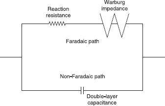
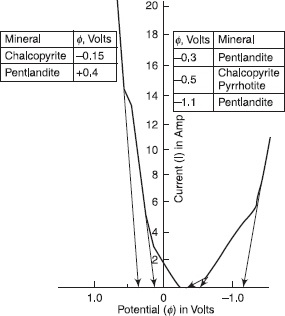

GEOELECTRIC METHODS
THEORY AND APPLICATIONS
About the Authors
Bimalendu B Bhattacharya has been a Professor of Geophysics at Indian School of Mines (ISM),
Dhanbad, India for almost three decades, where he mainly taught electrical and electromagnetic methods,
mining geophysics, magnetotelluric method, geodynamics, and oceanography. Professor Bhattacharya has
carried out extensive fieldwork in almost all the leading mineral provinces of India in search of
polymetallic sulphides, chromite, etc. In addition, he has carried out fieldwork for groundwater
exploration and engineering problems. He has also carried out fieldwork in Russian territory over
electrical anisotropic regions. Professor Bhattacharya has been Indian National Academy of Engineering
(INAE) distinguished professor, associated with the S N Bose National Centre for Basic Sciences,
Kolkata, India, after superannuation from ISM as Professor and Director. Professor Bhattacharya has also
been the Leader of Fourth Indian Scientific Antarctic Expedition (1984–85) and selected the site for the
Indian permanent Antarctica Station “Maitri” (Friendship) in Schirmacher Oasis. He is at present
Chairman, Research Council, Council of Scientific and Industrial Research-National Geophysical
Research Institute (CSIR-NGRI), Hyderabad, India; President, Indian Centre for Space Physics (ICSP),
Kolkata, India, and adjunct professor, Department of Applied Geophysics, ISM.
Shalivahan holds the position of Professor and Head, Department of Applied Geophysics, ISM, where he
teaches courses on pure and applied geophysics, experimental geophysics, geophysical inversion,
electrical and magnetotelluric methods, etc. Professor Shalivahan has carried out fieldwork mainly in
India and sometimes in the Middle East and USA for chromite, polymetallic sulphides, magnetotelluric
methods, tracing of fire fronts in coal mine areas, etc.
The author (Bimalendu B Bhattacharya) has almost 40 years and the co-author (Shalivahan), more than
15 years of teaching and research experience in electrical and electromagnetic methods including
magnetotelluric techniques. In addition, both the authors have considerable experience of interacting with
professionals and managers working in the industry by way of providing consultancies, short-term
courses, and continuing education programmes.

GEOELECTRIC METHODS
THEORY AND APPLICATIONS
Bimalendu B Bhattacharya
S N Bose National Centre for Basic Sciences,
Salt Lake, Kolkata
Former Professor and Director of Indian School of Mines
Dhanbad
Shalivahan
Professor and Head
Department of Applied Geophysics,
Indian School of Mines
Dhanbad
McGraw Hill Education (India) Private Limited
NEW DELHI
McGraw Hill Education Offices
New Delhi New York St Louis San Francisco Auckland Bogotá Caracas Kuala
Lumpur Lisbon London Madrid Mexico City Milan Montreal San Juan Santiago Singapore Sydney Tokyo Toronto

McGraw Hill Education (India) Private Limited
Published by McGraw Hill Education (India) Private Limited
P-24, Green Park Extension, New Delhi 110 016
Ge oe le ctric Me thods: The ory and Applications
Copyright © 2016, by McGraw Hill Education (India) Private Limited. No part of this publication may be reproduced or distributed in any form
or by any means, electronic, mechanical, photocopying, recording, or otherwise or stored in a database or retrieval system without the prior written permission of the author. The program listings (if any) may be entered, stored and executed in a computer system, but they may not be
reproduced for publication.
This edition can be exported from India only by the publishers,
McGraw Hill Education (India) Private Limited
Print Edition
ISBN-13: 978-93-392-2137-9
ISBN-10: 93-392-2137-0
EBook Edition
ISBN-13: 978-93-392-2138-6
ISBN-10: 93-392-2138-9
Managing Director: Kaushik Bellani
Director—Products (Higher Education and Professional): Vibha Mahajan
Manager—Product Development: Koyel Ghosh
Specialist—Product Development: Sahil Thorpe
Head—Production (Higher Education and Professional): Satinder S Baveja
AGM—Product Management (Higher Education and Professional): Shalini Jha
Manager—Product Management: Ritwick Dutta
General Manager—Production: Rajender P Ghansela
Manager—Production: Reji Kumar
Information contained in this work has been obtained by the McGraw Hill Education (India), from sources believed to be reliable. However,
neither author nor McGraw Hill Education (India) guarantee the accuracy or completeness of any information published herein, and neither
McGraw Hill Education (India) nor its authors shall be responsible for any errors, omissions, or damages arising out of use of this information. This work is published with the understanding that McGraw Hill Education (India) and its authors are supplying information but
are not attempting to render engineering or other professional services. If such services are required, the assistance of an appropriate professional should be sought.
Typeset at The Composers, 260, C.A. Apartment, Paschim Vihar, New Delhi 110 063 and printed at
Cover Designer: Kapil Gupta Cover Printer:
Cover Printer:
visit us at: www.mheducation.co.in
Dedicated to the memories of
Chitra Bhattacharya
Professor Amalendu Roy
Professor Alexander Sergeevich Semenov
“This is called practice, but remember to first set forth the theory.”
Leonardo da Vinci
Codex Madrid I (1493–1497)
Preface
Geoelectrical methods are widely used in the exploration of minerals and groundwater. In addition, these
methods are also extensively used in hydrogeological, environmental, geotechnical aspects of civil
engineering, engineering geology, and in mining engineering problems. Unfortunately, there is hardly a
book which has been written to cover the requirement of professionals practicing geophysics, geology,
hydrology, environment, geotechnical engineering, civil engineering, and mining engineering. The books
available in the market, covering all the geophysical methods with special emphasis on exploration
seismology, have been written mainly for professionals related to exploration for oil. The coverage of
geoelectrical methods is grossly inappropriate. Some introductory books with scanty coverage of
electrical methods meant for geologists and engineers are also available. This book has been written with
the ultimate aim of solving geological problems by understanding concepts of physics. The concepts
involved in the geoelectrical method are first discussed in a general sense, and then they are studied
through the application of the relevant theory and state-of-the-art interpretation tools.
The electrical methods have advanced considerably in recent years, widely using tools like advanced
mathematics, digital data processing, tomography, statistical methods, inversion techniques, etc. A modern
book is essential for professionals to understand the intricacies of data acquisition, processing, and
interpretation of the entire gamut of electrical methods. This book will provide the essential background
to students, and help and guide professionals regarding the applicability of the various geoelectrical
methods to the wide range of specialized problems in real-earth situations.
It was felt that the gap between the existing books in the market and the actual requirement of
professionals with the synergic approach should be fulfilled by authoring such a book by the two of us.
This book is an attempt to fill this gap. During many years of teaching at the university level, the
continuing education courses for professionals at various levels, and also from the feedback of students
and professionals, the authors realized that there is a need for a book covering all the aspects of
geoelectrical methods ( viz., Resistivity, SP, Mise-a-la-masse, IP) to meet the requirements of students,
researchers, professionals, managers, and planners. In fact, motivation for writing a book of this nature
crystallized during several interactions with stakeholders and it was further cemented by requests coming
from students, researchers, engineers, and professionals with whom authors had, and still have, a
teaching-learning relationship. This book contains material from published English and exhaustive
Russian literature on the subject as well. The books in English have not used the rich content available in
Russian literature— possibly due to lack of intercourse between the Russian geophysicists and that of the
English-speaking world. To overcome this drawback, some sporadic efforts have been made by Prof. A A
R Zohdy of USGS and Prof. D S Parasnis of Lulea University, Sweden, to name a few. This book has
extensively used the Russian literature which, to the best of knowledge of the authors, has not been used
so exhaustively in any English-language book on the subject. However, there have been problems in doing
so. There is a plethora of in-house Russian journals and it has been simply impossible for the authors to
lay access to the original articles in all the cases. The problem had to be resolved by referring to the
various books and encyclopaedia of electrical methods in accessing the abridged versions of these
materials.
The book is intended to serve as a text as well as reference book on geoelectrical methods, which will
cater to the requirement of introductory as well as advanced level courses for researchers and
professionals. The book also covers leading-edge topics likely to become significant in future. The books
available in the market do not provide the necessary inputs to cover the advancements made in the
subject. Each section of the book gives brief accounts gathered from various sources of how the
knowledge grew step-by-step. The book explains the application of topics related to mathematics, digital
data processing, tomography, statistical methods, inversion techniques, etc.
Due to the nature and obligation of the office of both the authors, the draft of the book has been
prepared largely in our free time. We have at times wondered if it was a folly on our part to undertake an
ambitious project of this nature. We started it as a pleasant venture by improving our lecture materials, but
as the writing progressed, we, at times, got a feeling whether it had become a case of biting off more than
possibly what we could chew? But by that time we had invested so much time on this that there was no
way of gracefully retreating from the project. In fact, some of the chapters, by themselves, could have
been candidates for separate treatises on the subject. In spite of all these ups and downs in completing the
project, we should like to record that writing this book involved considerable reading and research and
this ultimately became a learning process for us, enriching our knowledge in the subject and bringing
awareness of some aspects of the topics which previously we had taken for granted. We must admit,
considering all the points together, that this was the most rewarding aspect of this project and rekindled
our motivation whenever it flagged.
BIMALENDU B BHATTACHARYA
Kolkata, India,
and
SHALIVAHAN
Dhanbad, India
Publisher’s Note
All our books are developed with a lot of love and sincere hard work. If you would like to make a
suggestion or share your views, write in to us at , mentioning the title and author’s name in the subject
line.
Acknowledgements
We hope this book will help in deciphering the earth’s exciting secrets, some of which are not yet fully
understood. The present level of knowledge has been put to use for humankind’s benefit in discovering
natural resources and solving many geotechnical and environmental problems. The unanswered or
partially answered questions will help future researchers in selecting some important topics in
geoelectrical methods. The authors acknowledge the advice and support of several students and research
scholars and it is not practicable to give a complete list. We thank one and all of them. We dedicate the
book in memory of three individuals who would have been the happiest to see the completion of our
project.
Professor Bhattacharya thanks the Department of Science and Technology (DST), Government of
India, for the financial assistance under the USERS scheme of DST and it specially helped in getting
assistance for drafting the diagrams essential for this project. The authors thank Ms Sampurna Sinha,
recruited under the USERS scheme for drafting almost all the figures of this book. Thanks are also due to
Ved Prakash Maurya, Research Scholar, Department of Applied Geophysics, Indian School of Mines
(ISM), Dhanbad, India, for redrafting some of the figures.
We acknowledge a bias towards the case histories from the territories of the Former Soviet Union
(FSU). The reason is the extensive drilling carried out over the geophysical anomalies in such areas and
delineation of the ore bodies. Moreover, most of these cases are, to the best of the knowledge of the
authors, being reported for the first time to the English-speaking world. The authors believe that the topics
and the structure of the book are going to make the book unique of its type.
BIMALENDU B BHATTACHARYA
Kolkata, India,
and
SHALIVAHAN
Dhanbad, India
List of Symbols
σ
Conductivity
μ
Mobility of carriers; Dynamic viscosity of the electrolyte
n
Number of charges in a material; Valence of the ions; Normal ion concentration of
electrolyte; Number of observation points
e
Charge carried by each carrier in a material; Elementary charge
ρv
Transverse resistivity of anisotropic formations in a direction normal to the
layering
ρh
Longitudinal resistivity of anisotropic formations along the layering
ρ 0
Resistivity of electrolyte or rock at 18°C
18
t
Temperature
Pt, Q
Coefficients
αt
Thermal coefficient of conductivity
C
Concentration; Capacitance
L
Length of the sample; Distance between the two current electrodes; Bounding
contour of the solution domain area A, Distance of the measured potential from the
source; Distance between the centres of current and potential dipoles
A
Area of cross section; Radius of the sphere
Leq
Equivalent electrolytic path
Aeq
Equivalent area of cross section of electrolytic path
ρse
Resistivity of saturating electrolyte
ϕ
Porosity
Vw
Volume of water present in the pore spaces
Vm
Volume of rock matrix
tc
Tortuosity coefficient
d
Diminution coefficient; Distance of the nearest side of the dyke from the current
source A; Specific weight of the entire ore; Distance between the minimum of the
gradient curve along the y-direction
Lm
Rock-matrix length
Am
Area of cross section of the rock matrix
σW
Conductivity of the electrolyte present in the pore spaces
W
Volume fraction of water present in the rock assuming the entire pore spaces are
completely filled with water
a
Constant depending on the nature of rock formations; Semi-major axis of an
ellipse; Length of the rod inside the ground; Electrode spacing; Semi-axis of the
tri-axial ellipsoid; Half-width of inclined sheet; Constriction factor
m
Cementation factor; Slope
ρm
Rock-matrix resistivity; Root mean square resistivity or mean resistivity
ρw
Resistivity of water saturating the rocks
Fa
Apparent formation factor
σse
Conductivity of electrolyte
σm
Conductivity of rock matrix
F 0
True formation factor
σe 1
Conductivity of electrolyte one
σe 2
Conductivity of electrolyte two
c
Constant depending on characteristic of the formation
k
Constant depending on characteristic of the formation; Boltzmann constant,
Reflection coefficient; Surface polarizable factor
σs
Conductivity of conductive solids present in the core sample
T
Absolute temperature
σ 0
Base-level conductivity
E 0
Activation energy
w
Fluid content
x
Coordinate along x-axis; Surface capacitance
y
Coordinate along y-axis; Constant
J
Current density
E
Electric field
σi j
Components of conductivity
i, j = x, y
ρp
Resistivity of the lamina
ρs
Resistivity of the parting
ν
Volume of the rock formation; Valence of the normal ions
Rt
Resistance in parallel direction to the laminations
Rn
Resistance in perpendicular direction to the laminations
Rpt
Total resistance parallel to the laminations of the fractional volume of rock
containing the laminations
Rst
Total resistances parallel to the laminations of the fractional volume of rock
containing the bands
Rpn
Total resistances perpendicular to the laminations of the fractional volume of rock
containing the laminations
Rsn
Total resistances perpendicular to the laminations of the fractional volume of rock
containing the bands
λ
Coefficient of anisotropy; Transform variable; Integration factor
h 1
Thickness of the layer 1; Height considering the form and distribution of aggregate
minerals in the ore body
h 2
Thickness of the layer 2
v 1, 2
Ratio of thicknesses of layers 1 and 2
λ 0
Overall coefficient of anisotropy
ρm, 1
Mean resistivity of the anisotropic layer 1
ρm, 2
Mean resistivity of the anisotropic layer 2
ρt, 1
Transverse resistivity of the anisotropic layer 1
ρt, 2
Transverse resistivity of the anisotropic layer 2
λ 1
Coefficient of anisotropy for the layer 1
λ 2
Coefficient of anisotropy for layer 2
Δ λ
Difference of anisotropy between two anisotropic layers
λM
Coefficient of macro-anisotropy
kv( Pv)
Formation with coefficient of porosity
kq( Pq)
Formation with coefficient of water saturation
t( Pt)
Formation with coefficient of temperature
Ac
Coefficient depending on the chemical composition of the electrolyte
Bd
Coefficient determined by the relationship between resistivity of the formation
with its dispersion characteristics
δa
Element of surface
∇
Gradient
V, V 1, V 2,
Potential
V 0
q
Charge density; Geometric shape factor
A, B
Current electrodes
M
Potential electrode; Slope; Chargeability; Mass of the entire ore
N
Potential electrode; Structural index
ρ
Resistivity of the homogenous medium; Resistivity of the electrolyte
I, I′, I″
Current
r
Radius; Distances; Radius of local search; Distance from the centre of hemisphere
to the potential electrode
v
Volume; Volume of the entire ore
R
Resistance; Contact resistance, Radius of the cylinder; Universal gas constant;
Resistance of the electrolyte path; Distance between the profiles under
consideration from the profile passing through the charging point
s
Area of cross section
QQ′
Vertical plane
h
Depth; Thickness of vertical dyke
θ
Angle; Angle subtended at the origin by the line drawn between the current and
potential electrodes
α
Angle; Dip of the bed; Angle between the plate and the horizontal plane; Angle of
the dipole orientation measured from horizontal positive clockwise; Evaporation
rate; Coefficient of the entire ore; Saturation exponent
β
Angle; Source geometry factor; Coupling coefficient
dS
Displacement of the vector r due to change in the azimuthal angle
r 0
Radius of the electrode; Initial radius
Rε
Resistance of rod electrode
RT
Total resistance
K
Geometrical constant; Amplitude; Boltzmann’s constant
ρaS
Apparent resistivity for the Schlumberger array
ρaD
Apparent resistivity for a dipole-dipole array
ρaThE
Apparent resistivity for a three-electrode array
ρaPD
Apparent resistivity for a pole-dipole array
ρaTE
Apparent resistivity for a two-electrode array
P
Dipole moment
VD
Potential due to dipole
Er
Electric field due to a radial dipole
Eθ
Electric field due to an azimuthal dipole
Ex
Electric field due to a parallel dipole
Ey
Electric field due to a perpendicular dipole
Eeq
Electric field due to an equatorial dipole
Eax
Electric field due to an axial dipole
ρaW
Apparent resistivity for the Wenner array
Jx, Jy, Jz
Components of current density in x, y, z directions
Ex, Ey, Ez
Components of electric field in x, y, z directions
( x, y, z),
Cartesian coordinate system
( α, β, γ),
( x, y, z)
Φ
Angle between the strike direction and the observation point
b
Semi-minor axes of an ellipse; Radius of the rod electrode; Width of vertical dike;
Semi-axis of the tri-axial ellipsoid; Learning rates governing the cognition
( r, θ, z)
Cylindrical coordinate system
k
Reflection coefficient
J 0 and J 1
Bessel’s function of zeroth and first orders
zi
Depth of i layer
Ki
Kernel of i th layer
Ti( λ)
Resistivity transform of i th layer
Δ VW
Potential difference for Wenner array
fc
Cut-off frequency
Δ x
Sampling interval
h( x)
Pulse response of the resistivity filter
H( f)
Frequency characteristic of the resistivity filter
B( f)
Frequency representation of the sinc response
aj
Digital filter coefficients
bj
Inverse digital filter coefficients
T
Resistance normal to the face of the prism
S
Conductance parallel to the face of the prism; Boundary surface; Fraction of pore
space filled with water; Reaction surface
he
Effective thickness
ρe
Effective resistivity
I, I′, I″
Current strength
P, M
Point of observations
V
Potential
F 1 D, F 2 D,
Frechet derivative for 1D, 2D, and 3D sensitivity matrices
F 3 D
ze
Median depth of investigation
ρa
Apparent resistivity
R 1
Radius of the hump
O 1
Origin of the coordinate system
2 x 1
Chord length of hump
O 2
Centre of the cylinder at a depth H 2 from the origin O 1
D
Depth to the top of the cylinder
O
Origin on the surface of the earth
H
Magnetic field
Hx, Hz
Components of the magnetic field H in x- and z- directions respectively
H
Depth of a point source in a homogeneous isotropic medium below the ground
surface; Depth to the top edge over the epicentre
2 xm
Width at half the maximum point of the curve
d 1
Distance between the maximum and minimum of the gradient curve along the y-
direction; Specific weight of the mineral
c
Semi-axes of the tri-axial ellipsoid; Learning rates governing the social behaviour
2 b
Length of the conductor
2 δ
Width of the plate
ξ, η, ζ
Coordinate of a point in the plate
dy
Distance between the maximum and minimum along the main profile
2 l
Length of the ore body, rectangular plate, and length of the line electrode
dx
Distance between maximum and minimum values of the curve
Δ
Shift of the maximum and minimum depending on the depth h to the top edge of the
plate
φ
Scalar potential; Minimization of this functional with respect to the unknown
function gives the potential function
Js
Source of current density
φxx, φxx
Second partial derivatives with respect to x of φ = φ ( x, y, z) and φ = φ ( x, λ, z) respectively
δ ( x)
Dirac delta function
φ
The approximation of a two-dimensional field variable
E
Element
φ e
Unknown parameters
Nβ
Element shape functions
Ψc, Ψs
Power dissipated per unit volume
Jc
Current density; Critical current density of reaction
Ψ
Total power
Δ Ψ
Variation of the total power
lx
Direction cosine of the normal to the exterior boundary with respect to the x-axis
At, Am, Ab
Current electrode A shifted to the excitation points from top, middle, and bottom
α, β, γ, λ
Scale factors for the length, mass, time, and electric current respectively
A 1, A 2, A 3,
Point current electrode at four different locations below a valley
A 4
C 1, C 2
Position of the centres of the salt aureole; Concentrations of two electrolytic
solutions
vf
Velocity of flow of water
vs
Rate of change of shift of the centres of the equipotential contours on the surface of
the earth
Δ1 t, Δ2 t,
Equipotential contours at different times
Δ3 t
Δ1 r, Δ2 r,
Distances traversed at different times
Δ3 r
p
Pressure gradient
ξ
Streaming potential
U
Electromotive force (emf)
u, v
Velocities of the positive and negative ions respectively in the electrolyte
F
Faraday’s constant; Total response of the half-space; Formation factor
Uj
Liquid junction potential
Us
Shale or Nernst potential
E 1,
2
Redox potential
H
EH
ϕ ( r)
Potential field
V ore
Voltage drop within the ore body
ΔΦ i
Voltage drop across the ore body-electrolyte interface at the site of electronation
ΔΦ b
Voltage drop across the ore body-electrolyte interface at the site of
deelectronation
Ex( x, y)
Electric field along profiles parallel to the x-axis, equally spaced at intervals Δ y
Δ V( x)
Potential drop measured along the x-axis at intervals of Δ y
η( xq, yq,
Charge Occurrence Probability (COP), for the q th charge located at a point ( η , ,
q yq
zq)
zq)
ηp( rp)
Source Dipole Occurrence Probability (SDOP)
N
Structural index
C p
Normalization constant
v
g( z)
Topography regularization factor
Ω
Subspace
| A|
Amplitude of the Analytic Signal (AAS)
kx
Derivative of the local phase with respect to x
J*
Total electrical transport
Jc
Flow of charge
JD
Storage of charge
ε
Relative permittivity; Noise; Dielectric constant
χ
Electric susceptibility
μ
Volume current moment strength
Q
Charge
Io
Initial value of the current;dc part of the current
Ke
Relative dielectric permittivity of the fluid medium
Zm
Complex impedance
Fc
Critical frequency
Vt
Voltage existing at a time t after the current is cut-off
Vc
Steady voltage during the current-flow interval
FE
Frequency effect
PFE
Percent Frequency Effect
MF
Metal Factor
ρdc
Apparent resistivity at dc
ρac
Apparent resistivity at ac
ρ∞
Apparent resistivity at very high frequency
man
Local apparent polarizability anomaly
d
Data vectors
m
Model vectors
g
Forward operator
d true
Observed data
m true
True model
E( m)
Objective function (also called error/cost/misfit function)
G 0
Frechet derivative or sensitivity matrix
E 1
Error at the iteration i
E 2
Error at the iteration i + 1
Δ E
Difference in error between two consecutive iterations
do
Initial guess of unknown parameters
di
Known parameters such as AB/2
g( d o, xi)
Apparent resistivity at the i th spacing for the layered structure indicated by d o
g( d, xi)
Measured apparent resistivity
Δ d̂
Least square estimate of Δ d
Δ d̂*
Ridge regression estimate of Δ d
I
Identity matrix
λ 2
Eigen values of
i
AtA
ϕ*
Residual sum of squares for the ridge regression
Δ G*
Difference between the measured and predicted apparent resistivities
Ti( k)
Temperature at iteration k
Toi
Initial temperature for model parameter i
ci
Parameter used to control the temperature schedule
nm
Number of model parameters
Tfi
Final temperature as desired for model parameter i
mi
i th particle of swarm of particles in M-dimensional space
pi
Previous best position of i th particle
vi
Velocity of i th particle
m k
Current location of the
i
i th particle at the k th iteration
v k
Velocity of the
i
i th particle at the k th iteration
m l
Best location so far achieved by the particle
i
mg
Best location achieved by the swarm prior to the k th iteration
ran(.),
Random number
rand
pos(.,.)
Array filled with the corresponding decimal coded values
τ 0
Initial values of pheromones at all the edges
τt, 0
Pheromone deposited on the edge of the node [ a, b] for the layer l and iteration
a b
zero
f( x)
Objective function value corresponding to x
x
Vector composed by geophysical model
D calcualted
Calculated geophysical data
D measured
Measured geophysical data

pos ( i, l +
Position of the i th ant at the ( l + 1)th layer
1)
p
Constant threshold value ( p = 0.8) controlling the movement of the ants
Roulette
Fitness proportionate selection
c best
Best-found solution
c
Positive constant
t
Current iteration number
2 s
Current electrode spacing AB
θ 1( λ)
Kernel function
ρ 1
First-layer resistivity
Mi
Chargeability of the i th layer
ρ*
Resistivity of the
i
i th layer in presence of chargeability
ρ*
Apparent resistivity over a layered earth in presence of chargeability
a
Ma
Apparent chargeability
A( x)
Amplitude of the total gradient
x
First-order horizontal derivative
z
First-order vertical derivative
xo
Horizontal location of the causative source
zo
Depth of causative source
A
Current electrode
B
Thickness of dyke
z
Depth to the centre of the sphere from the surface
r 1
Radius of hemispherical sink
Pn(cos θ)
Legendre polynomials
[cor
Elements of the correlation matrix
( P)] ij
ρi
Resistivity of the i th layer
hj
Thickness of the j th layer
mi
Polarizability of the i th layer
O(0, 0, 0)
Origin of the coordinate system

V( x, y, z)
Potential at the point ( x, y, z)
μx, μy, μz
Dipole moments of the volume element at the point ( x, y, z) in the x, y, z directions
dV MN
Potential difference between MN due to dipole moments
DIC
Depth of Investigation Characteristic
NDIC
Normalized Depth of Investigation Characteristics
(NDIC)W
Normalized Depth of Investigation Characteristics for a Wenner array
(NDIC)S
Normalized Depth of Investigation Characteristics for a Schlumberger array
(NDIC)TE
Normalized Depth of Investigation Characteristics for a Two-Electrode array
(NDIC)D
Normalized Depth of Investigation Characteristics for Axial Dipole or Dipole-
dipole array
l
Lengths of both the current and potential dipoles
θ 1, θ 2
Angle between the current dipole and horizontal, and potential dipole and
horizontal
z max
Depth at which maximum value of NDIC occurs
z med
Median depth
zd
Effective depth
TC
Total contribution
ρ 1
Resistivity of infinitesimally thin sheet
ρ 2
Resistivity of the vertical dyke
d
Distance of the nearest side of the dyke from the current source A
LRF
Lateral Response Function
NLRF
Normalized Lateral Response Function
φii = 1, 2
Anodic and cathodic reaction potentials
φ
Electrode potential
φ cpd
Contact potential difference
φe
Electrolyte potential with respect to the standard calomel electrode
φel
Potential of the calomel electrode with respect to the mercury electrode
Current transmitted from the external source per unit time
IC
Critical current of reaction
Δ VH
Host-rock potential difference
Δ VOR
Potential difference inside the ore body
Δ VC
Potential drop due to the connecting cables
Δ V comp
Potential difference measured in a compensator
CI
Mineral content of the mineral
m 1
Mass of the mineral
v 1
Volume of the mineral
h 1
Height of the mineral
α 1
Coefficient of the mineral
K 100
Transient coefficient
KK
K
100
100 for the cathodic processes for different minerals
KA
K
100
100 for the anodic processes for different minerals
l 1
Length along the strike
l 2
Length along the dip
aPb
Fraction of lead in galena
aZn
Fraction of zinc in sphalerite
aCu
Fraction of copper in chalcopyrite
APb
Atomic weight of lead
MGn
Molecular weight of galena or the corresponding sulphide
WC
Mass of the cation deposited
ZC
Electrochemical equivalent
An, Bn
Constants
Im
Maximum current amplitude
τc
Time constant
jn
Current density emanating from the polarizable surface of the ore body
k( iω)
Surface impedance
k 0
Surface resistance
λa
Apparent coefficient of anisotropy
Copyright Credits
The publishers, individuals, and organizations listed below are gratefully acknowledged for giving their
permission to use redrawn figures based on illustrations in journals, books, and theses for which they
hold the copyright. The original authors have been cited in the figure captions. Every effort has been made
to obtain permission to use the copyrighted materials, and sincere apologies are rendered for any errors
or omissions and these, if any, may please be brought to notice.
Figures
Copyright
Figure Number
Owner
Society of
1.3, 1.5, 1.6, 4.34, 4.39, 4.40. 4.41, 4.42, 4.79, 4.80, 4.81, 5.39, 5.40, 6.14,
Exploration
6.26, 6.28, 6.33, 6.54, 7.3, 7.4, 7.5, 7.7, 7.8, 7.9, 7.10, 7.13, 7.16, 7.31, 7.49,
Geophysicists,
7.50, 8.2.8.4, 8.7, 8.22, 8.23a, 8.23b, 10.16, 10.17, 10.18, 10.19, 10.21, 10.22,
USA
10.23, 10.24, 11.34, 11.35, 11.36, 11.37, 11.38,
Pergamon Press
1.7
AkademiaiKiado
1.8, 1.9
Nedra
3.2, 3.6, 3.8, 3.11, 3.12, 3.13, 3.72, 3.73, 3.75, 3.76, 3.79, 3.80, 3.81, 4.1, 4.2,
4.3, 4.4, 4.5, 4.7, 4.11, 4.16, 4.17, 4.20, 4.21, 4.47, 4.48, 4.49, 4.50, 4.51,
4.52, 4.53, 5.1, 5.2, 5.3, 5.4, 5.5, 5.6, 5.7, 5.8, 5.9, 5.10, 5.11, 5.12, 5.13, 5.14,
5.15, 5.16, 5.17, 5.19, 5.20, 5.21, 5.22, 5.35, 5.36, 5.37, 5.38.5.50, 5.51, 5.52,
5.53, 6.3, 6.4, 6.5, 6.6, 6.7, 6.8, 6.9, 6.11, 6.12, 6.13, 6.15, 6.16, 6.17, 6.18,
6.19, 6.22, 6.30, 6.39, 6.40, 6.41, 6.42, 6.43, 6.44, 6.45, 6.46, 6.47, 6.48, 6.49,
6.52, 6.53, 6.55, 6.56, 6.57, 6.58, 6.60, 6.61, 6.63, 7.19, 7.20, 7.21, 7.22, 7.23,
7.24, 7.25, 7.26, 7.27, 7.28, 7.29, 7.35, 7.36, 7.37, 7.28, 7.39, 7.40, 7.41, 7.42,
7.43, 7.44, 7.45, 7.46, 7.47, 7.48, 10.1, 10.2, 10.3, 10.4, 10.5, 10.6, 10.7, 10.8,
10.9, 10.10, 10.11, 10.12, 10.13, 10.14, 10.15, 11.1, 11.2, 11.3, 11.4, 11.5,
11.6, 11.7, 11.8, 11.9, 11.10, 11.11, 11.12, 11.13, 11.14, 11.15, 11.17, 11.18
Cambridge
3.3, 7.11, 7.12, 8.3
University Press
Geological
3.7, 7.34, 11.19, 11.20
Survey of India
Elsevier
3.10, 3.51, 5.48, 7.14, 7.18
Delft University
3.16
of Technology,
The Netherlands
Geophysical
3.17, 3.18, 3.54, 3.55, 3.56, 3.70, 3.7, 4.15, 4.67, 4.68, 5.41, 5.42, 5.43, 6.10,
Prospecting
6.35, 6.51, 8.5, 8.6, 8.8, 8.9, 8.10, 8.11, 8.12, 8.13, 10.20
Gosudartsvennoe
3.22, 3.24, 3.27, 3.29, 3.30, 3.34, 3.35, 3.36, 3.37, 3.38, 3.39, 3.40, 3.41, 3.42,
Nauchno-
3.43, 3.44, 3.45, 3.46, 3.47, 3.48, 3.52, 3.53, 3.60, 3.65, 3.66, 3.82, 3.83
Tekhnicheskoe
Publisher Acad
3.49, 3.57, 3.58
of Sc. Ukranian
SSR, Kiev,
United States
3.67, 3.68, 4.12, 4.13, 4.14, 4.18, 4.22, 4.23, 4.25, 4.26, 4.27, 4.28, 4.29, 4.43,
Geological
4.44, 4.45, 4.46, 4.76, 4.77
Survey
Leningrad
3.77, 3.78, 6.31
University
Shyamal
3.84, 3.85, 3.86, 3.87, 3.88, 3.89, 3.90, 3.91, 3.92, 3.93, 3.94, 3.95, 3.96, 3.97,
Adhikari, Indian
3.98, 3.99, 3.100, 3.101, 3.102, 3.103, 3.104
School of Mines,
Dhanbad
D Biswas,
4.35, 4.36, 4.37, 4.38
Indian School of
Mines, Dhanbad
Dinesh Gupta,
5.44, 5.45, 5.46, 5.47
Indian School of
Mines, Dhanbad
Shalivahan,
8.14, 8.15, 8.16
Indian School of
Mines, Dhanbad
Indrajit Dutta,
9.3, 9.4, 9.5, 9.6, 9.7, 9.12, 9.13
Indian School of
Mines
Rajshahi
3.105, 3.106, 3.107, 3.108, 3.109, 3.110, 3.112, 3.112
University,
Bangladesh
Geoexploration
2.16, 2.18, 2.19a, 2.19b, 4.24, 4.74, 4.75, 5.49, 6.20, 6.21, 6.23, 6.245, 6.25,
6.32, 6.59, 11.16
Loke
4.57, 4.58, 4.60, 4.62, 4.63, 4.65, 4.66, 4.69, 4.70, 4.71
Current Science
4.82
Gosgeoizdat
5.18, 5.23, 5.24, 5.25, 5.26, 5.27
Mwenifumbo, C
5.28, 5.29, 5.30, 5.31, 5.32, 5.33, 5.34
J
Massachusetts
6.1, 6.2
Institute of
Technology
Surveys in
6.27
Geophysics
Indian
6.29
Geophysical
Union
Chapman and
6.34
Hall
Economic
6.50, 7.15, 7.17, 7.30, 7.32, 7.33
Geology
VIRG, Leningrad
6.62
Near Surface
6.64, 8.24
Geophysics
Journal of
6.65, 6.69, 6.70
Applied
Geophysics
Geophysical
6.66, 6.67, 6.68,
Journal
International
Exploration
9.8, 9.9, 9.10, 9.11
Geophysics
Journal of
11.21, 11.22.11.24, 11.25, 11.26, 11.27, 11.28
Geological
Society of India
Tables
Copyright Owner
Table Number
Society of Exploration Geophysicists,
4.3, 7.2, 7.3, 8.2, 10.1, 10.2, 10.3, 10.8, 11.7
USA
Nedra
6.1, 7.5, 7.6, 7.7, 7.8, 10.4, 10.5, 10.6, 11.1, 11.3,
11.4, 11.5
Cambridge University Press
7.1, 7.4
Delft University of Technology, The
3.3, 3.5
Netherlands
Geophysical Prospecting
3.4, 3.10, 8.1, 8.3
Shyamal Adhikari, Indian School of
3.11, 3.12, 3.13, 3.14, 3.15, 3.16 Dhanbad
Mines,
D Biswas, Indian School of Mines,
4.1, 4.2
Dhanbad
Rajshahi University, Bangladesh
3.17, 3.18, 3.19, 3.20
Geoexploration
11.2, 11.6
Loke
4.4
Mwenifumbo, C J
5.1
Journal of Applied Geophysics
8.9
Journal of Geology
10.7
Contents
Preface
Acknowledgements
List of Symbols
Copyright Credits
Introduction
1. Electrical Properties of Rocks
1.1 Basic Concepts of Electrical Conduction
1.2 Conduction in Rocks
1.3 Resistivities of Rocks
1.4 Pore-Space Geometry and Rock Resistivity
1.5 Formation Factor
1.6 Relation Between Porosity and Formation Factor
1.7 Effect of Frequency on Formation Factor
1.8 Effect of Clay on Rock Resistivity
1.9 Membrane Polarization
1.10 Conductivity Characteristics of Geothermal Systems
1.11 Anisotropy
Problems
References
2. Fundamental Principles of the Geoelectrical Method
2.1 Point Source in Homogeneous and Isotropic Media
2.2 Point Source in Inhomogeneous and Isotropic Media
2.3 Field due to a Point Source Over Two-Layered Earth
2.4 Galvanic Contact
Problems
References
3. Vertical Electrical Sounding
3.1 Concept of Apparent Resistivity
3.2 Arrays Used in the Resistivity Method
3.3 Sounding and Profiling
3.4 Current Flow in a Homogeneous and Anisotropic Medium
3.5 Apparent Resistivity on a Horizontally Layered Earth
3.6 Kernel Function and its Relationship with Layer Parameters
3.7 Principles of Digital Filter Theory
3.8 Generation of Multilayer Curves
3.9 Reduction of Horizontal Layered Earth
3.10 Reciprocal Geoelectric Section
3.11 Effect of Dipping Layers
3.12 Principle of Equivalence and Suppression
3.13 Effect of Shallow Inhomogeneity on VES Measurements
3.14 Second Derivative of Apparent Resistivity Curves
3.15 Dipole Electrical Sounding
3.16 Application of VES
Problems
References
4. Resistivity Profiling
4.1 Introduction
4.2 Wenner Array
4.3 Schlumberger Array
4.4 Profiling by Dipole-Dipole (or Axial Dipole) Array
4.5 Middle or Central Gradient Method
4.6 Radial or Polar
4.7 Theoretical Formulations
4.8 Theoretical Response over Various Targets
4.9 Experimental Results
4.10 Effect of Topography
4.11 2D Resistivity Imaging
4.12 Crosshole Resistivity Imaging
4.13 3D Electrical Imaging Surveys
4.14 Multichannel, Full-Waveform, and Flexible-Electrode Combination Resistivity-Imaging
System
4.15 Field Examples
Problems
References
5. Mise-a-la-masse Method
5.1 Principle of the Method
5.2 Theoretical Studies
5.3 Laboratory Scale-Model Studies
5.4 Correlation of Ore Bodies between the Boreholes
5.5 Case Histories
5.6 Results of Mise-a-la-masse Method in Underground Mines
5.7 Determination of Direction and Velocity of Groundwater Flow
Problems
References
6. Self-potential Method
6.1 Introduction
6.2 Field Measurements
6.3 Origin of Self-potentials
6.4 Electrochemical Reactions
6.5 Why Self-potential Anomalies are Negative?
6.6 Self-potential Response over Typical Geometrical Shaped Bodies
6.7 Fluctuation of SP with Time
6.8 Stable Negative Anomaly of Unknown Nature
6.9 SP Over Water-Covered Areas
6.10 Borehole SP Measurements for Ore Bodies
6.11 SP Measurements in Mines
6.12 Interpretation of SP Anomalies
Problems
References
7. Induced Polarization
7.1 Introduction
7.2 Mathematical Formulation of IP Response
7.3 Electrode Polarization
7.4 Membrane Polarization
7.5 Cole–Cole Model
7.6 IP Measurements
7.7 IP Noise Sources
7.8 Negative IP
7.9 Gradient Array Time-Domain IP Measurements
7.10 Distribution of Electronically Conducting Minerals in Ores
7.11 Application of IP Method and Field Results
Problems
References
8. Geophysical Inversion
8.1 Introduction
8.2 Classification of Inverse Problems
8.3 Some Important Issues Related to Inverse Problems
8.4 Linear Inversion Technique: Ridge Regression
8.5 Nonlinear Inversion Techniques
8.6 Forward Modelling
8.7 The Sensitivity and Resolution Analysis
8.8 Inversion of Geophysical Data Set
8.9 2D Inversion of Resistivity and IP Data Sets
8.10 Inversion of Resistivity Profiling Data
8.11 Inversion of Massive Sulphide Deposits, Senneterre Area, Quebec, Canada
Problems
References
9. Depth of Investigation
9.1 Definition
9.2 Electrostatic Equivalence
9.3 Mathematical Derivation
9.4 Determination of Depth of Investigation Characteristics through the Solution of Boundary
Value Problems
9.5 Lateral Response Studies over a Semi-Infinite Vertical Dyke Embedded in a Homogeneous
Half-Space
9.6 Frechet Derivative for Homogeneous Half-Space
9.7 Contribution Sections of Collinear Arrays
Problems
References
10. Synergy Between Geophysics and Geology for Effective Exploration Strategy
10.1 Introduction
10.2 Ore Zone for Investigation by Geoelectrical Methods
10.3 Weathering and Critical Zones
References
11. Mineral Discrimination Methods
11.1 Introduction
11.2 Contact Polarization Curve (CPC) Method
11.3 Measurement of Contact Potential Difference at the Interface of Mineralization
11.4 Measurements of Polarization Curves
11.5 Case Histories from the Mineral Belts of the Former Soviet Union
11.6 Quantitative Analysis from CPC Curves
11.7 Conclusions for CPC Method
11.8 Contactless Polarization Curve (CLPC) Technique
11.9 Polarographic Logging
11.10 Partial Extraction of Metals by Electrolysis (PEXMEL) Method
11.11 Spectral Induced Polarization
Problems
References
Appendix I
Appendix II
Appendix III
Appendix IV
Appendix V
Appendix VI
Introduction
This book is the result of field and theoretical work covering all the electrical prospecting methods used
all over the world. Commencing from Fox’s work on natural earth currents, the geoelectrical method has
traversed a long and successful path. Conrad Schlumberger (1878–1936) is possibly the most colourful
personality in the field of electrical prospecting. He and his colleagues are sometimes referred as the
“Schlumberger school” or the “French school” for their early concepts and pioneering work in electrical
prospecting using self-potential (SP), resistivity, induced polarization (IP), mise-a-la-masse, and well-
logging methods. An account of the history with special reference to early development of electrical
prospecting may be grouped into five broad schools: (i) French, (ii) American, (iii) Russian, (iv)
European and Scandinavian, and (v) other schools.
The mathematical approach to electrical-resistivity prospecting is based on Ohm’s law, principles of
potential fields, and particularly, the electric-current flow in the earth. The assumption that the current
electrodes are point sources is valid so long as the measurements are made at distances greater than the
length of the current electrode driven inside the earth. The potential distribution due to the flow of current
in the earth is governed by Laplace’s equation which is valid everywhere excepting at the source. In case
of current flow in an inhomogeneous earth, Laplace’s equation is subjected to certain boundary
conditions. In some inhomogeneous problems, image theory has been successfully used to obtain the
expression for apparent resistivity on the ground surface. One of the major theoretical developments in the
early stage of electrical prospecting has been the determination of expression for potential due to a point
source placed over the surface of a multilayered earth. Albums for two and three layers have been
extensively used by the geophysical community all over the world, especially for groundwater
exploration work. Albums for some typical cases for a four-layer earth have also been used by many
interpreters. However, there were severe limitations. The problem of constructing albums for four- and
more-layer earths became too complex for use. The dipole-dipole electrical sounding (DES), extensively
used by the “Russian school”, enabled to investigate deeper layers which was, otherwise, difficult to
investigate and interpret using the conventional sounding arrays.
Introduction of a function into resistivity-sounding theory, termed subsequently, the Slichter’s kernel
function, which is controlled by resistivity and thickness of the layers, is an important development. The
concept of recurrence relation, which is to add a new layer at the top of the original layer sequence
simultaneously shifting the electrodes to the top of this new layer, found wide application much after the
concept was propounded. It is also applicable in reverse direction, but the electrodes remain at the top of
the first layer. The findings that errors in apparent resistivity curves did not show up to the same degree in
the corresponding kernel function led to some systematic advancements in layered-earth studies.
Introduction of a new function termed “raised kernel” function showed that the changes in this kernel were
of the same magnitude as the changes in the apparent resistivity such that all the information was retained
in the conversion process. Subsequently, a new and useful function called “resistivity transform” was
introduced.
The study was further extended from isotropic to anisotropic earth leading to a paradox of an isotropy,
which is easy to explain. The problem of equivalence also cropped up. The equivalence between an
isotropic layer and an anisotropic layer having appropriate parameters is exact and the two alternatives
cannot be distinguished.
The turning point in the interpretation of layered earth has been the application of the concept of linear
filter in constructing the resistivity curves for any combination of layer parameters. This made the
interpretation of curve-matching technique using albums obsolete. Subsequently, this technique became
very handy for the linear and nonlinear inversion techniques in the interpretation of layered earth by
vertical electrical sounding (VES).
The mise-a-la-masse method energizes the outcropping or conducting ore body intercepted by
borehole or in a mine cut by placing one current electrode in the body and other at a faraway distance. It
has been termed the “charged body” method by the “Russian school” and some others. This method is
particularly useful to find if an ore mass in an outcrop or one intercepted by a borehole is a small body or
part of a larger body. The method has also been used to determine the groundwater flow.
Self-potential (SP), though the oldest and simplest of the methods of geophysical prospecting, became
an “ugly duckling” in the presence of resistivity, induced polarization (IP), and various types of
electromagnetic methods of exploration. It was only around the nineties that publications on this method
increased manifold and it successfully came out of the “ugly duckling” phase. The phenomena of self-
polarization or spontaneous polarization (SP) are governed by Ohm’s, Darcy’s, Fick’s, and Fourier’s
laws. In addition to other factors, it is also controlled by the Seebeck, Soret, Peltier, and Dufour effects.
When the electric current injected into the ground is switched “off”, the voltage across the potential
probes does not drop to zero immediately. Instead, a transient is observed that decays with time. This
phenomenon has been termed induced polarization. It is observed if electronically conducting minerals
like polymetallic sulphides, graphite or clay is present in the rock matrix. It was noted as back as 1920 by
Conrad Schlumberger, but its modern application commenced around the fifties. The normalized time
integral representing area under the decay curve is, nowadays, used to express IP in milliseconds. It is
known as chargeability in time-domain IP. Another commonly used IP measurement is in the frequency
domain where apparent resistivity is measured at two frequencies (in the range of 0.05–0.5 Hz for very
low frequency and 1–10 Hz in the low-frequency ranges) and expressed either as frequency effect (FE) or
percent frequency effect (PFE). Another frequency-domain IP measure using the same two frequencies is
metal factor (MF) having the unit of siemens per metre. The third measure of the IP effect in the frequency
domain is the phase difference at the potential probes and the current injected into the ground which is in
the milliradian range for very low frequency, of say 1 Hz.
Geophysical surveys are carried out to understand the subsurface disposition of the earth by estimating
the physical properties of the earth. The physical properties vary in all directions, whereas data sets are
usually sparse. Inverse theory is a set of mathematical techniques for reducing data to obtain useful
information about the physical world on the basis of inferences drawn from observations. In general, laws
of physics provide the means for computing the data values for a given model. The problem of generating
theoretical data for a given model is termed a forward problem. The essential elements of inversion are
(i) data, (ii) model parameters, (iii) forward problem, (iv) definition of an error/objective/cost/misfit
function, (v) optimization methods, and (vi) knowledge of error in theory and data.
Using the concept of electrostatic equivalence, the contribution made by each individual elementary
volume of ground to the total signal measured on the ground surface has been determined. The point
electrodes injecting current into the earth are replaced by point charges of electricity of equivalent
strength placed on the free surface of a dielectric half-space. One measures electrostatic potentials
instead of signals. It is permissible, since the stationary current regime in the actual ground and the
electrostatic regime in its dielectric equivalent have identical properties. Each rectangular volume
element of the dielectric, in such a case, acquires three components of electrostatic polarization, giving
rise to dipolar fields of its own. The dipolar electrostatic potential produced at the measuring point or
points by the polarized volume element is its contribution to the total signal. The contributions from all the
volume elements, when added, would give the potential equivalent to the signal theoretically computed at
the ground surface in the direct-current regime. Contribution sections prepared for various types of
commonly used electrode arrays gives an idea about the relative horizontal and vertical resolutions of the
arrays.
All these methods have led to many important discoveries of polymetallic sulphide, magnetite, etc.
Systematic synergic approach between geophysics, geochemistry, and geology has to be the exploration
strategy for challenging exploration activities of the future, especially the search of deeper ore bodies in
complex geological environments.
The electrical prospecting methods delineate mainly the electrically conducting ore bodies. Efforts
have been made from the sixties onwards to discriminate the conducting ore bodies. These have mainly
been carried out by the (i) Russian, and (ii) American schools adopting entirely different methodologies.
The Russian school mainly attacked the problem by the Electrogeochemical (EGC) methods. These are
direct methods, unlike the other geophysical methods based on physical property contrasts. These EGC
techniques, on the other hand, provide information about the composition of the ore body— applicable in
regional as well as detailed surveys. These have also been used as a monitoring tool during mining
operations. EGC methods may be grouped broadly in two categories: the first is based on the
electrochemical polarization properties of in situ ore bodies, known as contact polarization curve (CPC)
method, whereas the second selectively determines compositions obtained from the vertical migration of
the elements from subsurface ore bodies and is termed the method of partial metal extraction (CHIM). In
India, it has been named partial extraction of metals by electrolysis (PEXMEL).
The American school, on the other hand, used the spectral induced polarization (SIP) technique—a
relatively younger geophysical exploration method employed specifically for the exploration of
electronically conducting ore bodies like polymetallic sulphides, etc., for mineral discrimination studies.
The geophysical exploration for massive sulphides in areas of rich graphitic formations has been a
serious challenge to exploration geophysicists. Further, the geophysical exploration of nickel, quite
frequently, also poses a problem because of the geological environment of its occurrence. It usually
occurs in ultrabasic formations with pyrrhotite. The SIP method provides measurements with multi-
frequency at ultra-low frequencies in the range of 10-2 to 102 Hz. Extensive theoretical and field studies of
the SIP method that included discrimination of polarizable bodies in some of the copper deposits
including porphyry copper deposits—a new trend in geophysical exploration for sulphides—were carried
out in the USA and followed subsequently with success in mainland China. The work includes the
problem of differentiating SIP response from electromagnetic coupling.


Chapter 1
Electrical Properties of Rocks
1.1 | Basic Concepts of Electrical Conduction
A majority of the electrical methods of explorations are based on the property of flow of electrical
currents. Electrical conductivity is a physical property signifying the movement of electrical charges from
one place to another. The charge is carried either by ions or electrons. The mobility of these carriers
varies depending upon the types of metals, ores, and rocks.
The relationship between electrical conductivity (σ) and mobility of the carriers ( μ) is expressed
(Ward and Fraser, 1967) as
where, n and e are the number of charge carriers and charge carried by each carrier respectively in a
material. The mobility of the carriers means the drift velocity per unit electric field. In solid rocks, the
electrical conduction is either ionic or electronic and the range of conductivity, in general, varies by an
order of 8 from 1 S/m to 108 S/m.
In ionic conduction, the ions in an electrolyte in the normal ground condition, i.e., in the absence of an
external electric field, exhibit random movement due to both thermal agitation and collisions with
adjoining ions and atoms. When an external electric field is applied to the ground, the random character
changes to ordered movement of ions. The conductivity of the electrolyte will be due to cations and
anions present and is expressed as
Electrical conductivity of electrolytes saturating the pore spaces of the formations linearly varies with
temperature. Increase in the conductivity of electrolytes with increasing temperature is due to enhanced
mobility of ions which, in turn, is due to decrease in viscosity of the electrolyte. Resistivities of
electrolytes with constant concentrations and the rocks saturated with such electrolytes decrease with
increase of temperature and for temperature t,
where,
ρ 018 = resistivity of electrolyte or rock at 18°C
= coefficient, estimated from the equation of resistivity of rock with temperature
αt = thermal coefficient of conductivity

Its value is approximately equal to 0.025°C–1.
Equation (1.3), strictly speaking, is valid for pure electrolytes only. It is seen from Eq. (1.3) that the resistivity of a rock reduces almost by half as temperature increases by 40°C (from 18 to 58°C).
In in situ condition, sometime, the resistivity of a formation decreases significantly with increase of
temperature than that obtained from Eq. (1.3). This is due to some more salts getting dissolved in the
electrolytes with higher temperature. With the lowering of temperature, the salts precipitate from the
electrolyte, increasing the resistivity of the formation. Therefore, the relationship between resistivity of a
rock and temperature is somewhat complex and indirect to an extent. Actually, the change in resistivity is
due to change in concentration of electrolytes saturating the rocks.
In electronic conduction, on the other hand, the otherwise random motion of valence electrons in the
atoms gets ordered in the presence of an external electric field. The electron in such a situation travels
through the solid with a drift velocity. Thus, the electronic and ionic conductivities are analogous in the
sense that random motion of the particles is influenced by an external applied electric field.
The term resistivity is mostly used in geoelectrical methods. The resistivity ρ is a physical property
defined by the resistance offered by the opposite faces of a unit cube of material. The unit commonly used
is ohm-m (1 ohm-m = 100 ohm-cm). The reciprocal of resistivity is electrical conductivity
and its
unit is siemens/metre (S/m).
1.2 | Conduction in Rocks
The electric conduction in subsurface rocks is mainly electrolytic in nature. The ions of the electrolytes
present in the pore spaces are the carriers of electric current due to dissociation of salts dissolved in
water on account of the application of electric field. The mineral grains present in the rock generally do
not play any important role in the conduction of currents in rocks. Each ion can carry only a given quantity
of charge. Presence of more ions in the electrolyte will make its movement faster enhancing the amount of
charge that can be carried. Thus, an electrolyte with a large number of ions will exhibit higher
conductivity. The salinity of the water present in the pore space is a major deciding factor for resistivity
of a rock. Higher the salinity of water present in the pore spaces, greater will be the electrical
conductivity of the rock. Figure 1.1 gives the resistivity of major rock types, ore bodies, and metals.
Electrical resistivities of rocks and minerals show wide variation which is not the case with any other
physical property, except magnetic susceptibility, applicable in geophysical exploration methods. The
differences in the range of resistivities can even be as large as 1014 ohm-m for the highly conducting
native silver (≈10–7 ohm-m) to the highly resistive gabbro (≈ 107 ohm-m). The range of difference can
even be much larger (≈1021) if we compare the resistivity of native silver with that of pure sulphur (≈1014
ohm-m).
The broad classification of electrical conductivity for rocks and minerals in geoelectrical methods
may be grouped qualitatively in three broad categories:
1.
Good conductors showing resistivities in the range of 10–8 ohm-m to 1 ohm-m,

Fig. 1.1 Range of resistivity values for some common rock types, ores, and soils (compiled from
Parasnis, 1956; Parkomenkho, 1967; Bhattacharya et al., 1971; Yakubovskii and Lyakov,
1974; Lowrie, 1997 and others)
2.
Intermediate conductors exhibiting resistivities in the range of 1 ohm-m to 107 ohm-m, and
3.
Poor conductors displaying resistivities greater than 107 ohm-m.
Good conductors include metals, graphite and sulphides, antimonides except for some lead
compounds, the tellurides, and some oxides such as magnetite, manganite, pyrolusite, psilomilane, and
ilmenite. Many of the oxide ores, porous rock formations (e.g., sandstone) saturated with water are
intermediate conductors. The common rock-forming minerals like silicates, carbonates, sulphates are
poor conductors. However, three of the sulphide ores, i.e., sphalerite (ZnS), cinnabar (HgS), and stibnite
(Sb2S3) close to pure form show resistivities as high as 104 to 107 ohm-m and broadly come under the
category of poor conductors. Table 1.1 lists the resistivities of some metals and elements that are highly
conducting mostly in the range of 10–7 – 10–8 ohm-m. Tables 1.2 to 1.4 provide the characteristic resistivity values for typical minerals, ores, rock formations, and sediments respectively. Table 1.5
provides the resistivities of some rocks with varying water content. The data presented in these tables are
compilations from different sources (Dakhnov, 1951; Parasnis, 1956, 1966; Tarkhov, 1963; Keller, 1966;
Parkomenkho, 1967; Bhattacharya et al., 1971; Yakubovskii and Lyakov, 1974; Telford et al. 1976;
Olhoeft, 1979; Semenov, 1980; Lowrie, 1997, and others).
Table 1.1 Resistivities of metals and elements (at zero frequency)
Metals
Resistivity ( ρ) × 10-8 (ohm-m)
Aluminium
2.5
Arsenic
35
Beryllium
5.5
Chromium
15.3
Copper
1.6
Gold
2.0
Graphite (carbon)
36 to 100 (current flow parallel to cleavage)
Graphite (carbon)
2800 to 9,90,000 (current flow across cleavage)
Iron
9.0
Lead
19
Molybdenum
4.3
Nickel
6.3
Platinum
9.8
Silver
1.5
Tin
10.0
Uranium
30.0
Zinc
5.5
Zirconium
42
The important economic minerals, mainly sulphides and oxides, are generally semiconductors. Some
such ores, however, exhibit high conductivity though not as high as metals. Conduction occurs by transfers
of electrons. In general, the resistivities of many of the minerals show wide variation (Table 1.2). The
factors causing the variability may be the impurities in semiconductors that may contribute electrons for
conduction with low activation energy. Micro-fractures or crystal-domain boundaries can impede flow of
electrons making the measurements unexpectedly high at times. Variability, to an extent, also depends on
the number of measurements made. Minerals like chalcocite, chalcopyrite, bornite, pyrite, pyrrhotite,
cobaltite, graphite, and braunite, exhibit consistently good conductor characteristics. Galena, magnetite,
and pitchblende (uraninite) fall in the range of good to intermediate conductors. Occurrence of graphite in
mineral zones is often the connecting link to make them good conductors. The resistivities of metals and
important categories of economic-ore minerals are unlikely to change with frequency used commonly in
exploration geophysics.
In pure form, haematite and sphalerite are insulators. Sphalerite, in association with galena, shows
much lower resistivity. An interesting point to note is the resistivity values of water of different characters
and sources. It is much less than many of the conducting minerals. The resistivities of ores in the presence
of different percentages of gangue materials are listed in Table 1.3 (Parkhomenko, 1967).
Table 1.2 Resistivities of minerals (at zero frequency)
Resistivity ( ρ) (ohm-m)
Mineral
Formula
Range
Average
Sulphides
Argentinite
Ag2S
1.5 to 2.0 × 10–3
1.7 × 10–3
Bornite
Fe2S3. n Cu2S
2.5 × 10–5 to 0.5
3 × 10–3
Chalcocite
Cu2S
3 × 10–5 to 0.6
10–4
Chalcopyrite
Fe2S3.Cu2S
1.2 × 10–5 to 0.3
4 × 10–3
Cinnabar
HgS
2 × 107
Covelite
CuS
0.30 to 83 × 10–6
2 × 10–5
Galena
PbS
6.8 × 10–6 to 3 × 102
2 × 10–3
Molybdenite
MoS2
10–3 to 106
10
Pentlandite
(Fe,Ni)9S8
1 to 11 × 10–6
Pyrrhotite
Fe7S8
6.5 × 10–6 to 5 × 10–2
10–4
Pyrite
FeS2
2.9 × 10–5 to 1.5
3 × 10–1
Sphalerite
ZnS
1.5 to 107
102
Stibnite
Sb2S3
105 to 1012
5 × 106
Arsenic-sulphur compounds
Arsenopyrite
FeAsS
2 × 10–5 to 15
10–3
Cobaltite
CoAsS
6.5 to 130 × 10–3
Oxides
Bauxite
Al2O3.nH2O
2 × 102 to 6 × 103
Braunite
Mn2O3
0.16 to 1.2
Cassiterite
SnO2
4 × 10–4 to 104
0.2
Chromite
FeCr2O4
1 to 106
Cuprite
Cu2O
10–3 to 300
30
Haematite
Fe2O3
3.5 × 10–3 to 107
Ilmenite
FeTiO3
10–3 to 50
Limonite
2Fe2O3.3H2O
103 to 107
Magnetite
Fe3O4
52 × 10–6 to 5.7 × 103
Manganite
MnO.OH
10–2 to 0.5
Psilomilane
KMnO.MnO2. n H2O
0.04 to 6 × 103
Pyrolusite
MnO2
5 × 10–3 to 30
Quartz
SiO2
4 × 1010 to 2 × 1014
Rutile
TiO2
30 to 103
5 × 102
Uraninite (pitchblende)
UO2
1 to 200
Wolframite
Fe, Mn,WO4
10 to 105
Others
Anhydrite
CaSO4
107 to 1010
Coal (anthracite)
10–4 to 2 × 105
Coal (bituminous)
0.6 to 105
Coal (various)
10 to 1011
Coal (lignite)
9 to 200
Diamond
C
10 to 1014
Graphite (massive)
C
10–6 to 5 × 10–3
Fluorite
CaF2
8 × 1013
Mica (biotite)
9 × 102 to 1014
Mica (muscovite)
1011 to 1012
Oil (crude)
109 to 1016
Water (meteoric)
30 to 103
Water (surface igneous rocks)
0.1 to 3 × 103
Water (surface sediments)
10 to 100
Water (soil)
100
100
Water (natural igneous rocks)
0.5 to 150
9
Water (natural sediments)
1 – 100
3
Water (sea)
0.2
0.2
Water (3% salinity)
0.15
0.15
Water (20% salinity)
0.05
0.05
Table 1.3 Resistivities of various ores


The resistivity of pyrite (> 60%) and pyrrhotite (> 40%) are in the very good conductor range.
However, pyrite with varying gangue percentage may show higher resistivity at times. Zinc ores may
show low resistivity, generally due to presence of lead ore (galena). The resistivities of ores like
molybdenite, chromite, iron, and bauxite show values similar to that of many rock formations.
1.3 | Resistivities of Rocks
The porosity, moisture content, and rock matrix are different for three main types of rocks: igneous,
metamorphic, and sedimentary. The resistivity values differ widely in these formations.
1.
Igneous Rocks These are very high-resistivity rocks, mainly due to lower porosity compared to
other rock types. The compact igneous rocks show resistivities mostly in the range of 103 to 106
ohm-m. Due to circulation of water through it, the fractured rocks show lower resistivities than
those of the compact rocks. It may even be in the range of hundreds of ohm-m.
2.
Metamorphic Rocks Resistivities of these formations generally lie between the resistivity of
sedimentary and igneous rocks. The porosity and moisture content of metamorphic rocks depend
mainly on the degree of metamorphism. Therefore, greater the degree of metamorphism, higher
will be the resistivity of the rocks. The resistivity of highly metamorphosed gneiss is in the range
of 103 to 106 ohm-m, close to that of granite. On the other hand, schist with sufficient moisture
content in it may exhibit resistivity in the range of several tens of ohm-m. Amongst the
metamorphic rocks, the least resistivity is displayed by graphitic and carbonaceous metamorphic
formations. These formations show lower values due to the presence of electronically conducting
graphite and metamorphosed rocks, highly dispersed with carbonaceous material. The resistivity
of graphitic schist with high content of graphite may be as low as a fraction of an ohm-m.
Generally, it varies from 1 ohm-m to several tens of ohm-m. Secondary mineralization and change
of porosity takes place in the neighbourhood and at the contact of the ore body, substantially
changing its resistivity value. For example, resistivities of silicified ores are on the higher side.
Metamorphic rocks exhibit complex texture and due to metamorphism, the rock grains, and
consequently, the pore spaces get elongated in the direction of foliation (or schistosity). Resistivity
along the foliation is less than that across it, i.e., anisotropy—a typical electrical characteristic of
metamorphic rocks.
Resistivity of ore bodies containing good conducting minerals like pyrite, chalcopyrite, pyr-
rhotite, and galena are determined by the percentage of conducting minerals and their structural-
textural connectivity with poorly conducting mineral constituents. Massive pyrite and polymetallic
sulphides are highly conducting and the resistivity value ranges between 0.01 to 1 ohm-m. An
exception, however, is shown by massive pyrites and chalcopyrites with a film of poorly
conducting sphalerite enveloping the grains of pyrite and chalcopyrite. In such a case, the
resistivity may attain a value of more than hundreds of ohm-m. Polymetallic sulphide-ore bodies
from different mining districts show different values. It is due to complex and differing
mineralogical property of the ore bodies in different areas. At times, good-conducting sulphide
bodies are associated with poorly conducting rocks, ores, and minerals like sphalerite, quartz,
fieldspar, calcite, etc.
Resistivities of disseminated ore bodies depend on the area occupied by the components of ore
and rock matrix. Resistivity is high, almost of the same order as that of the rock matrix, when the
space between the individual conducting mineral grains are occupied by the rock matrix [Fig.
1.2(a)]. Resistivity decreases considerably when the cementation between the mineral grains is
conducting [Fig. 1.2(b)].
3.
Sedimentary Rocks The resistivity of this type of rock is generally lower than the other two. This
is due to its significantly higher porosity. In addition, these formations mostly occur below the

groundwater table enhancing the moisture content. The formations, however, show higher
resistivity for dry sand, compact hydrochemical sediments like gypsum, anhydrite, etc. The
resistivity of clay is predominantly less than that of sand. On one hand, this explains the effect of
water in respect of solid-liquid junctions, and on the other hand, due to poor permeability of clay,
the subsurface water stagnates and owing to leaching processes, the salt content of water increases
reducing the resistivity of clay. The solutes in water present in the sandy formations, as a rule,
lower the resistivity than that of the same formations saturated with fresh rainwater.
The resistivities of rocks in the frozen state are considerably higher than in thawed condition. For
example, the resistivity of frozen overburden in permafrost regions is in the range of 5 × 103 ohm-m to
greater than 105 ohm-m. It is, however, less than that of ice. This explains that in the ambient temperature
prevalent in the permafrost regions, the electrolytes present in the pores do not freeze.
Resistivities of oil-bearing formations increase with the increase in the degree of oil saturation in
them. The increase in the resistivity of oil-saturated formations is characterized by the coefficient Q
denoted by the ratio of resistivity of the oil-bearing formation with that of its resistivity when saturated
with water.
Fig. 1.2 Effect of cementation surrounding the conducting mineral grains in an ore sample: (a) High
resistivity (b) Low resistivity
Table 1.4 shows the resistivities of three types of rock formations, i.e., igneous, metamorphic,
sedimentary, and also of sediments.
Table 1.4 Resistivities of igneous, metamorphic, sedimentary rocks, and sediments
Rock type
Resistivity range (ohm-m)
Igneous rocks
Andesite
1.7 × 102 to 4.5 × 104
Basalt
10 to 1.3 × 107
Dacite
2 × 104
Diorite
104 to 105
Gabbro
103 to 106
Granite
3 × 102 to 106
Lavas
102 to 5 × 104
Olivine norite
103 to 6 × 104
Peridotite
3 × 103 to 6.5 × 103
Metamorphic rocks
Gneiss
6.8 × 104 to 3 × 106
Graphitic schists
10 to 100
Marble
102 to 1012
Quartzite
10 to 108
Schists
20 to 104
Skarn
2.5 × 102 to 2.5 × 106
Slates
6 × 102 to 4 × 107
Tuffs
2 × 103 to 105
Sedimentary rocks and sediments
Argillites
10 to 8 × 102
Dolomite
3.5 × 102 to 5 × 103
Limestone
50 to 107
Marls
3 to 70
Sandstones
1 to 6.4 × 108
Shale (consolidated)
20 to 2 × 103
Sediments
Alluvium and sands
10 to 800
Clays
1 to 120
Clay (unconsolidated and wet)
20
Conglomerates
2 × 103 to 104
Moraine
8 – 4000
Oil sands
4 to 800
However, there is considerable overlap in the resistivities of these formations. The resistivity is
controlled by porosity and the nature of the electrolytes filling the pore spaces. In addition, porosity
caused by joints, cracks, fractures, fissures, and the presence of moisture and clay lower the resistivities
of such formations enormously. Further, the resistivity of a particular rock type depends directly on the
age and lithology as these effect the porosity and salinity of the water present in the pore spaces.

Fig. 1.3 Relationship between resistivity and concentration of NaCl solution
Resistivities of electrolytes present in the rocks also show a wide range of variations. In most of the
cases, these are the solutions of different types of salts, out of which NaCl plays the most important role.
The resistivity of water present in the pores of the rock is inversely proportional to the concentration of
NaCl. Figure 1.3 shows the relationship between the resistivity of NaCl solution with its concentration.
The plot is in double logarithmic scale with the ordinate as resistivity (ohm-m) of the NaCl solution
against its concentration C in grams per litre (g/l) in the abscissa. The resistivity decreases sharply by
four orders when the concentration is increased also by the same order. Sea water and water containing
strong concentration of electrolytes show very small resistivity values.
The resistivity of groundwater depends on the solutes present in the water and varies in the range of
10-2 to 102 ohm-m. Significantly higher resistivity, in hundreds of ohm-m, is shown by river water due to
less percentage of salt content in it. Still higher resistivity, as high as 1500 ohm-m, is found in rainwater
due to insignificant amounts of salt.
The resistivity of water stored within the pores of rocks is temperature dependent [Eq. (1.3)]. The
change of resistivity of rock with temperature is, however, more complex as to that of electrolyte
presented in Eq. (1.3).
In the reservoirs of oil fields, the pores in rocks are generally filled with water and oil. Resistivity of
oil is very high, attaining a value of up to 1014 ohm-m, i.e., crude oil is practically an insulator.
It follows that current flow through the rock matrix is comparatively much less than that through the
electrolytes filling the pore spaces of the rocks. Therefore, current flowing through the rocks is mainly
electrolytic (or ionic) in nature. In other words, the moisture present in the rock mainly determines its
resistivity.
Table 1.5 lists the resistivities of the formations with varying water content.
Table 1.5 Effect of water content in rock resistivity
Rock
Percentage (%) of water (H2O)
Resistivity (ohm-m)
Basalt
0.95
4 × 104
Basalt
0.49 to 0.26
9 × 105 to 3 × 107
Basalt
0
1.3 × 108
Diorite
0.02 to 0
5.8 × 105 to 6 × 106
Dolomite
2 to 0.96
5.3 × 103 to 8 × 103

Granite
0.31
4.4 × 103
Granite
0.19 to 0.06
1.8 × 106 to 1.3 × 108
Granite
0
1010
Limestone (organic)
11
0.6 × 103
Olivine-pyroxene
0.028 to 0.014
2 × 104 to 4 × 105
Olivine-pyroxene
0
5.6 × 107
Peridotite
1.1 to 0.03
3 × 103 to 2 × 104
Peridotite
0.016 to 0
106 to 1.8 × 107
Pyrophyllite
0.76 to 0.72
6 × 106 to 5 × 107
Pyrophyllite
0.7 to 0
2 × 108 to 1011
Sandstone (arkosic)
1.26 to 1.0
103 to 1.4 × 103
Sandstone (coarse-grained)
0.39 to 0.18
9.6 × 105 to 108
Sandstone (medium-grained)
1.0 to 0.67
4.2 × 103 to 3.2 × 106
Sandstone (medium-grained)
0.1
1.4 × 108
Siltstone
0.54 to 0.44
1.5 × 104 to 8.4 × 106
Siltstone
0.38
5.6 × 108
The measurements listed in the table show that even a small change in the amount of water in the
formations changes the resistivity of the same rock type enormously. The salt content of the water (not
shown in the table) further influences the resistivities of the rock formations.
The problem of predicting rock properties from its mineral constituents is due to the presence of
nonmineral substances and water present in all types of rocks. Further, the conductivity of water depends
on the salinity, chemical composition of the solutes and its concentration, temperature, pressure, time, and
various environmental factors.
1.4 | Pore-Space Geometry and Rock Resistivity
A rock is an aggregate of one or more types of mineral grains. The rock matrix, though in most of the cases
is nonconductive, plays an important role in deciding the porosity and pore distribution of the formations.
The dependence of the resistivity of a rock on its structure is presented in Fig. 1.4. The schematic
presentation of rock matrix and pores oriented randomly is shown in Fig. 1.4(a). Resistivities of such
rocks are more or less same in all directions, i.e., the medium is isotropic.


Fig. 1.4 Mineral matrix in rocks: (a) Isotropic (b) Anisotro pic
In Fig. 1.4(b), the rock matrix is elongated. In this case, the current flow in the formation is not same in
all directions. The resistivity in such a case is direction-dependent, i.e., the rock is anisotropic.
Transverse resistivity ( ρv) in the orthogonal direction, shown by a vertical arrow, is greater than the
longitudinal resistivity ( ρh) shown by a horizontal arrow. Thus, not only the length of the electrolytic path,
but also the cross-sectional areas in a specimen become important in deciding its resistivity. A saturated
sandstone sample with interconnected pore paths may be considered electrically equivalent to the
summation of total electrolyte paths and the resistance ( R) of the sample can be expressed as
where, ρ, L, and A are resistivity, length, and area of cross section respectively of the sample. It can be
reasonably assumed that the electrical conduction is through the electrolytic paths, when the electrolytes
are highly saline. The electrolytic path may be replaced by a single equivalent electric path of Leq with
equivalent area of cross section of Aeq. Then using Eq. (1.4), one gets
where, ρse is the resistivity of saturating electrolyte. From the above equation, the ratio of Leq and Aeq can
be determined from the measured R and ρse values. Additional information of pore volume will help in
determining Leq and Aeq individually. The porosity ( ϕ), defined as the fractional volume of water in the
saturated rock sample, is expressed as
where, Vw and Vm volume of water present in the pore spaces and volume of rock matrix respectively. For
sandstones, it can be assumed that
Using the expression for porosity from Eq. (1.6), one gets
Thus, the expressions for Leq and Aeq may be expressed as
Two more coefficients— tortuosity coefficient ( tc) and diminution coefficient ( d)—are in use in
geophysical literature.
1.
Tortuosity Coefficient Pirson (1958) defined it as the excess length of the equivalent electrolyte
path ( L) relative to rock-matrix length ( Lm), i.e.,
This excess length is the effect of contortion of electrolytic path caused by the rock matrix.
2.
Diminution Coefficient Fraser and Ward (1963) defined it as,


It describes the area of cross section of equivalent electrolytic path with that of the rock matrix Am of
the sample. The tortuosity and diminution coefficients are essentially a drag to the ionic conduction of
electricity in a rock sample. The reduced effect of conduction of current due to this drag is directly
proportional to the tortuosity coefficient and inversely, to the diminution coefficient.
1.5 | Formation Factor
Archie (1942) provided the most acceptable equation for the conductivity of water-bearing formations as
where σ is the conductivity of rock formation, σw is the conductivity of the electrolyte present in the pore
spaces, W is the volume fraction of water present in the rock assuming the entire pore spaces are
completely filled with water, and a and m (cementation factor) are parameters depending on the nature of
rock formations. When the pore spaces are partially filled with water then the equation changes to
where, S is the fraction of pore space filled with water, α is the saturation exponent and ϕ is the porosity.
The saturation exponent in general lies between 1.5 and 3.0. It is usually assumed to 2.0 where there is no
evidence to the contrary.
In spite of the complexity of pore structures, three types of pore geometries are by and large
recognized: (i) intragranular space in sedimentary rock, (ii) fracture, joint, and microcrack usually in
crystalline rocks, and (iii) vugs— a small cavity in a rock or vein, often with a mineral lining of different
composition from that of the surrounding rock or other large poorly interconnected pore structures as in
extrusive volcanic rocks. Intragranular voids in rocks are termed primary porosity whereas fracture,
joints and microcracks create secondary porosity in rocks. The fractures filled with water make the
conductivity of the rock formations very high due to simpler shape of the void, whereas the porosity due
to vugs filled with water contribute to lowest conductivity due to the complex structure.
Most of the conductivity measurements have been carried out in sedimentary rocks due to its wide use
in hydrocarbon exploration, especially with respect to the electrical property of reservoir rocks.
Comparatively limited studies only have been carried out in igneous and crystalline rocks. In all the
cases, Archie’s law makes reasonably good representation of the data measured. Relationship between
the formation factor ( F), defined as ratio of rock matrix resistivity ( ρm) to the resistivity of water saturating it ( ρw), with fractional water content for all the three types of rock formations are shown in
Fig. 1.5 (Keller, 1988). Table 1.6 provides the values of parameters a and m for different rock types (after Keller, 1988).


Fig. 1.5 Relation between formation factor to the fractional water content in a rock for different types
of pore structures (after Keller, 1988)
Table 1.6 Variation of parameters a and m of Archie’s law for known rock lithology
Description of rock
a
m
Weakly cemented detrital rocks: sand, sandstone, and a few limestone of tertiary age
0.88
1.37
with porosity varying from 25 to 45%
Moderately well-cemented sedimentary rocks: sandstones and limestone of
0.62
1.72
Mesozoic age with porosity varying from 18 to 35%
Well-cemented sedimentary rocks of Palaeozoic age with porosity varying from 5 to
0.62
1.95
25%
Highly porous volcanic rock, e.g., tuff with porosity varying from 20 to 80%
3.5
1.44
Compact igneous, metamorphic, and sedimentary rocks with < 4% porosity
1.4
1.58
Formation factor is the backbone of electrical logging in the oil industry. This has been subsequently
extended to groundwater exploration. Formation factor may be expressed as the ratio of rock-matrix
resistivity with that of the resistivity of the electrolyte filling the pore spaces, i.e.,
In the entire discussion so far, it has been assumed that the rock matrix of the sample is nonconducting
and ionic conduction of current is entirely through the electrolyte filling the pore spaces. Therefore, the
formation factor F of a rock specimen, as shown above, depends entirely on the rock-pore-space
geometry provided the specimen has no conductive constituent in the rock matrix. The term apparent
formation factor ( Fa) used to describe a rock specimen containing conducting solids in the rock matrix
may be expressed as
The above relation shows that higher the salinity of electrolytes in the pore spaces, higher is the ionic


conductivity component. Therefore, the effect of conductive solid components decreases on the total
conductivity of the specimen. The effect of clay particles and also the effect of minute disseminated
electronically conducting material in the sample will be almost negligible in the presence of highly
saturated electrolyte in the pore spaces. The empirical expression (Ward and Fraser, 1967) for a true
formation factor F 0 of a rock is given by
where, σe 1 and σe 2 are the conductivities of two electrolytes filling the pore spaces of the rock sample
each with concentrations more than 0.5 N. The true formation factor is, thus, entirely dependent on the
pore-space geometry. It should, therefore, be used in computing the tortuosity tc and diminution
coefficients d expressed by Eqs. (1.11) and (1.12) respectively.
1.6 | Relation Between Porosity and Formation Factor
It is seen from Eq. (1.15) that the formation factor is a function of resistivity of the saturating electrolytes
filling the pore spaces of a rock sample. Thus, in a somewhat simplified situation, it is indirectly related
to the pores of the rock sample as a less porous saturated rock sample will contain fewer electrolytes than
that of a more porous one. It is, however, important to note that identical porosity of two rock samples
may show formation factors with difference of even more than 25% in some cases. This can be explained
by the fact that it is possible for a pore volume to have many pore configurations. Considering all points
together, Archie (1942) provided the following empirical relation, known as Archie’s law, between
formation factors of rock samples with their porosities:
where, m is a constant known as cementation factor. The value of m for most rock types lies within the
limits 1.3 < m < 2.3. This relationship is valid for most rock types. For slightly consolidated sandstones,
limestone, and dolomite the values of m are 1.4, 1.7, and 2.0 respectively.
A generalized form of Archie’s equation, known as Winsauer equation, is expressed as
where, c and k are constants and depend on the characteristics of the formation. The Archie and Winsauer
equations are extensively used in the reservoir engineering branch of petroleum industry. They may be
extended to determine the aquifer characteristics in groundwater exploration and exploitation. The
porosity ϕ is pressure-dependent and, therefore, both formation factor F and resistivity ρm of the rock
matrix are also pressure-dependent. The resistivity of rock matrix is also likely to increase with depth.
1.7 | Effect of Frequency on Formation Factor
The apparent formation factor Fa expressed in Eq. (1.16) is also dependent on the frequency of the source
potential. It is to be noted that the conductive solid component is frequency-dependent whereas the ionic
component is not. In case F as expressed in Eq. (1.19) is Fa rather than F 0 then factors c and k are not true constants any more but depend on both salinity of the saturating electrolyte and frequency of the source
potential. The Winsauer equation, in such cases, gets modified with frequency parameter making a place
in the equation. But such a modified Winsauer equation has no practical application and, therefore, does
not merit further discussion here.

1.8 | Effect of Clay on Rock Resistivity
All rocks containing clay minerals exhibit very high electrical conductivity. The presence of disseminated
clay or shale in the rock specimen affects its resistivity as the conductance through the pores decreases.
Due to enhanced alterations like chloritization, kaolinitization, serpentinization, etc., the surface
conductivity increases. This is more evident in ultrabasic rocks and least in granitoid rocks. The
conductivity of the clay minerals is a function of the nature of electrolyte and its strength. However,
beyond a certain strength of the electrolyte present in the rock sample, the conductivity of the clay
minerals attains saturation value. In rocks, one can only measure the apparent maximum clay mineral
conductivity.
Ward and Fraser (1967) presented an experimental result of core samples showing linear relationship
between conductivity of the rock matrix ( σm) with that of the conductivity of the saturating electrolyte ( σse)
provided the salinity of the electrolyte is high. The experimental result provides the following empirical
relation:
where, σs is the conductivity of conductive solids present in the core sample and F 0 is the true formation
factor of the rock. Two terms of the right-hand side of Eq. (1.20) show that the conductivity of the rock is
equal to the theoretical rock conductivity assuming only ionic conduction plus the conductivity of
conductive solids. In other words, the conductive solids are in parallel with the electrolytic paths for a
clay-contaminated sandstone sample.
1.9 | Membrane Polarization
So far in the discussion, the effect of frequency on resistivity (or conductivity) of the formations has not
been discussed. Resistivity is independent of frequency of the formations provided it is devoid of clay.
However, it is not the case for sedimentary rocks containing clay (or electrically conducting metallic
grains causing electrode polarization) and many of the igneous and metamorphic rocks. The frequency
dependence is due to dielectric effect, electrokinetic effect of the fluid present in the pore spaces, and
electrode and membrane polarizations. We shall, in this chapter, discuss only membrane polarization as it
is due to the presence of clay in the rock formations. Electrode polarization will be discussed in the
chapter Induced Polarization (Chapter 7).
Membrane polarization is significant as some amount of clay is distributed in the rock matrix. It is
mainly observed in porous rocks wherein the clay particles (membranes) partially choke the pore spaces
hindering the flow of ionic conduction path through the pores [(Fig. 1.6(a)]. Figure 1.6(a) shows the pore
path in sandstone formation in in situ condition, i.e., before the application of an external electric field.
The clay particles with negative charge are shown at two places in the clay-electrolyte system [Fig.
1.6(a)]. Double layer with diffused cloud of cations is the characteristic of a clay-electrolyte interface in
in situ condition. Figure 1.6(b) shows the changes taking place in the pore space due to the application of
an external electric field. In the presence of an external electric field, the positive charge carriers find
easy passage through the cationic cloud on one hand as shown on the left side of the figure. On the other
hand, the negative charge carriers accumulate. Thus, a surplus of both cations and anions occurs at one
end of the membrane ( zone of ion concentration) with deficiency occurring simultaneously at the other
end ( zone of ion deficiency). Ultimately, the overall mobility of the anions is reduced. This reduction in
mobility is most effective for very low frequency, say 0.1 Hz. The mobility, on the other hand, is not

reduced substantially for higher frequency, say 1000 Hz. Thus, the conductivity of a membrane system
increases with the increase of frequency. Membrane polarization due to clay decreases as the salinity of
pore electrolyte increases. Further, a larger proportion of clay, say > 30%, gives rise to less polarization
than that due to formation with lower clay content (ª 10 %). The polarization will also depend upon the
nature of clay (Marshall and Madden, 1959).
Fig. 1.6 Membrane-polarization mechanism in pore spaces of sandstone formation: (a) Before the
application of an external electric field (b) After the application of a dc electric field
1.10 | Conductivity Characteristics of Geothermal Systems
In geothermal exploration, the conductivity of a rock may contain conductive molten minerals which are
of interest. Archie’s law has been used in such cases as a starting point to describe the relationship
between the conductivity of a partially molten rock and the molten fraction (Bulau et al., 1979; Waff and
Bulau, 1979; Shankland et al., 1981; and Tyburczy and Waff, 1983, 1985).
Physical properties of the subsurface strata of geothermal provinces differ widely depending upon the
temperature of the system, type of the source, nature of the flow path, characteristics of the reservoir, and
the geology of the area. Geothermal systems are generally characterized by their anomalous high
electrical conductivity. The paths of fluid flow also show lower resistivity. The parameters, which are
mainly controlling the electrical conductivity of a geothermal system, have been described below.
1.
Temperature The resistivity of the rock formation is directly proportional to the resistivity of the
electrolyte, which is temperature-variant as shown in Eq. (1.3). Electrical resistivity of the
saturated rock is markedly different at low and high temperatures. At low temperature, up to the
boiling point of water, electric conduction is entirely through the water-filled pore spaces and
resistivity depends upon the properties of the electrolytic solutions. In geothermal systems, the
critical point of boiling changes depending upon the presence of ions (Keller, 1959). The variation
of resistivity of an electrolyte with temperature is shown in Fig. 1.7. At very high temperature, the
solid conduction of current is exceedingly large than the contribution due to water.


Fig. 1.7 Relative variation of resistivity with temperature for an electrolyte (dilute solution of NaCl,
0.5 N) (after Keller, 1959) for two different pressures
A hot rock, even if it is dry, shows anomalous low resistivity. The relationship between the
intrinsic conductivity of these rocks varies with temperature in an activation-energy process and
can be expressed by the equation
The electrical conductivity, σ at an absolute temperature, T decreases from a base level
conductivity, σ 0, with an increase of T · E 0 is activation energy and k is Boltzmann’s constant.
Effect of temperature over the rock resistivity (Volarovich and Parkhomenko, 1976) has been
shown in Fig. 1.8. The maximum variation of electrical resistivity takes place within the interval
of 20–150°C, and then the curve flattens out. It is observed that gabbro loses its electrical resistive
character sharply (decreases almost by 10 times) with the increase of temperature to about 200°C.
2.
Thermal Fluid Content The reservoir rocks and the rocks through which fluid flows in a geo-
thermal system are porous and permeable. The resistivity of the rocks is greatly affected by the
amount of fluid content. Figure 1.9 (Keller, 1988) shows that an increase of fluid content of a rock
is accompanied by the sharp decrease of resistivity.
The empirical relationship between resistivity ( ρ) and the fluid content ( w) is given as
where, constants x and y vary from 3 to 4.6 and 3.5 to 5.1 respectively.
3.
Salinity of Geothermal Fluid Solubilities of minerals in fluids is directly proportional to
temperature of the geothermal systems. The degrees of salinity of interstitial fluids play a very
important role on the resistivity of the rocks, particularly for igneous and metamorphic rocks
(Volarovich and Parkhomenko, 1976). Resistivities of rocks decrease with increasing electrolyte
concentration. The most intensive variation occurs at the low salinity of the electrolyte. Figure 1.9
shows the variation of resistivity with the concentration ( C) of an electrolyte for gneiss.


Fig. 1.8 Relation between electrical resistivity of three different rock formations with temperature
(after Volarovich and Parkhomenko, 1976)
1.11 | Anisotropy
If σ is the conductivity of the medium in (S/m) then the current density J (A/m2) and electric field intensity
E (volt/metre) are related by Ohm’s law
It is the most important equation in geoelectrical method.
The electrical conductivity σ must be a tensor as both J and E are vectors. In the Cartesian coordinate
system, σ is a nine-component tensor expressed as
The conductivity tensor takes a simple form if two of the orthogonal axes are selected in the directions
of maximum and minimum conductivity, i.e., the non-diagonal terms are zero.
In case of an arbitrarily oriented coordinate system, the off-diagonal terms will have symmetrically
equal values, i.e., σij = σji where i, j = x, y, z. In isotropic materials, the three principal values of conductivity are same. The rocks and minerals are rarely isotropic in nature as they generally do not
exhibit symmetrical structure or composition. The resistivities of stratified rock formations depend on the
direction of measurement with respect to the stratification. Stratified rocks exhibiting directional
electrical property are called electrically anisotropic. Formations like shale, slate, coal seams, schist,
gneisses, marl, and clay with thin intercalations of sands exhibit anisotropy. Anisotropic rocks exhibit
laminated or banding of formations [Fig. 1.10(a)], one part of which shows intrinsic property and the
other (band or parting between the lamina) characterizing higher porosity and humidity with less


dispersible material like fine-grained sand.
Fig. 1.9 Variation of rock resistivity with the concentration of the electrolyte for gneiss (after
Volarovich and Parkhomenko, 1976)
Fig. 1.10 Model of anisotropic rock
If the resistivity of the lamina is ρp and that of the parting ρs and assuming that the total thickness of the
lamina in unit volume of the rock formation is V times the total thickness of bands [Fig. 1.10(b)] and considering that the total resistance of a unit cube contains all the laminations and bands. The resistances
Rh and Rv in the direction parallel and perpendicular to the laminations respectively may be written as
Or,


where, Rph, Rsh, Rpv, Rsv and are the total resistances of the fractional volume of rock-containing
laminations and bands parallel and perpendicular to the laminations respectively. As the resistance is for
unit cube of the formation, therefore, Rh = ρh and Rv = ρv.
The coefficient of anisotropy λ is expressed as
As ( ρp – ρs)2 is always positive, therefore, λ is always greater than unity and ρv > ρh, i.e., the resistivity of anisotropic formations in a direction normal to the layering is always greater than that along
the layering. The root mean square (rms) resistivity or, simply, the mean resistivity ρm is given by
This coefficient varies between 1, for isotropic medium, i.e., ρv = ρh to 2 for most of the rock types
and is seldom higher than 2. However, in exceptional cases, in rocks with a strong presence of graphite or
carbonaceous material, the coefficient of anisotropy may even be as high as 10 as resistivity in
longitudinal direction ( ρh) is very small. In such cases, most of the current flows in the longitudinal
direction only. The coefficients of anisotropy of some rock types are given in Table 1.7.
Homogeneous layers with similar resistivity values in banded rock formations are quite often
encountered in macro-anisotropy scale and it is termed macro-anisotropic formations. This means
anisotropy of thick layers consisting of homogeneous formations with different lithology, e.g., layers of
marl, limestone, and gypsum in clay formations; clay bands within sand and sandstone formations, etc.
Presence of such bands increases the resistivities of the formations perpendicular to the bands or
stratifications as compared to that along the stratifications. Each of these bands may have intercalations of
thin homogeneous lamina constituting micro-anisotropy. The inhomogeneous formations consisting of a
series of homogeneous and anisotropic layers decide the overall coefficient of anisotropy which will be
more than the individual anisotropy of each of the layers.
Table 1.7 Coefficient of anisotropy and ratio of ρv and ρh in sedimentary rocks
Rock types
λ
Finely laminated clay
1.02–1.05
1.04–1.10


Clay with sand intercalations
1.05–1.15
1.10–1.32
Layered sandstone
1.10–1.59
1.20–1.65
Shale
1.10– 1.59
1.20–2.50
Schist
1.41–2.25
2.00–2.50
Anthracite coal
2.00–2.55
4.00–6.50
Graphitized and carbonaceous shale
2.00–2.75
4.00–7.50
Let us consider a simple case of a two-layered anisotropic formation with thicknesses of h 1 and h 2
with mean, longitudnal and transverse resistivities ρm,1 and ρm,2; ρh,1 and ρh,2, and ρv,1 and ρv,2, and coefficients of anisotropy λ 1 and λ 2 respectively.
Such formation will have
1.
Resistivity along the stratification
where,
2.
Resistivity across the stratification
and the overall coefficient of anisotropy ( λ 0) will be expressed as


where, Δ λ = λ 2 – λ 1.
In accordance with Eq. (1.28),
where, λM coefficient of macro-anisotropy for the two-layered rock formation. Then,
From the last formula, it follows that for λ 2 > λ 1,
and for λ 1 = λ 2 = λ (Δ λ = 0),
i.e., for identical micro-anisotropy, the overall coefficient of anisotropy is equal to the product of
coefficients of micro- and macro-anisotropy of the rock formations.
Resistivities of rock formations depend on the particle size of the rock matrix as well. The rock
formations with the decrease of grain size exhibit: (i) decrease in resistivity of the formation with its
pores saturated with fresh water, and (ii) increase in resistivity of the formation with its pores saturated
with mineralized water.
Low resistivity of fine-grained rock formations with pores saturated with fresh water may be
explained by partial passage of ions in the electrolytes from the crystal lattice of minerals of the rock
matrix forming a double layer at the solid-liquid junction. Some of the ions of the electric double layer get
detached from the interface due to thermal agitation participating in transferring the electric charges. This
additional electrical conductivity caused by this process due to presence of even negligible electrolyte in
such formations is encountered only in fine-grained formations saturated with water of little mineral
content. This additional electrical conductivity lowers the electrical resistivities of the formations.
Enhancement of resistivities of fine-grained formations saturated with enriched mineralized water may
be explained by adsorption process. The adsorbed ions in the electrolyte enter the passive part of the
electric double layer held by the electrostatic force of attraction and do not participate in the mechanism
of electrical conductivity. More the concentration of electrolyte, higher is the dispersion in the formation
and greater is the percent of ions holding the electric double layer. Consequently, the resistivities of such
formations increase as compared to that of coarse-grained rocks saturated with the same electrolyte.
Reduction of resistivity of rocks related to supplementary electrical conductivity stated above is generally
not observed in in situ condition as electrolytes present in the formations are sufficiently rich in salt
content. Increase in resistivity due to adsorption of ions occurs in clay. Resistivity of clay saturated with
electrolytes rich in salts usually show higher resistivity than that of sand layers having same porosity and
saturated with the same electrolyte.
The final formula, on the basis of the above deductions, showing the relationship between resistivity ρ
of the formation with coefficient of porosity kv( Pv), water saturation kq( Pq), temperature t( Pt) and concentration of salt in electrolyte ( C) may be expressed as


where,
Ac = coefficient depending on the chemical composition of the electrolyte
Bd = coefficient determined by the relationship between resistivity of the formation with its dispersion
characteristics
Higher the value of Bd, larger is the dispersion of the rock and higher the salt content of the capillary
water. The value of Bd generally varies between 1 (sand) to 3 (finely dispersed clay supersaturated with
the salts of formation water). The coefficients Ac and Bd do not change significantly as compared to the
other parameters of Eq. (1.33). Therefore, the resistivity is mainly determined by four parameters:
coefficients kv( Pv) and kq( Pq), concentration C of the electrolyte and to a lesser extent with temperature t.
Knowing, the resistivity of rock formation and the values of three of the parameters, the fourth can be
obtained. Porosity and oil saturation of the formations are, thus, determined from the electrical well logs.
PROBLEMS
1.1
At what temperature will the resistivity of rocks ( ρt) reduce to 1/15, 1/12, 1/10, 1/7.5, 1/5, 1/4, 1/3,
1/2, 2/3, and 3/4 with respect to resistivity at 18°C ( ρ°18) assuming that the formula valid for pure
electrolyte is approximately applicable to rocks as well? Plot this variation with temperature.
Assume the thermal coefficient of conductivity ( αt) is approximately equal to 0.025°C–1. Why does
sometime in in situ condition, the resistivity of the formations decrease significantly with increase
of temperature?
1.2
State the range of resistivity of (i) sea water, (ii) flowing river water, (iii) fresh rainwater, (iv)
groundwater, and (v) distilled water and explain the reason for the variations.
1.3
Why is prediction of resistivity of rock not possible from its mineral constituents?
1.4
What are the roles of tortuosity and diminution coefficients in determining the resistivity in a rock
sample?
1.5
Plot the variation of conductivity versus porosity when the partial saturation of pores with water
vary from 5% to 50% in an interval of 5% for a sedimentary formation assuming that the
conductivity of the electrolyte present in the pore space varies from (i) 10 S/m, (ii) 1 S/m, (iii) 0.1
S/m, (iv) 0.02 S/m, (v) 0.005 S/m, (vi) 0.002 S/m, and (vii) 0.0001 S/m.
1.6
Plot the variation of conductivity versus partial saturation of pores with water when the porosity
varies from 5% to 50% in an interval of 5% for a sedimentary formation assuming the conductivity
of the electrolyte (or oil and gas in some cases) present in the pore space varies from (i) 10 S/m,
(ii) 1 S/m, (iii) 0.1 S/m, (iv) 0.02 S/m, (v) 0.01 S/m (vi) 0.005 S/m, (vii) 0.004 S/m (vi) 0.002 S/m,
and (vii) 0.0001 S/m. Explain the possible reason for low conductivity in cases (v) to (vii).
1.7
The upper and lower values of the normal or transverse ( ρv) resistivities are tabulated below:
Calculate the coefficient of anisotropy ( λ) and mean resistivity ( ρm) for tangential or longitudinal
resistivity ( ρh) of 100 ohm-m in each case and infer the possible geological formations for all the
ranges of value of ρv.
REFERENCES
1.
Archie, G E; 1942; The Electrical Resistivity Log as an Aid in Determining Some Reservoir
Characteristics: AIME, Trans., 146, 54-61
2.
Bhattacharya, B B; Jain, S C; Verma, R K; and Roy, A; 1971; Some geophysical results of Khetri
region: Journal of Indian Geophysical Union, 8, 157-167.
3.
Bulau, J R; Waff, H S; and Tyburczy, J A; 1979; Mechanical and Thermodynamic Constraints on
Fluid Distributions in Partial Melts: Journal of Geophysical Research, 84, 6102–6108
4.
Dakhnov, V N; 1951;Eletricheskogo Razvedka Neftyannikhi Gazovikh Mestorazdenii ( Electrical
Prospecting for Oil and Gas): Publisher, “Gosudarstvennoe Nauchno-Technicheskoe Izdatelstvo–
Neftyannoii Gorno Toplivnoi Literturi, Moscow
5.
Fraser, D C; and Ward, S H; 1963; Electrical Pore Space Geometry of Porous Media: University of
California, Inst. of Engg. Res., Rpt. No. MT-63-1, 48
6.
Keller, G V; 1959; Analysis of Some Electrical Transient Measurements on Igneous, Sedimentary
and Metamorphic Rocks: Overvoltage Research and Geophysical Application: New York,
Pergamon Press
7.
Keller, G V; 1966; Electrical Properties of Rocks and Minerals, in Clark, SPJr(Ed.); Handbook of
Physical Constants: Geol. Soc. Am. Memoir, 97, 553-578
8.
Keller, G V; 1988; Rock and Mineral Properties, in Nabighian, MN(Ed.); Electromagnetic Methods
in Applied Geophysics—Theory Volume 1: Society of Exploration Geophysicists
9.
Lowrie, W; 1997; Fundamentals of Geophysics, Cambridge University Press
10.
Marshall, D J; and Madden, T R; 1959; Induced Polarization, A Study of its Causes: Geophysics,
24, 790–816
11.
Olhoeft, G R; 1979; Tables of Room Temperature Electrical Properties for Selected Rocks and
Minerals with Dielectric Permittivity Statistics: US Geol. Surv. Open File Rept. 79–993
12.
Parasnis, D S; 1956; The Electrical Resistivity of Some Sulphide and Oxide Minerals and their
Ores: Geophysical Prospecting, 4, 249-279
13.
Parasnis, D S;1966; Mining Geophysics, Chapman and Hall, Elsevier Pub. Co.
14.
Parkomenkho, EI;1967; Electrical Properties of Rock: Plenum
15.
Pirson, S J; 1958; Oil Reservoir Engineering: New York, McGraw-Hill Book Company, Inc.
16.
Semenov, A S; 1980; Elektrorazvedka Metodom Estestvennogo Elektricseskogo Polya (Methods of
Electrical Prospecting Using Natural Electric Field): Publisher, “Nedra”, Leningrad, 1980 (Third
Edition)
17.
Shankland, T J; O’Connell, R J; and Waff, H S; 1981; Geophysical Consequences of Partial Melting
in the Upper Mantle: Revs. Geophys. Space Phys.,19, 394–406
18.
Tarkhov, A G (Ed); 1963; Handbook of Geophysics, Gostoptekhizdat, Moscow
Telford, W M;Geldart, L P; Sheriff, R E; and Keys, D A; 1976; Applied Geophysics, Cambridge
19.
University Press
20.
Tyburczy, J A; and Waff, H S; 1983; Electrical Conductivity of Molten Basalt and Andesite to 25
Kilobars Pressure: Geophysical Significance and Implications for Charge Transport and Melt
Structure: J. Geophys. Res., 88, 2413–2430
21.
Tyburczy, J A; and Waff, H S; 1985; High Pressure Electrical Conductivity in Naturally Occurring
Silicate Liquids: in Shock, RN (Ed.) Point Defects in Minerals, Geophysical Monogr. Ser., 31,
AGU, Washington, DC
22.
Volarovich, M P; and Parkhomenko, E I; 1976; Electrical Properties of Rocks at High Temperatures
and Pressures: in Adam, A A (Ed.) Geoelectric and Geothermal Studies, Akademiai Kiado
23.
Ward, S H; and Fraser, D C; 1967, Conduction of Electricity in Rock, in Hansen, D, A; Heinrichs,
W E; Holmer, R C; MacDougall, RE; Rogers, G R; Sumner, J S; and Ward, S H (Eds); Mining
Geophysics, Vol. II Theory
24.
Waff, H S; and Bulau, J R; 1979; Equilibrium Fluid Distribution in an Ultramafic Partial Melt under
Hydrostatic Stress Conditions: Journal of Geophysical Research, 84, 6109–6114
25.
Yakubovskii, Yu V; and Lyakov, A A; 1974; Elektrorazvedka (Electrical Prospecting): Nedra,
Moscow, 376 p.


Chapter 2
Fundamental Principles of the Geoelectrical Method
In the direct current (dc) electrical method, current is injected through a dc source to the ground via two
metal electrodes acting as current electrodes. These electrodes are metal spikes or rods driven into the
ground to a very shallow depth to ensure good contact. The current electrodes, depending on the
requirement, may be of different shapes and patterns. This injection of current into the ground is through
galvanic contact. The field due to different types of current sources depends on its dimension, quality,
current strength, configuration of electrodes, and lastly on the geoelectric character of the section. The
simplest geoelectric section is homogeneous and isotropic half-space. The current injected into the ground
through an electrode is considered a point source whose actual size is incomparable as far as the effects
that arise from it.
2.1 | Point Source in Homogeneous and Isotropic Media
Consider a continuous dc flowing in homogeneous isotropic half-space of conductivity
. If δs is an
element of surface and J is the current density
then the amount of current passing through δs is J δs
According to Ohm’s law,
where, E is the electric field
. The conductivity σ is a nine-component tensor as both J and E are
vectors.
For an isotropic medium, as assumed here, J and E will be parallel to each other and σ is a scalar
quantity. However, in an anisotropic medium, J and E will not be parallel to each other and σ is a tensor.
If the charge is conserved (no current sources or sink) within a volume enclosed by a surface s, one
can write
Applying Gauss’s theorem (i.e., the volume integral of the divergence of the current through a given
region is equal to the total charge enclosed) to Eq. (2.3), one gets
Taking v as an infinitesimal volume enclosing a given point and substituting (2.2), we get


where, q is the charge density
.
As we have assumed that the medium is homogeneous and isotropic half-space, Eq. (2.6) reduces to
Thus, the potential in a homogeneous isotropic medium for a dc source or very low-frequency ac
source satisfies Laplace’s equation (i.e., potential is harmonic). Equation (2.7) is valid at every point in
the medium except at the source where singularity exists.
2.1.1 | Field Due to a Point Source
Two current electrodes A and B, source and sink respectively, are placed on the surface of the earth, i.e.,
air-earth interface and the subsurface is assumed to be a semi-infinite, homogeneous, and isotropic
medium having resistivity ρ. The contact zones in the neighbourhoods of these two current electrodes may
be assumed as two small-sized hemispheres in the equatorial plane (Fig. 2.1). The electric field at any
point M in the half-space will be the sum of the two fields due to A and B. If one of the electrodes is far
away from the other electrode as well as from the point of measurement M then the field at this point will
be only due to that of the nearest source. The field in this case will depend on the resistivity ρ of the half-
space and current I flowing through the hemispherical contact. The distance of M from the source A at the
centre of the hemisphere is r (Fig. 2.2).
Fig. 2.1 Circuit with two hemispherical current electrodes
The current flowing outward from A has to be same in all directions as the medium is isotropic. Due to
infinitely resistive air, the current does not flow above the ground surface. Thus, the current lines are
uniformly spaced radial lines and the equipotential surfaces will be concentric hemispheres centred at the
current source A. Potential lines must be perpendicular to the current lines. Thus, a series of concentric
hemispheres are created with A as the centre. Let us consider the first equipotential surface passing
through the point M at a distance r from the source A. The second equipotential surface is at a distance Δ r
from the first. Similarly, the third, fourth, etc., are at distances of 2Δ r, 3Δ r, respectively. Thus, one gets a
series of hemispherical surfaces with continuous increase of radii r 1 = r + Δ r, r 2 = r + 2Δ r, r 3 = r + 3Δ r,
..., rn–1 = r + ( n – 1)Δ r, rn = r + nΔ r.


Fig. 2.2 Potential and current lines for a point source of current. Continuous lines: equipotential
lines; arrows with discontinuous lines: current directions
Let Vr be the potential of the equipotential surface at a distance r
n
n. If Δ V is the potential difference
between the two consecutive equipotential surfaces, i.e., the hemispherical shell, it may be assumed to be
linear, and the current I flowing through the shell is same as that injected into the ground at the point A.
According to Ohm’s law, Δ Vrr = V – V
1
r 1
r = IR, where R, is the resistance of the hemispherical shell. The
resistance
, where ρ is the resistivity of the medium, l = length, and s = area of cross section. In this
case, l = Δ r and s is the mean surface area between two consecutive hemispheres at distances r and r +
Δ r, i.e.,
. Thus,
Neglecting the higher term
as Δ r is small, the above expression can be rewritten as
The expression for Δ Vrr ultimately takes the form
1
The negative sign signifies that the current flows from higher potential to lower potential, i.e., the
potential decreases as r increases. Thus, in an analogous way, the following equations may be expressed
as,
Summing all the terms of both the sides, the expression for potential difference Δ V is obtained as,


If the radius of the last hemisphere is infinity then
, and the potential V at a point M in a homogeneous
and isotropic half-space due to a point source is expressed as,
Thus, the equipotential surfaces are concentric hemispheres with the centre at current electrode.
The potential due to a single current electrode at a great depth z below the air-earth interface is
and thus, equipotential surfaces are concentric spheres with centre at current electrode.
Figure 2.3 shows the variation of potential with distance r (continuous line) due to a point source for
unit current ( I = 1 A) and unit resistivity of the medium ( ρ = 1 ohm-m). With the change of current or resistivity of the medium, the character of the curve is retained and only the scale changes.
The electric field due (E) to the same point source is the derivative of the potential along the radius
vector with a negative sign, i.e.,
The variation of the electric field E with distance r (discontinuous line) due to a point source is shown
in Fig. 2.3. It is interesting to note that the current density
is independent of the resistivity of the
medium.
Let us examine the case when the point M is situated on the surface of the earth in between the source
A(+ I) and the sink B(– I). A and B are separated by a distance L and the observation point M is at a distance x from the source A (Fig. 2.4). The potential VM due to the source A at M is given by A
Potential at M due to B is given by
Fig. 2.3 Variation of potential (continuous line) and electric field (discontinuous line) with distance
for a point source of current I = 1A and the resistivity of the medium ρ = 1 ohm-m


The minus sign in the above expression denotes that the potential at M is due to the sink, i.e., a
negative point source.
Fig. 2.4 Potential at a point due to both source and sink
The potential at M, both due to the source and sink, is the sum of these two potentials VM and V
A
MB
expressed as
The variation of potential with x is presented in Fig. 2.5. For x → 0 and x → L, the potential tends correspondingly to +∞ or –∞ and for
, it attains zero value and the potential changes value with
opposite sign on either side of it. The electric field, on the other hand, does not attain zero value as the
electric field due to source and sink being vectors is additive at the midpoint. The magnitude at the
midpoint, however, is small.
Ex is the component of the electric field in the x-direction due to both source and the sink given by
Figure 2.5 shows the variation of Ex with x. In the central one-third region of AB, the field changes insignificantly with change in x. This information helps in modifying the routine measurements in
resistivity method, especially in planning the various gradient methods. Figure 2.6 shows the current
(continuous lines) and equipotential (discontinuous lines) lines due to both source and sink along a
vertical plane passing through the line AB. The equipotential lines between A and B get compressed due to
the effect of the current electrode of opposite polarity except at the midpoint O where the zero
equipotential line is a vertical line. The equipotential lines away from A and B become widely spaced as
the effect of the other current electrode is relatively less.


Fig. 2.5 Variation of potential (continuous line) and electric field (discontinuous line) due to source
and sink placed on the surface of homogeneous earth
Fig. 2.6 Current (continuous line) and equipotential (discontinuous line) lines due to source and sink
placed on the surface of homogeneous earth
Let us examine the distribution of current density along a vertical plane OQ passing through the
midpoint O of A and B [Fig. 2.7(a)].
Fig. 2.7 Distribution of current density in homogeneous medium for source and sink placed on the
surface of the earth: (a) Schematic diagram showing the relationship between the current
density and distances for the source and sink placed on the surface of the earth (b) Variation
of current density with depth
The current flowing through the homogeneous and isotropic half-space is I. The current density J AB at
any arbitrary point M in this plane at a depth h is the sum of the current densities J A and J B which can be obtained from Eq. (2.13) as
In Fig. 2.7(a), rA = rB = r, and, therefore,
At the point O, on the surface of the earth, h = 0, cos α = 1 and
. The current density J0 at this point


is then expressed as
The ratio of current density J at any point within the medium with that of the current density J0 at the
midpoint O of AB on the surface is expressed as
Substituting
, the above expression can be rewritten as
Figure 2.7 shows the nature of change of current density with depth. The abscissa represents depth
normalized with the current-electrode separation L, i.e., and the ordinate represents current density J at
a point within the medium normalized with the current density J0, i.e., . At a depth of h = AB, J is 10%
of J0 and at a depth of h = 3 AB, J is negligibly small. Equation (2.23) and Fig. 2.7 show that change in current density with depth depends on the distance between the current electrodes. Greater the distance
between the current electrodes, higher will be the value of h for a given value of . For example, if the
distance between the current electrodes AB is 100 m then the value of
equal to 0.2 is obtained at a
depth of 70 m. For a current electrode separation of 500 m, the same value will be observed at a depth of
350 m. It may be reasonably assumed that this characteristic will be valid for an inhomogeneous medium
as well. Thus, by increasing the current-electrode separation, the ratio of the current density
is
increased to obtain response from the deeper geological section. However, Eq. (2.23) loses its practical
significance beyond a certain limit. The distance between the source and sink, A and B respectively, is so
decided so that appreciable amount of current flows through the geological targets, e.g., layers, ore body,
dike, etc. Then the targets will be manifested in the observations made at different points on the surface of
the earth. The depth of exploration is increased by increasing the distance between the current electrodes
A and B. It may be defined as the maximum depth at which interfaces or the sources of anomalies are
resolvable considering the signal-to-noise ratio and other measurement considerations, viz., inducing
field, types of arrays, physical property contrast, size factor, etc. From Eqs. (2.12) to (2.17), it is evident that potential and electric field for the current I in a medium of resistivity ρ are independent of the
radius of the hemisphere, provided the radius is small enough. In such a case, the expressions are that due
a point source only. In the resistivity method, metallic electrodes of 0.5 m length or less are extensively
used as current electrodes. The potential due to such a source at a distance of a few times the length of the
current electrode practically is same as that due to a point source.
2.1.2 | Depth of Current Penetration in Homogeneous Isotropic Earth
The total amount of current which penetrates the assumed homogeneous earth to a given depth can be
obtained by finding the total current that passes at various depths through an imaginary vertical plane
midway between the current electrodes A and B separated by a distance L and perpendicular to the line
joining the electrodes. The components of the current density in the x-direction Jx and z-direction Jz at the
point M( x, y, z) in the medium w.r.t. Fig. 2.8 can be expressed as


and
The physical interpretation of the current density is that each component of J gives the amount of
current flowing through each square metre of a two-dimensional surface perpendicular to the direction of
flow of that component of J. For example, J± x indicates the number of amperes flowing in the x- direction
crossing each square metre of the y-z plane. The x-component of the current density along the vertical line
passing through the current electrode is shown in the curve A (Fig. 2.9). The curve B shows the x-
component of the current density along a vertical line midway through AB. The z-component of the current
density along a vertical line passing through A is shown in the curve C. Curve D shows the x-component
of the current density at the surface along the horizontal axis. It should be noted that the current densities
in most of the regions covered by the current electrodes A and B are very small.
Fig. 2.8 Electrode arrangement on the surface of the earth
This imaginary plane coincides with the yz-plane and extends to infinity in ±y, +z in vertically
downward directions respectively, and Jx on this plane is
where
is the distance to a given point from the midpoint of AB. Thus, more current is confined
near the surface than that at depth.
Integrating the current density over the given vertical yz-plane down to a certain depth ( z 1) gives the
current I 1 flowing above z 1


Fig. 2.9 Current densities along vertical and horizontal lines. Curve A represents Jx on the vertical
line passing through the current source A; Curve B represents Jx on the vertical line midway
between source and sink; Curve C represents Jz on the vertical line through current source
and Curve D represents Jx on the x-axis. Current I = 1A and L = 30 m
By carrying out the integration and expressing the current I 1 down to a depth z 1 as a fraction of the total
current I passing down between current electrodes AB, Eq. (2.27) can be rewritten as
Let,
Thus, the above integral can be written as
If, tan
then sin
Substituting these in Eq. (2.29),
Thus,
Thus, Eq. (2.28) reduces to


As,
, Eq. (2.33) reduces to
and
To obtain the amount of current flowing between depths z 1 and z 2, the integration in Eq. (2.27) should be
carried between z 1 and z 2, and to obtain the amount of current flowing below the depth z 1, the integral
should be carried between z 1 and ∞ instead of 0 and ∞.
A plot between versus (Fig. 2.10) shows that 37% of the total current passes completely above a
plane at a depth equal to one-third of the current-electrode separation, i.e., at
, 50% to a depth equal
to 0.67 of the current-electrode separation, i.e., at
, 70.5% to a depth equal to that of the current
electrode separation, i.e., at z 1 = L, and 90% of the total current penetrates to a depth equal to 3.15 times
the current-electrode separation, i.e., z 1 = 3.15 L. By taking the derivative w.r.t. to L, it is seen that the
fraction has a broad peak at
. For example, in order to send the maximum current through the
layer between the depths z 1 = 100 m and z 2 = 150 m, the separation of current electrodes should be
approximately 250 m.
Fig. 2.10 Fraction of total current I which passes completely above the depth z 1
2.1.3 | Field due to Dipole
In addition to field due to a point source, a dipole source is also used in the electrical method. Electrical
dipole is a combination of two point sources very close to each other of same intensity but of opposite
polarity. The distance between the two poles is very small as compared to the distance at which the field
is to be measured. The field due to a dipole is obtained from the point sources of opposite polarity very
close to each other giving rise to a dipole. The length of the dipole is the distance, along the axis, between
the poles. Potential at a point M on the surface due to a dipole at the surface of the half-space (Fig. 2.11)


may be expressed as
Fig. 2.11 Electrical dipole: (a) Geometrical parameters for determining the potential (b) Electrical
field components
where, r 1 and r 2 are distances to the point M from either poles [Fig. 2.11(a)]. The distance of the point M
from the centre of the dipole is r, angle between r and axis of the dipole is θ, and the length of dipole is l.
If l << r then r 1 ≈ r 2 ≈ r, θ ≈ θ 1 and dr = l cos θ, and the above expression may be rewritten as Denoting,
as dipole moment, the expression for potential due to a dipole is given by
The field due to a dipole at any point on the surface of the earth may be expressed as two components—
one along the radius vector r (radial component, Er) and the other normal to the radius vector (azimuthal
component, E θ). Both these components are shown in Fig. 2.11(b). The component Er is the derivative of
the potential VM along r with a negative sign and is expressed as
The component E θ is obtained by taking the derivative of the potential V with ds where ds is the displacement of the vector r due to change in the azimuthal angle θ by dθ. From Fig. 2.11(b), it follows that ds = rdθ. Thus,
But as we know that
, the expression for E θ, therefore, can be written as
Substituting θ = 0 in E r one gets the electric field at a point situated on the axis of the dipole, i.e.,
,
E θ = 0.
For
, i.e., a point in the equatorial plane (plane perpendicular to the axis of the dipole and passing
through its centre), i.e., E r = 0,
.
Figure 2.12 illustrates the current lines due to dipole electric field in homogeneous and isotropic
medium and the lines are more focused as compared to that of the point source.


From Eq. (2.13), it is seen that the electric field due to a point source is inversely proportional to the
square of the distance whereas the field due to a dipole is inversely proportional to the cube of the
distance [Eqs (2.38) and (2.40)]. It is evident, therefore, that the dipole source in the field survey must be strong enough for obtaining a detectable signal.
Fig. 2.12 Current lines due to electrical dipole placed on the surface of a homogeneous medium
2.1.4 | Field due to Line Electrode
A line electrode consists of two electrodes parallel to each other laid parallel to the geological strike.
The minimum distance between the electrodes is of the same order as their length. Each electrode consists
of a long, bare copper wire which is tightly looped every 5–10 m around a long iron nail pegged into the
ground. Each electrode is connected to one pole of a dc generator. The connection is made, at least, at two
points of the electrode on either side of its centre. This is necessary to compensate for the ohmic drop
which results along the copper wire itself, when it is very long (Parasnis, 1965). Potential difference is
measured between the pair of potential electrodes placed on a line perpendicular to the current
electrodes. The distance 2 l between the potential probes is small compared with the distance between the
current electrodes, and measurements are not made nearer to either of the current electrodes. The surface
potential gradient (electric field) is measured in the x-direction, and plotted at a point midway between
the probes. As in the point source, Δ V depends on electrode geometry, electrode configuration, and the
resistivity of the medium. The interval between the observation points is usually 40 m for reconnaissance
surveys and 10-20 m for detailed ones. Lines are spaced 40 or 20 m apart until the area PQRS is covered
(Fig. 2.13).
Fig. 2.13 Line-electrode layout
This type of line-electrode arrangements can be used only if the following geological conditions are


by and large satisfied: (i) geologic structures must be essentially the same over great distances and the
strike must be fairly straight so that consideration of two-dimensional structure is essentially met, and (ii)
the overburden, if any, must be electrically homogeneous. This will ensure that the contact of the
electrodes with the ground is of the same quality along their entire length, else the normal potential field
will be widely different from the theoretically assumed one. Figure 2.14 illustrates schematically the
electric current paths in line-electrode systems. The current density within the rectangle PQRS, at any
depth and at any point along the direction of the line of measurement is independent of the y-coordinate. A
consequence of this uniformity is that the electric response of a long feature appears with undiminished
strength along all lines of measurement. With the point-electrode system, the current density diminishes
progressively in the y-direction. The anomalies also diminish and at large distances from the line AB, they
may fall below the instrumental detection level, creating the erroneous impression that a long causative
feature does not extend beyond a certain distance. In order to keep the current density the same along each
profile of measurement, it is, therefore, necessary to transfer the point electrodes from profile to profile.
Fig. 2.14 Current paths on the surface for line electrode
Such procedures (the conventional Schlumberger and Wenner mapping procedures) are, of course, in
use but a bigger crew is required to speed up the operations. The potential due to line electrodes could be
determined similar to the treatment for a point electrode (Section 2.2). The only difference would be that
the equipotential lines would be an annular semi-cylinder, unlike a hemisphere. We consider first a single
infinitely long line electrode through which a current I per unit length is being used to energize
homogeneous and isotropic ground of resistivity ρ. An annular semi-cylinder (Fig. 2.15) of unit length
with the electrode as the axis and having internal and external radii r, r + dr respectively is shown in Fig.
2.15.
Fig. 2.15 Annulus round a line electrode
The electric resistance of the annular cylinder is
. The potential drop across the annular cylinder is
Thus,


where, r 1 and r 2 are the distances of an observation point from two infinitely long parallel electrodes.
The potential due to the line electrode is logarithmic and is finite at all finite distances and tends to
zero with r 1 and r 2 tending to infinity. Along a vertical plane midway between the electrodes (i.e., r 1 =
r 2), the potential is zero. Figure 2.16 shows potential on the ground surface due to a pair of infinitely long
line electrodes along the midprofile perpendicular to them.
Fig. 2.16 Potential of a mid-profile for a line electrode on homogeneous earth
On the surface, the line-electrode potential is given by
where, 2 L is the distance between the electrodes and x is measured from the midpoint of AB.
In reality, the line electrode is finite and not infinite. The appropriate equation can be derived by
considering Fig. 2.17. A small element of the line electrode having a length dλ from the point O can be
considered to be a point electrode through which the current Idλ is being injected.
Following Eq. (2.12), the potential at the observation point M may be written as
Fig. 2.17 Finite line-electrode geometry


The equipotential lines on the surface of the earth due to a single line electrode are ellipses (Fig. 2.18).
The Jx and Jz for the infinite line electrode is
where,
and
The magnitude of the total current-density vector is
. The length of the vector is
. Figures
2.19(a) and (b) show current path in the vertical plane and the current-density vectors respectively.
Fig. 2.18 Lines of current flow (continuous) and equipotentials (discontinuous) around a single finite-
line electrode
Fig. 2.19 ( a) Current paths in vertical plane for line electrode (b) Current density vectors for the line-
electrode
2.2 | Point Source in Inhomogeneous and Isotropic Media
The field due source and sink for an inhomogeneous medium differs considerably from that discussed in
the previous section for homogeneous medium (Section 2.1). The deviation from the normal field for the
inhomogeneous medium is called anomaly of the electric field. The study of the anomaly of an electric
field is the basis of all the dc resistivity methods.
Let us consider an infinite inhomogeneous earth of two media, ρ 1 and ρ 2, separated by a vertical plane.
The two media are homogeneous and isotropic in themselves. The current source I at the point A in the
medium of resistivity ρ 1 is situated at a certain depth [Fig. 2.20(a)]. If there was no second medium ρ 2,
covering the right half then the potential V 1 at a point M in the medium ρ 1 will be equal to


Due to the presence of an interface separating the two media, the potential V 1 at the point M changes. The
medium with resistivity ρ 2 affects the current density in the region of M. If ρ 2 > ρ 1 then the current density increases as less current flows through the medium ρ 2 than the case when the resistivity of the medium is
ρ 1. If ρ 2 < ρ 1, current density decreases as the medium with resistivity ρ 2, being better conductor, draws
more current. In an analogous way, the potential V 2 at the point M situated in the medium of resistivity ρ 2
may be determined. Thus, the effect of the interface separating the two media is manifested by a change in
current density in its neighbourhood and the corresponding change in potential as against that of the
homogeneous medium. Determination of electric field in the inhomogeneous medium, i.e., condition for
potential at any point in the inhomogeneous medium is determined quantitatively by taking into account the
effect of the interface. The solutions of such problems are obtained by applying boundary conditions and
the limiting conditions of the field at infinity which examines the change in potential at the interface with
different resistivities of the medium as well as the limiting conditions of the potential in the
neighbourhood and far away from the source. Two boundary conditions must be fulfilled:
1.
Potential at the interface of the two medium must be equal, i.e.,
Potential must be continuous across the boundary between two media. If it were not, there would
be a finite difference in potential over a short distance across the boundary, which would
correspond to an infinite potential gradient. According to Ohm’s law, this would result in an
infinitely large current density which is not possible.
2.
The normal component of the current density at the interface must be same, i.e.,
In other words, the normal component of current flow through the boundary must be continuous. This
condition is a consequence of the requirement that the current is conserved—all the current entering the
boundary plane from one side must leave it from the other side. The component of current parallel to the
boundary need not be continuous, and in general, it is discontinuous, across the boundaries when the
resistivities on the two sides are different. According to Ohm’s law,
, here,
is the
derivative along the normal. Then this second boundary condition may be written as
The field at a point close to the source is same as that of the homogeneous medium. Particularly, the
potential due to a point very close to its neighbourhood is
i.e., for r → 0, V → ∞. The limiting
condition also shows that the potential approaches zero as r increases substantially tending to infinity.
2.2.1 | Potential due to a Point Source in an Inhomogeneous Medium Separated
by a Plane Interface
Let us consider a situation similar to the previous section [Fig. 2.20(a)]. To determine the effect of a
plane interface (i.e., making two homogenous media of different resistivity as one inhomogenous medium)
separating the two media of resistivities ρ 1 and ρ 2, we shall consider the fictitious source A′ being the
mirror image of the source A and let the intensity of the secondary source A′ be I. The potential in the


medium ρ 1 may be calculated due to the effect of both the sources in the infinite homogeneous medium of
resistivity ρ 1, i.e.,
Fig. 2.20 ( a) Mirror image of a point source due to an interface separating the two media of different
resistivities (b) Distortion of current flow at a plane interface.
where, r and r′ are the distances of A and A′ respectively from the point M.
The potential V 2 at a point M′ in the medium of resistivity ρ 2 may be calculated as due to a source I″
situated at A and for which the entire medium is homogeneous with resistivity ρ 2, i.e.,
where, r″ is the distance of the point M′ from the point A.
Currents I′ and I″ are determined by assuming that the effect of interface separating the two media is
due to the effect of fictitious point sources. At the interface, the boundary condition must be satisfied, i.e.,
M and M′ at the interface must satisfy the following conditions.
and
These relationships may now be used in Eqs. (2.53) and (2.54). At the interface, the points M and M′
coincide and, therefore,
. The normal to the interface coincides with the x-axis
and, therefore, to obtain the normal component of the current density, the potential must be differentiated
with x, i.e.,
Using the boundary conditions, we get,
In the above equation, the negative sign of the second term in the left side changes to plus sign as r′ is in
the opposite direction to the x-axis.
After simplification, Eqs. (2.58) and (2.59) reduce to


Solving these two equations for I′ and I″, one gets
where,
The nondimensional coefficient k is termed the reflection coefficient of the interface separating the
two media of resistivity ρ 1, ρ 2. As mentioned earlier in Section 2.2.1, the current lines are distorted and,
hence, the equipotential surfaces would also be distorted. The potential can also be determined by
drawing analogy from optics. The analogy is based on the simple fact that the variation of the current
density with distance from the point source is similar to the light-ray intensity. The current density is
inversely proportional to the square of the distance from the point source. In optics, the analogous case
will be the point source of light in the medium 1 separated from the medium 2 by a semi-transparent
medium, having the reflection and transmission coefficients as k and 1 – k respectively. The light intensity
at any point in the medium 1 is due to both the point source as well as its image in the second medium,
which diminishes by the reflection from the mirror. Whereas, the light intensity at any point in the medium
2 is only due to the source in the medium 1, which diminishes by transmission through the mirror. It is,
however, not an appropriate term in the real-earth situation as the current lines are not reflected but
refracted from the interface. The value of k for any value of ρ 1 and ρ 2 ranges between +1 to –1, i.e., the
absolute value is never more than 1.
The vertical component of the electrical field is not measured, as for most of the geological situation,
just underneath the surface of the earth this component is small because of the infinite resistivity contrast
between air and earth will make the reflection coefficient at the surface –1 (Dobrin and Savit, 1988).
The potentials V 1 and V 2 may be expressed as
The potential due to a point source situated in a medium of resistivity ρ 1 close to the interface when the
second medium ( ρ 2) is infinitely resistive, i.e., ρ 2 = ∞, is thus provided for. In this case k = 1, i.e., the
current intensity of the secondary source has the same intensity as that of the primary. If the point of
measurement is considerably at a large distance from the primary source than the distance between the
measurement point and the interface, or if the source is at the interface, then r → r′, then the potential V 1 in
accordance with Eq. (2.65) reduces to half. In the second medium, the potential V 2 reduces to zero as the
current does not flow in the infinitely resistive medium.
2.2.2 | Current Flow due to a Point Source in the Inhomogeneous Medium
Separated by a Plane Interface
Let us consider two homogeneous and isotropic media of resistivities ρ 1 and ρ 2 separated by a plane


interface [Fig. 2.20(b)]. The current density J1 flowing in the medium 1 meets the interface at an angle α 1
to the normal. The current line at the interface deviates and the direction of the flow of current in the
medium 2 can be obtained by utilizing the boundary conditions.
The continuity of potential [Eq. (2.55)] means that the
Thus, the tangential component of the electric field (denoted by the subscript t in the above equation) is
continuous across the interface.
Equation (2.56) can be written as
Dividing Eq. (2.69) by Eq. (2.70),
where, α 2 is the angle between the direction of current lines and normal to the contact at the point of
deviation of current lines.
Thus, the current lines bend in crossing the interface. The equipotential surfaces change form in
accordance with the deviation of current lines. The current lines diverge in the higher resistive medium
and converge in the lower resistive medium. In the first case, the current density increases in the upper
medium [Fig. 2.21(a)] and, therefore, the potential difference between the points M and N in the same medium also increases. In the second case, the current density decreases [Fig. 2.21(b)] and consequently,
the potential difference between the points M and N decreases.
2.2.3 | Effect of Air-Earth Interface
The most characteristic feature of the resistivity method is that measurements are made on the surface of
the earth—at the air-earth interface where current practically does not flow in the medium occupied by
air. The relief of this interface plays an important role in the field observations. But for most theoretical
problems, the air-earth interface is generally assumed to be a horizontal plane.
Let the current I be injected into the earth as shown in Fig. 2.22.
The field due to this source on either side of the air-earth interface exhibits a special characteristic,
i.e., the normal component of the current density Jn = 0 at the air-earth interface. Physically, it means that
the current from the conductor (earth) to the insulator (air) does not flow. The problem of calculation of
field in the conducting half-space is obtained in the same way as that of the infinite medium where the air-
earth interface is non-existent. In the particular case when the source is situated on the surface of the earth,
its reflection coincides with that of the source and considering the effect of the air-earth interface, the
source current is doubled.


Fig. 2.21 Current and potential distribution due to a point source placed on the surface of the earth
of two different resistivities (a) ρ 2 = ρ 1 /5 (b) ρ 2 = 5 ρ 1 ; current–continuous lines,
equipotential–discontinuous lines
To calculate the effect of the air-earth interface, the optical analogy of mirror image is used. It has
been shown that the applicability of the theory of images is strictly limited. For problems in the dc
resistivity method, the image theory is applicable only to horizontally bedded formations, to vertical
faults and dikes, to dipping faults or beds when the lower formation is perfectly conducting or perfectly
insulating and when the dip is restricted to certain angles (Van Nostrand and Cook, 1955), and to buried
conducting spheres. In this chapter, we very briefly provide some simple theory for students and others
who may not be interested in more complex mathematics required to solve some of the complex problems,
discussed in Section 2.3.
Fig. 2.22 Effect of air-earth interface
2.3 | Field due to a Point Source Over Two-Layered Earth
Let us consider a two-layered horizontal earth with resistivity ρ 1 and ρ 2 (Fig. 2.23).
The thickness of the first layer is h 1. The point source of current is placed on the surface of the earth at
the point A. Let us consider the first reflector I and its fictitious reflector II with the source at A injecting
the current I into the ground. We shall obtain, using the theory of images, the potential at the point M at a
distance r from the source. The potential V 1 at M is the sum of the potential from the primary source A and
secondary source AI formed by the reflection at the reflection I. According to Eq. (2.62), the secondary
source at AI is expressed as
Therefore, according to the Eqs. (2.53) and (2.65), we get


This is due to the effect of the reflector I. Similarly, the effect of the reflector II has to be obtained. In
this case, not only the effect of the source A but also that of the source AI (shown in Fig. 2.23 as second
reflection phenomena—shown by curved arrows 2) are to be considered. The source A gives rise to the
fictitious source AII due to reflection and their effect at the point M at a distance rII and at a height 2 h 1
from the surface which, in turn, produces a fictitious source AI which, in turn, again produces an image
AIII at a distance rIII from the point M at a height of 4 h 1, and so on.
The current from the source AII is given by
and that from the source AIII is
Fig. 2.23 Images of a point source over a two-layered earth
The emergence of sources AII and AIII infringe the boundary conditions at the reflector I. It is essential,
therefore, to reflect the sources AII and AIII at the reflector I (in Fig. 2.23, the third reflection operation is shown by curved arrows 3). Two more fictitious sources AIV and AV are formed at a height 4 h 1 from the
point M corresponding to the distance rIV and 6 h 1 corresponding to the distance rV. The currents from the
sources AIV and AV are
Now, the infringement of the boundary condition takes place at the reflector II. Operating the fourth
reflection (Fig. 2.23), the sources AVI and AVII are established but, at the same time, they infringe the boundary condition at the reflector I. Similar reflections will continue infinitely.
Thus, the potential V 1 at a point M will be an infinite series of potentials due to the primary source A
and the secondary sources AI, AII, AIII, ..., An–1, An. Then


The electric field E1 is obtained by differentiating Eq. (2.80) with respect to r, i.e.,
The expressions in Eqs. (2.80) and (2.81) under the summation series are in descending order where
every term is a proper fraction. Such a series converges as |k| < 1 and it can be computed to a given order
of accuracy by restricting the series up to a certain term. Thus, the potential over two-layered earth differs
from that measured over homogeneous and isotropic half-space (first term of the parenthesis of Eq. 2.80).
This is termed normal potential or primary potential and the second term (expressed by an infinite
series) is termed perturbation potential or disturbed potential or secondary potential.
In an analogous way, the problem of three-layer (two interfaces) earth may be solved. The expressions
for potential and electric field in this case also are in the form of converging series similar to Eqs. (2.80)
and (2.81), except that the terms within the summation signs are more complex involving reflection
coefficients k and k′ (reflection coefficient of the interface separating layers 2 and 3) and thickness of the
two layers.
2.4 | Galvanic Contact
In the dc electrical method, the current is injected into the ground by a dc source connected with metallic
electrodes securely placed onto the ground. The earthing, therefore, is an essential element of the
measuring circuit when the observations involve measurement of potential difference at various points.
Earthing is generally done by driving metallic spikes into the ground. Sometimes, a number of spikes, if
required, are also used to inject sufficient current into the ground.
Earthing using one electrode as a source is commonly used. At times, a line electrode is also used. In
some cases, metallic hemispheres have also been used instead of spikes to ensure good contact with the
ground. The earthing of the electrodes plays an important role in injecting current into the ground.
Moreover, the contact resistance of the ground decides the sensitivity of the measuring device and,
therefore, the accuracy of field measurements. The calculation of contact resistance is simpler for a
hemispherical electrode.
2.4.1 | Hemispherical Electrode
Let us assume a metallic hemispherical electrode placed inside the earth as shown in Fig. 2.24.


Fig. 2.24 Hemispherical electrode
The current lines emanate radially from such a source in homogeneous and isotropic earth. Let us
determine the potential due to such a source for the homogeneous half-space. The resistivity of such a
metallic electrode is very small as compared to the rocks in which it is embedded. The potential within
the electrode may be neglected and it may be assumed that the entire electrode is an equipotential surface.
Let the resistivity of the medium be ρ, radius of the electrode r 0, shown by the shaded region in Fig.
2.24, and the potential be V 0. Let us consider a system of concentric hemispheres with radii increasing
from the immediate preceding one by Δ r, i.e., r 1 = r 0 + Δ r, r 2 = r 1 + Δ r, r 3 = r 2 + Δ r,… rn– 1 = rn– 2 + Δ r, rn = rn– 1 + Δ r.
The potential difference at the surfaces of the electrode at rn and r 0 due to a point source is
If rn is infinitely large then the potential Vr will be zero, and then
n
or,
where, Rε is the resistance of the hemispherical electrode.
2.4.2 | Rod Electrode or Spike
This is a metallic probe driven into the ground up to a certain depth (Fig. 2.25). This type of electrode is
most frequently used.
The resistance Rε of such an electrode may be approximately written as (Yakubovskii and Lyakov,
1974)
where, a = length of the rod inside the ground and b = radius. The above equation may be rewritten as
These two expressions of resistance of hemispherical [Eq. (2.84)] and metallic rod electrodes or
spikes [Eq. (2.85)] are valid for ideal contact between the metallic electrodes and the medium. In actual
field conditions, the electrodes inserted into the ground do not obtain contact over the entire surface in


rocky, sandy, and pebbly areas. The contact resistance in such areas is much higher than that in the areas
of clayey and fine-grained formations. It is, therefore, recommended that the Eqs. (2.84) and (2.85) should
be corrected by a factor. This factor may be taken as unity for formations such as clay, water-saturated
sandy loam, marshy soil, etc. The correction factor would be a fraction of unity only for sandy and pebbly
formations.
Fig. 2.25 Current electrode driven into the ground
The resistance of the electrode of any form may be deduced by different techniques. Equations (2.84)
and (2.85) show that with the increase of dimension of the electrodes decreases the resistance. It is
obvious that the change of radius and length of rod electrode affects the resistance of the electrode. The
expression for resistance of a rod electrode may be written as
In the actual fieldwork, the lengths of the rod electrodes are generally 50 to 100 times the radius. The
effect of the second term within the parentheses in Eq. (2.87) for Rε is small in such cases. Thus, for decreasing the resistance of the rod electrode, first of all, the length driven into the ground must be
increased.
From the above expressions of resistance for hemispherical and rod electrodes as well as that of the
other form of electrodes, the contact resistance grows proportional to the resistance of the formation in
which the electrodes are driven into. The geoelectrical method in poor conductivity areas (dry sand,
pebbly formation, talus, etc.) faces the uphill task of high contact resistance. It becomes difficult in such
areas to inject enough current for reliable measurements. In such cases, the transmitting and receiving
electrode contact areas are moistened with sufficient water to decrease the resistance of the formations as
well as that of the electrodes. In some cases, even salt water is also used for the same purpose.
2.4.3 | Complex Electrode
Complex electrode set-up is resorted to at times to reduce the resistance by arranging a large number of
rod electrodes in parallel. If the resistance for a single electrode is high then the total resistance ( RT) due
to a number of electrodes arranged in parallel is given by


where, Rε , R , R , ...R are the resistances of individual electrodes. If all the electrodes have same
1
ε 2
ε 3
εn
resistance Rε then
or
By decreasing the distance between the electrodes of the complex set-up, their mutual effect comes into
play as all the electrodes of the complex electrode contribute additional potential to the point of
observation. It has already been shown that the electrode resistance is directly proportional to potential
due to it. Consequently, the effect of contact resistance of each of the neighbouring electrodes increases
compared to the contact resistance of a single electrode. To decrease the contact resistance of the
complex electrode set-up, each of the electrodes should be placed as far as possible from each other. In
fact, this distance should not be less than 3–4 times the length of the electrode driven into the ground.
While increasing the distance between the electrodes of the complex system, it should be remembered that
the electrode system, as a whole, has to be a point source. Therefore, all the distances of the electrodes of
the complex set-up have to be much smaller than the distance to the point of observation.
PROBLEMS
2.1
Plot the variation of potential and electric field with distance for a (i) point source of current, and
(ii) a dipole source of current placed over a homogeneous ground of 100 ohm-m resistivity for 600
milli-amperes of current injected into the ground.
2.2
Plot the variation of potential and electric field due to a point source and sink separated by a
distance of 60 m and injecting current of 0.75 A in a homogeneous earth of 150 ohm-m.
2.3
Plot the variation of potential and electric field due to a dipole of unit length along (i) axial line, and
(ii) a line making an angle of 45° with the centre of the dipole when current injected into the
homogeneous ground of 100 ohm-m is 0.75 A. What conclusions can be drawn from this problem
regarding the application of a dipole source over that of a point source in the field measurements?
2.4
Draw the following: (i) x–component of the current density Jx on the vertical line passing through
the current source A, (ii) x–component of the current density Jx on the vertical line midway between
the source and sink, (iii) z–component of the current density Jz on the vertical line passing through
the current source A, and (iv) x- component of the current density Jx along the x–axis at the surface.
Current injected into the ground is 0.75 A and the distance between the source and sink ( L) is 50 m.
2.5
Determine the depths above a plane for the following fractions of total current: (i) 10%, (ii) 25%,
(iii) 33%, (iv) 50%, (v) 75%, and (vi) 90% for 100 m distance between the point source and sink
placed on the surface of a homogeneous ground of 250 ohm-m. Discuss its variation, if any, with
changing resistivity of homogeneous earth.
2.6
What would be the separation of current electrodes ( L) in order to send maximum current through
the depths (i) z 1 = 40 m and z 2 = 100 m, (ii) z 1 = 60 m and z 2 = 120 m, (iii) z 1 = 80 m and z 2 = 150
m, (iv) z 1 = 100 m and z 2 = 180 m, and (v) z 1 = 50 m and z 2 = 250 m?
2.7
Two current-line electrodes, each of length 2 l and parallel to each other, separated by a distance 2L
are placed on the ground surface as if these are the two longer sides of a rectangle. Observations are
taken along traverses perpendicular to the line electrodes inside a rectangle. Derive the expression
of apparent resistivity.
2.8
Draw the potential curves for the above line-electrode configurations separated by a distance of
1200 m for 300 m length of profiles at station intervals of 20 m and 50 m passing (i) through the
midpoints, and (ii) offsets of (a) 50 m, (b) 100 m, (c) 150 m, (d) 200 m, and (e) 250 m. Compare
these results with that of the point source placed at the centre of the line-electrode pair.
2.9
A metallic electrode rod of 2 cm diameter is driven to a depth of 15 cm into a homogeneous ground
of 200 ohm-m resistivity. Calculate the approximate resistance of such an electrode and compare
with that of an ideal hemispherical electrode of 0.5 cm radius in the same medium. Assume ideal
contact between metallic electrode and the ground in both the cases. Explain the field conditions
leading to ideal conditions to an extent and state also the actual field conditions that give rise to
much higher contact resistance.
2.10 The separation between the point source and sink varies from 100 m to 500 m in steps of 50 m. Plot
the variations of normalized current density (J/J o) versus depth along a vertical line, where J o is the current density at the surface at the midpoint of electrode separations. Explain for each case where
the separation loses its practical significance.
REFERENCES
1.
Dobrin, M B, and Savit, C H, 1988, Introduction to Geophysical Prospecting, McGraw-Hill Inc.,
US, 867 p
2.
Keller, G V; 1953; Effect of Wettability on the Electrical Resistivity of Sand: Oil and Gas
Journal, January 5
3.
Parasnis, D S; 1965; Theory and Practice of Electfcric Potential and Resistivity Prospecting Using
Linear Current Electrodes: Geoexploration, 3, 3-69
4.
Van Nostrand, R G; and Cook, K L; 1955; Apparent Resistivity for Dipping Beds—A Discussion:
Geophysics, 20, 140–147
5.
Yakubovskii, Yu. V; and Lyakov, A A; 1974; Elektrorazvedka (Electrical Prospecting): Publisher
“Nedra”, Moscow, 376 p.


Chapter 3
Vertical Electrical Sounding
3.1 | Concept of Apparent Resistivity
In the resistivity method, the current source consists of two electrodes A and B i.e., source and sink,
respectively. The current electrodes are placed on the ground making good contact. These electrodes are
also referred as transmitters. Current I is injected into the ground of resistivity ρ through a direct current
(dc) source. Two nonpolarizable electrodes M and N referred as receivers, placed on the surface of the
ground measure the potential difference (Δ V) between these two points due to current flowing through the
ground. The general layout for four electrodes ( AB and MN) in the field for resistivity measurements is
shown in Fig. 3.1.
Fig. 3.1 Generalized layout of a four-electrode system at the surface of the earth for resistivity
measurements
The potential due to current electrodes A and B at the point M is given by
The potential due to both A and B at M is
i.e.,
Similarly, the potential at N due to both A and B is given by


i.e.,
The potential difference (Δ V) between M and N due to both A and B is given by
From the above equation, we get the expression for true resistivity ρ of the homogeneous medium on the
surface of which these four electrodes are placed.
where,
The constant K, referred also as geometrical constant in literature, is determined from the distances
between the electrode positions. According to Eq. (3.2), the dimension of K is the dimension of length.
The students often first encounter the term resistivity in physics when discussing the resistance of an
ideal cylinder of length L and cross-sectional area A of uniform composition. The resistivity ρ appears as
the material specific constant of proportionality in the expression for the total resistance R of the cylinder,
R = ρ ( L / A). The total resistance R may be obtained experimentally using Ohm’s law, R = V/I, where V is the potential difference between the ends of the cylinder and I is the total current flowing through the
cylinder. The resistivity of the material ρ, an intrinsic property of the material, is then related to
experimentally measured extrinsic parameters by ρ = ( V/I)( A/L) = R apparent · K. The resistivity is given by the product of the apparent resistance R apparent (= V/I) and a ‘‘geometric factor” K (= A/L) that carries information about the geometry of the cylinder. This type of product of an apparent resistance and a
geometric factor appear again and again when the resistivity of the ground is determined.
Equation (3.1) obtained over the homogeneous medium may be used for the measurements with four
electrodes placed on the surface of the inhomogeneous earth. The resistivity measured over the
inhomogeneous earth is termed the apparent resistivity ρa. Thus, in such cases, Eq. (3.1) reduces to
where R is the resistance offered by the ground.
Equation (3.3) shows that apparent resistivity ρa, in addition to the function of K, is also a function of
the current I injected into the ground, which, in turn, gives rise to a potential difference (Δ V) and it
depends on the geoelectric sections underneath the electrode configuration.
Figure 3.2 shows schematically the current distribution pattern over a homogeneous medium (a),
conducting (b), and resistive (c) targets respectively. The current lines are focused or concentrated over
the conducting target (b) whereas the resistive target repels or defocuses the current lines (c).


Fig. 3.2 Schematically drawn current and potential lines over different geoelectric sections: (a)
Homogeneous medium (b) Conducting body (c) Resistive body (limestone)
Let us consider a case of horizontally layered earth where a layer of thickness h and resistivity ρ 1
overlies the half-space of resistivity ρ 2 [Fig. (3.3a)]. If the current-electrode pair AB (= L) is short-spaced
(i.e., L << h) then most of the current flows in the upper layer [Fig. 3.3(b)-left] and the observed apparent resistivity is close to the true resistivity of the top layer ρ 1, i.e., ρa → ρ 1. With increasing current-electrode separation, current lines flow deeper and proportionally more current flows in the second layer
[Fig. 3.3(b)-right]. If the second layer is conducting, i.e., ( ρ 2 < ρ 1) then the apparent resistivity ρa decreases with increasing electrode separation. When the electrode separation is much larger than the >
thickness of the upper layer, i.e., ( L >> h) then the measured a apparent resistivity ρa is close to the resistivity of the second layer, i.e., ρa → ρ 2. Between these two extreme situations, the apparent
resistivity decreases if the second layer is conducting [Fig. 3.3(c)-left] and conversely increases if the
second layer is resistive [Fig. 3.3(c)-right]. The apparent resistivity observed between these two extreme
situations is not related in a simple way to the true resistivity of these two layers.
(a) Electrode configuration
(b) Current distributions


Fig. 3.3 ( a) Generalized collinear four-electrode set-up (b) Current distribution in a two-layer earth
with resistivities ρ 1 and ρ 2 when ρ 1 > ρ 2 ( c) Trend of apparent resistivity curve with
expanding current electrode for two cases: ρ 1 > ρ 2 ( left) and ρ 1 < ρ 2 ( right)
3.1.1 | Apparent Resistivity
The apparent resistivity of a geologic formation in places has been defined as equal to the true resistivity
of a fictitious homogeneous and isotropic medium in which, for a given electrode arrangement and current
strength I, the measured potential difference Δ V is equal to that for the given inhomogeneous medium.
However, Kunetz (1966) suggested that the most “fundamental parameter” is the ratio
, a
dimensionless quantity, where potential drop (Δ V) is measured in the field and (Δ Vo) is the corresponding
potential drop evaluated in the equivalent homogeneous earth “in the same conditions”. He further
considered this ratio only as ρa provided the resistivity of the reference homogeneous medium equals
unity.
Thus,
The potential drop (Δ V) is calculated for a homogeneous medium of arbitrary resistivity ρo. In this case,
is independent of ρo and, in practice, ρo can be set to any value. Marescot et al. (2006) overcame the
constraint of using the same current for the evaluation of Δ V and Δ Vo on the homogeneous model by
writing
where, R is the resistance measured in the field and Ro is the resistance calculated using the same
electrode set-up, for the homogeneous medium of resistivity ρo.
Comparing Eqs. (3.3) and (3.4), one obtains the geometrical factor as
which has the dimension of a length ( m) and depends only on the object geometry and the electrode layout.
Thus, K is independent of ρo, as Ro depends on ρo.
3.1.2 | Negative Apparent Resistivity
The measured electrical resistances
are representative of local properties of the material, namely,
the true resistivity distribution. Thus, an apparent resistivity is not an intrinsic characteristic of the
material. It is evident from Eq. (3.3) that apparent resistivity under some special circumstances may
become negative if either K or Δ V is negative, though resistivity interpretation is broadly based on the
premise that low and high resistivity values are obtained over conducting and resistive targets
respectively. Apparent resistivity can even be negative when the electric fields in the homogeneous and
heterogeneous structures are in opposite directions (i.e., Δ V and Δ Vo have opposite signs). Furthermore,
Δ Vo may occasionally tend towards zero (or K tends towards infinity) thus, leading to undetermined
apparent resistivity values, although the resistivity of the medium is well defined. The negative apparent
resistivity may be observed in some measurements made on the surface, borehole, and in some complex
set-up where the electrode(s) are partly on the ground and partly in a borehole.
Negative apparent resistivity may be caused due to abrupt horizontal inhomogeneity of the rock
formations and under some exceptionally favourable conditions, may also indicate the presence of good-
conducting ore body. The work of I P Kharlamova and F Sviyazheninova in Kola Peninsula is one such
example. In 1973, the negative apparent resistivity obtained by these two workers led to the discovery of
a new sulphide ore body cross cutting the known ore body (Semenov et al., 1975).
With increasing resistivity of the formations with depth and some typical array (e.g., array BMAN
where AB and MN are transmitting and receiving electrodes respectively), the apparent resistivity may
show negative values over a horizontal layer earth (Carpenter and Habberjam, 1956).
The most favourable situation for negative apparent resistivity is in anisotropic formation (discussed
in Section 3.15.3). The characteristic feature of the field in anisotropic formation is in its specific
deformation as compared to that in isotropic medium. The deformation of the field due to anisotropic
medium is related to the shift of the characteristic points in the potential and potential gradient
corresponding to the point of the normalized field. The profile interval situated between the transition
point passing through zero in anisotropic medium and in the normal field gives negative sign to ρa
(Semenov et al., 1958a, b; 1964).
Negative apparent resistivity in anisotropic formation is obtained with a four-electrode set-up when
the transmitter and receiver units are not collinear. Middle gradient and equatorial set-up are the most
likely arrangements in such cases. The effect of anisotropy in the middle-gradient method has been
discussed by Semenov et al. (1973). It should, however, be remembered that negative apparent
resistivity encountered is more an exception than a rule.
3.2 | Arrays Used in the Resistivity Method
Szalai and Szarka (2008) compiled 92 independent arrays out of 102 available in geophysical literature
on the basis of superposition of measurements, focusing of currents, and collinearity of the array. The
superposition, focusing, and collinearity are defined as follows:
1.
Superposition The array is said to be superposed if the number of potential difference
measurements is more than one, or else the array is nonsuperposed.
2.
Focusing If more than one current circuit is applied, the array is said to be focused, or else termed
nonfocused.
3.
Collinearity If the alignment of the electrode is linear, the array is termed collinear, or else it is
termed noncollinear.
Some typical electrode arrangements are shown in Fig. 3.4.


Fig. 3.4 ( a) Generalized configuration of collinear four-electrode set-up for resistivity measurements
where (A, B) and (M, N) are current and potential electrode pairs respectively, (b) Wenner, (c)
Schlumberger, (d) double-dipole (or axial dipole), (e) three, (f) pole-dipole, and (g) two-
electrode arrays with current and potential electrode geometries
3.2.1 | Collinear Electrode Configurations
The general formula, for resistivity measured with a four-electrode collinear array [Fig. 3.4(a)] will be
same as that expressed by Eq. (3.1). Most commonly used four-electrode collinear arrays are the Wenner,
Schlumberger, and dipole-dipole or axial dipole configurations. The geometrical constants in each of
these cases are different.
1. Wenner Array
It is a well-known array first proposed for geophysical prospecting by Wenner (1915). The Wenner
configuration is a symmetrical arrangement about the midpoint for both current and potential electrodes
[Fig. 3.4(b)]. The electrodes are spaced at equal intervals, say ‘ a’, i.e., AM = MN = BN = a. Therefore,
rAM = r BN = a and rAN = rBM = 2 a. Substituting these values in Eq. (3.1), one gets Measurements over inhomogeneous ground will provide apparent resistivity for a Wenner array ( ρaW) and
the above equation takes the form


Thus, the resistivity ρaW is a function of the single distance-variable, a. The measured values are plotted
at the midpoint O of the electrode system.
2. Schlumberger Array
It is also a symmetrical arrangement about the midpoint for both current and potential electrodes but with
different distances between the adjacent electrodes [Fig. 3.4(c)]. Let the distances between the current
and potential electrodes be L and a respectively. Then rAM = rBN = ( L – a)/2 and rAN = rBM = ( L + a)/2.
With the substitution of these values, Eq. (3.1) reduces to
Measurements over inhomogeneous ground will provide apparent resistivity for the Schlumberger array
( ρaS) and the above equation takes the form
The measured values in this array also are plotted at the midpoint O of the electrode system where,
theoretically, the electric field is measured. If L ≥ 5 a then ( L 2 – a 2) of Eq. (3.6a) can be written as L 2 and, thus, Eq. (3.6a) can be approximated to
The Schlumberger array measures gradient of potential, i.e., electric field, unlike the Wenner array where
potential is measured.
If L ≥ 5 a then for all practical purposes, the condition of measuring the electric field at the midpoint O
is satisfied.
For L ≥ 5 a, Eq. (3.6a) reduces to
and Eq. (3.6b) reduces to
. Thus, the error
involved between Eqs (3.6a) and (3.6b) will be approximately 4%. Whereas, for L = 10 a, the error will
be approximately 1%.
It may, however, be noted that the precise expression for the electric field
at a distance r from
the current source A is expressed as
. For a pair of current electrodes with a source and sink A
and B, the electric field at the centre will be
and, therefore,
for r = L/2 and it is
same as Eq. (3.6b) as E in this equation is due to both A and B.
3. Axial Dipole Array
In an axial dipole, referred in literature as dipole-dipole array also [Fig. 3.4(d)], the spacing of the
current and potential dipoles is a while the distance between B and M is na. Then rAM = rBN = a + na =
( n + 1) a and rAN = na + 2 a = ( n + 2) a and rBM = na. With the substitution of these values, Eq. (3.1)
reduces to


Measurements over inhomogeneous ground will provide apparent resistivity for dipole-dipole array
( ρaD) and the above equation takes the form
The measured values are plotted at the midpoint O of the electrode system. Some prefer to plot
observed values at the midpoint of the potential dipole also. In any case, the same convention of plotting
must be adopted for the entire survey. It should, however, be noted that dipoles in this array do not
approximate as true dipoles. The lengths of the current and potential dipoles should be small compared to
the distance between the centres of these dipoles to make the dipoles close to the true dipoles.
In addition to these electrode configurations, the collinear arrays like two-electrode, three-electrode,
and pole-dipole are also in use.
4. Three-electrode Array
In a three-electrode array, referred sometimes as a half-Wenner array [Fig. 3.4(e)], the second current
electrode B of the Wenner array is shifted to infinity so that its effect in the area of measurement is
negligibly small. In such a case, rAM = a, rAN = 2 a, rBM = ∞, and rBN = ∞. Substituting these values in Eq.
(3.1), one gets
Measurements over inhomogeneous ground will provide apparent resistivity for a three-electrode array
( ρaThE) and the above equation takes the form
5. Pole-dipole Array
In a pole-dipole array, also sometimes referred as a half-Schlumberger array [Fig. 3.4(f)], the second
current electrode B of the Schlumberger array is shifted to infinity so that its effect in the area of
measurement is negligibly small. In such a case, rAM = L, rAN = ( L + a), rBM = ∞, and rBN = ∞.
Substituting these values in Eq. (3.1), one gets
Measurements over inhomogeneous ground will provide apparent resistivity for a pole-dipole array
( ρaPD) and the above equation takes the form
6. Two-electrode Array
In a two-electrode array [Fig. 3.4(g)], the current and potential electrodes B and N respectively are placed at an infinitely large distance such that its influence in the area of measurement is negligibly small,
i.e., rAM = a, rBM = ∞, rAN = ∞, and rBN = ∞. Substituting these values in Eq. (3.1), one gets


Measurements over inhomogeneous ground will provide apparent resistivity for a two-electrode array
( ρaTE) and the above equation takes the form
The observed value is generally plotted at M or at times at the midpoint of AM.
3.2.2 | Middle Gradient Array
In this configuration, the two current electrodes A and B are placed a large distance apart, generally
between 1 to 5 km, and potential electrodes are moved over a rectangle in the central part of AB. The
survey is generally confined in the rectangular area PQRS of length AB/2 and width AB/3 (Fig. 3.5)
centred on the middle part of the line joining AB as the electric field is expected to be reasonably uniform
over this rectangular region. Resistivity profiles are measured mainly in the central one-third part ( AB/3)
of the line joining the two current electrodes A and B. An example of such a profile is shown at the top of
Fig. 3.7 b (i).
Fig. 3.5 Field layout for middle gradient array
3.2.3 | Dipole Arrays
The general dipole set-up has been shown in Chapter 2 [Fig. 2.11a] where r is much larger than the dipole length l. The potential at a point M at a distance r from the centre of the dipole making an angle θ with the
dipole axis is expressed by Eq. (2.36) as
Denoting
as dipole moment, the expression for potential due to a dipole ( VD) from Eq. (2.37) is
obtained as
The electric field due to this dipole for various orientations (Fig. 3.6) may be expressed as
Radial:
Azimuthal:


Parallel:
Perpendicular:
The electric field is measured when the distance (a) between potential electrodes (dipole) is small,
i.e., E ≅ Δ VD /a
Thus, using the Eqs (3.11) to (3.14), resistivity of the ground can be obtained by the various dipole arrays. When θ = 90°, Eq. (3.12) gives the electric field for the equatorial dipole set-up, given by
Equatorial:
When θ = 0°, Eq. (3.11) gives the electric field for the axial dipole (or dipole-dipole) set-up, given by
Axial:
The equatorial and axial dipole set-ups are most commonly used in dipole sounding (DS). The dipole
sounding was suggested by Alpin (1950) and it is extensively used in deep electrical soundings.
Fig. 3.6 Classifications of dipole arrays: (i) ABMθNθ—azimuthal, γ = 90° (DAS); (ii) ABMyNy—
perpendicular, γ = 90° – θ; (iii) ABMrNr—radial (DRS), γ = 0o; (iv) ABMxNx—parallel, γ = –
θ; (v) ABMeqNeq—equatorial, θ = 90° (DES); (vi) ABMaxNax—axial, θ = 0°(DAxS)
3.2.4 | Pseudo-Section
It is an alternative display of data where both lateral profiling and vertical sounding are combined to plot
resistivity [and also Induced Polarization (IP), to be discussed in the subsequent chapter] data to illustrate
the effect of variation of electrode spacing, originally developed by MIT school (Halloff, 1957; Marshall
and Madden, 1959). Here, a collinear dipole-dipole array is generally used. If the transmitter and
receiver dipoles are of length a then the distance between nearest electrodes of the transmitter receiver
dipoles is a multiple ( n a) of the electrode spacing a. Apparent resistivities are plotted on the vertical
section [Fig. 3.7(a)]. The observed values are plotted at the point of intersection of lines making an angle
of 45° with the line representing the profile drawn from the midpoints of the transmitter and receiver
dipoles in opposite directions. Measurements are made at several discrete positions as the receiver pair

is moved incrementally away from the fixed transmitter position. The transmitter pair is then shifted by
one increment along the same profile and the procedure is repeated for n = 2, 3, 4, 5, etc. As n increases,
the information is obtained from increasingly greater depths. Thus, the measurements for n = 2 in such a
section will appear along a line below the line n = 1, and n = 3 will be plotted along a further deeper
line, and so on. Finally, the contours of equal apparent resistivity values are plotted at some regular
intervals. The plot is called pseudo-section because measurements along a profile are indicative of
lateral resistivity variations whereas observations with larger values of n are expected to provide
information from deeper parts of the subsurface. A resistivity pseudo-section map over a copper
mineralized zone is shown at the top of Fig. 3.7(b)(ii) (Reddi et al., 1982). The central and lower pseudo-
contours of the Percent Frequency Effect (PFE) and Metal Factor (MF) shown in Fig. 3.7(b)(i) will be
discussed in the chapter on induced polarization. The borehole [Fig. 3.7(b)(iv)] encountered four
mineralized zones. The pseudo-section map provides a convenient but artificial image of an anomalous
conductivity zone but does not represent its true lateral or vertical extent.

Fig. 3.7 ( a) Construction of a pseudo-section using a double-dipole (or axial dipole) array. The
measured value is plotted at the intersection of 45° lines drawn from the midpoints of current
and potential dipole pairs. (b) Pseudo-section of (ii) apparent resistivity, (iii) PFE, (v) MF,
(iii) and middle-gradient apparent resistivity and chargeability profiles (top), (i) over a
copper deposit (v) in the Khetri copper belt, Rajasthan, India (redrawn from Reddi et al.,
1982). Remarks: Regarding PFE and MF, see the chapter on Induced Polarization (IP)
3.2.5 | Principle of Reciprocity
Let us consider two sets of four-electrode configurations by interchanging the positions of current and
potential electrode pairs. Both the set-ups are placed on the surface of the homogeneous medium of
resistivity ρ. The geometrical constants K 1 and K 2 of these two arrays on the basis of Eqs (3.2) are equal to


Considering that rAM = rMA, rAN = ρNA, and so on, it is seen that
K 1 = K 2
The potential differences Δ V 1 and Δ V 2 for these two configurations on the basis of Eq. (3.1) may be
written as Δ V 1 = ρI 1/ K 1, Δ V 2 = ρI 2 /K 2. If the same current is injected in both the cases, i.e., I 1 = I 2, then Δ V 1 = Δ V 2 will be equal. Consequently, ρa 1 = ρa 2.
The interchange of electrodes AB and MN does not have effect on the measurement of ρa. As apparent
resistivity does not depend on the current passing through the transmitting circuit, the equality shown
above, i.e., ρa 1 = ρa 2 will also remain valid when I 1 ≠ I 2. This concept is well known under the principle
of reciprocity.
Wenner (1912) stated the theorem of reciprocity as follows:
“In any conductor or system of conductors having four terminals 1, 2, 3, and 4 selected in any way, the
drop in potential from 1 to 2 caused by current entering at 3 and leaving at 4 is equal to the drop in
potential from 3 to 4 caused by an equal current entering at 1 and leaving at 2.”
Kirchhoff, as far back as 1847, had proposed this theorem for a network of linear conductors. In 1853,
Helmholtz showed it theoretically for an isotropic and homogeneous nonlinear conductor. Rosen (1887)
extended the theorem to the case of an inhomogeneous and anisotropic medium. Wenner (1912) extended
the theorem for alternating current for isotropic and anisotropic conductors and also noted that the
theorem of reciprocity has limitations as well and these have been briefly discussed by Van Nostrand and
Cook (1966). These limitations at times have not been adhered to while applying the theorem to the field
cases where the validity conditions do not exist.
3.2.6 | Current Leakage and its Elimination in Measurements
It is assumed that the current injected into the ground is only through the feeder line and the receivers are
grounded at points M and N. However, due to imperfect electric insulation of the conducting cable and
other elements and through the poor insulation of the battery to the ground, there may be leakage of
currents into the earth through the feeder line. Due to this, the receiver line may show contacts not only at
M and N but also at the point of leakage. The leakage in the transmitter and the receiver lines will
introduce error in the measurement of apparent resistivity. Let us examine the case of leakage through the
feeder line. For simplicity, we shall assume symmetrical set-up ( AMNB) placed on the surface of the
homogeneous ground of resistivity ρ [Fig. 3.8(a)].
Let us assume that the leakage through the feeder line is taking place from the point C at a distance x
from the midpoint O of the array. This leakage is equivalent to additional contact at the point C from
which a part of the current flows to the ground through the battery. Figure 3.8(b) shows the equivalent
circuit with earthings at A, B and C replaced by equivalent resistances RA, RB, and RC, respectively. The
additional earthing at the leakage point is not considered in the geometrical factor of the array. And,
therefore, the apparent resistivity calculated by the formula
KR will differ from the true
resistivity of the medium. It can be shown that the relative error due to the leakage of current is given


by
where rMN and rAN are the distances between the receiver pair MN and the current electrode A and
potential electrode N respectively; Δ ρa is the error in calculation of ρa due to leakage of current, where
ρa is the apparent resistivity in the absence of leakage.
Fig. 3.8 Example of leakage through the transmitting circuit: (a) basic, and (b) equivalent set-up
From the above expression, it follows that the error depends on the location of the leakage, i.e., its
distance from the centre of the array as well as the ratio of resistance of the current electrode ( RA) with
that of the sum of resistances at A and the leakage point C (i.e., RA + RC).
Error due to the leakage from the feeder line becomes infinitely large as the leakage point C
approaches one of the receiver points, i.e.,
and, on the contrary, for the locations of the leakage
point immediately close to the feeder point
, it does not effect the measurement. Because it is
not difficult to show that for the expression
, the multiplying factor to the parenthesis reduces to zero.
Equation (3.17) can be rewritten as
The error is dependent on the ratio of
. The error decreases either with the increase of ratio of
or
decreases of RA for a constant RC. Therefore, to decrease the effect of leakage in the field measurement, it
is necessary to decrease the contact resistance of the transmitting electrode.
Therefore, in the field, measurements should be carefully carried out so that the leakage of currents
from different sources does not introduce error in the apparent resistivity measurements. The leakage of
current can be controlled in two ways:
The first step will be to identify the effect of leakage by taking two simultaneous measurements with
varying resistance of the input circuit. If there is no leakage then the apparent resistivities for these two
measurements will not change. In case of leakage, the change in resistance of the current-electrode circuit
will change the value of the apparent resistivity depending on the change in the ratio of leakage current
with that of current passing through the electrode A, i.e., . The effect of leakage can be reduced by either


decreasing the ratio of or by a group of electrodes arranged in such a pattern that it effectively acts as a
point source. The resistances should be varied in such a fashion that the current changes by not less than
25%. If there is no leakage then the apparent resistivity for two such measurements will be within 5%.
The second step to control the leakage current would be to alternately switch off the transmitting
circuit and measure the potential drop between M and N. In the absence of leakage, the potential
difference VL will be equal to zero. The acceptable leakage showing Δ VL not more than 2% of the
potential Δ V is used for the calculation apparent resistivity. If Δ VL is greater than 0.02 Δ V then the feeder cable should be checked and the insulation damage should be eliminated.
For fieldwork in damp and humid weather, it is necessary to make careful measurements to avoid the
effect of leakage. The possible location of leakage (the current-carrying cable and the battery) should be
kept at the maximum distance from the receiver line and the current and potential electrode cables should
never cross each other. The battery must be placed over an insulating mat in the centre of the receiver
cables so that in this position, the leakage from it will have minimum effect on the receiver electrodes.
3.3 | Sounding and Profiling
Each electrode configuration may be used in two modes: Vertical Electrical Sounding (VES) and
Horizontal Profiling (HP).
3.3.1 | Vertical Electrical Sounding (VES)
In Vertical Electrical Sounding (VES), the aim is to study the variation of resistivity with depth.
Alternately, it can be stated that VES scans the earth vertically downwards. It is widely used in
determining thickness and resistivity of horizontal layered formations, e.g., sedimentary beds, depth to the
aquifer zones, etc.
1. Schlumberger Sounding
Schlumberger VES is the most favoured configuration. If the area under study is comprised of horizontal,
homogeneous, and isotropic layers, the VES data represent only the variation of resistivity with depth. In
reality, however, VES data are influenced by both vertical and horizontal inhomogeneity. Therefore, the
field layouts, measurements and interpretation should try to distinguish the horizontal variations of
resistivity from vertical ones.
In VES with Schlumberger array, the electrode spacing AB/2 is increased at successive logarithmic
intervals and the value of appropriate apparent resistivity ρaS is plotted as a function of the electrode
spacing AB/2 on the double logarithmic graph sheet. The curves of apparent resistivity
are
known as VES curves for Schlumberger soundings.
Extensively used Schlumberger sounding theoretically may be done by moving only two current
electrodes A and B progressively outward. In practice, however, for very large values of AB >> MN, the
potential difference measured at M and N may be too small for reliable measurement. In practice,
therefore, MN is shifted from time to time with some overlapping measurements with two sets of MN
values for the same value of AB as a measure of check-up. The Schlumberger sounding curve, as opposed
to a theoretical curve, is generally discontinuous—curves (1, 2, 3) in Fig. 3.9 (a). The sounding curve is
generally smoothed as shown by a discontinuous line below the curve 2 to compare with the theoretical
curve. Table 3.1 (a) gives a combination of AB and MN values as a general guidance which should be


changed according to the field condition.
Fig. 3.9 Principle characteristics of field sounding curves: (a) Schlumberger: curves 1, 2 and 2,3
show the vertical shift in apparent resistivity curve due to two positions of MN for same AB/2
(b) Wenner
Table 3.1 (a) General guideline for current and potential electrode spacing for Schlumberger
sounding
2. Wenner Sounding
In VES with Wenner array, the electrode spacing a is increased at successive logarithmic intervals and the
value of the apparent resistivity ρaW is plotted as a function of the electrode spacing a on the double
logarithmic graph sheet. This type of arrangement is known as expanding Wenner. The curve of the
apparent resistivity ρaW = f( a) is known as the VES curve for Wenner sounding. In Wenner sounding, the
current electrodes A, B are symmetrically moved with respect to the potential electrodes M and N with
equal electrode spacing and the centre of the array is the plotting point of the observed value. After
completing each sounding measurement, the electrode spacing a is progressively increased by expanding

all the electrodes. Thus, the Wenner sounding curve shows one single curve [Fig. 3.9 (b)] unlike
Schlumberger. The advantages of the Wenner array are (i) relative simplicity of the apparent resistivity
formula, and (ii) relatively small current necessary to produce measurable potential difference. However,
interpretation techniques for Wenner soundings are not available in as great detail as Schlumberger
soundings. Table 3.1 (b) gives a combination of AB and MN values as a general guidance which should be
changed according to the field condition.
Table 3.1 (b) General guideline for current and potential electrode spacings for Wenner sounding
3. Dipole Electrical Sounding (DES)
In case of Dipole Electrical Sounding (DES), r is increased at successive logarithmic intervals and the
value of the appropriate apparent resistivity ρaD is plotted as a function of the electrode spacing on the
double logarithmic graph sheet. Dipole sounding, except for a parallel dipole array, is independent of
azimuth and for such cases, ρaD = f( r) and the corresponding apparent resistivity plot against r is known
as the DES curve. For deeper exploration by DES, more power is required and it is generally of the order
of ≈ 25 kilowatts for determining say, basement depth up to 3 km in a sedimentary basin.
The layout for an equatorial dipole array, as a general guideline, is shown in Table 3.2 (Berdichevskii
and Petrovskii, 1956). A comparison of Tables 3.2 and 3.1 shows that for very shallow depths corresponding to AB/2 equal to 15 m Wenner array may be used. It is then followed by a Schlumberger
set-up for relatively deeper depth of exploration say, up to AB/2, equal to 200 m. Then for further deeper
exploration, an equatorial dipole array is used for r going up to as much as 10–15 km depending on the
nature of the geological problem, availability of power supply and logistics, etc.
Table 3.2 General guideline for current and potential electrode spacings for equatorial dipole
sounding

Dipole-dipole arrays have been used extensively in Russia and subsequently became quite common in
other parts of the world. Alpin (1950) developed the necessary theory. In a dipole-dipole array, the
distance between the current electrodes A and B (current or transmitter dipole length) and the distance
between the potential electrodes M and N (potential or receiver dipole length) are appreciably smaller
than the distance r, between the centres of the two pairs of dipoles (Fig. 3.6). The electric field due to a
dipole at a given point is inversely proportional to cube of the distance r and that for a given azimuthal
angle θ, the value of the apparent resistivity ρaD is a function of the single distance-variable r [see Eq.
(2.38) of Chapter 2]. The equatorial dipole array, or its modified form of bipole-dipole array, where AB
is relatively large and MN is small, has been extensively used more frequently than the other dipole-
dipole arrays. By increasing the length of the current dipole, that is changing it to a bipole, the electric
current required to generate a given potential difference Δ V at a given distance r from the centre of the
array is reduced. In addition, the apparent resistivity is a function of single distance variable r. The
equatorial array has been extensively used in Russia for petroleum exploration (Berdichevskii and
Zagarmistr, 1958). It has also been applied for relatively deeper groundwater exploration in USA and
other places (Zohdy and Jackson, 1969; Zohdy, 1969).
Dipole sounding is very sensitive to lateral resistivity inhomogeneities. The inhomogeneity of near
surface layers considerably influences the response from deeper layers distorting the overall dipole
sounding curve. This problem is generally overcome by using Schlumberger array VES response for


shallower depths with AB/2 up to say, 200 m, and beyond this range, equatorial DES is carried out. The
layout of a field curve with such a combined sounding spreads of Schlumberger VES and equatorial DES
is shown in Fig. 3.10.
Fig. 3.10 The layout of an equatorial dipole field curve
3.3.2 | Horizontal Electrical Profiling
In electrical profiling, the entire assemblage of the electrode system with constant electrode separation is
moved along a traverse at a fixed regular interval. This is used to map the lateral resistivity variations,
and the Wenner configuration is best suited for this purpose. The current-electrode separation is so chosen
that the current penetration is maximized in depths where lateral resistivity contrasts are expected. A
resistivity map is prepared by assembling all the profiles of the survey area by joining the equal
resistivity values at regular intervals. Low and high apparent-resistivity areas imply presence of
conducting and resistive subsurface zones respectively. The details of profiling have been discussed as a
separate chapter (Chapter 4).
3.4 | Current Flow in a Homogeneous and Anisotropic Medium
The nine-component conductivity tensor
where,
Due to principle of conservation of charge
and, thus, a nine-component conductivity
tensor will reduce to a symmetric tensor of six components.
In such a situation, it is always possible to orient the coordinate system, where σxy = σyz = σzx = 0
These axes are then termed principle axes of anisotropy. The values of J and E in principle axes ( x, y, z)
can be expressed as


In terms of the principle axes, the equation of continuity (∇ · J = 0) can be written as
For a homogeneous medium, Eq. (3.20) reduces to Laplace’s equation, i.e.,
Choosing a new coordinate system, such that
Equation (3.21) in the new coordinate system reduces to
The solution of Eq. (3.22) is given by
where C is the constant of integration.
The solution of Eq. (3.21) is given by
The equipotential surfaces are given by
which are ellipsoids and its axes coincide with the principal axes of anisotropy.
The components of the current densities can be written as
Further,
In the homogeneous anisotropic infinite medium, the field due to a point source A is deformed as
compared to that in the isotropic medium. The character of this deformation is shown in Fig. 3.11 where
the anisotropy of the medium is shown by alternate parallel layers of resistivity ρ 1 and ρ 2. Let us consider
only two current lines 1 and 2 for the ease of explaining distortion of current lines in the anisotropic
medium as that from the isotropic medium. The current lines emanating from the current source A situated
in case of the infinite medium of resistivity ρ 2 will be in the directions of AB and AD. In the anisotropic
medium, the same current lines gets distorted at the interface of the layers as Aabc..f and Aghi..l.
In the micro-anisotropic medium, the sections Aa, ab, etc., are so small that the mean of the distorted
current lines may be represented by AC and AE. But as can be seen from Fig. 3.11, these current lines deviate from AB and AD in the direction of foliation of the anisotropic medium.


Fig. 3.11 Distortion of current lines due to anisotropy
Equation (3.28) shows that the current lines are straight lines spreading radially outwards from the
source. Thus, the current-line pattern in isotropic and anisotropic media is one and the same. The electric
lines of force in an anisotropic media, however, are not same as that of the isotropic media. Rather, they
form a family of curvilinear trajectories orthogonal to the equipotential surfaces and do not coincide with
the directions of the current lines except along the principal axes. Figure 3.12(a) shows the direction of
current density J and electric field E in isotropic and anisotropic media. The characteristic feature of the
field due to a point source in an anisotropic medium is that the direction of two vectors E and J do not
coincide. Figure 3.12(b) shows one equipotential contour due to the current source I situated at a point O
in the anisotropic medium. At each point on the equipotential line, the direction of the current lines are
defined by the direction of the vector J, and the vector E is oriented normal to the equipotential line, as
for example, at the points e and f. It is only at the points a, b, c, and d that the two vectors J and E
coincide.
Fig. 3.12 Effect of current density (J) and electric field (E) due to anisotropy: (a) Direction of J and E in isotropic and anisotropic medium (b) J and E due to a point source in a homogeneous
anisotropic medium
In a layered earth, the electrical property is characterized by the resistivity along ( ρh = longitudinal
resistivity) and normal ( ρv = transverse resistivity) to the plane of stratification.


Equation (3.21) can be rewritten for the plane of stratification xy [Fig. 3.13(a)] as,
where, ρh = ρx = ρy and ρv = ρz.
Following Eq. (3.24), the equipotential surfaces are given by
Thus, the equipotential surfaces are ellipsoid of revolution around the z-axis.
Further, the anisotropic medium has two more attributes, i.e., coefficient of anisotropy ( λ) and root
mean square resistivity or mean resistivity ( ρm) expressed as
Thus,
Following Eq. (3.23), the solution of Eq. (3.29) and the components of current density for an anisotropic medium in terms of ρh and λ are given by,
such that
The constant of integration C is obtained by calculating the total current flowing ( I) out of the current
electrode. Near the current electrode, all the current will flow through a bowl-like surface which,
because of uniform resistivity in the horizontal direction, will be symmetrical about the z-axis. We assume
this surface to be spherical rather than spheroidal. Thus,
where, R is the radius of the sphere around the current electrode.
As R 2 sin2 θ = x 2 + y 2 and R 2 cos2 θ = z 2, Eq. (3.38) can be written as or


Substituting Eq. (3.40) in Eq. (3.39), the integration yields
Thus,
Substituting Eq. (3.42) in Eqs (3.34) and (3.38) yields
If the current source is at the surface of the earth, the constant of integration ( C) is doubled and also the
values of potential and current density. Thus, potential and current density for the current electrode at the
surface of the earth in an anisotropic medium is expressed as
For an infinite homogeneous isotropic medium, λ = 1, ρm = ρ, and the equations of potential and
current density for current source at a great depth become
At the surface of the earth, the above expressions reduce to
Equations (3.45) and (3.46) are obtained by assuming that the air-earth boundary is parallel to the plane of stratification [Fig. 3.13(a)]. This in reality is hardly true. We attempt to obtain the generalized
equation and assume two Cartesian coordinate systems ( x, y, z) and ( x′, y′, z′) [Fig. 3.13(b)]. The air-earth boundary and plane of stratification are represented by ( x′ y′) and ( xy) respectively, such that the strike of
the bed x in the new coordinate system is taken as x′. The angle of the dip is assumed to be α. Now,


Fig. 3.13 Illustration of electric field due to a point source of current in (a) homogeneous anisotropic
earth due to horizontal bedded foliation parallel to the ground surface. Axes X and Y are
parallel to the foliation plane and Z-axis is normal to the plane, (b) Generalized
anisotropic half-space. XY—the plane of stratification, X′ Y ′ —air-earth interface, α—dip of
the bed, and φ—angle between the strike direction and the observation point M
The equation of potential at observation point M on the surface of the earth in the new coordinate
system can be written as
The point of observation is at a distance
from the current source and makes an angle
with the strike direction. Rewriting Eq. (3.51), one gets
Thus, the equipotential surfaces are ellipses with major axes oriented along the strike direction. The
ratio of the semi-major axis to semi-minor axis is given by
It can be seen that Eq. (3.53) depends on the coefficient of anisotropy and the angle of dip. The ellipse
will reduce to a circle of unit radius both for isotropic medium ( λ = 0) and for horizontally stratified beds
( α = 0), i.e.,
. In such cases, the equipotential lines are circles with the centre as the source. For α = π
/2, a = bλ. The coefficient of anisotropy λ can be determined using Eq. (3.53) provided the dip of the strata is known.
The Schlumberger apparent resistivity ( ρaS) for such a case is
The radial component of the electric field can be obtained by differentiating Eq. (3.52) with respect to
r and is given by,
In an isotropic medium, the apparent resistivity for Schlumberger array is given by
Substituting Eq. (3.55) in the above equation, one gets
The expressions of apparent resistivity ρaS along the strike ( ϕ = 0) and normal to the strike
respectively are


Thus, the apparent resistivity along the strike is independent of the dip whereas the apparent resistivity
normal to the strike is dependent on the dip.
For α ≠ 0 the denominator of Eq. (3.58) is greater than unity. Thus,
And for
,
The true and apparent resistivity expressed in Eqs (3.33) and (3.60) respectively along and normal to
the strike shows behaviour opposite to each other. This phenomenon is known as paradox of anisotropy.
This can be explained by the simple fact that as ρh < ρv, the current density along the plane of
stratification is greater than that along the normal to this plane.
3.5 | Apparent Resistivity on a Horizontally Layered Earth
The equation of potential at the surface of the horizontally stratified earth is derived below with the
following assumptions:
1.
The subsurface is n–layered earth (Fig. 3.14).
2.
The resistivity and thickness of each layer is ρi and hj, where i = 1, 2, 3, … n and j = 1, 2, 3, … n –
1.
3.
The last ( n th) layer is infinitely thick.
4.
Each layer is electrically homogeneous and isotropic.
5.
The electric field is generated by a direct current (dc) point source placed on the surface of the
earth and follows Ohm’s law,
The electrical potential ( V) for a dc source satisfies Laplace’s equation and its differential form is
given by,
Fig. 3.14 Layer parameters of horizontal n-layered earth
The above equation in the cylindrical coordinate system ( r, θ, z) can be re-written as
where z is the coordinate in the vertical direction.


Due to radial symmetry (as both the electric field as well as the current lines are radial), the first and
second derivatives of the potential with respect to θ will be zero. Thus, Eq. (3.63) reduces to,
The above partial differential has been treated in the literature in two different ways and we shall
examine both the cases here.
The general solution of Eq. (3.64) may be expressed as
Potential ( V 0) due to a point source placed on the surface of the earth is given by
The potential due to a point source on the surface of the layered earth is the sum of the potential in the
homogeneous medium and the perturbation potential ( V) due to the layered interfaces shown in Eq. (3.65).
Thus, we get total potentials V 1, V 2, … Vn in various layers, i.e.,
where V′1, V′ 2 V′n are the perturbation potentials contributed by the two series of infinite number of
images on both sides of the layered boundaries (see Fig. 2.23 of Chapter 2).
Thus, as a general case, the potential in the i th layer ( Vi) may be expressed as
The constants Ai and Bi are obtained from the corresponding boundary conditions.
At the air –earth interface,
.
From Eq. (3.66), one can write the expression for potential in the first layer ( V 1) as
Therefore, its derivative with respect to z at the air–earth interface ( z = 0) is expressed as
This equation has to be valid for any value of r, i.e., – A 1( λ) + B 1( λ) = 0 or B 1( λ) = A 1( λ).
The potential ( V 1) in the first layer then reduces to,
In the last layer at z = ∞, the potential reduces to zero, i.e., Bn = 0, and the potential ( Vn) in the n th
layer takes the form,


The boundary conditions at any interface must satisfy
Thus, one gets 2 n equations to determine 2 n unknowns. Therefore, the problem has a unique solution.
We know that
and by using Weber’s integral, one gets
, and, therefore, the
potentials in various layers may be expressed as
The following systems of equations are obtained from Eqs (3.71) and (3.72):
The relations expressed in the set of equations (3.73) are valid for all values of r, and, therefore,


Thus, it is possible to find the potential and electric field in any medium. However, in practice, it is
generally required to find the potential on the surface for VES and accordingly, the coefficients are to be
determined depending on the different number of layer earth problems to be solved. Some special cases
are considered below.
3.5.1 | Homogeneous Earth
and, therefore,
3.5.2 | Two-layer Earth
Substituting h 2 = ∞ (Fig. 3.14), one gets the following equations from the set expressed in Eqs (3.74): Solving the above two Eqs (3.77) and substituting the value of reflection coefficient ( k 12) of the interface
separating the top layer with resistivity ρ 1 with that of the second layer with resistivity ρ 2 by k 12 = ( ρ 2 –
ρ 1)/( ρ 2 + ρ 1), one gets
Therefore, the potential ( V 1) in the first medium may be expressed as
Using Weber’s integral formula, one gets
Equation (3.79) gives the potential at any point ( r, z) in the first medium. Therefore, the potential at the
surface will be obtained by substituting z = 0 in the above equation, i.e.,


The electric field (E) on the surface is obtained
.
Therefore,
The Eqs (3.80) and (3.81) can be used to obtain the expression for apparent resistivity for any of the
electrode arrays discussed in Section 3.2.
For Schlumberger array, i.e., MN → 0, the apparent resistivity equation is expressed as,
For Wenner array, the potential difference (Δ V) on the surface of the earth is expressed as,
For Wenner array, the apparent resistivity ( ρaW) equation is expressed as,
3.5.3 | Three-layer Earth
Substituting h 3 = ∞ (Fig. 3.14), the set of Eqs (3.74) reduce to
Solving the set of equations in (3.85), one gets
where k 12 = ( ρ 2 – ρ 1)/( ρ 2 + ρ 1); k 23 = ( ρ 3 – ρ 2)/( ρ 3 + ρ 2)


Let us express H 1 and H 2 in terms of some fixed value H 0, i.e., H 1 = p 1 H 0 and H 2 = p 2 H 0, where p 1 and p 2
are whole numbers.
Substituting u = e–2 λH 0 in Eq. (3.87), one gets
A 1( λ) is a rational function of u as p 1 and p 2 are whole numbers.
Comparing Eqs (3.88) and (3.89), one gets
The requirement of Eq. (3.90) is that the coefficient of any order of u must be equal on both sides.
Thus, the coefficient u greater than p 2 on the right-hand side must be zero as the highest order on the left-
hand side is up 2. The coefficients of up 2+ λ, where λ is a positive number, may be expressed as,
which provides the following recurrence formula,
The bp
on the left-hand side may be calculated once the values of b
2 + λ
( p 2 – p 1)+λ, bλ, and bp 1+ λ are known.
The coefficients up to the maximum value of bp may be determined from Eq. (3.90). The rest of the
2
coefficients are obtained from the recurrence formula shown in Eq. (3.91).
The potential at any point within the first layer may be expressed as,
On the surface of the ground, i.e., at z = 0, the potential ( V) reduces to
The apparent resistivity for a Schlumberger array ( ρaS) can be expressed as
The standard practice is to express the second layer in terms of the first layer ( h 1). In such a case,
Substituting r/ h 1 = AB/2 h 1 = δ, we get


3.5.4 | Four-layer Earth
In an analogous way, it can be shown that A 1( λ) for a four-layer earth can be expressed as
The potential in this case also can be expressed in the same way as that in Eq. (3.93) and the apparent
resistivity expressed like Eq. (3.97). The computations become more complex with the increase in the
number of layers (Mooney and Wetzel, 1956; C G G, 1963; Anonymous (VNIIGeofizika), 1963 a, b;
Mooney and Orellana, 1966).
The differential Eq. (3.64) shown earlier for n–layer earth may also be solved by using separation of
variables.
Let us assume,
Substituting, Eq. (3.99) in (3.64) and dividing throughout by UW, one gets
Equation (3.100) is satisfied only if
and
where A is a real constant.
Solutions of Eqs (3.101) and (3.102) are
J 0 is the Bessel’s function of zero order.
Thus, the solution of Eq. (3.99) can be obtained by combining Eqs (3.103) and (3.104).
Any linear combination of solutions is also a solution of the differential equation. Therefore, varying λ
from 0 to ∞ and making C dependent on λ, one can obtain the general solution of Eq. (3.64) as
Both Φ( λ) and ψ( λ) in the above equation are arbitrary functions of λ.
Potential generated by a single point source of current I in a homogeneous isotropic half-space of
resistivity ρ 1 is given as
The differential form of Eq. (3.107) can be rewritten in terms of the Lipschitz integral as


where the Lipschitz integral is
Thus, the general solution of Eq. (3.105) can be written as
The potential in the i th layer can be expressed as
Adaptation of the Solution to the Boundary Conditions
Equation (3.110) is valid within the layer but at the boundary, it becomes discontinuous. The boundary
conditions given below are applicable to determine the equation of potential at the surface of the earth for
the n-layered earth.
(a) At each of the boundary planes in the subsurface, the electrical potential must be continuous, i.e.,
Vi = Vi–1. Thus, the component of the potential along the interface (i.e., the tangential component of
the electric field) is also continuous. At each of the boundary planes in the subsurface, the vertical
component of the current density must be continuous, i.e., Jz = J .
i
zi–1
(b) At the ground surface (i.e., air–earth interface), the vertical component of the current density and,
hence, the vertical component of the electrical field intensity must be zero everywhere except very
close to the source.
(c) Following Eq. (3.106), near the current source the potential must approach infinity.
(d) Also, in accordance to Eq. (3.106), far away from the current source, the potential must
approximate to zero.
Following the boundary condition (a) at the depth of the i th plane zi, the expressions for the potential
Eq. (3.111) must be same. Thus,
The above equation can only be satisfied for all values of r if the integrands on both sides of the
equation are equal; thus,
Applying the boundary condition (a),
Again, this equation can only be satisfied for all values of r if the integrands on both sides of the
equation be equal. One can obtain,


Boundary condition (c) can be satisfied only if the first-layer potential is differentiated w.r.t. z and further
substitute z = 0. We thus obtain the equation
The first term of Eq. (3.116), primary field, defines the field that would exist in a homogeneous
isotropic earth, whereas the second and third terms of the above equation define the perturbing field.
As the vertical component of the electric field intensity of the perturbing field must be zero at the
surface for all values of r.
Boundary condition (d) is automatically satisfied following equation of the potential. Further, following
Eq. (3.106), the function Nn( λ) = 0, else the factor exp( λz) would drive the potential to an infinite depth, leading to
N n( λ) = 0
3.6 | Kernel Function and its Relationship with Layer Parameters
The potential V( x) over a layered earth, as obtained from the solution of Eq. (3.64) along with the use of
relevant boundary conditions, can be expressed as
where ρ 1 is the resistivity of the first layer, I is the current injected, Jo is the Bessel’s function of zero
order, the kernel K(λ, k, h) ranging from – to ∞ is a function of λ the integration variable having
dimension of inverse of length and ranging from 0 to ∞, k is the reflection coefficient and h is the
thickness of the layer.
As,
where J 1( x) is the Bessel’s function of first order.
The symmetrical Schlumberger arrangement employs two current electrodes; thus, at the sounding
point, the electric field will be twice of Eq. (3.119) and substituting this in Eq. (3.6b), one gets
For
, Eqs (3.120) and (3.6b) are same,
where L is the separation between the current electrodes A and B [Fig. 3.4(c)]. One gets the value of ρaS.
Substituting the derivative of potential as expressed in Eq. (3.118) in Eq. (3.120) and replacing x by L (=
AB/2), one gets


3.6.1 | Pekeris Recurrence Relation
Equation (3.111) is valid in the i th layer only. The potential or the apparent resistivity over a layered earth
can be computed from two-layered earth where the electrodes, both current and potential, are on the top
of the first layer [Fig. 3.15(a)]. Subsequently, a new layer of resistivity, say, ρ 0, is added at the top and the
electrodes are shifted to the top of this new added layer as shown in Fig. 3.15(b) (Pekeris, 1940).
Fig. 3.15 Illustration regarding Pekeris recurrence relation: (a) Original layer sequence (b) Layer of
resistivity ρ 0 added at the top of the original sequence for Pekeris recurrence relation
Adding exp (– λzi) to both sides of Eq. (3.113), one gets
Dividing Eq. (3.122) by Eq. (3.115),
Multiplying each term of Eq. (3.123) by exp (+ lzi) leads to
Let us assume,
Equation (3.126) can be rewritten as
For i = i + 1, Eq. (3.126) reduces to


Substituting Eqs (3.126), (3.127), and (3.128) in Eq. (3.125), one gets as, zi – zi – 1 = hi, thickness of the i th layer
As,
, thus, Eq.(3.135) reduces to
Thus,
where
or
3.6.2 | Resistivity Transform
In terms of resistivity transform ( Ti( λ) = ρiKi) (Koefoed, 1970), Eq. (3.138) can be rewritten as


or
Resistivity transform has the dimension of resistivity. Let us compare the analogies between T(1/ λ) and
(i.e., both are compared as a function of length). Following Eq. (3.141),
, tan h → 0
and, thus, Ti → Ti+1 and
, tan h → 1 and, thus, Ti → ρi. Consequently, for small values of
, T 1 →
ρ 1. We find that the resistivity transform function, both for large and small values of
, shows the same
asymptotic behaviour as shown by apparent resistivity, i.e., ρa for s → 0, ρa → ρ 1, and ρa for s → ∞, ρa
→ ρn. However, resistivity transform curves cannot have slopes greater than 45° but apparent resistivity
curves cannot have slopes greater than 45° on ascending branches but on descending branches, their
slopes can be considerably larger (Koefoed, 1979).
3.6.3 | Apparent Resistivity for a Schlumberger Array
By substituting
in Eq. (3.118), one gets
where,
As,
Eq. (3.119) can be written as
Using Eq. (3.144), Eq. (3.147) can be expressed as
Equation (3.121) in terms of T( λ, k, h) can be expressed as
3.6.4 | Apparent Resistivity for a Wenner Array


The potential difference (Δ VW) between the potential electrodes M and N with electrode separation of a
[Fig. 3.3(b)] for Wenner array can be expressed as
Apparent resistivity for the Wenner array
, i.e.,
3.7 | Principles of Digital Filter Theory
3.7.1 | Pulse Response of a Linear Filter
Linear filter is defined as the response to an input of a Dirac delta unit impulse function, δ ( x). It is an
integrable function expressed as
Physically, the meaning of Eq. (3.151a) is that the total area of the function is unity. It is expressed
graphically, by convention, as a spike of unit height. The response of a filter to this spike function is
called the unit impulse response or pulse response of the filter, h(x). It weighs an input with its pulse response to produce an output. The output is expressed as applied input and the characteristic function of
the filter.
1. Representation of a Linear Filter
The action of a linear filter is represented by a convolution integral with the symbol*. If an input g( x) is to
be convolved with the pulse response of the filter, h( x) then it can be expressed as
Convolution is a folding operation. The impulse function is displaced and folded back and operated with
the input to give the output f(x) (Sokoloff and Swartz, 1954; Bracewell, 1955; Lee, 1960). In the
frequency domain, convolution is multiplication and Eq. (3.151b) reduces to
Here, F(f), G(f), and H(f) are Fourier transforms respectively of the functions f(x), g(x), and h( x) in the frequency domain. Therefore, the output can be determined by multiplying the Fourier transform of the
input by the Fourier transform of the impulse response. From Eq. (3.151c), one obtains
H(f) is the filter characteristic and gives the frequency representation of the pulse response function. It is a
complex quantity and contains both amplitude and phase spectra.
3.7.2 | Linear Filter Analogy
Applying Hankel’s inversion theorem of the Fourier–Bessel integral (Watson, 1966) to Eq. (3.149), the
apparent resistivity for the Schlumberger array and the resistivity transform are related to each other by


Substituting x = ln L and y = ln = ln u (where u = 1/ λ and has the dimension of distance), Eq. (3.152)
reduces to
Equation (3.153) is a convolution integral. If the input of a linear filter is ρaS( x) then the output is T( y).
The filter characteristic as expressed by Eq. (3.153) can be obtained using Eq. (3.151d).
Ghosh (1970, 1971a, 1971b) proposed a technique to derive resistivity transform from the observed
apparent resistivity. The aim is to replace the observed apparent resistivity curve by a number of sinc
functions at the sample points of the curve. The immediate task, therefore, is to determine the sampling
interval keeping in mind that the sampled values truly represent the apparent resistivity data.
3.7.3 | Shanon’s Sampling Theorem
A function g( x) can be sampled if the Fourier transform pair exists for the function, i.e.,
where fc is the cut-off frequency.
It means that the contribution to the amplitude spectrum for frequencies higher than the cut-off
frequency is negligible. Thus, the art of sampling is applicable for a band-limited continuous function.
The function can be reconstructed to the desired accuracy with an optimum sampling interval Δ x
following Nyquist rule
. A larger value of the sampling interval leads to under-sampling (i.e.,
aliasing) whereas smaller values of the sampling interval lead to over-sampling.
At each sample point, the apparent resistivity value is replaced by an interpolating function. In
resistivity, the interpolating function used is the sinc function sinc
of equivalent peak height and
period at the sample point. Figure 3.16 shows the reconstruction process of a function g( x). Following Ghosh (1970), the curve ( gr( x)) can be reconstructed by using

Fig. 3.16 Sampling and process of reconstruction of function g(x)
where, m is the sample point, and g( mΔ x) is the sample values of the original function at the sample points.
The function
is called the sinc function: sinc 0 = 1 and sinc m = 0 where m = 1, 2, 3….
Thus, at the sample point, sinc is equal to one, and at other points, it is equal to zero. Further,
.
The reconstruction is complete when
where g( x) is the original function.
3.7.4 | Response of the Schlumberger Filter
The amplitude Fourier spectrum of the Schlumberger resistivity filter characteristic is shown in Fig.
3.17(a). At zero frequency, its magnitude is equal to unity and decreases with increasing frequency to a
low value but not zero.
The first step is to decide the sampling interval. Once it is decided, the next significant step is to
determine the response of the filter to an input of the sinc function whose period is the sampling interval.
The basic principle of sampling theory is that if a function is sampled according to the Nyquist rule then it
is possible to recover the signal to any desired degree of accuracy. Thus, the apparent resistivity curve is
sampled and replaced at the sample points by sinc functions. The resistivity transforms of each of these
individual sinc functions are determined and, on the basis of the superposition law of linear systems, the
sum of the transform of the partial functions gives us the total resistivity transform of the apparent
resistivity curve.
The sinc function is a continuous curve and, therefore, the derived resistivity transform is also


continuous. The sinc response of the filter is determined and sampled in the function domain at the same
rate as the apparent resistivity curve. This provides the sampled digital coefficients known once for all.
Different electrode arrangements will have different sets of filter coefficients.
The sinc response of the filter can be determined either by convolution or operating in the frequency
domain.
1. Convolution
In the first method, the sinc function,
is applied as input in place of ρaS( x) in Eq. (3.153) to obtain
the sinc response as
where, β = 2 πfc x, and
h( x) = pulse response of the resistivity filter.
Considering the difficulty of solving Eq. (3.156) and the inaccuracies likely to occur, it is better to
solve the equation alternatively in the frequency domain.
Fig. 3.17 ( a) Amplitude Fourier spectrum of Schlumberger filter (b) sinc response of Schlumberger
filter
2. Application in Frequency Domain
The convolution reduces to multiplication in frequency domain; thus, Eq. (3.157) reduces to
where, H(f) and B(f) are the frequency characteristic of the resistivity filter and frequency representation
of the sinc response respectively.
The sinc response f is recovered from B(f) by applying the inverse Fourier transform. The sinc
response of the Schlumberger filter is shown in Fig. 3.17(b).
3. Numerical Calculation by Convolution
The resistivity transform is obtained by the convolution of sampled apparent resistivity values with the
filter coefficients.
The running weighted average of the input resistivity sample data with the filter coefficients aj
provides the transform value at the sample points, mΔ x and is given as


where Tm( λ) is the resistivity transform at the sample point m for a particular value of λ, aj the filter coefficients and ( ρa( λ)) m is the apparent resistivity at the sample point m for a particular value of λ.
Similarly, one can determine apparent resistivity from resistivity transforms by using inverse digital
filter coefficients, bj
Considering Ghosh’s nine-point filter (Table 3.3) with two coefficients on the left-hand side and six on
the right-hand side, it would require six apparent-resistivity values on the left-hand side and two
apparent-resistivity values on the right-hand side to determine resistivity transform. If we do not have
those many values of apparent resistivity then it requires extrapolation. Extrapolation on the left-hand side
is preferred as compared to that on the right-hand side because large value of (1/ λ) leads to small s and
resistivity if measured could have been resistivity of the first layer only, as current is confined to the first
layer only for these small spacings. On the other hand, the extrapolation becomes difficult on the right-
hand side if the apparent resistivity curve has not reached its asymptotic characteristics.
4. Determination of Apparent Resistivity using Filter Theory
The apparent resistivity over layered earth is calculated using linear filter theory as proposed by Ghosh
(1970, 71a, b). The first step is to compute the resistivity transform for the layered earth at the sampled
points Tm( m = 0, 1, 2 …) using the Pekeris recurrence relation. Then subsequently, the value of the
apparent resistivity for the corresponding value of λ is obtained for the sample point m as
Table 3.3 provides some of the commonly used filter coefficients.
Table 3.3 Ghosh’s filter coefficients (Ghosh, 1970)
Using the equation,
Subsequently, several other filters have been designed and some of these are discussed by Koefoed
(1979). Guptasarma (1982) suggested some sets of filter coefficients presented in Table 3.4. Ghosh’s filter is generally accurate to the order of 3% if the curves do not have steep branches. For steep branches
like K-type and Q-type VES curves, Ghosh’s filter may not provide accurate results. The interpreters
should be careful in selecting the filter coefficients depending upon the nature of observed VES curves.
Table 3.4 Guptasarma’s filter coefficients (Guptasarma, 1982)
( a) Seven-point filter
Abscissa (base-
Abscissa (base-
Filter Coefficient Abscissa Rounded to 4 Decimal
10)
e)
Places
–0.174 45
–0.401 685 969
0.173 2
48
0.096 72
0.222 706 030 18
0.294 5
0.367 89
0.847 098 029 86
2.147
0.639 06
1.47 1 490 029
–2.1733
56
0.91023
2.095 882029 16
0.664 6
1.1814
2.720 274 028 88
–0.1215
1.452 57
3.344 666 0285
0.015 5
( b) Eleven-point filter
Abscissa (base-
Abscissa (base-
Filter Coefficient Abscissa Rounded to 6 Decimal
10)
e)
Places
–0.420 625
–0.968 524 854
0.041 873
74
–0.202 656 25
–0.466 633 260
0.387 66
21
0.015 3125
0.035 258 334 23
0.647 103
0.233 281 25
0.537 149 928 69
1.848 73
0.451 25
1.039 041 523 21
1.358 412
0.669 218 75
1.540933 11765
0.097 107
0.887 187 5
2.042 824 712 17
0.004 046
1.105 15625
2.544 716 306 69
–0.022 258
1.323 125
3.046 607 901 13
–2.960 84
1.541 093 75
3.548 499 495 63
–0.377 59
1.759 062 5
4.050 391 090 11
–0.024243


( c) Nineteen-point filter
Abscissa (base-
Abscissa (base-
Filter Coefficient Abscissa Rounded to 6 Decimal
10)
e)
Places
–0.980 685
–2.258 110 661
0.000971 12
92
–0.771 995
–1.777 584 178
–0.001 021 52
89
–0.563 305
–1.297 057 695
0.009 069 65
75
–0.354615
–0.816531 21272
0.014043 16
–0.145 925
–0.336 004 729
0.090 12
71
0.062 765
0.144521 753 35
0.301 715 82
0.271 455
0.625 048 236 41
0.996 270 84
0.480 145
1.10557471944
1.369 083 2
0.688 835
1.586 101 20252
–2.996811 71
0.897 525
2.066 627 685 56
1.654 630 68
1.106215
2.547 154 168 64
–0.593 992 77
1.3 14 905
3.027 680 651 65
0.223 298 13
1.523 595
3.508207 13474
–0.101 19309
1.732 285
3.988 733 617 79
0.051 861 35
1.940 975
4.469 260 100 83
–0.027 486 47
2.149 665
4.949 786 583 91
0.013 849 32
2.358 355
5.430 313 066 96
–0.005 990 74
2.567 045
5.910839 55002
0.001 904 63
2.775 735
6.391 36603308
–0.000321 6
Let T( λ) be the resistivity transform of the ground, as defined by Koefoed (1979).
We wish to evaluate the Schlumberger apparent resistivity for spacing s. First determine T( λ), for r = 1 to
N, using
where ar are the base-10 abscissa values in the above tables. ρaS can then be computed by
where ϕr is the filter coefficient corresponding to the abscissa ar. To use the base- e abscissa, instead of


the base-10 values, λr must be calculated as λr = e( ar – log e L)
3.7.5 | Sinc Response of the Wenner Filter
Ghosh (1970) determined the amplitude Fourier spectrum of the filter characteristics for the Wenner array
[Fig. 3.18(a)]. The nature at higher frequencies in this case is different from that obtained for the
Schlumberger filter [Fig. 3.17(a)]. The Fourier spectrum of the sinc response of the filter utilizes the filter
characteristics up to the cut-off frequency, i.e., BW( f) = 0 for f > fc.
The sinc response obtained after the application of the inverse Fourier transform B( f) for the Wenner
array is shown in Fig. 3.18(b) (Ghosh, 1970). An important and striking feature in this case as compared
to the Schlumberger response filter [Fig. 3.17(b)] is that the sample points, at a spacing of
are not favourably spaced. In other words, it means that for responses x < 0, the crest and trough of the
wave occur in a fashion that demands that the length of the filter needs to be made quite long which is
disadvantageous. To overcome this disadvantage, Ghosh (1970) suggested a shift of ln(1.616) = 0.48 to
the left between x = 0 and the first filter coefficient which is now given the nomenclature as a 0. All other
filter coefficients are with respect to a 0 with same the spacing of
. The coefficients so
obtained for the Wenner filter are shown in Table 3.5. The difference with the Schlumberger coefficients
is that the nomenclature is somewhat different. The suffix 0 in the filter on the x–axis is 0.69 which is
quite close to the spacing interval 0.77 for digitization.
Fig. 3.18 ( a) Amplitude Fourier spectrum of Wenner filter (b) sinc response of Wenner filter
Table 3.5 Wenner filter coefficients (Ghosh, 1970)
a–2
a–1
a0
a1
a2
a3
a4
a5
a6
0.0212
–0.1199
0.4226
0.3553
0.1664
0.0873
0.0345
0.0208
0.0118
3.8 | Generation of Multilayer Curves
Program RES.FOR (Program 3.1) can be used to generate Vertical Electrical Sounding (VES) curves for
homogeneous and isotropic layers for a Schlumberger array (Appendices I–III).
Program 3.1
To generate the apparent-resistivity curve for a Schlumberger array
c to generate app resistivity curve for n-layered earth using
Schlumberger array
dimension aj(100), s(100), r(100), h(100)
dimension t(100), tt(100), res(100)
open(94, file=‘filter.dat’)
read(94,*)mn, mp, mm,ds,shift
c open(6,file=‘graf.dat’)
open(10,file=‘spacing.dat’)
do 131 i1=1,mn
read(94,*)aj(i1)
131 continue
open(99,file=‘gg.dat’)
write(*,*)’total no. of AB/2’
read(*,*)nnn
nm=1
39 write(*,*)’# layers’
read(*,*)n
write(*,*) ‘the unit 66 should have. dat as extension’
write(66,*)’# layers’
write (66,*) n
do 2 i2=1,nnn
c The spacing. dat file contains values of AB/2
read(10,*)s(i2)
2 continue
n1=n-1
do 3 i3=1,n1
write(*,*)’layer resistivity’
read(*,*)r(i3)
write(66,*)’layer resistivity’
write(66,*)r(i3)
write(*,*)’layer thickness’
read(*,*)h(i3)
write(66,*)’layer thickness’
write(66,*)h(i3)
3 continue
write(*,*)’last layer resistivity’
read(*,*)r(n)
write(66,*)’last layer resistivity’
write(66,*)r(n)
write (66,*)
write (66,*) ‘AB/2(m),Rho(ohm-m)’
write (66,*)
ds1=alog(10.)/ds
nl2=n-1
do 37 i=1,nnn
m=-mp
8 ep=s(i)*exp(m*ds1-shift) nn=n
t(nn)=r(nn) 0
7 xx=h(nn-1)/ep
tanh=(1.-exp(-2.*xx))/(1.+exp(-2.*xx))
t(nn-1)=(t(nn)+r(nn-1)*tanh)/(1.+t(nn)*tanh/r(nn-1)) nn=nn-1
if(nn.ge.2) go to 7
m1=mp+1
tt(m+m1)=t(nn)
m=m+1
if(m.le.mm) go to 8
k=mn+1
appr1=0.0
do 9 j=1,mn
nj=k-j
appr1=appr1+tt(nj)*aj(j)
9 continue
res(i)=appr1
37 continue
do 333 i=1,nnn
write(66,*) s(i),res(i)
333 continue
101 nm=nm+1
c if(nm.ge.nmodel) go to 100
c go to 39
100 stop
end

Fig. 3.19 Two-layer earth: (a) Sectional view of current (arrows) and equipotential (continuous) lines
in a two-layer earth with an interface at a depth of 5 m (b) Two-layer VES curves for
Schlumberger array (top) ascending type (ρ 2 > ρ 1) and (bottom) descending type (ρ 2 < ρ 1)
3.8.1 | Two-layer Curves
Figure 3.19(a) shows current-line distribution (arrows) and equipotential contours (continuous lines) due
to a pair of current electrodes A and B placed on the horizontal surface of a two-layer earth. The interface
separating the two layers is at a depth of 5 m. The equipotential lines at the interface are denser. Figure
3.19(b) shows some typical two-layer curves for the Schlumberger array—ascending type when the
second-layer resistivity ( ρ 2) is more than the first-layer ( ρ 1), i.e., ρ 2 > ρ 1 (top) and descending type when the second-layer resistivity ( ρ 2) is less than the first-layer ( ρ 1), i.e., ρ 2 < ρ 1 (bottom).
3.8.2 | Three-layer Curves
There are four types of three-layer curves: H, A, K, and Q. If the resistivity of top, intermediate, and bottom layers are ρ 1, ρ 2, and ρ 3 respectively, and the thicknesses of the top two layers are h 1 and h 2


respectively with the third layer extended to infinity then H–type curves show ρ 1 > ρ 2 < ρ 3 type of relationship (Fig. 3.20). They are also known as Hummel curves or bowl-type curves. A-type, or ascending type of curves, show ρ 1 < ρ 2 < ρ 3 type of relationship (Fig. 3.21). A typical resistivity log section corresponding to an A-type curve is shown in Fig. 3.22. K-type curves show ρ 1 < ρ 2 > ρ 3 type of relationship (Fig. 3.23). Another resistivity log section for K-type response is shown in Fig. 3.24. K-type curves are also known as bell-type curves. Q-type, or descending type of curves, show ρ 1 > ρ 2 > ρ 3 type of relationship (Fig. 3.25). All the curves presented for three-layer and more layer curves are for
Schlumberger array.
Fig. 3.20 Three-layer H-type (ρ 1 > ρ 2 < ρ3) curves for Schlumberger array
3.8.3 | Four-layer Curves
There are eight types of four-layer curves: HK, HA, AA, AK, KH, KQ, QH, and QQ. Here, the resistivities of the first, second, third and fourth layers are ρ 1, ρ 2, ρ 3 and ρ 4 respectively and the thicknesses of the top three layers are h 1, h 2, and h 3 respectively with the fourth layer extending to infinity. The relationships of
these curves with layer resistivity are as follows:
Figure 3.26 shows some typical four-layer curves for a Schlumberger array. Figure 3.27 shows a resistivity log of a four-layer curve broadly resembling HK-type feature. Each layer is a complex
combination of several thin layers that do not individually get reflected in the VES curve. Some multilayer
field curves for the Schlumberger array are shown in Fig. 3.28. Schematic diagrams of geologic sections
for multilayer geologic sections are shown in Fig. 3.29(a) to (f). Borehole geoelectric section of a six-
layer case of KHKH–type ( ρ 1 < ρ 2 > ρ 3 < ρ 4 > ρ 5 < ρ 6) is shown in Fig. 3.30.


Fig. 3.21 Three-layer A-type (ρ 1 < ρ 2 < ρ3) curves for Schlumberger array
Fig. 3.22 Borehole geoelectric section corresponding to A-type curve (redrawn after Kalenov, 1957)

3.8.4 | Effect of Change of Layer Parameters on the Shape of VES Curves
Let us examine first the effect on the shape of VES curves due to change of parameters h 1, ρ 1, and ρ 2.
Figure 3.31 presents the cases for ρ 2 > ρ 1. Figure 3.31(a) corresponds to the case when only the thickness of the first layer changes. In case of a thicker layer, the rise of the curve 2 starts with larger separation of
current electrodes than that of the curve 1 as the effect of the deeper second layer on the apparent
resistivity curve ρa will be felt with larger electrode separation only. The trend of the curve in both cases
as well as the left and right side of the asymptotes for both the curves, however, remains same. The VES
curves in Fig. 3.31(b) are for the case when the resistivity of the second layer has been changed. The rise
of both the curves are same for small current-electrode separation as the parameters of the first layer are
same in both the cases but as ρ′2 > ρ 2, the right asymptote is higher for the curve 2 than that of the curve 1.
The change of resistivity of the first layer shifts only the left asymptote as shown in Fig. 3.31(c).
Fig. 3.23 Three-layer K-type ( ρ 1 < ρ 2 > <3) curves for Schlumberger array
With analogous reasoning, the effect of change of parameters for VES curves for multilayered earth
can also be made. We shall restrict to three-layer K-type curve ( ρ 1 < ρ 2> ρ 3) only for discussion [Fig.
3.32(a)]. Let us consider the case when only the thickness of the intermediate layer h 2 changes, i.e., Case
2 in Fig. 3.32(a). This layer obviously will be manifested by a prominent hump in the VES curve more
distinctly with greater thickness of the resistive intermediate layer. The corresponding decrease of
apparent resistivity ρa due to the effect of the third layer will start getting manifested for the larger
current-electrode separation. As the resistivities of the top and bottom layers are same in all the three
cases, the VES curves will have same left and right asymptotes [Fig. 3.32(a)]. Figure 3.32(b) shows computed curves for three varying thicknesses of the layers for given ρ 1 : ρ 2 : ρ 3 = 1 : 3 : 1/10
corresponding to the schematic Fig. 3.32(a).
3.8.5 | Presentation of VES Curves in Logarithmic Scale


VES curves are plotted in rectangular double logarithmic grid. Along the axes, instead of numbers, its
logarithmic values with base-10 are plotted. To obtain the VES section corresponding to the logarithmic
scale, the logarithmic value of the number should be multiplied by a constant coefficient M which is
known as the modulus of the logarithmic scale.
Fig. 3.24 Borehole geoelectric section corresponding to K-type VES response (redrawn after Kalenov,
1957)
where lx is the length of the section to be determined. If x = 10 then l 10 = M lg 10 = M, i.e., modulus M is the length of the section given by lg 10. A modulus of 6.25 cm is generally used for plotting VES data. For
a Schlumberger array, half of the current-electrode separation ( AB/2) values are plotted along the
horizontal axis and ρa values are plotted along the ordinate. In case of a Wenner sounding, ρ a values are
plotted against the electrode separation (a).


Fig. 3.25 Three-layer Q-type (ρ 1 > ρ 2 > ρ3) curves for Schlumberger array
The apparent resistivity for a Schlumberger array over multilayered earth may be expressed as
where ρ 1 and h 1 are the resistivity and thickness of the first layer respectively.
From field data, one obtains the apparent resistivity ρaS for the Schlumberger array as a function for
electrode separation, i.e.,
It is seen from Eq. (3.163) that for each value of ρ 1, even for a fixed h 1, one will obtain one curve. The
total number of curves is reduced if the apparent resistivity values are plotted in double logarithmic
graph. Let us take the logarithms of both Eqs (3.163) and (3.164),
Equations (3.165) and (3.166) respectively are of the form

Fig. 3.26 Some typical four-layer curves for Schlumberger array
Figure 3.33(a) shows the apparent-resistivity plot of two curves with the same value of ρ 2/ ρ 1 for different values of ρ 1 on a linear scale. These two curves differ from each other. Equation (3.165) shows
that the shape of the curve does not depend on the absolute value of ρ 1. The curves in the double
logarithmic plot are similar with a shift along the ordinate [Fig. 3.33(b)]. This equation also shows that
the shape of the curve does not depend on the thickness of the top layer. The curve only shifts along either
left or right along the abscissa.
This concept was used extensively in the earlier days of interpretation of VES curves using an album
of master curves (Pylaev, 1948; Compagnie Generale de Geophysique, 1955; Mooney and Wetzel, 1956;
Kalenov, 1957; Anonymous (VNIIGeofizika), 1963a, b; Ogilvi and Khmelevskoi, 1964; Van Dam, 1965;
Bhattacharya and Patra, 1968 and others). The use of a theoretical album for the interpretation of VES
curves has become obsolete with the wide application of computers for the interpretation of VES curves
using digital filters for solution of forward and inverse problems.

Fig. 3.27 Geoelectric section obtained from a borehole data corresponding to HK-type VES response:
1—sand, loam, clay; 2—limestone or dolomite; 3—limestone, dolomite with intercalations
of marl and clay; 4—limestone, marl, and dolomite; 5—clay overlain by limestone with
intercalations of clay and marl (redrawn after Kalenov, 1957)
3.8.6 | H-type VES Curves
In many field cases, especially in groundwater and environmental problems, H–type curves are frequently
encountered. Therefore, various aspects of H–type curves and related topics are discussed in greater
detail in the sections below.
1. Change of Minima Position with Changes in Layer Parameters
Figure 3.34 represents two field curves. It also shows the discontinuous nature of Schlumberger VES
field curves as has been stated while discussing Fig. 3.9(a). Characteristic features of these curves are the
locations of minimum value of the apparent resistivity curves. Each curve of this type will show the effect
of the conducting intermediate layer h 2, if its thickness is sufficiently large as compared to the top layer
h 1, and the resistivity ρ 2 of the second layer is much less compared to that of the first and bottom layer
resistivities ρ 1 and ρ 3 respectively.
It is easy to see that for a similar geological set-up, the minimum of the curve will be more distinct for
the thicker and less resistive layer. If the thickness of the intermediate layer is increased significantly as
compared to the thickness of the first layer then the shape of the apparent resistivity curve is stretched out
relatively more, and the minimum resistivity value ρa min approaches the true resistivity value ρ 2 of the
intermediate layer. For h 2 ≥ 20 h 1, this deviation becomes too small within the limits of 5% (Fig. 3.35).

Fig. 3.28 Some typical multi-layer curves for Schlumberger array
Lesser the thickness of h 2 with respect to h 1, for similar geological set-up, more will be the deviation
of ρa min from the true resistivity of the second layer ρ 2 (Fig. 3.36). For very small value of h 2, ρa min tends
to ρ 1 and for h 2 → 0, the three-layer curve of H–type reduces to the two-layer curve of ρ 1 < ρ 2 type (Fig.
3.36). It is seen that with the decrease of difference between ρ 2 and ρ 1 and with ρ 2/ ρ 1 → 1, the minimum
of the apparent resistivity curve is less and less distinct and ultimately, it reduces to a two-layer curve for
sufficiently small values of h 2/ h 1 (Fig. 3.35). It is obvious that H–type curves if interpreted as two-layer will introduce considerable error in interpretation. Figure 3.37 shows a plot between h 2/ h 1 and ρ 2/ ρ 1
obtained from the minimum values of H- type theoretical curves for ρ 3 = ∞ at which the low resistivity
intermediate layer becomes noticeable in the VES curves.
The changes in the coordinates of the minima ( ρa min) of H-type curves are related to the changes in the
layer parameters. Therefore, studying the nature of minima of H-type curves may provide important
information on relative changes of the parameters of the intermediate layer.
The relationship, derived from the theoretically computed curves, showing the changes in ρa min, i.e.,
changes in the abscissa and the ordinates of the minima of the curves due to changes in the layer
parameters for the following five cases are the following:

Fig. 3.29 Schematic diagrams of multilayer geologic sections: (a) and (b) four layer; (c), (d),and (e)
five layer, and (f) geoelectric section for a six-layer KHKH-type curve
(a) Change of abscissa of ρa min of curves as a function of h 1 and ρ 1
(b) Change of abscissa of ρa min of curves as a function of h 2, ρ 2, and ρ 3
(c) Change of abscissa of ρa min of curves as a function of h 1 + h 2
(d) Change of ordinate of ρa min of curves as a function of h 1 and ρ 1
(e) Change of ordinate of ρa min of curves as a function of h 2, ρ 2, and ρ 3


Fig. 3.30 Borehole geoelectric section of a six-layer KHKH-type ( ρ 1 < ρ 2 > ρ3 < ρ4 > ρ 5 < ρ6) Fig. 3.31 Change in the shape of two-layer VES curves ( ρ 2 > p 1) due to change in the (a) thickness of
first layer, (b) resistivity of the second layer, and (c) resistivity of the first layer: 1—loam;
2—clayey sand; 3—sand; 4—sandstone; 5—clay; 6—opoka (porous, flinty and calcareous
sedimentary rock); 7—limestone


Fig. 3.32 Change in the shape of K-type curves due to change in the thickness of the intermediate
resistive layer: (a) Schematic representation (b) Theoretical curves
Fig. 3.33 Two-layer VES curves in (a) linear, and (b) logarithmic scales: (1) ρ 1 = 5 , ρ 2 = 15, ρ 2 /ρ 1 = 3; (2) ρ 1 = 10, ρ 2 = 30, ρ 2 /ρ 1 = 3

Fig. 3.34 Field examples of H-type curves: 1—clay, 2—loam, 3—gravel, 4—sand, 5—gypsum, 6—
anhydrite. (redrawn from Kalenov, 1957)
Fig. 3.35 Characteristic change in the minima of H-type curves for larger values of h 2 /h 1


Fig. 3.36 Shift of minima with changes in layer parameters for H-type curves
Fig. 3.37 Noticeable minima in H-type curves due to variations of h 2/ h 1 withρ 2 /ρ 1 for ρ 3 = ∞
The effect of all the five cases stated above regarding the location of minima is presented graphically
in Table 3.6.
Table 3.6 Qualitative characterization of the shift of the coordinates of ra min of H-type curves
Change of parameters
Shift in the coordinate of ρa min for H-type curves
Increase of h 1
Increase of ρ 1
Increase of h 2
Increase of ρ 2
Increase of ρ 3
The salient features are summarized below:


(a) The abscissa as well as the ordinate of the minima ( ρa min) increases with the increase of h 1 and ρ 1.
The maximum shift in the position of ρa min is observed with the change of h 1. Increase of ρ 1,
especially for small values of ρ 2/ ρ 1 and large values h 2/ h 1, does not significantly change the
abscissa and ordinate of the ρa min.
(b) The abscissa of the ρa min of the curve increases and ordinate decreases with the increase of h 2.
For small values of ρ 2/ ρ 1, the effect of change of h 2 on the ordinate of ρa min is quite significant
than that of the abscissa. On the contrary, the increase of h 2 shows greater effect on the abscissa of
ρa min for ρ 2/ ρ 1 approaching unity.
(c) Increase of ρ 2 decreases the abscissa of ρa min and at the same time, increases the value of the
ordinate. In this case, significant changes in the value of ρ 2 affect the ordinate of ρa min as
compared to that of the abscissa especially for large values of h 2/ h 1.
(d) Increase of ρ 3 decreases the abscissa of ρa min and increases its ordinate. For small values of h 2/ h 1,
this change attains a large value. The change of ρ 3 shows significant effect on the abscissa of ρa min
than the or-dinate, especially for large values of ρ 2/ ρ 1.
Fig. 3.38 Mapping of bedrock depth from the position of shift of abscissa of minima of H-type curve
for ρ3 ≠ ∞
Figure 3.38 is an example showing a clear relationship between the abscissa of ρa min of H- type curves
and depth to the basement, confirmed by drilling. This is a field result from a Russian field where the
basement is highly resistive limestone formation.
2. Relationship between Total Longitudinal Conductance S, Layer Parameters, and Position of ρa
min of H-type Curves
It is known that over an infinitely resistive basement of n–layered earth ( ρn = ∞), the tangent to the last
branch of the VES curve makes an angle of 45° to the abscissa and the intercept with ρa = 1 provides total
longitudinal conductance ( S) as a sum of conductance of ( n – 1) layers overlying the infinitely resistive
basement.
For a three-layer earth, Eq. (3.169) reduces to,


In transition from one type of H- curve (Fig. 3.39, Curve I) to another (Curve II), it is seen that S/ S 1
increases but the abscissa of ρa min of the curves do not change and their ordinates decrease. This is one of
the five possible causes of increase of S/ S 1 (Table 3.7).
Fig. 3.39 Invariable position of abscissa of ρa min, increase of total longitudinal conductance S and
decrease of ordinate of ρa min with decrease of h 2 and ρ 2 as shown in Curve II in
comparison to Curve I of H-type sounding curve
Table 3.7 shows increase of S/ S 1with the change of coordinates of ρa min and layer parameter for H-
type curves. It is clear from the cases 2, 3, and 5 of the table that the cause of increase of S/ S 1 can
definitely be determined. However, it is not definite only for Case 4.
Table 3.7 Increase of S/S 1 caused by the change of coordinates of ρa min and layer parameters for H-
type curves
Table 3.8 shows the possible changes of h 2/ h 1 and ρ 2/ ρ 1 without any change in S/ S 1 of H–type curves.
Table 3.8 Possible changes of h 2 /h 1 and ρ 2 /ρ 1 without any change in S/S 1 for H-type curves


3. Mean Longitudinal Resistivity (ρh) and its Relationship with Layer Parameters for ρ3 = ∞
Mean longitudinal resistivity ρh for H–type curves for ρ 3 = ∞, can be rewritten as,
Where h 1, h 2 and ρ 1, ρ 2 are thickness and resistivity of the first and second layers respectively; S is the total longitudinal conductance.
The above equation can be rewritten as,
Thus, by knowing the mean longitudinal resistivity ρh of the section, one can easily determine the depth
to the basement of infinite resistivity. Therefore, the determination of ρh plays an important role in the
interpretation of VES curves.
Let us examine the relationship of ρh with respect to h 2/ h 1 and ρ 2/ ρ 1.
Normalizing ρh with ρ 1, one gets
Kalenov (1957), analyzing Eq. (3.174), has shown that the effect on ρh/ ρ 1 due to increase in h 2 is similar to the effect due to the decrease of h 1. Thus, all the conclusions pertinent to the changes of due to
increase of h 2 may be extended as well to the decrease of h 1.
From Eq. (3.174), follows that ρh remains constant if layer parameters h 2/ h 1 as well as ρ 2/ ρ 1 remain constant. Thus, in spite of sharp change in the depth of the basement layer with similar changes in h 1 and
h 2 (Fig. 3.40), the mean longitudinal resistivity ρh of the section does not change for constant resistivity of the layers.
The following conclusions can be drawn regarding the effect of change of ρ 1 on ρh:
(a) ρh increases with the increase of ρ 1.
(b) Increase of ρ 1 over a very wide range does not show any effect on ρh for small values of ρ 2/ ρ 1.
Smaller the value of h 2/ h 1, lesser will be the value of ρ 2/ ρ 1. Thus, for ρ 2/ ρ 1 = 1/39, the increase of ρ 1 by any order does not change ρh even for such a small value of h 2/ h 1 = 1/2; for ρ 2/ ρ 1 = 1/19, the range of minimum change of h 2/ h 1 for which there will be no change in the value of ρh with the
increase of ρ 1 is h 2/ h 1 = 3; for ρ 2/ ρ 1 = 1/9, it will be equal to 5, and so on.


(c) ρ 1 may decrease in a very limited range without causing any appreciable decrease in ρh
Fig. 3.40 Continuity of mean longitudinal resistivity (ρh) of H (and A) type curves for identical
change of h 1, h 2 with same values of ρ 1 and ρ 2
Kalenov (1957) concluded by detailed analysis that the mean longitudinal resistivity, as is evident
from Eq. (3.174), changes drastically as and when h 1 and ρ 1 is changed simultaneously or on the contrary
h 2 and ρ 2. The same equation shows that with the constancy of the parameters, h 1 and h 2 (or its ratio), and
in a similar way, the change of ρ 1 and ρ 2 (its ratio remaining constant), ρh changes in a similar fashion.
For similar change of h 1 and ρ 1 a predominant effect on ρh is observed for changes in h 1 for small values
of
and changes in ρ 1 for relatively large values of .
4. Mean Longitudinal Resistivity ρf and its Relationship with Layer Parameters for ρ3 ≠ ∞
In case the last layer is not infinitely resistive, the tangent to the last branch of the VES curve will not
make an angle of 45° with the abscissa. The angle α that the tangent to the last branch of the VES curve for
ρa → ρn makes is less than 45° when ρa = ρn, where ρn is the resistivity of the last layer. However, in
such cases also, the layer parameters can be determined. For a three-layer earth the angle α would depend
not only on the values of h 2 /h 1 and ρ 2/ ρ 1 but also on ρ 3 /ρ 1 and ρ 3 /ρ 2. The ordinate of the point of intersection of a vertical line drawn from the minima position of an H-curve with the downward extension
of the tangent drawn from the right part of the curve (Fig. 3.41) in an analogous way is termed mean
longitudinal resistivity ρf of the layered earth for ρn ≠ ∞. It is a different ρh (for ρn = ∞).
Fig. 3.41 Graphical determination of mean longitudinal resistivity ρf for H-type curve for ρ3 ≠ ∞
Mean longitudinal resistivity ρf and its change as a function of layer parameters for ρ 3 ≠ ∞ may be
summed up as follows:


(a) Relationship of ρ f with h 2, ρ 2, and ρ 3
(b) Change of slope angle α of the ascending branch of the VES curve as a function of layer parameters
(c) Relationship between the change of ρf and α
3.8.7 | A-type VES Curves
Figure 3.21 shows a set of representative A–type curves. Apparent resistivity steadily increases with the
increase in the separation of current electrodes. These curves show neither minima nor maxima.
Relatively small thickness of the intermediate layer or its resistivity not having significant contrast with ρ 3
is not reflected in VES soundings. In the latter case, the curve appears similar to the ascending type two-
layer cases as shown in Fig. 3.42(a). It is not uncommon that A-type curves are at times difficult to interpret and interpretations are beset with errors.
Fig. 3.42 Some typical characteristics of A-type curves: (a) h 2 = 100 m, = 1 (b) h 2 = 900 m, = 9
For considerable thickness of the second layer and its moderate resistivity as compared to the third
layer, the sounding curves show distinct characteristics [Fig. 3.42(b)]. It is easy to visualize that higher
the resistivity of second layer and greater the thickness as compared to that of the first layer, these get
manifested in the sounding curve. Figure 3.43 shows the approximate relationship between ρ 2/ ρ 1 and h 2/ h 1 for ρ 3 = ∞ for which the effect of the second layer is not noticeable in the VES curves. For example,
if ρ 2/ ρ 1 = 4 then the maximum value of h 2/ h 1 = 1. Increasing the value of ρ 2/ ρ 1 to 39, the value of h 2/ h 1
increases to ≈ 5
Fig. 3.43 The maximum values of which the second layer does not get reflected in the A-type curve
for infinitely resistive third layer (ρ3 = ∞)
3.8.8 K-Type VES Curves


K–type ( ρ 1 < ρ 2 > ρ 3) or bell-type curves show maximum value due to the effect of a high-resistivity intermediate layer. The nature of maxima like the minima of H-type curves depends on the relationship
between the various layer parameters and it is discussed below.
1. Change of Position of Maxima of the Curves as a Function of Layer Parameters
The coordinates of maxima of apparent resistivity curves are obviously related to the relative
thickness and resistivity of the intermediate layer.
Fig. 3.44 Approximate maximum value of as a function of for which the resistive intermediate
layer is not reflected in a K-type curve for an infinitely conducting substratum (ρ3 = 0)
K–type curves may not exhibit maxima if the values of h 2/ h 1 and ρ 2/ ρ 1 are small. Figure 3.44 shows the different values of ρ 2/ ρ 1 for ρ 3 = 0 corresponding to maximum values of h 2/ h 1 for which the intermediate layer is not reflected in the ascending branch of the VES curve, and the curve resembles that
of a two-layer model. The effect of change parameters h 1, ρ 1, h 2, ρ 2 on the position of ρa max takes place in the following ways (Table 3.9):
(a) Change of abscissa of ρa max with the change of h 1 and ρ 1
(b) Change of abscissa of ρa max with the change of h 2, h 1 + h 2, ρ 2 and ρ 3
(c) Relationship between abscissa of ρa max and transverse resistance T 2 of the intermediate layer
(d) Relationship between abscissa points of K–type curves and positions of ρa max
(e) Change of ordinate of ρa max with the change of h 1 and ρ 1
(f) Change of ordinate of ρa max with the change of h 2, ρ 2, and ρ 3
(g) Relationship between the ordinate points and ρa max
It may be noted that with the increase of h 2 by five times in both the cases of K- and H-types, the
abscissa of ρa max increases by 2.25 times whereas the abscissa of ρa min shifts by 1.36 times only (Fig.
3.45). This higher resolution characteristics of K-type maxima as compared to that of H-type minima
qualitatively helps in tracing the changes in the occurrence of the third layer.
3.8.9 | Q-type VES Curves
Figure 3.25 shows some representative Q–type curves. The resistivity log shown in Fig. 3.46 corresponds to the Q–type curve. Interpretation of a Q–type curve is relatively difficult as the intermediate layer, even
with reasonable thickness, is not always reflected clearly in the sounding curve (Fig. 3.47). The thickness
of the intermediate layer must be at least five times more than the first layer so that it is clearly manifested
in the sounding curve.


The errors in the interpretation of Q-type curves occur for the following possible situations:
(a) In exact determination of ρ 3
(b) Error in the estimation of h 1 and ρ 1
(c) Error in the estimation of ρ 2
(d) Curve appearing as descending type of a two-layer curve
Fig. 3.45 Comparison of effect of increase of h 2 on the abscissa of extrema of K and H-type curves
Table 3.9 Qualitative summary of the shift of ρa max of K-type curves due to the increase of each of
the parameters individually
Increased in parameters
Shift of coordinate of ρamax for K-type curve
h 1
ρ 1
h 2
ρ 2
ρ 3


Fig. 3.46 Resistivity log corresponding to Q-type curve: (1) Sandy loam (2) Sand with intercalations
of clay (3) Clay
Fig. 3.47 Example of Q-type curve not showing noticeable effect of the intermediate layer
The intermediate layer is not reflected distinctly if the thickness of h 2 is not thick enough as compared
to h 1 or the resistivity contrast between ρ 2 and ρ 3 is small. The sounding curves in such cases appear like
two-layer curves. Figure 3.48 shows the relationship between
and for which the intermediate
layer is not reflected in the sounding curves.


Fig. 3.48 Relationship between
for which the intermediate layer is not reflected in Q-type
curves for an infinitely conducting substratum (ρ3 = 0)
3.8.10 | Multilayer Curves
There are eight types of four-layer curves: KH, QH, HA, AA, HK, AK, KQ, QQ. The first four types of curves are for substratum showing maximum value of resistivity, whereas the last four are for the
substratum showing least value of resistivity. Some typical four-layer curves are shown in Fig. 3.26.
Figures 3.29 (a) and (b) show typical geological sections for a four-layer case, whereas Figs 3.29 (c),
(d), and (e) show sections for a five-layer case. However, if the resistivity of the fourth layer is very high ( ρ 4 → ∞) then it may screen the effect of the fifth layer and in such cases, the VES curve may appear like
a four-layer only. Figure 3.29 (f) shows a lithological section for a six-layer case.
1. Some Aspects of Interpretation of Multilayer VES Curves
Let us examine, for example, how the addition of layers in the section change the interpretation if the
interpretations are carried out with individual VES curves without taking into consideration the other VES
curves in the area. An example of a four-layer section (Fig. 3.49) is discussed here (Golovtsyn, 1963). A
four-layer section with resistivity of the formations is shown in the following top-to-bottom sequence: ρ 1
= 80 ohm-m; ρ 2 = 18 ohm-m; ρ 3 = 2 ohm-m; ρ 4 = ∞. Let us now consider a bottom-to-top sequence. At the
location with top-layer resistivity, ρ 1 = 2 ohm-m and ρ 2 = ∞, a two-layer curve is obtained and
interpreted by best fitting two-layer theoretical curve. One gets a three-layer H–type curve for ρ 1 = 18
ohm-m, ρ 2 = 2 ohm-m, and ρ 3 = ∞ (section and curve I of Fig. 3.49). A four-layer KH–type curve is obtained with ρ 1 = 2 ohm-m; ρ 2 = 18 ohm-m, ρ 3 = 2 ohm-m, and ρ 4 = ∞ (section and curve II of Fig. 3.49).
The presence of layers A and B is clearly reflected even with relatively small overburden thickness. The
curve II, in Fig. 3.49, corresponds to the overburden thickness of 11 m and the curve III is for the same
overburden layer of 50 m thickness. By comparing these two curves, it is seen that the curve III does not
clearly reflect the effect of layer below B and appears more like a three-layer A–type curve. The depth to
the basement by interpreting this curve as a three-layer case gives a value of 570 m instead of the actual
value of 250 m. The section IV is obtained by placing a layer E of 50 m thickness and resistivity 80 ohm-
m over the layers A and B. If this curve is interpreted as a three-layer H–type curve then the depth to the
basement is of the order of 500 m in place of the actual depth of 300 m. This VES curve under one
minimum covers the effect of all the three intermediate layers with relatively small resistivity values. If it
is clear that minimum of the curve is due to the effect of the three intermediate layers then such an error in
interpretation will not take place. This is done by estimating the parameters and calculating theoretical


curves with the best possible fit for final interpretation.
Fig. 3.49 Example of interpretation for multilayer sections
Thus, at first with the help of graphical construction, one should try to visualize the type of curves
likely to occur with different depths of basement and what are the possible dips of the layers and then the
remaining parameters should be estimated. In the process, one should take into consideration the edge
effect and irregular surface relief and other relevant factors. It follows, therefore, that a few possible
variations of geoelectric section should be kept in mind and the most probable interpretation ultimately
should be made keeping in view the possible geological model with the help of borehole(s), if any.
3.9 | Reduction of Horizontal Layered Earth
3.9.1 | Reduction of Two-layer Earth
Let us consider a prism of unit cross section, with thickness h and resistivity ρ (Fig. 3.50a). The n–layer distribution of the prism of unit cross section is shown in Fig. 3.50(b). The resistance T and conductance
S normal and parallel to the face of the prism respectively, are expressed as
The above two equations yield h and ρ in terms of S and T as
and


Thus, each value of S and T determines a section with definite values of h and ρ given by Eqs (3.177) and (3.178). Equation (3.175) can be rewritten as
Plotting ρ versus h on a double-logarithm scale of Eq. (3.179) defines a straight line, termed T-line, inclined at an angle of 135° to the h-axis and intercepting at a distance T from the origin.
Fig. 3.50 Longitudinal conductance (S) and transverse resistance (T) determined from a rectangular
prism of unit cross section: (a) For a homogeneous layer (b) Multilayer section
Similarly, rewriting Eq. (3.176) yields
Plotting ρ versus h on a double-logarithm scale of Eq. (3.179) defines a straight line, referred as S–line, inclined at an angle of 45° to the h–axis and intercepting at a distance S from the origin. The point of
intersection of Eqs (3.179) and (3.180) uniquely defines the resistivity and thickness for a particular combination of S and T (Fig. 3.51).
Fig. 3.51 Characteristic intersection of T and S lines and triangle of anisotropy
Let us now consider a prism of unit cross section consisting of n parallel homogeneous and isotropic
layers, each of resistivities ρ l, ρ 2, ρ 3 … ρn–1, ρn and the corresponding thicknesses h 1, h 2, h3, … hn–1, respectively (Fig. 3.50b). In n–layered earth, the last layer is infinitely thick.
The total resistance T of the prism when the flow of the current is normal to the bottom of the n–1th


layer is
And, the total conductance S of the prism when the flow of the current is normal to the bottom of the n–1th
layer is
The parameters S and T are longitudinal conductance and transverse resistance, respectively and also
referred as Dar Zarrouk parameters (Maillet, 1947).
For a two-layer prism, Eqs (3.182) and (3.184) will reduce to
and
Equations (3.185) and (3.186) in terms of transverse resistivity ρv and longitudinal resistivity ρh of the two-layer prism are
and
The coefficient of anisotropy ( λ) and mean resistivity ( ρm) thus, can be expressed as
If a medium consists of two different isotropic layers [Fig. 3.52(a)] as a suite of formations with
cyclic intercalations of two thin isotropic layers of resistivity of ρ 1 and ρ 2 and having thicknesses as Δ h 1 i
and Δ h 2 i respectively [Fig. 3.52(b)] then the coefficient of anisotropy may be calculated by Eq. (3.189).
This value of the λ does not change from the value calculated for the two-layered earth shown in [Fig.
3.52(b)] provided the ratio of
for the suite of thin layers and the total thickness of these thin layers
remain the same as that of the two-layer case.
In electrical prospecting, four types of anisotropy are encountered: pseudo-anisotropy, macro-
anisotropy, micro-anisotropy, and general anisotropy.
Pseudo-anisotropy means anisotropy of the medium consisting of two or more numbers of
homogeneous isotropic layers and the combination of which differs from the sum of thickness of layers
and the equivalent layer shows a change of electrical field. Let us consider an example of an electrical
section consisting of two homogeneous isotropic horizontal layers overlying a very high resistive
substratum with the following layer parameters:


h 1 = 100 m, ρ 1 = 100 ohm-m, h 2 = 500 m, ρ 2 = 25 ohm-m, ρ 3 = ∞ [Fig. 3.53(a)]. Longitudinal ( ρh), transverse ( ρv), mean resistivity ( ρm), and coefficient of anisotropy ( λ) of such an electrical section
respectively are
Fig. 3.52 Equality of coefficient of anisotropy for similar and
and : (a) Two different isotropic
layers (b)
Thus, without disturbing the distribution of the electrical field, these two layers overlying an infinitely
resistive medium may appear as one, equivalent to a homogeneous isotropic layer of thickness h 1 + h 2
with a resistivity of ρh [Fig. 3.53(b)]. Such a case showing the property of anisotropy is referred to as
pseudo-anisotropy. If the geoelectric section consists of a few homogeneous isotropic layers of different
resistivities and the thickness of these layers corresponds to the layer in the borehole section then the
anisotropy of these layers and the entire borehole sections as a whole is termed macro-anisotropy.
Different concepts of pseudo- and macro-anisotropy take us to the following example. Let us take the
entire thickness of 600 m of a formation considered earlier consisting of a series of homogeneous
isotropic thin layers of thicknesses Δ h 1 = 1 m and Δ h 2 = 5 m and the resistivities of each group of these
layers are ρ 1 = 100 ohm-m and ρ 2 = 25 ohm-m then ∑Δ h 1 = h 1 = 100 m and ∑Δ h 2 = h 2 = 500 m [Fig.
3.53(c)]. Determination of ρh, λ, and other parameters shows the same value as the ratio of and in the
section but this example will not be a typical case of macro-anisotropy if all these homogeneous and
isotropic layers are converted to a single equivalent-layer thickness. VES for such a geoelectric section is
recorded as one electrical layer with resistivity ρm = λρh and thickness = λ(∑Δ h 1 + ∑Δ h 2) [Fig. 3.53(d)].
If the layers in the geoelectric section or the intercalation of a very thin layer occurring in the
homogeneous layers of different resistivities (e.g., clayey shale, graphitized layer, shaly coal, etc.) are not
reflected in the borehole log, and each of these layers or sublayers are recorded in the latter as
electrically homogeneous medium, it is essentially an anisotropic layer or sublayer and referred as micro-
anisotropy.
At times, it is difficult to make a distinction between the macro- and micro-anisotropy, e.g., the
situation discussed in Fig. 3.53(c).


Fig. 3.53 Examples of pseudo-anisotropy (a, b) and macro anisotropy (c, d) due to intercalations of
several thin layers of Δ h 1 and Δ h 2 respectively
Let us further assume that this anisotropic prism is replaced by a homogeneous and isotropic prism of
effective thickness he and effective resistivity ρe. Thus, Eqs (3.187) and (3.188) for this effective block will be as follows:
and
From Eqs (3.191) and (3.192), he and ρe are obtained as,
Using Eq. (3.189), Eq. (3.193) reduces to
and
Using Eq. (3.191), Eq. (3.195) reduces to,
3.9.2 | Reduction of Three-layer Earth
The left-hand portion of a sounding curve for a three-layer earth coincides with the two-layer earth with
parameter
, where ρ 1 and ρ 2 are the resistivities of the first two layers. The closer the coincidence,
the smaller the separation between two current electrodes ( AB). For larger values of AB, the right-hand
part of a three layer curve may coincide with a two-layer curve with
, where ρ 3 is the resistivity of
the third layer and ρe is the effective resistivity of the homogeneous and isotropic equivalent block
obtained by replacing the first two layers. In this section, an attempt will be made to find the effective
resistivity and thickness of the homogeneous and isotropic equivalent block obtained by replacing the first
two layers for all possible soundings, i.e., H, A, K and Q-type curves.
1. H-Type (ρ1 > ρ2 < ρ3)
The sounding curves for larger values of AB are appreciably effected by ρ 3 and the flow of current in the
upper layers will be approximately parallel to the horizontal strata. Thus, the contribution of T is
negligible whereas, S = S 1 + S 2 is predominant. Let the effective thickness and resistivity of the
homogeneous and isotropic equivalent block obtained by replacing the first two layers be hH and ρh
respectively. Then
and


On a double-logarithm paper, Eq. (3.197) represents a straight line parallel to the ordinate, whereas
Eq. (3.198) represents a straight line inclined at an angle of 45° to the x–axis intercepting it at S 1 + S 2.
The point of intersection of these two straight lines is known as the Hummel point, H (Fig. 3.51) and its
coordinate provides the value of ρh and hH.
2. A-Type (ρ1 < ρ2 < ρ3)
As ρ 2 > ρ 1, the effect of T cannot be neglected and also as ρ 3 > ρ 2 the effect of S has to be considered.
Thus, both S and T have to be considered to obtain the effective thickness hA and resistivity ρA of the homogeneous and isotropic equivalent block obtained by replacing the first two layers.
The S and T values of the reduced homogeneous block will be the sum of those of the two layers, i.e.,
and
This is the situation similar to Section 3.8.1. Thus,
and
The coordinates of the point of intersection of T and S lines are hA and ρA which is represented by A
(Fig. 3.51). This point is called the anisotropy point. As λ is greater than one, the thickness of the reduced block is greater than the sum of the thickness of the two layers.
3. K-Type (ρ1 < ρ2 > ρ3)
At smaller values of AB, the flow of current pattern will be similar to that of A- type. Thus, both T and S
should be considered. However, as ρ 2 > ρ 3, the lines of current flow within the second layer should have
a larger vertical component than that of A- type. Hence, the conditions change from that of the A- type.
From theoretical studies (Pylaev, 1948; Kalenov, 1957), it has been found that though the resistivity of
the reduced layer is same as that of A–type but the thickness is greater, i.e.,
and
where ε is a function of λ always greater than unity. Kalenov (1957) has shown the empirical relationship
between the coefficients of anisotropy, λ and ε. The parameter of the reduced layer is determined by the
coordinates ( ρK, hK) of the K- type. This point K is termed the displaced anisotropy point. On a log-log
plot, the abscissa of A is log λ ( h 1 + h 2) and the abscissa of H is log ( h 1 + h 2) (Fig. 3.51). Then OA = log
[ λ ( h 1 + h 2)] – log ( h 1 + h 2) = log λ. The triangle HAC is called the triangle of anisotropy and the height OA gives the value of the coefficient of anisotropy, λ. Equations (3.194) and (3.195) give the effective


thickness and resistivity separately and AK = log ε.
4. Q-Type (ρ1 > ρ2 > ρ3)
The sounding curve represents that of H- type curves for smaller values of AB. With the expanding current
electrodes AB, the effect of the underlying lower resistivity (third layer) is observed in the sounding
curve. It has been shown empirically that the effectively reduced layer is less by a factor η (Eq. 3.203)
which is a function of ρ 2 / ρ 1 and h 2 / h 1 (Kalenov, 1957). The point Q is reduced from the point H by a factor η (Fig. 3.51).
Figure 3.51 shows the triangle of anisotropy with positions of A-, K-, and Q- points with respect to H-
points for the layer parameters: ρ 1 = 40 ohm-m, h 1 = 10 m; ρ 2 = 10 ohm-m, h 2 = 20 m for λ = 1.50, ε =
1.33 and arbitrary η.
3.10 | Reciprocal Geoelectric Section
An n–layered horizontally stratified earth with each homogeneous and isotropic layer having resistivity
ρi, where i varies from 1 to n, and thickness hj, where j varies from 1 to n – 1, is termed the Generalized Geoelectric Section (GGS) [Fig. 3.54 (a)]. The corresponding Reciprocal Geoelectric Section (RGS) is
obtained when the resistivities of the various layers are replaced by their reciprocal, (maintaining the
units of resistivity) [Fig. 3.54 (b)]. The other parameters (thickness and depth) remain unchanged. In other
words, ρi′ of RGS = of GGS but the thickness of RGS = h′ j remains same as GGS (Orellana, 1965;
Seara and Conaway, 1980).
Fig. 3.54 Geoelectric sections: (a) original, and (b) reciprocal layer sequences
3.10.1 | Properties of Resistivity Transform (RT) and Apparent Resistivity ( ρa)


Curve
The properties of Resistivity Transform (RT) and apparent resistivity ρa curves for an n–layered
horizontally stratified earth are as follows (Orellana, 1965; Seara and Conaway, 1980):
If ρn = ∞, the RT curve will approach
where λ has the dimension of inverse of length as already stated in Section 3.6.2— Resistivity Transform.
For large values of where S is the total longitudinal conductance, i.e.,
1.
If ρn = 0 the RT curve will approach
For large values of where T is the total transverse resistance,
2.
If the right-hand end of the RT curve is ascending then the values of ( T( λ)) for large values of 1/ λ
can be approximated by
3.
The log-log plot of T( λ) versus for a given geoelectric section is symmetric with the RT curve of
the RGS (Fig. 3.55). The axis of symmetry is the horizontal axis T( λ) = 1.
Fig. 3.55 Symmetry of resistivity transform curve with respect to horizontal axis T(λ) = 1: (top)
resistivity transform for a given four-layer model, (bottom) resistivity transform for the
RGS for the same layer sequence
The properties of apparent resistivity ( ρa) curve are as follows:
4.
If ρn = ∞, the ρa curve will approach


for large values of
. The log-log plot of ρa versus
will have an asymptote with a slope of
+1 that intersects the horizontal axis ρa = 1 at a point with abscissa value S.
5.
If a set of two-layer master curves with ρ 1 = 1, h 1 = 1, and ρ 2 > ρ 1 is displaced along the ρ 2 = ∞
asymptote (slope = l), then the displaced ρa curves will nearly coincide with the nondisplaced
curves. The discrepancy between the curves decreases with increasing
.
6.
If the right-hand end of ρa curve is ascending, its behaviour for large values of
only on the
resistivity of the last layer and the total longitudinal conductance by a formula (Orel-lana, 1965).
7.
There is no symmetry property for ρa curves (Fig. 3.56).
Fig. 3.56 Asymmetry of apparent resistivity (ρa) curves corresponding to the resistivity transform
curves of Fig. 3.55
8. If the right-hand end of a ρa curve is descending then there is no asymptotic formula for calculating
the value of the total transverse resistance.
The reciprocal geoelectric section is an interesting concept that can be used in conjunction with
conventional VES interpretation. It, however, has not received considerable attention.
3.11 | Effect of Dipping Layers
The treatments so far provide the expressions at the air–earth interface for horizontally stratified earth. In
real earth, however, soundings are undertaken over dipping beds. The effect of dips on the sounding
curves is of practical significance. Theoretical studies for dipping two-layer models have been carried
out by Alpin (1940), Tikhonov (1946), Unz (1953), Maeda (1955), De Gery and Kunetz (1956), and
others. Anonymous (VNIIGeofizika, 1963c) published an album both for perpendicular and parallel to the
strike of the dipping beds. A few of the cases from Alpin’s album have been reproduced in a book by
Golovtsyn (1963).
Figure 3.57 shows the theoretical curves for a two-layer earth with a dip of 22° 30′ for varying .
Here, h and h′ are the vertical and perpendicular depths respectively of the dipping bed at the VES
station. The computed curves show that the apparent resistivity values increase for higher values of AB/2
as that of the horizontal layer case.


Figure 3.58 presents the theoretical curves for different dips when the substratum is infinitely
resistive. The apparent resistivity curves show decreasing trend with increase dip of beds.
Theoretically computed curves show that if the dip is less than 20° and the substratum is infinitely
resistive then interpretation assuming the layers to be horizontal will not give an error of more than 10–
15%. In a general sort of way, it can be stated that layers with dip of less than 10° do not introduce any
appreciable error with interpretation by the standard VES curve-matching technique for the horizontal-
layer case.
Fig. 3.57 Theoretical curves for a two-layer earth with dip of 22°30′ and AB/2h, for varying
Fig. 3.58 Theoretical curves for a two-layer earth with varying dips and AB/2h′ for
3.12 | Principle of Equivalence and Suppression
Two geoelectric sections are said to be “practically equivalent” when the measurements or calculation of
the combined effect of the layering in each section results in two curves that are practically coincident.
Therefore, in practice, the phenomenon of equivalence depends on the resolving power of the measuring
technique, and, in theory, it depends on the form of the equation by which the combined effect of the
layering is calculated. For example, two geoelectric sections that produce practically coincident kernel
function curves may not produce practically coincident Schlumberger VES curves; therefore, although
these two geoelectric sections are practically equivalent in the kernel domain, they are not equivalent in
the Schlumberger VES domain. Similarly, because of the greater resolving power of differential
soundings (Zohdy, 1969b) certain geoelectric sections that are considered equivalent in the Schlumberger
VES domain may not be equivalent in the differential sounding domain.
For dc measurements and for horizontally stratified media, exact equivalence (in all domains) exists
only between isotropic and micro-anisotropic media, or between micro-anisotropic media having
different coefficients of micro-anisotropy. But even this type of equivalence can be resolved by


comparing direct-current soundings with electromagnetic soundings, at least theoretically.
3.12.1 | Physical Explanation of Equivalence
Two simple types of equivalence can easily be explained. The principle of equivalence states that two
three-layer geoelectric sections of H–type ( ρ 1 > ρ 2 < p3), or of A-type ( ρ 1 < ρ 2 < ρ 3), may be equivalent if the thickness of the second layer is relatively thin and conducting. The current flow in the intermediate
layer will tend to be more focused and will be more or less parallel to this layer (Fig. 3.59a). The
resistance of an elementary block of length Δ l and cross section hΔ a and the resistance ( R) offered in such a case will be R = ρ 2Δ l/h 2Δ a. This value will remain unaltered and the value of longitudinal
conductance
is equal in both the sections ( S-equivalence). It also states that the two three-layer
section of K–type ( ρ 1 < ρ 2 > ρ 3), or of Q–type ( ρ 1 > ρ 2 > ρ 3), may be equivalent if the thickness of the second layer is relatively small and resistivity much larger than the top and bottom layers. The value of
transverse resistance T 2(= h 2 ρ 2) is equal in both the sections ( T–equivalence). In such a case, the electric
current will be repelled due to the presence of the intermediate resistive layer and will try to follow the
shortest route to the lower layer. The current filaments will be near perpendicular to the second layer as
shown in Fig. 3.59(b). The resistance R of the elementary volume shown in the figure will be equal to ρ 2
h 2/Δ s, where Δ s is the area of cross section. In this case, all the intermediate layers that exhibit the same
product h 2 and ρ 2 are electrically equivalent. In other words, h 2 and p 2 cannot be separately determined
uniquely.
Fig. 3.59 Schematic diagram showing lines of current flow in the thin intermediate layer to explain
principle of equivalence arising due to (a) longitudinal conductance S 2, and (b) transverse
resistance T 2
3.12.2 | Theoretical Basis for Equivalence
The coefficient A 1( λ) for a three-layer earth may be rewritten by using Eq. (3.86), and also substituting H 1
= h 1 and H 2 = h 1 + h 2′ as
where,
Here, k 12 and k 23 are the reflection coefficients between the layers 1 and 2, and layers 2 and 3
respectively.


1. Equivalence of H-type
Let us assume the case of a highly conducting thin intermediate layer for the H–type curve, i.e., h 2 << h 1;
ρ1 >> ρ 2 << ρ3. Then
Substituting the values of k 12 and k 23 in Eq. (3.211), one gets
where,
or
It is clear from Eqs (3.211, 3.211a and 3.211b) that A 1( λ) does not depend on the individual values of ρ 2
and h 2 of the intermediate layer but only on its longitudinal conductance S 2(= h 2/ ρ 2) given by the ratio of h 2
and ρ 2.
2. Equivalence of K-type
Similarly, in case of a highly resistive thin intermediate layer for K–type curve, i.e., h 2 << h 1; ρ 1 << ρ 2 >> ρ 3, then
and
In this case, A 1( λ) depends on the transverse resistance T 2(= h 2 ρ 2) of the intermediate layer, i.e., the product of second-layer parameters h 2 and ρ 2 only and not on individual values of the parameters ρ 2 and
h 2.
The principle of equivalence for three-layered sections is based on the above stated conditions, and
these are neither sufficient nor necessary for all geoelectric sections. For example, when the thickness of
the second layer is reduced, there are no stated guidelines to indicate (i) whether this reduction should
result in making the depth to the top of the third layer shallower or the depth to the bottom of the first layer
deeper, or (ii) whether it should be combination of both, and, if it is a combination, how the proportion of


increase or decrease to the top of the second and third layers should be distributed. In practice, and for
almost all geoelectric sections which are defined as equivalent, it is sufficient to change the thickness of
the second layer by changing only the depth to the top of the third layer.
3. Equivalence Examples of H, A, K, and Q-types
In three-layer VES curves in some cases, the change of resistivity and thickness of intermediate layers
does not change distinctly the shape of the curve. In such cases, it is not possible to determine the
parameter of the intermediate layer uniquely. Some three-layer VES curves do not change the shape of the
curve for constant ratio of ρ 3/ ρ 1, if h 2/ h 1 and ρ 2/ ρ 1 simultaneously change within a certain range following a certain rule depending on the type of electric section. H–type ( ρ 1 > ρ 2 < ρ 3) or A–type ( ρ 1 < ρ 2 < ρ 3) curves almost do not change if simultaneously the parameters of the intermediate layer h 2 and ρ 2 either
increases or decreases within a certain range. In other words, the VES curves of H (or A–type) for
constant value of h 2/ ρ 2 = S 2 for certain range of change of h 2 and ρ 2 are practically equivalent of each other from the point of view of distribution of potential on the surface of the earth. Figure 3.60 shows
equivalent cases for H- and A–type curves (equivalence by S) where the substratum is infinitely resistive.
In H–type for h 2/ h 1 = 1, ρ 2/ ρ 1 = and thus, S 2/ S 1 = 19 (Curve1, Set I); and h 2/ h 1, = 2, ρ 2/ ρ 1 = , and, thus, S 2/ S 1 = 18 (Curve 2, Set I); the curves coincide and are equivalent. In such a case, it is not possible to
determine uniquely the layer parameters. Similarly, it can be seen that the A -type curves for h 2/ h 1 = 2, ρ 2/
ρ 1 = 39, i.e., S 2/ S 1 = 19.5 (Set II, Curve 3) and h 2 /h 1 = 1, p 2/ p 1 = 19 and, thus, S 2 /S 1 = (Set II, Curve 4) are coincident. In this case also, the individual layer parameters cannot be determined uniquely.
Fig. 3.60 Equivalence for H and A-type curves
Three-layer cases of K ( ρ 1 < ρ 2 > ρ 3) or Q ( ρ 1 > ρ 2 > ρ 3) types of VES curves also practically do not change in shape and are coincident if the thickness of the second layer h 2 either increases or decreases
within a certain range, and the resistivity of this layer decreases or increases by a similar order. In other
words, for the K- and Q-type of VES curves, h 2 ρ 2 = T 2 for a certain range of values of h 2 and ρ 2 are practically equivalent to each other with regard to distribution of potential on the ground surface for VES
measurements [Fig. 3.61(a)]. In K–type, an example of the coincident and equivalent curves are provided
here for h 2 /h 1 = 2, ρ 2/ ρ 1 = 19, and, thus, T 2 /T 1 = 38 and h 2 /h 1 = 1 and ρ 2/ ρ 1 = 39, and, thus, S 2 /S 1 = 39
(upper curves with solid and open circles have coincided exactly). These two curves are equivalent ( T–
equivalence) and the layer parameters cannot be determined uniquely. Whereas, in Q–type, the coincident
and equivalent curves [Fig. 3.61(a)] are shown for h 2/ h 1 = 2, ρ 2/ ρ 1 = , and, thus, T 2/ T 1 =
(lower
curve with solid squares); h 2/ h 1 = 1, ρ 2/ ρ 1 = , and, thus, T 2/ T 1 = (lower curves with solid and open

squares are coincident). The parameters in such a case also cannot be determined uniquely.
Figure 3.61 (b) shows a case of suppression. A two-layer descending-type curve has been computed
with the following layer parameters: h 1 = 1.5 m, ρ 1 = 1 ohm-m, and ρ 2 = 0.01 ohm-m. An intermediate
layer has been added with the following parameters: h 2 = 1.5 m, ρ 2 = 0.1 ohm-m, which shows a
resistivity contrast of 10 times with both top and bottom layers. The curves are nearly coincident. In the
next case, the intermediate layer has been replaced with the following parameters: h 2 = 1.0 m, ρ 2 = 0.33
ohm-m. The resistivity contrast with the first layer in this case is 3 times only, whereas with the third
layer, the resistivity contrast is 33 times. These three curves follow each other closely and the effect of
the second layer is not discernible. It is a case of suppression of the intermediate layer.
Fig. 3.61 Equivalence of (a) K and Q-type curves, and (b) suppression of Q-type curves
From earlier study (Pylaev, 1948), it is known that the principle of equivalence for Q–type curve is
applicable only for certain approximation. Practically, similar Q–type curves are obtained for relatively
small h 2/ h 1 provided the change in ρ 2 simultaneously changes h 2 keeping T 2 constant and in the process, h 2 will be several times less than ρ 2. If h 2/ h 1 is relatively large then the thickness of h 2 will be several times higher than ρ 2. Pylaev (1948) (and subsequently reproduced by Kalenov (1957), Bhattacharya and
Patra (1968), and others) outlined such features of equivalence for all the four types of curves ( H, A, K,
and Q) by preparing a special nomogram which shows that the spread of the equivalence zone is over a
limited range of ratios of ν 1 = h 2/ h 1, μ 1 = ρ 2/ ρ 1, and μ 2 = ρ 3/ ρ 2. For interpretation purpose, these nomograms provide the combination of layer parameters for which the equivalence exists.
Figure 3.62 shows the equivalence of H–type curves for S 2 = 1/4 where a low resistivity layer is sandwiched between two high resistivity layers of same longitudinal conductance with exactly same
response.


Fig. 3.62 Example of S-equivalence due to thin conducting layer (S 2 = 1/4) sandwiched between two
resistive layers
Figure 3.63, on the other hand, examines the complexities of equivalence in H–type cases. In this case, six
curves have been presented for infinitely resistive third layer for S 2 ≈ 1/19. Out of six cases, it can be
seen that only for three cases, the curves more or less coincide. Three other curves are distinctly different
in spite of the fact that S 2 ≈ 1/19 for these three curves as well.
Fig. 3.63 Equivalence of H-type curves
Let us examine K–type curves for the constant value of T 2/ T 1 = 12 and ρ 3 = 0 for varying h 2/ h 1 and ρ 2/
ρ 1 (Fig. 3.64). It is seen that within the range of accuracy of field measurements, the curves corresponding
to ρ 2/ ρ 1 ≥ 9 are equivalent to each other. On the whole, VES curves for ρ 2/ ρ 1 = 9; 19; 39 practically coincide with each other for the limiting value of ρ 3 → 0 and
. If
then starting from
, endlessly
may be increased and by correspondingly decreasing , the shape of the curves
practically does not change. For
, the maximum range of for which the endless decrease of this
ratio for increase of would be
, etc.


Fig. 3.64 Equivalence of K-type curves
Nomograms may be prepared using theoretical VES curves for varying values of ρ 2/ ρ 1 and ρ 3/ ρ 1 with
a certain range of values for , starting from a value so that the equivalence is retained by substituting
small resistivity values for ρ 2 for H–type curves with constant S 2 (= h 2/ ρ 2) or increasing it to very high ranges for K–type of curves for constant T 2 (= h 2 ρ 2). Figures 3.65 and 3.66 show nomograms providing the window for equivalence of H– and K–type curves respectively. In the first nomogram (Fig. 3.65), where values of S 2/ S 1 shown by discontinuous lines may easily be obtained for given values of , ρ 3 = ρ 1
or ρ 3 = ∞ close to the maximum value of ; starting from it, the parameters and may be indefinitely
decreased several times without changing the shapes of the VES curves. The value of is determined
from the nomogram for the corresponding value of ρ 3 = ρ 1 and ρ 3 = ∞. The given provides the abscissa
and ordinate values of the point, equal to the least value of parameters of H–type curve, for a given ρ 3/ ρ 1,
and commencing from it, the variable sections of VES curves provide the range of equivalence for →
0, and → 0 for those apparent resistivity ( ρ a) curves where the error of observation has not exceeded
±5%.


Fig. 3.65 Window of equivalence for H-type curves for different values of S 1 /S 2 ( discontinuous line):
(A) - Region of applicability of equivalence for ρ 3 = ∞
Fig. 3.66 Window of equivalence for K-type curves for different values of T 2 /T 1 ( discontinuous line):
(A) - Region of applicability of equivalence for ρ3 = 0
The positions of the curves in the nomogram for ρ 3 = ρ 1 and ρ 3 = ∞ makes it evident that with the
decrease of ρ 3, the range of applicability of the principle of equivalence becomes narrow.
Exactly in the same way, the second nomogram, Fig. 3.66, in which the discontinuous lines represent
the values of T 2/ T 1, depending on closeness to the maximum value of h 2/ h 1, for given ρ 2/ ρ 1, ρ 3 = ρ 1 or ρ 3 =
0, and commencing from it indefinitely, ρ 2/ ρ 1 is increased and decreased by one and the same amount


and K–type curves in such cases, practically, do not change. The curves corresponding to ρ 3 = ρ 1 and ρ 3 =
0, locate the position of the point, i.e., abscissa and ordinate providing the parameters of equivalence for
a K–type curve obtained with less than ±5% accuracy for curves with → ∞ and → 0.
From the given nomogram, it follows that with the increase of ρ 3, the range for equivalence decreases.
Comparing these two nomograms (Figs 3.65 and 3.66), one may conclude that the equivalence for K–
type curves occupies a wider zone than for H–type curves. Pylaev (1948) obtained the range of
equivalence for all types ( H, A, K, and Q) of VES curves and showed that the region of distribution of the
principle of equivalence for H–type curves, as is seen from the diagram, considerably narrows down with
the increase of h 2/ h 1 and ρ 2/ ρ 1. This shows the possibility of unambiguous interpretation of VES curves of
this type for sufficiently large range of values of the intermediate layer. On the contrary, if h 2/ h 1 and ρ 2/ ρ 1
are small then unambiguous interpretation of H–type curves for specified h 2/ h 1 is not possible without
knowing the parameter ρ 2/ ρ 1. This conclusion is valid for A–type curves also. The equivalence in A–type
is of wider range than the H–types of curves.
With the decrease of ρ 2/ ρ 1 and increase of h 2/ h 1, the region of equivalence of K–type narrows down.
Unambiguous interpretation of K–type curve is possible for sufficiently small ρ 2/ ρ 1 and large h 2/ h 1. If the parameter h 2/ h 1 for intermediate layer is small and parameter ρ 2/ ρ 1 is large (its value lying in the range of
equivalence), then one must know one of these parameters.
Q–type curve: Principle of equivalence is based on transverse resistance T. Q type of curves display
neither maxima nor minima. These curves differ from each other depending on the values of ρ 2/ ρ 1 and
h 2/ h 1.
Comparing all types of three-layer curves, it is concluded that the region for applicability of
equivalence for Q–type is considerably less than the H, A, and K–type curves.
Problem 3.1: Interpretation of a given four-layer VES curve of KH–type suggests the following section:
Layer
Resistivity (ohm-m)
Thickness (m)
1
1
1
2
6
1.4
3
0.56
13.7
4
Infinity
Infinity
However, the following thicknesses were obtained from a drill hole in the vicinity of the sounding point.
Layer
Thickness (m)
1
1
2
2
3
10
4
Infinity
Using the principle of equivalence, obtain the percentage of error in estimation of the resistivities of


second and third layers.
Solution: The interpreted thicknesses of the second and third layers must be corrected. If the thickness of
the second layer must be changed from 1.4 m to 2 m then according to the principle of equivalence by T,
its resistivity, ρ 2′, must be calculated from
With the second layer having a resistivity of 4.2 ohm-m and a thickness of 2 m, the third-layer thickness is
reduced from 13.7 m to 13.1 m (owing to the increase in thickness of the second layer by 0.6 m).
Therefore, its resistivity, ρ 3, must be adjusted by using the principle of equivalence by S
Making the correction for the thickness of the third layer because its thickness should be reduced from
13.1 m to 10 m, we use the principle of equivalence by S, once more, and calculate ρ″3.
Therefore, by using the principle of equivalence, we obtain the value for ρ 2 as 4.2 ohm-m instead of 5
ohm-m (error of 16%) and a value for ρ 3 as 0.41 ohm-m instead of 0.40 ohm-m (error of ~2.5%).
Figure 3.67 shows VES curves (a and b) over layered earth with vertical contacts showing
equivalence (Zohdy et al., 1974) for a certain ratio of d/ h of the perpendicular distance from the centre of
the sounding line to the surface projection of the vertical contact d to the thickness of the top layer h
(sounding curves a and c). However, it is easy to resolve this type of equivalence by carrying out two
mutually perpendicular soundings at a point where the sounding lines cross each other. Generally, the
forms of two such sounding curves will be quite different from each other indicating the presence of
lateral inhomogeneity (Curve b in Fig. 3.67).
Fig. 3.67 Equivalence of sounding curves with horizontal interface and vertical contact
4. Equivalence due to Anisotropic Layer
Maillet (1947) showed for the first time the equivalence between an isotropic layer and an anisotropic
layer with appropriate parameters. Let us consider the case of an anisotropic layer of thickness h 2
sandwiched between two high resistivity layers. The case is similar to that of Fig. 3.59(a) provided the


low resistivity sandwiched layer is replaced by an anisotropic layer. The current I in such a situation will
flow in the direction of ρh and according to the principal of equivalence, = constant. One may rewrite
as
Equation (3.219) shows that
ratio will remain unchanged even when the anisotropic layer of
thickness h 2 having longitudinal and transverse resistivities of ρh and ρv respectively is replaced by an
isotropic layer of thickness λh 2 and resistivity ρm. Same is the case if the sandwiched anisotropic layer
lies between the two low-resistivity layers similar to the case shown in Fig. 3.59(b). In other words, an
isotropic and homogeneous layer of a given thickness and resistivity obtained in VES sequence can be
replaced by an anisotropic layer of appropriate parameters. This is a unique case of ambiguity of VES
interpretation and cannot be resolved without reliable geological information as well as resistivity
property of the relevant layer. This is an exact case of equivalence unlike the other cases dealing with
homogeneous layers only. Interpreters should invariably keep this in mind in interpreting VES data in
geological areas having a distinct possibility of encountering anisotropic layer in the interpreted layer
sequence.
The depths in such cases are generally over estimated by a factor equal to the coefficient of anisotropy
, where ρ v and ρh are the resistivities normal and along the bedding plane respectively (Fig. 3.68).
The value of the coefficient of anisotropy λ is always more than 1 and generally follows the range 1 < λ <
2.
Fig. 3.68 Equivalence between isotropic and anisotropic earth
3.12.3 | Principle of Suppression
The equivalence of three-layer VES curves of the A–type and Q–type is explainable more often by the
principle of suppression than by the rules of the principle of equivalence. For example, two three-layer
VES curves of Q–type may be equivalent, not necessarily because the values of T 2 are approximately
equal in both the geoelectric sections, but because the effect of the middle layer on the VES curve is so
suppressed that the curve could be mistaken for a two-layer one. Figure 3.61(b) depicts the equivalence
of one such case.
Four- or five-layer VES curves may at times be equivalent to that of a three-layer model. These are
also cases of suppression only (Maillet, 1947).
3.13 | Effect of Shallow Inhomogeneity on VES Measurements
3.13.1 | Effect of Near-Surface Inhomogeneity on VES Measurements
The calculated value of apparent resistivity ρa is based on the assumption of near-surface homogeneity.
However, in reality, near-surface inhomogeneities at times are encountered. Figure 3.69 schematically
presents a case of near-surface lens of wet clay and discrepancy due to it in potential measurements. The
equipotential lines Vi and Vk due to the current injected through the pair of current electrodes A and B
deviate due to the presence of the conducting lens, whereas the equipotential lines in case of near-surface
homogeneity instead would have followed the trend shown by discontinuous lines. In the position of
potential electrode M 2, the condition of Vk > Vi is attained. Therefore, the potential difference Δ V 2 = Vk –
Va between the points M 2 and N 2 is greater than the potential difference between Vi – Va which would
have the case for the same electrode position M 2 and N 2 for the homogeneous zone. The potential
difference Δ V 1 = Vc – Vb, between M 1 and N 1, distant from the conducting lens, either would deviate by a small amount or not change at all. In such a case, the value of ρa, measured by the configuration AM 2 N 2 B
will be greater than that measured by AM 1 N 1 B. This discrepancy will be observed from that due to the
absence of local inhomogeneity in the near surface.
Fig. 3.69 Effect of local inhomogeneity on potential measurements for varying potential electrode
positions
3.13.2 | Static Shift
This is a phenomenon generally observed in Magnetotelluric (MT) sounding, but Barker (1981), Bahr
(1991), Spitzer (2001), and Meju (2005) observed such phenomenon in the dc apparent resistivity
measurements also. The static shift is generally caused by the three-dimensional conducting
heterogeneities [Fig. 3.70 (a)] having depths and dimensions less than the true penetration depths of the
inducing field. As a result of the conservation of charge, the amplitude of the electric field is distorted due
to presence of conducting heterogeneities causing the apparent resistivity to be scaled upwards or
downwards. In general practice, it is assumed that the surface charge densities are neglected (Simpson
and Bahr, 2005). The resulting shift in the apparent resistivity curve is termed “static” as there is a
parallel offset between the two measured apparent resistivities [Figs 3.70(b) and (c)]. The inversion of these two curves would result in two models over the same area, one depicting a conducting model and
the other depicting a relatively resistive model. Electric field measurements are responsible for the static
shift, so it is natural to consider geophysical techniques that only measure the magnetic field as a means to
correct the data (Pellerin and Hohmann, 1990). The divergence of the magnetic field is continuous across
the heterogeneities unlike the divergence of electric field. The relevant TEM soundings at the Leicester
site are in accord and would support the hypothesis that the deep subsurface is somewhat one-
dimensional (Meju, 2005). However, the observed electrical resistivity curves are displaced vertically
by a significant amount from the overlapping TEM data, suggesting the possibility of electrical static shift
at this site [Fig. 3.70(c)]. Spitzer (2001) using a 3D numerical modelling approach has shown the
distorting influence of a 3D surficial patch in a layered earth.
Fig. 3.70 Static shift: (a) Inhomogeneity causing static shift (b) Schematic (not to be scaled) VES
curves showing static shift (c) Static shift corrected using transient EM data.
3.14 | Second Derivative of Apparent Resistivity Curves
A second derivative map of a potential field may be calculated by application of a frequency domain or
space domain filter to a potential field grid file (Mickus et al., 1991). Second derivatives emphasize the
fine structure and the short-wavelength characteristics of the potential field and they are largest over
sharp subsurface geologic contrasts such as faults, the edges of salt domes, igneous intrusions, and the
flanks of synclines and anticlines (Jekeli, 2007). A second vertical derivative has been used extensively
to the observed potential field data to enhance weak residual signals masked in presence of strong
regional’s/ interferences (Blakely, 1995). Xiang (1997) for the first time applied the concept of second
derivative in MT apparent resistivity data. However, traditionally, such processing is not commonly
performed on dc resistivity data. Following Shalivahan and Shaw (2006), the following scheme for
computing the second derivative has been used from the given data sets:


where ST = ( S
T
1, S 2, …, Sn– 2) represents the second derivatives of apparent resistivity, drho = ( d 1, d 2, …,
dn) is the logarithm of the computed apparent resistivity data, and
i.e., the second-order derivatives of ρa values can be calculated by the finite-difference formula:
where, ρaS ( i) is the apparent resistivity values due to the Schlumberger array obtained at the ith
measurement point, ρ′ aS is the second-order derivative, and Δ s is the spacing between two adjacent
values.
The second derivative of the dc apparent resistivity is plotted against AB/2 on a log-log scale
possesses the following general properties: (i) It is positive at a point where the ‘curve’ concaves up. (ii)
It is negative at a point where the ‘curve’ concaves down. (iii) It vanishes at an inflection point where the
‘curve’ has a transition from concave up to concave down or vice versa. Thus, the total number of peaks
and troughs in a second vertical derivative profile indicates the number of interfaces present in the
subsurface (Xiang, 1997).
The H- type apparent resistivity plot for a three-layer model (Model I: ρ 1 = 100 ohm-m, h 1 = 20 m, ρ 2
= 20 ohm-m, h 2 = 50 m, ρ 3 = 100 ohm-m) and HKH apparent resistivity of a 5-layer model (Model II: ρ 1
= 100 ohm-m, h 1 = 20 m, ρ 2 = 20 ohm - m h 2 = 20 m, ρ 3 = 500 ohm-m, h 3 = 10 m, ρ 4 = 20 ohm - m h 4 = 20
m, ρ 5 = 100 ohm-m) is shown in Fig. 3.71(a). The second layer of Model I, i.e., the 100 ohm-m second
layer is 50 m thick and is divided in three layers, the 20 ohm-m layer is 20 m thick, the 500 ohm-m second
layer is 10 m thick, and the 20 ohm-m layer is 20 m thick in Model II, while the parameters for the first
and last layers of both the models remain same. Thus, a 500 ohm-m resistivity layer of 10 m thickness
(Model II) is introduced in the second layer of Model I, whereas the total thickness of the 50 m layer
remains same. The apparent resistivity plots for both the models remain same [Figs 3.71(a)] and there is
no indication of the presence of a 10 m thick layer of 500 ohm-m resistivity. The second-derivative plots
for both models is shown in Fig. 3.71(b). Clearly, the second-derivative plot brings up the presence of a
10 m thick 500 ohm-m layer of Model II by an extra crest as compared to the second-derivative plot of
Model I and, thus, improves the resolution capabilities. A major problem with the second derivative is
that in the process of enhancing signal, it also enhances noise. Thus, noise elimination and acquisition of
good-quality data must be done very carefully.


Fig. 3.71 Example of effect of second vertical derivative on a thin resistive layer embedded in
conducting layers: (a) Apparent resistivity plots for models I and II (b) Second derivative
plots for models I and II
3.15 | Dipole Electrical Sounding
It has been shown in Eq. (3.80) that the potential ( V 1) on the surface of a horizontally stratified earth is
given by
by replacing kn 12 by bn
For a dipole,
or,
And the field components for the layered earth are
We already know that
Comparing Eqs (3.223) and (3.225) and replacing ρ by respective apparent resistivity, we get


Comparing Eqs (3.224) and (3.226), and replacing ρ by respective apparent resistivity, we get
Let,
Then Eqs (3.227) and (3.228) reduce to
Similarly,
In case of Schlumberger sounding, we have
Thus,
Therefore, the programs available for conventional Schlumberger sounding may be used for dipole
azimuthal sounding and the method of interpretation remains the same.
Differentiating Eq. (3.231), we get
or,
Hence, for a horizontally stratified earth, the apparent resistivity for any of the dipole arrangements may


be obtained from the apparent resistivity of the conventional Schlumberger arrangement by means of the
following formulae:
3.15.1 | Characteristics of Dipole Sounding
The equations for three-layer earth for radial dipole and axial soundings differ from VES by a factor in
the summation sign which is a function of r and h 1 (Yakubovskii and Lyakov, 1974). With r varying from 0
to ∞, this factor changes from –0.5 to +1, i.e., the absolute value is always less than 1. The value of the
factor depends on n: for small values of n, the factor with increasing r attains its own limit; for larger values of n the fraction increases slowly. Due to this, the radial or axial sounding curves differ from VES
and azimuthal sounding curves. The left parts of the curves show small maxima for
and minima for
. The initial ascent of the right branch of the curve shift to the right and the entire branch show larger
slope. For three-layer curves, the middle part characterizing the effect of the second layer is manifested
by relatively sharper response [Fig. 3.72(a)].

Fig. 3.72 ( a) Comparison of axial dipole and Schlumberger soundings over two-and three-layer earth
(b) Nomogram for determining geometrical coefficient for dipole azimuthal sounding (DAS)
VES is generally insensitive to any inclination less than 15°. Whereas the bilateral equatorial sounding
is sensitive to inclinations of even 2°, and with an axial set-up, even an inclination as small as 1° can be
detected. Thus, the resolving power of dipole sounding is much greater than that of conventional VES for
lateral variations. The axial set-up is more sensitive than the equatorial. As the dipole sounding is very
sensitive to lateral variations, the inhomogeneity in the near-surface layer can distort considerably the
resistivity values for the deeper layer. This is avoided by using the conventional sounding up to a depth of
200–300 m. Beyond that depth, the sounding may be undertaken by the dipole method [Fig. 3.10].
Generally, two types of dipole sounding, namely equatorial (DES) and azimuthal (DAS), are commonly
used as the transformation Eq. (3.242) shows that the apparent resistivity for these two dipole set-ups can
be derived from the conventional Schlumberger sounding program. At times, dipole radial, axial, and
parallel soundings (DRS, DAxS, and DPS respectively) are also carried out and as the transformation
relationships [Eqs (3.241) and (3.244) respectively] show that in these cases also, the Schlumberger program with appropriate modifications as per the respective relationships may be used for
interpretations.
In the field set-up, the ideal condition of infinitely small length of dipoles cannot be maintained. The
distance r between the centres of dipoles is not the same as the distance between the extreme ends of both
the dipoles. Due to this reason, the actual distance rD for AO’ is introduced instead of r for OO’ [Fig.
3.72(b), inset] in dipole sounding. For equatorial sounding, the effective distance
, for
axial sounding rD = r, and for azimuthal sounding rD = pr, where p is a multiplier to be determined from
the special nomogram shown in Fig. 3.72(b). For a given azimuthal angle θ and AB/2 r, the value of p is obtained from the nomogram.
The field set-up for dipole sounding differs from the Schlumberger sounding by the bilateral or
multilateral modes of dipole measurements [Fig. 3.73(a)]. For a given position of the transmitting dipole
AB, two receiving dipoles M 1 N 1 and M 2 N 2 are placed on either side of the transmitting dipole at distances R– and R+ respectively. This provides correspondingly two resistivity values ρ– and ρ+ and
corresponding thickness of the top layer will be h – and h+ at Q 1 and Q 2 corresponding to the midpoints of
OO–2 and OO+2. This is known as bilateral sounding. The two resistivity values ρ– and ρ+ as well as h –
and h+ will be same for the horizontal layer. In case of the dipping layer, the difference of h – and h+ will
give the dip of the layer. The average value of ρ– and ρ+ gives the resistivity corresponding to
conventional Schlumberger sounding. The dipole sounding provides three sounding curves [Fig. 3.73
(b)]: negative (for down-dip side shown by the bottom curve with crosses), positive (for up-dip side
shown by upper curve with open circles), and average or mean curve shown by the middle curve with
solid circles.

Fig. 3.73 ( a) Bilateral equatorial dipole sounding setup with larger dipoles; AMNB shows
Schlumberger sounding setup (b) Positive, negative, and mean curves for bilateral
equatorial dipole sounding curves
3.15.2 | Sinc Response of Dipole Radial Sounding
The linear relationship shown in Eqs (3.241) to (3.244) between the dipole and Schlumberger sounding
resistivities leads to the use of digital filters to transform the various dipoles to the Schlumberger
soundings. This transformation is significant as VES with Schlumberger array could then be used to the
transformed Schlumberger field curve of the dipole array (Kumar and Das, 1977). Filters for this
transformation are presented for the radial dipole method. The characteristics of these filters are similar
to the ones for transforming dipole data to the kernel. Kumar and Das (1977) obtained the sinc response
for the dipole-Schlumberger transformation from the input dipole and output Schlumberger resistivity
functions and a sampling interval of (ln 10)/6 has been found to be satisfactory. The sinc response of
radial dipole array as obtained by Kumar and Das (1977) is shown in Fig. 3.74. The sinc response has
been sampled at the interval of (ln10)/6, giving a shift of (ln 10)/24 to the left in order to reduce
truncation error. The 15-point filter coefficients are presented in Table 3.10.


Fig. 3.74 Response functions of radial dipole array
Schlumberger sounding gives the depth at the centre O in case of dipping bed (Fig. 3.75). If the
transmitting dipole is placed at O for the bilateral equatorial dipole set-up then three curves are obtained
giving rise to three depths [Fig. 3.73(b)] to the bottom layer: (i) depth h– on the down-dip side at Q 1, (ii) depth h+ on the up-dip side at Q 2, and (iii) the average h at the centre O. It is evident, therefore, that the
mapping of the horizon is more reliable with the equatorial dipole sounding than the conventional
Schlumberger sounding.
Fig. 3.75 Dipole sounding over dipping beds
Table 3.10 Filter coefficients for transforming Dipole Radial Sounding (DRS) to Schlumberger VES
Abscissa
Radial dipole
Abscissa
Radial dipole
Abscissa
Radial dipole
–3.1660
0.0010
–1.2472
0.0774
0.6716
0.0157
–2.7822
0.0087
–0.8635
0.1152
1.0553
–0.0114
–2.3985
–0.0014
–0.4797
0.3356
1.4391
0.0089
–2.0147
0.0219
–0.0959
0.4369
1.8229
–0.0072
–1.6310
0.0190
0.2878
–0.0234
2.2066
0.0031
The process of transforming dipole to Schlumberger curves involves sampling of the input radial dipole
sounding curve at an interval of (ln 10)/6 and then convolving these with the appropriate filter
coefficients shown in Table 3.10.


Dipole Azimuthal Sounding (DAS) can be carried out on a curved road. The transmitter and receivers are
located using a roadmap. The values of r and θ are, thus, obtained from the map (Fig. 3.76).
Fig. 3.76 Field layout of azimuthal dipole sounding over a curved road; distances marked on the
curved path are in metres. Schlumberger sounding is conducted within the area demarcated
by a discontinuous line on the right side of AB
3.15.3 | Negative Apparent Resistivity due to Equatorial Dipole Sounding over
Anisotropic Medium
The potential due to a point source located on the surface of anisotropic half space is given by (Semenov
et al., 1958b).
where
where, α = dip angle of the plane of anisotropy; β = angle that the strike makes with the Y–axis; λ =
coefficient of anisotropy; ξ, η = coordinates of the source; x, y = points of observation; ρm = mean resistivity of the anisotropic medium, and I = current injected into the anisotropic earth.
The potential gradient at the observation point ( x, y) along the Y- axis for an ideal equatorial dipole
array (i.e., dipole lengths are very small as compared to the distance between them) is obtained by
successive differentiation of Eq. (3.245) along η and y:
Placing the origin at the centre of the transmitting dipole and X–axis oriented along the line joining the
centre of a pair of dipoles (inset of Fig. 3.77), one gets R = A′ x 2 and
As the fraction in the first parenthesis of Eq. (3.247) represents a quantity that is the reciprocal
geometrical constant of the set-up, one gets,
As ( A′B′ – C′ 2) = B, one may write


Figure 3.77 shows the plot of ρa / ρm for varying β for five values of the coefficient of anisotropy λ
when the plane of anisotropy is vertical, i.e., α = 90°. The negative apparent resistivity value is obtained
when 2 C′ 2 > B and it is obtained for higher values of the coefficient of anisotropy (λ ≥ 3) for values of β
lying in the range 30° > β < 77 °. The negative value is observed over a wide range of values of β.
Fig. 3.77 Negative apparent resistivity obtained over anisotropic medium due to vertical layering
with equatorial dipole sounding for relatively small dipoles
Using Eq. (3.245) for the larger length of transmitting and receiving dipoles (inset of Fig. 3.78) having
the same distance R between the dipoles, one gets the following expression for ρa / ρ m:
Where
; d = distance between the dipoles; 2 l = length of each dipole.
The value of ρa / ρm will be negative if the second term of the numerator is greater than one for all
positive values of η(= d/2 l = d/AB) in the denominator. Figure 3.78 shows that for values of β in the range of 45 and 60 degrees and for coefficient of anisotropy ( λ) in the range of 3 and 4, significant negative
apparent resistivity values are obtained. One should choose carefully the dipole array, especially in an
anisotropic medium. The equatorial dipole array is better avoided in areas of significant anisotropy.

Fig. 3.78 Negative apparent resistivity obtained over anisotropic medium due to equatorial dipole
sounding for relatively large dipoles
3.16 | Application of VES
3.16.1 | Qualitative Interpretation of VES Curves
Quantitative interpretation gives the parameters of the geoelectric sections: thickness and resistivity of the
layers as well as the depth of the layers. It is always desirable to study the VES curves qualitatively for
obtaining some broad information. Table 3.6 provides a guideline for five cases explaining the changes in
the coordinates of the minima of H–type curves due to changes in the layer parameters. Table 3.7, on the
other hand, shows change of coordinate of minima of H–type curves and layer parameters due to the
increase in the ratio of total longitudinal conductance ( S) with that of the longitudinal conductance of the
first layer ( S 1). The possible changes of h 2/ h 1 and ρ 2/ ρ 1 with S/ S 1 remaining constant in H–type curves have been presented in Table 3.8. In A–type curves, relatively small thickness of the intermediate layer or
its resistivity not having significant contrast with the bottom layer may not be reflected in the VES. In such
cases, a three-layer earth may appear as ascending-type two-layer case and interpretation must be done
carefully to avoid error. The shift of maxima of K–type curves due to increase in the layer parameters
individually have been summarized in Table 3.9. K–type curves may not show maxima if the values of
h 2/ h 1 and ρ 2/ ρ 1 are small. It is also worth noting that with the increase of h 2, the abscissa of maxima of K–
type is affected much more as compared to the shift of abscissa of minima for H–type curves as shown in
Fig. 3.45. Interpreters should keep in mind that the Q–type curve is relatively difficult as the intermediate
layer even with reasonable thickness may not be clearly reflected in the sounding curve. In many cases,
the Q–type curve may appear as a descending-type two-layer curve.
Figures 3.29(a) to 3.29(e) give schematic geologic sections showing typical variations of layers in different regions and are important for the interpretations of VES data. Figure 3.29(a)(i) is a geologic
section for a four-layer case where the second layer has varying thickness, whereas Fig. 3.29(b)(ii) is
also a four-layer case with a varying third layer. Figure 3.29(c) is a possible geologic section for five-
layer VES which changes to four, three, and two layers at different locations. Figure 3.29(d) also
corresponds to a five-layer case but changes to two-layer at places. Figure 3.29(e) represents a geologic
section corresponding to the five-layer case but changes to the four-layer case in some parts where the top
layer has been eroded.
It is, therefore, necessary to examine the type of curves obtained over the survey area. This, in many
cases, will provide the characteristics of the area and also the possible reasons for the changes in the
nature of curves. This may be carried out by plotting the sounding station in the area. The VES curves, in
reduced scale, are plotted in this plan providing the nature of curves obtained over the entire survey area.
Then the area is divided on the basis of similarity of curve types. This will help tentatively to transform
the geoelectric information to possible geological set-up. Figure 3.79 shows an example of different types
of VES curves obtained in an area and Fig. 3.80 shows the geological section prepared along one of the
profiles in the same area on the basis of quantitative interpretation.
Figure 3.79 shows that the VES stations 1, 2, 5, 6, and 9 are for four-layer curves of HK–type ( ρ 1 > ρ 2
< ρ 3 > ρ 4). VES 7 and 8 show three and two layers respectively as the topmost layer has been eroded at
VES 7 and the top two layers have been eroded further down at VES 8. Thus, the curve type changes from
north to south from four-layer to two-layer. The area, on the basis of VES curves, gets divided into three
parts: the northern part consists of four-layer curves of HK–type, the central part consists of three-layer
cases of K–type ( ρ 2 < ρ 3 > ρ 4) and the remaining area in the southern part shows two-layer curves of descending type ( ρ 3 > ρ 4). From Fig. 3.80, it can be the northern area containing the HK–type curves contains sand as the top layer which has been eroded towards the central zone where three-layer VES
curves are encountered with clay as top layer. In the southern part, the clay layer further gets eroded and
the top layer is a limestone formation. The qualitative interpretation does divide the area into three
distinct lithological zones: northern, central, and southern (Fig. 3.79).


Fig. 3.79 Qualitative mapping of an area using different types of VES curves
Fig. 3.80 VES curves and the corresponding geological section
The longitudinal conductance ( S) and transverse resistance ( T) maps can be prepared in areas having
predominance of H– and K–type curves respectively. Map of equal values of S may be prepared when the
bottom layer is highly resistive. In favourable cases, these maps may provide important information on the
second layer having important geological significance. Figures 3.39 and 3.41 show the procedure for obtaining total longitudinal conductance ( S) of the layers overlying the basement. Figure 3.81 shows one
such contour map of S over an arched part of a basin with uplifted highly resistive Devonian formation.
In an analogous way, a transverse resistance ( T) map may also be prepared for individual layers. As T
is the product of resistivity and thickness of the corresponding layer, the constant value of such a map
reflects either the change in thickness of the layer, and in case of constant thickness of layer, the change in
resistivity value may indicate a change in the facies of the horizon.

3.16.2 | Effect of Surface and Basement Relief on VES Curves in a Region of
Groundwater Exploration
Before we discuss some case histories of groundwater exploration and related aspects, let us examine
qualitatively the effect of surface and basement relief on VES curves. Figure 3.29(d) shows a sketch of
these two cases: (i) surface relief at the top, and (ii) bedrock relief at the bottom. Bedrock is horizontal in
segments A, B, C, D, and E as seen on the top of Fig. 3.29(d), whereas it is undulating in segments F, G, and H as shown at the bottom of Fig. 3.29(d).
Figure 3.82 reflects zones showing similar types of VES curves over relatively a small area in a
Russian field (Kalenov, 1957). The entire region has been divided into seven zones (I to VII) on the basis
of VES data. In each of these zones, similar types of VES curves have been obtained. The basement here
is highly resistive limestone overlain by tertiary and recent formations, and it is reflected by the
moderately ascending nature at the ends of the curves almost in all the cases making angles less than 45
degrees in most of the cases. VES curves indicate mainly four- and five-layer cases. Zone I contains H–
type curves (Curve I, Fig. 3.83). A wider area is covered by Zone II containing five-layer curves of
HKH–type (Curve II, Fig. 3.83). Zone II surrounds Zone I completely. Zone II is surrounded by Zone III in
the north, east, and southeast. Zone III VES curves show gentle ascent (Curve III, Fig. 3.83). To the north
and northeast of Zone III a narrow band of Zone IV occurs. Eastern part of Zone IV is adjacent to the
western part of Zone II. An example of Zone IV type curves is shown as Curve IV in Fig. 3.83. The nature
of the VES curves in Zone IV is QH–type. The trend of the curve IV (Fig. 3.83) shows that the basement in
Zone IV is deeper than that of zones I to III. In the south and southwest part of the area, Zone IV type VES
curves are obtained in a narrow belt. To the southwest of Zone I V, a complex zone is seen with curves of
type obtained in zones III and IV. Zone V shows curve with sharp maxima where a very high resistive
formation (Curve V, Fig. 3.83) screens the effect of even resistive basement. Zone VI borders Zone III in
the east. The curves in Zone VI show distinctly the KH–type characteristics with steep ascent at the end
(Curve VI, Fig. 3.83). VES curves in Zone VII show QH–type characteristic but different from the QH–
type curves obtained in Zone I V. Borehole results show good agreement with the geological sections
obtained from the VES in the area.
Fig. 3.81 Longitudinal conductance (S) map of a basin in Russia (redrawn from Yakubovskii and
Lyakhov, 1974)


Fig. 3.82 Qualitative zoning of an area and depth-contour map using VES data (redrawn from
Kalenov, 1957)
Fig. 3.83 Different types of VES curves obtained in the area shown in Fig. 3.82 (redrawn from

Kalenov, 1957)
3.16.3 | Groundwater Exploration in Hard Rock Areas and Drought Prone
Districts of Nawapara and Kalah-andi, Odisha, India
1. Geology of the Area
There are two distinct groups in Nawapara and Kalahandi districts: (1) Eastern Ghats Group, and (2)
Purana (Chhattisgarh) Group. Formations of the Eastern Ghats Group include khondalites, charnockites,
granite gneiss, and younger intrusive. Lithology of the Chhattisgarh Group includes variegated shales,
quartzite, limestone, etc. Laterite occurs as capping over the older formations. Alluvium of recent age
occurs as thin, discontinuous patches in the close vicinity of major drainage channels.
Systematic VES was carried out by the Central Ground Water Board (CGWB), India in a L-shaped
area covering part of Nawapara and Kalahandi districts of Odisha, India, with stations separated from
each other varying from 1 to 3 km (Adhikari, 2001). The area was divided into two parts: Area I and II
(Fig. 3.84). The results and maps of Area I will be mainly discussed in this section. The lineament map
(Fig. 3.85) of the area based on Landsat imagery indicates four sets of prominent lineaments apparently
representing fracture zones in the bedrock and are broadly trending in NE-SW, NW-SE, E-W, and N-S
directions. The lineament density contour map was prepared by dividing the entire area in the pixel of 25
sq. km and lineament density calculated in the unit of km/25 sq. km, and it is shown in Fig. 3.86.
Fig. 3.84 Location map of extensive VES investigations in hard rock areas of Nawapara and

Kalahandi districts, Odisha, India
Fig. 3.85 Plot of lineaments in Nawapara and Kalahandi districts, Odisha, India

Fig. 3.86 Lineament density contour map in the unit of km/25 sq. km in Nawapara and Kalahandi
districts, Odisha, India
VES investigations showed that, in general, four types of sounding curves, viz., A, AA, H, and HA–type
have been observed in this area. VES were also carried out in the vicinity of available boreholes in the
area which helped in comparing the geoelectric and geologic sections. In most of the soundings, a layer of
resistivity of 12–140 ohm-m has been detected just below the topsoil corresponding to highly weathered
and weathered rocks. Below this broad weathered mantle, a series of fracture zones exist within the
massive formation at different depths. The effect of these fractures within the massive formation provides
a resistivity range less than that of the massive rock. The resistivity range in VES measurements near the
boreholes just below the weathered mantle varies within 250–390 ohm-m range and includes these
fractured zones. The presence of weathering in geologic sections below the topsoil cover is reflected in
the entire geoelectric sections. Only in the case of a few boreholes, the total effect of the closed fractures
reduces the range of resistivity from that of the massive rock. In some VES measurements, the fracture
zones could broadly be identified in correlation to boreholes. However, very thin fractures are not
reflected in many VES. Table 3.11 shows the nature of broad correlation between resistivity values of
geoelectric layers and lithology in Nawapara and Kalahandi Districts. Figure 3.87(a) shows a histogram
for the second (left) and third (right) layer resistivity.

Table 3.11 Broad correlation of resistivity of geoelectric layers and lithology in Nawapara and
Kalahandi districts, Odisha, India
Layer
Resistivity range (ohm-m)
Lithology from boreholes
1
< 30
Wet topsoil
30–700
Dry topsoil
2
10–150
Highly weathered/weathered/semi-weathered layer
3
150–600
Partially fractured/fractured rock
4
> 600
Massive rock
Fig. 3.87(a)

Fig. 3.87(b) Fence diagram showing geoelectric layers in the area I of Nawapara and Kalahandi
districts, Odisha, India (See colour figure)
A fence diagram for Area I using most of the VES data in the area of investigation [Fig. 3.87(b)] has
been prepared. The fence diagram, in this case, is a three-dimensional depiction of an area showing the
locations and relationship of geoelectric horizons from VES data. The diagram is constructed from
several geoelectric sections drawn in position corresponding to their actual locations and the geoelectric
layers of similar range of values are joined. It gives an overall idea of the variation in thickness of
weathered and fractured system overlying the massive rock for the entire area of geophysical
investigations.
In this area, the topsoil cover is thick near VES sites 15, 55, 67, 76, and 100. The second layer, i.e.,
the weathered mantle, is of uniform thickness in most of the sites. The third layer, i.e., the partially
fractured rock, is of greater thickness at the VES stations 44, 61, and 75. The massive rock shows more
than 600 ohm-m resistivity, encountered at greater depths around VES stations 44 and 68. At VES sites
52, 60, 66, 83, and 84, massive rock is encountered at shallow depths.
3.16.4 | Groundwater-Management Plan of the Hard-Rock Area
Results of VES survey along with other relevant features like pre- and post-monsoon depth to water table,
short- and long-term water-table fluctuation, lineament density, pre- and post-monsoon flow direction and
lineament density axes, spatial distribution of total dissolved solids, total hardness, chloride, fluoride,
chemical-sensitivity maps, etc., have been collated in this area for groundwater management plan. This
should serve, in general, as a broad guideline for groundwater management plan for hard-rock areas.
1. Introduction
Although the annual rainfall in the two districts is moderately high (1378.3 mm), widespread drought
condition prevails almost every year during April to early June (pre-monsoon) with most of the open
wells and tanks drying up. The availability of groundwater in the districts is problematic because of the
following factors:
(a) Unsuitable geomorphological condition
(b) Poor aquifer characteristics
(c) High run-off, in general, and low infiltration (3% of the total rainfall infiltrates into the ground-
water body)
(d) Extensive deforestation
(e) Long duration of hot, dry season
(f) Unscientific methods used in locating spot sources for dugwells and tubewells
The following steps will increase the availability of groundwater resources:
(a) Demarcating groundwater potential zones
(b) Reducing run-off and thereby increasing the storage of water in the aquifer by artificial recharge
(c) Construction of efficient water-yielding spot sources in different potential zones
2. Groundwater Potential Zones
The technique of thematic overlays using several sensitivity maps has been used to demarcate the
groundwater potential zones (Sikdar et al., 2007). The major components of this analysis are
(a) Depth to Massive Rock (DMR)
(b) Aquifer Transmissivity (AT)
(c) Lineament Density (LD)
(d) Chemical Quality (CQ)
(e) Depth to Water Table (DWT)
(f) Post-Monsoon Long-Term Water Table Fluctuation (PLWTF)
Each of these components has a number of factors of influence which are visualized in a decision tree
by breaking up the above components into subcategories to measurable parameters or indicators (Table
3.12). The combined effect of various subcategories of each component has been categorized into high-,
medium-, and low-potential zones by overlay procedure explained through matrices in Table 3.13 and
Figs 3.88 to 3.97.
Table 3.12 Decision tree for demarcating groundwater potential sensitivity

Table 3.13 Overlay matrix for demarcating groundwater potential sensitivity zones
Overlay 1: Combined effect due to Depth to Massive Rock (DMR) and Aquifer Transmissivity (AT) in
Area I
DMR
HIGH
MEDIUM
LOW
AT
HIGH
High
High
Medium
MEDIUM
Medium
Medium
Medium
LOW
Medium
Low
Low
Overlay 2: Combined result of Overlay 1 (OL 1) and Lineament Density (LD) in Area I
LD
HIGH
MEDIUM
LOW
OL 1
HIGH
High
High
Medium
MEDIUM
High
Medium
Medium
LOW
Medium
Low
Low
Overlay 3: Combined effect of Overlay 2 (OL 2) and Chemical Quality (CQ) in Area I
CQ
HIGH
MEDIUM
LOW
OL 2
HIGH
High
High
Medium


MEDIUM
Medium
Medium
Medium
LOW
Low
Low
Low
Overlay 4: Combined effect of overlays 2 and 3 (OL 2 and 3) and Depth to Water Table (DWT) in Area I
DWT
HIGH
MEDIUM
LOW
OL 4
HIGH
High
High
Medium
MEDIUM
High
Medium
Low
LOW
Medium
Low
Low
Overlay 5: Combined effect of groundwater potential (combined sensitivity of Overlay 4 (OL 4)) and
Post-Monsoon Long-Term Water Table Fluctuation (PLWTF)
PLWTF
LOW
HIGH
OL 4
HIGH
Medium
High
MEDIUM
Medium
Medium
LOW
Low
Low
A perusal of Fig. 3.97 reveals that the geophysically studied Area I of Nawapara district can be
categorized into the following zones based on groundwater potential.
North—Low
South—Medium to high with pockets of low
Therefore, in the high potential areas, groundwater can be abstracted through various structures, whereas,
in the low-to-medium potential areas, steps must be taken to replenish the groundwater through artificial
recharge.
3. Artificial Recharge
Artificial recharge is the process by which infiltration of surface water into groundwater is increased by
altering natural conditions of replenishment. In the context of man’s ever-increasing demands on water
resources, artificial recharge of groundwater is gaining importance as one of the strategies of water
management.

Fig. 3.88 Map showing the Depth to Massive Rock (DMR) in the area I of Nawapara and Kalahandi
districts, Odisha, India

Fig. 3.89 Aquifer Transmissivity (AT) map in the area I of Nawapara and Kalahandi districts, Odisha,
India

Fig. 3.90 Zoning of Lineament Density (LD) map in the area I of Nawapara and Kalahandi districts,
Odisha, India


Fig. 3.91 Chemical Quality (CQ) map in the area I of Nawapara and Kalahandi districts, Odisha,
India
Fig. 3.92 Depth to Water Table (DWT) map (pre-monsoon; April, 1997) in the area I of Nawapara and
Kalahandi districts, Odisha, India

Fig. 3.93 Post-Monsoon Long-Term Water Table Fluctuation (PLWTF) map (November 1988–
November 1997) in the area I of Nawapara and Kalahandi districts, Odisha, India

Fig. 3.94 Map prepared from the overlay 1 due to the combined effect of Depth to Massive Rock
(DMR) and Aquifer Transmissivity (AT) in the area I of Nawapara and Kalahandi districts,
Odisha, India

Fig. 3.95 Map prepared from the overlays 2 and 3 due to the combined effect of the overlay 1,
lineament density, and chemical quality in the area I of Nawapara and Kalahandi districts,
Odisha, India

Fig. 3.96 Map prepared from the overlay 4 due to the combined effect of overlays 2 and 3, and Depth
to Water Table (DWT) in the area I of Nawapara and Kalahandi districts, Odisha, India

Fig. 3.97 Map showing the zoning of groundwater potential in the area I of Nawapara and Kalahandi
districts, Odisha, India
Artificial recharge operation undertaken for a specified purpose may achieve beneficial results other than
those contemplated. For example, diversion of excess surface water underground, may while increasing
the productivity of an aquifer, reduce flood hazards, conserve energy by reducing irrigation lift pumping,
and also concurrently improve the quality of groundwater. Furthermore, by artificially recharging at one
point, water may be transported to other points within the area of influence of artificial recharge without
the necessity of laying pipelines or channels.
The feasibility of artificially recharging groundwater is governed by the following factors:
(a) Availability of a suitable site, mainly from topographical and cultural considerations for
establishing recharge facility
(b) Presence of a suitable source to supply water of required quality in requisite quantity
(c) Lithological composition, thickness, and permeability characteristic of the rocks in the zones of
aeration and saturation
(d) Hydrodynamic conditions in the aquifer to ensure adequate head
Several methods of artificial recharge are in vogue. In Area I, as per the local conditions, the
spreading-basin method will be most effective. For effective recharging, the following hydrogeological
conditions are essential.
(a) The aquifer should be unconfined in nature with adequate thickness.
(b) The materials in the zone of aeration should have good vertical permeability.

(c) The aquifer should have good transmissivity for transport of water away from the spreading area.
(d) The water table should be sufficiently deep so that adequate storage space is available to
accommodate the recharged water.
In this method of artificial recharge, surface run-off may be impounded in or released into small basins
called percolation tanks formed by excavation or construction of dykes. The site and number of basins
will depend on the slope of the land surface and the available area, although the infiltration rate increases
with increase in the depth of pond, and the most effective pond depth is 1.25 m. This is because greater
depth results in reduced infiltration rate due to increased weight compaction.
To demarcate the areas where artificial recharge is feasible in the study area, the technique of thematic
overlays has again been used. The thematic maps that have been utilized are
(a) Depth to Water Table (DWT) of April, 1997
(b) Near-Surface Permeable Zone Sensitivity (NSPZ)
(c) Depth of Weathered Residuum (DWR) Sensitivity
(d) Aquifer Transmissivity (AT) Sensitivity
Based on the above themes, the areas where groundwater can be artificially recharged have been
demarcated. The decision tree for this overlay is shown in Table 3.14 and the procedure is explained
through matrices in Table 3.15 and Figs 3.98 to 3.103.
A perusal of the aquifer recharge sensitivity map (Fig. 3.103) indicates that, in general, artificial
recharge by the spreading-basin method is not very conducive in this study area. But within this
constraint, the overlay procedure indicates that artificial recharge of the aquifer may be carried out in
small pockets scattered throughout the study area shown by hatches as high in Fig. 3.103. In these areas,
the combined weightage of the individual hydrogeological parameters for artificial recharge is high.
Artificial recharge may also be carried out in the medium-range areas, as the area is drought-prone,
shown by dotted regions.
Table 3.14 Decision tree for demarcating artificial recharge areas
Table 3.15 Overlay matrix for demarcating groundwater recharge areas by spreading-basin method
Overlay 5: Combined effect of Depth to Water Table (DWT) and Near-Surface Permeable Zone (NSPZ)
NSPZ
HIGH
MEDIUM
LOW
DWT
HIGH
High
Medium
Medium
MEDIUM
High
Medium
Low
LOW
Low
Low
Low
Overlay 6: Combined effect of Overlay 5 (OL 5) and Depth of Weathered Residuum (DWR)
OL 5
HIGH
MEDIUM
LOW
DWR
HIGH
High
Medium
Low
MEDIUM
High
Medium
Low
LOW
Medium
Low
Low
Overlay 7: Artificial aquifer recharge matrix from combined effect of Overlay 6 (OL 6) and aquifer
transmissivity (AT) in Area I of Nawapara district, Odisha, India
OL 6
HIGH
MEDIUM
LOW
AT
HIGH
High
High
Medium
MEDIUM
High
Medium
Low
LOW
Medium
Medium
Low
Based on the above matrices, the areas where the aquifer can be recharged optimally have been
determined by using the technique of thematic overlays (Tables 3.14 and 3.15; Figs 3.98 to 3.103).

Fig. 3.98 Pre-monsoon (April, 1997) Depth to Water Table (DWT) map in the area I of Nawapara and
Kalahandi districts, Odisha, India

Fig. 3.99 Near surface resistivity map reflecting Near Surface Permeable Zone (NSPZ) in the area I of
Nawapara and Kalahandi districts, Odisha, India

Fig. 3.100 Map showing the Distribution of Weathered Residuum (DWR) in the area I of Nawapara
and Kalahandi districts, Odisha, India

Fig. 3.101 Map prepared from the overlay 5 due to the combined effect of Depth to Water Table
(DWT) and Near Surface Permeable Zone (NSPZ) in the area I of Nawapara and Kalahandi
districts, Odisha, India

Fig. 3.102 Map prepared from the overlay 6 due to the combined effect of the overlay 5 and Depth to
Weathered Residuum (DWR) in the area I of Nawapara and Kalahandi districts, Odisha,
India

Fig. 3.103 Artificial aquifer recharge (Overlay 7) map due to the combined effect of the overlay 6 and
aquifer transmissivity in the area I of Nawapara and Kalahandi districts, Odisha, India
4. Groundwater Abstraction Structures for Future Developments
Based on the extensive VES studies along with the other relevant groundwater parameters, a
groundwater-development plan has been formulated for the area based on the depth of weathered
residuum, depth to massive rock, lineament density, and groundwater potential. On the basis of analysis of
these data, the entire study area has been divided into five zones (Fig. 3.104). The groundwater
development plan for the area has been summarized in Table 3.16.


Fig. 3.104 Map identifying the favorable and unfavorable groundwater abstraction structures in the
area I of Nawapara and Kalahandi districts, Odisha, India
Table 3.16 Groundwater development plan
* Lineament density: Low: < 0.2 km/sq. km; Medium: 0.2–0.3 km/sq. km; High: > 0.3 km/sq. km.
3.16.5 | Delineation of Groundwater Potential Zones in the Western Part of
Greater Kushtia District, Bangladesh
The nature of the VES curves varies from three-layer to five-layer curves and can be grouped into six
groups, A–F (Table 3.17).
Table 3.17 Grouping of VES curves
Group
Curve Type
A
KHK
B
AA
C
H
D
AK
E
HKH
F
KQQ
Haque (2008) presented five ρa contour maps depicting the depth levels corresponding to the depths of
4 m, 25 m, 60 m, 100 m and 150 m (Fig. 3.105). These maps depict, in conjunction, the overall change in
the formation distribution in both lateral and vertical directions. The map for the depth of 4 m
corresponds to the near surface resistivity distribution in the area [Fig. 3.105(a)]. Several zones have
been demarcated based on the range of ρ a values. A high ρ a is observed in the northern side which may be
due to dry clay-sand. The southern and eastern sides comprised predominantly clayey soil as indicated by
lower range of ρ a values. In the ρ a distribution of 25 m and 60 m depths [Figs 3.105(b) and (c)], the sand formation is found to persist with the exception of low resistivity zone indicating the presence of clay in
the northeast corner. The 100 m and 150 m depth ρ a maps [Fig. 3.105(d) and (e)] show that the
appearance of low resistivity zone increases toward both the south and west directions from the
northeastern end. But the high resistivity sand zone in the southern half of the study area as observed at 25
m and 60 m depths is also prevailing in these planes.

Fig. 3.105 Map showing variation in apparent resistivity at depths: (a) 4 m (b) 25 m (c) 16 m (d) 100
m (e) 150 m
Figure 3.106 shows the variation of resistivity and thickness of the first layer. The values of resistivity
and thickness vary from 9 ohm-m to 86 ohm-m and 0.7 m to 3.4 m respectively. The larger the resistivity,
the larger the thickness of the layer which is evident from south-southeast side to the northwest direction
of the area.


Fig. 3.106 Lateral variation of (a) resistivity (ohm-m), and (b) thickness (m) of the first layer
Figure 3.107 represents the lateral resistivity variation of the second layer. The minimum and
maximum values of the resistivity observed are 10 ohm-m and 26 ohm-m respectively which form a
conical shape towards the centre of the study area. The low-resistivity zones are purely made of clay. But
the high resistivity zones prevailing in the sides may be due to the mixing of sand with clay indicating that
the underlying aquifer is of unconfined type. The contour distribution thickness makes gradient from the
northeast corner to the southwest with its value ranging from 47 m to 2 m.
Except the resistivity values, the areal distribution of the resistivity of the third layer (Fig. 3.108) is
much similar to that of the second layer. The resistivity range of 28–44 ohm-m of this layer with varying
thickness of 11–29 m elongating from the southwest corner to all other directions indicates the presence of
sand which may be fine in size. This layer may be used as the small-scale groundwater producing source.
Fig. 3.107 Lateral variation of (a) resistivity, and (b) thickness (m) of the second layer

The lateral distribution of resistivity and thickness of the fourth layer is shown in Fig. 3.109. The 36–
64 ohm-m resistivity range of this layer greater than the third layer ascribes to the presence of coarse-
grained sand. The thickness of this layer varies from 35 m to 75 m. Except two pockets of 35–50 m
thickness close to the southeast and northeast corners, the rest of the area occupied a thicker bed greater
than 50 m. This coarse-grained thick layer is very potential for groundwater source.
The forward and inverse model could determine the resistivity of the last (fifth) layer only. But the
resistivity value alone, to some extent, might indicate some clue about the nature of this deeper zone as
well as the possibilities of groundwater-bearing formation. The resistivity of this layer varies from 17–71
ohm-m. The spatial distribution of the resistivity is higher in the eastern boundary, but the contour
distributions in other parts are almost uniform. It appears that the eastern half might consist of
coarsegrained sand and the western half of fine sand to sandy clay.
Finally, from the overall discussion of the lateral variation of resistivity and thickness of different
geoelectrical layers, a correlation between sequential disposition of geological formations and their
inherent geoelectrical nature has been made and tabulated in Table 3.18.
Fig. 3.108 Lateral variation of (a) resistivity (ohm-m), and (b) thickness (m) of the third layer
Table 3.18 Relation between electrical resistivity and lithology
Layer
Geoelectrical Interpreted Results
Primary Interpretation of
Number
Lithology
Layer thickness
Resistivity (Ω-
(m)
m)
1.
0.5–3.6
8.0–99.0
Topsoil
2.
1.3–49.6
8.5–27.5
Clay-silt to sandy clay
3.
9.2–30.5
25.7–45.0
Sand
4.
29.7–77.0
35.0–65.0
Sand
5.
Undetermined
17.8–72.0
Sandy clay to sand

1. Determination of Overburden Resistivity and Thickness
The most common aquifer materials are unconsolidated sands and gravels. Many factors affect the
production of groundwater in a particular area, of which the natural characteristics of water-bearing sand
play a vital role. So, grain-size distribution plays an important role in the properties of the aquifer. In the
investigated area, the coarse-grained sandy formation is the most usable groundwater source. Therefore,
the assessment of the resistivity and thickness of this formation as well as that of the overburden is of
great importance in groundwater exploration. The distribution of resistivity and thickness of the aquifer
layer of the study area has been presented in Fig. 3.109.
Fig. 3.109 Lateral variation of (a) resistivity (ohm-m), and (b) thickness (m) of the fourth layer
The “overburden” is tacitly assumed to include topsoil and clay superficial layers overlying the
groundwater-bearing sandy horizon. To know the condition of the overburden, two contour maps, one for
overburden resistivity and another for overburden thickness, have been prepared based on the results of
the VES interpretation and presented in Fig. 3.110.
The estimated resistivity of the overburden is the average of resistivities of the upper topsoil and clay-
silt-sand layer. In the overburden resistivity map [Fig. 3.110 (a)] the lows show areas of fine grain size or
of highest clay content while the highs indicate a zone which is comparatively of coarse-grain size.
The overburden thickness essentially displays the estimated depth to the top of the aquifer. The
thickness reaches its maximum to the northeast corner. The thicker region in the northeast corner means it
is not suitable for groundwater exploration due to the abundance of clay, whereas the thinner zone proves
its favourability due to the presence of sand or sandy clay-silt, and the proximity of the main aquifer.
3.16.6 | Hydrogeological and Geoelectrical Correlation and GIS Modelling
1. Introduction
Basic elements of groundwater investigation involve determination of transmissivity and storage
coefficient of the aquifers along with the geometry of the water-bearing zone. Pumping test is one of the
suitable means for computing reliable and representative values of the hydraulic characteristics in

aquifers (Clark, 1988; Ayers, 1989; Kruseman and de Ridder, 1994). Pumping test is an expensive
process and long-duration pump-test-data collection is not always possible. Ground geoelectrical
measurements under favourable conditions provide an alternative approach for the estimation of some of
the aquifer properties (Ahmed and deMarsily, 1987; Dimitrakopoulous and Dagbert, 1993; Garcia and
Froidevaux, 1996; Muge et al., 1997; Khan et al., 2002).
Fig. 3.110 Lateral variation of (a) resistivity (ohm-m), and (b) thickness (m) of the overburden
In this section, an effort has been put to integrate the relation between geoelectrical and aquifer
parameters. On the basis of available literatures, which are mentioned in this section and also the
information obtained in previous chapters, some relevant semi-empirical relations have been worked out.
These relations have been derived from lithological logs, hydraulic parameters estimated from pumping
test, and also from forward and inversion models of VES data. For the estimation of aquifer parameters
(viz., relation between transmissivity and transverse resistance, hydraulic conductivity and aquifer
resistivity, hydraulic conductivity, and resistivity formation factor), discrepancies were observed among
some data points, which regards a common phenomenon (Heigold et al., 1979; Yadav and Abolfazli,
1998; MacDonald et al., 1999). Hence, only the suitable data points of different locations are used.
2. Comparison between Lithologs and VES Logs
A quantitative interpretation of geoelectrical sounding data in the form of horizontally stratified layers of
different resistivities is generally not meaningful without some reliable stratigraphic control, or some data
relating to the intrinsic resistivities of the various geoelectrical units at several places within the survey
area.
It is well recognized that the VES signature reflects the underground lithology up to which it reached.
Generally, in practice the physico-chemical characters of the lithologic units are constrained, which
change the nature of VES signature; hence, the possibilities of discrepancy cannot be overruled.
To counteract the propensity for errors in the thickness and depth determination caused by anisotropy
and equivalence, it is standard practice to undertake control soundings close to boreholes at the
commencement of a survey. This is essentially a calibration procedure which correlates a resistivity
sounding response with the known structure and stratigraphy. For the correlation and calibration, the VES
models have been compared with the available nearby lithologs (Figs 3.111 and 3.112). The lithology shows a reasonable degree of correlation.
The principal application of the geoelectrical method in hydrogeology is to determine the resistivity of
the geologic formation, which is largely induced by the mineralization of the water-filling pores. The
geological formation depends on the interaction between rocks and the soil materials, endogenic and
exogenic processes (Pelton, 1995).
The VES is based on definition of the measurement of apparent resistivity variation of layers in
relation to depth. Such variation of layers in relation to depth has led to develop the terminology
geoelectrical layer, which is recognized by several researchers (viz., Kelly, 1997; Niwas and Singhal,
1981; Onuoha, and Mbazi, 1988; Mbonu et al., 1991). In this section, an effort has been made to decipher
the geoelectrical layers into more readily understandable lithological nomenclature. The basis of such
works are borehole logs and the VES logs (Keller and Frischknecht, 1966; Van Blaricom, 1980; Telford
et al.,1990). Jacobsen and Hansen (1999) provide more detailed information where they have demarcated
the layers in terms of dominance of size of particles, viz., clay, clay loam, sandy loam, etc.
In order to prepare geological sections from the geoelectrical sections, proper assignment of the range
of resistivity values to represent a geological formation is important. In any attempt to interpret
resistivities in terms of soil types or lithology, consideration should be given to the various factors that
affect resistivity. However, from the comparison of geoelectrical logs and lithological logs, an attempt
has been taken to calibrate the resistivity for the lithology as presented in Table 3.19. The calibrated
resistivity range may be corroborated from those areas where there are no boreholes. The ranges of the
values do not represent extreme, rather average values. Depending on several conditions, the relation
would have changed.

Fig. 3.111 Comparison of VES and lithologs (VES 1, 3, 4, 6, 7, and 8) (See colour figure)

Fig. 3.112 Comparison of VES and lithologs (VES 9 to 13) (See colour figure)
Table 3.19 Range of resistivity values for typical saturated unconsolidated formations
Resistivity Range (ohm-m)
Type of Formation
8.5–20
Clay-silt
21–27
Sandy clay
28–45
Fine sand
35–65
Fine medium to coarse sand-gravels
The pertinent parameters obtained by VES models are summarized in Table 3.20. In the study area,
resistivity of the second geoelectrical layer ranges from 8.5 ohm-m to 27 ohm-m with varying thickness of
1.3–49.6 m. This range of resistivity means the geological formation consists of clay to sandy clay. The
third and fourth zones with thicknesses of 9.2–30.5 m and 29.7–77.0 m, show a variable resistivity of
25.7–45.0 ohm-m and 35.0–65.0 ohm-m respectively. According to the calibrated range of the resistivity,
the second, third, and fourth layers consist of clay/silt/sandy clay, fine-grained sand, and coarse-grained
sand respectively.
Table 3.20 Interpreted lithology from geoelectrical soundings


PROBLEMS
3.1
What should be the distances of potential electrodes MN in a Schlumberger array so that the error of
measurement with Δ V/MN is approximately 6% and 2% respectively from that of the ideal
electrical gradient at the midpoint of MN on a homogeneous and isotropic earth for AB = 250 m?
3.2
Calculate the ratio of apparent resistivity for a Schlumberger array when the potential electrode
separation (i) increases by a factor of 1.5, and (ii) reduces by half the original potential electrode
separation giving an error of ≈ 4% for the same current electrode separation in each case.
3.3
Calculate the ratio of apparent resistivity for an axial dipole array when the dipole length (i)
increases by a factor of 1.5, and (ii) reduces by half the original dipole length for n = 1 to 6.
3.4
Why should the potential electrodes M and N be interchanged in the field measurements for
measuring the potential in an axial dipole set-up?
3.5
Average anisotropy of a succession of beds is characterized by ρv = (∑ ρihi / ∑ hi) and
. If
succession consists of alternating beds of thicknesses h 1 and h 2 and resistivities ρ 1 and ρ 2 then derive the expressions for ρv, ρh, ρm and the coefficient of anisotropy λ in terms of β (= ρ 2/ ρ 1) and e
= h 2/ h 1.
3.6
Consider the equation obtained in Problem 3.5, and determine e = h 2/ h 1 for a given resistivity
contrast that will give the maximum value of the coefficient of anisotropy λ. Determine the values of
the coefficient of anisotropy λ for resistivity contrast β (= ρ 2/ ρ 1) varying from 1.5, 2, 3, 5, 7, 9, 12,
and 15 for beds of equal thickness and plot the graph.
3.7
Apparent anisotropy ( λa) of an anisotropic formation with dipping beds having a dip angle of α is
given by
. Determine the values of apparent anisotropy for the calculated values of λ in
Problem 3.6 for varying dip α from 0° to 90° in steps of 15°. Plot the apparent anisotropy graph for
(i) different values of dips for constant values of λ, and (ii) varying values of λ for different dips.
3.8
A vertical borehole passes through the dipping anisotropic formation. The apparent resistivity
(vertical) is expressed as
. Plot the ρa (vert) for the already determined values of
ρm, λ (Problem 3.5) and varying dip α from 0° to 90° in steps of 15°.
3.9
A geoelectrical section consisting of two homogeneous isotropic horizontal layers overlying an
infnitely resistive substratum has the following layer parameters: h 1 = 70 m, ρ 1 = 120 ohm-m, h 2 =
450 m, ρ 2 = 15 ohm-m. Calculate longitudinal resistivity, transverse resistivity, mean resistivity,
coefficient of anisotropy, and infer about the possible geological formation.
3.10 Using Ghosh’s filter coefficient and Guptasarma’s 7-point, 11-point, and 19-point filter coefficients,
generate the resistivity transform and apparent resistivity curves for the following layered earth
models:
(a) Two-layer ascending and descending type sounding curves for reflection coefficients ( k) ±0.2,
±0.4, ±0.6, ±0.8, and ±1.0.
(b) (i) H-type curve for the parameters: ρ 1 = 28 ohm-m, ρ 2 = 6 ohm-m, ρ 3 = 65 ohm-m, h 1 = 4.5 m, h 2
= 24 m, and h 3 = ∞ (ii) K-type curve for the parameters: ρ 1 = 10 ohm-m, ρ 2 = 23 ohm-m, ρ 3 = 0, h 1
= 15 m, h 2 = 385 m and h 3 = ∞ (iii) Q–type curve for the parameters ρ 1 = 600 ohm-m, ρ 2 = 70
ohm-m, ρ 3 = 8 ohm-m; h 1 = 110 m, h 2 = 330 m, and h 3 = ∞; (iv) ρ 1 = 20 ohm-m, ρ 2 = 140 ohm-m, ρ 3 = 2000 ohm-m; h 1 = 50 m, h 2 = 250 m, and h 2 = ∞.
(c) Four-layer curves: ( i) KH-type for parameters: ρ 1 = 110 ohm-m, ρ 2 = 425 ohm-m, ρ 3 = 25 ohm-m,
ρ 4 = ∞, h 1 = 3.5 m, h 2 = 13 m, h 3 = 63 m, and h 4 = ∞ ( ii) HA-type for parameters: ρ 1 = 45 ohm-m, ρ 2 = 6 ohm-m, ρ 3 = 45 ohm-m, ρ 4 = 415 ohm-m, h 1 = 2.5 m, h 2 = 3.5 m, h 3 = 13 m, and h 4 = ∞ ( iii) QH-type for parameters: ρ 1 = 35 ohm-m, ρ 2 = 13 ohm-m, ρ 3 = 1.5 ohm-m, ρ 4 = 18 ohm-m, h 1 = 3.5
m, h 2 = 7.5 m, h 3 = 10 m, and h 4 = ∞ ( iv) HK-type for parameters: ρ 1 = 155 ohm-m, ρ 2 = 10.5 ohm-m, ρ 3 = 310 ohm-m, ρ 4 = 0 ohm-m, h 1 = 3.5 m, h 2 = 11 m, h 3 = 21 m, and h 4 = ∞
(d) Five-layer curve: ρ 1 = 11 ohm-m, ρ 2 = 55 ohm-m, ρ 3 = 105 ohm-m, ρ 4 = 20.5 ohm-m, ρ 5 = 402
ohm-m, h 1 = 1.9 m, h 2 = 15.7 m, h 3 = 19.8 m and h 4 = 25.3 m, and h 5 = ∞
(e) Seven-layer curve: ρ 1 = 83 ohm-m, ρ 2 = 36 ohm-m, ρ 3 = 100 ohm-m, ρ 4 = 14.5 ohm-m, ρ 5 = 1200
ohm-m, ρ 6 = 6.4 ohm-m, ρ 7 = ∞, h 1 = 23 m, h 2 = 23 m, h 3 = 104 m, and h 4 = 220 m, h 5 = 180 m, h 6
= 300 m.
3.11 Construct resistivity transform and apparent resistivity curves for the Reciprocal Geoelectric
Section (RGS) of the Problems 3.10 (a) to 3.10 (e).
3.12 Construct a four-layer curve by coalescing second and third layers of Problem 3.10 (d) and explain
the result by comparing the curve with that of the original five-layer case.
3.13 Interpretation of a five-layer curve gives the following results: ρ 1 = 18 ohm-m, ρ 2 = 210 ohm-m, ρ 3
= 30 ohm-m, ρ 4 = 70 ohm-m, ρ 5 = 2.0 ohm-m, h 1 = 0.5 m, h 2 = 0.5 m, h 3 = 9.0 m and h 4 = 100 m, h 5
= ∞. Calculate the maximum and minimum range of ρ 1 and h 1 by varying only these two parameters
arbitrarily so that the solution fits the measured curve. Similarly, to vary arbitrarily, only ρ 2 and h 2
obtain the extreme ranges showing similar fit to the original curve. Again, to vary arbitrarily, only ρ 4
and h 4 obtain the extreme ranges showing similar fit to the original curve.
3.14 Consider a two-layered rectangular prism of unit cross section having thickness of h 1, h 2 and
resistivities ρ 1, ρ 2 respectively. Find the expression for the coefficient of anisotropy λ in such a
case.
3.15 In a metamorphic terrain, the overburden is very thin. Measurements were made along two mutually
perpendicular profiles over such an area and the apparent resistivity ( ρa) values were in the range


of 3500 ohm-m and 5000 ohm-m respectively. One of the profiles was parallel to the strike. The dip
of the metamorphic formation is of the order of 45°. Answer the following: (i) Identify the profle
parallel to the strike. (ii) Determine the true resistivities of the rock and coefficient of anisotropy.
(iii) What would have been the apparent resistivity ( ρa) value for the profle parallel to the strike for
the steeper dip, say in the range of 60°?
3.16 Dipole Sounding (DS) of three types, i.e., Dipole Equatorial Sounding (DES), Dipole Azimuthal
Sounding (DAS), and Dipole Axial Sounding (DAxS) were made and the results are given
sequentially in the table below.
Hint: rD for VES is AB/2 where AB is the current electrode separation in a Schlumberger array;
Refer Figs. 3.6, 3.72(b), and 3.73(a) for the symbols used here.
Remarks: Problems related to interpretation of pseudo-section data of apparent resistivity with (axial)
dipole-dipole set up are provided in Chapter 7 (Induced Polarization) along with IP data in Percent
Frequency Effect (PFE), Metal Factor (MF), and chargeability.
REFERENCES
1.
Adhikari, Shyamal Kumar; 2001; Groundwater Management in Drought-Prone Districts of
Nawapara in Kalahandi, Orissa—A Geophysical Approach: Unpublished PhD thesis of Indian
School of Mines, Dhanbad, India
2.
Ahmed, S; and Demarsily, G; 1987; Comparison of the Geophysical Methods for Estimating
Transmissivity and Specific Capacity: Water Resources Research, 23, 1717–1723
3.
Alpin, L M; 1940; Ne gorizontalniye poverkhnosti razdela i paletki (Theoretical Curves for
Dipping Beds): Prikladnaya Geofizika, No. 1, GSGT
4.
Alpin, L M; 1950; Teoriya dipolnykh zondirovanii (Theory of Dipole Soundings),
Gostoptekhizdat, Moscow, 88p (in Russian)
5.
Anonymous (VNII Geofizika); 1963a; Albom paletok elektricheskogo zondirovaniya dlya
trekhsloinykh gori-zontalno odnorodnykh razrezov (Album of Electrical Sounding for Horizontal
and Homogeneous Three-Layer Earth): Gosgeoltekhizdat, Moscow, 120p (mater curves) (in
Russian)
6.
Anonymous (VNII Geofizika); 1963b; Albom paletok elektricheskogo zondirovaniya dlya
chetirekh sloinykh gori-zontalno odnorodnykh razrezov (Album of Electrical Sounding for
Horizontal and Homogeneous Three-Layer Earth): Gosgeoltekhizdat, Moscow, 120p (master
curves) (in Russian)
7.
Anonymous (VNIIGeofizika); 1963c; Albom paletok elektricheskogo zondirovaniya dlya razrezov
s vertikalnymi, naklonnymi i gorizotalno-vertikalnymi kontanktami (Album of Electrical
Sounding for Vertical, Dipping and Horizontal-Vertical Contact): Moscow, 120p (mater curves)
(in Russian)
8.
Ayers, J F; 1989; Conjunctive Use of Geophysical and Geological Data in the Study of an Alluvial
Aquifer: Groundwater, 27, 625 – 632
9.
Bahr, K; 1991; Geological Noise in Magnetotelluric Data: A Classifcation of Distortion Types.
Physics of the Earth and Planetary Interiors, 60, 24–38
10. Barker, R D; 1981; The Offset System of Electrical Resistivity and its Use With a Multicore
Cable. Geophysical Prospecting, 29, 128–143
11. Berdichevskii, M N; and A M Zagarmistr; 1958; Voprosy interpretatsii dvustosronnikh
elektricheski-kh zondirovanii dipolnymi ustanovkami (Problems of Interpretation of Bilateral
Dipole Electrical Soundings of Dipole Arrays): Prikladnaya Geofizika, 10, 57–108 (in Russian)
12. Bhattacharya, P K; and Patra, H P; 1968; Direct Current Geoelectric Sounding: Elsevier,
Amsterdam
13. Blakely, R J; 1995; Potential Theory in Gravity and Magnetic Applications: Cambridge
University Press
14. Carpenter EW; and Habberjam, GM; 1956; A Tri-Potential Method of Resistivity Prospecting:
Geophysics, 21, 455–469
15. Clark, L; 1988; Pumping Test for Aquifer Evaluation and Protection: Water Wells and Boreholes:
Open University Press, Milton Keynes, New York, 180 p
16. Compagnie Generale de Geophysique (CGG); 1963; Master Curves for Electrical Sounding (2nd
revised edition): Leiden, European Association of Exploration Geophysicists
17. De Gery, J C; and Kunetz, G; 1956; Potential and Apparent Resistivity over Dipping Beds:
Geophysics, 21, 780–793
18. Dimitrakopoulous, R; and Dagbert, M; 1993; Sequential Modeling of Relative Indicator Variables
Dealing with Multiple Lithology Types: Proceedings of Geostatistics Troia, 92, A Soares (Ed.),
Kluwer Academic Press, 413–424
19. Garcia, M; and Froidevaux, R; 1996; Application of Geostatistics to 3D Modeling of
Contaminated Sites—A Case Study: European Conference on Geostatistics for Environmental
Applications, GeoENV96, Lisbon
20. Ghosh, D P; 1970; The Application of Linear Filter Theory to the Direct Interpretation of
Geoelectrical Resistivity Measurements: Doctoral Thesis, Technical University, Delft, 125p
21. Ghosh, D P; 1971a; The Application of Linear Filter Theory to the Direct Interpretation of
Geoelectrical Resistivity Sounding Measurements: Geophysical Prospecting, 19, 192–2I7
22. Ghosh, D P; 1971b; Inverse Filter Coefficients for the Computation of Apparent Resistivity
Standard Curves for a Horizontally Stratified Earth: Geophysical Prospecting, 19, 769–775
23. Golovtsyn, V N; 1963; Elektrorazvedka (Electrical Prospecting): Publisher Acad. of Sc.
Ukrainian SSR, Kiev, 364 p (in Russian)
24. Guptasarma, D; 1982; Optimization of Short Digital Linear Filters for Increased Accuracy:
Geophysical Prospecting, 30, 501–514
25. Hallof, P G; 1957; On the Interpretation of Resistivity and Induced Polarization Field
Measurements: PhD Thesis, MIT, USA
26. Haque, M N; 2008; Delineation of Groundwater Potential Zones in the Western Part of Greater
Kushtia District Based on Integrated Hydrogeological And Geophysical Approach: Unpublished
PhD Thesis of Rajshahi University, Bangladesh, 185 p
27. Heigold, P C; Gilkeson, R H; Cartwright, K; and Reed; P C; 1979; Aquifer Transmissivity from
Surficial Electrical Methods: Groundwater, 17, 338–345
28. Jacobsen, T V; and Hansen, M; 1999; Geological Modeling and Editing in GIS Environment:
Unpublished Report, Danish Hydraulic Institute and Danish Geological Survey, Denmark, 23 p
29. Jekeli, C; 2007; Potential Theory and Static Gravity Field of the Earth. In Schubert, G. (ed.),
Treatise on Geophysics. Oxford: Elsevier, Vol. 3, pp. 11–42
30. Kalenov, E N; 1957; Interpretatsiya krivykh vertikalnogo elektricheskogo zondirovaniya
(Interpretation of Vertical Electrical Sounding Curves): Publisher Gosudartsvennoe Nauchno-
Tekhnicheskoe, Moscow, 472p (in Russian)
31. Keller, G V; and Frischknecht, F C; 1966, Electrical Methods in Electrical Prospecting:
Pergamon Press, New York, 519 p
32. Kelly, W E; 1977; Geoelectric Sounding for Estimating Aquifer Hydraulic Conductivity:
Groundwater, 15, 420–425
33. Khan, A A; Akhter, S H; Ahmed, K M; and Hasan, M A; 2002; VES Signature in Soft Rock
Groundwater Exploration vis-à-vis Geoenvironmental Implications: Groundwater Hydrology
(Eds. Sheriff et al.), Balkema Publishers, 2, 179–193
34. Koefoed, O; 1970; A Fast Method for Determining the Layer Distribution from the Raised Kernel
Function of Geoelectrical Soundings: Geophysical Prospecting, 18, 564–570
35. Koefoed, O; 1979; Geosounding Principles, 1: Resistivity Sounding Measurements: Methods in
Geochemistry and Geophysics, 14A: Elsevier Scientific Publishing Co; 276 p
36. Kruseman, G P; and de Ridder, N A, 1994; Analysis and Evaluation of Pumping Test Data, (3rd
edition): International Institute for Land Reclamation Development, Wageningen, The Netherlands,
377 p
37. Kumar, R; and Das, U C; 1977; Transformation of Dipole to Schlumberger Sounding Curves by
Means of Digital Linear Filters: Geophysical Prospecting, 25, 780–789
38. Kunetz G; 1966; Principles of Direct Current Resistivity Prospecting: Geoexploration
Monographs, No. 1, GebruderBorntraeger, Berlin-Nikolassee, 101p
39. Lowrie, William; 2007 (2nd edition); Fundamentals of Geophysics, Cambridge University Press,
Cambridge, 381p
40. Maeda, K; 1955; Apparent Resistivity for Dipping Beds: Geophysics, 20, 123–139
41. Maillet, R; 1947; The Fundamental Equations of Electrical Prospecting: Geophysics, 12, 529–556
42. Marescot, Laurent; Rigobert, Stéphane; Lope, Palma; Lagabrielle, Richard; and Chapellier,
Dominique; 2006; A General Approach for DC Apparent Resistivity Evaluation on Arbitrarily
Shaped 3D Structures: Journal of Applied Geophysics, 60, 55–67
43. Marshall, D J; and Madden, T R; 1959, Induced Polarization: A Study of its Causes: Geophysics,
24, 790–816
44. Macdonald, A M; Burleigh, J; and Burgess, W G; 1999; Estimating Transmissivity from Surface
Resistivity Sounding: An Example from the Thames Gravels: Quarterly Journal of Engineering
Geology, 32, 199–205
45. Mbonu, P D C; Ebeniro, J O; Ofoegbu, C O; and Ekine, A S; 1991; Geoelectric Sounding for the
Determination of Aquifer Characteristics in Parts of Unuahai Area, Nigeria: Geophysics, 56, 284–
291
46. Meju, M A; 2005; Simple Relative Space–Time Scaling of Electrical and Electromagnetic Depth
Sounding Arrays: Implications for Electrical Static Shift Removal and Joint DC-TEM Data
Inversion with the Most-Squares Criterion; Geophysical Prospecting, 53, 463–479
47. Mickus, K L; Aiken, C L V; and Kennedy, W D; 1991; Regional–Residual Gravity Anomaly
Separation Using the Minimum Curvature Technique: Geophysics, 56, 279
48. Mooney, H M; and Wetzel, W W; 1956; The Potentials about a Point Electrode and Apparent
Resistivity Curves for a Two-, Three-, and Four-Layer Earth: Minneapolis, University of
Minnesota Press, 145 p
49. Muge, F; Ribiero, L; Pina, P; and Oliveira, V; 1997; Morphological Characterization of the Spatial
Variability of Hydrostratigraphic Units: Geostatistics: Wollongong ’96, E I. Bafi and N A
Schofield (Eds.), 2, 1134–1145
50. Niwas, S; and Singhal, D C; 1981; Estimation of Aquifer Transmissivity from Dar-Zarrouk
Parameters in Porous Media: Journal of Hydrology, 50, 393–399
51. Nostrand, R G Van; and Cook, K L; 1966, Interpretation of Resistivity Data: Geological Survey
Professional Paper 499, US Department of Interior, Washington, 310p
52. Ogilvi, A A; and Khmelevskoi, V K; 1964; Sbornik zadachi uprazhnenii po kursu
elektrorazvedkii (Collected Work on the Problems and Exercises for a Course in Electrical
Prospecting): Publisher, Moscow University, 206 p (with album of curves) (in Russian)
53. Onuoha, K M; and Mbazi, F C C; 1988; Aquifer Transmissivity from Electrical Sounding Data:
The Case of Ajali Sandstone Aquifers, Southwest of Enugu, Nigeria: Groundwater and Mineral
Resources of Nigeria, Vieweg-Verlag, 17–30
54. Orellana, E; and Mooney, H M; 1966; Master Tables and Curves for Vertical Electrical Sounding
over Layered Structures: Interciencia, Madrid
55. Orellana, E; 1965; Propiedades de mediose stratificados applicadas a la Prospection
Geoelectrica: Revista de Geofisica, 24 (94), 87–152 and (95), 189–263
56. Pekeris, C L; 1940, Direct Method of Interpretation in Resistivity Prospecting: Geophysics, 5, 31–
46
57. Pellerin, L; and Hohmann; Gerald, W; 1990, Transient Electromagnetic Inversion: A Remedy for
Magnetotelluric Static Shifts: Geophysics, 55, 1242–1250
58. Pelton, J R; 1995; Geophysical Investigations of Fossil Gulch Canal at the Hagerman Fossil Bed
National Monument: Review of the Report Prepared by the Vector Engineering Corporation,
Hagerman, 10 p
59. Pylaev, A M; 1948; Rukovodstvo po interpretatsii vertikalnykh elektricheskikh zondirovanii
(Handbook for the Interpretation of Vertical Electrical Soundings): Gosgeolizdat, Moscow, 168 p
(in Russian)
60. Reddi, A G B; Madhusudan, I C; Sarkar, B; and Sharma, J K (Compiled); 1982; An Album of
Geophysical Responses from Base Metal Belts of Rajasthan and Gujarat: Geological Survey of
India, Miscellaneous Publication No. 51
61. Rosen, Af. A; 1887; En sats i teorien forkonstanta elektriska strommer: SwenskaVetensk. Akad;
Stokholm, Ofversight of forhandlivgar, no. 4, p.157
62. Seara J L; and Conaway, J G; 1980; On the Properties of the Reciprocal Geoelectric Section:
Geophysical Prospecting, 28, 135–145
63. Semenov, A S; Fokin, A F; Veshev, A V; and Novozhilova, M E; 1958a; Pole tochechno go
istochnika toka na ploskoi dnevnoi poverkhnosti v sluchae anizotropnoi srede (Field Due to a
Point Source Placed on the Surface of Anisotropic Half-Space): in the book Novoe v metodike i
tekhnike geologo razvedochnykh rabot, Leningrad, 1, p. 210–285 (in Russian)
64. Semenov, A S; Veshev, A V; and Fokin, A F;1958b; Pole tochechnogo istochnika v anizotropnom
poluprostranstve (Field Due to a Point Source in an Anisotropic Half-Space): in the book Voprosy
Geofiziki, Leningrad, 10, p. 90–113 (in Russian)
65. Semenov, A S; and Novozhilova, M E; 1964; Pole vertikalnogo elektricheskogo dipolya v
anizotropnoi srede (Field Due to Vertical Dipole in an Anisotropic Medium): in the book Voprosy
Razvedochnoi Geofiziki, Moscow, 3, p. 51–96 (in Russian)
66. Semenov, A S; Novozhilova, M E; and Bhattacharya, B B; 1973; Pole metoda sredinnogo gradienta
v anizotropnoi srede (Field in the Middle Gradient Method over Anisotropic Medium): Vestnik
Leningrad Universiteta, No. 18, p. 5–14(in Russian)
67. Semenov, A S; Novozhilova, M E; and Bhattacharya, B B; 1975; Otritsatelnoe kazhushcheesi
soprotivleniye (Negative Apparent Resistivity): Voprosy Geofiziki, 25, p. 48–53: Publisher,
Leningrad University, Leningrad (in Russian)
68. Shalivahan; and Shaw, R K; 2006, Processing of Magnetotelluric Sounding Data for Pseudo
Depth Sections: Intl. Conference, 6th SPG, Kolkata
69. Sikdar, P; Adhikari, S K; and Bhattacharya, B B; 2007; Lineament density modelling to identify
high potential aquifers in hard rock areas: Journal of Geological Society of India, 69, 1118–1131
70. Simpson, F; and Bahr, K; 2005; Practical Magnetotellurics: Cambridge University Press, 254 pp
71. Spitzer, K; 2001; Magnetotelluric Static Shift and Direct Current Sensitivity: Geophysical Journal
International, 144, 289–299
72. Szalai, Sandor; and Szarka, Laszlo; 2008; On the Classifcation of Surface Geoelectric Arrays:
Geophysical Prospecting, 56, 159–175
73. Telford, W M; Geldart, L; and Sheriff, R E; 1990; Applied Geophysics: Cambridge University
Press, New York, 635 p
74. Tikhonov, A. N; 1946; Ob elektrozondirovanii nad naklonnym plastom (On Electrical Sounding
over Dipping Formation): Trudy Institute of Theoretical Geophysics, Acad. of Science, USSR, 1,
116–136
75. Unz, M; 1953; Apparent Resistivity Curves for Dipping Beds: Geophysics, 18, 116–137
76. Van Blaricom, R; 1980; Practical Geophysics for the Exploration Geologist: Northwest Mining
Association, Spokane, WA, 253–261
77. Van Dam, J C; 1965; A Simple Method for the Calculation of Standard Graphs to be Used in
Geoelectrical Prospecting: 13, 37–65
78. Van Nostrand, Robert G; and Cook, Kenneth L; 1966; Interpretation of Resistivity Data:
Geological Survey Professional Paper, 499, 310 p
79. Watson, G N; 1966; A Treatise on the Theory of Bessel Functions: Cambridge University Press
80. Wenner, Frank; 1912; The Four-Terminal Conductor and the Thomson Bridge: US Bur. Standards
Bull.; v. 8, p. 559–610.
81. Wenner, Frank; 1915; A Method of Measuring Earth Resistivity: US Bur. Standards Bull.; v. 12,
Sci. Paper 258, p. 469–478.
82. Xiang, H Z; 1997; Differential Processing of MT Curves: The Leading Edge, 16, 391–392
83. Yadav, G S; and Abolfazli; 1998; Geoelectric Soundings and their Relationship to Hydraulic
Parameters in Semi-Arid Regions of Jalore, North-Western India: Journal of Applied Geophysics,
39, 35–51
84. Yakubovskii, Yu. V; and Lyakov, A A; 1974; Elektrorazvedka (Electrical Prospecting): Publisher,
Nedra, Moscow, 376 p (in Russian)
85. Zohdy, A A R; 1969a; The Use of Schlumberger and Equatorial Soundings in Groundwater
Investigations near El Paso, Texas: Geophysics, 34, 713–728
86. Zohdy, A A R; 1969b; A New Method for Differential Resistivity Sounding: Geophysics, 34, 924–
943
87. Zohdy, A A R; and Jackson, D B; 1969; Application of Deep Electrical Soundings for
Groundwater Exploration in Hawaii: Geophysics, 34, 584–600
88. Zohdy, A A R; Eaton,G P; and Mabey, D R; 1974; Application of Surface Geophysics to Ground-
Water Investigations, Chapter D1: Techniques of Water-Resources Investigations of the United
States Geological Survey, Book 2, Collection of Environmental Data, 116 p

Chapter 4
Resistivity Profiling
4.1 | Introduction
In resistivity profiling, the apparent resistivity at each observation point is obtained without changing the
electrode spacing while shifting the entire configuration from station to station along a profile. This
enables study of the geological section along the profiles. As an example, let us examine profiling along a
traverse over a subsurface anticline structure or ridge of highly resistive material ρ 2 overlained by
conducting formation of resistivity ρ 1 as shown in Fig. 4.1. In this figure, three positions of measurements
I, II, and III with an electrode array of AMNB type have been shown. The position I is at a far left position
where the interface between ρ 1 and ρ 2 is at a greater depth and, consequently, the current penetration at the
interface is not substantial enough and the current is mostly confined to the resistivity medium ρ 1.
Therefore, at the position I, one may write ρa → ρ 1. Shifting the array from positions I to II, the interface
between ρ 1 and ρ 2 becomes quite close. Due to this, the current lines become more concentrated in the
overlying conducting formation. The increase in current density in the overlying formation increases the
potential difference between M and N, and consequently, the apparent resistivity increases. The apparent
resistivity value attains maximum at the crest of the anticline shown in the position II. Away from the
crest, ρa decreases and in the position III again attains the value ρ 1. Figure 4.1 (top) shows the apparent
resistivity profile over the entire length of anticline. In an analogous way, it can be shown that if the
anticline or ridge formation consists of low resistivity material then the minimum will be attained over the
apex of such a geological feature.
Fig. 4.1 Resistivity profile over resistive ridge or anticline
The apparent resistivity along a traverse depends on the type of array used. For example, the current
lines due to the presence of a near vertical thin conducting vein placed along a plane passing through the
midpoint of current electrodes A and B marginally distorts the current lines [Fig. 4.2(a)]. This explains that the current-density vector at the interface between the good conducting vein and the host medium is

perpendicular to it. The current lines over a plane passing through the midpoint between the current
electrodes A and B placed in a homogeneous medium is perpendicular to the plane. Consequently, the
good conducting vein does not substantially distort the current lines due to A and B in the plane passing
through the central region and, therefore, the apparent resistivity curve over the steeply dipping
conducting vein is not reflected quite distinctly. On the other hand, the good conducting vein situated close
to the current electrode in AMN set up [Fig. 4.2(b)] screens the current and significantly distorts the value
of ρa measured in this type of array. Thus, it is seen that the resistivity response by the symmetric set up in
such a case is less distinct whereas the AMN (pole-dipole) set up provides much clearer response.
Fig. 4.2 Current distribution for point source of current in the presence of conducting vein: (a) Vein
at the centre of Schlumberger array (b) Screening effect when the vein is close to the point
current source A
Profiling is carried out mainly in two ways: (i) inline set up, and (ii) in rectangular area. In the inline
measurements, the electrodes are placed along the profile of measurement in the area of interest and
generally such a profile is oriented perpendicular to the strike of the target or formations. In measurements
covering an area, the survey zone is covered with a set of parallel traverses. The length and spacing of
these traverses are decided by the shape and size of the target under investigation. Any electrode array
like two-electrode, three-electrode, pole-dipole, Wenner, Schlumberger, dipole-dipole, etc., are used. In
this chapter, the results of commonly used arrays like Wenner, Schlumberger, and dipole-dipole (axial
dipole) will mainly be discussed. A square area is selected if the geologic structure or the ore body is of
isometric form then the measurement profiles are laid generally in square area with station interval equal
to that of the line spacing. If the geologic structure or ore body is elongated in a particular direction then
the measurements are carried out along profiles laid over a rectangular area. In such a case, the profile
interval is generally greater than the station interval. The profiles are kept perpendicular to the strike of
the geological feature. The station interval should be decided in such a way that the apparent resistivity
( ρa) curve exhibits clearly the maximum, minimum, and the crossover points. Quite often, these are
decided by trials.
4.2 | Wenner Array
In the Wenner arrangement, the distance between two consecutive electrodes is same and after one set of
measurement, the entire set up is moved to another location. Current is made to flow through the ground
between the two outer electrodes, while the potential difference is measured between the two inner
electrodes. Thus, in resistivity profiles, the surveys are carried out for fixed electrode spacing for all
readings. Apparent resistivity is computed for different electrode centre points as the electrode spread is
moved. Wenner (1912) called attention to the fact that the measured apparent resistivity ...depends mainly
upon the resistivity near and between the inner or potential electrodes, and very little upon the
resistivity at distances from them equal to or more than the distance between the outer or current

electrodes, provided the four electrodes are approximately uniformly spaced.
Wenner (1912) stated the theorem of reciprocity as follows: “In any conductor or system of
conductors having four terminals 1, 2, 3, and 4 selected in anyway, the drop in potential from 1 to 2
caused by a current entering at 3 and leaving at 4 is equal to the drop in potential from 3 to 4 caused
by an equal current entering at 1 and leaving at 2” .
He emphasized, however, that the theorem of reciprocity has limitations: (i) the theorem assumes that
the conductor is free from sources of current, such as thermo-electromotive forces, the Hall, and similar
effects; (ii) it assumes that in the conductor, there are at least three axes in each element of volume
along which the current flows parallel to the potential gradient, and either that these three axes are
mutually perpendicular, or the conductivities to current along each of the three axes are equal, or the
conductivities to current along each of the two axes are equal and these two axes are both
perpendicular to the third; (iii) in order that the theorem be applicable for alternating current, the total
mutual inductance between the two circuits must be taken into consideration; and (iv) the effect of
electrostatic capacity has not been considered.
4.3 | Schlumberger Array
In profiling by Schlumberger array, the current ( A, B) and potential ( M, N) electrodes are placed along least five times the distance of potential electrodes. All the four electrodes are moved at a time along a
profile with current electrode distance at four electrodes are moved at a time along the profile at a station
interval decided by the nature of the problem. The results are presented either along a profile or in
profiles one below the other or in a map showing equal apparent resistivity contours or both. One such
profile with AB = 100 m and MN = 20 m is shown in Fig. 4.3. The profile clearly maps the high resistive
limestone situated within the low resistive shale formation. Figure 4.4 shows series of profiles with AB =
200 m and MN = 40 m placed one below the other mapping the contact between limestone and shale.
Figure 4.5 shows the apparent resistivity contour map over a high resistive subsurface anticline or ridge.
Fig. 4.3 Resistivity profiling by a Schlumberger array over high resistive formation: AB = 100 m and
MN = 20 m


Fig. 4.4 Mapping shale limestone contact by resistivity profiling using Schlumberger array: AB = 200
m and MN = 40 m (redrawn after Yakubovsky and Lyakov, 1974)
Fig. 4.5 Resistivity map over resistive ridge or anticline prepared from Schlumberger array profiling:
AB = 200 m and MN = 40 m
4.4 | Profiling by Dipole-Dipole (or Axial Dipole) Array
Dipole profiling may be carried out in several ways. The dipole-dipole or axial-dipole profile is most
convenient and more commonly used. The main difference between dipole-dipole profiling with other
profiling methods is that it has better differentiating character and, therefore, locates the geological target
more reliably. An added advantage of dipole-dipole array is that the distance between the centre of
current and potential dipoles is smaller than the length of the Schlumberger array for profiling over a
geological feature. In areas of near surface electrical inhomogeneity, the signal-to-noise ratio reduces and

interpretation of the dipole-dipole profile may not be as decisive as it is in the case of less noisy areas.
Another deficiency of dipole-dipole array is very fast decay of the electrical field with increasing
distance between current and potential dipoles. Therefore, for larger dipole separation, either the current
source has to be enhanced or the dipole lengths are to be increased.
4.5 | Middle or Central Gradient Method
Figure 4.6 shows the field layout of the central gradient method of profiling. The point source of currents
A and B are kept fixed at a large distance as shown in Fig. 4.6. Potential measurements are made in the
profiles which are laid in the central region. The lengths of the potential profiles are one-third the length
of the current electrode AB. Generally, 5 to 20 profiles are used for a given current electrode set up. The
purpose is to make the potential measurements over an area of uniform electric field. The geometrical
factor for each observation must be calculated separately. Alternately, a nomogram for the geometrical
constant for a given length of AB and set of potential profiles may be prepared in advance and kept ready
before the field measurements. The current electrodes are shifted to top and bottom positions with
separate sets of potential profiles depending on the size of the survey area.
Fig. 4.6 Schematic diagram showing layout of resistivity profiles for central gradient array
4.6 | Radial or Polar
In engineering geological and hydrogeological studies, as well as for the study of ore structure and mining
geophysical problems, the knowledge of prevalent direction of shearing is very important. It is possible to
tackle these problems by electrical method as fissures and schistosity of rock formations predominantly
provide the direction of fissure or plane of schistocity giving rise to electrical anisotropy. The resistivity
of such formations, as a rule, shows lesser resistivity in the direction of fissure and foliation than across
the fissure.
If the profile of resistivity measurement over such an anisotropic formation is oriented across the
shearing then the resistivity value is lesser than that measured along the direction of shearing. It is well
known as the paradox of anisotropy. Physically, it may be explained as follows. In an anisotropic
medium, the current lines emanate radially from the point source in all directions as in the isotropic
medium (Fig. 2.2 in Chapter 2). However, the current density in the direction of better electrical
conductivity, i.e., along fissure or schistocity, is more than that across it. Increase in current density leads
to increase in potential difference measurements in the direction of better conductivity as compared to that
measured perpendicular to it. Correspondingly, the apparent resistivity along the fissure or schistocity
would be more than that measured across it.
The paradox of anisotropy is used for determining the dominant direction of fissure as well as plane of
schistocity of the formation. The radial profiling method is resorted to tackle similar problems. In this
type of resistivity measurements, generally, a symmetrical set up like the Schlumberger array is used. The
position of current and potential electrodes are kept fixed while the array profile is rotated clockwise

keeping the centre of the profile fixed [Fig. 4.7(a)]. Thus, the observation point in the radial profiles
establishes the dependence of apparent resistivity on the orientation (azimuthal separation) of the array.
The observations are plotted in polar diagram of apparent resistivity as shown in Fig. 4.7(b). The
observation point from the centre along the radius is drawn in the corresponding azimuth and in each
radial line, the corresponding apparent resistivity value is plotted according to the scale. The points so
obtained are joined, and it is elliptical in nature for anisotropic formation. The major axis of the ellipse is
oriented in the direction of minimum value of true resistivity, i.e., along the dominant direction of fissure
or schistocity of the formation.
Fig. 4.7 Radial resistivity profiling: (a) Schematic layout of the radial profiles (b) Polar diagram of
apparent resistivity
To study fissures at different depths quite often at each point, radial profiling of different lengths is
carried out and for each current electrode, the length of an individual polar diagram of apparent resistivity
is drawn. Vertical electrical sounding may be performed in each azimuth and then on the basis of these
soundings, polar diagrams of apparent resistivity for each electrode separation are constructed. It is
known as Radial Vertical Electrical Sounding (RVES).
4.7 | Theoretical Formulations
Some problems relevant to geoelectrical exploration have been solved analytically and these have been
compiled in various books and monographs (Dakhnov, 1951; Tarkhov, 1963; Zaborovskii, 1964; Grant
and West, 1965; Van Nostrand and Cook, 1966; Yakubovskii and Lyakov, 1974 and others). Some of these
problems are related to exposed features like fault, contacts or planes, dikes, hemispherical sink, etc. In
addition, response over buried sphere, cylinders, etc., have also been determined. The responses of
exposed features are reasonably valid even if these features are covered with thin mantle in the field.
4.7.1 | Response over an Outcropping Vertical Fault
Figure 4.8 is a plan view of the fault with the current source I, of strength l, to the right. The rock type to the right and left of the fault has resistivities ρ 1 and ρ 2 respectively. The derivation is obtained by
applying the concept of image theory (Section 2.3 of Chapter 2). The distances are measured with respect
to O, x, y and z are positive to the right, upward, and into the paper respectively.


Fig. 4.8 Plan view of a point source of current in the vicinity of a vertical fault. The current source
and its image are at A and A′ and the potential is measured at point M
The potential at a point M to the right of the fault is
The potential to the left of the fault is then
The four required potentials are
where k = ( ρ 2 – ρ 1)/( ρ 2 + ρ 1) is the reflection coefficient. It should be borne in mind that in V 2 B, x, xo are negative numbers.
Fig. 4.9 Plan view of the Wenner configuration oriented perpendicular to the strike of the vertical
fault


Let us consider a situation as in Fig. 4.9, where the fault lies between B and N.
The potential at M due to the current source A is given by
Similarly the potential at M due to the current sink B is
or
Thus, the total potential at M is
Similarly, the total potential at N is
And the potential difference between M and N is
We know
substituting the above equation in Eq. (4.8), one gets the equation at different
positions:
4.7.2 | Response of a Vertical Dike
A single vertical dike of width b and resistivity ρ 2 in a country rock of resistivity ρ 1 (Fig. 4.10) is considered. For convenience, distances are measured from the original current source as the reference
point. To the right of the source z is positive, and, to the left, negative; r is always positive whether
measured above or below the source. Initially, the three potential functions V 1 A, V 2 A, and V 3 A for the regions to the left, within, and right of the dike respectively are determined using the concept of image
theory.


Fig. 4.10 Plan view showing a point source of current A, together with its images, in the vicinity of a
vertical dike of width b. Arrows indicate the order of reflection and the small circles
indicate the reflecting surface for any given reflection
Each term in these functions is due to the original source or an image. Let us first consider the set of
images which arise from reflections of the original source in the first boundary. As V 3 A applies to the third
region which is also to the right of the boundary, we will assume that the complementary image at A
affects both V 3 A as well as V 2 A. Therefore, we have
Considering the images arising from reflection of the original source in the second boundary, that is,
the boundary at the right, we assume that an image exists at each point where an optical image would exist
if we were getting multiple reflections of light from the two internal faces of the dike after the light has
once entered the dike through the boundary at the left. The positions of all of the images to the right and
left of the dike can be expressed as z = 2 z 2 + 2 nb and z = –2 nb respectively, where n is the number of the image in the set as they are counted outward from the dike, starting with zero. As a potential function
cannot contain artificial poles in its region of validity, we assume that the images to the right of the dike
affect only V 1 A and V 2 A and that the images to the left affect only V 2 A and V 3 A. Except for the first image in each set, each image in both sets will be the result of the reflection of some previous image across each
boundary; in one of these reflections, the strength of the image will be multiplied by k at each reflection.
Therefore, we will further assume that the dependence of all image strengths upon n is given by the factor
( k 2) n. The above assumptions give us the following forms of the potential function:


In V 2 A and V 3 A, it should be noted that corresponds to the term in the set of image distances given by z
= –2 nb, where n = 0. Thus, we have absorbed the terms introduced by V 2 A and V 3 A in Eq. (4.10 a, b, c)
into the series
Application of the image theory is somewhat of a trial-and-error method, but any false assumption
made in setting up the potential functions will lead to an absurdity when the boundary conditions are
applied to determine the constants A, B, C, and D. From the boundary condition that the current must be
continuous across the first boundary, we see that
where
for points on this boundary and z 2 = z 1 + b. If we write the zeroth term of the second
summation on the right explicitly and if we then substitute a new summation index m = n – 1, we have
Since this relationship holds for every value of r, it has to hold separately for each value of n. In this
respect, m in the last term is included with n in the other terms because both are summation indices, and
what we label them is, therefore, trivial. From Eq. (4.16), one obtains the following equations:
After applying the boundary condition,
Thus, D = B + C, so that the final forms of the potential functions are
4.8 | Theoretical Response over Various Targets
Several workers have presented results for different targets, resembling commonly encountered features
in the field, e.g., contact, plane, ribbon, dike, hemispherical sink, oblate spheroid, etc. (Dakhnov, 1951;

Tarkhov, 1963; Van Nostrand and Cook, 1966: Kumar, 1973a,b; Yakubovskii and Lyakov, 1974; Veshev,
1980 and others). Response over some typical targets only has been presented here.
4.8.1 | Vertical Contact
Figure 4.11 shows response over a vertical contact for dipole-dipole and Schlumberger arrays with
resistivities of ρ 1 and ρ 2 = 0.1 ρ 1. The profiles over the contact show that the change in the value of apparent resistivity is more for the dipole-dipole array as compared to the Schlumberger array.
4.8.2 | Vertical Plane
Fig. 4.11 Schlumberger and dipole-dipole profiles over a vertical contact of two formations having
ten times resistivity contrast
A narrow fissure filled with water-saturated soil and clay may be reasonably approximated by perfectly
conducting plane. On the other hand, if it is filled with a thin quartz vein then it may act as a perfectly
insulating vein. Figure 4.12 shows the profiles across perfectly insulating and conducting vertical planes
of infinite extent embedded in a host medium of resistivity ρ. For the perfectly insulating plane, a broad
minimum in the central segment of the anomaly, with a central high equal to three times that of the
surrounding country rock with a small dip in the high resistivity peak exactly over the plane is obtained as
the centre of the Wenner configuration lies vertically over the plane [Fig. 4.12 (top)]. For a perfectly
conducting vertical plane, the Wenner response [Fig. 4.12 (bottom)] is a typical W-shaped curve and an
apparent resistivity value equal to that of the surrounding country rock is obtained as the centre of the
configuration is vertically over the plane. In case of a conducting plane, the apparent resistivity value
never exceeds the true resistivity of the host rock at any point in the profile.

Fig. 4.12 Wenner profiles over vertical perfectly (top) insulating planes and (bottom) conducting
(redrawn after Howell, 1934)
4.8.3 | Vertical Dike
Wenner resistivity profiles over outcropping dikes with varying width and reflection coefficients have
been studied by various workers for varieties of electrode configurations (Dakhnov, 1951; Tarkhov, 1963;
Van Nostrand and Cook, 1966; Kumar, 1973a,b and others). Figures 4.13 and 4.14 show the Wenner profiles over a dike of width a for positive and negative reflection coefficients. For positive reflection
factors, i.e., for resistive dike, a pronounced W-shape (Fig. 4.13) is seen and the highest peak lies
vertically over the axis of the dike. The distance between the peaks flanking either side of the main
anomaly is equal to the width of the dike plus 3 a. Whereas for the negative reflection coefficients, shows
a pronounced minimum vertically above the axis of the dike (Fig. 4.14).
For dikes of intermediate width comparable to the electrode separation or for widths less than the
electrode separation, the maximum apparent resistivity values are finite for both the cases of perfectly
insulating or perfectly conducting dike. This shows that the true resistivity of the host rock in which the
dike is embedded influences the measurements sufficiently to keep the apparent resistivity finite.


Fig. 4.13 Wenner profiles across a vertical dike of width = a for different value of reflection
coefficients k
Fig. 4.14 Wenner profiles across a vertical dike of width = a for different reflection coefficients
Kumar (1973a,b) studied resistivity curves over outcropping vertical dike of an infinite extent both for
positive and negative reflection coefficients. For the width = 0.116, a new segment appears at the centre
of the profile for both resistive and conducting dikes (Fig. 4.15). For conducting veins of such widths, the
subsidiary troughs A and B and also the segments C and D are distinctly prominent. However, for higher
negative values of k, these are rather not very distinct. Another distinct feature is that the magnitude
suddenly falls appreciably where the magnitude is independent of the width of the dike and gradually falls
as the width reduces further (Kumar, 1973b). The behaviour of the central portion remains similar for

both the resistive and conducting veins. Thus, it is seen that the conventional Wenner profiles can have a
bewildering variety of shapes.
Some theoretical results of Schlumberger and dipole-dipole (axial dipole) arrays over vertical contact
and near vertical outcropping thick and thin veins are presented below. Figures 4.16(a), (b), and (c) show
the resistivity response of Schlumberger array over vertical contact, near vertical thin- and thick-resistive
veins respectively. The resistivity of the target ( ρ 2) in all the three cases is seven times the resistivity of
the surrounding medium ( ρ 1). The contact on the whole is mapped very distinctly [Fig. 4.16(a)] but the
profile is somewhat complex on either side of the contact caused due to the crossing of the current and
potential electrodes at this point. The thin vein shows a maximum over the resistive vein [Fig. 4.16(b)]
but the response over the thick vein shows a relative minimum at the centre within the broad maximum
covering the entire width of the resistive vein [Fig. 4.16(c)].
Dipole-dipole profiles over vertical contact is shown in Fig. 4.17(a) and over outcropping vertical
veins with different thickness and resistivity contrast are shown in Figs 4.17(b) , (c), and (d). In three
[Figs 4.17(a), (b), and (d)] out of the four cases presented in Fig. 4.17 the target resistivity ( ρ 2) is seven times the resistivity of the surrounding formation ( ρ 1). Figure 4.17(c) shows the response over a thin
conducting vein where the surrounding medium is seven times more resistive than the target. The main
feature of these profiles shows that the extreme flanks are very clearly mapped.
Fig. 4.15 Theoretical Wenner profiles across a vertical vein width of 0.166 (a) for positive values of k,
(b) for negative values of k (redrawn after Kumar, 1973b)
4.8.4. | Dipping Plane
The dipping plane geologically simulates a thin dipping fault zone filled either with conducting or


resistive material. Figure 4.18 (top) shows the Wenner profile over a perfectly conducting plane dipping
at an angle of 30°. The overall shape of Wenner profiles is an asymmetric “W” slanting towards the right.
Figure 4.19 shows Wenner profiles across the contact and along a traverse perpendicular to the strike
of the contact of finite-resistivity contrasts
dipping at various angles (Huber, 1955).
The distance L between the current electrodes is equal to 3 a. For the foot wall of the contact (left of
contact) of greater resistivity than the hanging wall of the contact (right of contact), the current converging
effect when the sink, i.e., the current electrode B lies near the contact, is pronounced for small and
intermediate angles of dip.
Fig. 4.16 Theoretical resistivity response for Schlumberger array over (a) vertical contact, (b)
resistive thin dyke, and (c) resistive thick dyke. The resistivity contrast between the two
medium is seven times in all the cases


Fig. 4.17 Theoretical resistivity response for two way dipole-dipole array over (a) vertical contact,
(b) resistive thick dyke, (c) conducting thin dyke, and (d) resistive thin dyke. The resistivity
contrast between the two medium is seven times in all the cases
Fig. 4.18 Wenner profile across a perfectly conducting plane dipping at an angle of 30° for a =1


Fig. 4.19 Wenner profiles across contact along traverse perpendicular to strike of contact of beds
having finite resistivity contrast for varying dip angles (ϕ) for 3a = 1 unit (a)
( redrawn after Huber, 1955)
Figure 4.20 shows schematically the two positions for pole-dipole system AMN for B → ∞ over a
high resistivity dipping vein. In both the cases, the apparent resistivity is more than the resistivity of the
medium as well as the dipping vein due to the increase in current density in the neighbourhood of
potential electrodes. However, if the current electrode is situated in the down dip side of the vein then the
effect stated above becomes stronger in comparison to the case when the current electrode is shifted to on
the up-dip side. The least effect in the distribution of current line takes place due to the vein when the
array AMN is along the strike. It follows then that the relationship of apparent resistivity with azimuthal
set up (polar diagram of apparent resistivity) takes the shape shown in Fig. 4.21(a) when the potential
electrodes are at the top of the dipping vein. For vertical vein, the shape takes the form as shown in Fig.
4.21(b). Asymmetric polar diagram of apparent resistivity over a high resistivity dipping layer justifies
the use of radial profiling to determine the direction of dip of the layer.
Fig. 4.20 Schematic diagram showing current line distribution due to pole-dipole arrays with AMN
(continuous line) and A1MN (discontinuous line) set up over a resistive vein


Fig. 4.21 Polar diagram of apparent resistivity over a vein with two different dips: (a) ≈ 45°, (b) ≈
90°.
4.8.5. | Hemispherical Sink
Wenner profiles over a filled hemispherical sink are shown in Fig. 4.22. For the traverse 1, each peak, A
or B, for the Wenner configuration lies at a distance of 0.5 a, outside of the boundary of the sink; and the
distance between the peaks is equal to the sum of the diameter of the sink plus the whole electrode
separation a. The gradient of the curve at the edge of the resistivity trough is less steep and the total
change from the peak at traverse 1 to the minimum at the traverse 3 [Fig. 4.22(a)] occurring over a
horizontal distance equal to the electrode separation a.
4.8.6. | Sphere
Figure 4.23 shows the Wenner profile across a buried perfectly conducting sphere whose depth of centre
is 1.1559 a and radius is 0.9247 a showing a symmetrical inverted W-shaped response whose minimum
lies vertically above the centre of the sphere. The two shoulders of the apparent resistivity curve on either
side of the low occurring on either side of the resistivity substantially exceed from unit value.
4.9 | Experimental Results
Several workers have carried out model tank experiments for targets which are not easily amenable to
theoretical solutions. Some typical experimental results are presented here.
Fig. 4.22 Wenner profiles over hemispherical sink at different distances from the centre of sink. Cross


sections taken
along resistivity traverses. Diameter of hemisphere = 4a (sink sizes
are the same), = 0.2 (redrawn after Cook and Van Nostrand, 1954).
Fig. 4.23 Wenner profile across buried perfectly conducting sphere for the depth to centre of sphere =
1.1599a; radius = 0.9247a
4.9.1 | Vertical Vein
Roy and Apparao (1971, 1973) obtained the apparent/resistivity response over a thin finite conducting
vein of width, depth, extent, and resistivity contrast with homogeneous medium ( ρ 1) of 1.0 unit, 7.5 units,
and 0.011 respectively with varying depths (Fig. 4.24) both for Wenner [Fig. 4.24(a)] and two-electrode
[Fig. 4.24(b)] arrays with distance L (= 3 units) between the extreme active electrodes AM, half as that of
the extreme electrodes AB (or L = 6 units) for the Wenner array. Even with L half as that of the Wenner
array, the response curves for a two-electrode array is distinctly superior with regard to both shape and
magnitude.
Fig. 4.24 Model tank resistivity profiles over thin finitely conducting vein for varying depths for
Wenner (a) and two-electrode (b) arrays (redrawn after Roy and Apparao, 1973)
Griffiths and Turnbull (1985), and Griffiths et al. (1990) showed that the sensitivity plot for the

Wenner array has almost horizontal contours beneath the centre of the array. So, the Wenner array is
relatively more sensitive to vertical changes than to horizontal changes in subsurface resistivity.
Furthermore, they showed that the Wenner array has with a medium depth of investigation is
approximately 0.5 times the “a” spacing used, which is slightly higher than those obtained by Apparao
and Roy (1973).
1. Overburden Effect on the Response of Plate and Vein
The Wenner profiles over perfectly conducting buried vertical plates of varying width for a fixed
overburden is shown in Fig. 4.25. The central peak observed (not shown in Fig. 4.25) for zero width is
similar to the response over perfectly conducting vertical plane [Fig. 4.12 (bottom)]. The central peak
diminishes as the width is increased. The response curve is considerably subdued and is oscillatory in
nature when the width is one-fourth (and also half) the electrode separation. A distinct low is obtained
right over the centre of the dike when the width is comparable to the electrode separation.
Fig. 4.25 Wenner profiles across buried perfectly conducting vertical plates of infinite depth extent
and different widths b. For all the curves, depth of overburden d = 0.215a; a = 1.0 and
widths less than the electrode separation (redrawn after Kiyono, 1950)
Figure 4.26 shows the resistivity profile for a Wenner array over a perfectly conducting thin vertical
plate of infinite depth extent with varying overburden thickness. It is interesting to note that the secondary
peaks and troughs observed over conducting plane [Fig. 4.12(bottom)] is not masked due to the presence
of overburden. The response is hardly detectable when the thickness of the overburden is equal to the
electrode separation. Figure 4.27 shows the response of a perfectly insulating thin vein of infinite depth
extent with varying depths of overburden. The effect of overburden in this case is much more pronounced
as compared to that of the highly conducting vein. In this case also, the response will hardly be detectable
for overburden depth close to electrode separation. This may be treated as a criterion for detectability of
such a feature in the field.
The Wenner profiles over perfectly insulating buried horizontal plates of varying width and fixed
overburden depth (Fig. 4.28) (Kiyono, 1950), show that the peaks associated with each edge of the plate
have some resemblance to those observed over vertical dikes of varying widths and resistivity contrasts.
The difference between these curves and the corresponding ones for vertical dikes lies in the lack of


secondary peaks. The secondary peaks are not observed in Fig. 4.28.
2. Overburden Effect on the Response of Vertical Fault
Figure 4.29 shows the effect of overburden on Wenner profiles over vertical faults. In case of outcropping
vertical fault ( d = 0), the curve falls to zero as soon as both potential electrodes are in contact with the
low resistivity material. For very thin overburden, the peaks take rounded shape. Figure 4.29 indicates
that the position of the fault may not be discernible when the depth of the overburden is close to half the
electrode separation. To make the target discernible, the electrode separation must be enlarged.
Fig. 4.26 Wenner profiles overburied perfectly conducting thin vertical plates of infinite depth extent
and different depths of overburden d for a = 1.0 (redrawn after Kiyono, 1950)
Fig. 4.27 Wenner profiles over perfectly insulating thin buried horizontal plates of several depths of
overburden d. For all the curves, width b = 2 and a = 1.0 (redrawn after Kiyono, 1950)


Fig. 4.28 Wenner profiles across perfectly insulating thin buried horizontal plates of several widths b
(redrawn after Kiyono, 1950)
Fig. 4.29 Wenner profiles overburied perfectly conducting material, faulted vertically to a great
depth, for different depths of overburden d. For all the curves, a = 1.0 (redrawn after
Kiyono, 1950)
3. Profiles over Two-Layer Earth Model with Top Layer Showing Facies Change Overlying a
Resistive Layer
The interpretation of the resistivity profile becomes difficult in areas where the formation shows facies
change causing distortion in current lines. For example, let us consider an area with two horizontal layers
where the top layer is a clayey sand formation overlying a limestone bed. The facies change occurs in the
central part of the top layer with a predominant sand zone shown between two arrows (Fig. 4.30). The
increase in sand content of the formation increases the resistivity of the top layer in the central zone and
the profile over such a geologic set up shows a resistivity high in the central part. The lack of geologic
information of the area will lead to a wrong interpretation of high resistive anticline (or ridge) structure.
Even the use of double-spaced profiling using AA 1 MNB 1 B set up will still give the same misleading
conclusion.

Fig. 4.30 Schematic diagram showing resistivity profiles over two-layer earth model with top layer
showing facies change overlying a resistive layer for Schlumberger array with two
spacings of current electrodes: AMNB and A1MNB1
Figure 4.30 shows the result of a double-spaced profile over such a model. For smaller electrode
length of A 1 MNB 1, a sharp resistivity response is observed, whereas for larger electrode spacing of
AMNB, the response is considerably reduced. It is only for smaller electrode spacing that the profile
gives the misleading information that it may be due to anticline (or ridge) structure and not for the larger
spacing.
4.10 | Effect of Topography
Resistivity profiling is made in most of the areas on irregular terrain. Topography and near-surface in-
homogeneities adversely affect resistivity measurements. The problems stem partly from physical and
partly from geometrical factors. Near-surface formations are generally heterogeneous with varying
moisture content, degree of weathering and erosion, and show extreme variability in their electrical
conductivities. The shape of the land surface may strongly influence the pattern of the equipotential
surfaces due to undulated topography, introducing local gradients distorting anomalies or confusing real
anomalies or creating pseudo-anomalies not caused due to resistivity contrast between the target and host
medium.
It should be noted that the surface of the ground, i.e., the air-earth interface streamlines the current
flow as no current flows in the air medium. Most of the resistivity interpretation techniques are meant for
measurements made on flat surface. These measurements, therefore, do not take the effect of undulated
topography on the measurements, which may be considerable. As such terrain corrections, unlike the
gravity method, are not yet available for resistivity methods. Some studies, of limited nature, however,
have been made to understand the effect of topography in resistivity measurements under certain specific
and restrictive conditions. A brief account of these works are summarized below as they are one of the
challenging problems for exploration geophysicists and researchers of electrical methods, in general, and
resistivity methods, in particular.
Undulated topography focuses or defocuses the equipotential lines giving rise to spurious anomalies.
Schematically, the trend of the current lines and the equipotential surfaces are shown in Fig. 4.31.


Fig. 4.31 The effect of topography on equipotential surfaces and current line
4.10.1. | Valley or Ridge
Figure 4.32 shows schematically the response with Schlumberger array over two types of geological
features both having low resistivity formations in synclinal or valley (left), and anticline or ridge (right)
like structures. In both the cases, the response is similar—resistivity low with minimum value over the
trough or crest respectively. The resistivity responses in such cases do not provide the answer to the
geological nature of the structure. However, the resistivity response over the same structures with two
sets of electrode separations give response with characteristic difference: smaller electrode separation
A 1 MNB 1 lies below the response curve for that due to larger separation AMNB over the syncline (or
valley) (left) and just the reverse for the anticline (or ridge) (right) structures (Fig. 4.33). The resistivity
profiling, therefore, with two sets of appropriate electrode separations, is likely to provide more
definitive information in many cases.
Physical modelling has been used to study the effect of topography on resistivity curves (Takeshi,
1952, 1953). The distortion of a uniform electric field over topographies defined by regular geometric
features like prisms and steps has been studied by Chanturishvili (1957). The effect of wedge-shaped
features on resistivity measurements have been examined with the help of physical modelling by Veshev
(1959, 1960, and 1965). The line of action suggested (Grant and West, 1965) is to find a solution of
Laplace’s equation that satisfies the condition
at the ground surface and which equals the function V
= – Ex; at a suitable distance below the ground, the values of this function will give the topographic effect.
The resistivity response for a flat-bottomed steep-sided valley and also the effect of hill or ridge on the
resistivity anomaly for a conducting dike using finite-element technique has been calculated by Coggon
(1971). Fox et al. (1980) also used finite-element technique for the widely used dipole-dipole array for
the study of apparent resistivity response over irregular terrain. The Schwarz–Christoffel transformation
has also been used to map the terrain surface variations into an equivalent horizontal half-space. The
results characterize the detection of small, localized subsurface voids enclosed in the homogeneous earth
of irregular terrain (Spiegel et al., 1980). Holcombe and Jiracek (1984) also used the finite-element
technique to calculate the resistivity response of the earth for arbitrary topography and subsurface
structure. Green’s theorem has been used for resistivity studies with terrain modelling. Surface integral
formulation has been used directly by Kostyanev (1985) whereas Xu et al. (1988) preferred a solid-angle
approach to derive the potential equation. Resistivity distribution in the presence of a step like
topographic feature has been worked out by Tong and Yang (1990). Most of the work cited above has
used 3D source for the dc electric field.


Fig. 4.32 Schematic diagrams showing resistivity profiles over (a) valley, and (b) ridge for
Schlumberger array
Fig. 4.33 Schematic diagrams showing resistivity profiles over (a) valley (syncline) and (b) ridge
(anticline) for Schlumberger array with two spacing of current electrodes: AMNB and
A1MNB1
4.10.2. | Theoretical Results
Biswas and Bhattacharya (1998) obtained the resistivity response of a 2D horizontal cylinder placed in a
homogeneous resistive medium of irregular topography. The undulated topography has been defined by a
smoothly connected surface as shown in Fig. 4.34. A circular cylinder of infinite length, radius R, and resistivity ρ 2 is placed symmetrically in a homogeneous topographic half-space of resistivity ρ 1 with its
axis parallel to the y- axis of a rectangular coordinate system with its origin at O 1. The topography of the
half-space is assumed in the form of a circular segment, termed hump, with a chord length of 2 x 1, flanked
by horizontal surface on either side.


Fig. 4.34 Symmetric topographic half-space with cylinder embedded in it in bipolar coordinate
system (redrawn after Biswas and Bhattacharya, 1998)
In Fig. 4.34, O 2 is the centre of the cylinder at a depth H 2 from the origin O 1. The top of the cylinder surface is at a depth D = H 2 – R, from the origin O 1. The arc of the circle describes the undulated topography with its centre at O 3. It is at a depth H 1 from the origin O 1. The solution to the problem is difficult to obtain with a cylindrical (or spherical) coordinate system and, therefore, the problem has been
solved using a bipolar coordinate system. Here, a is the parameter in the bipolar coordinate system and
depth to the point on the z- axis where the coordinate t is infinite. In the Cartesian coordinate axes, x and z
coincide with t = 0 and v = 0 or v = 2 π respectively. The points P 1 and P 2 are the observation points on the undulated and flat surfaces respectively. The projections of these two points on the datum surface,
passing through the origin O 1, are P 1′ and P 2′ respectively. The point sources of currents A and B are separated by a large distance L. The depth to the surface at any point below the datum level is h( x). Thus,
one obtains
i.e.,
where R 1 is the radius of the hump describing the undulated topography. Therefore,
and
The responses have been obtained for 2D electric field using the concept in the method of substructure
(Bramble et al., 1986). A partitioned electric field in the hypothetical vertical planes separating the two
zones A and B, as shown in Fig. 4.35, is weakly nonlinear in the zone A and nonlinear in the zone B. Due to the nature of the topographic features considered here, the current lines are more or less parallel to the
horizontal surface of the earth in the zones A, focused near the transition zone of horizontal and undulated
topography and defocused over the central region of the zone B in the profile of measurements (Fig. 4.34).
The primary electric field, therefore, is non-uniform over most of the 2 x 2 along the profile of observation
(Fig. 4.34). The shape function describes that the distorted primary potential is a rectangular hyperbolic
function in x and z.
Fig. 4.35 Geometries of the virtual compartments separating zones A and B and inter-compartmental
boundaries within the zone A (redrawn after Biswas and Bhattacharya, 1998)


Table 4.1 gives the geometrical parameters for the model shown in Fig. 4.34 for which three different
cases of response of cylindrical target have been discussed.
Table 4.1 Geometrical parameters of the conducting model
Model Parameters for Fig. 4.34
Model
Size
Radius of the hump, R 1
5.5 R
Maximum elevation of the hump above the horizontal surface
2.4 R
Maximum depth to the centre of the cylinder from the topographic relief [ H 2 – ( H 1 –
4.0 R
R 1)]
Half-chord length of the hump, x 1
4.5 R
Figure 4.36 shows the terrain corrected normalized electric field response of the conducting target
embedded in a topographic half-space with resistivity contrast
for the measurements carried out on
the topographic half-space. The trend of the electric response over the hump shows a central low flanked
by two gentle lows with a gentle gradient. The response is strongly dependent on the width and height of
the hump and a steady function of increase in resistivity contrast
Fig. 4.36 Electric field responses (a) for a conducting cylindrical inclusion in a topographic half-
space with resistivity contrast
after removing topographic effect for the model
detailed in Table 4.1 (redrawn after Biswas and Bhattacharya, 1998)
The terrain corrected electric field, for the model presented in Table 4.1, is shown by the curve 1 of
Fig. 4.37(a). The electric response at the datum level at a height 2.33 times the radius of the cylinder
shown in Fig. 4.37(b) is shown by the curve 2 [Fig. 4.37(a)] and the resistivity contrast between the target and the host is
The response of the cylinder at the datum is comparable to the response on the
topographic relief with terrain correction shown by the curve 1. The minimum value obtained over the


conducting target in both the cases, as shown by curves 1 and 2 is almost equal. The deviations of the
responses on either side of the minima at the centre in these two cases is due to the non-compensation of
the electric field distortions between the conducting target and the focusing and defocusing zones of the
topographic relief, though the two responses at the apex of the topography for the datum level 2.52 are
exactly same. It is interesting to note that this datum bisects the topography exactly in two equal halves.
Fig. 4.37 Response of a conducting cylindrical model, detailed in Table 4.1, with resistivity contrast
( a) Terrain corrected electrical response over shifted datum to the elevation of 2.23
(Curve 1). Curve 2 is the response over semi-infinite earth. (b) The topographic and semi-
infinite earth (shifted datum) geometrical parameters with respect to the radius of the
cylinder equal to unity (redrawn after Biswas and Bhattacharya, 1998).
Table 4.2 gives the details of the resistive target models 1 and 2. Figure 4.38 shows the normalized
electric fields for resistive models 1 and 2 of Table 4.2, shown as curves 1 and 2 respectively.
Comparing the responses for the conducting model (Table 4.1) with that of the models 1 and 2 with
resistivity contrast of
presented in Table 4.2, it is seen that the size of the hump, i.e., half-chord
length x 1 and maximum elevation of the hump with flat surface
changes the electric length x 1
and field values drastically. The electric field value drops to nominal as the half-chord length of the hump
for the conducting model (Table 4.1) changes from 4.5 R to 3.5 R (Model 1 of Table 4.2) along with the corresponding changes in elevation difference from 2.4 R (Table 4.1) to 1.8 R (Table 4.2). The comparison of the responses for the models 1 and 2 (Table 4.2) shows that the increase in depth to the centre of the
cylinder, affecting increase in radius and half-chord length, also broadens the response with noticeable
reduction in the amplitude response (Curve 2, Fig. 4.38).
Table 4.2 Geometrical parameters of the two resistive models
Model Parameters for Fig. 4.37
Model Size


Model
Model
1
2
Radius of the hump, R 1
4.3 R
6.43 R
Maximum elevation of the hump above the horizontal surface
1.8 R
1.8 R
Maximum depth to the centre of the cylinder from the topographic relief [ H 2 –
3.6 R
5.7 R
( R 1 – R)]
Half-chord length of the hump, x 1
3.5 R
4.5 R
Fig. 4.38 Normalized electrical response over the resistive cylindrical inclusion in the topographic
half-space with resistivity contrast
The figures shown on the curves are for the
respective models detailed in ρ1 Table 4.2 (redrawn after Biswas and Bhattacharya, 1998)
Coggon (1971) used the finite element approach to show that features like topographic irregularities,
overburden, and inhomogeneous conductivities can be modelled numerically. He described the response
of several two-dimensional structures. To obtain the solution for resistivity models by the finite element
method, two approximations were made: (i) The earth-air model is represented by a limited region
including the inhomogeneities of interest. In this region, the finite mesh approximation is made. (ii) The
spatial variation of potential is described by a finite number of values and finite element approximation is
adopted.
Fox et al. (1980) studied the effect of topography and irregular terrain for dipole-dipole pseudo-
section using the finite element technique. They analyzed three types of topographic features: valley,
ridge, and slope. Figure 4.39 shows a valley with a 30-degree slope in a homogeneous earth of 100 ohm-
m. A central low is observed over the valley flanked by high resistivity values on either side. The low is
most pronounced when the current and potential dipoles are in the extreme opposite sides of the valley.
The resistivity low may be misinterpreted as a conducting body if the effect of topography is not kept in
mind.


Fig. 4.39 Dipole-dipole pseudo-section over a valley with slope angles of 30 degree. Resistivity of the
homogeneous medium is 100 ohm-m
Figure 4.40, on the other hand, shows the response of the ridge with a 30-degree slope in a
homogeneous earth of 100 ohm-m for dipole-dipole pseudo-section. A central high flanked by two lows is
observed in this case. The high is more pronounced when the dipoles are on the extreme edge of the ridge.
Two well-defined lows may be misinterpreted as due to two buried conducting targets. The high, on the
other hand, will mask the effect of the conductor, if any, underneath the ridge.
Fig. 4.40 Dipole-dipole pseudo-section over a ridge with slope angles of 30 degree. Resistivity of the
homogeneous medium is 100 ohm-m
Figure 4.41 shows the response of a slope with an angle of 30 degrees in a homogeneous earth of 100
ohm-m. It shows a resistivity low over the slope flanked by high on either side. The high on the footwall
side, i.e., to the left of the slope, is more pronounced than on the hanging wall or to the right of the slope.
In this case also, a resistivity low can misguide the interpreter as due to the presence of a dipping
conducting target.
Fig. 4.41 Dipole-dipole pseudo-section for a slope of 30 degrees. Resistivity of the homogeneous
medium is 100 ohm-m
Figure 4.42 shows the response of a conducting dike underneath the axis of the ridge with a 30-degree
slope. The resistivity of the dike is one-fourth that of the resistivity of the medium constituting the ridge.
Figure 4.42(a) shows the response of the conducting dike including the effect of ridge. Figure 4.42(b), on the other hand, shows the response of the conducting dike after correcting for the topographic effect with a
distinct resistivity low over the dike.


Fig. 4.42 Dipole-dipole pseudo-section over a conducting dike placed below the axis of the ridge with
slope angles of 30 degree. Resistivity of the homogeneous medium is 100 ohm-m. (a)
Response of the dike including the effect of topography. (b) Response of the dike after
correcting for the effect of topography
4.10.3. | Experimental Results
Kiyono (1950) simulated the perfectly conducting and insulting anticline or ridge shown in Figs 4.43 and
4.44 respectively. The anticlines have been made by using two inclined planes that intersect each other at
a right angle. Wenner profiles are across buried anticlines for different sizes and depths of burial but with
a constant depth-to-width ratio. The response for
and more may not be discernible in the field due to
geological noises. The curves over the perfect conducting anticline are W-shaped, whereas for the
perfectly insulating ridge, are simple symmetrical curves showing resistivity high over the ridge.

Fig. 4.43 Wenner profiles overburied perfectly conducting symmetrical anticlines of different sizes
and depths of burial for a = 1.0 (redrawn after Kiyono, 1950)
Figures 4.45 and 4.46 show Wenner profiles over an infinitely conducting and insulating syncline or a
valley respectively with an overburden depth of d = 0.5 a for varying breadths, b. The curves over the
insulating feature exhibit a central symmetrical low as seen in Fig. 4.46. Over the conducting synclines a
paradox arises in that the secondary peaks are more pronounced at the intermediate case of b = 2 and less
pronounced for the smaller syncline (Curve 1, Fig. 4.45) and also for larger syncline (Kiyono, 1950).
Extensive model experiments have been carried out by Russian geophysicists to study the effect of
topography on the resistivity profiles (Veshev, 1959, 1960, 1980; Polyakov, 1969). Models were
prepared using finely powdered clay. Figures 4.47 and 4.48 show Schlumberger and dipole-dipole
profiles over a gently sloping ridge and valley respectively with sides extending to infinity and making
angles of 30° (top) and 15° (bottom) with the horizontal. Schlumberger profiles show minimum and
maximum over the ridge [Fig. 4.47(a)] and valley [Fig. 4.48(a)] respectively. The character of the profiles over the anomalous zone distinctly differs from that obtained over conducting and resistive veins
respectively. Dipole-dipole profiles over the ridge show a high flanked by two lows. The latter is for the
positions of the dipole over the ridge, and the maximum is shifted laterally on either side at equal
distances from the ridge as the positions of the dipoles occupy the top of the ridge. The amplitude of the
maximum of the anomaly decreases with the decrease of the slope of the ridge [Fig. 4.47(b)]. The
forward- and backward-direction profiles are shown by continuous (___) and discontinuous (----) lines
respectively.


Fig. 4.44 Wenner profiles overburied perfectly insulating symmetrical anticlines of different sizes and
depths of burial for a = 1.0 (redrawn after Kiyono, 1950)
Fig. 4.45 Wenner profiles overburied perfectly conducting symmetrical synclines of different sizes.
For all the curves, d = 0.5, a = 1.0 (redrawn after Kiyono, 1950)


Fig. 4.46 Wenner profiles overburied perfectly insulating symmetrical synclines of different sizes. For
all the curves, d = 0.5, a = 1.0 (redrawn after Kiyono, 1950)
Fig. 4.47 Resistivity profiles for two arrays over a ridge of infinite sloping sides: (a) Schlumberger,
(b) Dipole-dipole: AO = 10.5 cm; MN and station interval = 1 cm; OO’ = 10 cm; MN and
station interval = 1 cm (redrawn after Veshev, 1980)
Schlumberger profiles [Fig. 4.48(a)] over a gently sloping valley with sides extending to infinity and
making angles of 30° (top) and 15° (bottom) with the horizontal show symmetrical response with a high
right over the axis of the valley flanked by two lows spread over a large distance. The intersection of
forward- and backward-direction dipole-dipole profiles falls right over the axis of the valley. The lows
over the valleys for these two directions are shifted laterally along the profile. Comparison of Figs 4.47
and 4.48 shows that the amplitude of the positive anomalies appearing on either side of the central low in
Fig. 4.47(a) is more than that of the negative anomalies flanking the central high in Fig. 4.48(a) for the corresponding cases of the valley. In case of dipole-dipole array for angles of 30°, the anomaly over the
valley attains 70% whereas over the ridge, it becomes 140%. Analysis of the experimental results
(Veshev, 1980) show that anomaly close to 20% is observed for dipole-dipole array over the ridge for a
slope angle of 3° to 4°, and for the valley, 8° to 9°. In case of a Schlumberger array, it is 8° to 9° and 14°
to 15° respectively. The relationship between amplitude of the anomaly with slopes, as a first


approximation with an error of not more than 10 to 15%, shows linearity for slopes not exceeding 30° to
40° and the coefficients for dipole-dipole and Schlumberger arrays are 0.023, 0.015 for valley, and 0.065
and 0.037 for ridge per degree respectively.
Fig. 4.48 Resistivity profiles for two arrays over a valley of infinite sloping sides: (a) Schlumberger,
(b) Dipole-dipole: AO = 10.5 cm; MN and station interval = 1 cm; OO’ = 10 cm; MN and
station interval = 1 cm (redrawn after Veshev, 1980)
The above relationship may be valid for the ridge and valley with finite sloping sides if its lengths are
two times or more than the array length ( AO). Figure 4.49 shows a Schlumberger curve over a valley with
finite sloping sides for a slope of 15°. For AO less than the stretch of the sloping sides (Curve I), the
nature of the response curve is close to that obtained over the valley over its axis with infinite sloping
sides (Fig. 4.48). The edge of the valley shows a sharp minima flanked by broad and gentle maxima (Fig.
4.49). For AO close to the length of the finite sloping sides (Curve II), the curve shows a sharp low over
both the edges of the valley followed by a monotonous rise.
Figure 4.50 shows the Schlumberger profiles over a ridge with sloping angles of 30° and finite length
of the sloping sides for three array lengths ( AO): less than the width of the ridge (Curve I), same as the
width of the ridge (Curve II), and much more than the width of the ridge (Curve III). In all the three cases,
minima is obtained over the top of the ridge flanked by two symmetrical highs. The curves at the edges of
the ridge show relatively sharp rise for the array length ( AO) close to the width of the ridge (Curve II). It
maintains the similar character with considerable less magnitude for the array length ( AO) much more than
the width of the ridge (Curve III). This feature of sharp rise at the edges of the ridge is not observed for
array length ( AO) much less than the width of the ridge (Curve I).

Fig. 4.49 Resistivity profiles for Schlumberger array over a valley of finite sloping sides: a =15°; a =
20 cm; AO for top curve (I) = 5.5 cm; AO for bottom curve (II) = 10.5 cm (redrawn after
Veshev, 1980)
Fig. 4.50 Resistivity profiles for Schlumberger array over a ridge of finite sloping sides: a = 30° ; a
= 20 cm; AO for top curve (I) = 10 cm; AO for middle curve (II) = 20 cm and AO for
bottom curve (III) = 40 cm (redrawn after Veshev, 1980)
The relationship between apparent resistivity ( ρa) with a ratio of array length ( BO) with length of
sloping sides ( d) for pole-dipole arrays for certain fixed observation points are shown for valley and
ridge in Figs 4.51 and 4.52 respectively. Figure 4.53, on the other hand, shows the response over a valley for dipole-dipole array. Minimum value of pole-dipole array length is half the slope length ( d). The
figures show that the more complicated response of ρa is observed for the array length ( BO) comparable
to the length of the slopes. The curves attain asymptotic level, parallel to the abscissa, for the array
lengths considerably more than the length of the slopes. The values of OB/ d (for pole-dipole array or OO
′/ d for dipole-dipole array for which the constant value of ρa starts attaining asymptotic level depends on
the type of array and its position relative to the topographic features. In case of unfavourable situation,
when the current and potential electrodes are located on the slopes of the topographic features, both for
pole-dipole and dipole-dipole arrays, the asymptotic value of ρa commences for array lengths exceeding
3 to 3.5 times the length of the sloping sides.


Fig. 4.51 Variation of apparent resistivity with OB/d for pole-dipole array for its different positions
with respect to the axis of the valley with that of the finite slope: α = 30° ; a = 20 cm;
figures on the curves are the distances from the centre of MN to the axis of the valley in cm
(redrawn after Veshev, 1980)
Fig. 4.52 Variation of apparent resistivity with OB/d for pole-dipole array for its different positions
with respect to the top of the ridge of finite slope. α = 30° ; a = 20 cm; figures on the curves
are the distances from the centre of MN to the top of the ridge in cm (redrawn after Veshev,
1980)
4.11 | 2D Resistivity Imaging
The multi-electrode resistivity technique uses a multicore cable connecting a large number of electrodes

(viz., 24 or its multiple) (Barker, 1981; Griffiths et al., 1990; Griffiths and Barker, 1993; Xu and Noel,
1993; Beresnev et al., 2002) placed on the ground at a fixed spacing, every 5 m for instance (Fig. 4.54).
In this type of measurement, the measuring device, i.e., the resistivity meter, contains relays which ensure
the switching of preselected electrodes according to a sequence of readings predefined and stored in an
internal memory of the device. The various combinations of transmitting ( A, B) and receiving ( M, N) pairs
of electrodes construct the pseudo-section, i.e., a combination of profiling and sounding data set, with
depth of investigation decided by the total length of the cable. Various types of electrode set ups are used,
such as Wenner, Schlumberger, dipole-dipole, Wenner-Schlumberger, pole-pole, and pole-dipole arrays,
etc. The measuring device generally consists of an internal microprocessor controlled circuit and an
electronic switching system to automatically select the relevant four electrodes of the array decided for
the survey.
Fig. 4.53 Variation of apparent resistivity with OO’/d for dipole-dipole array for its different
positions with respect to the axis of the valley with that of the finite slope: α = 30°, a = 20
cm; figures on the curves are the distances from the centre of MN to the axis of the valley in
cm (redrawn after Veshev, 1980)
Figure 4.54 shows a typical field Wenner set up for a 2D survey with a 20 number at a constant inter-
electrode spacing of a along a traverse attached to a multicore cable which, in turn, is attached to the
resistivity-measuring device. Normally, a constant spacing between adjacent electrodes is used. First of
all, the data is acquired for data level 1, i.e., for n = a and in such a situation, for the station 1, the current
electrodes ( A, B) are at positions 1 and 4, whereas the potential electrodes ( M, N), at 2 and 3
respectively. Then for the station 2, the position of each electrode is shifted by a and the electrodes
occupying stations 2, 3, 4, and 5 are now used. This process is repeated till the last electrode 20 is
occupied by the current electrode B. The level 1 measurement is complete with the electrodes ( A, M, N,
B) occupying the stations 17, 18, 19, and 20 respectively. The number of possible stations for the level n


is equal to the number of the last electrode station – ( n × 3). With n = 1 and the last electrode number 20,
the total number of measurements at this level is (20 – 1 × 3) = 17. After completing the data acquisition
for the level 1, the procedure commences for the level 2. The first electrode positions of A, M, N, B at this
level occupy the stations 1, 3, 5, and 7 respectively for an electrode spacing of 2 a. This level is complete
when the electrodes occupy the stations 14, 16, 18, and 20 respectively and the total number of possible
measurements is 14, i.e., (20 – 2 × 3) = 14. Subsequently, measurements at all the levels are made for n =
3 a, 4 a, 4 a, 5 a, etc. The idea is to acquire all possible data for better model from inversion of the measured data (Dahlin and Loke, 1998). The roll-along method, a system with a limited number of
electrodes, is frequently used to increase the lateral extension of the survey area. After completing the
entire sequence of measurements, the cable is moved past one end of the line by several units of electrode
spacing. All the measurements that involve the electrodes on the part of the cable that do not overlap the
original end of the survey line are repeated (Fig. 4.55) (Loke, 2000). A final field map is obtained by
contouring the data in a pseudo-section.
Fig. 4.54 Arrangement of electrodes for a 2D electrical survey and the sequence of measurements
used to build up a pseudo-section
Fig. 4.55 Use of the roll-along method to extend the area covered by a 2D survey
4.11.1 Comparison between Different Electrode Arrays
The arrays that are most commonly used for 2D imaging surveys are the collinear arrays like (i) Wenner,
(ii) dipole-dipole, (iii) Wenner-Schlumberger, (iv) pole-pole, and (v) pole-dipole. We shall discuss here
the Wenner, dipole-dipole, and Wenner-Schlumberger arrays only. For rest of the arrays, the readers may
refer Loke (2000). The deciding factors in favour of a particular array are (i) the depth of investigation,
(ii) the sensitivity of the array to vertical and horizontal changes in the subsurface resistivity, (iii) the
horizontal data coverage, and (iv) the signal strength. The first of these factors is determined from the
sensitivity function of the array for a homogeneous model that depicts to the extent the measured potentials
are influenced by the change in the resistivity. The higher the value of the sensitivity function, the greater


is the influence of the subsurface region on the measurement. McGillivray and Oldenburg (1990)
mathematically showed that this sensitivity function is given by the Frechet derivative. For a 1D
sensitivity matrix, this is defined as the depth of investigation and mathematically it is shown as:
Figure 4.56 shows the comparison of sensitivity function for the pole-pole and Wenner arrays. Figure
4.56 starts from zero, attains a maximum, and then decreases asymptotically to zero. The maximum
sensitivity value for the pole-pole and Wenner arrays are 0.13 and 0.20 respectively at 0.35 a and 0.32 a
respectively. The Wenner array has a better vertical resolution as compared to pole-pole arrays since the
curve around the maximum is narrower for the Wenner array compared with the pole-pole array. The
figure also shows the median depth, defined as the depth above which the area under the curve is equal to
half the total area under the curve, of investigation ( ze) as ~0.77 a and ~0.52 a for the pole-pole and
Wenner arrays respectively. In other words, the upper section of the earth above the “median depth of
investigation” has the same influence on the measured potential as the lower section. According to
Edwards (1977) and Barker (1989), the median depth of investigation ( ze) is a more robust estimate.
These depths are strictly valid for a homogeneous earth model, but they are probably good enough for
planning field surveys. If there are large resistivity contrasts near the surface, the actual depth of
investigation could be somewhat different.
Table 4.3 gives the median depths of investigation for different arrays (Edwards, 1977). The maximum
depth which can be mapped is equal to zex maximum a. Indication of the voltage that would be measured
between the potential electrodes M, N is given by the inverse of the geometrical factor. The ratio of this
potential compared to the Wenner array is also given in the parentheses. A value of 0.01 means that the
potential is 1% of the potential measured by the Wenner array with the same a spacing.
Identical values for ( ze/ a) are observed for the Wenner–Schlumberger and pole-dipole. The
geometrical factor is for a = 1.0 m.
The 2D view of the sensitivity function is expressed as (Loke and Barker, 1995):
where, α = 0.25 a 2 + z 2 and z is the depth.
For all the arrays, the highest sensitivity values are found near the electrodes. At larger distances from
the electrodes, the contour patterns are different for the different arrays. The difference in the contour
pattern of the sensitivity function plot helps explain the response of the different arrays to different types
of structures. The analysis of these contours is likely to help in understanding the resolving capabilities of
these arrays for horizontal and vertical structures. For plotting the sensitivity sections, Loke (2000)
normalized the distance between the current sources A and B, the first and last, as 1.0 to avoid the
singularities at the electrodes.

Fig. 4.56 A plot of the 1D sensitivity function (top) pole-pole array, and (bottom) Wenner array
(modified after Loke, 2000)
1. Wenner Array
The Wenner array is relatively sensitive to vertical changes in the subsurface resistivity below the centre
of the array as the contours in this region are horizontal (Fig. 4.57) and is less sensitive to horizontal
changes in the subsurface resistivity. Thus, it has a better resolving power for vertical changes (i.e.,
horizontal structures), but relatively poor in detecting horizontal changes (i.e., narrow vertical structures).
Compared to other arrays, the Wenner array has a moderate median depth of investigation ~0.5 a. The
signal strength is inversely proportional to the geometrical factor used to calculate the apparent resistivity
value for the array (Table 4.3). The geometrical factor for the Wenner array is 2 πa and is relatively smaller than the geometrical factor for other arrays. Among the common arrays, the Wenner array has the
strongest signal strength. This can be an important factor if the survey is carried in areas with high
background noise. One disadvantage of this array for 2D surveys is the relatively poor horizontal
coverage as the electrode spacing is increased particularly when a system with smaller electrodes is
used.
Table 4.3 Median depths of investigation for different arrays (Edwards, 1977)


Fig. 4.57 2D sensitivity sections for the Wenner array (redrawn after Loke, 2000) (See colour figure)
Large negative values are observed close to the surface between the electrodes A and M, and N and B.
If in these negative zones, a small body of higher resistivity value will decrease the measured apparent
resistivity values. This phenomenon is termed anomaly inversion. On the other hand, a high resistivity
body placed between the electrodes M and N in the region of large positive sensitivity zone will enhance
the measured apparent resistivity value. To reduce the effects of lateral variations in resistivity sounding,
Barker (1981) introduced the offset method.
2. Dipole-dipole Array
The depth of investigation of this array increases with the increase in n (which is the ratio of the distance
between the AM to the dipole length ( a). Figure 4.58 shows the sensitivity plots for n = 1, 2, 4, 6. As in the Wenner array, the largest sensitivity values are generally located between the dipole pairs ( AB) or
( MN) and, thus, is most sensitive to resistivity changes below the electrodes in each dipole pair. As n
increases, the high sensitivity values become increasingly more concentrated beneath the dipole pairs,
while the sensitivity values beneath the centre of the array between AM decreases. For n > 2, the
sensitivity values for the pseudo-section plotting are very small and become nearly vertical. Thus, the
dipole-dipole array is very sensitive to horizontal changes in resistivity, but relatively insensitive to
vertical changes in the resistivity unlike the Wenner array. It is useful, therefore, in mapping vertical
structures, such as dikes and cavities, but relatively less effective in mapping horizontal features as sills
or sedimentary layers. Table 4.3 indicates that ze is dependent on both a and n, and has a shallower depth of investigation as compared to the Wenner array for n = 1.


Fig. 4.58 2D sensitivity sections for the dipole-dipole array for n = 1, 2, 4, 6 (redrawn after Loke,
2000) (See colour figure)
The ratio of inverse geometrical factor for n = 1 to n = 6 (Table 4.3)
indicates meaning that
for the same current the voltage measured drops by ~56 times with the increase in n from 1 to 6. The
voltage is inversely proportional to
. And this probably is one disadvantage with this array that with
the increase in n, the signal strength substantially decreases. Loke (2000) proposed that by increasing the
dipole pair distance, i.e., changing it to bipole, is likely to reduce the drop in the potential when the
overall length of the array is increased enhancing the depth of investigation. Figure 4.59 shows two
different arrangements for the dipole-dipole array with the same array length but with different a and n
factors. The signal strength of the array with the smaller n [Fig. 4.59(b)] factor is about 28 times stronger
than the one with the larger n.

Fig. 4.59 Two arrangements for dipole-dipole array. The arrangements are with same array length
but different “a” and “n” factors giving rise to different signal strengths
The resistivity measuring device should have comparatively high sensitivity and very good noise-
rejection circuitry for effective use of the array. There should be good contact between the electrodes and
the ground (Loke, 2000). The plotting location of the corresponding data point (based on the median depth
of investigation) used in drawing the apparent resistivity pseudo-section is also shown in Fig. 4.58. The
pseudo-section plotting point falls in an area with very low sensitivity values for n ≥ 4. In effect, the
dipole-dipole array gives minimal information about the resistivity of the region surrounding the plotting
point, and the distribution of the data points in the pseudo-section plot does not reflect the subsurface area
mapped by the apparent resistivity measurements.
3. Wenner-Schlumberger Array
Pazdirek and Blaha (1996) designed this arrangement—a hybrid between the Wenner and Schlumberger
arrays. For this hybrid array, the geometrical constant is k = nπ( n + 1) a. For n = 1, this array becomes a
Wenner array and for n = 6, it is a classical Schlumberger array.
Figure 4.60 shows the sensitivity pattern for this array from Wenner to near ideal Schlumberger arrays.
With the increase of n, the area of highest positive sensitivity below the centre of the array becomes more
concentrated beneath the central potential electrodes MN. For a near ideal Schlumberger array ( n = 6),
the high positive sensitivity lobe beneath the potential electrodes becomes more separated as compared to
those near the current electrodes. The array, therefore, is moderately sensitive to both horizontal and
vertical structures. In other words, moderate horizontal and vertical sensitivity is for small and large
values of n respectively. The median depth of investigation for this array is about 10% larger than that for
the Wenner array for the same distance between the outer ( AB) electrodes for n > 3. The signal strength is
= n–2. The signal strength is weaker than that for the Wenner array, but it is higher than the dipole-dipole
array and twice that of the pole-dipole.

Fig. 4.60 2-D sensitivity sections for the Wenner-Schlumberger array for n = 1, 2, 4, 6 (redrawn after
Loke, 2000) (See colour figure)
Figure 4.61(a), (b) shows the pattern of the data points in the pseudo-sections for Wenner (a) and
Wenner–Schlumberger (b) arrays. The Wenner–Schlumberger array has marginally better horizontal
coverage compared with the Wenner array. In case of the Wenner array, each deeper data level has 3 data
points less than the previous data level, whereas the Wenner–Schlumberger array shows a loss of 2 data
points only with each deeper data level. The horizontal data coverage is somewhat wider than the Wenner
array, but narrower than that obtained with the dipole-dipole array.

Fig. 4.61 Comparison of pseudo-section of Wenner and Wenner–Schlumberger arrangement
4. Multiple or Moving-Gradient Array
In the multiple or moving-gradient array (Dahlin and Zhou, 2006), different sets of measurements are
made with the current electrodes at different locations. The sensitivity sections with the same positions of
the current electrodes AB, and with potential dipole MN being shifted from the centre to one end of the
array is shown in Fig. 4.62. The sensitivity contour pattern slowly changes from Wenner to Schlumberger
configuration.
Zhou and Dahlin (2003) stated that the electrode spacing errors and errors correlated with the
magnitude of the observed potential are two key factors that affect the data quality for dc resistivity
imaging measurements and these vary with the electrode arrangement. It has been further observed that
power net transients, background telluric variation, and instrument malfunction are possible sources that
may cause the large errors present as outliers. The outliers may be due to high contact resistances for
some of the electrodes used in a measurement or even due to an unsatisfactory connection between the
electrode and the cable due to, for example, dirt or oxide on the connectors.
Dahlin and Zhou (2004) made a numerical comparison on 2D resistivity imaging for various arrays,
e.g., on pole-pole, pole-dipole, three-electrode, Wenner, Schlumberger, dipole-dipole, multiple or
moving-gradient and midpoint-potential-referred measurement arrays, etc., over simulating a buried
channel, a narrow conductive dike, a narrow resistive dike, dipping blocks, and covered waste ponds.
Out of all the arrays, the multiple or moving-gradient and the Wenner arrays are least affected by the
noise. They further evaluated the anomaly effect (Militer et al., 1979) which basically evaluates the
effectiveness of resistivity measurements of an electrode array. This value should be significantly higher
than the background noise. The relative anomaly effects for the different arrays vary with the geological
models. Pole-pole, multiple or moving-gradient, and Wenner show a high anomaly effect as compared to
other electrode arrays but they do not show necessarily a high resolution image. The maximum edge effect
is seen for Schlumberger configuration. In case of 2D resistivity imaging, the best suited arrays appear to
be pole-dipole, dipole-dipole, Schlumberger, and multiple or moving-gradient arrays. However, the final
choice of the array is dependent on expected geology, the purpose of the survey, and logistical
considerations. The selection of a specific type of electrode is dependent upon various factors. Table 4.4
gives a broad guideline about the selection criteria of some of the electrode arrangements (Loke, 2000).


Fig. 4.62 2D sensitivity sections for the gradient array. The current electrodes are fixed at x = 0 and
1.0 m, and the distance between the potential electrodes is 0.1 m. The position of the M-N
potential electrodes at (a) 0.45 and 0.55 m, (b) 0.55 and 0.65 m, (c) 0.65 and 0.75 m, (d)
0.75 and 0.85 m, and (e) 0.80 and 0.90 m (redrawn after Loke, 2000) (See colour figure)
Table 4.4 Selection criteria of electrode configurations
4.12 | Crosshole Resistivity Imaging


This imaging technique was developed to overcome the reduction in the resolution with depth arisen from
2D resistivity imaging. In crosshole resistivity imaging, the source and the potential electrodes are placed
downhole in two horizontally separated boreholes and moved over a range of depths, eventually yielding
a detailed information on the variation of electrical conductivity between the boreholes (Daniels, 1977,
1983; Zhao et al., 1986, Daily and Owen, 1991; Shima 1992; Sasaki, 1992; LaBrecque et al., 1996; Slater
et al., 1997, 2000, and Zhou and Greenhalgh, 1997, 2000). Zhou and Greenhalgh (2000) numerically
analyzed the sensitivity patterns and anomaly amplitudes for a variety of crosshole electrode
configurations and concluded that the bipole-bipole and pole-bipole arrays performed best.
4.12.1. | Pole-pole or Two-Electrode Array
There are basically three possible configurations, both electrodes can be in the same borehole [Fig.
4.63(a)], or the electrodes can be in different boreholes [Fig. 4.63(b)], or one electrode on the surface
[Fig. 4.63(c)]. The sensitivity plots show that the areas of highest sensitivities are concentrated near the
electrodes, particularly if the two electrodes are far apart in different boreholes as in Fig. 4.63(c). In
general the region between the two electrodes generally has negative sensitivity values. In this type of
measurement, the total number of possible measurements is
where n is the total number of
electrodes and it is always advisable to measure all the possible combinations. The other two electrodes
( BN), as in surface measurements, should be 20 times the separation between AM in order to satisfy the
condition of the inactive electrodes ( BN) to be at infinity. If they are kept at such a large distance then
there is a fair chance that the data may get contaminated by the telluric noise, similar to those of surface
measurements. Sasaki (1992), and Zhou and Greenhalgh (2000) found that this array has a significantly
poorer resolution than the bipole-bipole and pole-bipole arrays and should not normally be used. The
geometrical constant for this array where both the electrodes are below the surface of the earth is
where r′ is the distance of the reflected image of the current (Fig. 4.64) from the potential electrode M.


Fig. 4.63 Possible arrangements of the electrodes for the pole-pole array in the cross-borehole survey
and the 2D sensitivity sections. The locations of the two boreholes are shown by the
vertical black lines (redrawn after Loke, 2000) (See colour figure)
Fig. 4.64 A schematic diagram of pole-pole crosshole resistivity imaging arrangement. The potential
electrode at M can be considered as the sum of the contribution from the current source A
and its image A′ above the ground surface. AM = r and A′ M = r′
4.12.2. | Single Borehole Surveys
In case of a single borehole, the borehole to surface measurements can only be made. Figures 4.65(a), (b)
show two possible arrangements with two electrodes in the borehole and two electrodes on the surface.

The first arrangement [Fig. 4.65(a)] has the AB current bipole in the borehole while the MN bipole is on
the surface. This arrangement has large positive sensitivity values between the current and potential
bipole. The region of the subsurface between the two bipoles have moderate positive sensitivity values,
while an approximately parallel zone stretching from the B current electrode (which is higher in the
borehole) to the left of the N potential electrode has moderate negative sensitivity values. Figure 4.65(b)
shows the alternative arrangement with the A and M electrodes in the borehole and the B and N pair on the
surface. There is a small region of large negative sensitivity values along the borehole between the A and
M electrodes. There is also a small near surface zone between the B and N electrodes with large negative
sensitivity values. However, note that most of the region between the two pairs of electrodes has
relatively high positive sensitivity values. Since the purpose is to map the subsurface between the two
pairs of electrodes, this might be a better arrangement than the one given in Fig. 4.65(a).
In some field cases, only one borehole electrode can be placed, for example at the end of a drill bit or
penetrometer (Sorensen 1994). Figures 4.65(c), (d) show the arrangements where the upper electrode that
was formerly in the borehole [in Figs 4.65(a), (b)] is now placed on the surface near the borehole. The
arrangement with the A electrode in the borehole and the B electrode on the surface [Fig. 4.65(c)] has a
near-surface zone of large negative sensitive values between the B electrode and the N electrode.
However, there are moderately high positive sensitivity values in the region between the A electrode in
the borehole and the M-N bipole on the surface. The other arrangement with the A electrode in the
borehole and the M electrode near the top of the borehole, has a zone of large negative sensitivity values
along the borehole. The region between the borehole and the B- N electrodes has generally high positive
sensitivity values. This set up appears to be better.
Figure 4.66 shows a pole-bipole configuration with the A current electrode in the borehole and the M-
N potential bipole on the surface. The sensitivity pattern is fairly similar to that obtained in Fig.
4.65(a).There is a region with moderate positive sensitivity values between the electrode A and the
bipole M-N. A near parallel zone of moderate negative sensitivity values appear between the electrode A
and the region to the left of the electrode M. Considering all points together, the arrangement of Fig.
4.65(d) may be best as a large zone of high positive sensitivity values exists between the borehole and the
surface electrode pair. It should be noted that conventional arrangements of surface-to-surface
measurements must be carried out in all the cases. The surface-to-surface measurements are particularly
important to accurately map the resistivity distribution in the near-surface zone.
Fig. 4.65 Several possible bipole-bipole configurations with a single borehole, (a) The A and B


electrodes at depths of 3 m and 2 m respectively, (b) The A and M electrodes at depths of 3 m
and 2 m respectively, (c) The A electrode is at a depth of 3 m while the B electrode is on the
surface, (d) The electrode A is at a depth of 3 m while the electrode M is on the surface (See
colour figure)
Fig. 4.66 A pole-bipole survey with a single borehole. The current electrode A is at a depth of 3 m
(See colour figure)
4.13 | 3D Electrical Imaging Surveys
The sensitivity functions for the different arrays used in 3D resistivity imaging are discussed below.
4.13.1. | Pole-pole Array
Figure 4.67 shows one possible arrangement of the electrodes for a 3D survey using a multi-electrode
system with 25 nodes. The pole-pole electrode configuration is commonly used for 3D surveys, such as
the E-SCAN method (Li and Oldenburg, 1992; Ellis and Oldenburg 1994). The maximum number of
independent measurements made with n electrodes is similar to crosshole, i.e.,
In this configuration, each electrode in turn is used as a current electrode and the potential at all the
other electrodes are measured. Due to reciprocity, it is only required to measure the potentials at the
electrodes with a higher index number than the current electrode in Fig. 4.68(a). For 5 × 5, 7 × 7, 10 × 10
electrode grids, the maximum number of data sets to measure the survey area would be 300, 1176, and
4500 respectively. Loke and Barker (1996) proposed cross-diagonal survey [Fig. 4.68(b)] as the
configuration in Fig. 4.68(a) is time consuming. In a cross-diagonal survey, the potential measurements
are only made at the electrodes along the x-direction, the y-direction, and the 45-degree diagonal lines
passing through the current electrode. The number of data points with this arrangement for a 7 by 7 grid is
reduced to 476 which is about one-third that required by a complete data set survey.


Fig. 4.67 Electrode arrangement for a 3D survey
Fig. 4.68 Two possible measurement sequences for a 3D survey. The location of potential electrodes
(cross) corresponding to a single current electrode (plus at 8) in the arrangement used by
(a) a survey to measure the complete data set, and (b) a cross-diagonal survey
Figure 4.69 shows the sensitivity values on horizontal slices through the earth at depths of 0.07 m, 0.25
m, 0.50 m, and 0.75 m. The electrodes are arranged along the 0 and 1 m marks along the x-axis. There is a
near circular region close to the surface with negative sensitivity values in the top two slices at depths of
0.07 m and 0.25 m. The zone with the largest extends in the y-direction to slightly over half the electrode
spacing. To get a complete 3D coverage and if the measurements are only made in the x-direction then the
spacing between the lines should not be much larger than the smallest electrode spacing employed.

Fig. 4.69 3D sensitivity plots for the pole-pole array. The plots are in the form of horizontal slices
through the earth at different depths (See colour figure)
4.13.2. | Pole-dipole Array
It is an attractive alternative to the pole-pole array for surveys with medium and large survey grids (12 by
12 and above) with a better resolving power than the pole-pole array (Sasaki 1992), and likely to be less
affected by telluric noise in case both the potential electrodes are kept within the survey grid. Compared
to the dipole-dipole array, it has much stronger signal strength. The effect of one remote current electrode
B on the measurements is much smaller compared to the pole-pole array. As the pole-dipole array is an
asymmetrical array, it would be preferable to carry out the field measurements with the “forward”, i.e.,
the current electrode on the left of the potential dipole, and “reverse”, i.e., the current electrode on the
right of the potential dipole, set ups. To overcome the problem of low signal strength for large values of
the “n” factor (exceeding 8), the spacing a between MN dipole pair should be increased to get a deeper
depth of investigation with a smaller n value.
The sensitivity patterns for the Wenner and Wenner-Schlumberger arrays are shown in Figs 4.70 and
4.71 respectively. Outside of the immediate vicinity of the electrodes, the sensitivity contours for the
Wenner array are elongated in the direction of the line joining the electrodes. It is less sensitive to offline
structures (or 3D structures) (Dahlin and Loke, 1997, Loke, 2000). The sensitivity pattern for the Wenner–
Schlumberger array (Fig. 4.71) is similar to that for the Wenner array except for a slight bulge near the
centre of the array.
4.14 | Multichannel, Full-Waveform, and Flexible-Electrode Combination
Resistivity-Imaging System
To carry out the resistivity-imaging system, generally, one needs to predefine the array on the basis of

geology, field logistics, and the nature of the target (Dahlin and Zhou, 2004). Also, the response of the
subsurface to galvanic currents is highly dependent on the electrode array used. Stummer et al. (2002)
developed a new distributed data-acquisition resistivity system in which waveforms are digitized and
partially processed at each electrode before being transmitted to a central computer for storage for further
processing, display, and interpretation. Further, Stummer et al. (2004) designed a real-time experiment but
it is time consuming. Zhe et al. (2007) developed a multichannel and multi-electrode, full-waveform
resistivity-acquisition system for resistivity acquisition. The argument is that the system allows for large
data-collection capacity and versatility without sacrificing the channel that occurs with a preselected
array. The data quality is improved as one acquires more data and the noise monitoring can be carried out
by full-waveform display. It is also well designed for nonconventional resistivity surveys when no
traditional electrode configuration can be used. The versatile data-acquisition strategy is also robust to
noise because no remote electrode is used. The fast acquisition makes the system well suited to
monitoring applications. The data sets collected with this methodology are suitable for an inversion
process involving a large amount of data because the number of voltage values measured using a couple
of current electrodes is maximized. This strategy captures for all possible electrodes combination subject
to having one current electrode in each cable. It is also an automatic process as no prior decisions are
needed regarding the use of electrode combinations. The technique of Zhe et al. (2007) allows making as
many measurements as possible from a fixed set of electrodes and record from numerous combinations of
current and potential electrodes.
Fig. 4.70 The 3D sensitivity plots for the Wenner array at different depths (See colour figure)

Fig. 4.71 The 3 D sensitivity plots for the Wenner-Schlumberger array with the n = 4 at different
depths (See colour figure)
4.15 | Field Examples
Resistivity profiling has been extensively carried out for the exploration of several types of geological
targets. Some typical case histories are presented below.
4.15.1. | Shear Zone and Limestone Fault Block
Figure 4.72 shows Wenner profile over a shear zone shown on the right side of the profile with
discontinuous vertical line and limestone fault block on the left side of the profile (Hubbert, 1932). The
apparent resistivity curve over the shear zone is W-shaped, typical over a thin conducting vein. The
asymmetric nature of the curve is either due to the fact that the shear zone is not exactly vertical or the
limestone block in the vicinity of the shear zone is not homogeneous. A subsidiary peak is also observed
on the right side of the shear zone.

Fig. 4.72 Resistivity profile across shear zone and limestone fault block, in Illinois, for both electrode
separation and station interval = 100 ft (33.3 m). (redrawn after Hubbert, 1932)
4.15.2. | Bauerle’s “Reef,” Busia Gold Field, Uganda
Figure 4.73 shows Wenner profiles across Bauerle’s “reef,” Busia gold field, Uganda (Way, 1944). The
“reef” is a dike like feature and referred here as dike for the sake of convenience. All the profiles were
measured along the same traverse perpendicular to the strike of the dike, 3 m (10 feet) in width as seen in
the trench and covered with 3 m (10 feet) of overburden. The dike apparently extends to a depth of at least
several tens of metres. The resistivity of the dike is much greater than that of both host rock and
overburden. Electrode separations of 3 m (10), 6.1 m (20), 9.1 m (30), 12.2 m (40), and 15.2 m (50) were
employed with maintaining station intervals of 3 m (10) for all profiles. The unit of values shown in
parenthesis is in feet as measurements were not made in metric units. The main anomaly directly over the
dike is flanked by a subsidiary peak on either side. As the electrode separation is increased relative to the
width of the dike, the distance between the subsidiary peaks increases and the main anomaly tends to
flatten and widen, with the formation of a small minimum at its top for the profile with electrode
separation of 15.2 m (50 ft) [Fig. 4.73 (e)]. Except for the absence of a minimum in the curve (d), the
features observed in the field curves are consistent with the theoretical results.

Fig. 4.73 Resistivity profiles across Bauerle’s “reef”(dike like feature) with various electrode
separations, Busia gold field, Uganda (redrawn after Way, 1944)
4.15.3. | Chitradurga, Mysore, India Anomaly
Apparao and Roy (1973) carried out geophysical surveys, viz., self-potential (SP), Wenner resistivity and
the electromagnetic (EM) methods, over three areas at Vajrakarur (Dist. Anantapur, Andhra Pradesh,
India), Chitradurga (Dist. Chitradurga, Karnataka, India) and Josiaralangalam (Dist. Madurai, Tamil
Nadu, India) for field experimentations over conducting targets. Wenner profiles over one of the traverses
from Chitradurga is presented here. The Chitradurga schist belt of Mysore forms a part of the Dharwars,
the oldest Pre-Cambrian system in India. The belt is reputed for occurrences of metallic minerals of
copper, lead, zinc, iron, manganese, etc., as well as nonmetallic deposits of limestone, ochre, and others.
The resistivity profiles were carried on the western limb of the main syncline, where the strike is slightly
west of north and the formations dip steeply towards the west. The main rock types are meta-basalts,
schists and phyllites, banded ferruginous cherts, gabbro, and quartz veins. The sulphide mineralizations,
consisting primarily of pyrite, pyrrhotite and chalcocite, occur mainly in the cherty bands and are

associated with shear and fault zones. Geophysical investigations by the Geological Survey of India (GSI)
had located several EM and induced polarization (IP) anomalous zones. The two resistivity profiles A
and B are located across one such anomaly zone separated by a distance of 300 m. The topography in and
around these two profiles is flat.
The Wenner profiles over traverse A are presented in Fig. 4.74. For 3 a up to 60 m, the Wenner curves
in Fig. 4.74 do not show any distinct feature, signifying that these spacings are too small, yet to sense the
buried conducting target. For larger spacings, the Wenner profiles seem to progressively develop a broad
high centred about 400 m, flanked by a low on either side near stations of 600 m and 100 m. They
interpreted that the three Wenner extremes in each of the profiles for 3 a = 180 m and 360 m have no
individual significance but correspond approximately to the trough-peak-trough combination of the W-
shaped anomaly for the Wenner configuration over thin conducting veins. The Wenner highs and lows,
interpreted individually, can be thoroughly misleading both in regard to the plan location and the nature of
the target, unless suitably identified and combined.
The apparent resistivity profiles over the traverse B, located only about 300 m further to the northwest
on the same anomalous zone, are reproduced in Fig. 4.75 and have a character that differs markedly from
those of the traverse A shown in Fig. 4.74. The much larger anomaly width indicates a conducting target
that is at least 150 m wide and is perhaps related to the fault or the shear zone itself rather than to
sulphide mineralization. The Wenner responses for larger spacings over the same resistive body are a
peak-trough-peak combination (Fig. 4.74) as against a clear peak.
Fig. 4.74 Apparent resistivity profiles at Chitradurga over the traverse A for various 3a


Fig. 4.75 Apparent resistivity profiles at Chitradurga over the traverse B for various 3a
4.15.4 | Shale Sink in Cherokee County, Kansas, USA
Figure 4.76 shows the Wenner profile over a known shale sink in Cherokee County, Kansas (Van Nostrand
and Cook, 1954) with electrode and data spacing as 30.5 m (100 ft) and 15.2 m (50 ft) respectively. The
figures in parenthesis are shown in feet as the distances were measured in feet in the original field survey.
In the field curve, it is difficult to assign a value for the width of the sink from the Wenner curve alone. It
seems that spacing of 0.5 a or less between possibly would have delineated the sink better than that
obtained by the spacing of a.
Fig. 4.76 Wenner profile over filled sink along with geologic cross section (redrawn after Cook and
Van Nostrand, 1954)
4.15.5. | Karst Topography
Wenner profiles over karst topography from a Russian field are shown in Fig. 4.77. Low apparent
resistivity values are obtained over the clay; whereas high apparent resistivity values are obtained over
the pinnacles and isolated masses of undissolved limestone. Apparent resistivity highs are obtained also
over the sinkhole caverns that contain open air spaces of infinite resistivity (Hubbert, 1944). This
example demonstrates that a reconnaissance profile can be used to indicate the presence of the sinks and

channels. An accurate delineation of them can then be obtained by using a smaller station interval and
electrode separation. Figure 4.77 shows a pronounced apparent resistivity low over the material filling
the sinkhole in comparison with the high resistivity of the surrounding limestone for electrode separations
of 30 metres, 50 metres, and 100 metres (Khmelevskiy, 1936).
The peaks closest to the left edge of the sink (Fig. 4.77 at the peak B) show how the character of the
peak changes for different electrode separations. The peaks and lows farthest to the left of the diagram
(Fig. 4.77, near the peak A) cannot be related to the clay sink. These are probably caused by some other
lateral resistivity changes in the rock near the left part of the geologic section. The higher peaks at the
right part of the sink (Fig. 4.77, at the peak C) are possibly caused by the lower dip on this side of the
sink; but the sudden decrease of the curve for a = 100 m to the right of the peak indicates that other lateral
resistivity changes occur in the limestone on the right side of the sink.
Fig. 4.77 Wenner profiles over karst topography area of Chapayevka village, Saratov district, USSR,
for various electrode separations and station intervals (redrawn after Khmelevskiy, 1936)
4.15.6. | Graben, Kolner Bay, Germany
Figure 4.78 shows the Wenner profile across an artificially made graben—a cut that filled later with high
resistivity material on a terrace of Kolner Bay, Germany (Stern, 1933). The electrode separation was 6 m,
and the width of the fill, about 18 m. Thus, the current electrodes cross the edges of the sink
simultaneously. The station interval was usually taken as 5 or 6 m far from the fill; whereas smaller
intervals were taken in the areas near and over the fill. A resistivity high, as expected, occurs over the
graben. The lack of symmetry indicates non-uniform packing or some other inhomogeneity of the model,
or inhomogeneous surroundings. The apparent resistivity low and two small peaks obtained over the
central part of the fill may be effects as the current electrodes cross either edge of the fill.
4.15.7. | Oil Sands, Canada, Using 2D Electrical Imaging
Besides the examples discussed in this section, 2D imaging surveys have been carried for many other
problems such as the detection of leakage of pollutants from landfill sites, areas with undulating limestone
bedrock, mapping of the overburden thickness over bedrock (Ritz et al., 1999), leakage of water from
dams, saline water intrusion in coastal aquifers, freshwater aquifers (Dahlin and Owen, 1998),
monitoring of groundwater tracers (Nyquist et al., 1999) and mapping of unconsolidated sediments
(Christensen and Sorensen, 1994). The resistivity imaging method has also been used in underwater
surveys in lakes and dams.
A new application for electrical (and also electromagnetic) exploration method is in the direct
detection of hydrocarbons. It is well known that hydrocarbons have much higher resistivity values as


compared to the surrounding sediments or sedimentary rocks, and thus ideal targets for electrical and
electromagnetic methods. One special form of hydrocarbon deposit that is ideal for the electrical imaging
method is the oil sands in Canada (Kellett and Bauman, 1999). Canada alone possibly has over 400
billion cubic metres (2.5 trillion barrels) of oil sands and heavy oil deposits. Commercial oil sands
deposits are located at depths much shallower than conventional hydrocarbon reservoirs. These deposits,
therefore, are typical targets for mapping by conventional multi-electrode systems.
Fig. 4.78 Observed resistivity profile across artificially made “graben” of high resistivity material on
a terrace of Kolner Bay, Germany, for electrode separation a = 6 m for various station
intervals (redrawn after Stem, 1933)
The largest deposits are the Athabasca Oil Sands with over 200 Gm3 of reserves. The resistivity log
across one of the oil sands bodies shows high resistivity values of the order of 1000 ohm-m for the tar
sands as compared to less than 30 ohm-m for the sediments. The resistivity contrast makes the electrical
and electromagnetic methods a potentially good exploration tool for the oil-sands problem. The 2D
resistivity section shown in Fig. 4.79 shows distinct high resistivity zones associated with the oil sands.
Fig. 4.79 2D resistivity model from imaging survey over oil sands, Alberta, Canada (redrawn after
Kellett and Bauman, 1999) (See colour figure)
4.15.8 | 3D Electrical Imaging in Athabasca Basin, Canada
With volatile oil prices, and concerns about global warming, nuclear power generation has received some
encouragement especially in energy deficient countries. This has created a small boom in uranium
exploration. The Athabasca basin in northern Saskatchewan has over 30 deposits and it is the richest

uranium region in the world. It produces about 21% of the world’s uranium (Ramaekers et al. 2006). The
uranium ore is typically found in sandstones overlying metamorphic basement where it fills reactivated
fault zones. Resistivity surveys were carried out to detect the low resistivity alteration zone associated
with the uranium deposits. The survey area is a challenging environment with dry surface sand with a very
thin humus layer that creates difficulty for electrical contact. The example shown here is after Bingham et
al. (2006) where some interesting choices were made in the survey design.
Figure 4.80 shows an example of one of the survey results for the resistivity at a depth of about 200
metres. A 3D data set was constructed by collating data from parallel 2D survey lines. The inversion
model shows a prominent narrow low resistivity zone that corresponds to the alteration zone favourable
for uranium deposits.
Fig. 4.80 Inversion model from the Midwest deposit area showing the resistivity at a depth of about
200 m (after Bingham et al., 2006) (See colour figure)
The pole-pole (two-electrode array) array was used in this area to reach the required depth of
penetration with the limited survey line lengths that were available. The pole-pole array has the poorest
resolution (for depths within reach of the other arrays). Considering the practical reality, Bingham et al.
(2006) preferred poor resolution over no resolution up to a depth of about 700 m. The advantages and
disadvantages of the pole-pole array is a matter of some debate, particularly for deep surveys. Besides
deep uranium surveys, it has also been used for other mineral survey explorations. While there are many
advocates of this array, others point out its poor resolution compared to other arrays (assuming these
arrays used a sufficient long survey line to get the same penetration depth). The pole-pole array offers
field advantages of much shorter measurement arrays and the ability to penetrate deeper than any other
array for the same survey line length, although there is the extra effort of maintaining two infinity
electrodes—one for the current and the other for the potential. The pole-dipole array has also been used
for uranium exploration in the Athabasca basin, and the 2D and 3D resistivity surveys played a significant
role in the discovery of a very large deposit at Wheeler River near the existing McArthur River deposit.
4.15.9. | Opal Prospecting, Coober Pedy, South Australia
Zhe et al. (2007) successfully applied the imaging technique by using it at Coober Pedy, South Australia,
to map the shallow subsurface in connection with opal prospecting. The survey was conducted using two
14-electrode cables placed end-to-end at an electrode interval of 6 m. Another in fill line was interleaved
with the rest one, at a 3 m offset, as shown schematically in the diagram. The two lines were merged and
processed together providing a total of 56 electrodes at 3 m spacings. The reference electrodes are
dynamic and selected to always be three spacings away from the active current electrode in each cable.
The 168 m long line is fairly over a flat surface. In total, 10,182 voltage waveforms were recorded for the
various current-potential electrode combinations with the 56 electrodes. A 2.5D resistivity inversion
program of Zhou and Greenhalgh (2000) was used to process the data to prepare the 2D resistivity image
shown in Fig. 4.81. Lithological logs from two drill holes, AO3 and AO4, have been superimposed on the
2D image for ease of comparison. The 2 m to 4 m thick top layer comprises mainly alluvium and silty clay
with silcrete pebbles which is underlain by a 2 m to 6 m thick layer of silcrete in calcareous silty clay
followed by fairly resistive weathered white sandstone. It grades into a weathered sandstone and then into
a conductive mudstone at AO4. This basal zone is wet and soft. Geologically, the fault zones within the
sandstone/mudstone are the primary opal targets. The resistivity image matches the lithologs most
favourably, especially the continuous silcrete and white sandstone layer, which has been well imaged.
The less than 8 ohm-m conductive zone is correlated with silcrete pebbles. This layer is underlain by a 2
m to 6 m thick layer of silcrete in calcareous silty clay followed by weathered resistive white sandstone.
It grades into a weathered sandstone and then into a conductive mudstone at AO4. This basal zone is wet
and soft. Fault zones within the sandstone/mudstone are the primary opal targets because of possible
ancient water flow through them, although none are known in this particular locality. A possible fault is
evident in the resistivity image below the station at 54 m, where the basal conductive layer is sharply
uplifted.
4.15.10. | 2D Electrical Imaging for Delineation of Aquifers in Water Scarce Hard
Rock Terrain of Deccan Trap in Central India
Ratnakumari et al. (2012) carried out 2D electrical imaging for delineation of aquifers in the water scarce
hard rock terrain of the Deccan trap in central India. The study area is a part of the eastern fringe of the
Deccan trap spread over an area of 96 sq. km. In this area of the Deccan trap terrain, the top layer is
generally alluvial soil overlying weathered mantle and varying degree of fractured basalt. Volcanic lava
flows lie below the weathered mantle. The intertappeans are sandwiched between the lava flows and are
sedimentary in nature. The lava flows consist of upper vesicular unit which along with intertappeans beds
are potential aquifer region in many parts of the Deccan trap region.

Fig. 4.81 Model obtained from the voltage waveform inverted data for Coober Pedy, South Australia.
The survey used two end-to-end cables laid out on the ground surface at an electrode
spacing of 6 m. The cables were then displaced along the line by 3 m and the recording
repeated. Lithologs from the boreholes AO3 and AO4 (redrawn after Zhe et al., 2007) (See
colour figure)
The resistivity surveys in and around this region broadly provide the following range of resistivity
values for main lithological units of the area—alluvial, black cotton soil: 5 to 15 ohm-m; water-saturated
weathered or fractured or vesicular lava: 40 to 70 ohm-m; and massive basalt > 70 ohm-m. Ratnakumari
et al. (2012) measured several profiles for 2D resistivity imaging and three of the profiles approximately
falling between 21° 14′10″ to 30″N and longitude 78°51′ to 52′E are discussed here.
Two-dimensional resistivity imaging models are presented in Fig. 4.82 (a). The top profile shows a 10
to 12 m thick layer of alluvium and weathered formation. Moderately fractured basalt of 40 to 70 ohm-m
underlies the weathered zone. Below the fractured zone lies the massive basalt of more than 70 ohm-m
resistivity. A fractured zone at 300 m distance has mapped a low resistivity zone of < 20 ohm-m at a depth
of 35 m which widens at depth. The lithological units obtained from the exploratory borehole [Fig. 4.82
(b)] at this location agree well with interpreted lithology from the resistivity data. The borehole
intercepted the aquifer at a depth of 35 m and yield was 15,900 litres per hour (lph) or 4200 gallons per
hour (gph).
The middle part of Fig. 4.82 (a) shows a layer of alluvium of about 10 m thickness between the
stations 65 and 185 underlain by a thin layer of weathered/fractured layer showing resistivity in the range
of 40 to 70 ohm-m. Below it, a massive basalt zone of resistivity more than 70 ohm-m extending up to a
depth of 60 m has been mapped. Apparently, an aquifer of resistivity <30 ohm-m has been mapped which
could not be confirmed in the absence of drilling.

Fig. 4.82 ( a) 2D resistivity imaging over three profiles near Ghogali (top), Ghorad (middle) and
Khapri (bottom) villages in Chandrabhaga river basin, Nagpur district, India, and (b)
Litholog from borehole (redrawn after Ratnakumari et al., 2012) (See colour figure)
In the bottom part of the resistivity section of Fig. 4.82(a), two units of massive basalt have been
mapped below less than 10 m thick alluvium and weathered mantle. An aquifer zone at a depth of about
50 m between the stations 155 and 305 below the massive basalt has been mapped. This aquifer is
connected to the top layer by fractured conduit of about less than 60 ohm-m resistivity. This conduit is in
between the two massive basalts units. In this profile, both the aquifer and the recharging zone seems to
have been mapped.
PROBLEMS


The equipotential contours about a point source at the earth’s surface over a vertical contact
4.1
between two media are shown below:
Show the location of the current source and vertical contact in the contours. Draw a schematic
vertical-contact model and infer the higher and lower resistivity medium from the contour maps.
Explain the different behaviour of the contour maps in two cases.
4.2
The equipotential contours about a point source at the earth’s surface over an inclined contact of 45°
between two media are shown below:
Show the location of the current source and inclined contact in the contours. Draw a schematic
inclined-contact model and infer the higher and lower resistivity media from the contour maps.
Explain the different behaviours of the contour maps in two cases.
4.3
For the given topography, draw schematically the apparent resistivity profile with a middle gradient
array and explain the reasons of high and low resistivity.
4.4
Wenner resistivity profiles with electrode intervals of 100 m, 60 m, 30 m, 15 m, and 5 m separation
were carried along a profile over a Precambrian-gneiss and schist formation. Plot the profiles and
delineate the highly weathered zone.
Electrode Interval: 100 m


Electrode Interval: 60 m
Electrode Interval: 30 m
Electrode Interval: 15 m


Electrode Interval: 5 m
REFERENCES
1.
Apparao, A; and Roy, A; 1971; Resistivity Model Experiments, 2: Geoexploration, 9, 195–205
2.
Apparao, A; and Roy, A; 1973; Field Results for Direct-Current Resistivity Profiling with Two-
Electrode Array: Geoexploration, 11, 21–44
3.
Barker, R D; 1981; The Offset System of Electrical Resistivity Sounding and Its Use with a
Multicore Cable: Geophysical Prospecting, 29, 128–143
4.
Barker, R D; 1989; Depth of Investigation of Collinear Symmetrical Four-Electrode Arrays:
Geophysics, 54, 1031–1037
5.
Barker, R D; 1992; A Simple Algorithm for Electrical Imaging of the Subsurface, First Break, 10,
53–62
6.
Beresnev, I A; Hruby, C E; and Davis, C A; 2002; The Use of Multi-Electrode Resistivity Imaging
in Gravel Prospecting: Journal of Applied Geophysics, 49, 245–254
7.
Biswas, D; and Bhattacharya B B; 1998; 2D Electrical Modeling over Undulated Topography:
Geophysics, 63, 898–907
8.
Bingham, D; Nimeck, G; Wood, G; and Mathieson, T; 2006; 3D Resistivity in the Athabasca Basin
with the Pole-Pole Array. 1-Day Workshop—Geophysical Methods and Techniques Applied to
Uranium Exploration. SEG Annual General Meeting 2006, New Orleans
9.
Bramble, J H; Pasciak, J E; and Schatz, A H; 1986; An Iterative Method for Elliptic Problems on
Regions Partitioned Into Substructures: Math. Comp.: 46, 361–373
10. Chanturishvili, L S; 1957; Ob iskazhenii odnorodnogo elektricheskogo polya nerovnost’yudnevnoi
poverkhnosh v vide chetirekh grannoi prizmy i stupeni (Distortion of Uniform Electric Field Due
to Irregular Topography in the Form of Prism and Step Like Features): Proc. of Georgian Acad.
Sc., 12 (in Russian)
11. Christensen, N B; and Sorensen, K I; 1994; Integrated Use of Electromagnetic Methods for
Hydrogeological Investigations: Proceedings of the Symposium on the Application of Geophysics
to Engineering and Environmental Problems, March 1994, Boston, Massachusetts, 163–176
12. Coggon, J H; 1971; Electromagnetic and Electrical Modeling by the Finite Element Method:
Geophysics, 36, 132–155
13. Dahlin, T; and Loke, M H; 1997; Quasi-3D Resistivity Imaging-Mapping of Three-Dimensional
Structures Using Two-Dimensional DC Resistivity Techniques: Proceedings of the 3rd Meeting of
the Environmental and Engineering Geophysical Society, 143–146
14. Dahlin, T; and Loke, M H; 1998; Resolution of 2D Wenner Resistivity Imaging as Assessed by
Numerical Modeling: Journal of Applied Geophysics, 38, 237–249
15. Dahlin, T; and Zhou, B; 2004; A Numerical Comparison of 2D Resistivity Imaging with Ten
Electrode Arrays: Geophysical Prospecting, 52, 379–398
16. Dahlin, T; and Zhou, B; 2006; Gradient Array Measurements for Multi-Channel 2D Resistivity
Imaging: Near Surface Geophysics, 4, 113–123
17. Daily, W; and Owen, E; 1991; Cross-Borehole Resistivity Tomography: Geophysics, 56, 1228–
1235
18. Dakhnov, V N; 1951; Elektricheskaya razvedka—neftyanykhi gazovykh mestorozhdenii (Electrical
Prospecting—Oil and Gas Deposits): Gosudastvennoe nauchno-tekhnicheskoe izdatelstvo
neftyanoi i gorno-toplivoi literatury, Moscow, 428p (in Russian)
19. Daniels, J J; 1977; Three-Dimensional Resistivity and Induced Polarization Modeling Using
Buried Electrodes: Geophysics, 42, 1006–1019
20. Daniels, J J; 1983; Hole-to-Surface Resistivity Measurements: Geophysics, 48, 87–97
21. Edwards, LS; 1977; A Modified Pseudosection for Resistivity and Induced-Polarization:
Geophysics, 42, 1020– 1036
22. Ellis, R G; and Oldenburg, D W; 1994; The Pole-Pole 3-D DC-Resistivity Inverse Problem: A
Conjugate Gradient Approach: Geophys. J. Int., 119, 187–194
23. Fox, R C; Hohmann, G W; Killpack, T J; and Rijo, L; 1980; Topographic Effects in Resistivity and
Induced Polarization Surveys: Geophysics, 45, 75–93
24. Grant, F S; and West, G F; 1965; Interpretation Theory of Applied Geophysics: McGraw Hill
Book Co.
25. Griffiths, D H; Turnbull, J; and Olayinka, A J; 1990; Two-Dimensional Resistivity Mapping with a
Computer-Controlled Array: First Break, 8, 120–129
26. Griffiths, D; and Turnbull, J; 1985; A Multi-Electrode Array for Resistivity Surveying: First
Break, 3, 16–20
27. Griffiths, D H; and Barker R D; 1993; Two-Dimensional Resistivity Imaging and Modelling in
Areas of Complex Geology: Journal of Applied Geophysics, 29, 211–226
28. Holcombe, J; and Jirack, G; 1984; 3-D Terrain Corrections in Resistivity Surveys: Geophysics,
49, 439–452
29. Howell, L G; 1934; Discussion to paper by M. K. Hubbert: Am. Inst. Mining Metall. Engineers
Trans., 110, 34–37
30. Huber, Anton; 1955; Der scheinbare spezifische Widerstand einer geneigten ebeneb Schichte (The
Apparent Resistivity of an Inclined Plane Layer): Archive Meteorology, Geophysik,
Bioklimatologie, ser A, 8, 95–112
31. Hubbert, M K; 1932; Survey on Various Geologic Structures in Illinois: Am. Inst. Mining and
Metall. Engineers Tech. Pub. 463; 1934; Trans., 110, 9–39; also, 1932, brief summary in Eng.
Mining Jour., 133, 142–143
32. Hubbert, M K; 1944; An Exploratory Study of Faults in the Cave in Rock and Rosiclare Districts
by the Earth-Resistivity Method, Part 2 of Geological and Geophysical Survey of Fluorspar Areas
in Hardin County, 111: US Geol. Survey Bull. 942, pt. 2, 73–147
33. Kellett, R L; and Bauman, P D; 1999; Electrical Resistivity Imaging of Oil Sand Horizons: A
Modern Slant on an Old Technique; Komex International Ltd.
34. Khmelevskiy, I V; 1936; Opyt primeneniya elektrorazvedki k izucheniyu karstovykh yavleniy
[Application of Electrical Methods of Prospecting for Studying Karst Phenomena]: Razvedka,
Nedra, no. 13, 30–32
35. Kiyono, T; 1950; Theoretical Study of the Ground Resistivity Method of Electrical Prospecting:
Kyoto S. Univ. Faculty Eng., Mem., 12, 29–59
36. Kostyanev, S; 1985; On the Potential of Geoelectrical Fields in Rugged Topography, in Olivier, R;
and Hinze, W, Eds; Proceedings: Internat. Mtg. on Potential Fields in Rugged Topography, 48–
50
37. Kumar, R; 1973a; Resistivity Type Curves over Outcropping Vertical Dike-I: Geophysical
Prospecting, 21, 560–578
38. Kumar, R; 1973b; Resistivity Type Curves over Outcropping Vertical Dike-II: Geophysical
Prospecting, 21, 615–625
39. LaBrecque, D J; Miletto, M; Daily, W; Ramirez, A; and Owen, E; 1996; The Effects of Noise on
Occam’s Inversion of Resistivity Tomography Data: Geophysics, 61, 538–548
40. Li, Y; and Oldenburg, D W; 1992; Approximate Inverse Mappings in DC Resistivity Problems:
Geophysical Journal International, 109, 343–362
41. Loke, M H; 2000; Tutorial: 2-D and 3-D Electrical Imaging Surveys
42. Loke, M H; and Barker R D; 1995; Least-squares Deconvolution of Apparent Resistivity
Pseudosection: geophysics, 60, 1682–1690
43. Loke, M H; and Barker, R D; 1996; Practical Techniques for 3D Resistivity Surveys and Data
Inversion: Geophysical Prospecting, 44, 499–523
44. McGillivray, R; and Oldenburg, D W; 1990; Methods for Calculating Frechet Derivatives and
Sensitivities for the Non-Linear Inverse Problem: A Comparative Study: Geophysical
Prospecting, 38, 499–524
45. Militer, H; Rosler, R; and Losch, W; 1979; Theoretical and Experimental Investigations for Cavity
Research with Geoelectrical Resistivity Methods: Geophysical Prospecting, 27, 640–652
46. Naqvi, S M; 1970; Geology and Geochemistry of the Central Part of the Chitaldrug Schist Belt
Unpublished thesis, Aligarh Univ., Aligarh, 185pp.
47. Nyquist, J E; Bradley, J C; and Davis, R K; 1999; DC Resistivity Monitoring of Potassium
Permanganate Injected to Oxidize TCE insitu: Journal of Environmental & Engineering
Geophysics, 4, 135–148
48. Pazdirek, O; and Blaha, V; 1996; Examples of Resistivity Imaging Using ME-100 Resistivity Field
Acquisition System: EAGE 58th Conference and Technical Exhibition Extended Abstracts,
Amsterdam
49. Polyakov, 1969; Metodicheskoe rukovdstvo po elektroprofilirovaniyu (Handbook of Electrical
Profiling): Nedra, Leningrad, 200p. (in Russian)
50. Ramaekers, P; Thomas, D; Cutts, C; Gandhi, S; Delaney, G; and Olson, R; 2006; Unconformity
Associated Uranium Deposits. 1-Day Workshop—Geophysical Methods and Techniques Applied
to Uranium Exploration: SEG Annual General Meeting 2006; New Orleans
51. Ratnakumari, Y; Rai S N; Thiagarajan S; and Kumar Dewashish; 2012; 2D Electrical Resistivity
Imaging for Delineation of Deeper Aquifers in a Part of the Chandrabhaga River Basin, Nagpur
District, Maharashtra, India: Current Science, 102, 61–69
52. Ritz, M; Parisot, J C; Diouf, S; Beauvais, A; and Dione, F; 1999; Electrical Imaging of Lateritic
Weathering Mantles over Granitic and Metamorphic Basement of Eastern Senegal, West Africa:
Journal of Applied Geophysics, 41, 335–344
53. Shima, H; 1992; 2-D and 3-D Resistivity Imaging Reconstruction Using Cross-Hole Data:
Geophysics, 55; 682–694
54. Sasaki, Y; 1992; Resolution of Resistivity Tomography Inferred from Numerical Simulation:
Geophysical Prospecting, 40, 453–464
55. Slater, L; Binley, A M; Zaidman, M D; and West, L J; 1997; Investigation of Vadose Zone Flow
Mechanisms in Unsaturated Chalk Using Cross-Borehole ERT Proceedings of the EEGS
European Section 3rdMeeting, Aarhus, Denmark, 17–20
56. Slater, L, Binley; A M, Daily; Wand Johnson, R; 2000; Cross-hole Electrical Imaging of a
Controlled Saline Tracer Injection: Journal of Applied Geophysics, 44, 85–102
57. Sorensen, K I; 1994; The Ellog. Auger Drilling Method: Proceedings of the Symposium on the
Application of Geophysics to Engineering and Environmental Problems, Boston, Massachusetts
—Environmental and Engineering Geophysical Society, 985–994
58. Spiegel, R J; Sturdivant, V R; and Owen, T E; 1980; Modeling Resistivity Anomalies from
Localized Voids under Irregular Terrain: Geophysics, 45, 1164–1183
59. Stern, W; 1933; Die Bestimmungdes Verlaufes geneigter Diskontinuitats Flaschen (ein fallen de
Schichtgrenzen und Verwerfungen) durchdas Widerstands Verfahren (Determination of the Attitude
of Inclined Planes of Discontinuity (Such as Bedding Planes and Faults) by the Resistivity Method)
zeitschr Geophysik, 9, 1–11
60. Stummer, P; Maurer, H; and Green, A; 2004; Experimental Design: Electrical Resistivity Data Sets
that Provide Optimum Subsurface Information: Geophysics, 69, 120–129
61. Stummer, P; Maurer, H; Horstmeyer, H; and Green, A G; 2002; Optimization of DC Resistivity
Data Acquisition: Real-Time Experimental Design and A new Multielectrode System: IEEE
Transactions on Geosciences and Remote Sensing, 40, 2727–2735
62. Takeshi, K; 1952; The Topographic Effect on Resistivity Curves: Geophys. Expl. (Butsuri-Tansa),
5; 178–182 (in Japanese)
63. Takeshi, K; 1953; Addenda to the paper: The Topographic Effect in Resistivity Prospecting :
Geophysical Exploration (Butsuri-Tansa), 6; 51–54 (in Japanese)
64. Tarkhov, AG (Ed.); 1963; Spravochnik geofizika, Tom. III ( Reference Book of Geophysics, Vol.
III): Gostoptekhizdat, Moscow, 582 p. (in Russian)
65. Tong, L; and Yang, C, 1990; Incorporation of Topography into Two-Dimensional Resistivity
Inversion: Geophysics, 55, 354–361
66. Van Nostrand, R G; and Cook, K L; 1966; Interpretation of Resistivity Data: USGS Professional
Paper: 499
67. Veshev, A V; 1959; Vliyanie relefa na rezultaty rabot kombinirovannym profilirovaniem
[Combined Pole-Dipole ( AMN And BMN) Response Over Undulating Relief]: Voprosy Geofiziki,
11, 83–108 (in Russian)
68. Veshev, A V; 1960; Vliyanie relefa na rezultatyrabot dipolnymosevym profilirovaniem (Axial
Dipole Response over Undulating Relief): Voprosy Geofziki, 12, 13–34 (in Russian)
69. Veshev, A V; 1965; Elecktro profilirovanie na postoy annom iperemennom toke (Profiling Using
Direct and Alternating Current): Nedra (in Russian)
70. Veshev, A V; 1980; Elecktro profilirovanie na postoy annom i peremennom toke (Electrical
Profiling Using Direct and Alternating Source of Current): Nedra, Leningrad, 391p (in Russian)
71. Way, H J R; 1944; Reef Prospecting by the Resistivity Method in Uganda: Am. Inst. Mining
Metall. Engineers Tech. Pub.1676; 17p., 1945; Trans., 164, 125–141
72. Wenner, F; 1912; The Four-Terminal Conductor and the Thomson Bridge: US Bur. Standards
Bull., 8; 559–610
73. Xu, S Z; Gao, Z; and Zhao, S K; 1988; An Integral Formulation for Three-Dimensional Terrain
Modeling for Resistivity Surveys: Geophysics, 53; 546–552
74. Xu, B; and Noel, M; 1993; On the Completeness of Data Sets with Multi-Electrode Systems for
Resistivity Surveys: Geophysical Prospecting, 41, 791–801
75. Yakubovskii, Yu, V; and Lyakov, A A; 1974; Elektrorazvedka ( Electrical Prospecting): Nedra,
Moscow, 376p. (in Russian)
76. Zaborovskii, A I; 1964; Elektrorazvedka ( Electrical Prospecting): Gostoptekhizdat, Moscow (in
Russian)
77. Zhe, J; Greenhalgh, S; and Maresco; 2007; Multichannel, Full Waveform and Flexible Electrode
Combination Resistivity-Imaging System: Geophysics, 72, F57–F64
78. Zhou, B; and Dahlin, T; 2003; Properties and Effects of Measurement Errors on 2D Resistivity
Imaging Surveying: Near Surface Geophysics, 1, 105–117
79. Zhou, B; and Greenhalgh, S A; 1997; A Synthetic Study on Cross-Hole Resistivity Imaging with
Different Electrode Arrays: Exploration Geophysics, 28, 1–5
80. Zhou, B; and Greenhalgh, S A; 2000; Crosshole Resistivity Tomography Using Different Electrode
Configurations: Geophysical Prospecting, 48, 887–912
81. Zhao, J X; Raja, L; and Ward, S H; 1986; Effects of Geologic Noise on Cross-Borehole Electrical
Surveys: Geophysics, 51, 1978–1991
Chapter 5
Mise-a-la-masse Method
5.1 | Principle of the Method
Mise-a-la-masse is a French word meaning ‘excitation of the mass’. In the exploration of electrically
conducting minerals like polymetallic sulphides, it is useful to trace its extension once it is intersected
either in a borehole or in a mine working or, in rare cases, if it is outcropping. These conducting ore
bodies generally exhibit appreciable resistivity contrast with the host rock and in such cases, the mise-a-
la-masse method is applicable. The essence of the method is that one polarity of the current source is
directly connected to the exposed part of the ore body and the other polarity is placed at a distance far
away so that its effect is negligible in the area of measurement. Potential, or potential gradient, or
infrequently, a magnetic field is measured on the surface of the earth or in boreholes or in an adit—a
horizontal or near-horizontal passage driven from the earth’s surface into the side of a ridge or mountain
for reaching a mineral deposit.
It is common practice to test drill the geophysical anomaly to determine the type of mineralization.
Subsequent drilling is carried out to determine the shape and size of the deposit. In case the test drill is
indicative of electrically conducting massive ore deposit, application of the mise-a-la-masse method is
the next logical exploration strategy. Once a borehole intersects the ore body, the question arises where to
drill next. In order to avoid numerous barren boreholes and to plan an effective borehole programme, the
mise-a-la-masse technique is the next effective step so that the shape, size, and attitude of the deposit are
imaged as far as practicable. This enables creating a cost-effective and optimum drilling plan for the area.
Schlumberger (1920) first suggested the method which subsequently has been used mainly in the
exploration of sulphide, iron, and graphite ore deposits (Slichter, 1955; Mcmurry and Hoagland, 1956;
Semenov, 1969; Rodionov, 1971; Cowan et al., 1975; Mansinha and Mwenifumbo, 1983; and others). It
has been used in the groundwater exploration as well. The mise-a-la-masse method is also referred in the
literature as the charged potential method. The essential requirement of the method is that some part of
the conducting mineralized zone is accessible either in a borehole or in a mine working or as an outcrop.
One of the current electrodes of the pair is placed directly at a suitable location in the conducting
mineralization zone and the other is generally placed on the ground surface far away so that it is assumed
to be at infinity. The normalized potential on the surface, in a borehole, or at a level in a mine working
reflects the shape, size, and attitude of the ore body. From the potential map so obtained, the continuity
between various ore sections intersected in boreholes may possibly be established.
The published case histories of this method are mainly qualitative in nature. To make an effective
interpretation of the mise-a-la-masse potential map, one has to understand the nature of the potential field
for varying geometry and orientation of the conducting mineralization. This information has mainly been

obtained from numerical and laboratory model studies. Modelling of the mise-a-la-masse method as such
is very limited. Not many potential problems can be tackled analytically. Many workers carried out
experimental model studies (Fokin, 1960; Mwenifumbo, 1980) to qualitatively interpret the field mise-a-
la-masse potential maps.
Figure 5.1 shows the schematic diagrams of equipotential lines around such an excited body of
irregular but isometric shape. If the conducting target is highly conducting then the target may be assumed
an equipotential conductor. In that case, the surface of the body will be equipotential and the equipotential
surfaces in the neighbourhood of the excited ore body will reflect its shape—more the contrast between
the ore body and the host rock, better will be the delineation of the shape of the ore body. The shape of the
equipotential surface loses its resemblance far away from the ore body depending on its resistivity
contrast with the host rock.
Fig. 5.1 Schematic diagrams for mise-a-la-masse measurements: Potential gradient profile (top),
current line distribution (continuous lines with arrows) and equipotential lines
(discontinuous lines) along a section of the excited ore body (middle), and equipotential lines
(discontinuous lines) in the plan of the ore body (bottom)
In case of homogeneous isotropic host rock, the shape of the equipotential surfaces far away from the
ore body becomes closer to spherical surfaces. When the ore body is at a shallower depth as compared to
its dimension then a few equipotential lines on the surface will be closer to the projected shape of the
excited ore body on the surface (Fig. 5.1—bottom). Thus, the equipotential map on the surface above the
ore body will reflect its shape. To determine the equipotential line closest to the projection of the ore
body, gradient measurements along the profile passing over the ore body are carried out. The maximum
and minimum of the potential gradient profile on the surface defines the ends of the ore body (Fig. 5.1—
top).
It is generally assumed that the surface of the ore body is an equipotential surface which by and large
holds good for an isotropic surface but may not be valid for a highly elongated ore body like vein, steeply
dipping strata, etc., as in the latter case, even for relatively highly conducting body the drop of potential in
it in the longitudinal direction would be quite significant. As a result, the equipotential lines would not
follow the shape of the body. It will be elongated in the longitudinal direction. In such cases, the mise-a-
la-masse method enables to locate the position of projection of top of the ore body on the earth’s surface
(Fig. 5.1—bottom). Actually, at each transverse section of the body, the current flows on either side of it
(Fig. 5.2). Correspondingly, the drop of potential on either side of the body will be different. Therefore,
the potential contours on the surface will be asymmetric. In other words, the crossover of the potential

gradient contours will delineate the axis of projection of the excited body on the surface of the earth.
Fig. 5.2 Schematic diagrams showing the mise-a-la-masse potential and potential gradient response
over a steeply dipping conducting vein. Continuous lines with arrows show the current lines
due to excitation at the location A
Figure 5.2 shows the potential and potential gradient perpendicular to the strike of the ore body. The
characteristic feature of the potential gradient profile is the presence of maximum and minimum on either
side of the charged body. The distance between the maximum and minimum of the profile depends on the
depth of the top edge of the ore body. The approximate depth to the top edge of the ore body may be
obtained from this distance or from the slope drawn from the point of inflection of the potential gradient
curve.
Figure 5.3 shows the vertical and horizontal components of the magnetic field along a profile
perpendicular to the dipping vein. The magnetic field in this case may be considered as the total magnetic
field due to a linear source oriented along the vein. For calculating the field approximately, one may
assume it as a line source of current oriented along the vein close to its upper edge. Let us assume that a
horizontal linear conductor is placed below the surface of the earth and current I flows through it.
Let us consider the Cartesian coordinate system with O as the origin situated on the surface of the earth
above the ore body with x and z axes oriented in the horizontal and vertical directions respectively.
According to the Biot–Savart law, the magnetic field H at a point P on the profile coinciding with the x-
axis, i.e., across the strike of the body is given by (Yakubovskii and Lyakhov, 1974),


Fig. 5.3 Schematic diagrams showing vertical and horizontal components of the magnetic field over a
steeply dipping charged conducting vein
where I = current; r = radius vector in the direction of CP.
The components Hx and Hz of the magnetic field H in x and z directions respectively may be expressed as,
Substituting
Therefore, the components Hx and Hz of the magnetic field H may be rewritten as,
Figure 5.3 presents Hx and Hz curves after assuming unity value both for 0.2 I and h. The curve Hx shows one maximum situated directly over the linear conductor, i.e., for x = 0, whereas the curve Hz
shows maxima and minima on either side of the conductor.
For x = 0, one gets,
If 2xm be the width at half the maximum point of the curve then
i.e.,
Similarly, it can be shown in the curve for Hz that the distance between the maximum and minimum
will be equal to h, i.e.,
These features of the magnetic field over the mise-a-la-masse body may be used to obtain the plan
position of the ore body as well as its depth to the top edge. Three methods till now, have been

principally used to carry out mise-a-la-masse survey. The first method obtains the potential map over the
charged body used mainly for the exploration of ore of isometric form. In the second method, potential
gradient is measured over the profiles passing over the ore body. This method is mainly used for the
exploration of an elongated and steeply dipping body of vein or ribbon type. Occasionally, the horizontal
and vertical components of magnetic fields are also measured.
5.1.1. | Equipotential Contour Mapping
Potentials at each station on the surface are measured with the help of standard non-polarizable electrode
for a fixed current or alternately, for measurements with varying currents, the potentials are reduced for a
fixed current. The fixed potential probe is kept at a far away point on the opposite side of the infinite
current electrode. An example of equipotential map over a charged body is shown in Fig. 5.4.
Fig. 5.4 Equipotential contour over a charged sulphide ore body occurring near the contact of shale
and limestone: 1—equipotential lines with excitation point at A1, 2—equipotential lines with
excitation point at A2, 3—limestone, 4—shale, 5—sulphide ore body. I to VIII—measurement
profiles
The interpretation of potential map quite often is qualitative in nature. The interpretation provides the
position and shape of the body without indicating the depth and dimension of the body. The most important
part of the interpretation is the selection of the equipotential contour that approximates the projection of
the charged body on the surface of the earth.
From the boundary condition, it is known that the normal component of the current density is
continuous at the interface of the two media with differing resistivities and, therefore, at the boundary of
the charged body with the host rock. Physically, it means that all the current is directed perpendicular to
the interface passing along the surrounding medium. As the resistivity ( ρ) of the charged body is generally
much less than the host medium, the electric field intensity E as per Ohm’s law is expressed as E = ρJ,
and, therefore, the electric field sharply increases. In the potential contour map, it is manifested by the
crowding of the contours near the margin of the charged body. For the ore body elongated in a particular
direction, the crowding of the contours are manifested at the ends of the charged body. It may, however, be
noted that crowding of the contours somewhat shifts relative to the contour of the ore body. The shift is

towards the outer side of the body and greater the depth, larger the shift.
Figure 5.4 shows yet another characteristic of a potential map over the charged body. Very close to the
charging point, the equipotential contour takes closer to the circular shape, i.e., a good conducting ore
body is not defined in this region by the potential line. The potential contour close to the charging point
does not delineate the shape of the ore body. It is recommended, therefore, if possible, to repeat the
measurements by shifting the charging point to another location, to take into account the effect of position
of the charging point in the ore body. It is also desirable to present both the potential contours in one map
(Fig. 5.4).
5.1.2. | Potential Gradient Measurements
Potential gradient measurements are carried out on the ground surface along profiles across the strike of
the ore body for a steeply dipping conducting vein excited by a dc source. The instrumental set up consists
of a dc transmitter and current measuring device along with a receiver to measure the potential difference.
The transmitter sends current through two current electrodes A and B, one of which (generally, A) is
connected to the ore at a suitable location and the other ( B) at a far away point, i.e., at infinity. The
receiver is connected to the two non-polarizable electrodes M and N. The polarity should be carefully
noted and maintained in the entire area of measurements to avoid error in sign.
The field work for potential gradient measurements is conducted in the area over a set of profiles, at
intervals of 20–40 m, perpendicular to the base profile passing along the strike of the body through a point
on the surface directly over the excitation point. The interval between the potential electrodes M and N
and the length of the profile is decided by the depth to the top edge of the ore body such that the potential
gradient profile clearly shows the maximum, minimum, and the crossover point of the gradient curve.
In case of potential gradient measurements on the ground surface over the charged body, two non-
polarizable electrodes are kept at successive stations and moved along the profile at a fixed interval and
the potential differences are measured. If the potential electrode M is forward with respect to N in the
profile then the sign of the potential value is assigned according to the polarity of the switching device of
the receiver. Otherwise, it is assigned the opposite sign.
After making the first measurement, the potential probe M is shifted to the next station and the probe N
occupies the earlier position of M. The potential difference Δ V and current I are measured again in this
position. The process is successively repeated along all the profiles. If constant current is passed then it
is desirable to check the current at an interval of every five or ten stations. Then the average potential
gradient values are calculated by using the expression
where rMN is the distance between the
potential probe, i.e., the observation point.
To check the accuracy of measurements of potential gradient measurements, individual profiles should
be repeated. It would be desirable that the error of repeat measurements on an average does not exceed
5%. This means that the error in potential difference measurements should be less than 0.5 mV.
It is recommended to repeat the survey over the entire area by changing the excitation point so that the
effect of location of the excitation point in the survey is taken into account. This will as well establish the
electrical and geological correlation between the bodies intersected in the boreholes or mine working.
The gradient profiles are subsequently plotted for a given charging point. The vertical scale of the profile
takes into account the current injected. Generally, it is different for different profiles as the potential
gradient decreases with increasing distance of the profiles from the charging point. An example of a
potential gradient curve is shown in Fig. 5.5.


Fig. 5.5 Mise-a-la-masse potential gradient profile over a charged body
Potential gradient profiles are plotted in a plan as shown in Fig. 5.6. The vertical scale should be so
selected so that the profiles preferably do not overlap each other at any point. It may be required to
increase the vertical scale of the distant profiles from the charging point.
Quite often in the vertical scale,
is replaced by
where R is the distance between the
profiles under consideration from the profile passing through the charging point (Yakubovskii and
Lyakhov, 1974). The multiplier R compensates the reduction in potential gradient value due to distance
from the charging point. A map, thus, can be prepared showing the charging point and continuation of the
conductor along with geological data for clear understanding of the exploration situation. This map, thus,
provides the basic material for the interpretation of field data.
The main problem regarding interpretation of field data is the projection of the axis of the ore body
underlying the overburden on the surface of the earth. It is guided by the crossover point of the potential
gradient profiles. The line joining the entire crossover points of the gradient profiles provides such
projection on the ground surface. It is to be noted that the gradient profile over a point source in a
homogeneous isotropic medium placed at a depth h below the ground surface is similar to that over the
charged body (Fig. 5.7). The main difference is that in the homogeneous medium, the distance between the
points in the profiles with maximum and minimum value of potential gradient away from the point of
excitation sharply increases. It may be shown that when the point source is located in a homogeneous
medium at a depth h below the ground surface, the points for which the potential gradient show maximum
and minimum values are located over a hyperbola with semi-axes
h and h. The slope of the asymptote
of the hyperbola does not depend on the depth of the excitation point and resistivity of the medium, and is
equal to
.


Fig. 5.6 Mise-a-la-masse potential gradient profiles (shown by curves with discontinuous lines)
across the strike of the ore body shown by a shaded zone
Fig. 5.7 Mise-a-la-masse potential gradient responses over (a) a point source, and (b) vertical vein
both placed in a homogeneous medium
In the profiles obtained over the charged body, the distance between the points with maximum and
minimum value of potential depends only on the depth of the upper edge of the body, and in case this depth
changes marginally, the lines connecting these points, parallel to each other, project the charged body
underlying the overburden.
The survey in complex geoelectric region gives complicated potential gradient profiles and it is
sometimes difficult to decipher the maxima and minima. It is more reliable to locate the crossover points.
To make the locations of the crossover points reliable, it is recommended to measure some additional
profiles oriented at an angle of 60°–70° to the base line corresponding to the assumed strike of the ore
body (Fig. 5.8). In the absence of a good conductor, crossover points of the potential gradient curves in
these profiles would be located directly passing through the excitation point perpendicular to the
surveying profile. In the presence of a good conducting ore body, these points will be over the axis of the
conducting ore body and in most cases, their orientation would not be oriented in the direction of profile.


To determine the ends of the elongated ore body, it is recommended that the potential gradient profile
should be measured along a profile passing through the line joining crossover points of the gradient
profile, i.e., along the axis of the ore body. As has been shown earlier, the boundary of the ore body is
obtained from the maxima and minima of the gradient profiles. The maxima and minima somewhat shift
from the edge of the ore body and greater the depth of the body, the more the shift. To determine correctly
the edge of the ore body, one must take into account this shift.
Fig. 5.8 Layout of profiles in a mise-a-la-masse survey: principal and oblique profiles shown by
continuous and discontinuous lines respectively
To determine the approximate depth of the body, the parameter (slope) m is determined which is the
distance on the axis of the intersection of the tangent drawn from the crossover point to the tangential lines
from the maxima and the minima (Fig. 5.5).
For isometric bodies, the depth I to the centre of the body is related to the parameter m by the
following approximate relationship (Yakubovskii and Lyakov, 1974):
For a horizontal cylindrical body with isometric cross section, the approximate relationship is given by
For stratified body, the depth to the top edge is approximately equal to
5.1.3. | Measurements of Magnetic Field over the Charged Ore Body
Magnetic field over a charged body is measured in case of excitation of the ore body by a low frequency
alternating current and the magnetic field is measured inductively with the help of a receiving loop. The
amplitude of the magnetic field is measured with the help of a magnetically coupled magnetic field
receiver. The magnetic field is measured along the profiles laid perpendicular to the strike of the charged
ore body. At each station, the vertical component of the magnetic field and horizontal component along the
profile as well as the dip of the magnetic field H with the horizontal plane are measured.


It should, however, be noted that the magnetic field due to current flowing through the ore body is
superimposed with the magnetic field due to current flowing through the host rock as well as that in the
conducting wire through which the ore body is excited. This leads to the application of necessary
corrections to the field measurements. The results are presented in the form of vertical and horizontal
components of magnetic field for interpretation for determining the location and depth of the target.
5.2 | Theoretical Studies
The ore bodies generally are of irregular shape. However, in some cases, the bodies can be assumed to
be of geometrical shape of sphere, ellipsoid, cylinder, and thin plate. These simplified assumptions
sometimes may be used for interpretation with reasonable degree of accuracy.
5.2.1. | Infinitely Conducting Charged Sphere
Current emanating from an infinitely conducting charged sphere buried in an infinite homogeneous medium
will exhibit spherical symmetry. The electrical field due to such a sphere will be equivalent to the field
due to a point source situated at its centre. Let us assume a Cartesian coordinate system with its origin at
the centre of the sphere placed in a semi-infinite homogeneous medium of resistivity ρ at a depth h from
the surface. The potential due to the current I emanating from such a sphere at a point M ( x, y, h) in the
medium will be expressed as
The potential at any point for x 2 + y 2 = constant will be similar and consequently, the equipotential
lines on the surface will be concentric circles with its centre coinciding with the epicentre of the sphere.
The gradient of potential due to such a sphere for any profile along x = k is expressed as,
Figure 5.9 shows the potential and potential gradient curves along a profile passing through the
epicentre of the sphere ( x = 0). The computations have been made for h = 1, I = 1, and ρ = 1. The potential attains maximum value over the epicentre of the sphere and monotonously decreases on either
side of it. The gradient of potential is zero over the epicentre. The values are positive on one side and
negative on the other side. This shows that the current from the epicentre of the centre flows in the
opposite direction. The absolute values of the gradient are symmetrical with respect to the epicentre of
the sphere. On the either side of the epicentre, maximum and minimum occurs. The distance d between the
maximum to the minimum depends on the depth h of the centre of the sphere. This can be easily seen from
Eq. (5.13). The depth of the centre of the sphere calculated from the profile passing through the epicentre
of the sphere is given by


Fig. 5.9 Potential (V) and gradient of potential (dV/dy) profile over a charged sphere. Centre of the
sphere shown by a circle with a dot
The depth can be calculated graphically from the slope ( m) determined at the point of inflection of the
gradient curve (Fig. 5.9).
In addition to the depth to the centre of the sphere, the interpreter will also like to determine the
dimension of the body. As the expression for gradient is independent of the radius of the sphere, it is
determined through the contact resistance of the target obtained in the field. The contact resistance is
obtained from two auxiliary contact resistances far away (> 1 km) from the actual target. It is assumed that
the resistance of the connecting wire and contact resistance are negligibly small. Knowing the contact
resistance R, resistivity of the medium and depth to the centre of the sphere, the radius of the sphere can
be obtained from the formula (Semenov, 1948),
5.2.2 | Linear Conducting Charged Source
The field due to a charged linear conducting source may be valid for a conducting cylindrical body of
small radius and buried at a depth. Let the origin of the Cartesian coordinate system be placed at the
centre of a line electrode of length 2 l placed at a depth h from the surface of the homogeneous half-space
of resistivity ρ. The y-axis is coincident with the direction of linear source and the z-axis is positive vertically upward. The potential due to a linear conducting source at a point M ( x, y, z) placed on the surface of the semi-infinite medium will be expressed as (Semenov, 1948)
The potential curves on two mutually perpendicular directions, i.e., along the projection of the linear
conductor on the surface and the other perpendicular to it, are shown in Figs 5.10 and 5.11 respectively.
The potential due to a given length of the linear conducting source is greatest for the shallowest depth.
Maximum potential is observed over the central region for all the depths. The potential profiles of a
linear conductor up to a depth of 0.2 times its length (i.e., 0.4 l) is prominent and the length of the linear
conductor may be determined from the character of the profiles shown in Figs 5.10 and 5.11, in spite of
the fact that these are two different types of curves. Potentials for all depth values are maximum over the
central region. Potentials in the vicinity of the two ends of the conductor decrease rather sharply. In the
perpendicular profile (Fig. 5.11), potentials away from the conductor decrease rather sharply from the
epicentre. The potential contours drawn on the surface along the linear direction of the conductor give a
family of elliptical contours crowding near the two ends of the conductor. The major axis gives the length


of the linear conductor. Thus, the characteristics of potential contours provide the orientation of the
conductor and also its extension.
Fig. 5.10 Potential curves for varying depth along a charged linear conductor of unit length placed in
a medium of unit resistivity for unit current. Figures on the curves show the depth values
Fig. 5.11 Potential curves for varying depth across a charged linear conductor of unit length placed
in a medium of unit resistivity for unit current. Figures on the curves show the depth
values. The location of the conductor is shown by a circle with a dot
The depth of the target may be determined from the potential profile normal to the linear source
passing through its midpoint (Fig. 5.11). The potential on either side of the maximum value obtained in the
profile passing through the epicentre decreases rapidly for shallower depths than that of the deeper target.
The half-width value d is obtained from the potential curve. Figure 5.11 provides the half-width value of
the potential curve for h = 0.2. The approximate relationship between the half-width value and depth to
the target is given below:
The values of d and h have been calculated for unit length of the linear conductor.
The above relationship is valid for relatively shallow deposit. For a depth of 0.5 times the length of
the conductor or more, the resolving character of the potential curves practically vanishes.
A more reliable quantitative interpretation is likely to be obtained from the gradient curves.
The potential gradients in x- and y-directions can be expressed as,
Figures 5.12 and 5.13 are the potential gradient curves along y and x-directions respectively. The absolute value decreases with increasing depth of the linear conductor. There is a change of sign on either
side of the crossover point showing maximum and minimum. The distance between maximum and


minimum in Fig. 5.12 gives the length of the profile and depth to the conductor in Fig. 5.13.
Fig. 5.12 Potential gradient curves for varying depths along a charged linear conductor of unit
length placed in a medium of unit resistivity for unit current. Figures on the curves show
the depth values
Fig. 5.13 Potential gradient curves for varying depth across a charged linear conductor of unit length
placed in a medium of unit resistivity for unit current. Figures on the curves show the depth
values. The location of the conductor is shown by the circle with a dot
The depth of the linear conductor is related to the distance between the maxima and minima of the
curve, i.e., d (Fig. 5.13) by the approximate relationship,
Equation (5.20) is valid when
Relatively better results are obtained from the potential gradient curve obtained along the x-direction
by using the slope ( m) of the curve. The relationship is expressed as (Semenov, 1948)
where m is for unit length of the linear conductor.
The length of the conductor is determined on the basis of the gradient curve along y (along the


conductor). The distance between the maximum and minimum is satisfactory provided the depth of the
conductor is shallow, i.e., h ≤ 5 l. In case of the linear conductor occurring at greater depth, the maximum
and minimum shift from the two ends of the conductor. Analysis of the theoretical curves show that the
length of the conductor is obtained using the distance d 1 between the maximum and minimum of the
gradient curve along the y-direction (Fig. 5.12) by the equation (Polyakov, 1969),
where it has been assumed that 2 l is unity. The value of m for Eq. (5.22) is obtained from the curve shown
in Fig. 5.13 for unit length of the conductor which, in turn, gives the value of d 1.
5.2.3 | Charged Oblate Ellipsoid of Revolution
An ellipsoid of revolution, or spheroid, is a quadric surface obtained by rotating an ellipse about one of
its principal axes. If the ellipse is rotated about its minor axis, the result is an oblate (flattened) spheroid,
like a lentil. If the ellipse is rotated about its major axis, the result is a prolate (elongated) spheroid, like
a rugby ball. If the generating ellipse is a circle, the result is a sphere.
The equation of a tri-axial ellipsoid centred at the origin with semi-axes a, b, c aligned along the
coordinate axes is
The equation of a spheroid with Oz as the symmetry axis is given by setting a = b:
The semi-axis a is the equatorial radius of the spheroid, and c is the distance from centre to pole along
the symmetry axis. There are two possible cases:
c < a: oblate spheroid
c > a: prolate spheroid
a = c: reduces to a sphere
The lensoid type of conducting ore bodies occurring in geological environments can reasonably be
approximated by a charged ellipsoid. Response of the charged ellipsoid has been studied by many
workers (Ovchinikov, 1937; Semenov, 1948; Kraev, 1965; Polyakov, 1969; Rodionov, 1963; 1971) as
lensoid type of ore bodies are widely distributed in the polymetallic sulphide mineral districts.
Let us consider the Cartesian coordinate system with its origin at the centre of the ellipsoid having
semi-major and semi-minor axes as b and c respectively. The x-axis is in the direction of the axis a, and
the z-axis, positive vertical upward, is perpendicular to air–earth boundary. The potential of the oblate
spheroid at a point M ( x, y) on the surface of the earth is given by (Semenov, 1948)
where h = the depth to the top edge of the body; ρ = resistivity of the host medium; I = current emanating
from the conducting body;
Potential curves for the oblate ellipsoid of revolution along the main profiles are shown in Figs 5.14
and 5.15. The potentials along the main profiles are quite distinct up to a depth of 0.3 times its stretch
(0.6 b). For greater depths, the potential curves are more or less same and these cannot be distinguished.
The potential isolines in such cases become highly concentrated. Thus, the potential field due to charged


oblate ellipsoid of revolution at a depth of 0.3 or more of its major axis (2 b) does not provide the strike
of the target.
Some precise results for the charged oblate ellipsoid of revolution are obtained from the potential
gradient measurements. Differentiating Eq. (5.23) along y and x, the expressions for potential gradients along the main axes are obtained:
Fig. 5.14 Potential curves for varying depth along a charged conducting oblate spheroid placed in a
medium of unit resistivity for unit current.
where b and c are semi-major and
semi-minor axes respectively of the oblate spheroid. Figures on the curves show the depth
values
Fig. 5.15 Potential curves for varying depth across a charged conducting oblate spheroid placed in a
medium of unit resistivity for unit current.
where b and c are semi-major and
semi-minor axes respectively of the oblate spheroid. Figures on the curves show the depth
values
where P 2 = x 2 + y 2 + z 2.
The potential gradients along the main profiles are shown in Figs 5.16 and 5.17. The maximum and minimum values of the profile along the strike for depth of 0.3 or less of the diameter of the oblate
ellipsoid of revolution are located over the conductor. For greater depths, the epicentres are outside the
conductor. The distance between the epicentres in the gradient profile obtained along the strike of the
body provides the approximate determination of length of the conductor by the following relationship:
where 2 b = length of the conductor (spheroid); h = depth to the top edge over the epicentre; d = distance
between the maximum and minimum values of the curve.
The depth of the conductor is determined from the slope m of the potential gradient curve on the
transverse profile (Fig. 5.17) using the formula
where h and m are estimated for unit length of the conductor.
Taking into account the condition that for determining the length of the conductor, it is necessary to


know its depth of occurrence, and for determining the depth of occurrence, in turn, one must know its
length, the problem must be solved by the method of successive approximation. As a first approximation,
the length of the conductor is considered as the distance between the maximum and minimum of potential
—gradient curve along the length wise profile. On the basis of it, the depth to the top edge of the
conductor is obtained using Eq. (5.27). Then Eq. (5.26) determines the diameter of the oblate vertical ellipsoid of revolution (length of the charged body) and Eq. (5.27) provides the depth of the upper edge
more precisely.
Fig. 5.16 Potential gradient curves for varying depth along a charged conducting oblate spheroid
placed in a medium of unit resistivity for unit current.
where b and c are semi-
major and semi-minor axes respectively of the oblate spheroid. Figures on the curves show
the depth values
Fig. 5.17 Potential gradient curves for varying depth across a charged conducting oblate spheroid
placed in a medium of unit resistivity for unit current.
where b and c are semi-
major and semi-minor axes respectively of the oblate spheroid. Figures on the curves show
the depth
5.2.4. | Electrical Field due to a Charged Rectangular Conducting Plate
Semenov (1953) obtained the expression for potential and potential gradient of a charged thin rectangular
conducting plate placed in a homogeneous, isotropic medium of resistivity ρ with its top edge parallel to
the ground surface with current I emanating from the plate. The length and width of the plate are 2 l and 2 δ
respectively. Let O be the origin of the Cartesian coordinate system placed on the centre of the thin plate
such that the axis Y is oriented along the length of the plate, Z is positive vertical downward, and the X-
axis perpendicular to it. The coordinate of the point of observation is x, y, z and ξ, η, ζ is the coordinate of a point in the plate (Fig. 5.18).


Fig. 5.18 Geometry for calculating the response of a charged conducting rectangular plate
Let us consider an elementary line of width dδ in the plate. Potential due to this elementary line on the
surface of the earth is given by
The effect of air–earth interface in the above expression has been taken into account by doubling the
potential. Substituting
where α is the angle between the plate and the horizontal plane, one gets
where,
The potential due to the entire plate is obtained by the integral expressed below:
where
Integrating the above integral, one gets


where
For some special cases, the potential reduces to, e.g.,
For a vertical conductor, α = 90°; (a) for y = 0:
For a vertical conductor, α = 90°; (b) for z = 0 (for infinite medium):
Equations (5.33) and (5.36) used for determining the form of equipotential surfaces (Figs 5.25-5.27; p.
309–310).
For a vertical conductor, α = 90°; (c) for x = 0:
For a vertical conductor, α = 0; (a) for y = 0:


For a horizontal conductor, α = 0; (b) for z = 0 (for infinite medium):
For a horizontal conductor, α = 0 ; (c) for x = 0:
Differentiating the expression of potential ( V) with respect to y, one gets
For special cases, the above equation simplifies to
For α = 90°; x = 0
For α = 0°; x = 0
Differentiating the expression for potential along x-axis, one gets


For particular cases, the above equation simplifies to:
The potential curves along and across the rectangular plate are shown in Figs 5.19 and 5.20
respectively. The potential curves along the main profile differ from that normal to it only for shallower
depths. The potential curves for depths equal to half the length of the plate, or more, practically do not
differ. The potential contours in such cases are circular, and consequently, if the depth of the conductor is
more than half the length of the conducting plate then in such cases, conclusion regarding the length of the
plate should never be made.
Fig. 5.19 Potential curves for varying depth along a charged conducting rectangular plate of unit
length (2l = 1) placed in a medium of unit resistivity for unit current. Figures on the curves
show the depth values
Fig. 5.20 Potential curves for varying depth across a charged conducting rectangular plate of unit
length (2l = 1) placed in a medium of unit resistivity (ρ = 1) for unit current (I = 1).
Figures on the curves show the depth values
The potential gradient curves along the main profiles (Figs 5.21 and 5.22) show the possibility of approximately determining the dimension of the charged plate longitudinally and its depth. For relatively
shallower depths, the maximum and minimum values of the potential gradient along a longitudinal profile
for a vertical plate lie at the end of the plate. In this case, the distance between the maximum and minimum
gives the length of the conductor. For increasing depths, the distance between the maximum and minimum
shifts beyond the conductor and the distance between maximum and minimum is greater than the length of


the conductor. The depth h of the plate, its length 2 l, and the distance dy between the maximum and
minimum along the main profile shows the following approximate relationship (Polyakov, 1969):
where all the dimensions are expressed in the units of length of the ore body (2 l = 1). Thus, from the
distance between the maximum and minimum of the potential gradient curve of the longitudinal profile, the
depth to the top edge of the plate can easily be determined.
Fig. 5.21 Potential gradient curves for varying depth along a charged conducting rectangular plate
of unit length (2l = 1) placed in a medium of unit resistivity for unit current. Figures on the
curves show the depth values
Fig. 5.22 Potential gradient curves for varying depth across a charged conducting rectangular plate
of unit length (2l = 1) placed in a medium of unit resistivity for unit current. Figures on the
curves show the depth values
Depth of the plate may be obtained from the potential gradient curve from the transverse profile. The
rough estimate of the depth can be made from the distance dx between maximum and minimum values from
the following relationship:
Analyzing the curves obtained from Eqs (5.31) to (5.43), it can be further concluded that the maximum
value of potential decreases with the increase of the size of the plate and its depth. The eccentricity of the
equipotential contours is pronounced up to the depth h of the top edge of the plate equal to the length of
the plate. The eccentricity is rather more pronounced for depths smaller than the length of the plate and


less pronounced for depths greater than the length of the plate. The form of the potential gradient curves
provides more reliable dimension and depth of the plate than that of the potential curves.
The response of a very thin conducting plate only marginally differs from that of a linear conductor.
The field due to a horizontal plate practically does not change from that of the horizontal linear conductor
of the same length, if the depth to its central line (equal to the depth of the linear conductor) either is
approximately same or exceeds the width of the conductor.
Fig. 5.23 Edge effect showing the shift of maximum and minimum of the potential gradient curves
measured along the length of the charged rectangular plate of unit length (2l = 1). Figures
on the curves show the width values
For the longitudinal profile the ratio of the potentials of the conductor at the two ends with the
maximum for the conductor of small δ fluctuates in the range of 50–60% to unity. For larger values of δ, it
is never less than 80–90%.
The shift Δ of the maximum and minimum depending on the depth h to the top edge of the plate is
shown in Fig. 5.23. The approximate shift may be obtained from the following expression:
It is relatively simple to establish the relationship between the slope of the potential gradient curve at
the crossover point (parameter m) and depth h (Fig. 5.24). It is a linear plot in logarithmic scale. For different values of δ, the shift is different with respect to each other. The curves plotted on a logarithmic
scale in Fig. 5.24 may be expressed by the following relationship:
For 2 δ → 0,
For 2 δ = 1,
For 2 δ = 10,
Let us examine the pattern of equipotential contours corresponding to the plate discussed above.
Figure 5.25 shows the equipotential surface along the XZ plane for a plate and Figs 5.26 and 5.27 are the rectangular elongated plates situated in an infinite medium. The section is for the plane passing through
the centre and perpendicular to the two sides of the plate, i.e., along XZ and YZ planes respectively. The
effect of the air–earth interface will distort the equipotential surface to an extent especially for shallow
depth of the plate.


Fig. 5.24 Relationship between parameter m and depth of the charged conducting plate and linear
conductor both of unit length (2l = 1)
Fig. 5.25 Equipotential contour (continuous line) map of the charged rectangular plate of unit length
(2l = 1) and width (2δ = 1) in the XZ plane. Figures on the contour show its value. Contour
passing through the two edges of the conductor is shown by a discontinuous line


Fig. 5.26 Equipotential contour map of the charged rectangular plate of unit length (2l = 1) and ten
times the width (2δ = 10) in the XZ plane. Figures on the contour show its value
Fig. 5.27 Equipotential contour map of the charged rectangular plate of unit length (2l = 1) and ten
times the width (2δ = 10) in the YZ plane. Figures on the contour show its value
5.2.5 | Numerical Technique
In resistivity problems, different types of numerical techniques have been employed, e.g., finite element
(Coggon, 1971), finite difference (Mufti, 1976; Dey and Morrison, 1979), network analysis (Madden,
1971), and the integral equation methods (Hohmann, 1975). There is lack of application of numerical
methods for the mise-a-la-masse method. Mwenifumbo (1980) used the finite-element technique to
investigate the response over two-dimensional structures of different conductivity ranges.
1. Finite-Element Formulation
The approach of Mwenifumbo (1980) was to solve the Poisson’s equation
where φ = a scalar potential, σ = conductivity of the medium, and J s = source of current density.
The boundary conditions required to be satisfied at the internal and external boundaries are the
following:
Potential must be continuous, i.e., φ 1 = φ 2, and
Normal component of the current density across the boundary surface S must be continuous, i.e.,


σ 1(∇ φ 1) n = σ 2(∇ φ 2) n, where n is the outward normal to the surface.
must be equal to zero at the air–earth interface.
Figure 5.28 shows the general solution domain for the two-dimensional mise-a-la-masse problem and
the various boundary segments.
Fig. 5.28 General solution domain and the boundary conditions for a two-dimensional mise-a-la-
masse problem
For two-dimensional models with strike in the y direction, the resistivity distribution is ρ = ρ( x, z). The problem is not purely two-dimensional as three-dimensional point sources are used. Therefore, to solve
the two-dimensional problem, it is required to remove the source’s variation in the y direction by Fourier
transform. Assuming symmetry about y = 0, the potential variation along the strike direction may be
transformed by the application of a Fourier cosine transform. Let
where
λ = transform variable.
Thus, Eq. (5.51) can be expressed as
where φxx, Φ xx are second partial derivatives with respect to x of φ = ( φ( x, y, z) and Φ = Φ( x, λ, z) respectively.
The source term (∇ · J s) of Eq. (5.50), over an infinitesimal elemental volume about the source point,
may be rewritten as Iδ( x) δ( y) δ( z), where I is the current in amperes emanating from the point source and δ( x) is the Dirac-delta function. The Fourier cosine transform of Eq. (5.50) becomes
The potential function must be obtained for different values of the transform variable λ after obtaining the
final solution by carrying out the inverse Fourier transform.
2. The Finite Element Approach
In the finite element method, a continuous quantity, e.g., potential, can be approximated by a discrete


model composed of a set of piecewise continuous functions defined over a finite number of subdomains
or elements. The piecewise continuous function is defined using values of the continuous quantity at a
finite number of points in the solution domain.
The steps for finite element approximation for a problem may consist of (Zienkiewicz, 1971) the
following:
The solution domain is made finite and divided into a finite number of elements, each having
suitable physical properties assigned. These elements may be one-, two-, or three-dimensional
according to the problem. The shape of the elements can be of different forms.
The elements are interconnected at common nodal points situated at the element boundaries or
vertices. A parameter for the unknown potentials to be determined is assigned to each of the nodal
points.
A polynomial function is chosen to define the behaviour of the potential field within an element, in
terms of the nodal values. The interpolating polynomial may be linear, quadratic, or cubic.
The approximating polynomial functions are then substituted for the true solution into the equation
describing the potential field behaviour. The summation of all the elemental equations gives an
approximation to the equation for the continuous potential function. A system of equations is
obtained from which the total nodal potentials may be obtained.
For the mise-a-la-masse problem of a two-dimensional structure, Mwenifumbo (1980) considered a
number of triangular elements. Inside each of these, a linear behaviour of the potential field is assumed.
The nodes of the elements are situated at the vertices of the triangle to which the nodal variables are
assigned. The approximation of the two-dimensional field variable Φ, within an element e, may be
written as in terms of the unknown parameters Φ e as,
where r is the number of unknown parameters and Nβ, β = i, r are the element shape functions.
The element shape functions cannot be chosen arbitrarily because these functions have to satisfy the
continuity and convergence requirements of the method. The details are given in Zienkiewicz (1971) and
Segerlind (1976).
Mwenifumbo (1980) used the variational approach to minimize the functional. In such cases, the
physical problem, governed by a differential equation, may be equivalently expressed as an extemum
problem by the method of calculus of variations. For the steady state field problems, the field equation to
be solved is the quasi-harmonic equation, expressed in general terms as
It can be shown, by the method of calculus of variations, using equivalence between Poisson’s
equation and the minimization of power, that a physical problem defined by the above differential
equation is identical to that of finding a function φ that minimizes a functional Ψ. The same boundary
conditions applied to the differential equation are applicable to this integral equation.
Minimization of this functional with respect to the unknown function gives the potential function φ,
which also satisfies the differential equation. The minimum condition requires that the potential
distribution within the medium is such that the power dissipated (Joule heat in this case) is a minimum.
3. Derivation of the Functional from Power Considerations


For power dissipated per unit volume, Ψc in a conducting medium with resistivity ρ and current density
J c is given as
The constitutive relations J c = σE and E = –∇φ allow the above equation to be written as
If there is a current source within the solution domain, the power delivered per unit volume by the source
is
The power supplied by the source to the field is equal to the total power dissipated as Joule heat, that is
The problem is to minimize the power dissipated within a volume where there is a source, but the
function describing the dissipated power and the power supplied by the source is zero. It is handled by a
method similar to the Lagrangian multiplier method. Instead of minimizing the Joule heat directly, which
does not have source terms, a new function is constructed as follows:
This, in essence, is just the negative of the power supplied to the unit volume. The integral form of power
dissipation within the solution domain is then given as follows:
Using the identity
the second term on the right-hand side of Eq. (5.62) may be written as
Applying the divergence theorem to the first term on the right-hand side of this equation, one gets
Since there are no sources on the surface of the solution domain, the surface integral vanishes; then
Equation (5.62) then becomes
The current density in a conducting medium is distributed in such a way that the power dissipated
(ohmic power) is a minimum. This minimization principle may be written as
where Δ Ψ is the variation of the total power Ψ with change of the function φ( x, y, z). This equation is known as the variational equation. For modelling a two-dimensional structure in the presence of three-dimensional sources, one may apply a Fourier cosine transform along the y-direction (strike direction of
the two-dimensional structure). Then the variational Eq. (5.68) reduces to
Integration is now over an area instead of a volume. But using the variational method, it is shown
below that the variation of the power leads to Poisson’s differential equation. This is the basis for most
methods of calculating potential distributions.


4. Equivalence between Poisson’s Equation and the Minimization of Power
Integrating and taking the variation, Eq. (5.69) may be interchanged as follows:
Differentiation and the operation of variation may also be interchanged; thus Eq. (5.70) may be written as
Integrating the first term under the integral in Eq. (5.71) in the square bracket yields
Applying the divergence theorem to the first integral on the right-hand side of Eq. (5.72), one gets
where lx is the direction cosine of the normal to the exterior boundary with respect to the x-axis, and L is
the bounding contour of the solution domain area A. Performing similar operations on the third term of the
square brackets in Eq. (5.71), one gets
On substitution of Eqs (5.73) and (5.74) into the variational Eq. (5.71), one gets
when the boundary values are given, ΔΦ = 0 on L. Therefore, the line integral vanishes. When the
boundary values are not given, the variation of Φ on L is, in general, non-zero. And since the variation of
Φ within the solution domain is not necessarily zero, Δ Ψ = 0 occurs only if the square bracketed terms
within the integrals vanish. This requirement yields the following equations:
Equation (5.76a) is Poisson’s equation with a Fourier cosine transformation applied along the y-
direction and Eq. (5.76b) is the natural condition (homogeneous Neumann boundary condition).
5. Steps Involved in Finite Element Solution
There are broadly the following four steps in the finite element solution of a problem:
Designing a suitable mesh or grid to represent the region of interest,
Formulating a system of equations for suitable polynomial approximation of the potential field,
Solution of the system of equations, and
Calculation of the total potentials.
The subdivision of the solution domain into finite number of elements requires some knowledge of the
general behaviour of the potential field. Small elements need to be generated where the potential changes
rapidly in the vicinity of the source. Away from this inhomogeneous region, the potential variation is slow


and, therefore, large elements are acceptable. Mwenifumbo (1980) used a triangular mesh for the two-
dimensional problem. Figures 5.29 and 5.30 show the mesh generated for inclined and symmetrical 2D
models respectively.
Information required for a system of linear equations is the element data and the data for the model.
The element data consists of element numbers, node numbers, and nodal coordinates. The model is
defined with a set of elements assigned with relevant resistivities and by the background structure, which
in this problem has been the uniform half-space or a two-layered earth. The locations of the primary
sources are included as inputs.
Fig. 5.29 Mesh pattern used in the computation of responses for dipping vein by finite element
technique
Fig. 5.30 Mesh pattern used in the computation of responses for vertical vein by finite element
technique
The secondary potentials from the system of equations are inverse Fourier transformed. Then total
potentials and apparent resistivities are calculated.
6. Finite Element Response of Over 2D Ore Veins Dipping at an Angle of 45 Degrees
Mwenifumbo (1980) obtained response curves using the finite element technique for two-dimensional
vein-type bodies with varying factors like depth, resistivity contrast between the ore body and the host,
effects of conducting overburden and overburden structure, resolution of multiple conductors, etc. He also
studied the problems concerning the location of the distant current electrode B and the effect of the point
of location of current excitation in a moderately conducting ore body.

According to Ketola (1972), the location of the distant electrode B affects the mise-a-la-masse
response along the traverse perpendicular to the strike of a dipping ore body. Mwenifumbo (1980)
obtained the finite element response of a moderately conducting ore vein dipping at an angle of 45
degrees embedded in a medium showing resistivity 20 times more than the ore vein. The distant current
electrode B was placed both on the up-dip as well as down-dip sides at an infinitely large distance, 75
and 15 times the depth to the top of the dipping vein. Potential, potential gradient, and apparent resistivity
response using a two-electrode or pole-pole array show no change in the character of the response
profiles for all the three types of measurements for the distant electrode located at infinity and 75 times
the depth to the top of the conducting vein. It is immaterial if the distant electrode B is on the up-dip or
down-dip side of the dipping vein.
Figure 5.31 shows the potential (top) and potential gradient (middle) profiles for a dipping vein with a
dip of 45 degrees and resistivity contrast of 1:20. The potential curves show broader anomalies with
lower amplitudes as the current electrode A is shifted to the excitation points from top, middle, and
bottom in the following three positions: At, Am, and Ab respectively. The potential gradient also shows
similar features. The interesting point in this study is that when the current electrode is at the bottom
position Ab, better estimates of the size of the conductor can be made from the observed potentials. The
excitation point at the shallowest point, i.e., at At shows that the dimension of the conductor is
underestimated from the potential values.
Fig. 5.31 Mise-a-la-masse finite element results over a dipping (45°) vein of 25 ohm-m resistivity
embedded in a medium of resistivity of 500 ohm-m with three different locations of current
excitation points at the top (At), middle (Am), and bottom (Ab): (a) potential profiles, (b)

potential gradient profiles, and (c) model set up (redrawn after Mwenifumbo, 1980)
The potential and potential gradient curves for the dipping vein with source located at the top, i.e., At
for four different resistivities of the vein are shown in Fig. 5.32. The resistivity contrasts for these cases
are 1:50 (Curve 1), 1:20 (Curve 2), 1:10 (Curve 3), and 1:5 (Curve 4) respectively for both the potential
and potential gradient curves. The amplitudes of the potential as well as potential gradient curves
decrease as the resistivity values of the conducting vein are increased. The dipping nature of the vein is
not distinctly discernible.
Fig. 5.32 Mise-a-la-masse finite element potential and potential gradient response over a dipping
(45°) vein for varying resistivities of (1) 10 ohm-m, (2) 25 ohm-m, (3) 50 ohm-m, and (4)
100 ohm-m respectively, all embedded in a medium of resistivity of 500 ohm-m with current
excitation points at the top (At): (a) potential profiles, (b) potential gradient profiles, and
(c) model set up (redrawn after Mwenifumbo, 1980)
Ore bodies at a time occur in parallel veins separated by the resistive host rock. The question that
arises in such a case is if the ore zones encountered in two or more boreholes continuous? The mise-a-la-
masse method has been successful in establishing continuity of ore-section zones intercepted by different
boreholes. Figure 5.33 shows the finite element response over two parallel dipping veins where one of
the veins has been excited by the current electrode At. The potential curve for a single dipping vein is
shown by a continuous line in Fig. 5.33 and the curve with a discontinuous line is for a two parallel veins
model. The potential response curve for a two parallel veins model shows slightly reduced amplitude


than that for two conducting veins. There is no indication whatsoever in the potential response curve by
which one may try to resolve the two veins.
Fig. 5.33 Mise-a-la-masse finite element potential response over two parallel dipping (45°) veins,
each of 25 ohm-m resistivity embedded in a medium of resistivity of 500 ohm-m with
current excitation points at the top (At) of the left vein: (top) continuous line (S) for a single
energized conductor only and discontinuous line (T) shows the response in presence of the
second conductor, (bottom) model set up (redrawn after Mwenifumbo, 1980)
Fig. 5.34 Mise-a-la-masse finite element results over a dipping (45°) vein of 25 ohm-m resistivity
embedded in a medium of resistivity of 500 ohm-m overlain by an overburden of resistivity
25 ohm-m. Location of current excitation points at the bottom (Ab): (top) continuous line
(WO) without overburden and discontinuous line (O) in the presence of overburden,
(bottom) model set up (redrawn after Mwenifumbo, 1980)
The masking effect of conducting overburden on the response of the conducting body is always a
challenging problem in geoelectrical methods. Figure 5.34 shows the potential response of the vein in the
absence of the conducting overburden by a continuous line and by a discontinuous line in the presence of

the conducting overburden when the excitation point is at the bottom of the conductor, i.e., at Ab. The
magnitude of the anomaly is considerably reduced in the presence of overburden and anomaly is broader
giving an indication as if the vein is deeply buried.
5.3 | Laboratory Scale-Model Studies
Small scale models to study the effect of electromagnetic induction relating to prospecting have been
described in the literature (Clark and Mungal, 1951; Hedstrom and Parasnis, 1958; Boyd and Roberts,
1961; Gaur, 1963; Lowrie and West, 1965; Fraser and Ward, 1967; Ward, 1967; Nair et al., 1968;
Guptasarma and Maru, 1971). Scale modelling has been a very convenient method for the study of
configurations in the electromagnetic method. Laboratory model studies for the mise-a-la-masse method
have been carried out by Fokin (1960, 1964) and Mwenifumbo (1980).
The basic principle of laboratory scale modelling is to obtain similitude between the model and the
real target. In a linear conducting medium, the characteristics parameter of the medium is the electrical
conductivity σ (or resistivity ρ), current density J and the electric field strength E. The potential field
distribution in the source-free region is described by the equation of continuity ∇ × J c = 0 and Ohm’s law
J c = –σ∇ ϕ, where J c is the conduction current density and φ is a scalar potential. Both the model as well as the full-scale system must satisfy these equations.
The dimensional SI units for electric potential are length (L) in metres, mass (M) in kilograms, time
(T) in seconds, and electric current (I) in amperes. Let us assume that α, β, γ and λ are the scale factors
for length mass, time, and electric current respectively. The relationship between the model and the full-
scale systems are given below:
In Eq. (5.77), the primed and unprimed quantities represent the scale model and full scale system
respectively
Table 5.1 Dimensions of the parameters used
σ
Φ
L
I
M
–1
1
0
0
L
–3
2
1
0
T
3
–3
0
0
I
2
–1
0
1
The potential due to a point source in a medium of conductivity σ is also a function of the current I
injected into the medium and distance L from the source. The solution to the resistivity problem involves
four variables and the dimensional matrix of the variables is given in Table 5.1.
From this table, one can write the dimension of conductivity σ as M–1L–3T3I2 as indicated by the first
column of the above table.
From the scale factor in Eq. (5.77) and dimensions in Table 5.1, the conductivities of the model and the full scale system show the following relation:


The potential in the model and the full scale system similarly may be related as
Combining Eqs (5.78) and (5.79), one gets
Substituting the scale factors for α and λ from Eq. (5.77), one gets
The above expression is a dimensionless quantity since
has the dimension of resistivity. The ratio
may be considered as one parameter as increase in current leads to corresponding increase in potential in
a linear system. Further, the mise-a-la-masse potentials are expressed as ratio of . Substituting R =
and
in Eq. (5.81), one gets
i.e.,
It is obvious from Eq. (5.82) that if the scale factors of the two variables are provided independently
then the third variable is obtained. Mwenifumbo (1980), while designing the scale model experiment for
mise-a-la-masse studies, assumed resistivity of massive sulphide as 0.1 ohm-m. Then for a scale factor of
resistivity to be 10,000, the resistivity of the model should be 10–5 ohm-m. In the mise-a-la-masse
method, the geometrical parameters of the ore deposit are attempted to be determined from the potential
distribution map. The absolute amplitude of the potentials may not be significant and, therefore,
Mwenifumbo (1980) decided to use an aluminium plate with a resistivity of 3.3 × 10–8 ohm-m to model a
massive sulphide ore body of 0.1 ohm-m resistivity for a scale model of 1000, though it would give high
model potential of 10 V/A representing a field potential of 3 × 103 V/A and as such, metals have too high
conductivity to simulate ore bodies.
5.3.1. | Selection of Frequency for Model Scale Measurements
The power supply systems in resistivity measurements are generally a dc source or very low frequency ac
(< 60 Hz). These types of power supplies are not applicable in model systems because of difficulties due
to polarization at the electrode-electrolyte interface. Higher frequency, though reducing the polarization
effects, adds the problem of greater stray capacitative currents and cable induction effects. Though there
are cases where frequencies up to 1500 Hz have been used, but the experiments carried out to obtain the
apparent resistivity of tank water as a function of frequency as well as potential distribution due to a point
source buried at a shallow depth in the tank water showed that it is reasonable to use a frequency of less
than 1000 Hz in model tank experiments. This ensured homogeneity of the water medium in the tank as
well as eliminated the effect of the capacitative coupling. Accordingly, the use of a frequency of 500 Hz
was considered a safer choice for carrying out the mise-a-la-masse experiment by Mwenifumbo (1980).
5.3.2. | Selection of Electrode Configuration
In the mise-a-la-masse method, potential and potential gradient set up is commonly used. In the potential
measurements, one of the potential electrodes was fixed at the edge of the tank, i.e., at the ground
potential. The other electrode was mobile, moved from stations to station to measure the potential
distribution due to the experimental set up. In the potential gradient method, the pair of potential
electrodes was moved together with a fixed spacing to measure the potential difference. The potential
measurements are used more frequently in the field surveys. The location of the current electrode ( A)
energizing the model may be anywhere in the model as it is a very good conductor. The second current
electrode ( B), theoretically supposed to be at infinity, in model scale measurements should be placed at
such a location in the tank such that the observed potentials are least affected. The change of the current
electrode B in model experiments may change the absolute potential values retaining the nature and trend
of the anomaly. This is alright so long as the model potential measurements are not used for quantitative
interpretation.
5.3.3. | Error in Model Tank Measurements
The errors in the model tank measurements are broadly of two types: (i) experimental errors, and (ii)
deviation of the model from real-earth situation. The first type of error is caused due to the inadequacy of
electrical set up, orientation error of the electrodes, and surface tension phenomena. The second type of
error is the polarization effects and wall effect. Surface tension introduces distortion in the effect due to a
point source. The effect of surface tension may be minimized either by using a suitable detergent in the
medium or coating the electrode up to the water level in the tank.
5.3.4. | Effect of Polarization Current
Current passed through metallic electrodes dipped into an electrolyte causes electrochemical processes at
the interface. This forms a coating of electrolyte around the electrodes creating a dielectric between the
electrode and the electrolyte. Ultimately, a capacitance in the circuit is introduced mainly due to the ionic
space charge around the electrode. Several experiments have been conducted to study the polarization
impedance for different combinations of electrode and electrolyte (Jones and Christian, 1935; Einstein,
1951). Two conclusions are drawn from these studies: (i) gold, silver, and platinum show lower
polarizable impedance, and (ii) higher the frequency of ac signal, lower the polarization impedance.
Jones et al. (1935) measured electrode resistance and capacitance at an operating frequency of 500 Hz
and the following results were obtained: (i) platinum electrodes in potassium chloride solution of 0.1 N
KCl—1.25 ohms and 100 μF, (ii) silver electrodes in silver nitrate solution of 0.1 N AgNO3—23.5 ohms
and 10 μF, and (iii) nickel electrode in nickel nitrate solution of 0.1 N Ni(NO3)2—491 ohms and 0.35 μF.
The area of the electrodes in each case was 0.62 sq. cm. The following are the polarization-induced
electrode impedances: platinum—3.2 ohms; silver—39.6 ohms; nickel—728 ohms.
5.3.5. | Wall Effects
The concept of half-space in a tank is terminated by the walls introducing errors in the measurements in
the neighbourhood of the walls. The effects of the tank walls can be assessed easily by comparing
theoretical and tank measurements for a given array and examine the changes in the observed data near the
walls. The experiments then should be conducted well within the region of the tank that is free from wall
effects.
The effects of the bottom of the tank may be determined by carrying out depth sounding, provided the
tank is long enough for sounding. Generally, the depth would be large enough as compared to the length of
the region of the tank, free from wall effects, and, therefore, sounding would not be feasible. In that case,
one can assess the effect of bottom effect of the tank by theoretical depth sounding, say, assuming a two-
layer case with the bottom layer having infinite resistivity and the top layer having the resistivity of water.
5.3.6 | Experimental Controls
It is desirable that the values of resistivity of tank water, generally obtained with Wenner array, should
also be compared with that determined by a conductivity bridge. The resistivity of water, determined by
two methods, should be within the accuracy limit of the two measurement techniques.
The potentials due to point and line sources buried in homogeneous half-space are known. The
experimental results for these sources buried in the water tank should be compared as a check for the
experimental set up.
5.3.7. | Effect of Topography on Mise-a-la-masse Measurements
Fokin (1964) carried out a model tank experiment using sand to find out the effect of topography on mise-
a-la-masse measurements. The width of the valley is twice the depth of the current electrode A 1 located
just below the valley axis. Four sets of measurements were made by placing the point current electrode at
four different locations below the valley, i.e., at A 1, A 2, A 3, and A 4 at unit depth in all the cases from the corresponding surface. Figure 5.35 shows the potential gradient results over a geometrical shaped valley
with a down slope of 45° from both the edges. The response curve (1) generated for a point source at A 1
is a two-fold symmetry with crossover point falling right over the current excitation point below the
valley axis and attains the background value on either side commencing from the two edges of the valley
with locations at (+1.4 and –1.4). The gradient profile in this case has close resemblance with the
response over horizontal air–earth interface for the exciting current source at the same depth.

Fig. 5.35 Potential gradient response of point sources placed at unit depth in four different locations
(A1 to A4) at a time over a valley obtained from sand model tank experiment results with
both slopes of the valley making an angle of 45° (redrawn after Fokin, 1964)
When the current electrode is shifted to the position A 2, the response curve changes and is shown in the
curve (2). The response curve is asymmetrical with respect to the crossover point. The maximum and
minimum of the response in this is case enhanced as the excitation point is shallower than the earlier case.
The crossover point is shifted towards the axis of the valley with respect to the projection of the current
excitation point A 2 on the horizontal surface. A kink is observed on the gradient profile near the right edge
of the valley whereas the kink over the left edge is negligible. The gradient profile on the left attains the
background value quickly beyond the left edge but beyond the right edge, the background value is more
because the closer proximity of the current excitation point A 2.
The current electrode subsequently was positioned just below the right edge of the valley ( A 3) but at
the same depth as in the earlier two cases. The nature of the curve (3) in this is similar to the previous
case. The crossover point shifts to the right from the projection of the axis of the valley on the horizontal
surface. The kink on the right edge of the valley is clearly seen but the effect of the left edge of the valley
is not observed on the gradient profile.


Fig. 5.36 Potential gradient result of a vertical conductor over a valley, placed below the midpoint of
the left slope of the valley, in a sand model tank experiment results, with both slopes of the
valley making an angle of 45° (redrawn after Fokin, 1964)
The response of the gradient curve (4) is shown when the excitation current electrode is placed at the
point A 4 below the flat part of the valley. The nature of the curve is entirely different from that obtained in
the three previous cases. There is a crossover point of the gradient curve at the epicentre of A 4. The effect
of the valley axis is observed and a detectable kink over the right edge of the valley is clearly seen. The
effect of the left edge of the valley is not observed in this case.
Different nature of focusing and defocusing of current lines takes place at the trough and edges of the
valley as the current electrode is shifted from A 1, A 2, A 3, and A 4 and the potential gradient response curves
1, 2, 3, 4 respectively are manifestations of varying focusing and defocusing phenomena due to locational
shift of the current electrodes.
Fig. 5.37 Potential gradient result of a vertical conductor placed below the left slope of the ridge, in
a sand model tank experiment results, with both slopes of the valley making an angle of 45°
(redrawn after Fokin, 1964)
Figure 5.36 shows the model tank gradient profile obtained over a metallic conducting plate of 0.4 cm
thickness, strike length of 20 cm and depth extent of 10 cm placed at a depth of 2 cm below the left slant
surface. The width of the geometrical shaped valley was 20 cm with a down slope of 45°. The conducting
plate was placed below the midpoint of the left slope surface. The profile was measured perpendicular to
the axis of the valley. The gradient profile only marginally differs from the response profile obtained for
A 2 in Fig. 5.35. The crossover of the gradient profile is at the epicentre of the plate. Even the qualitative

interpretation of such a gradient profile is difficult to make as the maximum and minimum value of the
profile gets vitiated by the effect of reverse slope of the valley.
The effect of ridge was studied by carrying out the model experiment in a sand tank. The base of the
ridge was equal to 24 cm with an upslope of 45°. A metallic plate measuring 25 cm × 25 cm × 1 cm was
placed at a depth of 2 cm below the midpoint of the left slope of the ridge. The gradient profile for such a
case is shown in Fig. 5.37. Strong effect of relief is observed in the gradient curve. The focusing and
defocusing of current lines at the edges and apex of the ridge is much more prominent than the presence of
the conducting plate below the ridge. Though the effect of relief is quite prominent, the crossover point
locates the epicentre of the plate.
5.4 | Correlation of Ore Bodies between the Boreholes
Correlation from the boreholes of the complex geological section, specially the ore bodies intersected by
the boreholes, requires a set of boreholes from which the detailed study of lithological as well as
petrophysical characteristics may also be obtained. The degree of reliability of the geological sections
taking into account all these aspects obtained from the boreholes improves significantly, especially when
the sections contain either conducting ore bodies or rock formations.
Figure 5.38(a) shows sections from two boreholes intersecting the ore bodies. The discontinuous lines
in the figure show some of the possible variations of correlation for the ore bodies for outlining the ore
body between the boreholes.
The following procedure may be followed to select one of the possibilities corresponding to the real
one. One of the current electrodes, say A, [Fig. 5.38(b)] is directly placed over the intersection of the ore
body in BH1, marked as E1, and the other current electrode B is placed at infinity on the ground surface.
The field due to the excitation at A is then measured in the adjoining boreholes BH2—herein after
referred as observation boreholes—either as potential or potential gradient or both. The characteristic
feature of potential measurement is that it will show a maximum over the ore intersection provided it is
the continuation of the ore body energized in the borehole BH1. In other words, it is one and the same ore
body intersected by these two boreholes. The potential gradient profile in such a case will show a
maximum and a minimum on either side of the ore body with the crossover point falling right over the ore
body intersected by the borehole.
After completing the measurements with excitation at the point A, the current electrode is shifted to the
ore body intercepted at the location E2 as the next excitation point [Fig. 5.38(b)] and the same
measurement procedures are followed in the observation boreholes. If the ore body peters out in between
the excitation and observation boreholes then an approximation of the distance of the ore body’s
termination may be made from the observation borehole. It is desirable to change the role of the boreholes
from excitation to observation and vice versa for reliable correlation. The correlation results are shown
in Fig. 5.38(b) showing the location of boreholes, excitation points, and ore intersections.

Fig. 5.38 Correlation of the ore bodies intersected in the boreholes: (a) Possible geological
correlation of the ore bodies intercepted (1 to 6) in two boreholes (b) Correlation using
mise-a-la-masse method; E1 to E6 – current excitation points in the ore bodies
In case several boreholes have intersected scattered mineralization, a current electrode can be
grounded in the ore at a suitable location and the electrical continuity between it and other mineralized
zones can be obtained. For more detailed correlation between mineralized areas, it is desirable that the
current and potential electrodes are shifted and finally the best ones are selected. Figure 5.39 shows a
mise-a-la-masse survey results for tracing the iron-ore continuity and outlining the magnetite ore body—a
hydrothermal deposit in Pre-Cambrian volcanic and pyroclastics, overlain by sediments of the Cambrian
age (Leney, 1966). There is a small parch of conglomerate ore at the top. The section shown in Fig. 5.39
shows that the ore body was excited by the current electrode A at a depth of about 160 m in the borehole
7, and the potentials were measured with respect to reference potential located on the surface close to the
borehole collar. The other current electrode B was placed on the surface at a far distance of more than 1.5
km from the borehole. The potential contours are severely concentrated in the vicinity of the current
electrode A charging the ore body and also along the contact of the ore body and high resistive
nonmineralized volcanic rocks. The section shows that the continuity of the magnetite ore body could be
traced as well as its outline also could be obtained effectively. The surface geoelectrical map might not
have been as effective as mise-a-la-masse map due to the possible masking effect of overlying conducting
sedimentary formations. Two highs above and below the ore body in the left of the centre possibly
indicate mineralized zones normal to the section.
Fig. 5.39 Mise-a-la-masse equipotential contour map along a vertical section containing nine
boreholes (BH1 to BH9) showing the correlation of the iron ore body encountered in the
boreholes at Iron Mountain, Missouri, USA (redrawn after Leney, 1966)
5.5 | Case Histories
5.5.1 | Iron Ore Body at Iron Mountain, Missouri, USA
A case history of the method over the northwest ore body at Iron Mountain, Missouri, US (Leney, 1966) is
shown in Fig. 5.40 by showing the outline of the body at a depth of about 30 m. The current electrode was
grounded to the ore body at a depth of 106 m in a borehole located in the western end of the deposit. The
other current electrode was placed on the ground at a distant place, more than 1.5 km from the borehole.
The circular equipotential contours on the western end of the ore body suggest that the ore body has no
major extension in this direction. In the southeast of the survey area, two prominent features are observed:
(i) the potential contours are severely distorted, and (ii) the contours are not closing to the east of the
survey area indicating extension of the ore in the east.
The correlation example between the boreholes shown in Fig. 5.39 is also a complementary example
of Subsection 5.5.1.
5.5.2. | Lead–Zinc–Copper Deposit in Central Sweden
Parasnis (1967) presented detailed results of the mise-a-la-masse survey over a lead–zinc–copper
deposit in Central Sweden. The geologic correlation between the boreholes is difficult due to the
irregular geometry of the ore deposit.
Figure 5.41 presents the equipotential map drawn on the ground surface when the ore body has been
excited at BH11 at a depth of 40 m below the ground surface. The map area of Fig. 5.41 covers several
borehole (BH) locations like 1, 5–12, 27–44, 50–56, 59, 60, 63, 65, 68, 69. The ore widths encountered
in the boreholes have been projected vertically on the ground surface. The equipotential contours are
elliptical in shape with the major axis indicating the strike direction of the ore body. The strike is N25-
30° east. The equipotential map is mainly influenced by the ore in the vicinity of the borehole 11. The ore
north of the traverse 2720 S does not influence the equipotential map substantially. This signifies that the
ore north of this traverse does not have electrical continuity with the ore body intercepted in BH11. The
equipotential contours are somewhat sparse in south southwest of the ore body than in the north northeast
of it.
Figures 5.42(a), (b), (c), and (d) present the equipotential contours along a vertical plane passing
through the traverses 2860S, 2820S and 2720S, and 2680S respectively. In all these cases, the current has
been excited through the borehole BH11 at a particular point and its projections are shown by a + sign in
all the three cases. The equipotential contours in Fig. 5.42(a) have been drawn on the basis of the results
obtained in the boreholes BH8, 34, 50 and the measurements made on the ground surface. The contours
are centred on the ore, of the order of 14.5 m wide, intercepted in BH8. The maximum value of potential
in the range of 4000 mV is observed here. The high value indicates that the ore in the borehole 8 has good
electrical continuity with the ore body in the borehole 8 where the current excitation point is located.


Fig. 5.40 Mise-a-la-masse potential map of the northwest iron ore body at Iron Mountain, Missouri,
USA (redrawn after Leney, 1966)
The equipotential contours in Fig. 5.42(b) are centred on the ore intercepted by BH7 at drilling depths
of 40 m and 80 m. The high potential values in this case also indicate that the ore intercepted by BH7
between 40 m and 80 m is in good electrical continuity with that in BH11 and, in turn, also with that of
BH8. The axis of the equipotential contours indicates that ore body is dipping west. A close look of the
contour around +1500 mV testifies that the ore body is of crescent shape with the convex side towards the
east.

Fig. 5.41 Mise-a-la-masse equipotential contour map on the ground surface for current excitation
point in the ore body intercepted by the borehole BH11 (redrawn after Parasnis, 1967)
Figure 5.42(c) presents a vertical section passing through the traverse 2720S containing the boreholes
BH6, 29, and 39 along this plane. The centre of the potential contour closures is about 40 m off the
projection of the current electrode excitation point and is at a vertical depth of about 25 m below the
ground level. The centres of the potential contour closures in Figs 5.39(a) and 5.39(b) occur at the depths of 35 m and 45 m respectively. This is due to the fact that the upper part of the ore body is sloping gently
towards the south.
Figure 5.42(d) presents the equipotential contours along the vertical section passing through the
boreholes BH32, 33, and 40 along the profile 2680S. There is no closure of contours in the section
around the ore body intercepted by BH33. It shows that this ore is not in electrical contact with the ore
struck in BH11.
The mise-a-la-masse survey clearly showed the dip and pitch of the ore body. It also helped in
establishing the connections between the different ore widths encountered in the various boreholes. The
method provided information about the shape of the ore body. The survey showed that the ore lenses are
not tabular but crescent shaped. The dip of the ore body is westerly and not easterly as it was originally
assumed.

Fig. 5.42 Mise-a-la-masse equipotential contour maps with current excitation in borehole BH11 on
vertical sections through profiles: (a) 2860 S, (b) 2820 S, (c) 2720 S, and (d) 2680 S
(redrawn after Parasnis, 1967)
Figure 5.43 shows the equipotential contours with current excitation point an BH11 drawn at three
different levels with a separation of 30 m, i.e., at +40 m, +10 m, and –20 m above sea level (a.s.l) from
the data of the boreholes. The current electrode A exciting the ore body is 40 m below the ground surface,
i.e., at +10 m a.s.l. and its vertical projections at each level are marked by a + sign in the map of the three
levels.
The ore lenses defined by discontinuous lines are shown in Fig. 5.43(b) so that correlation between
the ore lenses and the observed potential contours can be made. The ore lenses marked by C and G are the
two main features. The potential contours around the ore lens C on the level +10 m a.s.l. is at the same
level as the excitation current electrode in the borehole 11. The lens on the left has been marked by a
question mark (?) as equipotential contours in its vicinity, i.e., between the traverses 2900S and 3000S,
are sparser on all the three levels.
A comparison of equipotential maps shown in Figs 5.41 and 5.43 shows that the strike of the ore lens
C is same in all the levels with some marginal variations. The contour—500 mV in all these maps
referred above encloses more or less the same area. This signifies that the cross section of C does not
change noticeably from the uppermost level to + 10 m a.s.l. The contours significantly change including –
500 mV contour below +10 m a.s.l. [Fig. 5.43(b) and (c)].

Fig. 5.43 Mise-a-la-masse equipotential contour maps at different levels above sea level (a.s.l) for
current excitation in borehole BH11. The projection of current electrode is shown by a
cross sign (+): (a) 40 m a.s.l., (b) +10 m a.s.l., and (c) –20 m a.s.l. (redrawn after Parasnis,
1967)
5.5.3 | Auriferous Sulphide Deposit in Rajasthan, India
Extensive geophysical surveys including the mise-a-la-masse method have been carried out by the
Geological Survey of India in the Bhukia area, Banswara district, Rajasthan, India. The boreholes BG in
Fig. 5.44 are the boreholes drilled on the basis of ground geophysical surveys. Subsequently, an extensive
mise-a-la-masse survey was carried out in the area and the locations of the boreholes recommended on
the basis of the mise-a-la-masse survey (Bhattacharya et al., 2001) are shown in Fig. 5.44 with
nomenclature BM. Two anomaly axes 1A and 1B of the conductor inferred on the basis of integrated
ground electromagnetic and electrical surveys are shown in Fig. 5.44.

Fig. 5.44 Anomaly axes of two conductors in Bhukia region, Rajasthan, India, where mise-a-la
surveys were carried out. BG–boreholes on the basis of geophysical surveys; BM–
boreholes used for mise-a-la-masse survey (redrawn after Bhattacharya et al., 2001)
Borehole logging and mise-a-la-masse measurements were made first in BM1. On the basis of the
results of BM1 as well as of the previous ground EM results, BM8 was drilled to intercept the same
mineralized zone. It encountered five massive sulphide zones. In BM1, the ore body was excited by the
current electrode A at a borehole depth of 230 m at a point of maximum conductivity inferred from the
electrical logging data. The equipotential contours indicate a broad anomalous zone as seen in Fig. 5.45.
The contours have not closed both on the northern as well as the southern sides indicating that the
mineralized zone intercepted by the borehole BM1 is extending more than 400 m along the strike. The
shaded zone defined by the 55 mV contour line broadly defines the width of the body as projected on the
ground surface. The contours are closely packed on the eastern side indicating a westerly dip of the ore
body. Gold associated with sulphide mineralization has been struck in this borehole. On the basis of the
results of BM1, four boreholes—BM3, BM5, BM8, and BM9 were drilled and all intersected the ore
body.

Fig. 5.45 Mise-a-la-masse equipotential contour map for borehole BM1 in the Bhukia area. Boreholes
subsequently drilled within the region of the map are also shown with BM nomenclature
(redrawn after Bhattacharya et al., 2001)
The mise-a-la-masse survey was also carried out by exciting the ore body by the positive current
electrode at a borehole depth of 162 m. The equipotential contour map presented in Fig. 5.46 shows a
north-northwest and south-southeast trend of the ore body. Here also, the contours are closely spaced on
the eastern side. The trend of the contours on the north-northwest indicates that the ore body is terminating
on this side. The borehole BM12 (near N30, 0) encountered poor sulphide mineralization. The four
subsequent boreholes drilled on the north-northwestern side (not shown in Fig. 5.46) corroborates that the
strike of the ore body is not extending beyond the traverse N30. Borehole BM9 (near N10, 0) and BM10
(near N20, 0) intersected rich sulphide mineralization. The barren boreholes are in conformity with the
prediction made on the basis of the mise-a-la-masse results.

Fig. 5.46 Mise-a-la-masse equipotential contour map for the borehole BM8 in the Bhukia area.
Boreholes subsequently drilled within the region of the map are also shown with BM
nomenclature (redrawn after Bhattacharya et al., 2001)
The boreholes BM1 and BM8 are on the same strike direction at a distance of 100 m from each other.
A composite potential map, as shown in Fig. 5.47, was prepared based on the data of mise-a-la-masse
surveys in both the boreholes. The station grids were not same for the surveys but there was a part of the
survey area overlapping for both the surveys. The data in the overlapping zone provided the correction
factor in preparing the composite map. The corrections were applied to match the contours in the common
area and shifting the coordinates of the station grid of BM8 to the common reference of BM1.

Fig. 5.47 Composite equipotential contour map based on the mise-a-la-masse results obtained from
BM1 and BM8 in the Bhukia area (redrawn after Bhattacharya et al., 2001)
The composite map (Fig. 5.47) also shows the ore body’s westerly dip from the contour trend
concentrated on the eastern side and relatively widely spread in the western side. The contour pattern
also indicates that the ore body is continuing in the south-southeast but terminates in the north-
northwestern side. The dip and plunge of the ore body as inferred from the mise-a-la-masse results was
confirmed by drilling. Boreholes BM3, BM5, BM9, BM10, and BM12 were drilled on the basis of the
mise-a-la-masse surveys. The sulphide mineralization in these boreholes ranges from 10% to 40% and
gold concentration, 2 to 6 ppm. The ore body is parallel to the strike of the geological formation. The
drilling results have proved a strike length of more than half a kilometre.
5.5.4. | Massive Sulphide Ore Body at Woodlawn, Australia
The resistivity contrast between host rock and massive sulphides at Woodlawn is of the order of 10,000:1
and the massive sulphides are highly conducting. The energizing current electrode was placed in a
borehole (not shown in the contour map) which encountered 36 m of massive sulphide towards the
northern end of the ore body (Templeton et al., 1979). The current electrode excitation point was chosen
at the central part of the massive sulphide encountered in the borehole. The mise-a-la-masse survey was
carried out at 10 m intervals along the borehole using a shielded cable. A very low-frequency (0.3 Hz)
current source was used to excite the ore body. The remote current electrode was placed at a distance of
more than 1.5 km southwest of the borehole that intercepted the ore body. The remote potential electrode
was placed at a distance of more than 1.25 km in the northwest of the same borehole. The inductive effect
was minimized or eliminated by using a very low frequency current source and also by laying the remote
current and potential electrode cables at right angles to each other. Figure 5.48 presents the contour map
prepared along a section containing A, B, and C from the borehole-to-borehole and borehole-to-surface
data (Templeton et al., 1979). The potential measurements were normalized for 1 A current. The contours
in Fig. 5.48 map unambiguously the dipping ore body. The ore body is literally encased within the 200
mV contour. The mise-a-la-masse results clearly show that conductive massive sulphides are electrically
continuous between the intercepts of the ore body in the boreholes.
Fig. 5.48 Mise-a-la-masse equipotential contour map prepared along a section containing A, B, and C
from the borehole-to-borehole and borehole-to-surface data for massive sulphide ore body
at Woodlawn, Australia (redrawn after Templeton et al., 1979)
5.5.5. | Graphite Deposit in Bender, Balangir District, Odisha State, India
A Self-Potential (SP) survey was initiated as a reconnaissance measure to localize the favourable area for
the exploitation of graphite. On the basis of SP and other electrical methods, a test pit was recommended
to find out the source of the SP anomaly. Once the test pit struck graphite at a shallow depth in Bender,
mise-a-la-masse measurements were carried out by exciting the graphite body at the top of the body at a
depth of 5 m in the pit with the help of a –ve current electrode (Bhattacharya et al., 1984). The mise-a-la-
masse potential contour map (continuous lines) superimposed on SP contour map (discontinuous lines) is
presented in Fig. 5.49. The mise-a-la-masse contours show that the ore body is plunging towards the
northeast which is not evident from the SP map. The plunge interpreted by mise-a-la-masse results was
subsequently verified by pitting and trenching. An open cast graphite mine was ultimately developed in
this area.

Fig. 5.49 Mise-a-la-masse equipotential contour map (continuous line) superimposed on the self-
potential (SP) contour map (discontinuous line) in the Bender graphite deposit, Odisha,
India (redrawn after Bhattacharya et al., 1984)
5.6 | Results of Mise-a-la-masse Method in Underground Mines
5.6.1 | Mise-a-la-masse Method using Alternating Current
Rogachev (1961) and Egorov (1968) used a modified form of the mise-a-la-masse method by exciting the
ore body by an alternating current and measured the electrical and magnetic components of the
electromagnetic field.
The polymetallic ore bodies in Ural district of Russia are complex types of ore bodies in stratified and
lensoid forms. These ore bodies occur in the host medium consisting of quartz–diorite–porphyries type of
rocks. The formations below the ore body is highly mineralized and hydrothermally altered. The mise-a-
la-masse method is made somewhat different in this area. The electrical correlation was carried out at
over a certain period at every stage of exploration.
Figure 5.50 shows the modifications in the mise-a-la-masse method for the deposit as a whole. First,
the presence or absence of electrical continuity between the ore bodies encountered in the boreholes was
determined (Rodionov and Kononenko, 1961; Fokin and Kozyrin, 1968). The absence of electrical
continuity in some sections of the ore was considered by the geologists possibly due to tectonic
dislocation of the ore body which control the distribution of the ore deposit. Due to the close interaction
between the geophysical and drilling teams at every stage of exploration, at least nine boreholes could be
avoided being drilled.
Fig. 5.50 Mise-a-la-masse survey in underground mine: (a) Electrical correlation between different
parts of the ore bodies in the chalcopyrite deposit of Ural, Russia, shown in horizontal
projection (redrawn after Rodionov and Kononenko, 1961; Fokin and Kozyrin, 1968;
Tarkhov et al., 1973), (b) Isolines showing the horizontal components of magnetic field
(continuous line) and equipotential contour map (discontinuous line); thick discontinuous
line shows the axis of the vertical component of the magnetic field and a cross within the
circle shows the projection of the current excitation point (redrawn after Selednykov, 1964;
Tarkhov et al., 1973)
Figure 5.50(a) shows the electrical connectivity between the ores in the plan and horizontal projection
of the ore body in the Ural mineral district.
The area under investigation in the copper belt of Northern Caucasus consists of metamorphic rocks
(schist, gneisses, and amphibolites) showing resistivity in the range of 1000 ohm-m and more. The
massive polymetallic sulphide ore body shows resistivity of a fraction of an ohm-m (Sedelnikov, 1964).
A new approach to the mise-a-la-masse method is using an ac source and measuring both the electrical
and magnetic components of the electromagnetic field. On the basis of the electrical and magnetic fields,
an isolines map was prepared [Fig. 5.50(b)]. The potential isolines of electrical field (discontinuous
lines) are distorted due to the presence of a conducting body on either side of the excitation point. The
isolines of the magnetic field (continuous lines) are more of an elongated form and the maximum of the
field corresponding to the maximum of the current in the ore body shifts to the east of the excitation point.
This shows that if the change of potential of the electric field singles out the ore zone as a whole then the
change in the magnetic field strength isolates the most conducting part of the zones where maximum
current is concentrated. The thick discontinuous line shows the axis of the vertical component of the
magnetic field.
5.6.2 | Mise-a-la-masse Method in the Underground Mine in the Altai Copper
Belt
A different approach of the method was made in the underground working of the Altai ore belt. At first,
the electrical correlation between the ore lenses intersected by the underground mine were determined on
the basis of distribution of horizontal gradient of the field caused due to the excitation of the ore body
obtained from observed components of these vectors along and across the floor of the mine working
(Fedyuk, 1965; Tarkhov et al., 1973). The work was carried out in one of the polymetallic ore deposits of
the Altai copper belt where ore lenses as thick as up to 5 m occur in hydrothermal altered formations in
the wall of porphyritic schist. The resistivity of ore varies from a fraction of ohm-m to tens of ohm-m and
the host rock in the range of 500–1000 ohm-m at times going up to 4000 ohm-m. Figure 5.51(a) shows that
for the current excitation at II in the crosscut 12 (the distant electrode placed on the ground surface), the
horizontal gradients of the vectors are observed in the ore body in the crosscut 11 showing deviations in
the vectors from that of the homogeneous space where it would have emanated radially from the excitation
point and at the point of observation, the modulus of the vector would be close to inversely proportional
to the square of the distance from the ore body. All these cannot be explained by anisotropy of the
formation as the paradox of anisotropy shows that vectors would orient along the plane of the formation
and the ore body occurs in conformity with the host rock formation.
Two analogous anomalous regions from the excitation zone II are observed in the crosscut 13. One of
these, between the stations 20–40, is in agreement with the geological plan in the southern side, close to
the excitation point of the ore body may also be considered as charged and the second region, close to the
station 10, possibly suggests current channelling reflected in Fig. 5.51(a) by an arrow. Observations in the
crosscut 14-C show that one of the ore bodies connected to the excitation region II is not intersected in
this crosscut.
The interpretations as well holds good for the excitation region III in the crosscut 12.
To find the spatial distribution of the ore body, it is mainly necessary to examine the direction of the
vectors and for estimating the conductivity and extension of the body—the order of reduction of the
magnitude of the modulus of the vectors with distance from the current excitation point as it depends on
the resistivity of the formation in the receiver region and also on the distance of the current excitation
point and the ore body.
Field work using this method was also carried out in the central part of the pyritized ore zone of the
ore body. All the known ore deposits are spatially distributed in the schist and hydrothermally altered
formations with thicknesses up to 200 m. The ore body is occurring in two distinct deposits as shown in
sections I and II of Fig. 5.51(b). The first ore deposit is of platy and lenticular form and occurs in the hanging wall side. The body is complex and occurs as fine-grained massive sulphide containing pyrite,
sphalerite, chalcopyrite, galena, and other minerals. In the peripheral zones, in the deposit along the strike
as well as in the dip directions the massive ore changes to veins and dissemination changes further as
halo of pyrite mineralization with distance.
The second ore body [Section II, Fig. 5.51(b)], southeast of the first body is covered by overburden. It
is same in composition and structure as that of the first ore body and occurs similarly in hydrothermally
altered formations.
The resistivity of the host rock as per the electrical log data is in the 1000–5000 ohm-m range. Quartz–
sericite–schist in the hydrothermally altered formations show resistivities of the order of 200–400 ohm-
m, ore in the range of 0.1–1 and rarely to 10 ohm-m. The friable formation shows resistivity in the range
of 20–30 ohm-m.

Fig. 5.51 Mise-a-la-masse survey in underground mine: (a) Plan of underground mine and vectors of
horizontal potential gradient over polymetallic deposit in Altai ore belt: 1–massive ore, 2–
disseminated ore, 3–copper ore, 4–current excitation point, 5–vectors of the horizontal
component of the potential gradient in the scale 1 cm = 1 mV/m obtained with the
earthings at I, II, and III, 6–current channelling due to electrical connectivity between the
ore bodies, 7–electrical discontinuity (b) Schematic map of the ore body in the plan (I)
showing equipotential contour map and longitudinal projection of the ore deposit in the
vertical plane; and (II) A’–first ore body, and B’–second ore body, 1–overburden, 2, 3–
quartz porphyry and albitophyre, 4–quartz-sericite-chlorite schist, 5–limestone, 6–
plagiogranite, granodiorite, 7–fault, 8–polymetallic ore (both in plan and section), 9–
electrical connectivity (a–connectivity between the ore bodies, b–disconnectivity), 10–
boreholes with number, 11–projection of the current excitation point on the surface of the
earth or in the vertical section (redrawn after Fedyuk, 1965; Semenov et al., 1969; Tarkhov
et al., 1973)
The electrical continuity between the first and the second ore bodies was studied as shown in Fig.

5.51(b). However, there is no electrical connectivity between these two ore bodies. These two bodies at
a depth become close to each other but do not merge into one body.
In the same zone, the standard mise-a-la-masse method was used by exciting the ore body in the
borehole 717 at a depth of 724 m in the first ore body. The distant current electrode was kept at a distance
of about 7 km in the southwestern direction from the zone of survey. Profiles were laid at an interval of
100 m perpendicular to the strike with a station interval of 20 m.
The survey was carried out in an area of 5 sq. km and the equipotential contours are shown in Section
I of Fig. 5.51(b). The equipotential contours indicate that the ore body is steeply dipping in the northwest
direction. Maximum potential observed on the ground surface is at 1500 m from the epicentre of the
excitation point and coincides with the upper southeast edge of the first ore body. The continuation of the
equipotential contours in the southeast direction, quite likely, explains the effect of the second ore deposit.
5.7 | Determination of Direction and Velocity of Groundwater Flow
The mise-a-la-masse method may be used for hydrogeological investigations for finding the direction and
velocity of groundwater (Yakubovskii and Lyakhov, 1974). This requires presence of more than one
borehole in the area of investigation. In one of the boreholes, the indicator source is inserted, and the
other serves as an observation well. The velocity and direction of flow of groundwater is determined
from the observation well.
In the borehole intersecting the aquifer, a porous bag containing an easily soluble salt like sodium
chloride or ammonium chloride is inserted (Fig. 5.52). The groundwater dissolving the salt will have a
flux in the direction of flow of groundwater. The groundwater with a salt halo due to the additional
mineral content in it will be electrically more conducting and its distribution in the aquifer zone can be
traced by the mise-a-la-masse method. One of the current electrodes is inserted in the borehole
intersecting the aquifer and the other is placed on the ground surface far away from the observation zone,
i.e., theoretically placed at infinity. Potentials are measured in the neighbourhood of the borehole that has
been excited by the current electrode. The equipotential contours on the ground surface around the
borehole before charging of the borehole would be circular with the centre as the borehole for the
horizontal and homogeneous aquifer which is normally the case. Equipotential contours drawn sometime
after charging will show a change in shape—from circular to oval elongated in the direction of flow of
groundwater for the simple reason that the equipotential surfaces around the salt aureole would be similar
to the aureole and equipotential contours on the ground surface gives the projection of the salt aureole
only.

Fig. 5.52 Schematic diagram showing the equipotential and current lines around the charged saline
plume: 1–aquifer, 2–saline plume, 3–equipotential contour, and 4–current lines
With increasing time, the salt aureole increases. The front edge of the aureole moves with the velocity
of the groundwater movement and the rear edge of the aureole is closer to the borehole. Correspondingly,
the position of the centres C 1, C 2 of the salt aureole and along with it the centres of the equipotential lines
change. Thus, it can be said that the shifts of these centres coincide with the direction of flow of
groundwater, since the front edge of the aureole moves with the speed of groundwater flow and the rear
edge is stationary. Then the rate of change of shift in the centres of equipotential lines will be equal to half
the flow velocity, i.e.,
where vf is the velocity of flow of water and vs is the rate of change of shift of the centres of the
equipotential contours on the surface of the earth. The value of vf may be determined from the shift of the
equipotential contours drawn on the surface of the earth.
Electrode A in this case is the combination of positive current electrode lowered with the help of a
cable and inserted into the porous salt bag, charging the borehole with salt. The diameter of the bag is less
than the diameter of the borehole at the aquifer region and it is 0.5–1.0 m long. The lower end of the bag
is attached to a weight so that the entire system can be lowered smoothly. The negative current electrode
B is placed on the ground surface at a distance 10–15 times the depth to the aquifer.
The receiver consists of two non-polarizable electrodes M and N connected to the instrument set up.
Measurements of potentials are made either for a constant current or normalized for unit current.
Generally, measurements are made on a set of radial lines with the location of the borehole with an
indicator source as the centre of the radial profiles. The number of radial lines depends on the nature of
detail required. Normally, it varies between four to eight lines. The stations are at 5–10 m intervals. It is
preferable to keep the measuring set up near the borehole. The length of the profiles of measurements on
either side from the borehole is about 1.5–2 and 2–3 times the depth of the aquifer in case of uncased and
cased (with strainer) boreholes respectively. The measurements should be done in all the profiles in a
circular fashion, i.e., at all the stations on the radial profiles with equal distances from the borehole. It is
advisable to repeat these circular modes of measurements in quick succession. Greater the time taken for
the successive equipotential contours, slower the flow of groundwater movement. It varies between one
and ten hours.
Figure 5.53(a) shows the likely nature of equipotential contours at time intervals of Δ1 t, Δ2 t, Δ3 t, etc.
If Δ1 r, Δ2 r, Δ3 r, etc., are the corresponding distances traversed then the shift of the isolines along radial
line is obviously the shift of the centre of the distances between two consecutive isolines and would be
equal to the half of the corresponding shift of the front of the equipotential lines. Thus, the average value
of velocity of flow of groundwater in the intermediate time between two consecutive observations may be
expressed as


Fig. 5.53 Schematic presentation of trend of equipotential lines and quantitative estimation of flow
speed: (a) Shift of isolines in the repeat survey (b) Graph showing the change of flow speed
with time from the time of charging the borehole with salt. I-IV – Radial profiles
Experience shows that in the early time, after the borehole is charged with salt the velocity measured
is less than its true value. It is obvious that only after a lapse of some time, the salt aureole is formed and
the measured velocity approaches close to the true value. Therefore, the following steps need to be taken
for the field measurements. For calculating the velocity of groundwater flow for different periods of time,
a graph for velocity versus time after charging the borehole with salt is plotted [Fig. 5.53(b)]. The
asymptotically approaching value of velocity vt is the true velocity of the groundwater flow.
PROBLEMS
5.1
Equipotential contour from a mise-a-la-masse survey over a sulphide ore body is presented below.
Give a qualitative interpretation of the map. Draw the best profle perpendicular to the possible
strike of the ore body and interpret it qualitatively. Contours are in mV for a constant current.

REFERENCES
1.
Bhattacharya, B B; Gupta, Dinesh; Banerjee, Buddhadeb; and Shalivahan; 2001; Mise-a-la-masse
Survey for Auriferous Sulfde Deposit: Geophysics, 66, 70–77
2.
Bhattacharya, B B; Biswas, D; Kar, G; and Ghosh, H; 1984; Geoelectric Exploration for Graphite
in the Balangir district, Orissa, India: Geoexploration, 22, 129–143, doi: 10.1016/0016-7142(84)
90033-4
3.
Boyd, D; and Roberts, B C; 1961; Model Experiments and Survey Results From a Wingtip
Mounted Electromagnetic Prospecting System: Geophysical Prospecting, 9, 411–420
4.
Clark, A R; and Mungal, A G; 1951; Scale Model Experiments in Electromagnetic Methods of
Geophysical Exploration: Canadian Journal of Physics, 29, 285–293
5.
Coggon, J H; 1971; Electromagnetic and Electrical Modeling by the Finite Element Method:
Geophysics, 36, 132–155
6.
Cowan, D R; Allchurch, P D; and Omnes, G; 1975; An integrated Geoelectrical Survey on the
Nangoroo Copper-ZincProspect, near Leonara, Western Australia: Geoexploration, 13, 77–98
7.
Dey, A; and Morrison, H F; 1979; Resistivity Modeling for Arbitrarily Shaped Three-Dimensional
Structures: Geophysics, 44, 753–780
8.
Einstein, P A; 1951, Factors Limiting the Accuracy of Electrolytic Plotting Tanks: British Journal
of Applied Physics: 2, 49p.
9.
Egorov, M N; 1968; Kompleksniye izmereniya magnitnogo i elektricheskogo pole i zaryazhenniykh
tel (Combined Measurements of Magnetic and Electric Fields over Charged Bodies): Trudy
TsNIGRI, v. 74, Nedra, Moscow (in Russian)
10. Fedyuk, V I; 1965; Vozmozhnosti geofziki pri razvedochno-ekspluatatsionnykh rabotakh na rudnykh
mestorozhdeniyakh (Experimental Application of Geophysics in the Exploration Mining
Programme over Ore Deposits): ONTI VIEMS, Moscow (in Russian)
11. Fokin, A F; 1960; Uchet vliyaniya relefa dnevnoi poverkhnosti pri provedenii rabot metodom
zaryada (Study of the Effect of Topographic Relief for Mise-a-la-masse Method): Information
Bulletin of ONTI VITR, v. 21 (in Russian)
12. Fokin, A F; 1964; Teoriya metoda zaryada i ego primeneniye na polimetallichesikh
mestorozhdeniyakh Rudnogo Altaya: Summary (Avtoreferat) of the PhD thesis in Geological-
Mineralogical Sciences (in Russian)
13. Fokin, A F; and Kozyrin, A K; 1968; Metod zaryada i ego modifkatsii–metody elektricheskoi
korrelyatsii po gruzhennykh elektrodov i dr (Mise-a-la-masse Method and its Modifcation–
Methods of Electrical Correlation, Submersible Electrodes and Others): In the collected work
“Metodyrudnoigeofziki”, VIRG, Leningrad
14. Fraser, D C; and Ward, S H; 1967; Analytic and Model Studies of a Rotatable Field
Electromagnetic Prospecting System: Geophysics, 32, 899–917
15. Gaur, V K; 1963; Electromagnetic Model Experiments Simulating an Airborne Method of
Prospecting: Bulletin of National. Geophysical Research Institute, 1, 167–174
16. Guptasarma, D; and Maru, V M; 1971; A Study of Some Effects of a Conducting Host Rock with a
New Modeling Apparatus: Geophysics, 36, 166–183
17. Hedstrom, E H; and Parasnis, D S; 1958; Some Model Experiments Relating to Electromagnetic
Prospecting with Special Reference to Airborne Work: Geophysical Prospecting, 6, p. 322–341
18. Hohman, G W; 1975; Three-dimensional Induced Polarization and Electromagnetic Modeling:
Geophysics, 40, 309–324
19. Jones, G Grinell; and Christian, S M; 1935; The Measurement of Conductance of Electrolytes, 1:
Galvanic Polarization by Alternating Current: Journal of American Chemical Society, 57, 272–
280
20. Ketola, M; 1972; Some Points of View Concerning Mise-a-la-masse Measurements:
Geoexploration, 10, 1–21
21. Kraev, A P; 1965; Osnovy geoelektriki (Fundamentals of Geoelectrical Methods): Nedra,
Leningrad (Second edition), 567p (in Russian)
22. Leney; and George, W; 1966; Field Studies in Iron Ore Studies: Mining Geophysics, Vol. I, Case
Histories, Society of Exploration Geophysicists, USA, 391–417
23. Lowrie, W; and West, G F; 1965; The Effect of Conducting Overburden on Electromagnetic
Prospecting Measurements: Geophysics, 30, p. 624–632
24. Madden, T R; 1971; The Resolving Power of Geoelectric Measurements for Delineating Resistive
Zones within the Crust: Geophysical Monograph Series, 14, AGU, 95–105
25. Mansinha, L; and Mwenifumbo, C J; 1983; A Mise-a-la-masse Study of the Cavendish
Geophysical Test Site: Geophysics, 48, 1253–1257
26. Mcmurry, H V; and Hoagland, A D; 1956; Three-Dimensional Applied Potential Studies at
Austivilli, Virginia: GSA Bull. 67, 683–696
27. Mufti, I R; 1976; Finite Difference Resistivity Modeling for Arbitrarily Shaped Two-Dimensional
Structures: Geophysics, 41, 62–78
28. Mwenifumbo, C J; 1980; Interpretation of Mise-a-la-masse Data for Vein Type Bodies:
Unpublished PhD thesis, University of Western Ontario, London, Canada
29. Nair, M R; Biswas, S K; and Mazumdar, K; 1968; Experimental Studies on the Electromagnetic
Response of Tilted Half-Planes to a Horizontal Loop Prospecting System: Geoexploration, 6,
207–244
30. Ovchinikov; 1937; Opredeleniye glubiny i razmerov linzy iz nablyudenii v metode zaryazhennogo
tela (Determination of Depth and Size of Lenses from Mise-a-la-masse Measurements): Trudy i
Materialy SGI, v. 34 (in Russian)
31. Parasnis, D S; 1967; Three-Dimensional Electric Mise-a-la-masse Survey of an Irregular Lead-
Zinc-Copper Deposit in Central Sweden: Geophysical Prospecting, 15, 407–437
32. Polyakov, A S; 1969; Rukovodstvo po metodu zaryada (Text book of Mise-a-la-masse Method):
Nedra, Moscow, 166p (in Russian)
33. Rodionov, P F; 1963; Metod zaryada (Mise-a-la-masse Method): Spravochnik geofzika,
elektrorazvedka, v III. 260–275, Gostoptekhizdat, Moscow (Ed., A G Tarkhov) (in Russian)
34. Rodionov, P F; 1971; Elektrorazvedka metodom zaryada (Electrical Prospecting by Mise-a-la-
masse Method): Nauka, Moscow, 264p (in Russian)
35. Rodionov, P F; and Kononenko, I I; 1961; O razreshayushchei spocobnocti metoda zaryada
primenitelno k poiskam gluboko zalegayushchikh kolchedannykh tel na Urale (On the Resolving
Power of Mise-a-la-masse Method in Search of Deeper Pyrite Bodies in Ural): In the collected
work: Sostoyanie i perspectivy razvitiya razvedochnoi geofziki, Gostoptekhizdat, Moscow (in
Russian)
36. Rogachev, B V; 1961; Proclezhivanie rudnykh tel metodom zaryada na peremennom toke (Tracing
of Ore Body by Mise-a-la-masse Method using Alternating Current): In the collected work:
Sostoyanie i perspectivy razvitiya razvedochnoi geofziki, Gostoptekhizdat, Moscow (in Russian)
37. Schlumberger, C; 1920; Etude sur la prospection electriquedu sous-sol: Gauther-Villars, Paris,
94p.
38. Sedelnikov, E S; 1964; Kombinirovannye izmereniya elektromagnitnogo polya zaryazhennogo tela
s pomoshchyu apparatury MKVE-1 (Aldan-4) [Combined Measurements of Electromagnetic Field
of a Charged Body Using MKVE-1 (Aldan-4) equipment]: Trudy TsNIGRI, v. 58, TsNIGRI,
Moscow (in Russian)
39. Segerlind, L J; 1976; Applied Finite Element Analysis: Wiley, New York
40. Semenov, A S; 1948; Teoriya metoda zaryazhennogo tela v primenenii k ekvipotentsialnikh
provodnikam (Theory of Charged Body Applied to the Equipotential Conductors): Materialy
VSEGEI, Geofzika, v. 13, Gosgeolizdat (in Russian)
41. Semenov, A S; 1953; Elektricheskoe pole odnorodno zaryazhennoi priyamougolnoi plastinki
(Electrical Field of Homogeneous Charged Rectangular Thin Plate): Geofgicheskaya Razvedka
Rudnykh Mestorozhdenii, 63–82, Gosgeoizdat, Moscow (in Russian)
42. Semenov, M V et al.; 1969; O perspektivakh primeneniya metoda zaryada pri razvedke rudnykh
polei tsvetnykh metallov (On Possible Application of Mise-a-la-masse Method in the Exploration
of Non-Ferrous Ore Deposits): In the collected work “Metodika i tekhnika razvedki”, v. 64, VITR,
Leningrad (in Russian)
43. Slichter, L B; 1955; Geophysics Applied to Prospecting of Ores: Economic Geology, Fiftieth
Anniversary, v. Part II, 885–969
44. Tarkhov, A G; V. Bondarenko, M; Kovalenko, V F; Kovalenko, N D; Lakhtionov, M O; and
Mudretsova, E A; 1973; Podzemnaya Geofzika (Subsurface Geophysics): Nedra, Moscow, 312p
(in Russian)
45. Templeton, R J; Tyne, E D; and Quick, K P; 1979; Surface and Downhole Applied Potential
(Mise-a-la-masse) Surveys at Woodlawn: In Geophysical Case Study of the Woodlawn Ore Body,
New South Wales, Australia (ed. Robert J. Whitley), 509–518
46. Ward, Stanley H; 1967; The Electromagnetic Method: Mining Geophysics, v. II, Theory, The
Society of Exploration Geophysicists, USA, 308–315
47. Yakubovskii, Yu, V; and Lyakhov, A A; 1974; Elektrorazvedka (Electrical Prospecting): Nedra,
Moscow, 376p (in Russian)
48. Zienkiewicz, O C; 1971; The Finite Element Method in Engineering Science: McGraw-Hill,
New York

Chapter 6
Self-potential Method
6.1 | Introduction
Self-potentials (SP), also sometimes known as spontaneous polarization, are the result of coupling
between electric and non-electric flows and forces in the earth. Figure 6.1 summarizes typical forces and
their conjugated fluxes contributing to the current density (J). The forces and fluxes are electric potential
gradients and electric current density (Ohm’s law), hydraulic gradients and fluid flux (Darcy’s law),
chemical gradients and solute flux (Fick’s law), and thermal gradients and heat flow (Fourier’s law)
(Minsley, 2007). In other words, J is made up of the streaming current due to hydraulic forcing, the
diffusion current due to chemical forcing, the current due to thermal forcing, and the conduction current. It
measures the natural potential difference between any two points on the surface as well as the subsurface
of the earth produced by the current. It is a passive, non-intrusive, and natural-source geophysical method.
In other words, the SP method does not require application of an external electric field.
Fig. 6.1 Coupling between electric and non-electric flows and forces in the earth causing Self-
potential (after Minsley, 2007)
It is the oldest geophysical exploration method (Fox, 1830; Schlumberger, 1922; Petrovsky, 1925a, b;
1927 and 1928; Petrovsky et al., 1927). Traditionally, SP surveys have been very effective in mineral
exploration by locating and delineating conductive mineral deposits existing under the oxidation–
reduction conditions (Telford et al., 1990). In addition to conductive mineral deposits, the SP anomalies
may also be attributed to the subsurface fluid movement or heat flow or presence of dissolved salts in the
formation (Zohdy et al., 1973; Corwin, 1990; Fitterman and Corwin, 1982; Fitterman, 1984, Bockris and
Reddy, 1970, 1998, 2000, and others). The SP method also provides useful information to the study of
such diverse problems like volcanic eruptions (Di Maio and Patella, 1994; Di Maio et al., 1996; Revil et
al., 2004) and archaeological studies (Cammarano et al., 1997; Mauriello et al., 1998).
SP anomalies that occur over massive, and at times over disseminated mineral deposits, are those of
principal concern in mineral exploration. In general, the SP produced by oxidation–reduction process and
flow of fluid in pore spaces are relatively predominant. Application of the SP method due to flow of fluid
movement is getting wide attention in recent times for the study of geo-environmental and geohydrological
problems (Revil et al., 1999a, b; 2003; 2004; 2005, Jardani et al., 2007, Minsley, 2007; Minsley et al.,
2007).
6.2 | Field Measurements
Self-potential measurements are made by using Non Polarizing (NP) electrodes making good contact with
the ground. These electrodes, often called “porous pots,” are designed so as not to create any spurious
chemical potential upon contact with the ground. Standard SP surveys utilize NP porous pot electrodes
specially adapted to minimize contact voltages. NP electrodes, consisting of copper rods dipped in
saturated CuSO4 solution and placed in partially glazed porous pots, are commonly used. A group of
porous pots are filled with a uniform batch of saturated salt solution. These are then short circuited among
each other in a bath with the same batch of saturated salt and kept overnight. The potential difference
between the pair of porous pots is measured before the start of fieldwork. The porous pots with zero
potential difference are selected for the survey. After the end of the day’s work, the porous pots and the
copper rods are cleaned, recharged with fresh salt solution, and short circuited among each other in a bath
with the same batch of saturated salt and once again kept overnight for the next day’s work. This process
is repeated for the entire duration of the survey. The bottoms of the porous pots are kept unglazed for
making contact with the ground. However, nowadays gel type NP porous pots are being used. Very
shallow pits of about 2–3 cm depth with diameter slightly more than the diameter of the porous pots of NP
electrodes are scooped out at each SP station. These pits are soaked with water, well in advance of the
survey, to ensure good electrical contact at each station. In some areas, even salt water may have to be
used to ensure improved ground contact. SP field surveys are conducted by measuring electrical potential
differences between pairs of electrodes that contact the surface of the earth at a number of survey stations
along a traverse, in the area of interest, normal to the strike of the ore body or the geological formations,
by connecting a high impedance voltmeter between the porous pots. Readings are usually taken with one
electrode fixed at a base station and the other ‘field/roving’ electrode kept mobile. All station potentials
are referenced to the main base station preferably located at a point far away from the expected zone of
interest. The stations are spaced at regular intervals in profile lines, closed loops, or grid networks
depending upon the desired application. The advantages of these layouts are that in the survey area,
potential is measured continually with respect to a fixed point mostly located far from the anomalous
zone(s) and at the same time, small zero errors between the electrodes do not accumulate. Measurements
can also be made by moving both the pots at a fixed interval, known as fixed-electrode spread. If the
station interval is small then it basically measures the potential gradient at the midpoint between the two
consecutive stations. Alternatively, the successive values of dV may be added algebraically to give the
same potential profile as in the earlier method. The disadvantage of this method is that the zero errors add
up as the traverse progresses. However, this cumulative error can be reduced by bringing the porous pots
side by side and should be checked at the same station every 250 m or so. A leap frog arrangement
(electrodes moving from station to station) can be an alternative to the fixed-electrode arrangement. If the
rear pot is carried beyond the forward pot to the new station, cumulative zero errors are eliminated. The
relative polarities are reversed at successive stations in the process. On completion of a closed grid, the
algebraic sum of potentials should be zero. In large areas of SP survey, secondary base stations may have
to be established for the convenience of survey. These secondary base stations must be tied to the main

base station. Thus, the observed values at each station are with reference to the main base only. The
values thus obtained, in millivolts, are plotted and contoured to prepare the SP map.
6.3 | Origin of Self-potentials
Self-potentials are mainly caused by (i) mineralization (ii) electrofiltration, (iii) diffusion or liquid
junction, (iv) shale or Nernst, and (v) diffusion-adsorption potentials.
Fig. 6.2 ( a) Schematic of a galvanic cell spontaneously producing a current through an external load
(Rcell) due to difference in equilibrium potential between anode (Zn) and cathode (Cu) ( b)
Schematic of a corrosion cell that can spontaneously produce a current due to differences
in ionic concentration or oxygen availability in the electrolyte near the top and bottom of
the metal (after Minsley, 2007)
6.3.1. | Mineralization or Mineral Potential
It is important to note that not each SP anomaly is due to mineralization potential. Strong anomalies may
also be generated by streaming potential effects, if flow of subsurface water is present. Large SP
anomalies, quite often of the order of several hundreds of millivolts, have located several economic
mineral deposits like polymetallic sulphides in many parts of the world. Despite such a success, the
electrochemical mechanisms generating the SP signatures still remain somewhat a topic of confusion and
controversy. This is partly due to the fact that SP interpretation in the earth is based on galvanic cell of the
type schematically shown in Fig. 6.2(a) in the context of equilibrium thermodynamics. Sato and Mooney
(1960), for the first time, attempted to explain the cause of mineralization potential. According to this
work, the measurable self-potentials may be attributed to the ohmic drop in the rock and soil surrounding
the ore body forming a part of the electrochemical cell. In this scheme, the ore body does not participate
in the redox reactions but serves as an electronic conductor. The ore body must be intercepted by the
water table. Thus, a spontaneous electrochemical cell is generated where electronation reaction takes
place in the upper part of the ore body (cathode) and de-electronation occurs at depth (anode). This is
schematically explained in Fig. 6.2(b). The chief features of mineralization anomalies consist in an

interconnected network of electronically conducting matter and a decrease of the redox potential with
depth. For a given redox potential difference, which can be considered as a property of the ground, the
magnitude of the SP anomaly is a function of the vertical distribution of the redox potential. Not only that,
the emf is responsible for the magnitude and size of an SP anomaly, but these can also be regulated by
different courses of the redox potential with depth (Fitterman, 1976).
Several workers have considered electrochemical mechanisms as the cause for the self-potential effect
of the subsurface ore body. The main objection to this is the fact that the electrochemical systems in such
cases are not in equilibrium. In an equilibrium system, current would not flow through the earth external to
the ore body. Thus, there would not be any measurable self-potential as there is no ohmic potential drop
in the system. Sato and Mooney (1960) model does not explain SP anomalies associated with ore bodies
completely below the water table or, as with porphyry sulphide deposits, where no inert central
conductor exists.
Nyquist and Corry (2002) argued that the debate over the origin of SP mineral potentials has profound
implications for environmental geophysics. Sato and Mooney (1960) model requires both a redox
gradient and a buried conductor. However, if a redox gradient alone can produce large SP anomalies then
the future of SP is bright indeed, because many circumstances can lead to large redox gradients at
environmental sites, particularly in the growing field of geophysical monitoring of site remediation.
6.3.2. | Electrofiltration Potential
Electrofiltration potential, also known as streaming potential, results from the coupling between fluid
flow and conduction in porous media. It has sometime been referred as electrokinetic potential
(Overbeek, 1952). Electric potential difference is developed between the ends of a capillary tube through
which an electrolyte is flowing. It is due to mobility of ions and attachment of the ions to the capillary
wall. The electric field E along the capillary is
where ε is the dielectric constant of the electrolyte (Fm–1), ρ is the resistivity of the electrolyte (ohm-m), ζ
is the streaming potential dependent on the material of the capillary wall and the electrolyte, p is the
pressure gradient (Pa m–1), and μ is the dynamic viscosity of the electrolyte (Pa s). Thus, the direction of
the electric field E is in the same direction as the pressure gradient but opposite to the direction of the
electrolyte flow.
In geophysical exploration, the electrofiltration may be associated with the flow of water through sand,
porous rocks, moraine, etc. In general, high ground is found to be more negative than low ground,
indicating that the electric current due to these potentials tends to flow uphill in accordance with Eq.
(6.1).
1. Anomaly due to Filtration Potential
The nature of filtration potential observed over a hilly region is illustrated in Fig. 6.3(a). Two data sets
presented here are measured over the mineralized area of northern Caucasus. The profile with continuous
lines was measured in the month of August, whereas the profile with discontinuous lines was repeated in
the month of October after two and a half months of the first set of measurements. The western part of the
profile falls over the flat part of the plateau, the middle portion on the steep slope, and the eastern part
over the valley of the hilly river. The differences in the elevation and the potential between the plateau
and the valley are of the order of 1 km and 200 mV respectively. The main change of potential is observed
over the slope of the hill. The sharpest fall of potential occurs over the uppermost part of the slope where
the overburden thickness is small. In the central part of the slope, where the thickness of the overburden is
of the order of 40 to 50 m, the change of potential is not so significant. In the lowermost part of the slope,
the thickness of the overburden sharply decreases in the direction of the valley. One of the curves shows
somewhat sharp change, whereas the other curve does not show appreciable change in potential. It means
that during this time, the filtration activity changed substantially. A similar situation occurred in the upper
part of the slope as well. The maximum change in potential during this period in a part of the slope is of
the order of 60 to 80 m V. SP measurements in the lower part of the slope are not significantly influenced
by the noise due to the proximity of the ore body shown in Fig. 6.3(b).
Vichabian and Morgan (2002) carried out SP measurements to detect caves. SP measurements made on
the surface are the product of a current and the subsurface resistivity structure. A resistive zone would
give a positive anomaly and a conductive zone, a negative anomaly. With regard to cavities under all
conditions, they would yield positive anomalies unless the cavity is filled with a conductive medium,
such as water, under the following conditions: (i) the target cave is a local sink for water flow and
electrically resistive, and (ii) SP measurements are taken when the near surface is dry.
An example of filtration potential over the hilly terrain of the Altai mineral belt of Russia is shown in
Fig. 6.4. The profiles covering the entire ridge show SP variation within –40 mV correlating well with
the relief. The repeat measurements made in the middle of August two to three weeks after the
measurements of profile in the end of July show the same trend though the values changed almost at every
station ranging from 2 mV to 15 mV. The potential shows a gradual and systematic rise over the
downslope with an average gradient of 0.02 mV/m.

Fig. 6.3 Self-potential profiles over (a) the hill slope measured in two different months of the same
year, and (b) pyrrhotite deposit close to the lower part of the hill slope shown in (a) (redrawn
after Semenov, 1980)

Fig. 6.4 Filtration potential profiles measured in two different months of the same year over hilly
terrain in Altai, Russia (redrawn after Semenov, 1980)
Filtration potential is also observed in karstic areas covered with overburden showing a very
localized as well as small negative potential over the filtration zone around the sinkhole and fracture
region in the karsts (Fig. 6.5).
Lasfargeus (1957) observed –3 V SP anomalies in desert conditions in Kalahari (Namibia), Africa.
This anomaly has been attributed to an electrofiltration effect. The effect is described as upward fluid
movement giving rise to positive SP and the flow related to downward movement gives rise to negative
SP. The size and porous nature of silica units might accentuate the electrofiltration effect, thus, increasing
the SP in the area.
2. Application of Filtration Potential for the Study of Hydrological and Engineering Geology
Problems
The filtration phenomena are observed in the areas of open lakes and reservoirs.

Fig. 6.5 Self-potential profile over a karstic sinkhole (redrawn after Semenov, 1980)
(a) Reservoirs
One of the primary problems of study in reservoirs is the estimation of filtration character of the
formations of the reservoir bed and rim of the reservoir. This requires application of geophysical methods
for geological mapping of mainly the fractured, fissured, and karstic zones through which the water is
leaked from the reservoir. An example is illustrated in Fig. 6.6. Strong negative anomalies are observed
in the profile 2–crossing the sink hole X, and profiles 3 and 4–crossing both the sink holes X and Y. These
three profiles are indicative of leakage of water through sink holes. Profile 1 is featureless obtained for
the lowest level of water ( h = 2495.63 m). In the subsequent rise of water, negative anomalies are
observed indicating intense filtration of water within the flood territory covered with sandy gravel and
silt. In the anomalous region, two sink holes are seen as direct indicators of the filtration process.
Gradient measurements were carried out in the downstream region using radial profiles. The
measurements establish strong potential gradient as compared to the profile 1 showing small local
positive anomaly. It signifies strong filtration and presence of subsurface flow of water. The general
direction of flow of water coincides with that of the direction of slope of the area. This example shows
the possibility of wide application of the SP method for similar hydrological problems.

Fig. 6.6 ( a) Self-potential profiles for different water levels of the reservoirs (b) Location of SP
profiles (redrawn after Semenov, 1980)
In another reservoir, i.e., in Aparansky, SP measurements were carried out simultaneously with the
temperature and velocity of subsurface stream flow measurements. At each site, a few radial traverses
were laid out. SP measurements were made for all the profiles. Temperature and velocity measurements
of the subsurface stream flow were made at certain intervals.
The reservoir is situated in a river valley at a height of 1800 m. The rim and the bottom of the valley
consist of andesite-basalt, tuff, and sandy tuff, creating an impermeable bottom of the reservoir containing
lake sediments of the Miocene period. The reservoir has been built by a rock filled dam. The survey
established a highly permeable basaltic zone through which the leakage occurred. It was found that one-
third of the total amount of reservoir water was lost due to leakage. The survey outlined four localized
anomalous zones (I, II, III, and IV) which confirmed the leakage of water by all the three types of
measurements, i.e., self-potential, velocity of water flow at the bottom of the reservoir, and temperature
(Fig. 6.7).
The results showed that the minimum value of potential is of the order of –40 to –50 mV, anomalous
temperature around 1 to 1.5°C or more, and velocity of subsurface water flow in the range of 20 to 100
mm/s. The result showing the variations of all the three parameters over one of the profiles in the
anomalous zone I (Fig. 6.7) is shown in Fig. 6.8.
The zone of intensive leakage could be obtained from the detailed measurements which were partly
carried out in the winter period of frozen ice. The winter period measurements provided better
delineation of the leakage zone and better estimation of change of filtration with time.
(b) Dams
Dams are quite often the large scale hydroelectric installations for various purposes. In planning the
construction of a dam, not only do the parameters like strength of the dam and its foundation are
determined, but filtration characteristics are also studied. The filtration process must be known to make
the use of the dam more effective. Otherwise, there may be voids and cracks in the dam making it unsafe
and the very purpose of the dam may be defeated. Therefore, SP measurements along with other
geoelectrical methods become almost mandatory to understand the filtration process of the area.


Fig. 6.7 Anomalous self-potential zones in the Aparansky reservoir (redrawn after Bogoslovsky, 1970)
Fig. 6.8 Multiple measurements in the Aparansky reservoir (redrawn after Bogoslovsky and Ogilvy,
1970)
Figure 6.9 shows the location of a 200 m wide bridge between the two lakes. Aid et al. (1968) made
measurements adjacent to the bridge along profiles perpendicular to the axis of the bridge. At the time of
measurement, the level of water in the Ardanish lake was 1.5 m higher than that of the Sevan lake. The SP
map shows negative and positive anomalies in the Ardanish lake region in the northwestern direction and
the Sevan lake in the southeastern direction respectively. Maximum potential difference observed in the
regions covering both the lake sides is of the order of 500 mV. In spite of the large background SP, the
local anomaly clearly delineates the zones of strong seepage and discharge at Ardanish and Sevan lakes
respectively. Temperature measurements made in the Sevan lake region corroborate well with the SP
data. The rise in temperature in the Sevan lake can be attributed to the water seepage from the Ardanish
lake getting discharged to the Sevan lake by warming up its water.

Fig. 6.9 Self-potential (continuous) and temperature (discontinuous) contours over Ardanish and
Sevan lakes (redrawn after Aid et al., 1968)
Repeat measurements after two years, when the levels of water in the lakes were practically at the
same level, did not show any noticeable SP anomaly on either side of the bridge due to the preventive
action already taken to stop the seepage.
3. Pumping of Groundwater
Groundwater from boreholes is pumped for various purposes. In the evacuation zone of pumping, strong
filtration occurs giving rise to self-potential. This being a reflection of the filtration process, it has been
used to contour the catchment area of pumping, shape, size, and depth of the conical depression, etc. Some
typical examples are presented below.
SP measurements were made in the Arazdayan steppe in Armenia, where a large scale hydroelectric
installation was to be built. It was required to lower the groundwater level whose higher level was due to
the presence of saline soil. The lowering of groundwater was executed with the help of relatively deeper
wells accompanied by series of small piezometers.
A positive SP anomaly formed above the cone of depression is seen in the measurement along a profile
passing through the pumping well K-1 (Fig. 6.10). The maximum potential is observed directly over the
well and corresponds to the maximum depression of the water table due to pumping. The SP profile is
slightly asymmetric with respect to the well: the potentials on the left and right to the well change from
+55 mV to +6 mV, and +55 mV to +9 mV respectively. The measurements made in the piezometers also
indicate an asymmetry of the cone of depression. The SP profile is practically a mirror image of the cone
of depression. At a distance of 20 m–40 m on either side of the well, the SP profile gives a better
indication of groundwater level than that obtained by the sparse network of piezometers. The effect of
pumping can be observed up to a radius of 140–150 m.

Fig. 6.10 Filtration potential profile induced by pumping of water from the borehole K-1 (redrawn
after Bogolovsky and Ogilvy, 1973)
It shows the scope of detecting groundwater level using the SP method and thereby substantially
reducing the number of piezometers.
Similar results have been obtained in erstwhile Yugoslavia. Measurements were made around a
borehole penetrating sandy formation with a discharge rate of 49.5 l/s. In this case also, like the previous
example, the shape of the SP curve shows exact resemblance with the cone of depression due to pumping
(Fig. 6.11). SP results also showed sharp asymmetry in the cone of depression in a direction
perpendicular to the given profile (not shown here) signifying that the measurements are perpendicular to
the direction of flow of water, provided the resistivity of the formation is homogenous (Kovacevic and
Eng, 1976).

Fig. 6.11 Filtration potential profile induced by pumping of water from a borehole from erstwhile
Yugoslavia (redrawn after Kovacevic and Eng, 1976)
SP measurements were made in parallel profiles during the process of pumping from three boreholes
located in an aquifer in the limestone karstic formation (Belyi et al., 1950). This interesting result of
pumping around one of the boreholes is shown in Fig. 6.12. Average discharge of water was of the order
of 270 l/s. The report does not state the depth of the aquifer horizon. However, from the SP contours, it
appears that it is not more than a few tens of metres. The elongated form of the contours may be used to
derive inferences about the direction of water flow in the borehole. However, this type of problem should
be tackled taking into account the resistivity of the formations. Therefore, such problems should
necessarily be studied by the SP method along with resistivity profiling and Vertical Electrical Sounding
(VES). In addition, the SP measurements must be made at different cycles during pre- and post-pumping
periods with different discharge rates.
(a) Karsts
The filtration process is manifested in the phenomena of karstification. It is responsible for the formation
and growth of karsts. To a great extent, it determines the present condition of karsts and engineering
geological and hydrogeological character of the karstic regions.

Fig. 6.12 Filtration potential contours around a borehole due to pumping (redrawn after Semenov,
1980)
SP survey over the karstic region is very useful in locating the sinkhole which acts as either the source
for surface water or the place of leakage of water. One such example has already been discussed in Fig.
6.5. Similar results have been obtained at other places as well. Figure 6.13 describes one such example
from erstwhile Yugoslavia. An SP survey was carried out in the source region with a discharge rate of
250 l/s. Water passes through the sinkhole overlain by a fine grained sand layer of 10 to 15 m thickness.
SP anomaly over the source region is of the order of + 180 mV. High magnitude SP anomaly has been
caused by a big source covering relatively a small area with favourable geological cover and somewhat
higher water resistivity (~25 ohm-m). SP anomaly of smaller magnitude has been observed at other source
regions with higher mineral content in water but without the overlying fine grained sand layer. Quite often,
featureless SP profiles have also been observed in such areas.
The application of SP method (as well as other geophysical methods) should not be confined to the
study of individual karstic manifestation. The process leading to karstification occurs in salt bearing,
anhydritegypsum and carbonate formations which, due to its sedimentary origin, occupies a very large
area. Karstic regions in such cases extend over a stretch of tens of kilometres and sometimes even 100
km. The growth of karsts to a great extent is determined by the structural-tectonic disturbance with
abundant presence of surface water directly in contact with subsurface water in karsts. Study of karst
regions is necessary in case of large-scale industrial activities, e.g., laying of railway tracks, high-voltage
electric lines, and high-capacity water reservoirs.

Fig. 6.13 Filtration potential profile over a karstic source of water (redrawn after Kovacevic and
Eng, 1976)
Jardani et al. (2006) carried out SP tomography over cavities. They proposed a least-squares
inversion algorithm to determine the spatially variable depth of the water table in shallow unconfined
aquifers using surface self-potential measurements. The general convention is to use piezometers at a few
locations to determine the water table. The approach in this work relates its shape to the distribution of
the self-potential signals according to a Fredholm equation of the first kind. The latter is discretized to
obtain a linear matrix formulation of the forward problem. This formulation is very general and can
account for the resistivity distribution of the vadose zone. The authors obtained that the groundwater
flows through the loess overlying a low permeability clay with flint-weathered chalk, at a depth between
1 to 7 m, into sinkholes in chalk bedrock. The method determines the water table with a precision of 0.4
m. SP profile and resistivity tomogram over a coal-fire zone is shown is Fig. 6.14.
Investigation of karstic regions require structural mapping of the areas with the help of other
geophysical methods. The SP method will be applicable only when the filtration process is to be
understood.

Fig. 6.14 SP profile (a) and resistivity tomogram using Wenner array (b) over a coal-fire zone in
Colorado, USA (after Revil et al., 2013) (See colour figure)
(b) Landslide
The widespread destructive actions due to landslides are well known. Various parameters and local
processes leading to landslides make its study quite difficult. Geophysical methods like electrical
resistivity, seismic, electromagnetic, and Ground Penetrating Radar (GPR) are extensively used to study
the landslide problem. In the Black Sea area, the SP method was also used along with other geophysical
methods by Zhigalin (1974). The SP method has been used to map the region of infiltration of surface
water and its load and stress so that the drainage system, etc., is controlled. Long duration systematic SP
observations provide information on the seasonal change of the filtration process. The magnitude of the
SP anomaly over a landslide is small and seldom attains a value of more than 10 mV. Therefore, the
survey in such areas must be carried out with very high degree of precision. Landslide problems widely
differ from place to place depending upon the geotechnical and hydrogeological conditions of the areas
and must be tackled accordingly.
6.3.3 | Diffusion (Liquid-Junction) Potential
Another common mechanism for generating self-potentials involves the coupling between chemical
gradients and electric current density governed by Fick’s law. In an aqueous solution, an electrical
potential develops when there is a separation of charge such that two regions exist, where one has a
predominantly positive charge due to the accumulation of cations and the other has a predominantly
negative charge due to the accumulation of anions. Such a situation could develop and reach equilibrium
across a semi-permeable membrane. The difference in the concentration of electrolytes from place to
place gives rise to background SP. In solutions, ions are free to move, so that eventually equilibrium is
maintained and no potential is measurable between different regions in a simple solution of electrolytes.
However, if CuSO4 solution of different concentrations is brought together, a diffusion potential, or
liquid-junction potential, develops instantaneously and transiently, because of the differences in the
mobilities of the ions. The Cu+2 and SO −2
4
diffuse as separate particles. Cu+2 moves more slowly than


SO −2
4
and the resulting separation of the opposite charged ions establishes a potential at the boundary
(junction) between the two solutions, the positive side in this case being the more concentrated solution.
Generally, smaller ions have higher mobility than larger ones, and multivalent ions have a lower mobility
than monovalent ones of the same size. This is all because of differing abilities to bind water.
Assume an electrolytic cell with two metal electrodes in two electrolytic solutions of concentrations
C 1 and C 2 in contact with each other. Assume that the system is such that when the cell is in action, the net
transfer of charge from one electrode to other within the cell takes place through positive ions.
Overall electromotive force (emf) (Electrode 2-Electrode 1) of such a cell is
where u, v are respectively the velocities (m s−1) of the positive and negative ions in the electrolyte
when the cell is in action, R is the universal gas constant (8.314 JK−1 mol−1), T is the absolute
temperature (K), F is the Faraday’s constant (96, 487 Cmol−1) and n is the valence of the ions.
The overall emf of an electrolyte for u = v will be
The liquid-junction potential ( Uj = U – Ue), thus, is due to the difference in mobility of various ions in
solutions of different concentrations and can be expressed as
The
for NaCl solution, Uj (mV) at 25°C will be
6.3.4 | Shale (Nernst) Potential
The potential difference when two identical metal electrodes are immersed in a homogeneous solution
would be zero. But if the concentrations at the metal electrodes are different then shale (Nernst) potential
( Us) arises and is expressed by Eq. (6.3).
At 25°C and n = 1,
The combination of diffusion and shale potential is known as electrochemical ( Uc) potential.
For NaCl solution at 25°C,
6.3.5 | Diffusion-Adsorption Potential
Here, some results are presented belonging to the diffusion-adsorption group (Semenov, 1980). The rock
formations, to an extent, always contain some water in them. The chemical compositions and mineral
contents present in it differ widely from place to place. Therefore, the process of diffusion at the rock
surface or at different regions of the formations shows wide variations in the chemical composition and
mineral content of water in the same formation. However, the laboratory and field experiments show that
without any exception, the diffusion of ions in the water of the rock formations do not follow any
established rule of free liquid. It has been illustrated by showing the effect of clay present in the pore
spaces in the diffusion potential for NaCl.
The qualitative difference in the departure of diffusion process in the pores of the formations from that
in the free liquid is in the adsorption phenomena. In the pores, interaction between the solid–liquid phases
takes place and as a result, the composition of the electrolyte is altered. One of the major phenomena in
this interaction is the adsorption of ions from the electrolytes to the solid walls of the pores. The ions in
such adsorptions on the whole prefer one type of sign only. The ionic composition of the electrolyte
correspondingly changes. This change will be as large as less volume of electrolyte will impinge on the
unit adsorption surface and as great will be the adsorption capacity of the solid surface wall of the
formations. It follows that the strongest effect of the pores of the formations on the composition of the
electrolytes is manifested in the fine pores of the formations containing low moisture. The boundaries of
the pores of the formations represent the charged surface. It is expected that this will affect the process of
diffusion of ions in the electrolytes present in the pores so long as this process results in the displacement
of the charges. This phenomena is strongly manifested in the fine pores of the medium with low moisture
content. Thus, it can be said that the standard process of diffusion in free electrolytes will occur only in
those cases of large pores of the formations well saturated with electrolytes.
In the fine pores, or pores weakly saturated with water, the diffusion process considerably
complicates the adsorption phenomena. This activity along with diffusion defines the electrochemical
property of the formations which may be termed diffusion–adsorption activity. The potential jump at the
boundary of water-saturated pores of the formations caused by the two processes in an analogous way
may be termed diffusion–adsorption potential.
Like the diffusion potential, the concept of diffusion–adsorption potential generated at the boundaries
of the contiguous pores of the formations may be introduced. In in situ condition, especially in the near
surface regions, all the favourable conditions occurs for the growth of diffusion-adsorption and, therefore,
wide distribution of diffusion–adsorption potential cannot at all be doubted.
The diffusion–adsorption potential may occur at the boundaries of different compositions, in one and
the same formation, due to the changes in chemical composition. It may be concentrated within the thin
boundary layer and may even extend to a definite range of volume bordering the region. The intersecting
profiles over the boundaries of different media show potential differences equal to the diffusion–
adsorption potential. With constant potential jump at the closed surface or confined to the insulating
region, it may be detected only by inserting electrodes within this region. For different jump of potential
or for open cross section surrounding it, the flow of current takes place and correspondingly, an external
electrical diffusion–adsorption takes place. In this case, the presence of interface and the objects
surrounding it may be established by making observations far from it.
In the near surface region, the diffusion–adsorption potential considerably changes with the climatic
and weather conditions bringing changes in rock moisture, its temperature, and mineral content of water.
The effects of these changes are measured along with other effects like filtration, changing of potential
with time, etc. Therefore, separating out this potential with the one caused by other phenomena is simply
not possible.
1. SP over Salty Marsh Land
The diffusion–adsorption potentials measured over a salty marsh land discussed below is characterized
by negative potential and the SP contours coincide well with the configuration of a salty marsh land.
SP survey was carried out over the salty marsh area in a closed landlocked basin filled with salty clay
material in northern Kazakhstan. Salt is formed on the surface of the latter. The marshy salt area is

surrounded by the bedrock containing mainly phyllite, schist, etc., exposed at places. Three profiles
intersecting the lake and the marshy salt region are clearly delineated by –30 mV anomaly. One such
profile is shown in Fig. 6.15. Two holes, each of 1 m depth, were made in the anomalous zone (not falling
on the profile) where the potential decreased with depth. The potential gradient with depth in one hole
was found to be 12 mV/m and in another, 30 mV/m. The negative sign of the SP anomaly over the salty
marsh clearly illustrates the diffusion process in dispersed medium and in free solution. The main salt
content in the salty marsh is NaCl. In the free solution, the ions in the region of high concentration give
rise to positive sign and over the salty marsh, a negative sign. It is to be noted that the variation of
potential is quite smooth over the salty marsh region unlike over the partially rock exposed region
showing somewhat abrupt variation.
Fig. 6.15 Self-potential profile over a salty marsh region in northern Kazakhstan (redrawn after
Semenov, 1980)
2. SP Measurements over Pegmatite Vein
The positive SP anomaly obtained over pegmatite veins may be explained by the diffusion–adsorption
phenomena. One such example is shown in Fig. 6.16. Measurements over several pegmatite veins showed
that overwhelming number of veins exhibit positive anomaly with maximum amplitude of +20 mV to +40
mV. It was also established that the thick veins with significant deeper extension give rise to relatively
larger anomaly than thin veins. Test boreholes struck pegmatite bodies resulting systematic SP survey in
Russia for the search of pegmatites. However, uncertainty in interpretation occurs as similar anomaly is
obtained over quartz vein zones as well. From the comparison of the character of the anomaly with depth
extension and dimension of the vein, it appears that the source of the anomaly lies not only on the surface
of the vein but also in the medium surrounding the vein. Positive anomalies are obtained not only over
individual veins but also over the pegmatite deposit as a whole. Results of SP survey over a zone of three
(top) and two (bottom) pegmatite veins respectively are shown in Figs 6.17(a) and (b). It clearly shows
that the source of the SP anomaly is confined not only in the pegmatite veins but also in the geological
environment hosting the veins.

Fig. 6.16 Self-potential profile over a pegmatite vein (redrawn after Golod, 1962)
Similar results were also obtained over the micaceous pegmatite deposit in the Kola Peninsula
(Golod, 1976, 1978). The deposit occurs in the kyanite-garnet-biotite, garnet-biotite, and biotite-
plagiogneiss formations. The survey area was covered by several traverses at an interval of 500 m. SP
profiles along with the geological set up is shown in Fig. 6.18. Distinct positive SP anomaly of the order
of 50 to 129 mV has been recorded in the central part of the pegmatite zone. Measurements in the
boreholes show that the positive anomaly increases with depth and then sharply falls as shown in Fig.
6.19 for the borehole 586. The region of sharp gradient falls over the pegmatite vein.

Fig. 6.17 Self-potential profiles over pegmatite deposits of two different regions (redrawn after
Golod, 1968)
Small positive anomaly (5 mV to 10 mV) over quartzite vein has been reported in the mineral districts
of Altai and other regions of Russia. The features are more or less same as that observed over the
pegmatite veins. Nayak et al. (1981) reported very high magnitude anomalies over quartzites and
conglomerates on the hills in Shillong, India. The anomalies ranged from –750 mV to –1940 mV (Figs
6.20 and 6.21). Figure 6.20 is the SP profile over a hill in Shillong town where a minimum value of –
1940 mV was recorded over quartzite covered by 20 m thick overburden. The topography of the hill
shows two peaks with elevations of 1554 and 1520 m towards the northwestern and southeastern sides of
the profile respectively with a gentle depression in between. The quartzites dip towards southeast and the
minimum potential was observed over the peak more towards the southeastern direction. The broad SP
low covers a length of more than 500 m. The resistivity of the formations in the area is very high, varying
between 10,000 ohm-m to 23,000 ohm-m, and the chargeability profile (not shown) is featureless. The
author has explained the anomaly due to electromechanical (instead of using the term electrofiltration)
potential caused by the movement of groundwater through the overburden. The SP map shown in Fig.
6.21, on the other hand, shows a very well-defined axis of the SP anomaly (shown by thick continuous
line) following the hill all over the area shown in the lower part of the map. The axis of the SP anomaly
divided in three distinct parts on the upper side of the map is due to graphitic phyllites showing high
chargeability.
The nature and mechanism of self-potential generation over pegmatite and quartz veins needs further
investigation.

Fig. 6.18 Self-potential profiles outlining more than 2 km long strike length of a pegmatite deposit
(redrawn after Golod, 1976)
3. Background Noise
SP measurements over ore deposits are superimposed with other type of self-potentials including those
associated with dissemination of ores and these are the background SP for mineralization potential. The
background SP is caused due to several factors including diffusion–adsorption and filtration potentials.
These are in addition to the potentials caused due to biological and chemical processes, and other aspects
taking place in the soil.

Fig. 6.19 Surface (top) and borehole (bottom) self-potential profiles over a pegmatite deposit
(redrawn after Golod, 1978)
In some cases, the background potentials are partly due to the very process of measurements also.
Measurements require a certain degree of accuracy and error in measurements should, as far as possible,
be avoidable. Factors affecting the measurement errors are generally “unidentifiable conditions of contact
resistance”. The diffusion or the flow of saturated electrolyte from NP electrode to the pores of the
adjoining soil is a complex system giving rise to diffusion–adsorption potential based on the property of
the electrolytes as well as that of the contiguous soil. The observed values essentially depend on the soil
texture and damage to the soil in making the pits affecting the contact resistance, degree of moisture
saturation of the soil; temperature, etc. In fact, all these conditions are not likely to be uniform all along
the profiles of measurements. Diffusion–adsorption potentials due to electrode–soil system in all
probability change from point to point correspondingly changing the nature of potential profile. As
follows from the earlier discussion, the diffusion–adsorption potential attains the maximum value when
the formations contain fine pores with low water saturation associated with poor mineral content. It is
evident that such formations will exhibit maximum dissimilar contact conditions. Moisturization of the
contact surface lowers the potential difference due to dissimilar contact conditions and is used as a
preventive measure to check this noise. However, the effect is not completely eliminated and, therefore,
the effect of dissimilar contact condition to an extent always exists in the observations. One of the signs
regarding manifestation of dissimilar contact condition is the poor reproducibility of observations.
Different regions of Caucasus, however, showed good agreement even in individual parts of the measured
profile though the type and character of the locality give indications of dissimilar contact conditions. This
could be achieved by abundant watering of the observation pits (Fig. 6.22).


Fig. 6.20 Self-potential, chargeability, and resistivity profiles with inferred geological section near
Shillong (redrawn after Nayak, 1981)
Fig. 6.21 SP map over an area near Shillong (redrawn after Nayak, 1981). Contour values are in
millivolts
It is indeed a fact that the NP electrodes take care of electrode polarization—potential developed at
the metal-electrolyte contact. The effect away from it, i.e., from free electrolyte to the undisturbed soil,
remains least studied and understood. The only thing clear is that the adverse effect on measurements in
the transition zone using similar electrodes with appropriate watering of stations is not significant as good
contact is ensured. It may be significant in case of poor contacts.
It is well known that the character and signature of the self-potentials, observed under different
conditions, are different. The potential profiles measured in areas with good moisture content, viz., soil
layer, vegetative cover, clayey sand, etc., as a rule, is quite smooth and variation of potential from station
to station is small. The measurements, on the other hand, in dry soil with poor moisture content, viz.,
desertic soil or sandy surface area, show large variation. In dry soil and with substantial change of
temperature, the potential profile shows abrupt change and at times shows reversal of polarity. The
variations are more irregular over the outcrops, partially exposed outcrops, acidic tuff or its effusive,
especially when these are subjected to intense silicification.
Repeat SP measurements showing sharp background fluctuations, though encountered often over
partially outcropping zones, is not a typical feature for mineral belts. Quite often, the gentle rugged
variations of potentials up to 10 to 20 mV are very well reproduced in the repeat measurements. A typical
example of such a case is shown in Fig. 6.22. The profile shows that the repeatability is observed even in
minute details measured at different times. These measurements have been made away (top of Fig. 6.22)
and within (bottom of Fig. 6.22) the mineralized belt. Similar trends have been observed in many other
regions in central, south and north Kazakhstan, Altai mineral belt, east Baikal, Caucasus, and other places.
Depending on the area, the nature and the trend of the profile changes, but the observations are repeated
with great accuracy. Thus, one can conclude about the electrochemical stability of each of the surface
layers where the electrode contacts were made. This property reveals that the stable potential possibly is
related to the diffusion–adsorption processes. Quite likely, the observed potential in some way is caused
due to the coupling between the pore electrolytes adjacent to the electrode and the soil. In such a case, the
reproducibility due to such coupling reflects the property of the medium with which the contact is made.
This possibly may be used to study the property of the medium. In the surveys for the exploration of ore
bodies and mapping of graphitized and pyritized formations, the background potential acts as noise. The
separation of background potentials even when it is of high order does not normally pose any serious
problem when the targets or the mapping objects are characterized by high magnitude anomaly. In such
cases, estimation of the interpreted depth to the target may be erroneous if the background potential trend
has not been determined correctly. The medium- and small-magnitude anomalies can easily be separated
from the background SP as these are also weak, in the range of about ±10 mV. The separation of weak
anomalies due to ore bodies with large background potential with amplitude of the order of 50 to 100 mV
is generally not possible.

Fig. 6.22 Forward (continuous line) and backward (discontinuous line) measurements over non-
mineralized (top) and mineralized (bottom) zones (redrawn after Semenov, 1980)
The differentiation of background noise, as a rule, is not possible because of the axiomatic fact that
unity cannot be divided in two or more unique parts without imposing restriction(s). Bhattacharya et al.
(1984) qualitatively differentiated the background SP trend for a graphite deposit as shown in Fig. 6.23.
To determine such a trend over the anomalous zone, the SP values were plotted over profiles on either
side of it. The overall trend of background SP in the area, shown by thick line, provided a general
guideline to the authors in preparing the SP residual map of the Bender anomalous zone (Fig. 6.24).
Bhattacharya et al. (1984) applied graphically Roy and Jain (1961) integral transform to the residual SP
map of Bender. A template AB (top of Fig. 6.24) with division at each unit (1 unit = 10 m) along a line
parallel to the axis of integration is slided past the various positions along the orthogonal axis. At each
position of the template, field values are noted at each division, summed up, averaged and then multiplied
by the unit of the interval. Thus, the field anomaly due to a finite strike length is transformed into the
anomaly of the same body of infinite strike length. Figure 6.25 shows one such transformed profile. The
transformed profile then can be interpreted using standard interpretation techniques for infinite strike
length bodies (Paul, 1965; Srivastava and Agarwal, 2009 and Das et al., 2010)


Fig. 6.23 Background self-potential trend on either side of the Bender (Odisha, India) anomalous
zone shown by different symbols (redrawn after Bhattacharya et al., 1984)
Fig. 6.24 Residual self-potential map of the Bender graphite deposit, Odisha, India (redrawn after
Bhattacharya et al., 1984)


Fig. 6.25 Roy and Jain (1961) transformed self-potential profile (64N) from the Bender residual
anomaly map over a graphite deposit, Odisha, India (redrawn after Bhattacharya et al.,
1984)
6.4 | Electrochemical Reactions
When two dissimilar metal electrodes are immersed in inhomogeneous solution, an electrolytic potential
exists (Fig. 6.2). This, along with electrochemical potential, is termed mineral potential or
mineralization potential. Sato and Mooney (1960) described the mineral potential by an electrochemical
action at the boundary of the ore (electronic conductor) and the electrolytes in the country rock (ionic
conductor). They explained the cause of SP by two electrochemical half-cell reactions above (cathodic)
and below (anodic) the water table as shown in Fig. 6.26.
The reactions are as under:
Reaction below the water table (anodic, de-electronation)
Reaction above the water table (cathodic, electronation)
Fig. 6.26 Self-potential model surrounding an ore body (redrawn after Sato and Mooney, 1960)
The primary function of the ore body is to act as an electronic conductor and thus, it only functions to
transport the electrons from anode to cathode.
Typically, Eh-pH diagrams are used to explain the mechanism in more quantitative terms. Yet these
diagrams are not completely applicable (Kilty, 1984), because of the fact that
1.
these diagrams are based on equilibrium thermodynamics, whereas the generation SP takes place
under non-equilibrium conditions,
2.
the diagrams depict ideal systems of constituents that may have little relation to reality, and
3.
the use of equilibrium diagrams, like the use of reversible half-cell equations, tends to reinforce
the impression that SP results from a static emf like that which exists between the terminals of an
open-circuited battery.
6.4.1 | Inert Electrode Model
Sato and Mooney (1960) suggest that since the ore body acts only as an inert conductor of electrons, there
should be no correlation between the composition of an ore body and any characteristic of the
corresponding SP anomaly. However, the anomalies observed over graphite, pyrrhotite, or pyrite are
typically much larger in amplitude than those observed over galena or other sulphide ores. Further, they
deduced that the largest anomalies to be expected in an SP survey should be of the order of –400 mV
However, this magnitude is less than the observed anomalies of 1.0 V (Shibato, 1949), 1.3 V (Fujita,
1926), 0.7 V (Kruger and Lacy, 1949), –3 V (Lasfargeus, 1957), 1.8 V (Gay, 1967), 1.8 V and 2.85 V
(Oskin et al., 1971), 0.6 V (Bhattacharya et al., 1984), 0.6 V (Stoll et al., 1995), –10.2 V (Goldie, 2002,
possibly the highest SP anomaly ever recorded so far) and many other locations all over the world. The
SP anomaly often attains –1000 mV and more (Gay, 1967; Oskin et al., 1971, Corwin and Hoover, 1979).
Stoll et al. (1995) has tried to explain this type of phenomena by an Inert Electrode Model (IEM).
Semenov (1980) has also presented some low magnitude positive SP anomalies of the order of +50 mV to
+150 mV obtained by Golod (1962, 1968) over pegmatite veins in Russia. Two SP anomalies of
enormous magnitude over unmineralized quartzite hills have been presented in the subsection on
electrofiltration potential (Semenov, 1980; Nayak, 1981). Semenov (1980) has presented in his book the
unique results obtained by Oskin et al. (1971) showing very high magnitude SP anomaly over manganese
prospect in the western Baikal region of Russia attaining peak values of –1800 mV and –2850 mV. All
these exceptional SP results point that the spontaneous polarization phenomena is quite complex and is not
yet quite completely understood.
Bigalke and Grabner (1997) have shown that the electrical field of a geo-battery is established by a
gradient of the redox potential which is interconnected by an electronically conducting mineral. At
thermodynamic equilibrium, the potential difference measured between the inert (e.g., graphite) and the
non-polarizing electrodes in the vicinity of the inert electrode gives rise to redox potential. As a basic
property, a conductor satisfying the inert electrode model (IEM) conditions only exchanges electrons,
thereby keeping its composition and properties invariant (Stoll et al., 1995). Graphite is a common
mineral with inert behaviour in most electrochemical processes found in geologic conditions. Significant
amounts of graphite found in crustal-scale shear zones act as prominent electrical conductors. The inert
electrode is not affected by the presence of an electrolyte. Thus, the redox potential is a local phenomena
depending upon local conditions like temperature, pressure, and the nature of the conductor.
Stoll et al. (1995) explained it by assuming that a short piece of inert electrode dips into a redox-
active environment (Fig. 6.27a). The redox potential near the surface E 1
H is greater than the redox
potential at depth E 2
H [Fig. 6.27(b)].
The oxidation-reduction process will occur if an electronic conductor connects regions of different
redox potential, E 1
2
H and EH , generating a transfer of electrons at the ore–electrolyte interface. The
chemical potentials act as driving forces and lead to an electronic current within the conductor. At the
upper part, the cathode, electrons pass from the conductor into the formation, and reversely at the lower

part, the anode, from the formation into the conductor. This means that neither active oxidation nor
reduction of the metallic electrode (i.e., ore) occurs. Simultaneously, the ionic current in the surrounding
electrolyte leads to a potential field ϕ( ṙ) [Fig. 6.27(c)]. With respect to a reference electrode placed at zero potential, this interconnected conductor gets a potential E
1
2
m between EH and EH . The current density
of the electrons transferred across the ore-electrolyte interface is a function of the overpotential and the
reaction kinetics. The resistivity of the electronically conducting material is assumed to be negligible.
This means the IR drop within the ore body is small with respect to the magnitude of the SP anomaly. So
Em has a constant value within the whole conductor and mainly depends on the distribution of the redox
potential. The above processes are described in terms of the electrochemical potential of the electrons
within any phase.
Fig. 6.27 The potential Em of an inert electronic conductor in a medium of different redox potential
E 1
2
H and EH ( a) The electrode is divided into two parts, which are isolated from each other.
Therefore, no current flow occurs. (b) Vertical distribution of the redox potential. (c) Two
parts of the electrode are interconnected now and build up a short-circuited battery
(redrawn after Stoll et al., 1995)
Some successful exploration examples of the self-potential method for massive sulphide ore body,
polymetallic sulphides, lead–zinc deposit, manganese ore, and graphite ore bodies are presented below:
1. Massive Sulphide/Copper Deposits
Figure 6.28 shows the self-potential anomaly over massive sulphide over two deposits referred as
numbers 1 and 2 in Temagami Mine, Ontario, Canada. Number 1 deposit is broadly defined by –250 mV
anomaly covering the ore body 1 divided distinctly in two blocks. The closure of –350 mV is right over
the second block on the right side of the number 1 deposit. The number 2 deposit is on the right side of the
fault in the northerly direction covered by a contour of –300 mV.
Detailed self-potential measurements were carried out in Kharkhara area in the Madhan Kudhan
section of the Khetri copper belt, Rajasthan, India by Bhattacharya et al. (1971). Shallow ancient old
working exists in the area where copper and cobalt are said to have been mined in olden days.
Measurements were made in a grid pattern with line and station spacings of 20 m and 5 m respectively. In
the area to the north of the old working, the line spacing was increased to 40 m. The topography over
Kharkhara area is a gently undulating slope rising towards the north of northwest. Figure 6.29 shows the
detailed SP map of the area. The map shows two prominent negative anomalies (I and II) whose
northeast–southwest trend coincides with the direction of the regional strike. Zone I falls over shallow

old working shown by dark patches in the figure with a trough value of –280 mV. The second anomalous
zone (II) has a trough value of –180 mV and there is no old working in its vicinity. Both the anomalous
zones as well as the old workings occur over the exposure of marble. The distortions in the SP contours
on lines N16 between the stations W28 to W45 and N72 between the stations E5 and W25 are line
dislocations. The SP anomalous zones were subsequently drilled by the Geological Survey of India (GSI).
The first hole of GSI (Deo-1) was located close to the southwestern most old working and water well.
The hole struck rich copper mineralization at shallow depth. The map shows the locations of all GSI
drills in the area marked Deo-1 to Deo-6. Except for Deo-4, which is located far away from anomalous
zones, all the other boreholes intercepted mineralization at inclined depths of 100 to 175 m. The
boreholes Deo-1 and Deo-3 encountered the thickest (tens of metres) and rich copper mineralization. The
boreholes Deo-2 and Deo-5 struck the thinnest zone of the order of 1 to 3 m. It is worth noting that the
borehole Deo-5 with azimuth S62° E would have missed the ore body in the northern SP anomaly and
fallen in the gap between the two SP anomaly zones.
Fig. 6.28 Self-potential map over massive sulphide deposits of the Temagami Mine, Ontario, Canada
(redrawn after Bergey et al., 1958)
2. Lead–Zinc Deposit
Figure 6.30 is the self-potential map with three anomalous zones (I, II, and III) over the lead–zinc deposit.
Two anomalous zones (I and II) on the south of the survey area are over the known ore bodies. The third
zone (III) when drilled revealed an iron cap over the epicentre of the anomaly. The depth of the primary
ore body is of the order of 30–50 m. All the three anomalies showed higher concentration of lead and
zinc. Positive results have also been reported from other deposits of the area.

Fig. 6.29 Self-potential map over massive sulphide deposits of copper ore body, Kharkhara, Khetri
Copper Belt, Rajasthan, India (redrawn after Bhattacharya et al., 1971)
3. Manganese Deposit
Figure 6.31 is the self-potential anomaly over a braunite ore body (Ilin et al., 1970). In addition to SP
survey, resistivity, IP profiling, and gravity survey were also carried out in the area. Here, we shall
discuss mainly the results of SP. The oxidized zone is below the water table and extends up to a
significant depth. A small SP low of the order of –50 mV along with a resistivity low of 250 ohm-m and
IP high of 6% was obtained over this deposit. The SP anomaly over this manganese deposit is of small
magnitude but very high-magnitude SP anomalies have been reported over a manganese deposit conducted
by the Irkutsk Geological Organization in western Baikal (Oskin, 1970; Oskin et al., 1971). This high
magnitude anomaly over manganese deposit has been discussed in the subsection ‘stable negative
anomaly of unknown nature’ (Fig. 6.52).

Fig. 6.30 Self-potential map over lead–zinc deposit (redrawn after Semenov, 1980)
4. Graphite Deposit
Figure 6.32 shows an example of a graphite deposit located successfully by self-potential survey in the
Berni area, Odisha, India (Bhattacharya et al., 1984). The geology covers an area of 300 km2 for the
graphite deposits. The principal lithological units in this area belong to the Archaean crystalline complex.
The rocks, where exposed, are mostly garnetiferous sillimanite schists, gneisses, and garnetiferous
quartzites traversed by quartzite and pegmatite veins. In most parts, these rocks are covered by laterite
and alluvium. The main modes of occurrence of graphite are as follows: (1) dissemination in khondalites
and gneisses; (2) lens and pods in feldspathized khondalites; (3) lenses particularly in calc-silicate rocks;
and (4) graphite veins associated with pegmatites. The groundwater table is quite shallow in this region.

Fig. 6.31 Self-potential, induced polarization, and middle gradient resistivity profiles over
manganese ore body (redrawn after Ilin et al., 1970)
The detailed SP map shows three distinct closures: I, II, and III. The trend of all the anomalies is
approximately northwest–southeast. The maximum anomaly in the main Zone, i.e., Zone I, is –540 mV at
E40/S62. A small anomaly referred as Zone II is running parallel to the main anomaly I. The maximum
value of Zone II is – 450 mV at the station E32/S76. The third anomaly shown as Zone III is in the
southeastern end of the survey area. The peak value in this zone is – 280 mV at station E120/S72.

Fig. 6.32 Self-potential map over the Berni graphite deposit (redrawn after Bhattacharya et al., 1984)
The choice from various electrical methods of exploration for any deposit is a matter of personal
preference. In any case, there must be a justification. SP survey for a relatively shallow and massive
sulphide (or any other electronically conducting) ore body is cheaper and faster. It should, however, be
remembered that the overburden should not normally be deeper than 25–30 m. The present practice is to
carry out other electrical and electromagnetic methods along with SP survey in search of a sulphide ore
body. For massive ore bodies like sulphides, manganese, etc., limited gravity survey is also carried out
over the anomalous zone. Gravity survey has another added advantage of estimating the tonnage of the ore
body as well (Hammer, 1945; Bhattacharya et al., 1969).
5. Geothermal Exploration
Corwin and Hoover (1979) have found SP anomalies ranging from about 50 mV to more than 2 V in
amplitude over distances of 100 m to 10 km in a variety of geothermal locations. They suggest that these
signals are generated by electrokinetic and thermoelectric effects resulting from the flow of fluids along
faults. Fitterman (1984) quantitatively interpreted the anomaly over geothermal on the basic principle as
follows: “The calculation of self-potential anomalies produced by thermoelectric sources is shown to be
equivalent to calculating the weighted solid angle subtended at the observation point by the source region
and its images where the weighting function is the source intensity”. It provides an estimate of the source
intensity, position, depth, strike length, dip extent, dip, and strike orientation of dipping sheets, of the
geothermal zones.
Apostolopoulos et al. (1997) carried out SP measurements in the geothermal exploration in the
southern part of the Sperchios River Valley, central Greece. This area is a tectonic graben detached from
the Oiti Mountain by a steplike faulting of strike orientation in west northwest–east southeast. The valley
is filled with alluvial deposits intermixed with torrential deposits, and the bedrock consists of flysch.
Surface limestone exposures on hills, in the southern part of the area, represent intercepted masses.
Travertine has been deposited at depth in the sediments, indicating the path of the ascending hot mineral
water. This geothermal water is exploited for medical uses, and a substantial income of the natives comes
from patients and tourists. SP, gravity, and resistivity surveys were conducted around the hot spring flat
area to investigate the geothermal system of the area. The total-field electrode configuration with a 100 m
electrode separation was selected for the SP measurements. The use of both polarization and telluric


monitoring techniques, along with other field precautions, led to reliable SP measurements despite their
low amplitude. The SP contour anomaly map of the area is shown in Fig. 6.33. The anomaly was
modelled using Fitterman (1984) and showed three geothermal zones (1, 2, and 3). Two of the SP sources
correlate with the positions of the active hot spring (1) and the old hot baths (2; not active because of
seismic activity).
Fig. 6.33 Observed SP anomaly map with the detected geothermal zones (1, 2, and 3) using the
Fitterman (1984) model. Contours are in millivolts
6.5 | Why Self-potential Anomalies are Negative?
The SP measurements essentially involve measuring the potential drop ( IR) between two electrodes
where I and R are current and resistance respectively along the current filament between the electrodes
(Fig. 6.34). Considering a somewhat simplified circuit-theory approach for broadly understanding the
concept of SP phenomena, one may consider that there are mainly four distinct potential differences in the
SP mechanism of ore bodies. These are (i) the voltage drop within the ore body ( V ore), (ii) a voltage drop
(Δ ϕt) across the ore body–electrolyte interface at the site of electronation, (iii) a voltage drop (Δ ϕb)
across the ore body–electrolyte interface at the site of deelectronation, and (iv) the potential difference
within the electrolyte.
Fig. 6.34 Schematic diagram showing potential drop in SP observations (redrawn after Parasnis,


1986)
As a part of simplification, let it be assumed that the electrolytes near the top and bottom of the ore are
chemically identical except for the ionic concentrations. Due to the reaction at the interface, ions are
liberated causing the potential difference between the ore and the electrolyte. Thus, the potentials ( V 1 and
V 4) at the two ends are different from the potentials ( V 2 and V 3) just outside the ore. The potentials at the
two ends are not accessible for direct observation. The potential drops at the top (Δ ϕt), bottom (Δ ϕb), and
within the ore ( V ore) are Δ ϕt = V 4 – V 3, Δ ϕb = V 1 – V 2 and V ore = V 4 – V 1 respectively.
Also, there are potential drops along the current filament as IR 1, IR 2, and IR 3, where R 1, R 2, and R 3 are the resistances along different sections of the current path. In SP surveys, one measures the potential drop
IR 2. Following Kirchhoff’s law, the algebraic sum of these potential differences must be zero, i.e.,
Thus, the observed SP is
In Eq. (6.9), the total resistance of the current path has been denoted by R. This equation resembles
Ohm’s law, but is actually quite different because the interface potentials are functions of the current. The
voltage drop within the ore body is largest in magnitude at equilibrium. As the current (and consequently,
the voltage IR) in the electrolyte increase, the voltage across the ore body must decrease. This is
consistent with the observation that the potential across a spontaneously running cell decreases with
increasing current. The potentials at the electrode–electrolyte interface also change with increasing
current in a way that decreases the quantity (Δ ϕt – Δ ϕb). Near equilibrium, the deviation of the interface
potentials from equilibrium values, or overpotentials (Bockris and Reddy, 1970), are linearly related to
the current. Therefore, near equilibrium, the voltage IR, or SP, is linearly proportional to the overpotential
(Kilty, 1984) and, thus, the SP anomalies are negative in nature. This is depicted in Fig. 6.35.
Kilty (1984) spelt out various factors responsible for the overpotential and current as
1.
Geometry of the interface, which partially determines how much surface area is available for
electron transfer;
2.
Condition of the interface. For example, is there an oxide coating on the interface? Are there
inorganic or organic inhibitors adsorbed on the interface?
3.
Resistance of the electrolyte path R or the current path in the ore, since these may be current-
limiting factors;
4.
Actual reaction; and
5.
Thickness of the boundary layer through which ions must diffuse in order to participate in the
reactions at the interface. Obviously, transport phenomena are very important here. The
diffusivities of individual constituents and the convective motions within the electrolyte determine
the transport.
Logn and Bolviken (1974) carried out ground and borehole self-potential measurements on Joma ore
body, Norway, and estimated that the current densities in the area vary between 0.001 μAm–2 and about
0.7 μAm–2. Kilty (1984), on the other hand, obtained a value of 0.067 μAm–2 from another anomaly from
a different area.


Fig. 6.35 Current involved in an SP anomaly determined at the intersection of the overpotential
against current relationship and the relationship I(R + Rore) – εo where R is the electrolyte
resistance, Rore is the ore resistance, and εo is the equilibrium potential of the reactions
involved (after Kilty, 1984)
6.6 | Self-potential Response over Typical Geometrical Shaped Bodies
SP anomalies over typical geometrical shaped bodies are discussed below:
6.6.1 | Point Pole
The potential at a point P( x, z) due to a point pole ( Vpp( x, z)) and line of poles ( Vlp( x, z)) with strength K
placed at Q( xo, zo) (Fig. 6.36) can be expressed as
Fig. 6.36 Geometry for a point pole and a line of poles


6.6.2 | Sphere and Cylinder
A generalized equation for SP anomalies due to vertical and horizontal cylinders and sphere at a point
P( x, z) (Fig. 6.37) can be expressed by a generalized Eq. (6.12) (Bhattacharya and Roy, 1981).
Fig. 6.37 Geometry for a horizontal cylinder and sphere
where K is a constant which is also referred as amplitude, α is the angle of the dipole orientation
measured from the horizontal positive clockwise, q denotes the geometric shape factor whose value is as
follows:
q = 0.5, for vertical cylinder,
q = 1.0, for horizontal cylinder, and
q = 1.5, for sphere.
6.6.3 | Inclined Sheet
SP response over an inclined sheet of infinite horizontal extent at a point P( x, z) (Fig. 6.38) is given by (Paul, 1965)
where 2 a is the width of the sheet and α is the dip angle.
A program to evaluate SP anomaly (SPANOM.FOR) over different source geometries has been
provided in Annexure V.
Fig. 6.38 Geometry for an inclined sheet

6.7 | Fluctuation of SP with Time
Semenov and co-workers carried out experimental SP measurements to study its variation with time in
1951 (Semenov, 1980). The measurements were made over a hill of Devonian formation consisting of
argillaceous, shaly formations with tuff and effusive rocks of acidic and basic composition. The crest of
the hill consists of silicified acidic effusive and tuffs. The thickness of the overburden at the crest and the
upper part of the slope is less than 10 cm. At the base, however, the thickness of the overburden increases
to 5 to 10 m and in the valley, the cover is several tens of metres. The central part of the profile of
measurement (Fig. 6.39) covers two near outcropping regions (stations 56–61 and 66–68) devoid of soil
cover and vegetation. The Fixed Reference (FR) electrode is placed at a quiet location at the station 54.
Measuring stations were very shallow pits duly watered. SP data were compared with measurements
made without watering the pits in spring time with that made after rain when the soil is moist enough.
Measurements of air and soil temperatures were also made alongside the potential measurements.
Resistivity measurements were also made over the profile and also over some stations.
Systematic measurements over the experimental profile at an interval of six hours shows substantial
variation of SP on September, 1951 over the entire day (Fig. 6.39).
Fig. 6.39 Self-potential profiles at different times of a day in September, 1951. (a) 6 h 30 min, 8oC for
both air (ta) and soil (ts) temperature; (b) 12 h for ta = 24oC, ts = 15oC; (c) 18 h for ta =

29oC, ts = 21oC; (d) 24 h for ta = 15oC, ts = 14oC. Profiles with filled circles (•) and crosses
(x) are for forward and backward direction measurements respectively.
In the morning (6.30 a.m.), all the SP values show positive signs. The values decrease noticeably
during noon (12 hours). In the evening (18.00 hours), the SP values change remarkably with fairly high
negative values. The abrupt changes over the stations falling on the outcrop zones (stations 58, 60, 66, and
68). SP variations with time were also measured at stations (60, 66) where the potentials show abrupt
changes and one such set is shown in Fig. 6.40.
Fig. 6.40 Self-potential and soil temperature variations at a particular station for a period of 24
hours covering two consecutive days in autumn
The results show that the maximum value is observed in the morning hours and the minimum in the
evening time. Air and soil temperatures were also observed besides the potential measurements. Soil
temperature measurements were made at the fixed station at a depth of a few centimetres. Change of
potential and soil temperature shows direct correlation. The minimum of potential roughly corresponds to
the maximum soil temperature and vice versa. The air temperature curve somewhat differs from that of the
soil temperature as soil heating is slower than the air.
Figure 6.39 shows the result of one of the warmer days. On another day with similar variation of
temperature, the potential variations with time showed similar pattern. Comparison of change of potential
at the anomalous point with that of air and soil temperatures establishes strong correlation. Change of
temperature on a warm day of air and soil to 29°C and 21°C respectively corresponds to the potential
change of 280 mV (Station 60) and 240 mV (Station 66), i.e., 9.6 and 8 mV per degree centigrade
respectively for change of temperature of air and 13 and 11 mV per degree centigrade respectively for
change of temperature of soil. On a colder day, the change of potential at the station 60 is of the order of 7
mV per degree centigrade.
Measurements were repeated in 1952 also over the same experimental profile. The first series of
measurements was made in between July 15 and 25. During this period, the region had rain and the soil
was moist. In place of the high values observed in 1951, the measurements in July 1952 were quite stable
with time and of much smaller in magnitude (Fig. 6.41). At the stations 60 and 66, small magnitude
positive anomalies of the order of 20 to 30 mV have been observed.
Relatively small negative anomaly is observed in a trough covered with vegetation between these two
stations. In spite of significant fluctuations of air and soil temperatures, the potential profile practically
did not change either in the course of a day or on different days. It is to be noted that still lesser change of
potential was recorded only on July 24 and 25. Measurements were resumed over the profile once again
on August 6 after the dry and warm season. During this time, the top layer becomes quite dry. The profile
of measurement once again showed significant SP anomaly as well as the same pattern of change with

time as observed in 1951. At the end of September, during the period of dry and cool weather, the values
continued to change and the diurnal variation of potential assumes positive value attaining as high a value
as 200 mV.
Fig. 6.41 Self-potential profiles at different times of a day in July, 1952. Profiles with filled circles (•)
and crosses (x) are for forward and backward direction measurements respectively
Diurnal variation of potential and the sharp change of potential along the profile indicates that the
process is taking place at shallow depth causing the potential field. More close spaced observation in
1952 gave rise to a different curve altogether as compared to that of 1951. More interesting results were
obtained with still denser stations. In August 1952, the anomalous zone was detailed in denser grids of 2
and 0.5 m.
The anomalous zone between the stations 54 and 62 was surveyed at 2 m intervals giving rise to
several new sharp peaks. A profile with a station interval of 0.5 m is presented in Fig. 6.42. A new sharp
peak was observed between the stations 59 and 61 showing abrupt fall with steep gradient.
The gradient of potential in the region of sharp change is of the order of 50 mV/m or more. The
gradient of such an order is quite likely related to the surface layer. The repeat measurements in the
reverse direction shown by crosses connected with broken lines show consistently downward shift
maintaining more or less the same trend as that obtained in the measurements in the forward direction.
This shows that the process causing the SP anomaly is uniform over the entire anomalous area.
To determine the effect of deposition of soil, etc., due to rain, measurements were made immediately
after a short spell of rain. Positive anomaly was recorded where the measurements before rainfall showed
sharp change of potential. From the positive anomaly observed over the dry soil cover in the morning
hours, it differs marginally but a large difference in the amplitude of the anomaly of the order of 200 mV
is obtained as compared to the stable positive anomaly observed in the spring and autumn seasons.

Fig. 6.42 Self-potential profiles at a close station interval of 0.5 m at two different times of the same
day in August, 1952
Measurements in a shallow borehole at the station 60 show that the diurnal variation of potential occurs in
the near-surface region only.
Resistivity measurements using Schlumberger arrays were made over the experimental profile in 1952
with AB equal to 200, 80, 20, and 5 m. Results along with that measured in 1951 are presented in Fig.
6.43.
For each of the current electrode separations, the sharp variation in SP profile shows higher resistivity
values. The magnitude of resistivity anomaly with higher separation is 2 to 5 times the background value
and for smaller separations, however, the variation is of the order of 10 to 50 times. The comparatively
small value of resistivity with larger separation is due to the strong effect of current flow from a
relatively deeper layer lowering the resistivity value in the region of SP maximum and relatively lesser
effect of overburden over the anomalous zones.
In the 1953 surface, shallow borehole and one VES measurements were made over the experimental
profile. During the working period of August 7–13, noticeable changes in the surface and borehole
measurements were not observed. The potential measurements show almost the same value as measured
in the first period of 1952 and potential values were almost the same at each depth in the borehole at the
station 60 and practically did not change with time.

Fig. 6.43 Apparent resistivity profiles using the Schlumberger array (redrawn after Semenov, 1980)
Absence of change in potential values in 1953 is due to high moisture content in the soil caused by the
continuous rain during the period of observation.
In 1954, the work in the experimental profile was made during August 20 to September 11. The soil
was by and large dry till September 1 when the weather was sunny with occasional short spells of rain.
Then the rain started with the onset of cold weather.
Besides the ground measurements, seven borehole measurements of potential and temperature up to a
depth of 50–80 cm were carried out in 1954. Surface measurements were similar to that obtained in 1951
(Figs 6.39 and 6.40). The change of potentials and its correlation with soil temperature is quite striking.
Two borehole results are presented in Fig. 6.44: Borehole 6 is in the anomalous region and Borehole 5 is
in the trough between the two anomalous zones (Station 64) shown in Fig. 6.41.
The measurements in the borehole in the anomalous zone commenced from 9 hours to show systematic
shift of SP curves to the negative region which continues till 18 hours after which the potential start
increasing. Temperature during this period changed in the opposite direction.


Fig. 6.44 Self-potential and temperature borehole measurements (redrawn after Semenov, 1980)
Some of the potential curves show distinct minima at a depth of 5–10 cm and in some cases at
somewhat greater depth. Minima of the potential curves correspond to maxima of the temperature curves
measured at the same time. In the borehole 5, however, the potential values remain almost the same except
that some of the curves exhibit small minima at the depth of 10 cm correlating with maxima of the
temperature profiles.
September 1 was cloudy and it rained during the second half. The potential curves practically
remained unchanged during the course of the day. All the curves show marginal and parallel shift in the
range of 10–20 mV over the entire day. All the curves in the borehole 6 show distinct minima at a depth of
15 cm corresponding to maximum temperature. Potential and soil temperature at the station 60 during this
particular day did not change much and the potential values remained positive (Fig. 6.45).
Fig. 6.45 Variation of self-potential and temperature with time at a fixed station (redrawn after
Semenov, 1980)
The last measurement over the experimental profile was made in the winter of 1956. A stable positive
anomaly of the order of 50–70 mV was observed over the anomalous zone. Measurements were made in
the temperature range of –20 to–30°C with the help of a specially designed apparatus.
The following conclusions may be made from the above discussion. An electric field in some form or
the other, exists over the entire year showing varying characteristic with season. The seasonal change
depends on weather, temperature, and moisture of the top layer. The maximum intensity of the field is
observed during summer when maximum variation of temperature takes place over dry soil cover. During
this period, the maximum diurnal variation of potential takes place attaining a maximum value of several
hundred millivolts. In fact, the maximum amplitude observed is more than 400 mV. The potential anomaly
distinctly shows that it is maximum in the night and minimum in the day. The diurnal variation of potential
is just the opposite to that of the diurnal variation of soil temperature in the order of a few tens of
millivolts per centigrade.
The diurnal variation of potential at different stations of the anomalous zone is unidirectional but with
different magnitudes. The maximum change of potential is observed in the southwestern slope of the hill
with least overburden cover. Potential measurements are difficult to make in the areas with sandy clay
overburden or with vegetative cover of a few tens of centimetres. The sign of potential in the anomalous
point changes with depth. The potential and temperature curves with depth show a reverse picture: low
potential values correspond to high temperatures and vice versa. The diurnal variation of potential occurs
mainly at a depth of 1–2 m and then the variation is more pronounced on the surface where the maximum
daily variation of temperature takes place. The vertical and horizontal potential gradients fluctuate
considerably and in individual cases, attain a value of even hundreds of millivolts per metre.
In summer and spring, for moist surface layer, the anomalous zone exhibits small positive and stable
values which for the dry soil show a gradual change of sign of the anomaly. Positive anomaly is observed
over the dry soil in autumn, significantly changing the values over the day. The intensity of the anomaly
sharply decreases for the moist ground. In winter, the anomalous zone shows stable, positive anomaly.
It seems that the cause of seasonal change of the anomalous potential zone may be attributed to depth
corresponding to the annual change of temperature with depth.
6.7.1 | Extent and Form of Self-Potential Variation with Time
In 1951, a large area was selected in Russia to study the variation of SP with time. Results of the
Petrovsky area is shown in Fig. 6.46.

Fig. 6.46 Self-potential profiles measured on different days in the Petrovsky region of Russia
(redrawn after Semenov, 1980)
Anomaly is observed over the outcrop totally devoid of soil cover and vegetation. The thickness of
overburden in the anomalous zone is insignificant, generally not exceeding 10 cm. Anomalies have been
obtained over the southern, southwestern slope, or over the crest of the hill. A series of similar anomalies
have been located in the area with similar geomorphologic features.
Only one such study was made over a forest zone (Fig. 6.47). The anomaly is situated over a smaller
ridge with a gentle slope consisting of tuff and effusive.
The thickness of overburden over the crest is thin but for the hill range showing the anomaly, the
overburden is a few metres thick and at some distances from the anomalous stations, the overburden
thickness increases to 20–30 m. The soil thickness over the ridge is intermittent and thin, the vegetation
relatively less as compared to the surrounding area. Fluctuation of SP with time is not seen in the region
of thick soil cover or with large overburden. One anomaly over the Altai region of Russia is presented in
Fig. 6.48. It is over the crest of the ridge of metamorphosed silicified rock. In June and July 1953, the
magnitude of the anomaly attained values of –200 and –160 mV respectively which reduced to –35 mV
only in August 1953 measured by the same group of workers.

Fig. 6.47 Self-potential profiles measured on different days and times in a forest area (redrawn after
Semenov, 1980)
The profile across the ridge shows series of negative anomalies varying from –30 to –50 mV over the
outcropping zone. The anomalous zones over the rocky terrain similar to that over the steppes show
typical characteristic features like absence of soil cover, thin overburden, and presence of silicified
rocks. In all the cases, the anomaly was observed over dry surface layer with sharp change of
temperature. It can thus be summed up that fluctuation of SP with time in the Altai region occurs in
outcropping or semi-outcropping areas.
Figure 6.49 shows the fluctuation of SP with time over a granitic terrain measured in 1955 (Ryss,
1961). The curves measured at different times over the same profile at a station interval of 10 m (Fig.
6.49a) shows systematic decrease of potential over the minimum zone which was in the range of 30 to 40
mV for the day. Figure 6.49 shows the SP values over the same profile at a closer station interval of 2 m.
The trend of the profile is more or less the same. Figure 6.49(c) shows the change in SP values with time
measured at a particular station of the profile. It shows a change of potential at the station of the order of –
40 mV with regular gradient over a period of 12 hours.

Fig. 6.48 Self-potential profiles measured on different days at various times over a hilly terrain, Altai
region, Russia (redrawn after Semenov, 1980)
6.8 | Stable Negative Anomaly of Unknown Nature
The processes responsible for the occurrence of self-potential phenomena other than that for the ore body
have been of secondary importance to exploration geophysicists. The problem has not received the
attention it deserves, partly due to its secondary characteristics and, to a great extent, it is beyond the
specialization of exploration geophysicists. In any case, it is worth discussing some of the very high
intensity negative self-potential anomalies observed in the field to understand the problem for future study
and analysis.
One such anomaly of magnitude –1842 mV has been observed at Tantahuatay near Hualgayoc in Peru
over alunite (KAl3SO4)2(OH)6 deposit (Gay, 1967). The standard elemental composition of alunite is
potassium (K)—9.44%, aluminium (Al)—19.54%, hydrogen (H)—1.46%, sulphur—15.48%, and oxygen
(O)—54.08%. The oxide compositions are K2O—11.37%, Al2O3—36.92%, H2O–13.05%, SO3—
38.66%. It is a rock forming mineral where acid, often ore-bearing, solutions have altered orthoclase
feldspar-rich rocks. Gay (1967) concluded that due to lack of detailed geological data, formulation of an
adequate explanation for the Tantahuatay anomaly is difficult. However, the author further concluded that
due to the geological and mineralogical similarities with well documented Venencocha anomaly (Fig.
6.50) of Cerro de Pasco, Peru (Kruger and Lacy, 1949), the anomaly arises from sulphuric acid
associated with alunite. Semenov (1980) observed that the explanation of presence of free sulphuric acid
related to the alunitization is not convincing in the absence of any corroborative evidence other than the
presence of alunite in the area. These two examples of self-potential over alunite in Peru deserves
attention due to high order magnitude of the anomalies as well the debatable interpretation proposed by
the authors. These anomalies occurred in the rugged terrain of Andes in Peru. The first is the published
work carried of Kruger and Lacy (1949) in the well known polymetallic mineralization district of Cerro

de Pasco. The survey area is in the northern contact of fragmented pipe filled with intrusive and
pyroclastic rocks with shale and quartzite overlain unconformably with Jurassic limestone. A small
outcrop of gossan occurs close to it which is similar to that of the oxidized zone of the ore body of Cerro
de Pasco situated 2–3 km east from the boundary of the pipe. The presence of oxidized ore and similarity
of the geological conditions of the area with rich deposits of Cerro de Pasco formed the basis of
conducting geophysical survey and exploratory drilling.
Fig. 6.49 Self-potential measurements over granitic terrain: (a) and (b) measurements at 10 m and 2
m intervals respectively, and (c) variation of potential with time at a fixed station (redrawn
after Ryss, 1961)

Fig. 6.50 Geological and geophysical maps of the Venecocha area: (a) geological and SP map
(contour values in millivolts), (b) alunite concentration map, (c) borehole section, and (d)
resistivity map (contour values in ohm-m) (redrawn after Kruger and Lacy, 1949)
Self-potential measurements were made over an area of one sq. km where anomaly of the order of 700
mV was observed [Figs 6.50(a) to (d)] in the northeasterly direction. In the paper of Kruger and Lacy, the sign has not been specifically mentioned but it must be negative. The centre of the self-potential closure is
150 m east of the outcrop of the oxidized zone. A series of boreholes were drilled in this anomalous zone.
The results were discouraging as no significant sulphide ore body was encountered. One of the boreholes
was placed in the continuation of the oxidized zone of the ore in the easterly direction, i.e., in the
direction of the epicentre of the anomaly [Fig. 6.50(c)].
The region of local anomaly shows a sharp rise in resistivity value of the order of 15000 ohm-m in the
background of 1000 ohm-m due to strong presence of quartzite rocks [Fig. 6.50(d)]. The analysis of cores
showed strong presence of alunite (up to 20%). It has been reported that the alunite concentration contours
[Fig. 6.50(b)] coincide well with the self-potential contours [Fig. 6.50(a)] superposed over the geological map of the area. This led the authors to assume that alunite is the cause of the self-potential
anomaly of localized nature. The authors also admit that due to weathering, alunite liberates sulphuric
acid resulting in sharp decrease of pH value in the region. The surrounding medium, due to the presence
of limestone, is either alkaline or neutral giving rise to a concentrated cell, which according to the
authors, is the cause of the self-potential anomaly. To strengthen their argument, they demonstrated the
production of sulphuric acid from alunite by heating it with distilled water up to 80°–90°C for 15 minutes
resulting in the decrease of pH value to 4.5.
The data provided in the paper is insufficient enough to explain the self-potential mechanism in this
area. It is an unsubstantiated explanation and contradicts the factual data. The paper does not show any
evidence of total absence of sulphide in the anomalous region in spite of the presence of outcrop of
oxidized ore in the area, and presence of sulphide in the area is quite a possibility. The presence of
sulphuric acid in the anomalous zone has not been reported by the authors. Very high resistivity of the
formation in its neighbourhood excludes the possibility of assumption of presence of sulphuric acid
solution.
The high magnitude self-potential anomaly of the order of –1800 mV obtained by Gay (1967) near
Hualgayoc in the mineralized belt of central Andes [Figs 6.51(a) and (b) and 6.52] has also been explained similarly using the hypothesis of Kruger and Lacy. This region lies in the hilly terrain at an
elevation of 3900 m above mean sea level (msl). The quartzite rocks are well exposed in the ridge. The
lower part of the ridge consists of limestone of the Cretaceous age. Its surface is covered with friable
materials of quaternary deposit. In the eastern contact, the igneous rocks with limestone coincides with the
well known but not a very big sulphide deposit constituting pyrite, chalcopyrite, and energite. In the
exploration of ore body, here, the self-potential method was employed along with other methods. In this
area, one anomalous zone attained the values of –1400, –1500, and –1842 mV [Figs. 6.51 (a) and (b)].
The centre of the anomaly is situated over the ridge constituting quartzite rocks and extending to the
northeast direction. The surface is limonitized indicating the presence of sulphide (pyrite). The test
samples revealed the presence of alunite.
The area has geological resemblance with the region as far away as 500 km from it and discussed by
Kruger and Lacy (1949). Gay (1967) used their hypothesis to explain the high magnitude anomaly. The
main motive behind such an argument appears to be the argument of Sato and Mooney (1960) that over a
sulphide body, it is not possible to obtain magnitude more than –1200 mV.
Semenov (1980) reviewed in detail these two anomalies over alunite and observed that the author
(Gay, 1967) could not offer acceptable explanation for this high magnitude anomaly. Similar to the other
example from Peru, the author did not altogether mention about the concentration cell related to the
presence of alunite. In both the cases, the authors totally ignore the hydrochemical aspect and do not
provide any data to that effect that would clearly indicate the existence of concentration of sulphuric acid
in the survey area. It is difficult to assume that such a solution in elevated region coinciding with the
anomalous zone was not washed away due to annual rainfall of 500 mm. There is no evidence that it can
produce anomaly of this order even if it is assumed that the concentrated cell exists in the area.
The nature of anomaly possibly indicates that the anomaly is caused by relatively shallow minor
sulphide ore bodies or graphitized rocks not related to the main source of the self-potential field, creating
conditions for a wide anomalous zone. A favourable condition existed here to determine the variation of
self-potential field with time. Systematic repeat measurements over a day along with measurement of
potential in boreholes to a depth of 1–2 m would have been enough to ensure the existence or otherwise of
self-potential variation with time.


Fig. 6.51 Self-potential (a) contour map, and (b) profiles over lines 500 S and 480 S in Tantavaty,
Peru (redrawn after Gay, 1967)
Still larger anomalies have been reported in eastern Siberia (Ermakov et al, 1968; Oskin, 1970 and
Oskin et al., 1971). The surveys were carried out by the Irkutsk Geological Organization for manganese

ore exploration in two areas including one in western Baikal. The known deposits in these areas showed
high self-potential anomalies of the orders of –400 to –1000 mV. One such anomaly of much smaller
magnitude has been discussed under the subtitle “Manganese Deposit” (Fig. 6.31). The manganese rich
area detected high magnitude anomaly attaining peak values of –1800 and –2850 mV extending to a length
of 10 to 15 km and a width of 1 km and more. The anomaly is unique of its type. A typical profile is
shown in Fig. 6.52. Initially, it appeared that the anomalies, possibly indicating the extension of the
manganese ore body as high magnitude anomaly over the known manganese ore bodies in these areas, are
well established. The authors attempted to explain the excessively high magnitude anomalies due to the
superposition of the effect of complex polarization of the bodies. Doubt regarding such an interpretation
arose not only due to very high magnitude of the anomaly but also for the size of anomaly which is not
characteristic of the ore body. Such a doubt served the basis for not abandoning the area of unusual self-
potential field for further investigations. A brief geological background of the area and the results of
subsequent geophysical survey in the western Baikal area are given below.
The self-potential anomaly in the Baikal region is confined to the quartzite sand occurring in dolomite,
limestone, and shaly rocks. The elevated region contains mainly quartzite. The near surface rocks contain
fragmented quartzite and quartzite sand due to weathering. The overburden is thick of the order of 60 m.
Several other methods like resistivity profiling using symmetrical gradient array, VES over individual
profile, lithogeochemical sampling, etc., were carried over the anomalous self-potential zone. Anomalies
were examined by test pits and shallow boreholes but no major discovery could be made. Subsequently,
the Leningrad (now St. Petersburg) State University carried out repeat measurements of self-potential in
the area along with resistivity and induced polarization (IP) profiles using a symmetrical gradient array
( AB = 320 m and MN = 40 m) and VES. In addition, measurements were also carried out in mine
workings and test pits (up to a depth of 1 m). Results of one such profile is presented in Fig. 6.53. The
repeated self-potential measurements ( V′) with closer station spacing of 20 m and 5 m show stable and
smooth variation of potential. The IP profile does not indicate the existence of electronically conducting
ore in the area. The IP sounding curve shows more or less the same polarizability value of 1.5 to 2.2% for
the entire range of current electrode separation ( AB) up to 300 m. The high magnitude self-potential
anomaly is confined in the high resistivity zone. Self-potential measurements in the shallow test pits and
trenches dug up to a maximum depth of 15 m show monotonous increase of potential.
Fig. 6.52 Self-potential profiles over (a) western Baikal, and (b) in the neighbourhood of the Erma
river in the Irkutsk region (redrawn after Oskin et al., 1971)

The cause of the high magnitude negative anomalies in these two regions of Russia still remains an
open issue. It is, however, established that these anomalies are not directly related to electronically
conducting manganese ore bodies. It is necessary to carry out further investigation in the area to explain
the coupling, if any, between the anomalies over the well known ore bodies with that of the certain
unknown phenomena occurring in the non-mineralized zone. Investigation to understand these unusual SP
features discussed mainly in Section 6-8 requires establishment of a field and laboratory set up. Detection
of a geoelectric field by itself is of great interest as natural phenomena are to be studied by the physico-
chemical profiles. The problems to be investigated must include the “changing of self-potential with
time”, positive anomaly over pegmatite and quartz veins, high magnitude anomaly in some of the
manganese rich areas and also the high magnitude anomaly in alunite rich areas of Peru. Vagshal and
Belyaev (2001) revisited the Cerro de Pasco and Hualgayoc SP anomalies and observed a correlation
between the high SP anomaly and high resistivity of the formations in the anomalous zone.
Fig. 6.53 Self-potential, apparent chargeability, and apparent resistivity profiles (AB = 320 m, MN =
40 m) measured in the Irkutsk region (redrawn after Semenov, 1980)
Attention is also needed regarding detection of a self-potential field over some oil and gas structures.
For example, Ginzberg reported positive anomaly of the order of +200 mV in one of the deposits of
western Siberia over the several year old frozen ground (Semenov, 1980, p. 412).
6.8.1 | Self-Potential Associated with Gold Deposit
Goldie (2002) reported very high negative SP response at the Yanacocha district, Peru, showing a direct
relationship between SP anomalies and high resistivity (Table 6.1) characterizing large silica bodies
associated with high sulphidation oxide gold deposits.

Alunite is prevalent at Yanacocha and may undergo weathering to produce acid. Yanacocha is an acid
sulphate deposit giving rise to acidic groundwater with pH value of 3. This mineralized district
comprises not less than 9 high sulphidation gold deposits located about 600 km north of Lima in the
northern Andeian volcanic belt. The largest SP anomaly recorded here is –10.2 V (Fig. 6.54). The
negative SP anomaly in the range of –5 V to –10 V occurs over oxidized silica. He further reported that
small silica bodies with high resistivity showed moderate SP anomaly in this area. The author did not
observe any direct relationship between topography and SP response. The SP method proved a useful tool
for a quick inexpensive method in gold exploration. Detailed drill-hole information as indicated in Fig.
6.54 is provided in Table 6.2.
Table 6.1 Classification ranges of SP and resistivity (after Goldie, 2002)
Classification
>SP (V)
Resistivity (ohm-m)
Low
>–1
<1000
Moderate
–1 to –5
1000 to 10000
High
< –5
>10000
Fig. 6.54 SP and topographic profiles at the Chaquicocha deposit, Yanacocha, Peru, with drill-hole
locations (redrawn after Goldie, 2002)
Table 6.2 Detailed drill-hole information as indicated in Fig. 6.54 (after Goldie, 2002)
Drill
Interval
Rock Type
Resistivity (ohm-
Hole
(m)
m)
CGH-
0–150
Silica alunite
1000
356
CGH-
0–125
Silica alunite, vuggy silica, granular silica,
1000 to >10000
498
massive silica
CGQ-
0–60
Massive silica, granular silica
>10000
130
0–63
Silica alunite
1000 to >10000
OCU-
63–98
Granular silica
1000 to >10000
002
98–254
Silica alunite, silica clay, clay
100 to 1000
According to Goldie (2002), the mechanism(s) responsible for the SP anomalies in this type of
geological environment is possibly related to the mechanism of fluid flow through high resistive silica
rocks and the fluid barrier that the surrounding conducting rock provides. The enough fluid in the rocks to
cause significant SP is possibly provided by the moisture not necessarily by the groundwater. To observe
this type of SP anomalies, the geological units must be large and resistive. In addition, there should be a
significant resistivity contrast and the resistive body should either be outcropping or be underlain by a
resistive overburden.
6.9 | SP Over Water-Covered Areas
Self-potential fields are caused in water-covered areas mainly due to filtration, diffusion, and diffusion–
adsorption phenomena. Electrofiltration potential is a widely distributed phenomena. It is generated due
to the discharge of subsurface water in the air-filled zone of the basin or below the permeable formation
and fractured zone or as a reverse-process filtration of water in the surrounding formations as well as due
to the horizontal flow of water in the basin bottom. Filtration potential is always associated with diffusion
(diffusion–adsorption). The latter is less striking in the freshwater basin and it plays lesser role than
filtration in solving practical problems related to the study of lake and river basins. In marine water
bodies, diffusion and diffusion–adsorption potentials play a much wider role. In addition to these
parameters, the lithodynamics, sedimentation characteristics, and other processes also play an important
role.
Self-potential measurements were made in and around the river Silva in the well known region of the
Kungurskii ice cavern. The problem to be investigated was the interconnection between the river and
subsurface water and its dependence on the seasonal change of precipitation. The area of investigation
consists of gypsum-anhydrite and carbonate formations of the Permian age. The rock formations are not
exposed. The flood plain shows numerous indications of karst sinkholes, spring. Karstic manifestations
were encountered in boreholes and the river bed. At the bottom of the later rock, debris due to weathering
process of karst land are seen. River and subsurface (karst land) water belongs to one and the same
system. During the flood season, surface water feeds the subsurface and during the low-water-level time,
the river is replenished by the subsurface water.
Smirnov (1959) made measurements in the river bed and in the adjoining flood plain along a strip of 3
km length. The result obtained for the profile 1 close to the left bank of the river is shown in Fig. 6.55.
The flow from upstream to downstream, i.e., along the decreasing station numbers of the profile, shows a
general tendency of increase in the potential with a gradient of about 0.01 mV/m caused by the filtration of
water under the river bottom as well as from its flanks. The background shows relatively small magnitude
anomaly covering a wider zone and sharp minima of –50 and –200 mV (Profile 5) indicating the leakage
is concentrated in the river bed.

Fig. 6.55 Self-potential profiles along 1 and 5 in the vicinity of the Silve river in Kungurskoi, ice
covered Russia (redrawn after Smirnov, 1958)
Measurements in the river Silva were carried out in the summer–autumn flood season when high
infiltration of river water occurred from the bottom as well as from the flanks. The filtration process is
sharply reflected in the profile showing enhancement below the river flow with sharp negative anomalies.
During this period, subsurface water accumulated which, during the decrease of flood water, returns to the
river serving as the source. With the change of the river system regime, the karst water correspondingly
must change the nature of self-potential. This was the basis of recommendation for systematic
measurements of self-potential on a routine basis in the area.
A 3D tomography algorithm of SP has been applied to localize subsurface cavities Jardani et al.,
2006). Specific application has been made to a marl pit in Normandy (northwest of France). The SP map
prepared from 221 measurements with 5 m spacing shows a negative anomaly with an amplitude of 8 mV
associated with the position of the marl pit. To explain these data, the authors solved the boundary value
problem for the coupled hydroelectric problem associated with the presence of the cavity using a finite
element code. The numerical simulations point out the role of open conduits in electrical charge
accumulation near the roof of the cavity and the resistivity contrast between the cavity and the surrounding
formation. The authors conclude that the SP tomography algorithm showed that the roof of the cavity was
associated with a monopole charge accumulation due to the entrance of the groundwater flow in a network
of open cracks. In this case, a negative SP anomaly is observed at the ground surface while a cavity filled
with a conductive material generates a positive SP anomaly. This is due to the distribution of the
electrical resistivity that influences the distribution of the measured self-potential. This method is very
suitable to draw a geohazard map in areas where cavities are suspected to exist. Two other cavities have
also been located in the same region since this study was made.

Fig. 6.56 Self-potential profile in a barren borehole in the Altai region of Russia (redrawn after
Semenov, 1980)
6.10 | Borehole SP Measurements for Ore Bodies
Figure 6.56 shows the SP log in a deep barren borehole drilled in the mineral rich Altai region. The
gradual change of potential is due to the effect of increase in temperature with depth. Potential, like
temperature, changes gradually over the entire length of the borehole. The gradient of the potential is of
the order of 0.5 to 0.7 mV/°C which is the temperature coefficient of the electrode potential of the non-
polarizable copper electrode used. A few insignificant potential fluctuations are due to noise caused by
various factors. The individual peaks covering small zones are due to thin lenses or disseminated
mineralized zones. The log provides the reliability of SP measurements even in deep boreholes drilled in
the mineralized district.
Figure 6.57 shows two borehole sections intersecting mineralized zone in the mineral district of Altai.
The positive anomaly and its increase in value in the vicinity of the ore body shows that the observations
are on the positive polarity side of the ore body. The sharp peak is possibly a local galvanic effect in the
borehole. Similarly, the sharp fall in the potential below the ore zone in the right log is also due to some
local phenomena.


Fig. 6.57 Self-potential borehole logs intersecting an ore body in two different areas of the mineral
district of Altai, Russia (redrawn after Semenov, 1980)
Figure 6.58 is an example of more complex borehole SP survey showing the logs in different
boreholes in the hanging wall side of a massive ore body with a strike length of more than 2 km (Ryss and
Tyasto, 1960). The ore body is confined to the hydrothermally altered zone in quartz-sericite and chlorite-
sericite schist with dissemination of pyrite. On the foot wall, a series of thin ore lenses and thin layers of
pyritized rocks occur (not shown in the figure). The main ore body consists of pyrite, sphalerite,
chalcopyrite, galena, etc. The ore body is overlain by a friable deposition of thickness varying from 15–
30 m to 100–120 m. The depth of the water table is not more than 15 to 20 m. Surface SP measurements
showed a very weak and non-distinctive negative anomaly. A few of the shallow boreholes drilled for
mapping the upper part of the deposit show negative SP anomaly and decrease of potential with depth. All
the deeper boreholes, on the other hand, show positive potential with increase in its magnitude in the
neighbourhood of the ore body. In each of the boreholes, SP measurements very clearly manifest the upper
part of the ore body intercepted by drilling. Its main feature is bounded by the negative polarity region
lumped in the top end of the ore body.
The smooth and regular pattern of the SP curve sharply changes its pattern in the region of the ore body
where maximum anomaly is observed due to local additional sources generated at the boundary of the
intersection of the borehole with the conducting body. Small magnitude anomaly over the ore body in
boreholes 64 and 86 is not recorded over the pyrite zone of the ore body. On the foot wall side of the
main ore body, the feature of the SP curve (not shown in Fig. 6.58) reflects the local effect due to the
intersection of the borehole with the ore body including the pyritized zone.
Fig. 6.58 Self-potential profiles in boreholes over a polymetallic sulphide deposit (redrawn after Ryss

and Tyasto, 1960)
Figure 6.59 shows the equipotential lines in and around the Joma ore body, Norway, along a vertical
plane containing the boreholes, most of which have intersected the same ore body. In combination with
surface and borehole measurements, a three-dimensional SP map was prepared which established the
lower boundary of the ore body.
Fig. 6.59 Self-potential contours along a vertical section joining the boreholes 49 to 116 in the Joma
pyrite deposit, Norway (redrawn after Logn and Bolviken, 1974)
Figure 6.60 shows the subsurface SP contours obtained from the borehole measurements over a
chalcopyrite deposit from the mineral districts of the Altai region of Russia (Semenov and Kalashnikov,
1968). The massive ore body is also associated in the form of veins and dissemination. The resistivity of
the deposit varies from 0.1 to 50 ohm-m. The host rock is volcanic sedimentary formations of the
Devonian period. Its resistivity is in the range of 500 to 2500 ohm-m. The ore body is clearly defined
within the host rock. The thickness and the resistivity of the overburden are 40 to 100 m and 5 to 10 ohm-
m respectively. The SP results showed that the first, second, and partially the third ore body is covered by
the negative contour up to –45 mV and only the lower part of the third ore body shows the transition to
weak positive anomaly. This provided the important deduction that below the already explored depth of
400 to 500 m, the positive part of the electric dipole must be situated. Its linear dimension must be greater
than the already explored upper part of the ore body. This conclusion was verified by deep boreholes
beyond BH146 and, thus, the fourth ore body was discovered at a much greater depth. The trend of the
dipole axis established the dip of the ore body as 40° to the west. The SP measurements in boreholes,
thus, helped in planning a deeper drilling programme for this ore body.

Fig. 6.60 Borehole self-potential contours along a vertical section joining seven boreholes drilled in
the mineral belt of Altai, Russia (redrawn after Semenov and Kalashnikov, 1968)
Figure 6.61 shows the contours drawn from SP measurements in deep boreholes (Vigdorovich, 1961).
The effect of negative polarity reaches the surface and the surface SP profile (figure at the top) shows a
wide and gentle anomaly of very small magnitude. The anomaly due to positive polarity is quite strong
and wide. In this case, the surface anomaly is not at all indicative but the measurements at depths in
boreholes reveal interesting results.
In the next example, another positive result from SP borehole measurements is shown again over a
deposit from the mineral districts of Altai in Russia and the assay of the deposit proved that it is a
potential polymetallic sulphide deposit. The measurements were made over the massive and vein-type
deposit accompanied with dissemination. The deposit consists of chalcopyrite and copper–zinc ore with
resistivities varying from 1 to 10 ohm-m. It is a hydrothermal deposit of the middle Devonian period and
the host rock shows resistivities ranging from 1500 ohm-m to 3000 ohm-m. The deposit is covered with 2
to 10 m thick overburden with resistivities varying in the range of 15 to 20 ohm-m. The borehole SP map
is shown in Fig. 6.62. The ore body is covered by the negative and positive contours in a ratio of 1:2.5.
The negative and positive contours are in the upper and lower part respectively of the ore body. The
magnitude of the former is of the order of -100 mV and the latter, +90 mV. The axis of the dipole
coincides with the dip of the ore body. The negative anomaly zone is significantly less than the positive
one.

Fig. 6.61 Self-potential map from borehole measurements along a vertical section in the Altai mineral
belt, Russia (redrawn after Vigdorovich, 1961)
6.11 | SP Measurements in Mines
Figure 6.63 shows the SP measurements over a rich copper sulphide vertical vein in a mine in the Altai
mineral district of Russia (Sveshnikov, 1959). It is located in thick porphyroblast and chlorite schist
formations. The surface SP anomaly is of the order of –300 mV. The adit intersects the vein at a depth of
40 m. Here also, the negative SP anomaly of the same order is obtained, though complicated, by some
local anomaly. The electrode effect on the SP curve is absent as the moving electrode is always kept
outside the range of the sulphide ore. Three SP anomalies are recorded here, out of which the major one is
in the vicinity of the main ore body. The other two anomalies near the mouth of the adit are due to
insignificant type of ore bodies. The SP profile in the adit indicates that the ore body continues below it
and could be confidently predicted that the depth extent of the ore body exceeds 150 to 200 m.

Fig. 6.62 Self-potential map from borehole measurements along a vertical section in the Altai mineral
belt, Russia (redrawn after Semenov and Kalashnikov, 1968)
6.12 | Interpretation of SP Anomalies
SP anomalies due to mineralization potential are interpreted using
1.
The nomograms (Bhattacharya and Roy, 1981; Murty and Haricharan, 1985);
2.
Characteristic curves (Yungul, 1954; Paul, 1965; Rao et al., 1970; Rao and Ram Babu, 1983);
3.
Analytic signal approach (Agarwal, 1984; Sundarajan and Srinivas, 1996; Sundarajan et al., 1998,
Agarwal and Srivastava, 2009, Srivastava and Agarwal, 2009);


Fig. 6.63 Self-potential profiles in a mine in the Aleksandrovsky ore deposit of Russia: (top) surface
profile, (bottom) profile along the crosscut of the adit (redrawn after Sveshnikov, 1959;
Semenov, 1980)
4.
A technique based on the concept of least-squares minimization of nonlinear equations and
considered entire profile data rather than a few selected points (El-Araby, 2004, Jardani et al.,
2006);
5.
Charge Occurrence Probability (COP) (Patella, 1997a,b) and Dipole Occurrence Probability
(DOP) (Revil et al., 2001 and Iuliano et al., 2002, Jardani et al., 2006); and
6.
Inversions of SP data (Cooper, 1998, Shalivahan et al., 1998, Jardani et al., 2006, El-Kaliouby
and Al-Garni, 2009 and others). SP inversion, however, has been used in a limited scale only. The
theory of inversion is discussed in detail in the Inversion chapter (Chapter 8).
6.12.1 | Tomography of Electrochemical Sources
1. Charge Occurrence Probability (COP)
Patella (1997a, b) introduced the concept of charge occurrence probability (COP). It uses the concept of
the scanning function which in space domain is defined as the unit strength electric field component,
generated by an external current source. COP is defined as the cross-correlation product of the total
observed electric field component and the scanning function, divided by the square root of the product of
the respective variances. The values of the electric field Ex( x, y) are available along profiles parallel to
the x-axis, equally spaced at intervals of Δ y. It is also assumed that any SP profile has a constant sampling
interval of Δ x. The electric field component
is computed for the profiles along the x-axis,
where Δ V( x) is the potential drop measured along the x-axis at intervals of Δ x. Patella (1997a) defined
the 3D COP, η( xq, yq, zq), for the q th charge located at ( xq, yq, zq) as for δ > 0, where, for computational purposes, it has been assumed that Δ x = Δ y = Δ z.
The constant D is discretized as


2. Dipole Occurrence Probability (DOP)
In order to locate the position of the distribution of individual dipoles that would correspond to the SP
signature of the electrochemical source associated with oxydo-redox mechanisms (Revil et al., 2001;
Iuliano et al., 2002), we rely here on a generalization of the 2D DOP algorithm developed by Iuliano et al.
(2002). Iuliano et al. (2002) proposed a 3D version of the DOP and defined a Source Dipole Occurrence
Probability (SDOP), given by
where v = x, y, z and vp = xp, yp, zp.
The normalization constant C p
v is defined as
where E(r) is the electric field and g( z) is the topography regularization factor. The DOP function, therefore, represents the probability of finding, at a point in the subspace W, a dipole responsible for the
self-potential anomaly observed at the ground surface.
6.12.2 | Enhanced Local Wave Number (ELW) Technique
Following Nabighian (1972), the Analytical Signal (AS) in the complex domain for the measured anomaly
M can be written as
Following Thurston and Smith (1997), the local phase of the AS of M is defined as:
where
are horizontal ( x) and vertical ( z) derivatives respectively.
The local wave number, kx, is defined as the derivative of the local phase (Eq. 6.19) with respect to x.
The z-derivative of the local phase defines a phase-rotated version of the local wave number, kz. The kx
and kz are given by:
and
where


is the Amplitude of the Analytic Signal (AAS).
The kx and kz for simple bodies located at a point ( xo , zo) are given by (Salem et al., 2005):
and
where η is a positive integer known as the structural index. The nature of the source geometry has been
derived from the compilation of the structural indices made by Agarwal and Srivastava (2009) for
various types of ore bodies for SP anomaly, viz., point pole, line of pole, horizontal cylinder/sheet, and
sphere as 0.7, 0, 1, 1, and 1.3 respectively.
Dividing Eq. (6.23) by Eq. (6.24), Salem et al. (2005) derived
The above equation is independent of source geometry and is called the Enhanced Local Wave
Number (ELW) technique.
The solution of the normal equation (6.25) is obtained by assigning the kx and kz for different values of
x and heights of continuation z within a window centred at the peak of AAS. FORTRAN codes of
Agarwal and Srivastava (2008) can be used for interpreting the SP anomalies using the ELW technique.
6.12.3 | Euler Deconvolution
Let V( x, z) be the anomaly observed at a point P( x, z) due to a distribution of source at Q( xo, zo). Here, we assume the z-axis vertical positive downwards and the causative source striking perpendicular to the
x-axis (direction of profile). With these assumptions, the anomaly V satisfies 2D Laplace’s equation
whose general solution can be written as (Thompson, 1982)
where r = [( x – xo)2 + ( z – zo)2]1/2 and N is a positive number associated with the nature of the source geometry—called as structural index and is synonymous with η [Eqs (6.23) and (6.24)]. The factor C is independent of the coordinate system and is related to the physical property of the causative source.
Differentiation of Eq. (6.26) with respect to x and z provides horizontal and vertical gradients
and,
Multiplying Eq. (6.27) by ( x – x) and Eq. (6.28) by ( z – z) and adding together, one obtains This above equation is a conventional Euler homogeneity equation of degree (– N) which can be used
for solving unknowns ( xo, zo)—the coordinates of the causative source by specifying N (Thompson,


1982). Agarwal and Srivastava (2009) termed this solution scalar SI conventional. Further, they coined a
term scalar SI computed by determining three unknowns ( xo, zo, N). Also, for line of pole, the right-hand
side of the equation is constant and they termed this scalar constant. Multiplying Eq. (6.27) by ( z – zo) and Eq. (6.28) by ( x – xo) and subtracting, we obtain
Agarwal and Srivastava (2009) termed this equation rotational conventional and if the right-hand
side of Eq. (6.30) is not equal to zero then they termed it rotational constant.
6.12.4 | Inversion of Amplitude of the Analytic Signal
Standard inversion techniques can be applied to invert the SP anomaly using Eqs (6.10)–(6.13). In fact, an inversion technique has been developed by inverting the amplitude of the analytic signal (AAS)
(Srivastava and Agarwal, 2010) as a generalized equation can express different source geometries.
Several workers (Nabighian, 1972; Thurston and Smith, 1997; Salem et al., 2005, and others) have
shown that AAS [Eq. (6.22)] of different source geometries can be approximated by a generalized
equation of the following form:
where K, the amplitude factor, is related to the physical properties of the source, xo and zo are the
horizontal location and depth of the source respectively, and η is known as the shape factor. The above
equation attains a maximum at x = xo.
6.12.5 | Interpretation of Field Data
1. Bender, India
The SP profile obtained after Roy and Jain (1961) transformation (Fig. 6.25) shows a magnitude of about
–600 mV for the Bender SP anomaly (Bhattacharya et al., 1984). The interpreted result showed the depth
to the top of the source at 4.9 m and the dip as 54° by assuming an inclined sheet body. Bera et al. (2006)
interpreted the anomaly by using 2D COP and obtained the strike length of ~80 m. The top of the ore body
was outlined by the COP values less than equal to –0.8 and obtained, the top of the ore body as 5.0 m and
the body terminates at a depth of 30 m [Fig. 6.64(a)]. However, the open cast mine did not go beyond the
depth of 25 m due to flooding of water in the mine. Bhattacharya et al. (2007) further analyzed this
anomaly using 3D COP and DOP techniques and obtained the top of the ore body at a depth of 5.0 m [Fig.
6.64(a), (b)]. Agarwal and Srivastava (2009) analyzed this anomaly using EUL and obtained the SI value
close to 1.0 indicating a cylinder/sheet like body. The horizontal location and the depth to the top are 105
m and 17 m respectively (Fig. 6.65). They have further analyzed the observed anomaly by assuming a
cylindrical target and obtained polarization angle α and constant K as 90° and 5600 mV m. Similar results
were obtained by analyzing the anomaly using ELW techniques. Inversion of the AAS has been carried out
over the same anomaly. The match between the AASM and AASC is shown in Fig. 6.66. The obtained
parameters for K, xo, zo, and SI are 5067 mV m, 106.5 m, 9.85 m, and 0.95 respectively. An SI of 0.95
indicates that the body is a horizontal cylinder or an inclined sheet. It is observed that all these results are

nearly identical to each other.


Fig. 6.64 Tomographic imaging of the Bender graphite deposit along the horizontal tomoplanes at
different depths: (a) COP (b) DOP (See colour figure)


Fig. 6.65 Comparison of computed self-potential anomaly by EUL technique with transformed SP
profile shown in Fig. 6.25 of the Bender graphite deposit, Odisha, India
Fig. 6.66 Transformed self-potential profile (Fig. 6.25) from the Bender graphite deposit, Odisha, India; AASM: amplitude (2D) analytical signal (AAS) from measured anomaly (M); AASC:
AAS of the computed (C) curve using interpreted model parameters
2. Sulleymonkoy Anomaly, Ergani, Turkey
The Sulleymonkoy SP anomaly, adopted from Bhattacharya and Roy (1981), exhibits a minimum
amplitude of about –300 mV and has been digitized at an equal interval of 6 m (Fig. 6.67) along with the
match between the AASM and AASC. The source coordinates are 72 m, 36.1 m respectively and K is
4725 mV m. The computed value of the structural index, approximately 1, indicates the source geometry
as a cylinder or sheet. Agarwal and Srivastava (2009), and Srivastava and Agarwal (2009) analyzed the
anomaly using EUL and ELW techniques respectively. The obtained values for horizontal location, depth,
and SI by ELW and EUL are (64.1 m, 28.9 m, ~1) and (68 m, 27 m, ~1) respectively. The results of PSO
are comparable with ELW and EUL techniques. In fact, this anomaly has been widely referred by various
workers. Yungul (1954), Bhattacharya and Roy (1981), Agarwal (1984), and Sundarajan and Srinivas
(1996) interpreted the top of the ore body as 38.8 m, 40.0 m, 30.1 m, and 36.0 m respectively.


Fig. 6.67 Self-potential anomaly over the Sulleymankoy sulphide deposit, Turkey; AASM: amplitude
(2D) analytical signal (AAS) from measured anomaly (M); AASC: AAS of the computed (C)
curve using interpreted model parameters
3. KTB-Borehole Anomaly, Germany
The SP anomaly recorded in the vicinity of KTB-boreholes drilled during the German Continental Deep
Drilling Program (Stoll et al., 1995) shows two distinct anomalies indicating two sources with
magnitudes of approximately –400 mV and –600 mV (Fig. 6.68). These anomalies are digitized at an
interval of 10 m. The match between the AASM and AASC is shown in Fig. 6.68. The obtained
parameters for K, xo, zo, and SI for two sources are the source #1 4980 mV m, 1436.5 m, 138.5 m, and
1.05 and the source #2 6898 mV m, 2280.1 m, 86.9 m, and 1.16 respectively. SI of 1.05 and 1.16 for the
two sources indicates that the anomaly could be due to horizontal cylinder or a sheet. Agarwal and
Srivastava (2009), using the EUL technique, obtained the horizontal location and depth (in metres) of the
sources #1 and #2 as (1420, 150) and (2180, 85) respectively. The structural indices computed for both
the anomalies were ~1.0 indicating a cylinder/sheet-type body. Srivastava and Agarwal (2009) also
analyzed the anomaly using ELW technique and obtained the horizontal location and depth (in metres) of
the sources #1 and #2 as (1407, 135.6) and (2164, 80) respectively. The structural indices computed for
both the sources are ~1.1 indicating a horizontal cylinder/sheet-type body. Revil et al. (2001) interpreted
these anomalies as dipolar sources extending from 100 m to 200 m. They tried to estimate the locations
and depths of these sources by visualizing the maximum value of DOP (Revil et al., 2001, Fig. 3e) and
obtained approximately the coordinates (in metres) of these sources as (1385, 140) and (2110, 85). From
these analyses, it is obvious that the PSO results are comparable with the results of other workers.
Fig. 6.68 Self-potential anomaly over the KTB-borehole, Germany; AASM: amplitude (2D) analytical
signal (AAS) from measured anomaly (M); AASC: AAS of the computed (C) curve using
interpreted model parameters
4. Massive Sulphide Deposit, Senneterre Area, Quebec, Canada
The SP profile over a massive sulphide ore deposit in the Senneterre area of Quebec, Canada (Telford et
al., 1990); was measured. The host rocks are meta-sedimentary breccias and tuffs, interbedded with lava
flows. The mineralization is pyrite and pyrrhotite, averaging about 30% for the entire zone and 40–70%
in the more strongly mineralized sections. The maximum anomaly magnitude of –600 mV at 171 m is very
narrow, reflecting only one of the sulphide zones rather than a combined effect of three sources as
revealed from drilling. Another prominent negative peak at 237 m coincides with a low swampy surface
(Telford et al., 1990). A feeble anomaly is observed at 148 m. Srivastava and Agarwal (2009) analyzed
the anomaly, digitized at an interval of 0.61 m (2 ft), showing two distinct anomalous sources (Fig. 6.69)
to analyze by EUL technique. Four mineralized zones marked by numbers #1, #2, #4, and #8 at 134 m, 148
m, 171 m, and 205 m respectively are associated with the left side of the anomaly profile. Out of these
bodies, the SP anomaly is observed only for sources #2 and #4. The authors computed analytic signal, Kx
and Kz, at heights of 0 m, 0.61 m, 1.22 m, and 1.83 m for this anomaly. From the amplitude of the
analytical signal, 11 peaks at locations 134 m, 148 m, 162 m, 171 m, 183 m, 190 m, 198 m, 205 m, 227 m,
237 m, and 247 m have been detected. On the basis of the amplitude of the analytic signal, the peaks #1,
#7, and #8 are associated with the proven mineralization, otherwise not visible in SP anomaly. In addition
to peaks associated with mineralized zones, peaks #3, #5, and #6 have also been detected for which
information is not available. The peaks #9, #10, and #11 fall in the swampy area and SP anomalies may
be related with the flow of water (Minsley, 2007). In general, the depths of these ore bodies are very
shallow or nearly outcropping. The computed structural indices are negative in most of the cases. This is
an intriguing result and needs substantiation. For this purpose, the authors simulated and analyzed the self-
potential anomaly over different types of geometrical sources A very shallow depth of 0.1 m, origin at 0,
and a data spacing of 1 m was chosen. A nearly correct value for the location has been obtained for all the
locations. The computed depths are substantially erroneous and the SI from Kx and Kz are negative. This
explains the behaviour observed in interpretation of the Senneterre anomaly. This example shows that the
computed result exhibits better resolution of mineralized sources in amplitude of the analytic signal than
the observed SP anomaly. This is because the amplitude is based on computation of first-order
derivatives giving higher resolution. There is a possibility that some of the minor peaks detected in
amplitude may be spurious which cannot be confirmed in the absence of any information on the
observation spacing. Many more locations determined by the ELW technique apparently seem to be real
as the criterion for proposing the location of the mineralization is based on the minimum amplitude
associated with proven mineralization (peaks #7 and #8). On this basis, one may expect mineralization at
peaks #3, #5, and #6 but unfortunately the figure related to proven mineralization does not provide any
clue whatsoever.

Fig. 6.69 Self-potential anomaly and the amplitudes of the analytic signal at indicated levels of
upward continuation for massive sulphide deposit, Senneterre area, Quebec, Canada. The
number marks the horizontal locations of the sources. The bottom part shows the geometry
of the proven mineralization
5. Neem-Ka-Thana, Cooper Belt, India
SP anomaly (Fig. 6.70) is recorded in the Ahirwala Deposit of the Neem-Ka-Thana copper belt,
Rajasthan, India (Reddi et al., 1982, 1990). The deposit is located in the south-central part of doubly
plunging NE–SW anticlines extending over a length of 20 km from Chiplata in the south of Kharagbinpura
in the north. Chiefly, a Ajabgarh meta-sediments (Delhi super-group) are thrown into a series of folds.
Rocks consist of massive quartzite, actinolite marble, biotite schist, and sericite schist intruded by
amphibolite, quartz, and epidote veins of post-Delhi age. Mineralization is largely confined to faults and
shears. The concentration of copper varies from 0.6 to 1.2%. The SP anomaly has been digitized at 2.5 m
interval and subjected to the ELW technique. The interpretation shows a depth of 10.8 m, the location of
ore at a distance of 172 m and structural index as 0.43 corresponding to the point pole. A directional
drilling proved the presence of ore deposit with depth to the top of the source in between 10 and 15 m.

Fig. 6.70 Self-potential anomaly of the amplitude of the analytic signal at indicated levels of upward
continuation for Neem-ka-Thana, Rajasthan Copper Belt, India. The plus sign indicates the
source position (after Srivastava and Agarwal, 2009). The bottom part shows the geometry
of the proven mineralization
PROBLEMS
6.1
SP measurements were carried along two profiles over a graphite vein. Plot the SP profiles and
interpret it qualitatively and also by appropriate quantitative technique.
Profile 1


Profoile 2
6.2
The SP contour map over a haematite ore body prepared in an area with extensive laterite cover is
presented below. Give a qualitative interpretation of the map. Draw the best profile perpendicular
to the possible strike of the ore body. Interpret the profile by a suitable quantitative method. Suggest
a possible drilling location for the ore body and also delineate the width extent of the body.
Contours are in mV.


6.3
The SP contour map over a graphite deposit is presented below. Give a qualitative interpretation of
the map. Draw three best profiles perpendicular to the strike of the ore body and show possible
drilling locations to locate the ore body after quantitative interpretation and also delineate the width
extent of the body. Contours are in mV.
6.4
SP measurements were carried over a sulphide deposit along an N-S profile. Plot the SP profiles
and interpret them qualitatively and quantitatively.


6.5
SP measurements were carried over a sulphide deposit along an N-S profile. Plot the SP profiles
and interpret them qualitatively and quantitatively. Is there any special characteristic of this SP
profile?
6.6
Plot the SP profile of the date provided in the table below and interpret it qualitatively and also by
appropriate quantitative technique.
REFERENCES
1.
Aid, M A; Bogoslovsky, V A; Ogilvy, A A; 1968; Opyt primeneniya metoda estestvennogo
elektricheskogo polya dlya izucheniya filtratsii iz Ardanishskogo ozera (Experimental Self-
potential Survey for the Study of Filtration from Ardanish Lake): Express-informatsiya VIYMS,
Gidrogeologiya i inzhenernaya geologiya, no. 6, 12 p.
2.
Agarwal, B N P; 1984; Quantitative Interpretation of Self-potential Anomalies: Extended Abstract
of the 54th SEG Annual Meeting and Exposition, Atlanta: 154–157
3.
Agarwal, B N P; and Srivastava, Shalivahan; 2008; FORTRAN Codes to Implement Enhanced
Local Wave Number Technique to Determine Location, Depth and Shape of the Causative Source
Using Magnetic Anomaly. Computer and Geosciences, 36, 1102–1108
4.
Agarwal, B N P; and Srivastava, Shalivahan; 2009; Analyses of Self-potential Anomalies by
Conventional and Extended Euler Deconvolution Techniques. Computers and Geosciences, 35,
2231–2238, doi:10.1016/j. cageo.2009.03.005
5.
Apostolopoulos, G; Louis, L; and Lagios, E; 1997; The Self-potential Method in the Geothermal
Exploration of Greece: Geophysics, 62, 1715–1723
6.
Belyi, D; Bindeman, N N; Borkov, V S; 1950; Inzhenerno-geologicheskie issledovaniya dlya
gidroenergeticheskogo stroitelstva (Engineering Geology Investigations for Hydroelectric
Constructions): vol. 2, 354 p.
7.
Bera, Aparna; Bhattacharya, Bimalendu B; and Shalivahan; 2006; 2D Tomographic Imaging Over
Mineralized Zones Using Self-potential Data: Jl. of Geological Society of India, 67, 447–458
8.
Bergey, W R; Clark, A R; Frantz, J C; Keevil, N B; Smith, F G; 1958; Discovery of Copper-Nickel
Ore Bodies at the Temegami Mine, Ontario: In Methods and Case Histories in Mining
Geophysics, CIMM, 168–175
9.
Bhattacharya, B B; Jain, Shikhar C; Verma, R K; and Roy, A; 1971; Some Geophysical Results in
Khetri Region: Journal of Indian Geophysical Union, 8, 157–167
Bhattacharya, B B; and Roy, N; 1981; A Note on the Use of a Nomogram for Self-Potential
10. Anomalies: Geophysical Prospecting, 29, 102–107
11. Bhattacharya, B B; Biswas, D; Kar, Gautam; and Ghosh, Himadri; 1984; Geoelectric Exploration
for Graphite in the Balangir District, Orissa, India: Geoexploration, 22, 129–143
12. Bhattacharya, B B; Mallick, K; and Roy, A; 1969; Gravity prospecting for Chromite at Sukinda and
Sukrangi, Cuttack District, Orissa, India: Geoexploration, 7, 201–240
13. Bhattacharya B B; Shalivahan; Jardani, B; and Bera, A; 2007; Three- Dimensional Probability
Tomography of Self-potential Anomalies of Graphite and Sulphide Mineralization in Orissa and
Rajasthan, India: Near Surface Geophysics (EAGE), 5, 223–230
14. Bigalke, J; and Grabner, E W; 1997; The Geobattery Model: A Contribution to Large Scale
Electrochemistry: Electrochim Acta, 42, 3443–3452
15. Bockris, J O M; and Reddy, A K N; 1970; Modern Electrochemistry: An Introduction to an Inter-
Disciplinary Area: vol. 2, 1432 p., Plenum Press, New York
16. Bockris, J O M; and Reddy, A K N; 1998; Modern Electrochemistry, 2nd Edition, vol. 1, 2053 p.,
Plenum Press, New York
17. Bockris, J O M; and Reddy, A K N; 2000; Modern Electrochemistry, 2nd Edition, vol. 2B, Kluwer
Academic Publishers, New York
18. Bogoslovsky, V A; 1970; Geofizicheskie metody izucheniya filtratsii vodokhranilishch v
usloviyakh rasprostaneniya rykhlykh otlozhenii (Geophysical Method for the Study of Filtration
from Reservoir to the Porous Media): In the book Primenenie geofizicheskikh metodov pri
gidrogeologicheskikh v inzhenerno-geologicheskikh issledovaniyakh, 82–89
19. Bogoslovsky, V A; and Ogilvy, A A; 1970; Elektrometricheskie I termometricheskie issledovaniya
pri izuchenii filtratsii iz vodokhranilishcha v usloviyakh rasprostaneniya treshchinovatykh
skalnykh porod (Electrical and Thermometric Investigations for the Study of Filtration from
Reservoir through Fissured and Fractured Rock Formations): Express-informatsiya VIYMS,
Gidrogeologiya i inzhenernaya geologiya, no. 16, 11 p.
20. Bogoslovsky, V A; and Ogilvy, A A; 1973; Deformations of Natural Electric Fields Near Drainage
Structures: Geophysical Prospecting, 21, 716–723
21. Cammarano, F; Mauriello, P; Parella, D; and Piro, S; 1997; Integrated Geophysical Methods for
Archeological Prospecting: A Review: Science and Technology for Cultural Heritage, 6, 151–
173
22. Cooper G R J; 1998; SPINV: Self-potential Data Modelling and Inversion. Computers and
Geosciences, 23, 1121–1123
23. Corwin, R F; 1990; The Self-potential Method for Environmental and Engineering Applications: In
Geotechnical and Environmental Geophysics, I, Review and Tutorial, Ed. By S H Ward, Society
of Exploration Geophysicists, Tulsa, Oklahoma, USA, 127–145
24. Corwin, R F; and Hoover, D B; 1979; The Self-potential Method in Geothermal Exploration:
Geophysics, 44, 226–245
25. Das, V; Ghosal, A; Shalivahan; and Bhattacharya, B B; 2010; A Comparative Analysis of Particle
Swarm Optimization (PSO) and Very Fast Simulated Annealing (VFSA) Inversion Techniques for
Self-potential (SP) Anomalies: Extended Abstract of the SEG Annual Meeting and Exposition, 29,
1845–1850
26. Di Maio, R; and Patella, D 1994; Self-potential Anomaly Generation in Volcanic Areas: The
Mount Etna Case History: Acta Volcanologica, 4, 119–124
27. Di Maio, R; Sevo, V Di; Giammetti, S; Patella, D; Piscitelli, S; and Silenziario, C; 1996; Self-
potential Anomalies in Some Italian Volcanic Areas: Annals Geofisica, 39, 179–188
28. El-Araby, H M; 2004; A New Method for Complete Quantitative Interpretation of Self-potential
Anomalies. Journal of Applied Geophysics, 55, 211–224
29. El-Kaliouby, H M; and Al-Garni, M A; 2009; Inversion of Self-potential Anomalies Caused by 2D
Inclined Sheets Using Neural Networks: Journal of Geophysics and Engineering, 6,
doi:10.1088/1742-2132/6/1/003
30. Ermakov, N S; Kardash, V T; and Oskin, I M; 1968; Rezultaty opytnykh geofizicheskikh rabot na
mestorrozhdenyakh margantsa v Prisayanye (Result of Experimental Work for Manganese Deposit
in Prisayan): Trudy Irkutsk polytekhnik instituta, Ser. Geologia, No. 42, 240–244
31. Fitterman, D V; 1976; Calculation of Self-potential Anomalies Generated by Eh Potential
Gradients. USGS open-file report, 76–98
32. Fitterman, D V; 1979; Calculations of Self-potential Anomalies Near Vertical Contacts:
Geophysics, 44, 195–205
33. Fitterman, D V; 1984; Thermoelectrical Self-potential Anomalies and Their Relationship to the
Solid Angle Subtended by the Source Region: Geophysics, 49, 165-170
34. Fitterman, D V; and Corwin, R F; 1982; Inversion of Self-potential Data from the Cerro Prieto
Geothermal Field, Mexico: Geophysics, 47, 938–945
35. Fox, R W; 1830; On the Electromagnetic Properties of Metalliferous Veins in the Mines of
Cornwall: Phil. Trans. Royal Soc. London, 120, 399–414
36. Fujita, Y; 1926; Results Obtained by the Schlumberger Method of Electrical Prospecting: Mem.
Coll. Eng. Kyoto, 4, 63–90
37. Gay, P S (Jr.); 1967; A 1800 Millivolt Self-potential Anomaly Near Hualgayoc, Peru: Geophysical
Prospecting, 15, 236–295
38. Goldie, M; 2002; Self-potentials Associated with Yanacocha High-Sulfidation Gold Deposit In
Peru: Geophysics, 67, 984–689
39. Golod, M I; 1962; Ob ispolzovanii metoda estestvennogo elektricheskogo polya pri razvedke
pegmatitovykh zhil (On the Use of Self-potential Method for the Exploration of Pegmatite Vein): in
the book Voprosy Razvedochnoi Geofiziki (Problem of Exploration Geophysics).
Gostoptekhizdat, Leningrad, No. 1, 178–181
40. Golod, M I; 1968; Estestvenniye elektricheskie polya slyudyanykh mestorozhdenii i ikh svyaj s
pegmatitovymi zhilami (Self-potential over Mica Deposit and its Relationship with Pegmatite
Vein): in the book Geofzicheskie issledovaniya dokembriiskikh obrajovanii Karelii,
Petrozavodsk, 4–16
41. Golod, M I; 1976; Elektrorazvedka pri poiskakh pegmatitonosnykh zon na Kolskom poluostrove
(Electrical Prospecting in Search of Pegmatite Zone in Kola Peninsula): in the book
Geofizicheskie issledovaniya severo-vostochnoi chasti Baltiiskogo shchita, Apatity, 73–78
42. Golod, M I; 1978; Geofizicheskie metody pri poiskakh tektonicheskikh pegmatitonosnykh zon
(Geophysical Method in Search of Tectonics Favorable for Pegmatite Zone): Nauka, Leningrad,
111 p. (Trudy KFAN USSR, Vyp. 39)
43. Hammer, S; 1945; Estimating Ore Masses in Gravity Prospecting: Geophysics, 10, 50–62
44. Ilin, Yu., T, Sveshnikov, G B; Stern, N L; 1970; Elektrokhimicheskie svoistva prirodnykh
elektronniykh provodnikov (Electrochemical Properties of Electronic Conductors Occurring in
Nature): Uchen zapiska Leningrad Universiteta, No. 356, series. Fiz. i Geol. Nauk, vyp. 20, 139–
152
45. Iuliano, T, Mauriello, P; and Patella, D; 2002; Looking Inside Mount Vesuvius by Potential Fields
Integrated Probability Tomographies: Journal of Volcanology and Geothermal Research, 113,
363–378
46. Jardani, A; Revil, A; and Dupont, J -P; 2006; Self-potential Tomography Applied to the
Determination
of
Cavities:
Geophysical
Research
Letters,
33,
L13401,
doi:10.1029/2006GL026028
47. Jardani, A; Revil, A; Boleve, A; Crespy, A; Dupont, J -P, and Barrash, W; 2007; Tomography of
the Darcy Velocity from Self-potential Measurements: Geophysical Research Letters 34, L24403,
doi:10.1029/2007GL031907
48. Kilty, K T; 1984; On the Origin and Interpretation of Self-potential Anomalies: Geophysical
Prospecting, 32, 51–62
49. Kovacevic, N; and Eng, M; 1976; Analysis of the Origin of High Spontaneous Polarization
Anomalies in Some Hydrogeological Features: Sbornik II, Konference s mezhdunarodni ucasti
aplikace geofyziky v inzenyrske geologii a hydrogeologii, Brno, 341–345
50. Kruger, F C; and Lacy, W C; 1949; Geological Explanation of Geophysical Anomalies Near Cerro
De Pasco, Peru: Economic Geology, 44, 485–491
51. Lasfargeus, P; 1957; Prospection electrique par courants contnus: Masson and Co.
52. Logn, O; and Bolviken, B; 1974; Self-potentials at the Joma Pyrite Deposit, Norway:
Geoexploration, 12, 11–28
53. Mauriello, P; Monna D; and Patella, D 1998; 3D Geoelectric Tomography and Archaeological
Applications: Geophysical Prospecting, 46, 543–570
54. Minsley, B J; 2007; Modeling and Inversion of Self-potential Data: PhD Thesis of Massachusetts
Institute of Technology, 251p.
55. Minsley, B J; Sogade, J; and Morgan, F D; 2007; Three-Dimensional Source Inversion of Self-
potential Data: J. Geophys. Res., 112, (B02202), doi: 10.1029/2006JB004262
56. Murty, B V S; and Haricharan, P; 1985; Nomogram for the Complete Interpretation of Spontaneous
Polarization Profiles over Sheet Like and Cylindrical Two-Dimensional Sources: Geophysics, 50,
1127–1135
57. Nabighian, M N; 1972; The Analytic Signal of Two-Dimensional Magnetic Bodies with Polygonal
Cross-Section: Its Properties and Use for Automated Anomaly Interpretation: Geophysics 37,
507–517
58. Nayak, P N; 1981; Electromechanical Potential in Surveys for Sulphides: Geoexploration, 18,
311–320
59. Nyquist, J E; and Corry, C E; 2002; Self-potential: The Ugly Duckling of Environmental
Geophysics: The Leading Edge, 21, 448–451
60. Oskin, I M; 1970; Rezultaty geofizicheskykh poiskov margantsevogo orudeneniya v Prisayanye
(Results of Geophysical Exploration for Manganese Ore in Sayan): Trudy Irkutsk
polytekhnicheskykh instutita i Irkutsk geologicheskaya upravleniya. Series Geofizica, No. 51, 74–
80
61. Oskin, I M; Vakhromeev, G S; Maslov, V K; 1971; Metodika kompleksnykh geofizicheskikh
issledovanii pri poiskakh mrgantsevykh mestorozhdenii v Prisayane i Zapadnom Pribaikal’e
(Multiple Geophysical Investigations in Search of Manganese Deposits in Sayan and Western
Baikal). Trudy Irkutsk polytekhnicheskykh instutita i Irkutsk geologicheskaya upravleniya. Series
Geofizica, Vypusk 68, 75–81
62. Overbeek, J T G; 1952; Elektrokinetic Phenomena, in Colloid Science, vol. 1, Irreversible
Systems, Elsevier Publishing Company, edited by H R Kruyt, Amsterdam
63. Parasnis, D S; 1986; Principles of Applied Geophysics: Chapman and Hall, New York, 4th
Edition, 402p.
64. Patella, D; 1997a; Introduction to Ground Surface Self-potential Tomography: Geophysical
Prospecting, 45, 653–681
65. Patella, D; 1997b; Self-potential Global Tomography Including Topographic Effects: Geophysical
Prospecting, 49, 1–12
66. Paul, M K; 1965; Direct Interpretation of Self-potential Anomalies Caused by Inclined Sheets of
Infnite Horizontal Extensions: Geophysics, 30, 418–423
67. Petrovsky, A A; 1925a; Estestvennoe pole, sozdavaemoe rudnim telom (Self-potential Due to Ore
Body): Izvestya Inst. Prikladnaya Geofizica, Acad. of Science USSR, No. 1, 87–106
68. Petrovsky, A A; 1925b; Elektricheskie metody gornoi razvedki i experimentalnie raboti ni
Ridderskom rudnike letom 1924 (Electrical Method of Exploration and Experimental Work
Carried out during Summer of 1924 in Riddersky Ore Deposit): Izvestya Inst. Prikladnaya
Geofizica, Acad. of Science USSR, No. 1, 107–132
69. Petrovsky, A A; 1927; Opredelenie mesta, glubini zalega linie i moshchnosti sfericheskoi zalezhyu
(Determination of Location, Depth and Thickness of Spherical Deposit): Izvestya Inst. Prikladnaya
Geofizica Acad. of Science USSR, No. 3, 3–38
70. Petrovsky, A A; 1928; Izoilinii estestvennogo elektricheskogo polya cozdavaemogo sfericheskoi
zalezhyu (Self-potential Contours due to a Spherical Ore Body): Izvestya Inst. Prikladnaya
Geofizica Acad. of Science USSR, No. 4, 81–91
71. Petrovsky, A A; Skaryatin, R; Kleiman, L; 1927; Elektrometricheskoe issledovanie Verhkne-
Arshinskogo mestorazhdeniya letom 1926 (Electrical Exploration during Summer of 1926 in
Upper Arshinsky deposit): Izvestya Inst. Prikladnaya Geofizica Acad. of Science USSR, No. 3,
64–84
72. Rao, A D; and Rambabu, H V; 1983; Quantitative Interpretation of Self-potential Anomalies due to
Two-Dimensional Sheet Like Bodies: Geophysics, 48, 1659–1664
73. Rao, B S R; Murthy, I V R; and Reddy, S J; 1970; Interpretation of Self-potential Anomalies of
Some Geometric Bodies: Pure and Applied Geophysics, 78, 66–77
74. Reddi, A G B; Madhusudan, I C; Sarkar, B; Sharma, J K; 1982; An Album of Geophysical
Responses from Base Metal Belts of Rajasthan and Gujarat. Geological Survey of India
Miscellaneous Publication no. 51
75. Reddi, A G B; Murty, B S R; and Kesavamani, M; 1990, A Compendium of Four Decades of
Geophysical Activity in GSI. Geological Survey of Geological Survey of India
76. Revil, A; Cary, L; Fan, Q; Finizola, A; and Trolard, F; 2005; Self-potential Signals Associated
with Preferential Ground Water Flow Pathways in a Buried Paleochannel: Geophysical Research
Letters, 32, L07401, 10.1029/2004GL022124
77. Revil, A; Ehouarne, L; and Thyreault, E; 2001; Tomography of Self-potential Anomalies of
Electrochemical Nature: Geophysical Research Letters, 28, 4363–4366
78. Revil, A; Naudet, V; and Meunier, J D; 2004; The Hydroelectric Problem of Porous Rocks:
Inversion of the Position of the Water Table from Self-potential Data: Geophysical Journal
International, 159, 435–444, doi: 10.1111/j.1365-246X.2004.02422.x
79. Revil, A; Naudet, V; Nouzaret, J; and Pessel, M; 2003; Principles of Electrography Applied to
Self-potential Electrokinetic Sources and Hydrogeological Applications: Water Resource
Research, 39, 1114, doi: 10.1029/2001WR000916
80. Revil, A; Pezard, P A; and Glover, P W J; 1999a; Streaming Potential In Porous Media 1. Theory
of the Zeta Potential: Journal of Geophysical Research, 104, 20021–20031
81. Revil, A; Schwaeger, H; Cathles, L M; and Manhardt, P D; 1999b; Streaming Potential in Porous
Media 2. Theory and Application to Geothermal Systems: Journal of Geophysical Research, 104,
20033–20048
82. Roy, A; and Jain, S; 1961; A Simple Integral Transform and Its Application to Some Problems in
Geophysical Interpretation: Geophysics, 26, 229–241
83. Ryss, Yu. S; 1961; Osnovnye osobennosti menyayushchikhsya estestvennykh elektricheski polei v
zemle i ikh geologicheskoe znacheniye (Significance of SP Variation with Time and its Geological
Implication): In the book Novoe v metodike geologorazvedochnykh rabot, Trudy VITR, Sbornik 3,
180–217
84. Ryss, Yu. S; and Tyasto, A S; 1960; Skvazhinnyi variant metoda estestvennogo elektricheskogo
polya (Borehole Self-potential Method): Trudy VITR, v. 33, 31 p.
85. Salem, A; Ravat, D; Smith, R; and Ushijima, K; 2005; Interpretation of Magnetic Data Using an
Enhanced Local Wave Number (ELW) Method. Geophysics, 70, L7–12
86. Sato, M; and Mooney, H M; 1960; The Electrochemical Mechanism of Sulfide Self-potentials:
Geophysics, 25, 226–249
87. Schlumberger, C; 1922; Phenomenes electriques produits par les gisements metalliques: Compte
Rendu, 174, 447–448
88. Semenov, A S; 1980; Elektrorazvedka metodom estestvennogo elektricheskogo polya (Electrical
Prospecting by Self-potential Method): Nedra, Leningrad, 3rd Edition, 446 p.
89. Semenov, M V; and Kalashnikov, Yu. A; 1968; Skvazhinnyi variant metoda estestvennogo
elektricheskogo polya (Borehole Self-potential Method): V sbornike: Metody rudnoi geofiziki.
Izdatelstvo VIRG, Leningrad
90. Shalivahan; Bhattacharya, Bimalendu B; and Sen, M K; 1998; Interpretation of Self-potential
Anomalies by Nonlinear Inversion: Jl. of Geophysics, XIX, 219–224
91. Shibato, K; 1949; Electrical Prospecting at the Oshirabetsu Mine: Geoph. Expl. 2, 39–40 (In
Japanese)
92. Smirnov, A A; 1959; Metodike izucheniya potentialov filtratsii v ruslakh rek (Study of Filtration
Potential in the River Bed): In the book Nauchnye doklady Vysshei shkoly, 114 121, Geologo-
geograficheskie nauki, Moscow
93. Srivastava, Shalivahan and Agarwal, B N P; 2009; Interpretation of Self-potential Anomalies by
Enhanced Local Wave Number Technique, Journal of Applied Geophysics, 61, 121–128
94. Srivastava, Shalivahan, and Agarwal, B N P; 2010; Inversion of the Amplitude of the Two-
Dimensional Analytic Signal of the Magnetic Anomaly by the Particle Swarm Optimization
Technique: Geophysical Journal International, 182, 652–662, doi: 10.1111/j.1365-
246X.2010.04631.x
95. Stoll, J; Bigalke, J; and Grabner, E W; 1995; Electrochemical Modelling of Self-potential
Anomalies: Surveys in Geophysics, 16, 107–120
96. Sundarajan, N; and Srinivas, Y; 1996; A Modified Hilbert Transform and its Application to Self-
potential Interpretation. Journal of Applied Geophysics, 36, 137–143
97. Sundarajan, N; Srinivasa Rao, P; and Sunitha, V; 1998; An Analytical Method to Interpret Self-
potential Anomalies Caused By 2-D Inclined Sheet: Geophysics, 63, 1151–1155
98. Sveshnikov, G B; 1959; Opyt izuchenie okiclitelno-vosstanovitelnykh potentialov vod nekotorykh
polimetaliheskikh mestorazhdenii rudnogo Altai (Experimental Study of Oxidation-Reduction
Potentials in Polymetallic Deposits of the Altai Mineral Belt): Vestnik Leningradskogo
Universiteta, no. 12, Seria: Geologiya I geografiya, vyp. 2, 59–67
99. Telford, W M; Geldart, L P; and Sheriff, R E; 1990; Applied Geophysics (2nd Edition): 770 p.,
Cambridge University Press, Cambridge
100.Thompson, D T; 1982; EULDPH— A New Technique for Making Computer Assisted Depth
Estimates from Magnetic Data: Geophysics, 47, 31–37
101.Thurston, J B; and Smith, R S; 1997; Automatic Conversion of Magnetic Data to Depth, Dip, and
Susceptibility Contrast using the SPI Method: Geophysics, 62, 31–37
102.Vagshal, D S; and Belyaev, S D; 2001; Self-potential Anomalies in Cerro de Pasco and Hualgayoc
Areas (Peru) Revisited: Geophysical Prospecting, 49, 151–154
103.Vichabian, Y; and Morgan, F D; 2002; Self-potentials in Cave Detection: The Leading Edge, 21,
868–871
104.Vigdorovich, D A; 1961; Opyt razrabotki kompleksnoi metodiki poiskov polimetalicheskikh
mestorozhdenii zakrytykh nanosami raionakh Rudnogo Altai (Integrated Experimental Survey in
Search of Polymetallic Deposit Concealed under Overburdens in the Altai Mineral Belt): V
sbornike: Sostoyaniei perspektivy razvitiya razvedochnoi geofiziki, Gostoptekhizdat, Moscow
105.Yungul, S; 1954; Spontaneous Potential Survey of a Copper Deposit at Sariyer, Turkey:
Geophysics, 19, 237– 246
106.Zhigalin, A D; 1974; Geofizicheskie issledovaniya opolznei-potokov Chernomorskogo
poberezhiya Kafkaza i Kryma (Geophysical Investigation of Landslide Erosion of Black Sea of
Caucasus and Crimea): Summary of PhD Thesis, Moscow, 26 p.
107.Zhody, A A R; Anderson, L A; Muffler, L J P; 1973; Resistivity, Self-potential and Induced
Polarization Surveys of a Vapor Dominated Geothermal System. Geophysics, 38, 1130–1144
Chapter 7
Induced Polarization
7.1 | Introduction
It is well known that both the anode and the cathode of an electrolytic cell become polarized upon the
passage of an electrical current through the cell. This effect provides a means of detecting metallic
minerals in the earth, either in the form of solid ore bodies or as disseminated particles, and forms the
basis for the Induced Polarization (IP) method of geophysical prospecting. IP is an artificial geophysical
exploration method involving measurement of the slow decay of voltage in the ground following the
cessation of an excitation current pulse (time domain method) or low frequency (<10 Hz) variations of
electric permittivity earth. Most of the stored energy involved with IP is chemical, involving variations in
the mobility of ions (membrane polarization or the normal IP effect) and variations because of the change
from ionic to electronic conduction where metallic minerals are present (electrode polarization, induced
potential, or interfacial polarization); the latter is usually the larger effect (Sheriff, 2001). Various
electrode configurations are used, especially the dipole-dipole array. It was developed for detecting
small concentrations of disseminated mineralization in base metal exploration (Seigel, 1949; Hallof,
1957; Marshall and Madden, 1959; Wait, 1959; Van Voorhis et al., 1973; Wynn and Zonge, 1975; Sumner,
1976; Pelton et al., 1978) with limited application in groundwater exploration (Vacquier et al., 1957;
Bodmer et al., 1968; Draskovits et al., 1990), and geotechnical and environmental applications (Angoran
et al., 1974; Towle et al., 1985; Zonge et al., 1985; Hughes et al., 1986; and Anderson et al., 1990).
Further details can be found in many textbooks, such as by Keller and Frischknecht (1966), Sumner
(1976), Telford et al. (1990), and Zhdanov and Keller (1994). Recently, Veeken et al. (2009) applied this
method in delineation of hydrocarbon prospecting areas.
Sumner (1976) defined induced polarization as a current stimulated electrical phenomenon observed
as a delayed voltage response in earth materials. This phenomenon in rock was first observed by
Schlumberger (1920 a, b). The chargeability of earth materials is essentially an electrochemical effect
caused by many factors, viz.,
1.
The grain size of particles in the sample
2.
The types of minerals present
3.
The type and mobility of ions within the pore fluids
4.
The details of microscopic interactions between solid surfaces and fluids
5.
The amount of surface area within a specific volume
6.
Microscopic effects cause macroscopic chargeability
Chargeability is a property of the medium and includes all polarization effects, but it depends on the

duration interval of the applied voltage. If the ground is chargeable, a phase shift occurs as the ground
responds to an oscillating input current and, thus, the response of the chargeability is as if resistivity is a
complex quantity. Therefore, chargeability can be measured in a number of ways in both time domain and
frequency domain techniques. The above factors which affect the chargeability suggest that the surface
physics will be an important part of explaining the phenomenon. For example, clays tend to be chargeable
while sandstones are not, and the microphotographs here illustrate one reason why this is true [Fig.
7.1(a), (b)]. In addition to the high surface area, the surface interactions between clay minerals and fluids
enhance the ability of these materials to hold charge. This method has application in metallic deposits
with low EM anomalies and high resistivity; disseminated Cu, Pb-Zn ores, Au; Pyrite, chalcopyrite,
magnetite, clay, graphite, etc. This method probably is the only geophysical method for base-metal
exploration of disseminated (i.e., minerals scattered as specks and veinlets through rock and constituting
not over 20% of the total volume) type ore deposits. There are primarily two primary causes of
chargeability, namely, membrane polarization and electrode polarization. However, Olhoeft (1985) stated
that apart from these causes, IP also may arise due to reactions involving organic materials. In both cases,
the re-distribution of charges (charging) takes some time to occur when an external dc electric field is
applied. Equivalently, it takes the same time to revert to a balanced charge distribution (discharging) once
the electric field is removed. “Charging” is hard to measure in practice. “Discharging” is measured using
time domain IP survey techniques. The effect of charging for a finite time on sinusoidal signals at different
frequencies also can be measured using frequency domain or phase IP surveys. Pyrite and clay minerals
often are found as alteration products due to hydrothermal processes. Hence, the induced electrical
polarization mechanisms of electrode polarization and membrane polarization might be expected to occur
under such circumstances. Clay minerals are common in aquitards and so affect resistivities and induced
polarization values encountered in groundwater exploration.
Fig. 7.1(a) Illite (a clay mineral) with surface area of 100m 2 /g (1000 times greater than sandstone)
(Adapted from http:// www.eos.ubc.ca/ubcgif/iag/foundations/properties/2physprop-iag.htm)
Fig. 7.1(b) Quartz overgrowths in sandstone with surface area of 0.1m2/g (Adapted from http://
www.eos.ubc.ca/ubcgif/iag/foundations/properties/2physprop-iag.htm)


7.2 | Mathematical Formulation of IP Response
Under the influence of an alternating electrical field, the interface between materials with different
electrical properties results in charge accumulation under alternating current resulting in polarization
(spatially non-uniform charge distribution) (Fig. 7.2). This type of polarization is termed interfacial
polarization. Figure 7.2 also shows that the three components to rock or soil system are grain, pore-
solution, and surface. The total electrical transport ( J*) is a combination of both flow ( Jc) and storage ( JD) of charge. The flow is dependent on the conductivity σ whereas storage, on relative permittivity ( ε)
Thus,
Fig. 7.2 Interfacial polarization (where DDL is the double layer)
In fact, the total electrical transport leads to complex conductivity. The relative permittivity is a ratio
of complex frequency-dependent absolute permittivity of the material to the vacuum permittivity ( εo). It’s
a dimensionless number that is, in general, complex-valued and its real and imaginary parts are denoted
as
and is the parameter responsible for the observed phenomena in IP measurements. The relative
permittivity of a medium is related to its electric susceptibility ( χ),
In anisotropic media, the relative permittivity is a second-rank tensor.
Also,
Equating real and imaginary parts, the flow is


whereas, storage
The polarizing body gets polarized by P in the presence of an applied external field
. Within the
ohmic and dielectric range of behaviour, the vector quantities P and E, are directly propotional and act in
opposite direction because the steady-state induced current dipoles are anti-parallel to E. Mathematically,
it can be stated as
The constant of proportionality
is called the electric susceptibility of the polarizing material.
Seigel (1959) stated that P and the current density ( J) are directly proportional and in opposite
direction. The constant of proportionality ( M) is termed chargeability.
Fig. 7.3 An element depicting volume dipolar
Seigel (1959) obtained the dynamic representation or model for polarization effects. He observed that
the dynamic representation includes the effect of conductivity changes in the medium on the field of the
secondary dipoles in favour of the effect of changes in the dielectric constant and is valid even for slowly
varying fields. He represented the response due to these phenomena as a volume density of dipolar
sources. The current from these sources must obey the normal steady current-flow boundary conditions at
discontinuities in conductivity. He assumed that the action of the primary field is to create a volume
distribution of current dipoles anti-parallel to the field at each point in the medium, and with volume
current, the moment strength ( μ) is directly proportional to the primary current density ( J). Thus, μ = – MJ, where the constant of proportionality M is called the chargeability. Siegel (1959) obtained the potential at
the observation point P (Fig. 7.3), when the gradient is taken at the dipole, at a distance r from the volume
dipole element of the current strength mdv in a medium of conductivity σ as
Thus, the total potential at the field point, P, due to a volume distribution of such dipoles, is
We know,
Thus,
Using the Gauss theorem, the above equation can be re written as


where S is the surface bounding the volume V.
Thus, the volume distribution of current dipoles is mathematically equivalent to a volume distribution
of current sources of density equal to –div μ and a surface distribution of strength μn (normal component
of μ out of the surface S). Using the law of conservation of charge J at any point in the medium, the volume density of free current sources ( i) due to primary current electrodes is related as
i is modified as i – div μ where –div μ is the effective source density.
or,
Applying the boundary condition at the interface (discontinuity may be due to permeability ( μ), σ, or
both), the normal current flow across the interface is continuous
Thus, the vector ( J + μ) or J(1 – M) is everywhere solenoidal, except in the presence of free sources or sinks, and its normal component is continuous across discontinuities in conductivity and chargeability.
Thus, the vector J(1 – M) in the presence of the dipolar distribution plays the role of J in the absence of
such dipoles. Thus, in the presence of dipoles, J is σ(1 – M)E and thereby, in the presence of dipoles, the
conductivity s is reduced by a factor of (1 – M).
The primary potential drop ( ϕ) between two potential electrodes, in the absence of volume
polarization effects, for a homogenous half-space of conductivity ( σ) is
where I is the current injected and K is the geometrical factor which depends on the shape of the body and
the electrode position. In presence of volume polarization effects, the above primary voltage changes to
where M is the chargeability.
The peak secondary voltage,
The ratio of peak secondary voltage to altered primary voltage in the presence of volume dipoles is
Roy and Poddar (1981) proposed that instead of replacing σ by σ(1 – M) it is better to replace ρ as
ρ(1 + M) and in such a situation, Eq. (7.28a) for M << 1 will be
In inhomogeneous ground, the apparent chargeability ( Ma) and apparent resistivity ( ρa) are related as


where i is the number of inhomogeneities.
The apparent resistivity ( ρa) for inhomogeneous earth for a given electrode and ground configuration
is a function of resistivity distribution ( ρi) alone and may be expressed as
As dρi = Miρi and dρa ( ρi) = Maρa ( ρi), Eq. (7.28c) can be written as
Following Seigel (1959), and Dixon and Doherty (1977), the apparent chargeability ( Ma) for an n-
layered earth can be computed. For each layer ( i), the modified resistivity ( σ *
i ) in presence of
chargeability is computed as
. This helps in computing apparent resistivity ( ρ *
a ) at low ac. Thus,
, where ρ
*
a is the apparent resistivity at dc. Both ρa and ρa are to be calculated at the same electrode
spacing. This has been discussed in Chapter 8 (Section 8.6.2).
7.3 | Electrode Polarization
It arises due to some sort of electrochemical processes at the interface of metallic minerals, such as pyrite
or magnetite, and the pore fluid. These processes often are exploited to reveal the presence of ore
deposits (Mikhailov et al., 1973). The outermost surfaces of most solids possess a very small net
attraction for either cations or anions. Next to this is a fixed layer due to an adsorption of ions (Fig. 7.4)
and is not truly exchangeable. These two layers, i.e., the outermost surface of the solid and the fixed layer,
constitute a double layer. Adjacent to the fixed layer is a diffusion layer. This diffusion layer is a group of
relatively mobile ions, either of the same or opposite charge, known as the diffuse layer. The anomalous
number of ions in this zone decreases exponentially from the fixed layer outward to the normal ion
concentration of the liquid. While the fixed layer is relatively stable, the diffuse-layer thickness is a
function of temperature, ion concentration in the normal electrolyte, valence of the ions, and the dielectric
constant of the medium (Ward, 1990).
Fig. 7.4 Ion distribution near a solid–liquid interface
The charge can be carried away either by physically crossing the interface or not crossing the
interface. The current can physically cross the interface due to an electrochemical reaction such as the
oxidation or reduction of some ion, and may involve the diffusion of the ions toward or away from the
interface. The path through which this type of interaction takes place is called the faradaic path. In the
other path, where the charged particles do not cross the interface; rather, current is carried by the charging
and discharging of the double layer is termed the non-faradaic path. This non-faradaic component, thus,


may be represented by a simple capacitance in so far as the variation of its impedance with frequency is
concerned. Thus, the mode of current conduction changes, e.g., from ionic to metallic, and energy is
required to cause the current to flow across the interface. This energy barrier constitutes electrical
impedance.
Figure 7.5 shows the equivalent circuit of the electrode polarization. The impedance associated with
the faradaic path is represented by the reaction resistance. This ion-diffusion process cannot be explained
by a mere combination of fixed capacitors and resistors. The process is customarily referred to as the
Warburg impedance W, and its magnitude varies inversely with the square root of the electrical
frequency. For frequencies higher than 1 kHz, for many metal-electrolyte interfaces, a major part of the
electric current is carried across the interface by means of the non-faradaic path; and the interfacial
impedance varies with frequency as approximately f–1. As the frequency is lowered, more and more
current is carried via the faradaic path, and so the low frequency impedance varies with frequency in the
range f –1/2 to f 0 depending on the magnitude of the impedance ratio W/ R (Ward, 1990).
Fig. 7.5 Equivalent circuit of electrode polarization
This process can be compared with the resistor–capacitor circuit. A capacitor is a device for storing
charge. The ability of a capacitor to hold a charge is measured by its capacitance ( C). The charge ( Q) on
one of the capacitor plates is given by Q = CV, where V is the potential difference maintained across the
capacitor plates. The charges + Q and – Q develop on either plate of the capacitor once it is connected to
the battery. If the battery is removed from the circuit, the capacitor is connected to a resistor; then the
capacitor will discharge through the resistor. The voltage across the resistor is given by V = IR, where I
is the current through the resistor at a given time, and R is the resistance of the resistor. Since V = Q/ C, we
can also write
As the capacitor discharges, both Q and I become smaller. The current at any time t is given by
where Io is the initial value of the current, τ = RC is the capacitive time constant for the RC circuit, and e
= 2.71828. Figure 7.6 compares the transient decay curves for resistor capacitor circuit and rock sample
due to electrode polarization. The difference between these two is that at the current off ( t = 0), the RC
circuit shows the exponential decay whereas in the IP decay curves at current off ( t = 0), the voltage
current off Vc falls immediately to Vo and then decays exponentially (Fig. 7.6).

Fig. 7.6 Comparison of transient decay curves: (a) Electrode polarization (b) Resistor capacitor
circuit
7.4 | Membrane Polarization
It arises due to exchange reactions in clay and shaly sands (Klein and Sill, 1982; Ulrich and Slater, 2004)
and has found importance in rocks containing a few percent clays distributed throughout the rock matrix.
This type of polarization is quite helpful in hydro-geologic (Komarov, 1980; Slater and Glaser, 2003)
problems. Membrane polarization occurs when pore space narrows to within several boundary-layer
thicknesses (which are the thickness of ions adsorbed to a surface). Charges cannot flow easily, so they
accumulate when an electric field is applied. The result is a net charge dipole which adds to any other
voltages measured at the surface. However, Ward (1990) explained the mechanism of membrane
polarization thus: it arises chiefly in porous rocks in which clay particles partially block the ionic
solution paths [Fig. 7.7(a)]. The diffuse cloud of cations (double layer) in the vicinity of a clay surface is
characteristic of clay-electrolyte systems. On the application of an electrical potential, positive charge
carriers easily pass through the cationic cloud but negative charge carriers accumulate [Fig. 7.7(b)]; an
ion-selective membrane, therefore, exists. Upon elimination of the electrical potential, all charges return
to equilibrium positions [Fig. 7.7(a)]. Consequently, a surplus of both cations and anions occurs at one
end of the membrane zone, while a deficiency occurs at the other end. The number of positive charges
cannot deviate significantly from the number of negative charges at any one point in space because large
electric fields would result if they did. These ion-concentration gradients oppose the flow of current,
thereby reducing the overall mobility of ions. This reduction in mobility is most easily observed for
slowly varying potential variations (e.g., 0.1 Hz) with respect to the time of diffusion of ions between
adjacent membrane zones. For potential variations which are fast (e.g., 1000 Hz) with respect to the
diffusion time, the mobility of ions is not substantially reduced. Hence, the conductivity of a membrane
system increases as electrical frequency increases.


Fig. 7.7 Schematic illustration of membrane polarization in a rock containing clay minerals: (a)
Before application of an electric field (b) After application of an electric field
Most of the anomalous charge adsorbed adjacent to an interface is contained within a distance d from
the surface (Grahame, 1947)
where n = normal ion concentration of electrolyte, v = valence of the normal ions, e = elementary charge,
Ke = relative dielectric permittivity of the fluid medium, k = Boltzman’s constant, 1.38054 × 10–16 erg/K,
and T = temperature.
It can be seen that the thickness of the double layer d increases with Ke and T and decreases with n and
v. In contaminant plumes or landfills, toxic or nontoxic fluids can markedly change d. The greater the
value of d, the greater the probability that a rock pore path will be blocked, totally or partially, by a
diffuse layer and larger will be the induced polarization. This statement is true for either membrane or
electrode polarizations.
7.5 | Cole–Cole Model
An alternating low frequency electromagnetic field spreads into the formation because of both
electromagnetic and IP effects. It occurs not only because of diffusion currents, described by the real part
of the conductivity model, but also via currents stemming from IP. Thus, because of the IP effect, polarized
beds behave similarly to a giant condenser. They accumulate electric potential energy when the energizing
current is turned on, and then slowly release it again during the turn-off time. This is why the electric field
decay time after the current shuts down is much slower in polarizable media than in non-polarizable
media (Dey and Morrison, 1973). Displacement currents appear for only very high frequencies (MHz
range). Most IP effects are caused by distortion of double-charged layers or chemical reactions at least
for decays during multi-second time lengths.
When measuring potential differences in the field, this slowly decaying behaviour can be observed
directly. Long time constant decays often are observed over highly polarizable targets. The response
appears to be related to the depth and properties of the responding beds. Therefore, the ability of an
electric survey to image formation properties using a low frequency pulse current is far greater than
traditionally thought possible (Dey and Morrison, 1973).
Figure 7.8(a) shows a small section of a generalized rock which has both blocked and unblocked pore
passages. The equivalent simple circuit of Fig. 7.8(a) is a resistive network [Fig. 7.8(b)] which exhibits a


Cole–Cole relaxation (Pelton et al., 1978). The simple circuit is used to predict induced polarization, of
both electrode and membrane type, in a rock. The frequency and time domain responses of metallic-ionic
interface is simulated by the complex impedance Zm = ( iωX)– c. The resistances Ro and R 1 simulate the unblocked pore paths by allowing parallel conduction through a purely resistive element and the
resistance of the solution in the blocked pore passages respectively. This is the Cole–Cole model of
relaxation introduced in Cole and Cole (1941), and given in Pelton et al. (1978) as
where chargeability
time constant or relaxation time
, and c is the frequency exponent. τ
has the unit of seconds and determines the length of time required for the decay in the time domain. Larger
the decay, larger the chargeability (Pelton et al., 1978). Laboratory and field measurements on rocks
indicate that c generally lies between 0.1 and 0.5 and typically is about 0.25, whereas t varies from about
10–3 to 10+4 s. Measurements are made for a range of frequencies.
Figures 7.8(c) and 7.8(d) depict the general behaviour of the equivalent circuit [Fig. 7.8(b)] in frequency and time domains. At very low frequency, only the purely resistive path can carry current; thus,
the amplitude of the impedance asymptotes to Ro. Whereas, at very high frequency, the complex
impedance becomes negligible with respect to R 1, so that the total impedance is just R 1 in parallel with
Ro. Between these two asymptotes, there is a dispersive region where the amplitude of the impedance
slowly decreases, and the phase angle reaches a maximum. On a double logarithmic plot, the phase is
entirely symmetric about this maximum: at low frequencies, the phase has a slope of + c, and at high
frequencies, it has a slope of – c. In a relaxation phenomenon, the phase of the equivalent circuit reaches a
peak where the absolute value of the impedance across the circuit drops from Ro to R 1 = MRo and exhibits
an inflection at the phase peak (Ward, 1990). The critical frequency ( Fc) at which the maximum phase
shift is measured is indicative of τ and interestingly is independent of resistivity:
Volcanogenic massive sulphide mineralization and graphitic schist have similar conductivities and
induced polarization response and thus, become difficult to distinguish on the basis of resistivity and
induced polarization methods. Pelton et al. (1978) distinguished these by observing only phase angle of
the Cole–Cole relaxation model. The phase angle increases from 0.1 to 1.0 Hz (massive sulphides) or
decreases (graphite). They further analyzed the chargeabilities and time constant. Though the
chargeabilities for massive sulphides and graphite are similar, there appears to be a difference of several
orders of magnitude in the time constant—from approximately 10–1 seconds for massive sulphides to 10+3
seconds for graphite. They observed similar differences in the spectra of typical pyrrhotite and magnetic
mineralization and in the spectra of wet as opposed to dry porphyry mineralization. The frequency
dependence of IP effects due mineralization is much lower than the frequency dependence of the effects
due to inductive electromagnetic coupling. As a result, inductive coupling effects may be automatically
removed from spectral IP data by inversion (Pelton et al., 1978).


Fig. 7.8 ( a) Diagrammatic representation of section of conducting paths in rock (b) Equivalent circuit
(c) Frequency response of the equivalent circuit (d) Time-domain response corresponding to
(c) (modified after Pelton et
7.6 | IP Measurements
In both the resistivity and induced polarization methods, a current is injected into the ground between two
current electrodes and a voltage is measured between two potential electrodes.The ratio of the voltage
output to the current input is referred to as the impedance of the earth (Hohmann and Ward, 1981). This
impedance is ultimately translated in subsurface geology through electrical properties. In frequency
domain measurements, the input current is a sine wave with frequency f [Fig. 7.9(a)]. The output will
have both the in-phase (real) and out-of-phase (quadrature) component having peaks as R and I
respectively. The amplitude ( A) and phase ( ϕ) of the output waveform for Fig. 7.9(b) will be
and,
The impedance can also be measured (Fig. 7.10) in the time domain measurement, where the current is
periodically turned on and off. As the induced polarization uses the variation of resistivity with frequency,
it is the reason why an alternating current is used, unlike the resistivity method which assumed that
resistivity does not vary with frequency used in general direct current.


Fig. 7.9 The transmitted and received waveforms in the frequency domain
Fig. 7.10 The time domain transmitted and received waveforms
7.6.1 | Time-Domain Measurements
1. Millivolts per Volt (IP percent)
It is the ratio of the voltage Vt existing at a time t after the current is cut-off with the steady voltage Vc
during the current flow interval [Fig. 7.11(a)] having a unit of millivolts/volt or IP percent. The unit
signifies that Vt is quite too small as compared to Vc. In all time domain measurements, as there is a large
transient caused by breaking the current circuit, it is not possible to measure potential at the instant of cut-
off and also Vt must be measured before the residual has decayed to noise level.
In Russian literature, the ratio , expressed in percentage, has been used extensively and is termed
polarizability. We have used the symbols m and M for polarizability and chargeability respectively in


this chapter.
2. Decay-Time Integral
It measures potential integrated over a definite time interval of the transient decay, as shown in Fig.
7.11(b). If this integration time is very short and if the decay curve is sampled at several points, the values
of the integral are effectively a measure of the potential existing at different times, that is, Vt 1, Vt 2, …, Vtn.
This is an extension of the measurement in IP percent from which one also obtains the decay curve shape.
3. Chargeability
It is the area of the decay curve [Fig. 7.11(c)] between two time intervals normalized after the current is
cut off with the steady voltage Vc during the current flow interval and has the units of millivolt seconds
per volt or milliseconds and increases with increasing integration time.
Fig. 7.11 Different measures of the time domain IP effect: (a) Millivolt per volt (b) Decay time
integral (c) Chargeability
In recent times, the phase domain (measures phase delays between current and voltage) and spectral IP
(measures phases and amplitudes at frequencies 10–3 to 10+3 Hz) are also being made.
Table 7.1 Chargeability of various minerals, rocks, and materials (after Telford et al., 1990)
Material
Chargeability (ms)
Pyrite
13.4
Chalcocite
13.2
Copper
12.3
Graphite
11.2

Chalcopyrite
9.4
Bornite
6.3
Galena
3.7
Magnetite
2.2
Malachite
0.2
Haematite
0.0
20% sulphides
2000–3000*
8–20% sulphides
1000–2000*
2–8% sulphides
500–1000*
Volcanic tuffs
300–800*
Sandstone, siltstone
100–500*
Dense volcanic rocks
100–500*
Shale
50–100*
Granite, grandodiorite
10–50*
Limestone, dolomite
10–20*
Groundwater
0
Alluvium
1–4
Gravels
3–9
Precambrian volcanic
8–20
Precambrian gneisses
6–30
Schists
5–20
Sandstones
3–12
Argillites
3–10
Quartzites
5–12
* Charging and discharging times were about one minute each, which is much longer than field-survey systems; therefore, values are larger
than field measurements. While for others the charging and discharging times were 3 seconds and 0.02 second to 1.0 second.
7.6.2 | Frequency Domain Measurements
For frequency domain measurements, usually the ground impedance at some alternating frequency is
compared with that of measurements at some very low frequency. It can also measure both the amplitude
of the apparent resistivity and the phase shift Φ = arg Z between the transmitted current and the
received voltage.


1. Frequency Effect (FE)
The apparent resistivity ( ρa) decreases with the frequency and this decrease is measured as the
Frequency Effect ( FE). In fact, impedance of the capacitor decreases with frequency Z = 1/ iwC; hence,
the total resistance decreases. Mathematically, this is defined as
and naturally it is unitless. The polarization effect is sometimes evaluated in terms of the percentage
increase in conductance of the “ac” frequency relative to the “dc” value and in terms of resistivities, this
Percent Frequency Effect (PFE) is expressed as
where ρ dc and ρ ac are the apparent resistivities measured at dc and very high frequency. With respect to
the Cole–Cole model, ρ dc is determined by the alternate path R 0, the unblocked ionic conduction path,
whereas ρ ac depends on R 0 shunted by R 1 and Zm = ( iwX) c (Telford et al., 1990), the path blocked by metallic or semiconducting minerals; and, hence, ρ dc > ρ ac. In general, the apparent resistivities are
measured in the frequency range of 0.1 Hz to 10 Hz.
2. Metal Factor (MF)
Referring to equivalent circuit of the electrode polarization, the resistance of the unblocked path plays an
important role. Small values of R 0 can short circuit the polarizing effects, resulting in very small
parameter values, while a very tight rock may give large frequency effects without many metallic minerals
being present (Marshall and Madden, 1959). They suggested that as R 0 is in parallel with Zm, it would
seem advisable to look at the change in conductivity of R ¢, for this is just the change in conductivity of
Zm. This is obtained by dividing the frequency effect by ρ dc and is further scaled by 2 π × 105 to obtain
reasonably sized values when the resistivity units are in ohm-feet, i.e.,
They termed it metal factor because of its correlation with metallic mineral content. Table 7.2 shows
the typical metal factor values evaluated at 10 Hz encountered in igneous area as measured by Marshall
and Madden (1959). In other words, the frequency effect is divided by the ac resistivity of the medium;
the product is equal to the difference of the dc resistivity and the ac resistivity. Since this is a measure of
the amount of conduction that involves polarization blockage, it is sometimes referred to as the “metal
factor”.
Table 7.2 Some typical metal factor values evaluated at 10 Hz encountered in igneous areas (after
Marshall and Madden, 1959)
Rock Type and Mineralization
Metal Factors
Unmineralized granites
<1
Unmineralized basic rocks
1–10
Finely disseminated sulphides
10–100
Disseminated sulphides (l–3%)
100–1000


Fracture filling sulphides (3–10%)
1000–10000
Massive sulphides
>10000
7.6.3 | Equivalence between Time Domain and Frequency Domain
Measurements
Seigel (1959) defined the chargeability as
The Laplace transforms of potentials at infinite and zero time are
and
where J, ρ dc, and ρ∞ are the current density, apparent resistivity at dc, and apparent resistivity at very high frequency respectively. Substituting these in Eq. (7.40), one gets
Assuming that ρ∞ is equivalent to ρ ac and comparing with the expression of FE, one gets
Thus, there exists equivalence between the time domain measured parameter M and the frequency
domain measured parameter FE. But in reality, this simple conversion is not valid as the measurements
are neither made at dc nor at infinity.
7.7 | IP Noise Sources
7.7.1 | Natural Field Noise
The causes of the natural electric and magnetic fields below 1 Hz are mainly due to the interaction of
fields and particles from the sun with the earth’s magnetic field; their magnitude depends on solar activity
and is termed micro-pulsations. Whereas above 1 Hz, the cause is primarily due to the worldwide
thunderstorms. A typical magnetic power versus frequency plot is shown in Fig. 7.12. It can be seen that
the signal strength is minimum between 1 Hz to 0.1 Hz (Figure 7.12, inset) and is termed dead band.

Fig. 7.12 Power spectrum illustrating natural magnetic variations (after Simpson and Bahr, 2004).
Inset illustrates the reduced signal in the dead band of the natural signal and this is the
range of frequency where the IP method operates
But below 0.1 Hz, the amplitude increases rapidly with decreasing frequency, which effectively prevents
measurements below about 0.03 Hz. Further, the amplitude also increases with the increase in frequency
above 10 Hz, and thus, it would not be advisable to make measurements above 10 Hz. Theoretically, the
IP effect could be detected at any frequency up to several thousand hertz. But as electromagnetic coupling
(see section 7.7.4) is too high above 3 Hz, which also depends upon apparent resistivity and dipole
separations, IP measurements with large arrays are usually limited to the range 0.03–3 Hz.
7.7.2 | Cultural Noise
Table 7.3 shows the various types of cultural noise (Ward 1990).
Table 7.3 Various types of cultural noise sources (Ward, 1990)
Passive Source
Active Source
Fences
Power lines
Pipelines
Telephone lines
Power lines
Electrified railway tracks
Telephone lines
Radio, television, and radar transmitters
Rails
7.7.3 | Capacitive Coupling
It couples the transmitter to the receiver through wire-ground or wire-wire capacitance. Capacitive
coupling can occur in three ways: (i) capacitive leakage current from the transmitting wire can be picked
up at the receiver electrode; (ii) current from the transmitting electrode can capacitively leak into the
receiving wire; and (iii) current can leak directly from wire to wire. The capacitive effect is usually
small enough to be negligible, unless the insulation of the wires is defective or the wires lie very close to

electrodes other than their own. These are also most likely to be noticeable when operating at high
frequencies and at large spacings in damp or swampy areas.
7.7.4 | Electromagnetic or Inductive Coupling
EM coupling between grounded wires gives rise to frequency dependence of resistivity and, hence,
spurious anomalies in induced polarization (IP) surveys. It results from mutual impedance
between the current electrodes having I alternating current through these electrodes, and V is the emf
between the potential electrodes, both directly and through the ground in their vicinity. This effect is
composed of complex resistivity contribution as earth returns current and an electromagnetic (EM)
coupling contribution due to induction between the wire loops above the ground surface. The EM effect
can become quite large when long wire layouts or higher frequencies are used. The EM eddy currents
induced in the ground by current in the transmitting circuit vary with frequency, and their effects are
similar to those of sulphide mineralization. The first step in combating EM coupling is to use an
appropriate electrode array. Arrays such as the Schlumberger and Wenner (Telford et al., 1990), where
measurements are made between widely spaced current electrodes, generate large EM coupling and must
not be used except where resistivities are high. If along the current line, it is necessary to increase the
signal in low resistivity terrain, and measurements must be made perpendicular to the current wire near
one of the electrodes, as in the three electrode array or the perpendicular pole-dipole array. If the earth is
homogeneous, there is no EM coupling with a perpendicular array. But lateral or vertical resistivity
changes can produce large, and sometimes negative, EM coupling. The commonly used in-line dipole-
dipole array offers both high earth resolution and lower EM coupling, at the expense of low receiver
voltage levels (Hohhmann and Ward, 1981). Double-dipole and pole-dipole spreads are employed to
reduce coupling due to long wires and the frequencies are usually kept below 10 Hz. This effect is also
influenced by the variation of resistivity in a vertical plane. Coupling is generally in the sense of normal
polarization when using the double-dipole array, although it may be the opposite, or negative, with the
gradient system (Telford et al., 1990). Nair and Sanyal (1980) obtained a general expression for the EM
coupling for gradient array over a homogeneous earth in time domain, and on assigning special
conditions, it can be reduced to give the coupling in other commonly used arrays. They further compared
EM coupling of various arrays from practical considerations of IP surveys. In arrays where the potential
electrodes are placed in a space enclosed by the current electrodes, the EM coupling is negative in sign
and where the potential electrodes fall outside the space covered by the current electrodes, the EM
coupling is positive. On the central traverse in gradient, Schlumberger, and Wenner arrays, the EM
coupling remains indeterminate or tends to be very high. Gradient array can still be used in IP surveys by
confining observations to traverses away from the central one. Dipole-dipole, pole-dipole, three
electrode and pole-pole arrays introduce even less EM coupling compared to gradient array. Madden and
Cantwell (1967) obtained a thumb rule for limiting either the frequency or electrode spacing for a
particular array to keep the EM coupling effect within the background. For double-dipole electrode
spreads, the expression in frequency and time domain measurements are as given:
(a) Frequency Measurements
where ρ and a are in ohm-m and metres respectively, and na is the dipole separation.
(b) Time-Domain Measurements


where
.
Table 7.4 shows the maximum spreads permissible in frequency domain measurement for double-
dipole spreads at various frequencies and ground resistivities. When pole-dipole spreads are used, the
situation is somewhat better (longer spreads can be used), whereas for the Schlumberger or gradient
array, the maximum na is reduced by 2 (Telford et al., 1990).
Table 7.4 Maximum spreads for various frequencies, time, and ground resistivities (modified after
Telford et al., 1990)
f (Hz)
Time (milliseconds)
ρ (ohm-m)
Maximum na ( m)
50
0.50868
1000
900
0.5652
100
300
0.50868
10
90
0.5652
1
30
10
2.512
1000
2000
2.2608
100
600
2.512
10
200
2.2608
1
60
3
8.59732
1000
3700
7.5988
100
1100
8.59732
10
370
7.5988
1
110
The Cole–Cole relaxation model can help in separating the electromagnetic coupling from the normal
induced polarization effect. EM coupling value for τ is less than 10–4 seconds and for c, is between 0.9–
1.0. Figure 7.13(a) shows the well-separated phase spectra for typical porphyry copper mineralization
and EM coupling (Pelton et al., 1978). Values of c may be estimated from the slope of the asymptotes on
the two curves, whereas the time constants τ are roughly related to the frequency maxima. Thus, in
situations where the phase curve contains more than one maximum or peaks at unusually high frequency,
the Cole–Cole model may be modified to account for two (or more) distinct sources by including extra
factors (called dispersion terms) of the form
The curves in Fig. 7.13(b) illustrate the removal of EM coupling using ρ 5.0 Hz = 178 ohm-m. The
complex resistivity data was acquired over relatively barren alluvium and the spectra extended to high
frequencies to emphasize the inductive coupling component. The two Cole–Cole dispersion terms can be
fitted inversion. They used ridge regression inversion schemes (Inman, 1975: Petrick et al., 1977) to fit
the data. Having acquired the various parameters for each term, the isolated coupling effect


(discontinuous) and IP response were calculated. Because there were no field data below 5 Hz, the IP
response is an extrapolation based partly on Fig. 7.13(a). The broad maximum around 0.1 Hz on the
corrected curve is thought to be caused by polarizable clays in the alluvium.
Although this semi analytical technique for removing EM coupling is based on oversimplified
modelling, it appears to be quite useful when spectral IP measurements are available with a wide
frequency band; it also has the advantage of using real field data.

Fig. 7.13 Phase angle spectra and their use in removing EM coupling effects. Double-dipole array: n
= 1, x = 30 m (modified after Pelton et al., 1978) (a) Typical porphyry spectrum and EM
coupling spectrum over homogeneous earth (b) Observed data and curve (line with filled
circles) obtained using two Cole–Cole dispersion terms; continuous line is EM coupling
spectrum calculated using the Cole–Cole parameters; the discontinuous line is the
difference between the two previous curves
7.8 | Negative IP
Negative IP response (positive phase angle) can be caused by geometric effects with normally polarizable
materials and by inductive coupling. In fact, it arises due to the vectorial electrical field relationship of a
polarizing materials during polarizing and depolarizing cycles. Figure 7.14 shows the negative IP effect
due to a polarizable buried body.
Figure 7.14 Negative IP effects due to a buried body: (a) Polarizing cycle (b) Depolarizing cycle
Sumner (1976) explained this by detecting the reversal in flow direction during a depolarizing cycle.
Negative IP could be observed in the following situations:
7.8.1 | Electromagnetic Coupling or Inductive Coupling
The EM coupling decreases with decrease in frequency but the amplitude of natural EM field signal
increases with the decrease in frequency below 1 Hz and thus, reliable measurements often cannot be
made below 0.1 Hz. The gradient array is susceptible to capacitive and electromagnetic inductive
coupling (Sumner, 1976). Time-domain practitioners reduce the problem by using high currents and large,
perpendicular arrays, and by allowing a large time interval between current shut-off and voltage
measurement. This technique usually is successful because EM coupling decays more rapidly than the IP
response. However, in situ IP measurements with short electrode spacing show that the IP phenomenon
persists for frequencies below 0.01 Hz, and that in most cases, the IP phase angle is approximately
constant between 0.01 Hz and 10 Hz (Van Voorhis et al., 1973). The phase is the sum of two components:
(i) caused by IP, which is constant with frequency and persists to very low frequencies; and (ii) due to
EM coupling, which varies with frequency and is negligible at very low frequencies. Figure 7.15
illustrates the elimination of the EM coupling by fitting the IP data to a polynomial and extrapolating to
zero frequency (VanVoorhis et al., 1973; Hallof, 1974). Generally, a second-degree polynomial is
required; linear extrapolation is not sufficient.

Fig. 7.15 Removal of EM coupling from IP data using extrapolation method
7.8.2 | Polarizable Layered Earths
In K-or Q-type sounding curves, where the last layer is more conducting as compared to the other two
layers lying above it, the induced polarization function of the first layer can be negative (Nabighian and
Elliot, 1976). As a result, if the first layer is polarizable, the response from deeper layers can be severely
masked solely as a function of the resistivity distribution, thus limiting the depth of detection of buried
sources. Nabighian and Elliot (1976) have shown that for an n-layered earth, negative induced
polarization functions can be expected for those layers lying above a K- or Q-type sequence in the
resistivity section. Any application of induced polarization surveys must thus be preceded by a thorough
evaluation of the resistivity data. Figure 7.16 shows negative IP effect over a Q-type sounding curve
obtained using dipole-dipole array.


Fig. 7.16 Family of IP coefficients (B1) for the intermediate layer for
for the ratio
betweendipole separation to thickness of the first layer = 3
7.8.3 | 2D Bodies such as Near Surface Vertical Contacts and Dikes or 3D Buried
Bodies
Figure 7.17 shows negative IP effects on the flanks of a 3D body (Hohmann and Ward, 1981). The
dimensions of the body, in units of dipole length, are width = 2, depth = 0.5, depth extent = 4, length = 5,
ρ 2 ρ 1 = 1. B 2 percent is the intrinsic polarization of the 3D body (in mrad of phase, PFE, or chargeability).
7.8.4 | Near Surface Body
The negative IP may also arise for a near surface polarizable body lying between electrodes of the
dipole-dipole array (Fig 7.18).
Fig. 7.17 Negative IP effects on the flanks of a 3D body (after Hohmann and Ward, 1981). B2(%) is
the intrinsic polarization of the 3D body (in mrad of phase, PFE, or chargeability)

Fig. 7.18 Negative IP effects due to a near surface body for a dipole-dipole array
7.9 | Gradient Array Time-Domain IP Measurements
In the Former Soviet Union (FSU), time domain induced polarization measurements using gradient array
have been extensively employed in various geophysical surveys (Komarov, 1980). In this array,
measurement along a profile generally is carried out with current electrodes AB kept fixed at a distance of
800 to 1000 m and potential probes MN with a separation of 50 m are moved along the profile between
the fixed current electrodes. The current electrodes AB are then shifted along the same profile at different
locations, may be with some overlap. The separation between the profiles in the survey area is kept at a
distance of about 400 m but in case of detailing, it is reduced to 200 m and often 100 m. Current
electrodes are always kept in the profile of measurement. Figure 7.19 presents profiles showing the
character of apparent polarizability ( ma) curves in four different profiles [Fig. 7.19 (a)] and the trend of
background polarizability for such measurements in Fig. 7.19(b). In all the cases [Fig. 7.19(a)], it is seen that the apparent polarizability becomes as low as 1 to 1.5% in the neighbourhood of the current
electrodes and in the middle of AB, the value increases to 6–12%. For a given AB = 800 m, all the
apparent polarizability values for different locations of AB for all the profiles in a particular survey area
have been plotted

Fig. 7.19 IP measurements using gradient array: (a) Apparent polarizability profiles superimposed on
the plan map of an ore zone (b) Construction of the background polarizability trend by
plotting all the data over a particular profile length (redrawn from Komarov, 1980)
Index: 1–apparent polarizability curve; 2–theoretical response curve for a two-layered
earth for AB = 800 m, thickness of the first layer = 40 m, polarizability of the first layer =
0.5%, polarizability of the second layer = 7.5%; 3–projection of the ore body on the
surface; 4–locations of the current electrodes AB
[Fig. 7.19(b)]. The theoretical apparent polarizability response for a two-layer earth for the gradient
array for this current electrode length of AB shown by stars (*) is superimposed on the multiple curves
plotted from all profiles. The trend of the curves shows that the anomalous IP body is located on a two-
layered earth.
Thus, one can obtain the local apparent polarizability anomaly ( man) by subtracting the background
from the observed profile (Fig. 7.20). The top of this figure shows the superimposed background trend on
the observed profile. The bottom figure gives the local apparent polarizability anomaly ( man) from the
difference of background trend from that of the observed profile. The anomaly clearly brings out the width
of the ore zone between the locations of 800 m and 1100 m and can be interpreted quantitatively
(Komarov, 1980). The ore zone is somewhat complex and consists of at least three steeply dipping
bodies. In the interpretation of IP anomaly, the resistivity measurements play an important role. A similar
procedure is followed for gradient resistivity profiles also. However, due to the inhomogeneity of the
resistivity of the rock formations, the quantitative interpretation of the apparent resistivity profile for a
gradient array is not practicable but the qualitative interpretation provides a great deal of information.
This particular profile is over the gold bearing hydrothermally altered formations with intense
silicification recording a high resistivity value. On the other hand, pyritized and carbonaceous silicified
rocks show high polarizability and low resistivity. Thus, it is possible to separate the IP anomaly from the
ore and non-ore zones. This was adopted in classifying the anomaly in the profile 3 [Fig. 7.19(a)]
between the locations 750 m–1200 m and 1250–1350 m.
The profiles shown in Fig. 7.21 are other examples of successful IP measurements with gradient array.
High magnitude IP anomaly has been recorded here from one profile to the other over a stretch of more
than 1 km. The apparent polarizability anomaly in the centre of the profile length A 1 B 1 has been observed.
One of the current electrodes then has been shifted to the right over the position of the peak of the anomaly
and measurement over the entire profile is repeated. The following conclusions can be drawn from the
analysis of the north-south IP profile.
1.
The polarized body with the current electrode position of A 1 B 1 shows a maximum IP value ( ma)
right over the body and for the second position of A 2 B•, two maxima are observed on either side of
maxima obtained earlier.
2.
The projection of the edge of the body is between the location 525 m, showing a width of 100 m. It
follows from the points of inflection of the IP profile and the positions of maxima of the curve
when one of the current electrodes has been shifted to right over the body.
3.
The body dips to the south, i.e., to the left of the figure and it follows from the following:
(a) The ma graph is asymmetric and gently sloping towards the left.
(b) The curve for the shifted position of the current electrode shows that the left maximum is
broader and of lesser intensity than that of the right.
4.
The absence of profound minima of ma for either pairs of current electrode position indicates that
the body has considerable depth extent.
5.
The body has a moderate dip in the range of 40° to 60°. It is clear from distinct asymmetric nature
of the curve and considerable difference in the intensity and width of the anomaly in the profile for
the shifted position of the current electrode right over the body.
6.
The resistivity of the body is moderate and not low.
The quantitative interpretation (Komarov, 1980) shows that depth of the body near the location 425 m–
525 m, where the current electrode A 2 has been placed, is of the order of 15 m. It follows from the point
of inflection in the left of the ma curve for the shifted position of the current electrode A 2 right over the ore
body.
It is necessary to know the polarizability contrast between the ore body and the surrounding rock
formations to decide the applicability of the IP method in a given area. The polarizability of rock
formations showing ionic conduction depends on the porosity, moisture content, degree of mineralization
in the electrolyte in the pore spaces, and other factors. It is generally appreciable in the weathered
formations. The polarizability of weathered rocks varies over a wide range. With a charging period of 2
minutes and measurement at 0.5 second after switch off, the polarizability of weathered formations varies
in the range of 0.1 to 3.5%.


Fig. 7.20 Graphical separations of IP anomaly by subtracting the background polarizability trend from
the observed data for the gradient array (redrawn from Komarov, 1980)
Apparent polarizability profiles: 1–observed profiles for the two positions of the current
electrodes A 1 B 1 and A 2 B 2 ; 2–background polarizability trend; 3–apparent polarizability
anomaly; 4–quaternary deposit; 5–silicified chlorite schist; 6 (a)–ore body and (b) rich
sulphide mineralization zone; 7–locations of the current electrodes; 8–boreholes with
numbers

Fig. 7.21 Apparent polarizability (ma) and apparent resistivity (ra) profiles for different locations of
current electrodes A and B in the same profile. The shape of the ore body explains the type
of ore body (redrawn from Komarov, 1980)
Figure 7.22 shows that the rock formations of different petrological composition have a uniform range
of polarizability value in the range of 1-2% and in case of fractures with more moisture, it reduces to 0.5-
1%. It is to be noted that the electronically conducting disseminated and massive minerals including the
polymetallic sulphides show overlapping values with high polarizability in the range of 25-45%. The
formations with disseminated graphite, carbonaceous limestone, and also scarn show very wide range of
polarizability ranging between less than 0.5% to as high as 20% or even more. The noticeably high
polarizability is observed in the hydrothermally altered formations in the neighbourhood of the ore
bodies. This has been explained possibly due to the increase in porosity of the rocks and the enhancement
in the polarizability is in the range of 1.1-1.8 to 2.4 and 2.5%. The increase in polarizability is not only
due to the change in porosity but also due to the moisture filling the pore spaces of the formations due to
sericitization and fine inclusion of kaolin, montmorillonite, and other clay formations giving rise to high
membrane polarization.
7.10 | Distribution of Electronically Conducting Minerals in Ores
Electronically conducting ore minerals show low resistivity values ranging from 10–5 to 10–2 ohm-m and
cover a very wide range: most of the sulphides, magnetite, pyrolusite, as well as graphite, anthracite, and
shungite. A list of electronically conducting minerals is given in Table 7.5 (Komarov and Ryss, 1959).
Fig. 7.22 Graphical representation of polarizability of rocks and ores obtained from measurements of
samples and field data (redrawn from Komarov, 1980)
The length of base of the trapezium corresponds to the minimum and maximum of
polarization and the length of the upper arm of the trapezium shows the average value of
polarizability obtained by different workers.
Index: 1-without any noticeable dissemination of electronically conducting minerals; 2-
with dissemination of sulphides; 3-graphitized sulphide ores; 4-disseminated ores; 5-
massive ore
Table 7.5 Electronically conducting minerals (Komarov and Ryss, 1959; Komarov, 1980)
Mineral
Chemical
Mineral
Chemical
Formula
Formula
Argentite
Ag2S
Metacinnabar
HgS
Arsenopyrite
FeAsS
Millerite
NiS
Bornite
Cu5FeS4
Molybdenite
MoS2
Bravoite
(Ni, Fe)S2
Native copper
Cu
Boulangerite
Pb5Sb4S11
Nickeline
NiAs
Chalcocite
Cu2S
Pentlandite
(Fe, Ni)9S8
Chalcopyrite
CuFeS2
Platinum
Pt
Chloanthite
(NiCo)As3
Plattnerite
PbO2
Cobaltite
CoAsS
Polybasite
(Ag, Cu)16Sb2S11
Covellite
CuS
Polydymite
Ni3S4
Cubanite
CuFe2S3
Pyrite
FeS2
Danite
(Fe, Co)AsS
Pyrolusite
MnO2
Enargite
Cu3AsS4
Pyrrhotite
FeS
Galena
PbS
Silver
Ag
Galucodot
(Co, Fe)AsS
Skutterudite
(Co, Ni)4[As4]3
Gersdorffite
NiAsS
Smaltite
CoAs2
Gold
Au
Sperrylite
PtAs2
Graphite and coal (amorphous
C
Stannite
Cu2FeSnS4
carbon)
Hausmannite
Mn3O4
Tennantite
Cu12As4S13
Ilmenite
FeTiO3
Tetradymite
Bi2Te2S
Jalpaite
Ag3CuS4
Tetrahedrite
Cu12Sb4S13
Kurnakite
Mn2O3
Tillite
PbSnS2
Loellingite
FeAs2
Titanomagnetite
m FeTiO3 ·
n Fe3O4
Magnetite
Fe3O4
Vaesite
NiS2
Marcasite
FeS2
Violarite
Ni2FeS4
Mercury
Hg
Wurtzite
ZnS
Minerals, which with some difference due to the inclusions of minerals enumerated above, show
electronic conductivity
Antimonite
Sb2S3
Haematite
Fe2O3
Braunite
Mn2O3(Fe, Mn, Mg)SiO2
Herzenbergite
SnS
Bournonite
PbCuSbS3
Jacobsite
Fe2O4
Bismuthinite
Bi2S3
Manganite
MnO(OH)
Cassiterite
SnO2
Psilomelane
BaMnMn2O2 · 3H2O
Franklinite
(Zn, Mn)Fe2O4
Sphalerite
ZnS
Table 7.6 shows the distribution of electronically conducting minerals and ores of economic
significance (Smirnov, 1957; Komarov, 1980). The ore bodies and electronically conducting minerals for
each type of deposits have been shown. The table contains most of the ores containing the electronically
conducting minerals as important constituents. Amongst several electronically conducting minerals, not
many show concentration to a level where the IP method can be gainfully employed. At the same time, the
presence of important minerals like iron sulphides, magnetite, and native carbon (graphite, carbonaceous
material) also give rise to IP phenomena. Occasionally, a rich concentration of sulphides of copper,
nickel, lead, and other minerals, constituting important raw material for various metals, are also
encountered in some geological districts. Unfortunately, the occurrence of graphite in the ore-forming
rocks is not uncommon and till now, there is no way to separate the effects of these two in different
mineralized zones.
Table 7.6 Generalized geological set up of electronically conducting minerals and ores (Smirnov,
1957; Komarov, 1980)


According to the calculation on the basis of geochemical data (Safronov, 1971; Komarov, 1980), the
lithosphere, on the whole, contains graphite about 0.05% of the total mass of the lithosphere and the
frequency of encountering it as compared to iron sulphide is two times; chalcopyrite, 38 times;
pentlandite, 34 times; and galena, 545 times. In metamorphosed sedimentary rocks, the graphite content is
a few times more than that of the average content in the lithosphere. It may reasonably be assumed that
more or less similar proportion of distribution will also be for IP anomaly if the mapping is carried out in
reasonably large territories.
The IP method is generally employed in search of ore bodies on the basis of geological mapping, and
geochemical and geophysical results. The IP anomalies encountered at times are more in number and quite
a good number of these anomalies reflect the presence of graphite and pyrite-pyrrhotite in the survey area.
7.11 | Application of IP Method and Field Results
7.11.1 | Exploration of Ferrous Ores
Many iron ore deposits belong to the sedimentary, hydrothermal, and weathered shell groups which
generally do not contain electronically conducting minerals. In the magmatic, skarn, and metamorphic
deposits, the magnetite in the ore composition shows important electronically conducting characteristics.
Moreover, it occurs in significant quantity in haematite and ilmenite and skarn type deposits as well as in
sulphides. Magnetite deposits are very well detected by the magnetic methods and use of IP method in
such cases becomes highly restrictive. However, at times, the magnetic method becomes ineffective in
some areas due to the high and unstable magnetic field in the host rock, and then in such areas, the IP
method may be useful in mapping the deposit. However, it is advisable to use both magnetic and IP
methods in search of magnetite deposits. There are some cases where IP has shown relatively weak
anomaly due to presence of magnetite in the haematite ore body.
1. Manganese
The manganese ore bodies show high polarizability and, therefore, the IP method can be extensively used
for its exploration. Table 7.7 shows the polarizability values in percentage obtained from the samples
from a section of the Altai ore belt. The charging time is 2 to 3 minutes, the time at which the
polarizability value has been measured after switch off is 0.5 second. Out of 200 samples, 130 are the
oxidized ores. The samples were saturated with 0.1 N NaCl solution which is close to the in situ
composition of the groundwater in this area.
Table 7.7 The polarizability values in percentage obtained from the samples from a section of the
Altai ore belt
Manganese Ores
Polarizability in %
Pyrolusite
80–98
Manganite
15–33
Hausmannite
10–12
Psilomelane
30–49
Ore of mixed composition (psilomelane-braunite and psilomelane-pyrolusite)
22–63
Polarizability of the manganese ores depends mainly on the content of pyrolusite and psilomelane as
well as on the textures of electronically conducting inclusions. For the psilomelane-braunite ores, the
polarizability and the weight content of the Mn shows close to the linear relationship. The coefficient of
proportionality varies from 0.6–1.5 with an average value of 0.8.
All the primary oxide deposits of manganese ores and the deposits of carbonates, silicates, and
oxidized ores confined to the eroded shell are the favourable sites for the IP method if the composition of
the ore consists of electronically conducting manganese ore as enumerated in Tables 7.5 and 7.6.
A case history of the time domain IP method from central Kazakhstan is presented here [Fig. 7.23(a),
(b), and (c)]. In the Klych section [Fig. 7.23(a)], psilomelane-braunite mineralization occurring in the carbonaceous argillite, arkosic sandstone, and conglomerates, the apparent polarizability attained as high
a value as 11–13% with a background value of 2–3%. In the Ushkatyn section [Fig. 7.23(b)], the
manganese body is covered by a 45 m thick layer of tertiary clay and the apparent polarizability has been
as high as 12% with the background value in the range of 2–4%. The rise of background value to the level
of 3–4% is due to the presence of carbonaceous formation and it is reflected in the SP measurements also.
The manganese ore zone is clearly reflected in the Kamys section [Fig. 7.23(c)] as well.


Fig. 7.23 Apparent polarizability (ma) and apparent resistivity (ρa) profiles over a manganese deposit
using middle gradient array (redrawn from Ilin, 1967; Komarov, 1980)
Sections: (a) Klych, AB = 800 m, MN = 20 m; (b) Ushkatyn, AB = 1100 m, MN = 20 m; (c)
Kamys, AB = 800 m, MN = 20 m
Index: 1-weathered overburden; 2-carbonaceous argillites and sand; 3-carbonaceous
silicified limestone; 4-productive zone; 5-ore body; 6-boundary of the weathered zone
2. Chromium
Majority of the chromium deposits do not respond to IP methods as chromite is not electronically
conducting. Due to its high density, the gravity method is an effective method for its exploration.
However, there are exceptions where due to the undulated topography, the terrain corrections cannot be
correctly determined and the gravity method is not as effective. One such deposit is in the Shorzhinsky
deposit of Armenia in the FSU.
In this deposit, the ore body is late magmatic type occurring in dunite and contains significant
dissemination of magnetite. The chromite bodies are mainly scattered and disseminated and rarely of
massive type. The magnetite content in the rich chromite deposit is in the range of 11–26%,
titanomagnetite 5–10%. The polarizability of the ores attain as high a value as 30–32%. Even the poor
chromite deposits due to the magnetite contents show polarizability in the range of 10–14%.
The thickness of the ore bodies fluctuates between 0.5 to 5 m but the altered dunite attains a thickness
of 20-60 m and due to the presence of magnetite, shows distinct IP anomaly. Figure 7.24 shows the middle
gradient resistivity and IP profiles [Fig. 7.24(a)] and VES curves [Fig. 7.24(b)] over the ore zone. The apparent polarizability over the zone attained a value of 18% and the width of the anomaly is 60 m. The
depth of the polarizable body obtained from VES data is 15 m. The apparent resistivity value of less than
100 ohm-m is recorded over the kaolinized and serpentinized ore-bearing dunite formations and its
resistivity measured over samples show lower resistivity than the chromite ores.
IP anomalies were also recorded over two more profiles over the chromite bodies. Its intensity
showed correlation with the changing order of altered dunite. This polarizability feature in the area helps

in outlining the ore-bearing altered dunite and restricting the area of exploration for further detailing.
The working scenario of IP method for titanomagnetite deposit occurring in the magmatic environment
is similar to the conditions briefly discussed in the beginning of Section 7.11.1. The application of the IP
method for titanium in the placer deposit and in the weathered shell apparently has not yet been carried
out and there seems to be scope for it.
Fig. 7.24 IP results over a chromite deposit in Armenia: (a) Apparent polarizability (ma) and apparent
resistivity (ρa) profiles for middle gradient array, and (b) IP and resistivity sounding
results (redrawn from Gazaryan, 1965; Komarov, 1980)
Index: 1–weathered zone; 2–limestone; 3–dunite; 4–peridotite; 5–listvenite; 6–chromite
body; 7–outline defined by the IP method
7.11.2 | Exploration of Light Metal Deposits
Light metals are metals of low atomic weight. The cut-off between light metals and heavy metals varies.
Lithium, beryllium, sodium, magnesium, and aluminium are almost always included. In this section, only
aluminium finds its place and the application of the IP method is mainly confined to the aluminium ore,
bauxite, only.
Aluminium
Sumi (1965) carried out the IP method, using the concept of membrane polarization, not only in the
exploration of groundwater, kaolin, bentonite, and other clays but also for bauxite. According to Gaibukov
and Semenov (1967), the polarizability of bauxite ore is in the range of 3–4%, the surrounding zone with
dispersion of bauxite in the range of 1.1–2% and the overburden constituting of all other types of clays
and alluvium show a polarizability of 0.9% only. Bauxite in the clay and conglomerates showed
polarizability in the range of 1.8–3.2% and was higher than the other deposits (~1%) and quaternary clay.
These data recommended the use of IP method in the exploration of bauxite.
In the northern Ural, a specific case has been reported [Dubov, 1972; Komarov, 1980] wherein the
undulated terrain of rifogenic limestone, the bauxite occurs in the bituminized limestone containing
disseminated pyrite. The apparent polarizability anomaly in the range of 12–30% has been recorded over
the dipping and outcropping white bauxite strata and the contact zone with the pyritized limestone (Fig.
7.25).
Parametric measurements in the workings and measurements over 150 samples of rocks and bauxite
ores show that the red bauxites generally show low values of polarizability (up to 2%) but often the
samples show value as high as up to 15% due to the presence of pyrites. The white bauxite shows
polarizability value ranging from 3–37%, same as that of the bituminous pyritic limestone. Polarizability
of rifogenic limestone fluctuates, depending on the content of pyrite, between 1 to 12%. The effusive,
stratified limestone, bituminous and rifogenic limestone show a polarizability value of not more than that
of 2.5%. Finally, it was concluded that in the northern Ural bauxite formation, the productive thickness to
a great extent shows polarizability contrast with the surrounding formation and the IP method can be
widely used for its exploration (Dubov, 1972; Komarov, 1980).
Finzi–Contini and Norinelli (1968) studied the effect of volume content of pisolite in the polarization
of limestone bauxite. The granulometric composition of pisolitic bauxite was studied and it was
established that 80% of its volume contain pisolites of diameters varying from 5 to 15 mm and the
remaining part varied in its diameter from 15 to 20 mm or more. The chalk component was less than 2%.
Bauxite practically is contained in the pisolites. On the basis of the chalk content and the pisolites of the
size of 10–15 mm, the authors grouped the deposits in two groups: rich and poor. Thus, the minimum
content of pisolites in the ore is of the order of 10%.
Chargeability, in milliseconds, was measured over samples with different amount of pisolites. A
comparative study showing the relationship between the polarizability and chargeability of the samples
having different amount of pisolites are shown in Fig. 7.26. Both the parameters sharply rise with
increase in the concentration of pisolites up to 30 to 40% after which the polarizability decreases to an
extent with the increase in the concentration of pisolites. In any case, the polarizability is at least 4 times
more than that of the samples without pisolites.
Exploration of bauxite in southern Italy was carried out by another group of geophysicists. The
pisolites of bauxite occur in pockets in the limestone karst of the Chalk age. In plan, the bauxite pockets
are elliptical in shape with major axes of about 200–300 m. The bottom of the pockets is uneven having
depths in the range of 40 m. The pockets consist of red clay, clay, and bauxite in the form of pisolites and
nodules with diameters varying from 1 to 40 mm. The weight content of pisolites varies between 5 and
55%. Less than 5% of pisolites were not considered economical. The overlying formation of the pockets
is marl of the quaternary period and is about 2–5 m thick.

Fig. 7.25 Apparent polarizability (ma) profiles for middle gradient array over bauxite deposits
(redrawn from Dubov, 1972; Komarov, 1980)
Sections: (a) Cheremukhovo, (b) Krasnaya shapochka; AB = 15 m, MN = 2 m
Index: 1–red bauxite; 2–mottled white bauxite; 3–bituminous limestone with dissemination
of pyrite; 4–rifogenous limestone; 5–rifogenous limestone with pyrite veinlets; 6–line of
measurement with points of observation
Fig. 7.26 Relationship of apparent polarizability (ma) and apparent chargeability (Ma) with the
volume concentrations of pisolites in the bauxite deposit (redrawn from Finzi-Contini and
Norinelli, 1968; Komarov, 1980)
Interpretation of IP and resistivity sounding over a bauxite deposit of southern Italy gave the following
results listed in Table 7.8 (Komarov, 1980).
Table 7.8 Resistivity and polarizability values obtained from the sounding data
Rock Type
Resistivity (ohm-m)
Polarizability (%)
Humus
50–300
0.006–0.13
Clay
15–28
0.032–0.26
Marl
45–54
0.75–1.02
Weathered limestone
24–135
0.09–0.83
Chalky limestone
600–1500
0.04–0.22
Bauxite
17–28
0.64–12.0
The results show that higher the polarizability, more the concentration of pisolites. It was concluded
that the IP method may be gainfully employed in the search of pisolitic bauxite which does not show any
resistivity contrast with clay. Favourable results using the IP method have also been obtained over the
bauxite deposits of France and Rumania (Tournier and Vajdea, 1969).
7.11.3 | Non-ferrous Metal Deposits
In metallurgy, a non-ferrous metal is any metal that does not contain iron in appreciable amounts.
Generally more expensive than ferrous metals, non-ferrous metals are used because of desirable
properties such as low weight, higher conductivity (e.g., copper), nonmagnetic property or resistance to
corrosion (e.g., zinc). In this section, we shall consider the application of the IP method for the
exploration ores of metals like copper, lead, zinc, nickel, and antimony along with pyrite.
1. Copper
Ten middle gradient profiles for time domain IP profiles were measured in the Madneulsky chalcopyrite
deposit in the FSU. Five of these profiles were of 1.5 km length on either side of the deposit and the
remaining five, over the deposit. The length of the current electrode AB was equal to 1 km and the
potential electrode MN length was 20 m which was moved along the profile within the current electrode
length. The length of the profile was obtained with two consecutive positions of the current electrodes.
The apparent polarizability profiles detected two anomalous zones. The more prominent anomaly is in the
northwestern part over the barite-polymetallic deposit. The south eastern anomaly is in the range of 6 to
12% and is placed over the chalcopyrite deposit, and the polarizability contour more or less defines the
economic zone of the ore body. In the eastern flank, the IP anomaly is over the disseminated pyrites in the
secondary quartzite.
The apparent polarizability ( ma) and apparent resistivity ( ρa) profiles along a traverse across both the
deposits are shown in Fig. 7.27. Polymetallic and chalcopyrite ore bodies show higher apparent
polarizability up to 20 and 9% respectively. The chalcopyrite ore body shows lower apparent resistivity
value of 50 ohm-m and at the same time, over the disseminated chalcopyrite zone, the value of apparent
resistivity remains more or less in the same range of 100–200 ohm-m as that obtained over the ore
deposit. Similar results were also obtained in the vertical soundings for ma and ρa. The sounding over the
chalcopyrite deposit showed that for small values of AB, ma varied in the range of 0.4 to 1.0,
corresponding to the weathered zone. It is only for AB = 200 m and more that the apparent polarizability
( ma) increases to 7–10% (Fig. 7.28). This demonstrates that the IP anomaly is due to the deeper ore body.
The soundings with maximum separation of 1 km in the mineralized belt over the hydrothermally altered
rocks show the value of ma = 4%.

Fig. 7.27 Apparent polarizability (ma, continuous line) and apparent resistivity (ρa, discontinuous
line) profiles using middle gradient array over the Madneulckii polymetallic and
chalcopyrite deposit (redrawn from Komarov, 1980) Index: 1–soil and scree; 2–quartz
oxides of effusive, tuff and sandy tuff; 3–secondary quartz with chalcopyrite dissemination;
4–secondary quartz with barite-polymetallic ores; 5–fault
Middle gradient time domain IP measurements were carried out over the chalcopyrite deposit of south
Ural. The host rock in this area is quartz-chlorite-sericite rocks formed due to metamorphism of
albitophyres and its tuff occupying the core of the anticline. Different types of volcanic rocks and
limestone overlie it. The ore bodies are localized near the fault zone. The ore body consists of pyrite,
chalcopyrite, sphalerite, and often bornite surrounded by a disseminated halo of pyrites. The borehole 9
(Fig. 7.29) showed the presence of massive pyrite ore of 4 m thickness, a disseminated zone of 17 m
thickness, and the overall thickness of the mineralized zone is of the order of 70 m.
The presence of barite, quartzite, and dissemination in the upper part of the ore zone causes relatively
low electrical conductivity anomaly. The electrical field across the ore zone shows higher value of ρa
(Fig. 7.29). But the field along the strike or along the dip shows considerable decrease of ρa due to the
high electrical conductivity of massive and vein type of ores. The apparent polarizability at the same time
increases. The analysis of IP anomaly indicates the presence of rich ore.

Fig. 7.28 Apparent polarizability (ma) and apparent resistivity (ρa) vertical sounding curves over a
chalcopyrite deposit: (a) along a profile, (b) across the profile (redrawn from Komarov,
1980) Index: 1-weathered layer; 2-non mineralized rock formation; 3-disseminated ore
Porphyry Copper Deposits
The IP method played a major role amongst the various geophysical methods in search of electronically
conducting ores in the entire world during the sixties. The IP method was extensively used in the mineral
belts of North America, Africa, Australia, south Rhodesia, Peru, Quebec and British Columbia in Canada,
Russia, India, China, etc. The major application of the IP method was in search of copper porphyry
deposits all over the world. The strategy of exploration of such deposits was provided by Lowell and
Guilbert (1970), and Sillitoe (1972, 1973) using the concept of plate tectonics. This geological concept of
zonality of altered rocks was used in the study of the San Manuel ore deposit, Arizona, USA, and several
other deposits in USA, Chile, and Argentina and also the role of deep fault in the formation of such
deposits.
Figure 7.30 shows the model for the zones of altered rocks and the mineralization. Several zones of
cylindrical shape are formed surrounding the intrusive. The potassic zone (with occurrence of quartz,
orthoclase, and biotite) occurs inside and at the periphery changes to phyllites (quartz, sericite, pyrite)
argillite (quartz, kaolin), and propylite (chlorite, epidote, carbonates).
The central magmatic core shows the presence of minor dissemination of magnetite and still lesser
amount of pyrite and chalcopyrite. The core is surrounded by a thick zone consisting of quartz, biotite, and
potassic filling. It contains relatively poor dissemination of chalcopyrite, pyrite, and molybdenite as well
as thin veinlets of sulphides. In the phyllitic zone, the pyrite dissemination attains higher concentration (on
an average 10%). The copper and copper–molybdenite ores occur near the contact of phyllites and
propylite zones. Here, the volume concentration of chalcopyrite is in the range of 1–3%; molybdenite,
0.03%; and pyrite, 1%. The ore body is surrounded by the pyrite oriole occurring in the phyllites zone.

Here, the concentration of pyrite is as high as 10% and chalcopyrite is in the range of 0.1–3%.
In the external propylite zone, the average concentration of sulphide decreases but in the upper part,
the section shows the presence of chalcopyrite-sphalerite veins coating with gold and silver. In the lower
section, close to the magmatic core, at the contact with carbonate rocks, scarn develops enriched with
magnetite and pyrite.
Geologists working in countries in the Pacific belt discussed precise models for various deposits
related to the growth of intrusive, its composition, and depth of erosion section. Pelton and Smith (1976)
comparing the North American and Philippine deposits underlined that though in the former case, there is
more molybdenum and in the second, gold and silver, but on the whole, the difference between them is not
significant than the diverse North American deposit. A field example of IP survey for the Hinobaan
porphyry copper deposit in the Philippines (Pelton and Smith, 1976) is presented here. Figure 7.31
presents the dipole-dipole (axial dipole) pseudo-section of resistivity (in ohm-ft) (top), Metal Factor
(MF) (middle), and Percent Frequency Effect (PFE) (in percent) (bottom) and with transmitter and
receiver electrode lengths ( x) equal to 100 m, distance between the closest transmitter-receiver distance
( nx) varied in steps of 100, 200, 300, and 400 m, i.e., for n = 1, 2, 3, and 4. The frequencies used are 0.3
and 2.5 Hz. On the basis of the IP measurements, drilling was carried out over the FE and MF highs.
Based on the results of IP survey in the entire area, it was concluded that these anomalies may have higher
concentration of pyrite with the ore. The resistivity low between the stations 2W and 1W possibly locates
the position of the controlling structure.

Fig. 7.29 Apparent polarizability (ma) and apparent resistivity (ρa) profiles measured by middle
gradient method over chalcopyrite deposit in southern Ural (redrawn after Shapovalov,
1965 and Komarov, 1980): (a) Across the strike of the ore body (AB = 1500 m, MN = 50 m)
(b) Along the strike of the ore body (AB = 1000 m, MN = 20 m)
Index: 1–friable horizon; 2–dacite porphyry; 3– undifferentiated porphyry; 4– andesite-
dacite porphyry; 5– sericite-chlorite rocks; 6– diabase; 7–limestone; 8– disseminated and
massive ore body; 9–poor disseminated zone; 10–fault; 11–borehole with number

Fig. 7.30 Generalized zoning model for porphyry copper deposits near the San Manuel deep fault: (a)
Showing concentration zone in the altered rock (b) Mineralization zones (redrawn from
Lowell and Guilbert, 1970)

Fig. 7.31 Pseudo sections for apparent resistivity, metal factor, and percent frequency effect along a
traverse over the Hinobaan porphyry copper deposit, Philippines. Transmitter and receiver
lengths (x) are equal to 100 m and two frequencies used are 0.3 and 2.5 Hz (redrawn from
Pelton and Smith, 1976)
Figure 7.32 shows a 305 m, dipole-dipole resistivity (top), and IP phase (bottom) data over the Lake
shore porphyry copper deposit in Arizona (Hohmann and Ward, 1981). The IP survey was carried out in
searching for disseminated sulphides beneath alluvium of low resistivity on a pediment adjacent to
slightly mineralized outcrop. The low apparent resistivities on the west end of the line are due to
alluvium, while outcropping bedrock produces the high apparent resistivities on the east end of the line.
The sulphide body producing the IP response lies at depths ~244 m to the east and ~550 m to the west.
Accurate data and elimination of EM coupling are necessary to define the 15 mrad anomaly in a 3 mrad
background. Computer modelling of the data indicates that the drilled sulphides account for the observed
anomaly if the sulphide system has a bulk intrinsic response of 60 mrad.

Fig. 7.32 IP response from sulphide mineralization beneath low resistivity cover– Lakeshore, Arizona,
porphyry copper deposit (after Hohmann and Ward, 1981)
Figure 7.33 shows a resistivity (top), and IP phase (middle) response over the porphyry copper
deposit in Kennecott’s, Safford, Arizona, using a dipole length of 305 m. It shows that the sulphides can
be detected at great depths beneath an overburden of high resistivity. The overburden in this case consists
of 305 m of post-mineral volcanics in addition to 152 to 305 m of oxidized host rock. The sulphide body
is detected by electrode separations of 915 m or more. Accurate data and EM coupling removal are
necessary because the response is only about 15 mrad above a general background response of 5 mrad.
Figure 7.33 (bottom) shows the interpreted geology from the IP measurements.

Fig. 7.33 IP response from deep sulphide mineralization beneath resistive overburden– Kennecott
Safford, Arizona, porphyry copper deposit (after Hohmann and Ward, 1981)
Figure 7.34(a) shows the SP, apparent resistivity profiles (top) and apparent chargeability and
magnetic profiles (bottom). IP and resistivity profiles have been acquired using gradient array ( AB = 1200
m, MN = 40 m). Figure 7.34(b) shows the pseudo-section for apparent resistivity, PFE, and MF. This has
been obtained using dipole-dipole ray for x = 60 m and n = 1, 2, 3, 4, 5, and 6. Figure 7.34(c) shows the
drill-hole data. The data was obtained in the Khetri copper belt, Rajasthan, India. The belt is made up of
Alwar (amphibole and felspathic quartzite) and Ajabgarh (phyllitic/andalusite schist and garnetiferrous
chloritic quartzite/schist) rocks of the Delhi Super Group intruded into by metadolerites and amphibolites
followed by acid intrusions of granites, pegmatites, and quartz veins. The regional strike is NE-SW with
moderate to steep dips of 30°-70°. Mineralization is by and large in the form of an irregular network of
impersistent stringers, disseminations, belbs and patches of sulphides often associated with equally
irregular veinlets, lenticles, patches, and benches of vein quartz material (Reddi et al., 1990). A series of

ground magnetic anomalies probably due to amphibolite are indicated over the entire length. There is,
however, no association of any SP or resistivity signatures. Moderate to strong IP anomalies also
registered close to contact. A feeble IP response suggests only poor mineralization, if any, in this area.

Fig. 7.34 Geophysical surveys in Khetri Copper Belt, Rajasthan, India: (a) SP and apparent
resistivity (top), apparent chargeability and magnetic (bottom) profiles (b) Pseudo-sections
for apparent resistivity (top), percent frequency effect (PFE) (middle), and metal factor
(MF) (bottom) (c) Drill-hole section
2. Lead and Zinc
The lead–zinc deposit in Karatau in southern Kazakhstan is one of the most difficult areas for geophysical
exploration. The ore is confined to the limestone and dolomite layers containing disseminated ore, what
has been termed migratory type without any change in electrical conductivity or magnetic susceptibility
of the host rocks. A major role in this case has been played by lithochemical mapping carried out with the
help of very shallow boreholes of 20 m–30 m depth which at first detected and outlined the aureole of
lead in the fragmented and the karst zones of limestone and dolomite. The IP survey was then carried out
in a grid of 100 m × 20 m and located two anomalous zones. One of these zones had a long stretch of 2 km
and did not show presence of any metallic ore. The anomaly was due to the carbonaceous-graphitic
limestone and dolomite formation. The second zone showed a few local IP anomalies with apparent
polarizability of the order of 5–7% against the background of 1–1.5% showing good correlation with
aureole of lead and zinc and was selected for further studies.
Figure 7.35 shows the IP results over this deposit. The maximum anomaly is seen in the profile [Fig.
7.35(a)] where IP and resistivity soundings (VES 1) were carried out [Fig. 7.35(b)]. The sounding data
show that the polarizable body is at a depth of 60–80 m. On the basis of it, a borehole was drilled which
encountered a 15 m thick layer of silicified graphitized dolomite containing sphalerite and galena with
pyrite and chalcopyrite playing a subordinate role. The study of cores showed that the polarization of ore


horizon attained as high a polarizability value as 25% [Fig. 7.35(b)]. Subsequently, more boreholes were
drilled and a lead–zinc deposit was established.
Fig. 7.35 IP results for lead–zinc deposit in southern Kazakhstan: (a) Apparent polarizability (ma)

and apparent resistivity (ρa) profiles using middle gradient array (b) Polarizabilty (m) from
IP core log (c) IP and resistivity sounding results at VES 1 (redrawn from Shtifanov et al.,
1968; Komarov, 1980) Index: 1–limestone, dolomite; 2–ore body, 3–argillite, alevrolite; 4–
fault; 5–borehole
3. Pyrite-Polymetallic Ore
Greater applications of IP were also due to the expectation of its discriminatory characteristics in search
of polymetallic deposits. Study of time domain IP curves of apparent polarizability with time has been
carried out for different geological objects over a range of time from 0.1 second to 104 second (Fig.
7.36). The aim has been to find the time characteristic of objects showing intrinsic dispersion of fine
dissemination, dissemination, and veinlets of ores. The field studies from southern Ural (Shapovalov et
al., 1976) show that the character of apparent polarizability trend of electronically conducting inclusions,
for example, differ for chalcopyrite ore body, pyritized effusive, and serpentine.
Fig. 7.36 IP decay curves for different geological objects: 1–weathered rocks; 2–crystalline rock
without mineralization; 3–rocks with fine dissemination of sulphides, graphite, and other
electronically conducting minerals; 4–dissemination of sulphide ores; 5–veins and massive
ores (redrawn from Komarov, 1980)
The decay characteristics appear to be similar for the sulphide and graphite bodies. These bodies do
show dissimilar characteristics in the nonlinear IP (NIP) studies. Figure 7.37 shows a distinct apparent
polarizability ( ma) anomaly for gradient array over a pyrite-polymetallic deposit. The parameters of the
array are AB = 1200 m; MN = 20 m; charging time = 2 minutes; time of IP measurement after switch off =
0.5 second. The phase angle ( ϕIP) has been measured at 2.44 Hz frequency and the apparent polarizability
and phase anomaly correlate well. The NIP potential shows negative sign over the mineralization
characteristic of polymetallic ore.
4. Nickel
Copper–nickel sulphide deposit associated with the intrusive of norite, gabbro-norite, and peridotite
occur in the Norilsk region of the Kola Peninsula. The ore body consists of pyrrhotite, chalcopyrite, and
pentlandite giving rise to IP phenomena. The ore bodies are generally steeply dipping veins having
thicknesses varying from 1 cm to several tens of cm in this belt. IP measurements were carried out over
the Monchegorsky deposit, where the veins are near vertical with considerable depth and strike extent,
using the combination profiling of the pole-dipole array, i.e., traversing the profile by the array both in the

forward and reverse directions. At first, the combination profiling was carried out with AO = OB = 22.5
m, MN = 5 m, and then due to high noise at series of points, the electrode intervals were changed to AO =
OB = 15 m, MN = 5 m. The results of the survey are presented in Fig. 7.38 (Pishpareva et al., 1960; Komarov, 1980). High values of apparent polarizability ( ma) are observed over the veins which for the
major veins attained values as high as 10–14%. Many of the veins show distinct points of intersection of
the ma profiles measured along the forward and reverse directions. In some cases, the closely spaced
veins could not be resolved and show a broader anomaly due to the relatively larger electrode spacing.
The apparent polarizability over the barren zone was always less than 2%.
Fig. 7.37 Results of IP survey over the pyrite-polymetallic mineralization in southern Altai: (a) Trend
of apparent polarizability (ma), IP phase (ϕIP), VNIP due to nonlinear IP process and
apparent resistivity (ra) along a profile (b) Decay curves of IP (A+ and A–) and nonlinear IP
(NIP) over the ore body at a station –8 (redrawn from Komarov, 1980).
Index: 1–effusive rocks; 2–ore body; 3–fault

Fig. 7.38 Apparent polarizability (ma) results using the pole-dipole combination profiling over the
nickel sulphide thin veins over the Monchegorsky deposit in the Kola Peninsula (redrawn
from Pishpareva et al., 1960, Komarov, 1980)
Index: 1–glacial moraine; 2–pyroxenite; 3–ore vein; 4–location of intersection point of
forward (continuous line) and reverse (discontinuous line) profiles of measurements for
apparent polarizability (ma)
Nickel silicate ore by itself is not electronically conducting and, therefore, IP method is not suitable
for its exploration. However, if the deposit is associated with sulphide dissemination then such deposits
can be outlined by the IP method. It has been successfully carried out by the Mugodzharsky geophysical
expedition in FSU due to the association of rich dissemination of sulphides in serpentine.
5. Antimony
Antimonite is the principal ore of antimony and it is not electronically conducting. But the ore veins are
associated with dissemination of pyrite, arsenopyrite, and other electronically conducting minerals. Thus,
the IP method becomes suitable for its application in the exploration of antimony deposits. Volykhin

(1970) showed that in southern Kirghizia, though the pyrite association of the antimony ore vein is not
substantial, the arched section of the ore bearing anticline structures forms a distinct mantle of pyrite
aureoles. The results of polarizability measurements of cores from the boreholes are shown in Fig. 7.39.
The maximum polarization is observed in the brecciated zone. The underlying carbonate formation shows
a sharp fall in the polarization value. The overlying sandstone formation shows more polarization value
due to the presence of higher concentration of pyrite as compared to the underlying limestone formation.
The thickness of the overlying pyritized zone is in 80 m–160 m.
Fig. 7.39 IP measurements over antimony deposit in Kirghiz: (a) Apparent polarizability log (b)
Corresponding antimony content (redrawn from Volykhin, 1970; Komarov, 1980)
Index: 1–conglomerate; 2–sand; 3–ore associated quartz breccia; 4–limestone
Attention is drawn to the distinct correlation between the polarization curve and the antimony content
(0.01%–0.1%) of the deposit including the poorer concentration zone.
In central Tajikistan, two veins of antimony and mercury ore bodies could be located. A thick vein
occurs near the contact of limestone covered by the clay, silicified, and other types of shale. The
intersection of the body is confined to the fault zone in the terrigenous and volcanic rocks. The other body
is associated with aureole of pyrite, arsenopyrite, or graphite. In the survey, the criteria was the
correlation of IP anomaly with the aureole of antimony or mercury. Figure 7.40 shows the discovery of
latent deposit of the ore bodies by using the IP method and geochemical mapping.
Fig. 7.40 IP profile along with the litho-chemical data for antimony deposit in central Tajikistan
(redrawn from Bazarov and Stepanov, 1968; Komarov, 1980) Index: 1–argillaceous
chlorite-sericite-schist; 2–limestone; 3–friable sediments; 4–ore body
This positive result was reason enough for the application of the IP method in the Amasiiskom
antimony-arsenic deposit in Armenia (Badalyan and Matevosyan, 1969).
7.11.4 | Exploration of Rare Metals
The minerals like tin, wolfram, molybdenum, cobalt, bismuth, and mercury are generally grouped under
this category for two reasons: (i) these minerals normally do not occur in concentrated form, and (ii) a
majority of these minerals are not electronically conducting. Therefore, these deposits cannot be detected
directly by the IP method. However, many of these mineralization and poorly conducting cassiterite,
wolfram, scheelite, bismuth, cinnabar, and electronically conducting minerals like stannite, molybdenite,
cobaltite, and metacinnabar are associated with pyrite, pyrrhotite, arsenopyrite, chalcopyrite, and
marcasite which show sufficiently rich concentration giving rise to detectable IP anomaly. Moreover, not
so rare are complex deposits like tin-polymetallic, copper-wolfram, copper-molybdenum, cobalt-copper-
nickel, cobalt-polymetallic which, from the geophysical angle, is not different from rather simpler copper
and polymetallic mineralization discussed in the previous sections.
Some of these rare metals are economically relevant even with concentrations, of tenth or hundredth of
a percent. Therefore, in majority of the cases, the chemical analysis provides the significance of the
sulphide mineralization detected by the IP method. The IP method in these cases not only plays a primary
role to guide the geochemical survey, but also plays a significant role in detecting the aureoles of rare
metals and their satellites. A combined use of geophysical and geochemical methods provides more
objective and reliable approach to such potential mineralization zones.
1. Tin
Hydrothermal cassiterite-sulphide deposits occurring in Far East Russia show quite intense apparent
polarizability anomaly especially in the borehole measurements. These anomalies generally signify broad
mineralized zone and its mapping is not a difficult problem. The difficulty is the separation of ore veins
and lenses which contains tin mineralization associated with the sulphides.
Figure 7.41 shows the IP and resistivity profiles over a cassiterite-sulphide mineralization. The
gradient results are shown at the top [Fig. 7.41(a)] for three positions ( A 1, A 2, and A 3) of the positive current electrode A and the negative current electrode kept fixed at B along the profile at a large distance.
The plot of combination profiles with pole-dipole array with AO = OB = 100 m and MN = 40 m are
shown in the bottom profile [Fig. 7.41(b)]. The zones containing the veins on the whole show high
polarizability (10–30%) in the background of relatively large polarizability and those with low resistivity
show presence of individual or group of veins. The apparent high polarizability anomalies for the middle
gradient array are over one or the other vein and are rather decisive in nature. The anomalies obtained
with the combination profiling, though somewhat weak, are quite distinct locating the veins from the
intersection points of forward and reverse pole-dipole profiles.
2. Wolfram and Molybdenum
Wolfram is a heavy grey-white metallic element. It is found in several ores including scheelite and
wolframite. Scheelite is a calcium tungstate mineral with the chemical formula CaWO4. It is an important
ore of tungsten. Physical properties of rocks and ores of a scheelite deposit in a mineralized zone in FSU
showed that polarizability is negligible in granites, diorites, sandstone, aleurolite, rogovik, limestone, as
well as oxides of scheelite-sulphide in the range of 0.5–1.8%. Greisenized granite, sulphidized rogovik,
greisen, and skarn with magnetite and sulphide show polarizability in the range of 6–15% and scheelite-
sulphide neo oxide ores varying from 3% to 20%.
Dipole profiling carried out for mapping in the scale of 1:10,000 showed that the zone containing main
ore mineralization consists of veins, veinlet-type dissemination giving rise to local linear polarizability
anomaly of the order of 5–15%. The spatially mapped significant anomalies were due to anthracitized,
aleurolite-silicified rocks.

Fig. 7.41 Geoelectrical results over cassiterite-sulphide ore body: (a) Apparent polarizability (ma)
and apparent resistivity (ρa) profiles using middle gradient and (b) combination profiling of
pole-dipole arrays (redrawn from Komarov, 1980)
Index: 1–intersection point of forward and reverse profiles in combination profiling of
pole-dipole array; 2–local zones showing high polarizability
In another mineralized zone coinciding with the stock of greisenized granite and contact of rogovik,
higher values of apparent polarizability up to 4–8% were recorded. However, the ore body showed
lower value in the range of 0.5–2%. It was explained due to the thick zone of oxidized ore and small
depth of exploration as the dipole length used in the profiling was 60 m only.
Figure 7.42 shows an example of middle gradient ( AB = 1000 m and MN = 20 m) apparent
polarizability (middle) along with gravity (top) and magnetic (bottom) results obtained over molybdenum
mineralization. The charging time in this case was 2 minutes and measuring time after switch off was 0.5
s. The apparent polarizability anomaly is small in the range of 3.5%. The anomaly appears quite distinct
as the background value is very small in the range of 1% or less. The molybdenum mineralization of
stockwork occurs in the Mesozoic granitoid and is controlled by the faults of different strike extensions.
The mineralization occurs in the zone of weak hydrothermal activity and associated with pyrite,
chalcopyrite, and small amount of sphalerite and galena. Occasionally, magnetite is also encountered.

Fig. 7.42 Geophysical results (IP, gravity, and magnetic) over molybdenite deposit (redrawn from
Komarov, 1980) Index: 1–syenite; 2–granite-porphyry; 3–ore body; 4–zone of stockwork;
5–fault
Fountain (1972) successfully applied standard geophysical methods including frequency domain IP in
search of disseminated sulphide in Brenda, Valley Copper, Lornex, other deposits in British Columbia.
These deposits show relatively poor association of pyrite with the economic mineralization. The major
geophysical problem was to delineate the large volume of rocks containing low percentage of total
sulphide content. It was also necessary to find out the economic significance of the mineralization. The
volume concentration of sulphide in Brenda mineralization is of the order of 1% only containing mainly
chalcopyrite and molybdenite and much less pyrite. This makes the deposit economically significant. The
problem was further aggravated as these deposits are mostly in rugged terrain with thick forest growth.
The production was started with an estimated reserve of 280 million tons of deposit having 0.52% copper
and 0.029% molybdenum sulphide.
3. Mercury
Mercury occurs in deposits throughout the world mostly as cinnabar (mercuric sulphide). The possibility
of using the IP method is not on the basis of poorly conducting cinnabar, or good conductor metacinnabar
and native mercury, which are always found in small quantity, but because of its association with
relatively higher concentration of pyrite, marcasite, and other more widely distributed electronically
conducting minerals. The latter depends on the order of growth process of ore formation which is
different in different regions.
The application of the IP method was possibly used for the first time by Sumi (1959) in the Idrija mine
in the erstwhile (southern) Yugoslavia near the Italian border. Cinnabar is finely disseminated in the
dolomitic rocks. The average mercury content is about 0.5% but the other sulphide content is enough to
give rise to reasonable IP response.
On the level II of the Idrija mine, one of the profiles crossed several mercury ore bodies. Time domain
IP measurements were carried out using the Wenner array with an electrode spacing of 5 m. The
resistivity profiles showed both high and low values over the mineralization. On the other hand, the IP
values were highly positive, rapidly changing and at times showed even negative values. The survey
yielded positive result even with the instrumentation technology of initial stage of development of IP in
the fifties.
Figure 7.43 shows the IP and resistivity results in the central part of the western Palyansky ore
deposit. The apparent polarizability curve is over the economic ore and disseminated zones. Further
exploration of concealed ore in the northern part of the ore body was carried out by IP borehole survey.
All the boreholes show distinct correlation between high polarizability and zones with higher pyrite and
cinnabar mineralization.
In central Tajikistan, the mercury mineralization occurs in stratified form in clayey and silicified shale
close to its contact with the limestone formation. The characteristic features of such occurrences are seen
in the IP soundings (Fig. 7.44). The distinctly high apparent polarizability ( ma) value up to 5–7% was recorded over the entire ore zone. However, relatively small individual ore bodies could not be resolved.
7.11.5 | Exploration of Noble Metals
The noble metals are a group of metals that resist oxidation and corrosion in moist air. They are the
opposite of base metals, which more readily oxidize and corrode. From the point of view of exploration
by the IP method, we shall discuss only the gold deposits. Gold is also grouped under precious metal—
defined as a rare, naturally occurring metallic chemical element of high economic value.

Fig. 7.43 Apparent polarizability (ma) and apparent resistivity (ρa) profiles using middle gradient
array in the western Palyansky mercury deposit (redrawn from Komarov, 1980)
Index: 1–tuff; 2–shale; 3–brecciated zone; 4–outline of ore mineralization; 5–contour of
economic ore deposit
1. Gold
In Table 7.6, out of the six economic types of gold deposits, four are related to hydrothermal deposit
where the gold is associated with sulphides. The gold bearing quartz veins quite often are associated with
significant amount of sulphides substantially enhancing the polarizability of the ore zones though the
quartz veins with much less sulphide content show weak polarization. Pyrite-gold deposits are especially
favourable for the application of the IP method as quite often, the economically significant deposits
containing gold bearing pyrites and arsenopyrite dissemination cannot be separated on the basis of
electrical conductivity, density, and magnetic susceptibility.
The experience shows that in northern and central Kazakhstan, the mineral belt of Altai and western
Kalbe, eastern Baikal, Primore, Tajikistan, and Uzbekistan, all the gold deposits associated with
sulphides show significant polarizability mainly due to pyritization and, at times, graphitization adjacent
to the ore formations. The IP anomalous area quite often is ten to hundred times more than that of the gold
mineralized area. This underlines that not only the mapping in much smaller scale needs to be carried out
but at the same time, the detailed analysis of anomaly separating the regional and local anomalies must be
carried out. The separation of such anomalies have been carried out in western Uzbekistan and discussed
in Figs. 7.19 and 7.20.

Fig. 7.44 VES results of apparent polarizability (ma) and apparent resistivity (ρa) over the mercury
deposit in central Tajikistan (redrawn from Komarov, 1980)
Index: 1–clayey shale; 2–silicified shale; 3–limestone; 4–ore body
The interrelationship between the gold ore body and IP anomaly has been best demonstrated in the
exploratory adit using a three-electrode array AMN where AM = 5 m and MN = 10 m. Measurements in
different workings showed that polarizability of the formations beyond the host rock is 1.5–2.5%,
hydrothermally altered rock somewhat enhances to 3–3.5%, and gold bearing sulphide bodies reaches to
6–12%. Figure 7.45(a) shows the correlation between maximum of apparent polarizability ( ma) and
minimum of apparent resistivity ( ρa) which is clearly seen over the separated ore bodies. Intensely
silicified bodies show sharp rise in the value of ρa and relatively lesser increase in the value of ma. It has
been seen that the series of gold-bearing ore bodies, not frequently, show higher value of polarizability.
Such a combination of ma and ρa is seen in Fig. 7.45(b) and is quite characteristic of the mineralization in
the quartz-sulphide formations.

Fig. 7.45 Apparent polarizability (ma) and apparent resistivity (ρa) profiles using three-electrode
profiling in the adits of the gold deposits in the quartz-sulphide formation in eastern
Uzbekistan for (a) separated ore bodies, and (b) silicified zones (redrawn from Komarov,
1980)
7.11.6 | Exploration of Nonmetallic Ore Bodies
The nonmetallic minerals may be defined as rocks, minerals, and select naturally occurring materials of
economic value, exclusive of fuel and metallic ore minerals. In this section, we shall discuss the
exploration of ore bodies like graphite, mica, rhodonite, corundum, and phosphorite only which have
relevance for the application of the IP method. For exploration of kaolin, the work of Sumi (1965) may be
seen.
1. Graphite
Different processes for metamorphic rocks, containing carbon, lead to the formation of graphite which
along with pyrite is one of the most widely distributed electronically conducting minerals in the rocks and
often in ores. Graphitization of rocks, one of the very important factors, must be taken into account in the
interpretation of IP anomalies. Regional metamorphism is observed over large areas giving rise to high
amplitude IP anomaly ( ma = 25–30%). It is not only the intensity of the anomaly but the linearly stretched
anomaly associated with the major tectonic crushed zones that is of significance. Graphitization in many
cases complicates the detection of the ore body but also often acts as an important indicator for one or the
other deposit.
The occurrence of economic graphite deposit is relatively rare. In addition, it occurs with a number of
other important materials for the application of IP method. The graphite occurrence must meet the
economic requirements to be considered as deposit. Therefore, not many cases are available in literature
for rich graphite deposit. Popov et al. (1976) obtained interesting results in the Zabalevsky deposit in
southern Ukraine (Fig. 7.46). The ore vein of 10 m thickness contains graphite up to 12% and occurs in
the gneiss and schist formations. Schist contains dissemination of graphite. The ore zone is covered with 1
to 1.5 m thick weathered zone. The composition adjacent to the ore body consists of feldspar and, to a
lesser extent, biotite, chlorite, garnet, calcite, and other minerals.
Nonlinear IP (NIP) (top) along with resistivity (bottom) measurements were carried out over the
deposit (Fig. 7.46). It is not clear why the simpler and cheaper self-potential survey was not carried out
in the area. The resistivity and NIP measurements were carried out using middle gradient method with AB
= 50 m, MN = 4 m at a station interval of 2 m. Two frequencies of 1.22 and 3.66 Hz were used for the
phase ( φIP) (Fig. 7.46, middle) measurements. The maximum value of φIP = 7° was observed over the
deposit. The phase angle over the schist formation was 5° and 2° over gneiss. It is to be noted that
positive voltage for NIP was observed. It was so also in case of Taskazgan deposit in Uzbekistan. The
apparent resistivity over the graphite vein was as low as 0.05–0.07 ohm-m and ranged from 0.5 to 3 ohm-
m over the schist.
NIP measurements were carried out using the combination of alternating current in the frequency of
1.22 Hz and dc impulse. The potential electrode N was kept fixed over the gneiss formation and the other
potential electrode M was moved along the profile. The NIP potential measured over the graphite vein
was 20 μ V for constant current of 1 A and the NIP parameter γ = +3.2 m. Over the schist, the NIP potential
reduced to 1–5 μ V and γ decreased by 2–10 times.
2. Mica
Induced polarization measurements in northern Karelia in search of mica bearing pegmatite showed some
unexpected result. Pegmatite veins by itself do not contain electronically conducting minerals and show
low polarizability (1.3% on an average). However, over the pegmatite vein, a wide apparent
polarizability ( ma) anomaly has been observed often complicated by the minimum ma directly over the
vein.
The measurements of polarizability of several samples collected from the field and boreholes for
various rock types established that the average polarizability value of gneiss, associated with pegmatite is
more than the pegmatite and is in the range of 2.5–2.9%. The overlying gneiss formation contains
dissemination of pyrrhotite and pyrite and its polarizability attains a value of 10% and more. Gneisses
underlying the pegmatite vein do not show high polarizability. The thickness of the mineralized zone
differentiated by the high polarizability is 5–10 times the thickness of the pegmatite zone.
IP measurements were also carried out in several boreholes and the pegmatite vein was encountered at
a depth of 215–230 m. Three out of seven boreholes encountered the pegmatite vein. Maximum apparent
polarizability anomaly of 10% was observed over a vein of about 50 m width. A borehole 30–40 m away
from the vein showed high value of apparent polarizability. Two boreholes 100–-150 m away on the other
side of the vein did not show any polarizability anomaly.

Fig. 7.46 Apparent polarizability (ma), phase IP (φIP), and nonlinear IP (VNIP) over a graphite deposit
(redrawn from Popov et al., 1976; Komarov, 1980)
Index: 1–clayey-sand deposition; 2–carbonate rocks; 3–gneiss; 4–ore body
3. Rhodonite
Induced polarization measurements were carried out in the Sultanuizdag mountain range in western
Uzbekistan for rhodonite. The mineralization is confined to the tectonic zone, in the silicified schist,
associated with severe brecciation, rogovic formation, and some pyritization. The rhodonite body
containing rhodonite pyrolusite and rhodochrosite shows lenticular form of relatively small size: 4–6 m
along a strike length with thickness of 0.5–1.5 m.
Induced polarization measurements using the middle gradient method were carried out. The results
show that tectonic zone in the schist has been clearly defined by wide apparent polarizability ( ma)
anomaly (for long duration charging time) and low apparent resistivity ( ρa) (Fig. 7.47). The rhodonite ore
body is defined by a narrow local low apparent polarizability and apparent resistivity anomalies. This
result shows that the IP method may be used for mapping the structure favourable for rhodonite

mineralization and rhodonite lenses. Detailed mapping may even delineate the rhodonite body.
Fig. 7.47 Apparent polarizability (ma) and apparent resistivity (ρa) profiles using middle gradient
profiling over rhodonite deposit in western Uzbekistan (redrawn from Komarov, 1980)
Index: 1–shaly quartz; 2–rogovik zone; 3–rhodonite body; 4–fault
4. Corundum
Rich corundum deposits occurring in secondary quartzite are found in Semizbugy in Kazakhstan. The
complex geologic and orographic conditions make the geophysical measurements difficult. The studies
carried out by the Kazakh specialists (Kusherbaev et al., 1968) showed that corundum-andalusite and
corundum-haematite-andalusite independent of their composition are associated with dissemination of
pyrite. On the basis of it, the authors carried out the induced polarization survey.
5. Phosphorites
The induced polarization method along with magnetic and self-potential were applied in the Ukhagolsky
deposit in the republic of Buryatia—a federal subject of Russia—for tracing the phosphorite and
associated marker horizons. The reason for application of the IP method was the high polarizability of
black phosphorite, varying from 3 to 37% due to the presence of graphite and pyrite and the underlying
thin platy black limestone with low polarizability of 2–4%.
Measurements were carried out with a Wenner array of 20 m electrode spacing for unipolar pulse with
a charging time of 10 seconds. Figure 7.48 shows that over the dipping layer of black phosphorite and
limestone, apparent polarization attains a value as high as 10–30% in the background of 4–5%. The
magnitude of the IP anomaly depends on the ratio of black and white component of phosphorite in the
layers as well as quantity of graphite and pyrite in the marker horizons. The layer containing the ore
shows a lower resistivity value ranging from 20–300 ohm-m in the background of 1000–3000 ohm-m.

Fig. 7.48 Apparent polarizability (ma) and apparent resistivity (ρa) profiles using Wenner profile over
a phosphorite deposit (redrawn from Komarov, 1980) Index: 1–dolomite, limestone,
sandstone, marl; 2–black phosphorite and limestone; 3–fault
7.11.7 | Groundwater Exploration
Saline clean gravels may be distinguished from clay-containing freshwater gravels only by induced-
polarization and resistivity measurements, and not by resistivity alone. In the search for rechargeable
strata, this distinction is of importance. Solid clay horizons respond as resistivity lows but do not
typically produce induced polarization highs. Since these horizons serve as impermeable barriers to
water percolation, it is important to map them electrically, and resistivity soundings and surveys usually
accomplish this. Bodmer at al. (1968) used the IP method to map a clay rich zone in unconsolidated
sediments. Their results, shown in Fig. 7.49, were later confirmed by seismic fan shooting. The clay rich
zone reduced the fluid permeability of an aquifer in the region under study and this was important to an
assessment of the transmissivity and storativity of the aquifer.
Ogilvy and Kuzmina (1972) carried out IP surveys in central Kazakhstan, the Crimea, Mordovia,
Armenia, and the Moscow area in order to determine the depth to groundwaters in sandy-clayey deposits,
detecting accumulations of fresh groundwaters, and specifying the position of the interfaces between fresh
and saline waters.
7.11.8 | Hydrocarbon Exploration
Pirson (1982) assumes that during the migration of hydrocarbons, the mineralized pore water changes its
chemical composition and acquires alkaline properties. Thus, a reduction zone appears in the area above
oil or gas reservoirs that are characterized by a remarkable increased intensity of electrochemical
reactions. IP effects are mapped caused by the presence of epigenetic pyrite microcrystals in sedimentary
rocks. These crystals occur in a shallow halo-shaped mineralogical alteration zone, often overlying a


deeper-seated hydrocarbon accumulation. Local enrichment in pyrite results from reducing geochemical
conditions below an impermeable layer. The imperfect top seal of the accumulation permits minor
amounts of hydrocarbons to escape and migrate through the overlying rocks to shallower levels. During
migration, hydrocarbons encounter an impermeable barrier, forming an alteration zone.
Micropyrite is formed in the subsurface under reducing conditions, when free iron and sulphur are
available. An inorganic reaction takes place:
It is stimulated by the following reaction between freely dissolved ions in the pore water to form
carbonate:
In addition, biodegradation and bacterial activity might give rise to an organic origin of pyrite in the
sedimentary pile. Sternberg (1991) has shown empirically that significant enrichment in pyrite often is
related to hydrocarbon occurrences at deeper levels. The seal of the hydrocarbon accumulation is often
not perfect. Minor amounts of hydrocarbons along with hydrogen sulphide can escape and are dissolved
in the surrounding pore waters. They migrate upward through the overlying rock column until they
encounter an effective regional seal. Here, an alteration zone is formed. Retention and sufficient time are
needed for the critical reactions to take place. This alteration zone is characterized by various
mineralizations, among which pyrite enrichment is of particular interest for the geoelectric investigation
method. The geoelectric survey was carried out in the mid-Volga region (onshore Russia) (Veeken et al.,
2009). Figure 7.50 shows the geoelectric section illustrating the IP coefficient h, also known as the
intrinsic chargeability of sedimentary rock, distribution in the basin. The IP anomaly is marked in yellow
and is slightly offset with respect to the structural closure shown in the corresponding map. The projected
non productive and productive boreholes on the geoelectric traverse are represented by blue and red
triangles respectively. The comparison is made between the geoelectric data and a structural map of the
reflecting horizon map. The IP response is classified by various colour representations along the profiles
(Veeken et al., 2009). The productive borehole is also indicated by a red triangle; the non productive
borehole is marked by a blue triangle. The well, which was drilled taking into account geoelectric data, is
shown as a red triangle. Outlines of depth contours could be adjusted to get a better correspondence
between the geoelectric and the mapped structurally closed area. In addition, slanted leaking of
hydrocarbons to shallower levels could explain the offset of the alteration zone with respect to the
mapped accumulation. Green reflects a weaker anomalous response; red, intermediate; and magenta is a
higher anomalous geoelectric response. The red curve along the nonproductive borehole is the impedance
log response, and the yellow curve is the modelled receptivity of section. Electrical characteristics of a
section is assigned in compliance with logging. Similarity of the modelled and measured well log curves
makes clear that the geoelectric results have a high degree of confidence in this case.

Fig. 7.49 ( a) PFE over a clay-rich lens in an unconsolidated sediment, dipole-dipole array, n = 1 (b)
Inferred geological cross section (after Bodmer et al., 1968)


Fig. 7.50 The polarization coefficient in the mid-Volga basin (after Veeken et al., 2009) (See colour
figure)
PROBLEMS
7.1
Resistivity and IP measurements with a three-electrode arrangement with electrode separations of
40 m and 80 m were carried out along the N-S profile. Pulse duration for the time-domain IP is 2
milliseconds. Plot all the profiles tabulated below and interpret the result.
Electrode separation: 40 m


Electrode separation: 40 m
Electrode separation: 80 m
Electrode separation: 80 m


7.2
Resistivity and IP measurements with a three-electrode arrangement with electrode separations of
60 m and 100 m were carried out over a sulphide deposit along the N-S profile. Plot all the profiles
tabulated below and interpret the result. Make an integrated interpretation also after incorporating
SP data of Problem 6.4 over the same traverse.
Electrode separation: 60 m
Electrode separation: 60 m


Electrode separation: 100 m
Electrode separation: 100 m


7.3
Resistivity and IP measurements with a three-electrode arrangement with electrode separations of
60 m and 100 m were carried out over a sulphide deposit along the N-S profile. Plot all the profiles
tabulated below and interpret the result. Make an integrated interpretation also after incorporating
SP data of Problem 6.5 over the same traverse.
Electrode separation: 60 m
Electrode separation: 60 m


Electrode separation: 100 m
Electrode separation: 100 m


7.4
The chargeability contour map over a sulphide deposit is presented below for a three-electrode
configuration. Give a qualitative interpretation of the map. Draw the best three profiles
perpendicular to the possible strike of the ore body and show three possible drilling locations to
locate the ore body after quantitative interpretation. Also, delineate the possible width extent of the
body. Contours are in milliseconds.
7.5
Pseudo section observations along the E-W profile for a dipole-dipole array with a dipole length of
30 m for apparent resistivity ( ρa), metal factor (MF), and percent frequency effect (PFE) over a
lead-zinc-copper belt are tabled below:


Plot the contours of all the ρa, MF, and PFE for qualitative interpretation of the results stating the
disposition and trend of the conductor(s), if any.
7.6
Pseudo section observations along the NW-SE profile for a dipole-dipole array with a dipole length
of 60 m for apparent resistivity ( ρa), metal factor (MF), and percent frequency effect (PFE) over a
copper belt are tabled below:
Draw the contours of ρa, MF, and PFE for qualitative interpretation of the results stating the
disposition and trend of the conductor, if any.
7.7
Pseudo section observations along the NW-SE profile for a dipole-dipole array with a dipole length


of 60 m for apparent resistivity ( ρa), metal factor (MF), and percent frequency effect (PFE) over a
copper belt are tabled below:
Draw the contours of ρa, MF, and PFE for qualitative interpretation of the results stating the
disposition and trend of the conductor, if any.
7.8
Pseudo section observations along the N-S profile for a dipole-dipole array with a dipole length of
60 m for apparent resistivity ( ρa), metal factor (MF), and percent frequency effect (PFE) over a
polymetallic sulphide belt are tabled below:

Draw the contours of ρa, MF, and PFE for qualitative interpretation of the results stating the
disposition and trend of the conductor, if any.
REFERENCES
1.
Anderson, R; Bell, B; and Reynolds, R; 1990; Induced Polarization Used for Highway Planning:
Advances in Applications And Case Histories of Induced Polarization, Fink, J B; and McAllister,
EO; Eds.; SEG Special Publication
2.
Angoran, Y E; Fitterman, D V; and Marshall, D J; 1974; Induced Polarization: A Geophysical
Method for Locating Cultural Metallic Refuse: Science, 184, 1287–1288
3.
Badalyan, S V; and Matevosyan, A Sh.; 1969; Nekotoriye danniye sravnitelnogo izucheniya
mestorozhdenii Sevano-Amasiiskogo rudnogo poyasa metodom vyzvannoi polyarizatsii (Some
Data of The Comparative Study of Savano-Amasiinsky Ore Belt Using Induced Polarization
Method): Izv. Acad. Sc. ArmSSR, Nauka and Zemle, 22, 35–42
4.
Bazarov V N; Stepanov, I P; 1968; Metodika i rezultaty geologo-geofizicheskikh issledovanii pri
geologicheskoi senke i poiskakh v Tsentralnom Tadzhikistane (Method and result of geological-
geophysical studies for geological mapping and investigation in Central Tajikstan): vknige :
Geofizickeskic issledovariya pri geologicheskom Karlirovaniya; Alma-Ata
5.
Bodmer, R; Morrison, H F; and Ward, S H; 1968; On Induced Polarization and Groundwater:
Geophysics, 33, 805–821
6.
Cole, K S ; and Cole R H; 1941; Dispersion and Absorption in Dielectrics. J. Chem. Phys., 9,
341–351
7.
Dey, A; and Morrison, H F; 1973; Electromagnetic Coupling in Frequency and Time Domain
Induced Polarization Surveys Over a Multilayered Earth: Geophysics, 38, 380–405
8.
Dixon, O; and Doherty, J E; 1977; New Interpretation Methods for IP Soundings: Bulletin of the
Australian Society of Exploration Geophysicists, 8, 65–69
9.
Draskovits, P; Hobot, J; and Ver, L; 1990; Application of the Induced Polarization Method in
Exploration for Quaternary Sandy-Shaly Water-Bearing Formations: Advances In Applications and
Case Histories of Induced Polarization: Fink, J B; and McAllister, E O; Eds.; SEG Special
Publication
10. Dubov, V A; 1972; Vozmozhnosti izucheniya boksitov metodom vyzvannoi polyarizatsiya (The
Possibility of Exploration of Bauxite by Induced Polarization Method): Razvedka i okhrana nedr,
58–60 (in Russian)
11. Finzi-Contini, G; and Norinelli, A; 1968; Studio per polarizzazione indotta de campioni di bauxite
pisolitica: Bull. Geofis. teorica applicata, 10, 204–218
12. Fountain, David K; 1972; Geophysical Case Histories of Disseminated Sulphide Deposits in
British Columbia: Geophysics, 37, 142–159
13. Gaibukov, N E; and Semenov, M V; 1967; O perspektivakh u sover shenstvovaniya metodiki
geofizicheskikh poiskov boksitov v Krasnoyarskom krae (On the Perspective of the Modern
Method of Geophysical Exploration of Bauxite in the Krasnoyarsky Belt): in the book Voprosy
rudnoi geofiziki Sibiri, Novosibirsk, 141–146 (Trudy SNIIGGIMS, v. 53) (in Russian)
14. Gazarin, G O; Rezultaty primeneniya metoda vyzvannoi polyarizatsii na khromitovom
mestorozhdenii (Results of application of induced polarization over chromite deposits): No. 49,
236–257 (OTIVITR).
15. Grahame, D C; 1947; The Electrical Double Layer and the Theory of Electrocapillarity: Chem.
Rev. 41, 441–501
16. Hallof, P G; 1957; On the Interpretation of Resistivity and Induced Polarization Results: PhD
thesis, MIT, Cambridge
17. Hallof, P G; 1974; The IP phase Measurements and Inductive Coupling: Geophysics, 39, 650–665
18. Hohmann, G W; and Ward, S H; 1981; Electrical Methods in Mining Geophysical Methods: Econ.
Geol. 75th Anniv. Vol., 806–828
19. Hughes, H J; Einer, D R; Figgins, S J; Zonge, K L; Kuhn, M V; Bentley, H W; and Tinlin, R M;
1986; Applications of Two Electrical Geophysical Techniques in Mapping Groundwater
Contamination: Proc. Surface and Borehole Geophys. Methods and Groundwater
Instrumentation, Nat. Water Well Assn., Conf. and Expos, 65–86
20. Ilin, Yu T; 1967; Opyt primeniya metodov vyzvannoi polyarizatsii i estestvennogo polya na
margantsevykh mestorazhdeniyakh Tsentralnogo Kazakhstan (Experimental styudy of IP and SP
methodin teh manganese deposit of Central Kazakhstan) : Vestnik Leningrad Universiteta
Geologiya i Geografiya, No. 18, 71–75
21. Inman. J R; 1975; Resistivity Inversion with Ridge Regression; Geophysics, 40, 798–817
22. Keller, G V; and Frischknecht, F C; 1966; Electrical Methods in Geophysical Prospecting,
Pergamon Press, 519pp.
23. Klein, J D; and Sill, W R; 1982; Electrical Properties of Artificial Clay-Bearing Sandstone:
Geophysics, 47, 1593–1605
24. Komarov, V A; 1980; Elektrorazvedaka metodom vyzvannoi polyarizatsii (Electrical Prospecting
by Induced Polarization Method): Nedra, Leningrad (2ndEdition), 391p (in Russian)
25. Komarov, V A; and Ryss, Yu,. S; 1959; Nekotoriye resultaty primeneniya metoda vyzvannoi
polyarizatsii na poly metallicheskikh mestorozhdeniyakh rudnogo Altai (Some Results of IP
Method in the Polymetallic Ore Deposits of the Altai Mineral Belt): Razvedkai Okhrana nedr, 31–
36 (in Russian)
26. Kusherbaev, N I; Busengaliev, I M; and Gubanov, L A; 1968; Geofizicheskie poiski
andaluzitokorundovykh zalezhei vo vtorichnykh kvartsitakh (Geophysical Exploration for
Andalusite-Corrundum Deposits in Secondary Quartzites): Voprosy rudnoi geofiziki v Kazakhstane
(Trudy Kazfiliala VIRG), No.2, 15–21
27. Lowell, J; and Guilbert, J; 1970; Lateral and Vertical Alteration Zoning in Porphyry Ore Deposits:
Economic Geology, 65, 373–408
28. Madden, T R; and Cantwell, T; 1967; Induced Polarization, A Review: Mining Geophysics, 2,
373–400
29. Marshall, D J; and Madden, T R; 1959; Induced Polarization: A Study of its Causes: Geophysics,
24, 790–816
30. Mikhailov, G N; Yurgens, I P; and Yagovkin, B V; 1973; Manual on Induced Polarization Method
(In Russian): Nedra
31. Nabighian, M N; and Elliot, C L; 1976; Negative Induced Polarization Effects from Layered
Media: Geophysics, 41, 1236–1255
32. Nair, M R; and Sanyal, N; 1980; Electromagnetic Coupling in IP Measurements Using Some
Common Electrode Arrays over a Uniform Half-Space: Geoexploration, 18, 97–109
33. Ogilvy, A A; and Kuzmina, E N; 1972; Hydrogeologic and Engineering-Geologic Possibilities for
Employing the Method of Induced Potentials: Geophysics, 37, 839–861
34. Olhoeft, G R; 1985; Low Frequency Electrical Properties: Geophysics, 50, 2492–2503
35. Pelton, W; and Smith, P; 1976; Mapping Porphyry Copper Deposits in the Philippines With IP:
Geophysics, 41, 106–122
36. Pelton, W H; Ward, S H; Hallof, P G; Sill, W R; and Nelson, P H; 1978; Mineral Discrimination
and Removal of Inductive Coupling with Multi-Frequency IP: Geophysics, 43, 588–609
37. Petrick, W R; Pelton, W H; and Ward, S H; 1977; Ridge Regression Inversion Applied to Crustal
Resistivity Sounding Data from South Africa: Geophysics, 42, 995–1005
38. Pirson, S J; 1982; Progress in Magneto-Electric Exploration: Oil and Gas Journal, 80, 216–228
39. Pishpareva, N A; Grigoreva, N P; and Storozhevykh, N S; 1960; Opyt primeneniya metoda
vyzvannoi polyarizatsiina Kolskom poluostrove (Experimental Induced Polarization Survey in the
Kola Peninsula): Metodika i tekhnika razvedka (ONTI VITR), No. 23, 50–59 (in Russian)
40. Popov, V A; Sushkevich, V V; Bobrovnikov, L Z; and Sushkevich, N V; 1976; Nekotorye rezultaty
amplitudnofazovykh izmerenii nelineinoi vyzvannoi polyrizatsii v polevykh uslovyakh (Some
Results of Amplitude-Phase Measurements for Nonlinear IP In Field Condition): VINITI, No.
1359–76, 56p (in Russian)
41. Reddi A G B; Murty, B S R; and Kesavamani, M; 1990; A Compendium of Four Decades of
Geophysical Activity in GSI. Geological Survey of India, Kolkata, India
42. Roy, A; and Poddar, M; 1981; A Simple Derivation of Seigel’s Time Domain Induced Polarization
Formula: Geophysical Prospecting 29, 432–437
43. Safronov, N I; 1971; Osnovy geokhimicheskikh metodov poiskov rudnykh mestorozhdenii
(Principles of Geochemical Methods in Search of Ore Deposits): Leningrad, Nedra, 216p (in
Russian)
44. Schlumberger, C; 1920a; Essais de prospection electrique du sous-sol [Analysis of Electrical
Prospecting of the Subsoil]: Acad. Sci. [Paris] Comptes rendus, v. 170, no. 9, p. 519–521
45. Schlumberger, C; 1920b; Etude de la prospection electrique du sous-sol [Study of Electrical
Prospecting of the Subsoil]: Paris, Gauthiers-Villars, 94 p. (Reprinted in 1930). Translated into
English by S F Kelly, under direction of the author. An abstract of the translation (Study of
Underground Prospecting) was published in 1921, Eng. Min. Jour., v. Ill, p. 782–788 and p. 818–
823.
46. Seigel, H O; 1949; Theoretical and Experimental Investigations into the Applications of the
Phenomenon of Overvoltage to Geophysical Prospecting: PhD thesis, Univ. of Toronto
47. Siegel, H O; 1959; Mathematical Formulation and Type Curves for Induced Polarization:
Geophysics, 24, 547– 565
48. Shapovalov, O M; Chernysh, V Yu.; and Kuzmichev, V V; 1976; Metod proizvodnoi vyzvannoi
polyarizatsiii ego prakticheskoe znachenie (Derivative Method of Induced Polarization and its
Practical Significance): Metody Razved. Geofiziki (Trudy NPO <Geofizika> ), vyp. 26, 86–95 (in
Russian)
49. Sheriff, R E; 2001; Encyclopedic Dictionary of Applied Geophysics, 4th Edition, SEG
50. Shtifanov, V F; Kaneev, A T; and Cherngah, L V; 1968; Otkrytie polymetalicheskogo
mestorozhdeniya V Severo-Zapadnom Karatau metodom Vyzvannoi polyarizatsii (Discovery of
polymetallic deposit in North-West Karatan by induced polarization method): Bull. nauch.-tech.
inform. Ispolzovanie elektrorazvedki pri resheniizadach razvedrochnoi geofriziki; M. ONTI-
VIEMS, 10–14 (ser. Region. razved. i promsyl. geofizka, No. 12)
51. Sillitoe, R; 1972; A Plate Tectonic Model for the Origin of Porphyry Copper Deposits : Economic
Geology, 67, 184–197
52. Sillitoe, R; 1973; The Tops and Bottoms of Porphyry Copper Deposits: Economic Geology, 68,
799–815
53. Simpson, F; and Bahr, K; 2004; Practical Magnetotellurics: Cambridge University Press, 270pp.
54. Slater, L D; and Glaser, D R; 2003; Controls on Induced Polarization in Sandy Unconsolidated
Sediments and Application to Aquifer Characterization: Geophysics, 68, 1547–1558
55. Smirnov, V I; 1957; Geologicheskie osnovy poiskov i razvedok rudnykh mestorozhdeni
(Geological Principles in the Exploration of Ore Deposits): Moscow University (2nd Edition),
588p (in Russian)
56. Sternberg, B K; 1991; A Review of Some Experience with the Induced Polarization/Resistivity
Method for Hydrocarbon Surveys: Success and limitations: Geophysics, 56, 1522–1532
57. Sumi, F; 1959; Geophysical Exploration in Mining by Induced Polarization: Geophysical
Prospecting, 7, 300– 310
58. Sumi, F; 1965; Prospecting for Non-Metallic Minerals by Induced Polarization: Geophysical
Prospecting, 13, 603–616
59. Sumner, J C; 1976; Principles of Induced Polarization for Geophysical Exploration, Vol. 5,
Elsevier, 278pp.
60. Telford, W M; Geldart, L P; and Sheriff, R E; 1990; Applied Geophysics, Cambridge University
Press, 792pp.
61. Tournier, D; and Vajdea, V; 1969; Recherches experimentale set theoretiques par les methods de
polarisation provoquee et de resistivite appliqués a la prospection degisments de bauxite: Bull.
Bur. Recherches Geol. et Minieres, ser. 2, n. 4, 63–69
62. Towle, J N; Anderson, R G; Pelton, W H; Olhoeft, G R; and LaBrecque, D; 1985; Direct Detection
of Hydrocarbon Contaminants Using the Induced Polarization Method: 55th Ann. Intemat. Mtg.,
Soc. Expl. Geophys., Expanded Abstracts, 145–146
63. Ulrich, C; and Slater, D; 2004; Induced Polarization Measurements on Unsaturated,
Unconsolidated Sands: Geophysics, 69, 762–771
64. Vacquier, V; Holmes, C R; Kintzinger, P R; and Lavergne, M; 1957; Prospecting for Groundwater
by Induced Electrical Polarization: Geophysics, 22, 660–687
65. Van Voorhis, G D; Nelson, P H; and Drake, T L; 1973; Complex Resistivity Spectra of Porphyry
Copper Mineralization: Geophysics, 38, 49–60
66. Veeken, P C H; Legeydo, P J; Davidenko, Y A; Kudryavceva, E O; Ivanov, S A; and Chuvaev, A;
2009; Benefits of the Induced Polarization Geoelectric Method to Hydrocarbon Exploration:
Geophysics, 74, B47–B90
67. Volykhin, A M; 1970; Effectivenost metoda V P pri poiskakh skrytykhmestorozhdenii
surmysoglasnogo tipa nayuge Kirgizii (Effectiveness of the IP Method in Search of Latent
Antimony Deposit in the Southern Kirghizia): Metodika i tekhnika razvedki (ONTI VITR), No. 72,
29–31
68. Wait, J R; Ed.; 1959; Overvoltage Research and Geophysical Applications: Pergamon Press
69. Ward, S H; Ed.; 1990; Geotechnical and Environmental Geophysics: Investigations in Geophysics,
5, Society of Exploration Geophysicists
70. Wynn, J C; and Zonge, K L; 1975; EM Coupling, its Intrinsic Value, its Removal, and the Cultural
Coupling Problem: Geophysics, 40, 831–850
71. Zhdanov, M S; and Keller, G V; 1994; The Geoelectrical Methods in Geophysical Exploration,
Elsevier, 873pp.
72. Zonge, K L; Figgins, S J; and Hughes, L J; 1985; Use of Electrical Geophysics to Detect Sources of
Groundwater Contamination: 55th Ann. Intemat. Mtg., Soc. Expl. Geophys., Expanded Abstracts,
147–148
73. http://www.eos.ubc.ca/ubcgif/iag/foundations/properties/2physprop-iag.htm


Chapter 8
Geophysical Inversion
8.1 | Introduction
The basic question that comes to the mind is what is inversion? Geophysical surveys are carried out to
understand Mother Earth by estimating the physical properties of the earth. The physical properties vary
in all directions whereas data sets are usually sparse. The surveys are generally carried out at the surface
of the earth, or from the air, or in boreholes. The surveys are usually designed with either 1D, 2D, or 3D
interpretations in mind. In general, the geophysical data sets are noisy. The noise could be attributed to
cultural features at the measuring site, and errors in positioning and acquisition of data. Natural
phenomena and small-scale geological features near sensors can have effects on results that are
disproportionally large compared to their relative volume, and the geological features at the regional
scale can impose a bias on data sets that in some cases must be carefully removed so that features at the
scale of interest are not overwhelmed. Jackson (1972) stated that inversion is the interpretation of
inaccurate, insufficient, and inconsistent data.
Inverse theory is a set of mathematical techniques for reducing data to obtain useful information about
the physical world on the basis of inferences drawn from observations. In general, laws of physics
provide the means for computing the data values for a given model. This is called the forward model.
Given a model, the problem of generating theoretical data is termed a forward problem. In other words,
the collected data or observations give a set of n data vectors, d = [ d 1 d 2 d 3 … dn] T which correspond to an m-model vector, m = [ m 1 m 2 m 3 … mm] T. The vectors m and d are related through an operator g (also called forward problem), viz.,
We can assume the forward model to be exact when d true gives m true, i.e., the observed data is noise
free. In geophysics, the observed data is seldom noise free; thus, the above equation is modified as
Equation (8.1) shows forward modelling as one finds d for a given m. In general, the number of data
points is much less than the number of models; whereas the inverse problem is defined as determining m
for a given d. This is obtained by evaluating an objective function (also called error/cost/misfit function)
which basically measures the differences or similarities between observed and computed data points.
Mathematically this is defined as
It is termed Lp norm. In geophysics, the commonly used norm is the L 2 norm or a least square measure,


defined as
In geophysics parlance di is the observed data, g( m) i is computed resulting in the forward operator g, and n is the number of observation points.
Thus, the essential elements of inversion are
1.
Data
2.
Model parameters
3.
Forward problem
4.
Definition of an error/objective/cost/misfit function
5.
Optimization methods
6.
Knowledge of error in theory and data
8.2 | Classification of Inverse Problems
Depending upon the nature of the forward problem, the inverse problems could be of various types:
8.2.1 | Linear Inverse Problems
In this, the data is linearly related to the model parameters and the forward operator g is the matrix. The
solution or model is obtained by simple matrix inversion, provided the inverse of the matrix exists, i.e.,
else an approximate solution is obtained.
8.2.2 | Weakly Nonlinear Problems
The relationship between data and model parameters are nonlinear, i.e., the forward problem is nonlinear.
These types of inverse problems are solved by expanding the Taylor’s series around some model m and
only the linear term is retained. By retaining only the linear term, a linear relationship between ‘data
residual and model update’ is established. The solution or the model update is obtained in one step as in
the linear case. Mathematically, this can be stated as
G 0 is called the Frechet derivative or sensitivity matrix whose elements are the derivatives of data with
respect to model parameters.
8.2.3 | Quasi linear Problems
These are very similar to weakly nonlinear problems, i.e., the forward problem is nonlinear and is solved


iteratively with linear steps. In these types of problems, either the forward model or the error function is
linearized in deriving model updates. This method is often reported as ‘nonlinear’ method—in reality, a
nonlinear error functional is approximated by small linear steps.
8.2.4 | Nonlinear Inverse Problems
The forward problem and the error function are nonlinear in nature and there is no assumption made on
the shape of the error function. The geophysical problems are basically nonlinear in nature and, thus, the
stress of the chapter will be on nonlinear inversion. Thus, the error versus model plot will have local
minima and global minimum (Fig. 8.1). The primary objective of any optimization is to reach the global
minimum.
Fig. 8.1 Model versus error plot in a typical nonlinear inverse problem
The error for the obtained model m1 at the iteration i is E 1 = ( m 1 – m) and the error at the subsequent
iteration i + 1 for the model m 2 (= m 1 + Δ m) is E 2 = ( m 2 – m). Thus, the difference in error between two consecutive iterations will be Δ E = E 2 – E 1 = ( m 2 – m) – ( m 1 – m) = ( m 2 – m 1). Any optimization method needs a starting model. The local optimization methods which are basically for linear inverse problems
search only downhill, i.e., it will search when Δ E < 0. To obtain the global minimum for local
optimization techniques, the starting model should be close to the global minimum, i.e., the location (1) of
Fig. 8.1. If the starting model is somewhere else, say the locations (2) or (3) (Fig. 8.1) then the local optimization will get stuck in one of the local minimum, i.e., at L 1 or L 2. Thus, the local optimization
techniques require the starting model to be close to the global minimum; they are also termed greedy
algorithms. In global optimization techniques, which are basically for nonlinear inversion techniques,
searches are done both downhill and uphill, i.e., they search for both Δ E < 0 and Δ E ≥ 0.
Some of the typical local and global optimization techniques are described here:
8.2.5 | Local Optimization Techniques
1. Newton’s Method
Consider a nonlinear system of m equations in m unknowns
where F is continuously differentiable. Construct a sequence of vectors x 0, x 1, …, which converge to a
solution x*.
The Taylor series approximation about x 0 is


where ∇ F( x 0) is Jacobian.
Using the above equation, the approximate equation for the difference between x 0 and x* is
Solving for the difference between x* and x 0, Δ x = x* – x 0
2. Steepest Descent Method
Newton’s method fails for most nonlinear regression and inverse problems. This is due to the fact that, in
general, the number of data points and the number of model parameters may not be same. Thus, there may
not be an exact solution to g( m) = d. Instead, Newton’s method is used to minimize a nonlinear least squares problem.
Let us consider the problem of fitting a vector of n parameters to a data vector d. A vector of standard
deviations σ for the measurements is also given. The parameters and data are related through a nonlinear
system of equations g( m) = d. Our goal is to find values of the parameters that best fit the data in the sense of minimizing the L 2 norm of the residuals.
As with linear regression, the measurement errors are normally distributed; then the maximum
likelihood principle leads us to minimizing the sum of squared errors normalized by their respective
standard deviations f ( m) is minimized.
For convenience,
And
Thus,
The gradient of f ( m) can be written as
The elements of the gradient are:
Rewriting the gradient of f( m) in matrix notation,
where J( m) is the Jacobian.


Similarly, the Hessian of f ( m) using the fi( m) can be expressed as
where Hi( m) is the Hessian fi( m)2. The j, k element of Hi( m) is Thus,
where,
In the Gaussian–Newton (GN) method, the term Q( m) is not considered. In such a case,
Using the above equation and dividing both sides by 2, the equations for successive iterations in the
GN method become
Although the GN method often works well in practice, it is based on Newton’s method, and can thus
fail for all of the same reasons. The GN method can fail when the matrix H( mk) TJ( mk) is singular.
The GN method is modified in the following manner and gives the Levenberg–Marquardt (LM)
method.
The convergence is achieved by adjusting λ. The reason for using a positive value of λ is that the λI
term ensures that the matrix is nonsingular. For very large values of λ,
and
This algorithm moves down gradient (or downhill) to rapidly reduce f( m) and is termed steepest
descent. It is slow but convergence is guaranteed. For small values of λ, LM reduces to GN.
3. Conjugate Gradient Method


As the geophysical functions to be optimized are smooth, the local minima will occur at stationary points.
At these points, the gradients are zero. It is a iterative method for solving a linear system of equations
where A is an n × n symmetric and positive definite matrix.
Considering the quadratic optimization problem,
It is required that A be positive definite so that the function Ø( x) will be convex and have a unique
minimum. The minimum is calculated by setting ∇Ø( x) (= Ax – b) = 0. The minimum occurs at the point x
that satisfies
Thus, solving the system of equations Ax = b is equivalent to minimizing Ø( x).
The conjugate gradient method approaches the problem of minimizing φ( x) by constructing a basis for
Rn. The basis vectors p 0, p 1, …, pn–1 are selected so that
A collection of vectors with this property is said to be mutually conjugate with respect to A.
Aster et al. (1989) expressed x in terms of these basis vectors as
such that
The product xT Ax can be written as
As the vectors are mutually exclusive with respect to A, it can be rewritten as
The above equation shows that Ø( α) consists of n terms, each of which is independent of the other
terms. Thus, one can minimize Ø( α) by selecting each αi to minimize the i th term
The optimal value of αi can be determined by differentiating with respect to αi and setting the
derivative equal to zero. The optimal value of αi is
8.2.6 | Global Optimization Techniques
Some of the typical global optimization techniques are
1.
Simulated Annealing (SA)


2.
Genetic Algorithms (GA)
3.
Particle Swarm Optimization (PSO)
4.
Ant Colony Optimization (ACO)
The geophysical problems are typically nonlinear. One of the linear inversions, ridge regression, as
applied in resistivity inversion, is discussed in Section 8.4, whereas the nonlinear optimization
techniques are discussed in Section 8.5.
8.3 | Some Important Issues Related to Inverse Problems
Once the model is obtained, a couple of questions need to be answered before finally accepting the
model. The geophysical problems are ill-posed. By ill-posed it is meant that the number of unknowns is
more than the number of knowns. Therefore, one gets a non unique solution. There may be many models
that adequately fit the data. It is essential to characterize just what solution has been obtained, how
“good” it is in terms of physical plausibility and fit to the data, and perhaps how consistent it is with other
constraints. Essential issues that must be considered are the existence of solution, uniqueness of solution,
and instability of the solution process.
1. Existence of Solution
The geophysical data almost always contains noise and, therefore, no model exactly fits the data.
2. Uniqueness of Solution
There may be solutions other than m true that exactly satisfy g( m) = d true. An estimated model may be significantly smoothed or otherwise biased relative to the true model. Characterizing such bias is
essential to interpret the models in terms of their possible correspondence to reality.
3. Instability of the Solution Process
The process of computing an inverse solution can be, and often is, extremely unstable in that a small
change in measurement can lead to an enormous change in the estimated model. A key point is that it is
commonly possible to stabilize the inversion process by imposing additional constraints that bias the
solution, a process that is generally referred to as regularization.
8.4 | Linear Inversion Technique: Ridge Regression
Inman (1975) applied ridge regression to the resistivity data. The apparent resistivity is a function of
layer parameters, i.e., resistivity and depth, and these are the unknown parameters. The first-order
expansion of the Taylor series in the terms of unknown parameters is
where
d = vector of unknown parameters


do = initial guess of these unknown parameters
di = known parameters such as AB/2
g( do, xi) = apparent resistivity at the i th spacing for the layered structure indicated by do
g( d, xi) = measured apparent resistivity
ε = error of vectors in the data points
The least square estimate, Δ d̂, of Δ d is
When ( ATA) is singular then the average value of the squared distance from Δ d̂, the estimate Δ d, the true parameter change becomes very large as also does the variance of the least-squares estimator. The
ridge regression estimate of Δ d is
where I is the identity matrix and k ≥ 0.
The eigenvalues of ( ATA + kI) are ( λ 2
2
i + k), where λi are the eigenvalues of ATA. Any very small
eigenvalue of the least squares estimator will be increased in the ridge regression cstimator by the factor
k. Hence, the inversion of the matrix ( ATA + kI) will be more stable. Increasing the size of all the eigenvalues results in a significant decrease of (i) the mean of the squared length between Δ d and Δ d̂*,
and (ii) the variance of the estimated solution. So, in some cases, the solution Δ d̂* is much closer to Δ d
than the least square value Δ d̂. The residual sum of squares for the ridge regression solution is given by
where Δ G* is the difference between the measured and predicted apparent resistivities (using Eq. 3.149)
using the values d* = do + Δ d̂*.
8.5 | Nonlinear Inversion Techniques
8.5.1 | Simulated Annealing
Sen and Stoffa (2013) discussed global optimization methods, viz., Simulated Annealing (SA) and
Genetic Algorithms (GA) in great detail. In SA, the ideas have been borrowed from statistical physics.
The simulated annealing method bears analogy with the physical annealing process in which a solid in a
hot bath is warmed by increasing the temperature. This process is followed by slow cooling until the
global minimum energy state is reached where it forms a crystal. The cooling should be slow, else it
would form a glass state, equivalent to getting stuck in local minima. Mathematically, this involves
drawing samples from a probability density function that is proportional to exp(– E( m/ T), where E( m) is the energy function for a model m and T is the parameter called temperature. As the temperature is slowly
reduced, as T → 0, the minimum energy state (model) (i.e., global minimum) becomes overwhelmingly
probable.
At each step, the change in the energy Δ E is calculated. The model is accepted if Δ E < 0. However,
ifΔ E > 0, the new model is accepted with the probability exp(–Δ E/ T). However, in statistical physics,
this probability is exp(–Δ E/ KT), where K is the Boltzmann’s constant. In geophysics, this K = 1.
Kirkpatrick et al. (1983) slowly lowered the temperature during the execution of the algorithm. Random
perturbations according to these rules eventually cause the system to reach equilibrium. This generation-
acceptance process is repeated a number of times for a given temperature. The temperature is then


reduced following a cooling schedule and the process is repeated until convergence is reached. The
convergence in this case is achieved when the error does not change for several iterations. Depending
upon the cooling schedules, there are various variants of SA. Here, we discuss only Very Fast Simulated
Annealing (VFSA) as it has been applied for the interpretations of electrical method results, e.g., VES and
IP sounding data (Sen et al., 1993; Bhattacharya et al., 2003 and others).
In VFSA, the model is drawn from a Cauchy or Cauchy-like distribution that is a function of
temperature (Ingber, 1989). The advantage in this case is that at high temperatures, the algorithm allows
for searches far beyond the current position. At lower temperatures, however, it searches for
improvement in the close neighbourhood of the current model. The acceptance criterion of the algorithm is
the same as that used in SA. The salient features of VFSA are that (i) it requires a temperature for each
model parameter and these can be different for different model parameters, and (ii) it requires a
temperature to be used in the acceptance criterion, which may be different from the model parameter
temperatures. Ingber (1989) showed that for such a distribution, the global minimum can be obtained
statistically by using the much faster cooling schedule given by
where Ti( k) is the temperature at iteration k, Toi is the initial temperature for the model parameter i, ci is the parameter used to control the temperature schedule and help tune the algorithm for specific problems,
and nm is the number of model parameters. It is sensible to choose control over ci, such that
where the final iteration, kf = exp( ni) and Tfi is the final temperature as desired for the model parameter i
(Ingber 1989; Ingber and Rosen 1992). Thus,
8.5.2 | Genetic Algorithm
The Genetic Algorithm (GA), a guided, random search process, is based on the principle of natural
selection in biological evolution (Goldberg, 1989). To initiate the evolutionary process, GA constructs a
starting pool of models called population by randomly selecting a large number of models from a wide
parameter space specified by the minimum and the maximum possible values of each parameter. Sen and
Stoffa (2013) have given a detailed account of various steps in GA with a numerical example for each
step. Each parameter of a model is coded with a suitable scheme to obtain genes from these parameters.
To cite an example, in binary coding, each bit represents a gene. The models with higher fitness values, in
terms of the match between the observed and the calculated data, have higher probabilities to transfer
their genes to the next generation through selection, crossover, and mutation. In each generation, a pair of
the parent’s models is selected randomly from the population for mating, with the probability of selecting
models with larger fitness values being higher than selecting those with smaller fitness values. During
mating, the selected pairs exchange their genes, beyond a randomly selected crossover point to produce a
pair of offspring for the next generation. Lastly, mutation is used to randomly change some gene in order to
increase the diversity in the new population. With evolution of newer generations, models with larger
fitness values increasingly contribute to the population, driving the algorithm toward the global solution.
Sen and Stoffa (2013) provided a pseudo code to implement GA.
8.5.3 | Particle Swarm Optimization (PSO)


Shaw and Shalivahan (2007), for the first time, applied Particle Swarm Optimization (PSO) in inversion
of a geophysical data set. The social behaviour observed in a flock (swarm) of birds and in insects
searching food has been simulated to develop a global optimization strategy, popularly known as PSO
(Kennedy and Eberhart, 1995). A flock of birds flies in V-shaped formations to reduce drag and save
energy on long migrations. A study of great white pelicans has found that birds flying in this formation use
up to a fifth less energy than those flying solo. As each bird flaps its wings, it creates uplift for the bird
following it. In a V-formation, the whole flock adds at least 71% more flying range than if each bird flew
alone. PSO guides the algorithm towards the best solution through constant updating of the cognitive
knowledge and social behaviour of the particles in the swarm (Weimerskirch et al., 2001).
PSO defines a swarm of particles in M-dimensional space, with the i th particle represented by mi =
[ mi 1, mi 2, mi 3, … miM]. Each particle maintains the memory of its previous best position, pi = [ pi 1, pi 2, pi 3,
… piM], and velocity, vi = [ vi 1, vi 2, vi 3, … viM]. At each iteration, a velocity adjustment of the particle is determined jointly by the previous best position occupied by the particle and the best position of the
swarm. The new velocity is then used to compute a new position for the particle. The component of the
velocity adjustment determined by the individual’s previous best position has been termed as the
cognition, and the component influenced by the best in the population is the social part.
Suppose that the current location and velocity of the i th particle at the k th iteration are m k
k
i and vi
respectively, and the best location achieved by the particle so far is m li . Further, consider that the best
location achieved by the swarm prior to the k th iteration is mg. Then the new location of the i th particle in
the ( k + 1) iteration is given by
where k = 1, 2, … and vi = 0 for all the particles. The constants b and c represent learning rates governing the cognition and the social behaviour, respectively. The constant a is a constriction factor introduced by
Clerc (1999) to dynamically lower the velocities as time progresses, gradually focusing on a local
search. The symbol ran (·) represents a random number (Press et al., 1994) drawn uniformly in the open
interval (0, 1). To start with, a swarm of particles is selected randomly from the pre specified parameter
search space, and the velocity of each particle is initialized to zero. Subsequently, the velocity and the
locations of the particles are updated according to Eqs. (8.50) and (8.51), with the constraint that the location of each particle does not exceed the boundaries of the specified parameter space. To maintain
this constraint, the directions of the velocity of the particles are reversed, as required. Shaw and
Shalivahan Srivastava (2007) applied PSO for the first time to invert various types of geophysical data.
Sanyi et al. (2009) applied PSO for the inversion of various geophysical data and Wilken et al. (2009) for
high resolution reflection seismic data. Fernández Martinez et al. (2010) applied PSO for the inversion of
1D resistivity data.
8.5.4 | Ant Colony Optimization Technique
Ant Colony Optimization (ACO), a relatively new meta-heuristic global optimization algorithm, mimics
the behaviour of ant colonies searching for food (Dorigo, 1992; Dorigo et al., 1996; Dorigo and Di Caro,
1999). An ant colony has a number of worker ants whose job is to search for food and bring it back to
their home so that all other ants can be fed. Let us first visualize how an ant colony approaches the task of
searching food. The worker ants spread out in all directions in search of food. Any ant stumbling upon a
food source releases an aromatic chemical, known as pheromone, whose quantity depends on the
closeness to the food source. Pheromones perform the task of communication between different ants as all
ants try to pick up any strong pheromone trails over a path. Every other ant, while following the trail,
deposits even more pheromone over it. Redeposition of pheromones is required for two reasons:
1.
Firstly, it compensates for the evaporation of pheromones in the environment; pheromones, being
aromatic chemicals, evaporate with time due to which the pheromone information starts to fade.
Redeposition consolidates the pheromone information by compensating the pheromone information
lost due to the process of evaporation.
2.
Secondly, redeposition of pheromones leads to a stronger pheromone trail which attracts all other
ants to the path leading to the food source.
This behavioural trait of ant colonies can be exploited to solve complex and nonlinear geophysical
inverse problems. The idea behind ACO is to imitate computationally the behaviour of ants in finding the
solution to an optimization problem. The first step is to define the analogies between the ant colony and an
optimization problem. These analogies seem quite natural if we consider the food source to be the global
minimum, the environment to be the search space, and the path taken by an individual ant as a solution to a
global optimization problem. Our objective now becomes how to maximize the pheromone trail near the
best found solution and iteratively modify the solutions so as to reach the global minimum. To make the
algorithm truly global, all ants are equipped with their own decision making rules which they apply while
following pheromone trails. The ants, thus, ensure a multidirectional search to reach the food source.
ACO works in discrete spaces only, whereas geophysical problems are in continuous space. This calls
for a modification in the ACO procedure into continuous space and normalization of parameters
(Srivastava Shalivahan et al., 2014). This can be achieved by using a decimal coding scheme to represent
a geophysical parameter. Let us assume that a geophysical parameter is represented by a 5-digit number
on the computer. Each digit can take a value from 0–9, thereby the range of values becomes 0–99999. In
other words, the values 0 and 99999 correspond to the minimum and maximum limits of a parameter in the
search space respectively. All intermediate values are suitably scaled between these two extreme values.
For evaluation of the cost function, the decimal values are decoded back to their real values. The updating
of the parameter is performed in decimal values. Suppose the dimensionality of the optimization problem
(i.e., total number of unknowns) is n; then the total number of digits required to represent a geophysical
model would be 5 n. All 5 n unique digits are then decoded in groups of 5 digits to derive the real values
for each parameter. In the algorithm terminology, we have called each digit, a layer and the value of the
digit, a node. Pheromones are deposited between two consecutive layers as an ant traverses the search
space to form a solution. For example, if the value of a geophysical parameter in decimal notation is 3-2-
6-4-9 then the pheromones shall be deposited on the edge connecting 3 and 2 of the first and the second
layers. The next pheromones will be deposited on the edge connecting 2 and 6 of the second and third
layers, and so on. After the tour of all the layers is complete, the parameters are decoded and a cost
function (match) is evaluated. Pheromones deposited along the paths of the ants are in direct proportion to
their fitness. Once the ants have completed their tour, the solution is further refined by searching in the
vicinity of the best found solution. After the pre specified number of iterations and/ or accuracy is
reached, the optimum solution for the model parameters is achieved.
A brief description of the implementation of the Ant Colony System (scheme), a variant of ACO, is
discussed below:
1.
A fixed number (population size) of ants are allowed to randomly traverse the search space and the
pos(.,.) array is filled with the corresponding decimal coded values. The pheromones at all edges
are initialized to a value τ 0
2.
The pheromone deposition along the path by each ant is calculated according to the formula


where τ l,0
ab
is pheromone deposited on the edge of the node [ a, b] for the layer l and iteration
zero, η is a constant between (0, 1), and f( x) = [ D calculated – D measured]2 is called the objective-function value corresponding to x, where x is a vector composed by geophysical model, D calculated
and D measured are calculated and measured geophysical data.
3.
The following procedures are adopted during each iteration:
(a) Each ant traverses the whole search space by moving through two consecutive layers
following a heuristic rule
where pos( i, l + 1) is the position of the i th ant at the ( l + 1)th layer, p is the constant threshold value ( p = 0.8) controlling the movement of the ants, rand is the random generator function
(0,1) and roulette is the fitness proportionate selection.
(b) After an ant has traversed through the entire search space, the actual parameters are decoded
from the decimal coded values.
(c) The current path or solution is evaluated and the pheromones are deposited over it according
to the equation
where
is the pheromone value deposited on the edge of node [ a, b] for the layer l at the ( l
+ 1)th iteration.
(d) The process of evaporation of pheromones is modelled according to the equation.
where α is the evaporation rate ( α = 0.2).
(e) Calculate the best found solution (i.e., the minimum of the objective function f( x), c best) for
real parameters for this iteration and stochastically search for an even better solution in its
neighbourhood. The radius r of this local search diminishes as the algorithm progresses
according to the equation r = roe– ct, where ro is the initial radius, c is a positive constant,
and t is the current iteration number.
(f) If a better solution is obtained by the previous step (i.e., at the step #e) then replace c best with
the current value and the pheromone is deposited over the path as per Eq. (8.54).
(g) If c best is a better solution than the best obtained solution till now g best then g best = c best.
Repeat the step #g until the best solution ( g best) is obtained after either all the pre
specified number of iterations is completed or the desired accuracy is achieved.
Inversion of self-potential data has been carried out by Srivastava Shalivahan et al. (2014).
8.6 | Forward Modelling
8.6.1 | 1D Apparent Resistivity


The apparent resistivity of a multilayered earth model for a Schlumberger array has been shown in
Chapter 3 as
Equation (3.149) has been written in the following form using different nomenclature for distance
between the current electrodes:
where 2 s is the current electrode spacing
, ϱaS is the Schlumberger apparent resistivity, T( λ)
is the resistivity transform, J 1 is the Bessel function of the first order, and λ is the integration factor.
where θ 1( λ) is the kernel function, which is controlled by the resistivities and thicknesses of the layers
and ϱ 1 is the first-layer resistivity.
The forward resistivity problem uses the linear filter method (Appendix III) required for the inversion,
which has been discussed in detail in the chapter dealing with Vertical Electrical Sounding (Chapter 3).
8.6.2 | 1D Apparent Chargeability
The apparent resistivity is given by ρa = f( ρi, hj) for a given electrode spacing. If these layers also show
chargeabilities Mi(0 < Mi < 1) then according to Seigel (1959), the resistivities of the layers change to
and the new apparent resistivity over such a layered earth for the same spacing is
.
The apparent chargeability Ma for such a layered earth is given by
Therefore, the calculation of the apparent chargeability for a Schlumberger array can be obtained by
using the standard filter coefficients used for VES with Schlumberger arrays (Appendix IV) for both
cases, ρ *
a and ρa, where ρ* s is calculated for all electrode spacings.
8.6.3 | Self-potential
Srivastava Shalivahan et al. (2014) computed the first-order horizontal ( x) and vertical ( z) derivatives,
computed via frequency domain using filter theory or any other suitable method and obtained the
amplitude of the total gradient; the sum of the squares of these derivatives and their square root is also
termed total gradient (TG). TG over a variety of geophysical anomalies and source geometries can be
approximated by
where r 2 = [( x – x
2
o)2 + zo ], xo and zo are the horizontal location and depth of causative source, β = a
positive integer, is termed the Source Geometry Factor (SGF) and D is a constant governing the
amplitude of TG. Agarwal (1984), Pilkington and Keating (2006) and Srivastava Shalivahan and
Agarwal (2009) have shown that the TG of magnetic and SP anomalies follow Eq. (8.58).


Nabighian (1972), using the concept of Analytic Signal (AS) in complex domain, determined its
amplitude as
where K is the amplitude factor related to the physical properties of the source and q is the shape factor
(Abdelrahman et al., 2001). Equation (8.59) can easily be extended to accommodate multiple sources by
adding a bell for each source to obtain a complex TG response. A comparison between Eqs. (8.58) and
(8.59) reveals
Salem et al. (2005) related the shape factor q and structural index N for different source geometries by
the equation
Thus, the source geometry factor is related to both structural index and shape factor [Eq. (8.61)].
Santos (2010) applied PSO, a nonlinear optimization technique, in minimizing problems related to
multiple SP sources. Shalivahan et al. (1998) applied inversion of SP anomaly using very fast simulated
annealing.
8.6.4 | 2D Forward Modelling of Resistivity and IP
The subsurface resistivity distributions can often be approximated as 2D models for features having a
consistent strike direction whose length is much longer than the depths of interest. The apparent resistivity
field caused by such structures can be computed by using finite-difference solutions of Poisson’s equation
(Madden, 1971; Mufti, 1976; Dey and Morrison, 1979) and by the finite element scheme (Tong and Yang,
1990). The fundamental relations that govern the current flow in the subsurface are given by
where, Ø, J, ρ, and I are the electric potential, current density, resistivity of the medium, and current source respectively. From the above fundamental relations, the response caused by the subsurface can be
obtained by using Poisson’s equation. This has been achieved in some cases by following the forward
modelling scheme proposed by Madden (1971). In this case, the Fourier transform to the basic potential
equations has been first applied and then the equations approximated by a lumped-circuit network. The
resulting network equations were then solved by relaxation methods followed by an inverse Fourier
transform. The details of the forward modelling scheme are given in Madden (1971).
8.6.5 | Dyke
Lögn (1954) obtained the expression of apparent resistivity over an infinitely extended thick vertical dyke
of resistivity ( ρ 2) embedded in a homogeneous and isotropic host rock of resistivity ( ρ 1) with one current
electrode at the point P( x, 0) on the surface (Fig. 8.2) and the other at infinity using the Lee partition configuration. The apparent resistivity for a Lee partitioning configuration is expressed as


where a is the distance between the current electrode placed on the surface of the earth from the dyke of
thickness b, and subscripts 1, 2 and 3 are the medium.
Fig. 8.2 Vertical section of a dyke model of thickness b and resistivity ρ2, embedded in a homogeneous
medium of resistivity ρ1. AB and MN are the current and potential electrodes respectively
(Lögn, 1954)
8.6.6 | Sphere
Telford et al. (1990) gives the expression for the Schlumberger apparent resistivity at P( x, 0) over a
sphere buried in a homogeneous earth (Fig. 8.3) as
where ρ 1 and ρ 2 are the resistivities of homogeneous half-space and a sphere of radius a buried at
depth to the centre of the sphere from the surface z.
Fig. 8.3 Vertical section of a spherical model of radius a and resistivity ρ2, embedded in a
homogeneous medium of resistivity ρ1 with its centre at a depth z from the surface (after
Telford et al., 1990)
8.6.7 | Hemispherical Sink
Cook and Van Nostrand (1954) obtained the expression over a hemispherical sink of radius r 1 using
Wenner array [Fig. 8.4(a)] as


where
and Pn(cos θ) is the Legendre polynomial. The subscripts A and B indicate that the current sources lie
in the region of homogeneous half-space and sink respectively. The subscripts 1 and 2 indicate the
apparent resistivity outside and within the sink respectively. The line joining the current electrode A and
the centre of the sink is taken as the polar axis [Fig. 8.4(b)], which consequently rotates as the current
electrode moves along the traverse; r and ro are the distances from the centre of the hemisphere to the
potential electrode and current electrode, respectively and θ is the angle subtended at the origin by the
line drawn between the current and potential electrodes.
Fig. 8.4(a) Vertical section of a hemispherical sink of radius r1, resistivity ρ2, embedded in a
homogeneous medium of resistivity ρ1 with a Wenner electrode spacing of a. The current
and potential electrodes are AB and MN respectively (Cook and Van Nostrand, 1954)
Fig. 8.4(b) Plan view of hemispherical sink showing relationship with an arbitrary resistivity traverse
(Cook and Van Nostrand, 1954)
8.7 | The Sensitivity and Resolution Analysis
It is quite well known that the resistivity inverse problem is generally ill-posed and non unique estimates
of model parameters are obtained. There are essentially two approaches to dealing with non uniqueness.
One is to parameterize the earth model by a large number of layers (cells in 2D or 3D) and to generate
smooth images of the subsurface. The second approach is to use a priori information of parameters
(bounds, means, probability laws) which may be entered in the optimization process. Here, the latter
approach is discussed since an experienced interpreter normally has a fairly good knowledge of the
geology and can make an intelligent guess at the number of possible layers. It should, however, be noted
that such a parameterization introduces a bias into the final result, but in such a situation, one has to rely
on the skills of the interpreters. Given this parameterization, VFSA has been used to find a model (or


models) that produce an acceptable fit to the data. It should be noted that VFSA can be run with large
numbers of layers with an objective function that includes a model norm. The model norm can take any of
the Lp norms where one has a two-part objective function, one for data fitting and the other for model
constraints. The model norm can also be designed to impose constraints. In the Bayesian description of
the inverse problem, as often used in the context of uncertainty analysis, the models are drawn from a
suitably defined prior ensemble. Even with sparse parameterization, non uniqueness plays an important
role. In case of geoelectric sounding, one may be able to fit a range of models that may explain the data
equally well. There may also be a trade-off between different model parameters. Thus, in addition to
fitting the data with synthetics, one also aims at estimating uncertainties in the derived solution. A large
number of models sampled by VFSA can be used to study the sensitivity and resolution of the model
parameters. One can essentially make estimates of a mean model, a posteriori model covariances and any
higher order moments to characterize uncertainty. Theoretically correct estimates of uncertainty can only
be made by use of a computationally intensive Metropolis – Gibbs’ sampling approach. However, Sen
and Stoffa (2013) showed that the models sampled by multiple VFSA runs can be used to obtain a fairly
good estimate of uncertainty. Note that a VFSA based method makes no assumption on the shape of the a
posteriori probability density function in model space. In essence, one uses all the models accepted by
VFSA to generate histograms for all the layer parameters, in order to study their resolutions and accuracy.
To understand the interdependence between different model parameters, the a posteriori correlation
matrices are studied. Bhattacharya et al. (2003) found it adequate to use 20 multiple VFSA runs with
10,000 iterations at a constant acceptance temperature ( T) of 1.0. The a posteriori correlation matrix is
an indication of the linear dependence between the parameters. The elements of the correlation matrix are
given by (Jenkins and Watts, 1968)
If the value of [cor( P)] ij is near unity then the parameters Pi and Pj are strongly correlated and nearly linearly dependent.
The covariance of P is given by
where
8.8 | Inversion of Geophysical Data Set
In electrical methods, the nonlinear inversion of resistivity and IP data has been used (Sen et al., 1993;
Sen and Stoffa, 2013; Chunduru et al., 1995; Bhattacharya et al., 2003, Shaw and Srivastava, 2007;
Srivastava Shalivahan and Agarwal, 2010; Fernández Martinez et al., 2010 among others).
8.8.1 | Inversion of 1D Resistivity and IP Data
Sen et al. (1993) implemented nonlinear inversion of resistivity data. The aim of the inversion is to derive
formation resistivity ( ϱi) and thicknesses ( hj) of layers comprising 1D earth model(s) that can explain the
observation measured in terms of an energy (error) function discussed earlier in the text; i varying from 1,
2, 3, …, n and j varying from 1, 2, 3, …, n – 1. For an n-layered earth, the model vector m can be written as


consisting of (2 n – 1) model parameters, the last layer being the half-space and is infinitely thick. The
first step in an inversion is to examine the field curve and decide a priori the number of layers needed to
explain the data. This is usually done by a qualitative study of the ϱaS. Next, for each layer, a search limit
of resistivity and thickness values of the layer is defined. That is, for the model parameter mi, define a
search limit m min
max
i
≤ mi ≤ mi
. However, if good a priori information on any model parameter is
available then the search space can be reduced for that parameter or one can incorporate a priori
constraints in the energy function definition. Similarly, undesired model parameters can be rejected by
including a penalty term in the error function. It is not necessary always to include any such constraints.
That is, in such cases, the a priori probability density function is nearly flat between the minimum and
maximum values of the model parameters and zero elsewhere.
The aim of the inversion of IP data is to derive formation resistivity ( ϱi) thicknesses ( hj), and
chargeability ( Mi) of layers comprising 1D earth model(s) that can explain the observation measured in
terms of an energy (error) function discussed earlier in the text; i varying from 1, 2, 3 …, n and j varying
1, 2, 3 … , n – 1. For an n-layered earth, the model vector m can be written as
consisting of (3 n – 1) model parameters, the last layer being the half-space and is infinitely thick. Thus, as
compared to inversion of resistivity data, one more parameter chargeability is required to be included in
case of IP inversion.
8.8.2 | Comparison between Linear and Nonlinear Inversion for 1D Resistivity
Data
A three-layer case is presented here for a synthetic VES curve for an earth model of H-type to find out
how well a 10 m layer at 30 m depth is really resolved by the VFSA inversion algorithm (Bhattacharya et
al., 2003). The two layers, which overlie a basement of 1000 ohm-m resistivity, have resistivities of 400
ohm-m and 40 ohm-m. The search window and search increments for the layer parameters are shown in
Table 8.1. The synthetic and the computed curves are practically coincident [Fig. 8.5(a)]. The VES curve
has also been interpreted by linear inversion, for comparison with VFSA, with the initial guess for all the
parameters reduced by 10% from the actual value. If the search window is taken much wider,
Table 8.1 Search window and search increments for the layer parameters of the synthetic model


Fig. 8.5 ( a) Synthetic, computed VFSA and linear VES curves for a three-layer model with a 10 ohm-
m layer occurring at a depth of 30 m, (b) VFSA model, and (c) model from linear inversion.
The numbers in parentheses are the actual resistivity values of the assumed model.
the model space is large, and then VFSA also attains the global minimum but with more computer time.
The model obtained from the linear inversion is shown in Fig. 8.5(c) with the actual values shown in
parentheses. The parameters obtained from the final VFSA model [Fig. 8.5(b)] are much closer to the
actual values for the second layer with a much wider search limit compared with linear inversion with a
much closer initial guess. Hohmann and Raiche (1987) studied a similar model with a 10 m thick highly
conducting (0.25 ohm-m) layer occurring at a depth of 30 m. Resistivity inversion was able to resolve the
longitudinal conductance
of this layer, but the individual estimates of ρ2 and h 2 are out by a factor of
four. Joint inversion of transient EM and resistivity soundings carried out by Hohmann and Raiche (1987)
shows quite good individual estimates for ρ 2 and h 2. The linear inversion carried out for themodel
discussed by Bhattacharya et al. (2003) shows that only the longitudinal conductance is resolved. The
individual estimates of ρ 2 and h 2 are out by a factor of one-fourth It is interesting to note that the
individual estimates of ρ 2 and h 2 with VFSA inversion are quite good and are similar to the joint
inversion results obtained by Hohmann and Raiche (1987).
A posteriori correlation matrix (Jenkins and Watts, 1968) (Fig. 8.6) helps in understanding the
interdependence between different model parameters. There is a strong positive correlation between ρ 2
and h 2. This means if ρ 2 and h 2 are both increased or decreased, the apparent resistivity curve will not
change. Thus, even though a single VFSA inversion appears to converge to the true values of ρ 2 and h 2,
the trade-off between these two parameters is apparent in their correlation value.

Fig. 8.6 A posteriori correlation matrix for the synthetic VES curve (Fig. 8.5)
8.8.3 | Field VES and IP Sounding Data
1. Inversion of VES Data using GA and PSO
Apparent resistivity data from Bhiwani district, Haryana, India (Reddi et al., 1990), for an H-type curve
with an infinitely resistive half-space has been inverted by Shaw and Shalivahan (2007). Table 8.2 shows
the results of inversion along with the search space for GA and PSO. The match between the observed
data and the computed data from the estimated models is shown in Fig. 8.7. The rms relative error
between the observed data and the data computed from the best models from GA and PSO inversions are
0.048 and 0.021 respectively.
Table 8.2 Guess parameters, search space, and results of inversions using GA and PSO for a VES
data set from Bhiwani district, Haryana, India
Parameter
Search Space
Estimated Parameter
Minimum
Maximum
GA
PSO
ρ 1(ohm-m)
10
100
190.0
177.5
ρ 2(ohm-m)
1
10
2.0
1.8
ρ 3(ohm-m)
30,000
1,00,000
60,000.0
54,188.1
h 1 (m)
5
10
10.0
9.9
h 2 (m)
10
200
105.0
96.5


Fig. 8.7 Match between observed VES data from Bhiwani district, Haryana, India, and the predicted
data from models estimated from inversions using GA and PSO
2. Inversion of VES Data Using VFSA and Its Sensitivity Analysis
VES curves with a Schlumberger array were acquired for a groundwater survey in an area where a
granitic basement is overlain by lava flows (trap) in the Medak district, Andhra Pradesh, India (Reddi et
al., 1990). Some of the boreholes drilled on the basis of VES surveys in this drought prone area yield
20,000–25,000 litre of groundwater per minute. The VES curve in Fig. 8.8(a) is a four-layer case of KH-
type. The search window and search increments are shown in Table 8.3. The lithology of the borehole, as
obtained from the driller’s log, gives the following thicknesses for the layers: top soil cover = 5.6 m; trap
= 16.4 m; clay = 5.5 m. The basement is granite. The sections below Fig. 8.8(a) show the final VFSA
model [Fig. 8.8(b)] and the borehole log [Fig. 8.8(c)]. Histograms of the model parameters sampled over
10,000 iterations are shown in Fig. 8.9. The values of ρ 1, ρ 3, and h 1 are very well resolved. The larger spread of the histograms for ρ 2, ρ 4, h 2 and h 3 show that these parameters are not very well resolved.
Fig. 8.8 ( a) Field and computed VES curves (b) VFSA model (c) Lithology from borehole section
Table 8.3 Guess parameters, search space, and results of inversions VFSA for a VES data set from
Medak district, Andhra Pradesh, India
Parameter
Search Space
Minimum
Maximum
Increment
ρ 1 (ohm-m)
10
50
2
ρ 2 (ohm-m)
20
300
5
ρ 3 (ohm-m)
1
25
1
ρ 4 (ohm-m)
5000
7,50,000
1000
h 1 (m)
1
15
1
h 2 (m)
5
25
1
h 3 (m)
0.5
7.5
0.5
A plot of the a posteriori correlation matrix is shown in Fig. 8.10. It should be noted that there is a
strong negative correlation between ρ 2 and h 2, where the resistivity is relatively high. There is a positive
correlation between ρ 3 and h 3, where the resistivity is relatively low. The histograms (Fig. 8.11) for ρ 2, h 2 and h 3 show a large spread.

Fig. 8.9 Histograms of the model parameters of the field VES curve for VFSA inversion (Fig. 8.8 ), sampled at 10,000 iterations
8.8.4 | Inversion of IP Sounding Data
1. Inversion of IP Data Using VFSA and its Sensitivity Analysis
An interesting field case was out on Mt. Turner, North Queensland, Australia, (Dixon and Doherty, 1977).
It is known that anomalous regions of high or low conductivity do not necessarily correspond to regions
of high chargeability. This example has been specifically selected to show that IP gives additional
information about the subsurface structure. In this case, the resistivity sounding of a three-layer earth [Fig.
8.11(c)] appears as a four-layer earth in the IP sounding curve [Fig. 8.11(f)] due to the presence of a
polarizable layer at the top of the bottommost layer, and this polarizable layer does not show any
significant difference in resistivity from the underlying layer. The matches of apparent resistivity and
apparent chargeability curves using the final VFSA model are shown in Figs. 8.11(a) and 8.11(d), respectively. The final VFSA models are shown in Figs. 8.11(b) and 8.11(e). The subsurface models obtained by Dixon and Doherty (1977), are shown in Figs. 8.11(c) and 8.11(f). Figure 8.12 shows the histograms of the model parameters sampled over 10,000 iterations. The layer parameters, ρ 1, ρ 2, ρ 4, h 1,
h 2, h 3 and m 1, are well resolved, but not ρ 3, m 2, and m 3. The a posteriori correlation matrix is shown in
Fig. 8.13. There is no correlation between the layer parameters.

Fig. 8.10 A posteriori correlation matrix for the field VES curve (Fig. 8.8)

Fig. 8.11 ( a) Field and computed ρ *
a curves (b) VFSA model (c) Subsurface resistivity model
reproduced from Dixon and Doherty (1977) (d) Field and computed IP curves (e) VFSA
model (f) Subsurface IP model reproduced from Dixon and Doherty (1977)

Fig. 8.12 Histograms of the model parameters of the field IP curve for VFSA inversion (Fig. 8.11d ),
sampled at 10,000 iterations

Fig. 8.13 A posteriori correlation matrix for the field IP curve [Fig. 8.11(d)]
8.9 | 2D Inversion of Resistivity and IP Data Sets
Mesh organization has been generated by using a 2D finite difference method for a 2D subsurface model
parameterized by 45 grid points in the X direction and 10 grid points in the Z (positive downwards)
direction. In the mesh, each cell is assumed to have constant conductivity and cell sizes vary from top to
bottom. The size of the cell is small in the top portion of the mesh and large in the lower portion to obtain
a better resolution in the shallow part of the section. The subsurface is parameterized using six spline
nodes in the X direction and four spline nodes in the Z direction, reducing the number of model
parameters from 450 to 24. Initially, the spline node locations are held fixed and the inversion is applied
to obtain resistivity values at the node locations. In a later example, the X and Z positions of the spline
nodes are also unknown parameters, which increases the number of model parameters to 72. Chunduru et
al. (1996) carried out the 2D resistivity inversion using spline parameterization and simulated annealing
for a dipole-dipole array. All the VFSA examples have a starting temperature of 1.0 with a decay rate of
0.98 and 2 moves per temperature. The search limits for the resistivity of the spline nodes were set from 1
to 150 ohm-m. These parameters were kept unchanged in the studies below unless otherwise required.
The starting temperature is dependent on the initial error of the starting model. Shalivahan (2000)
extended the same to inversion of IP data. VFSA along with cubic splines was used for the 2D inversion
of dipole-dipole resistivity and frequency domain IP data. One advantage of using splines is that it
reduces the number of model parameters substantially, and thus computational intensive nonlinear
inversion algorithms like VFSA can run efficiently and effectively.
Shalivahan (2000) inverted two data sets over the Khetri copper belt, Singhana-Muradpur-Pacheri
Block, India (Reddi et al., 1982; 1990). The belt is made up of Alwar and Ajabgarh rocks of the Delhi
Super Group intruded into by metadolerites and amphibolites followed by acid intrusions of granites,
pegmatite, and quartz veins. The regional strike is northeast–southwest. Mineralization is mainly an
irregular network of persistent stringers, disseminations, and patches of sulphide often associated with
equally irregular veinlets, lenticels, patches, and benches of vein quartz material.
8.9.1 | Data Set I
The geophysical profiling was carried out over the Singhana-Muradpur-Pacheri Block. The earlier
geophysical results of the area suggest a series of ground magnetic anomalies, probably due to
amphibolites, present over the entire length between Singhana and Pacheri. However, there is no
association of any SP or resistivity signatures. A very feeble IP response beyond Muradpur and Pacheri
Kalan suggests only poor mineralization, if any. A borehole drilled up to 335 m at an angle of 45° shows
very feeble mineralization at depth. Figures 8.14(a), (b) show the plot of apparent resistivity data at
frequencies of 0.3 Hz and 2.5 Hz respectively for each dipole separation ( n). These figures show that
there is a good agreement between the field and the computed apparent resistivity profiles for each value
of n. In particular, the fit for n = 1 is the roughest since this represents the greatest influence of shallow
inhomogeneities, and the measurement process tends to smooth the data for deeper values. For a still
better fit, more nodes are required especially for n = 1. Figure 8.15 gives the 2D resistivity (top) and Percent Frequency Effect (PFE) IP (bottom) model for the dipole-dipole array. The figure shows that
there is neither conducting nor polarizable zones in the area. The obtained results are in agreement with
the earlier geophysical results and the superimposed drilled borehole in the area.

Fig. 8.14(a) Comparison of field and computed data from VFSA inversion for different n. The apparent
resistivity was measured at 0.3 Hz

Fig. 8.14(b) Comparison of field and computed data from VFSA inversion for different n. The apparent
resistivity was measured at 2.5 Hz

Fig. 8.15 2D model obtained from VFSA inversion (top): Resistivity, (bottom): Percent Frequency
Effect (PFE). The borehole drilled in this area is also shown. The feeble mineralization
encountered in the borehole is shown by a white zone (See colour figure)
8.9.2 | Data Set II
In the same geological area, another geophysical study was made in the Banwas Block (Reddi et al.,
1982). Induced Polarization (IP), SP, ground magnetic, and temperature surveys suggested continuity of
the mineralization over a strike length of about 500 m with a possible transverse fault. The borehole
intersected the sulphide body at a depth of 120 m and it continued up to 150 m. The copper content in this
area is of the order of 1%. In this case also, no model was made on the basis of the available geophysical
data. A borehole was drilled to a depth of about 420 m at an angle of 41° and it intercepted
mineralizations at inclined depths of about 120 m and 208 m. The thickness of the mineralization at 120 m
is about 9.2 m, while a fairly thick mineralization of about 70 m is encountered at 208 m. Within this
second zone, a feeble mineralization zone of about 9.2 m at a depth of about 250 m has also been
encountered. Figure 8.16 shows the 2D resistivity and IP models for dipole-dipole array over the
sulphide mineralization. It delineates three anomalous zones. A highly conductive zone is delineated at a
vertical depth of about 110 m. High frequency effect and the metal factor anomalies also exist at the same
depth. Another anomalous zone is also clearly visible in the 2D resistivity, frequency effect, and the metal
factor models at a vertical depth of 150 m. When superimposed over the 2D models, the existing
boreholes which intercepted two mineralized zones show good agreement with these two anomalous
zones. The third zone is at a vertical depth of 300 m. Drilling data, however, is not yet available at that
depth.

Fig. 8.16 2D model obtained from VFSA inversion (top): Resistivity, (middle): Frequency Effect (FE),
(bottom) Metal Factor (MF). The borehole drilled in this area is also shown. Black and
dotted white zones in the borehole section represent rich and poor mineralization
respectively (See colour figure)
8.10 | Inversion of Resistivity Profiling Data
The electrical method has found wide application in groundwater (Bhattacharya and Patra, 1968) and
mineral exploration (Telford et al., 1990), and engineering and environmental geophysics (Butler, 2005).
The contaminant plumes having resemblance with regular geometrical bodies could be modelled with
targets like spheres, dykes, sinks, etc., at shallow depths. Van Nostrand and Cook (1966) modelled filled
channels and sinks by assuming a hemispherical sink. The conducting dyke models can be used in mineral
and groundwater explorations (Telford et al., 1990).
Interpretation of 2D resistivity data has been carried out either from crests and troughs (Van Nostrand
and Cook, 1966; Kumar 1973 a, b) or by trial-and-error methods over irregularly shaped bodies (Mufti,
1976; Dey and Morrison, 1979; Griffiths and Barker, 1993). In trial-and-error methods, the inversion is
carried out by visually comparing the field and theoretical data. These methods have an inherent
drawback as it takes time, and personal judgment and skill is an important factor in getting a reasonable
match. Resistivity responses have also been computed for 2D and 3D complex geologic features by finite
difference (Madden, 1971; Mufti, 1976; Dey and Morrison, 1979) and finite-element (Tong and Yang,
1990) techniques. Subsequently, the linear inversion techniques (Inman et al., 1973; Inman, 1975; Tripp et
al., 1984; Shima, 1990; Tong and Yang, 1990; Nagendra and Chunduru, 1992; Narayan et al., 1994) have
been applied for interpretation of the data set. Chunduru et al. (1995; 1996), for the first time, applied
nonlinear algorithms to 2D resistivity data.
Despite the fact that global optimization techniques work on a large parameter space, it is always good
in any inversion scheme to have proper selection of initial guess values for model parameters. In all the
models discussed here, half the horizontal distance between two consecutive highs/lows approximately
defines the radius/thickness of source. The regional half-space resistivity can be approximated by
visualizing the regional trend. The values greater/smaller than the regional trends can suggest the
resistivity of the causative source. The minimum value of the apparent resistivity over a dyke/sink like
model approximately defines the resistivity of the dyke/sink. The idea about the spacing can be estimated
by the distance between the regional trend and the minimum apparent resistivity value. The sphere can be
detected provided the ratio of radius to depth is greater than half. Thus, after getting an idea about the
radius of the sphere, one can estimate the depth of the causative source. The total change from the peak to
minimum occurring over a horizontal distance for a sink is equal to the electrode separation. Same search
space for both PSO and VFSA has been used. As used by Shaw and Shalivahan (2007), a swarm of 300
particles has been used.
8.10.1 | Synthetic Examples
1. Dyke
The apparent resistivity over thick and thin dykes for the model parameters [Table 8.4(a), (b)] have been
obtained using Eqs. (8.64)–(8.66) at an equal interval of 10 m using Lee partition configuration. The data set was further contaminated with 10% Gaussian random noise. The true model and estimated model
parameters for PSO along with RMS error are shown in Tables 8.4(a) and (b). A comparison between the
simulated and computed data from PSO is shown in Figs. 8.17 and 8.18.
Table 8.4(a) True model and estimated model parameters using PSO inversion technique along with
RMS misfit for apparent resistivity over a thick dyke
Parameter
True
Estimated Model Parameters
Value
0% random noise
10% random noise
corrupted
corrupted
Half-space
250
249.78
233.86
resistivity
Spacing
100
95.70
94.29
Dyke thickness
10
13.99
11.06
Dyke resistivity
50
54.21
48.95
RMS misfit
1.53
4.3
Table 8.4(b) True model and estimated model parameters using PSO inversion technique along with
RMS misfit for apparent resistivity over a thin dyke


Parameter
True
Estimated Model Parameters
Value
0% random noise
10% random noise
corrupted
corrupted
Half-space
250
254.36
237.17
resistivity
Spacing
100
99.45
98.50
Dyke thickness
1
1.5
1.9
Dyke resistivity
50
51.46
47.92
RMS misfit
3.3
5.0
Fig. 8.17(a) Comparison between the observed data (noise free) and computed data over a thick dyke
using Lee configuration. Reflection coefficient is 0.67
Fig. 8.17(b) Comparison between the 10% Gaussian random noise contaminated data and computed
data over a thick dyke using Lee configuration. Reflection coefficient is 0.67


Fig. 8.18(a) Comparison between the observed data (noise free) and computed data over a thin dyke
using Lee configuration. Reflection coefficient is 0.67
Fig. 8.18(b) Comparison between the 10% Gaussian random noise contaminated data and computed
data over a thin dyke Lee configuration. Reflection coefficient is 0.67
2. Sphere
The apparent resistivity has been computed with the help of model parameters using Eq. (8.69) for the
Schlumberger configuration at equal intervals of 0.2 m. The data set was contaminated by 10% Gaussian
random noise. The true and estimated models for PSO inversion scheme along with RMS error for
conducting and resistive spheres are shown in Tables 8.5(a) and (b). As the ratio of radius to depth is greater than 0.5, the sphere is detected. It can be seen from Table 8.5(a) that the results of PSO for radius
and depth do not resolve even for noise free data. The parameter resolved is the ratio of the radius to the
depth. Figures 8.19 and 8.20 show the comparison between the simulated and computed data obtained from PSO.
Fig. 8.19 ( a) Comparison between the observed data (noise free) and computed data over a
conducting sphere

Fig. 8.19 ( b) Comparison between the 10% Gaussian random noise contaminated data and computed
data over a conducting sphere
Table 8.5 ( a) True model and estimated model parameters using PSO inversion technique along with
RMS misfit for apparent resistivity over a conductive sphere
Parameter
True
Estimated Model Parameters
Value
0% random noise
10% random noise
corrupted
corrupted
Half-space
250
253.89
244.33
resistivity
Sphere radius
1
0.81
0.70
Depth of the sphere
1.5
1.2
1.06
Radius/Depth
0.67
0.67
0.67
Sphere resistivity
50
49.41
42.84
RMS misfit
0.8
5.1
Table 8.5 ( b) True model and estimated model parameters using PSO inversion technique along with
RMS misfit for apparent resistivity over a resistive sphere
Parameter
True
Estimated Model Parameters
Value
0% random noise
10% random noise
corrupted
corrupted
Half-space resistivity
250
253.89
243.33
( ρ 1)
Sphere radius ( a)
1
0.85
0.70
Depth of the sphere ( z)
1.5
1.2
1.06
Sphere resistivity ( ρ 2)
50
49.41
42.84
RMS misfit
1.4
4.9


Fig. 8.20 ( a) Comparison between the observed data (noise free) and computed data over a resistive
sphere
Fig. 8.20 ( b) Comparison between the 10% Gaussian random noise contaminated data and computed
data over a resistive sphere
3. Hemispherical Sink
Apparent resistivity data for a conducting narrow hemispherical sink at a zero offset was obtained using
Eqs. (8.70)–(8.73) for a Wenner configuration at equal intervals of 0.2 m. The data was further contaminated by 10% Gaussian random noise. The true and estimated model parameters and RMS error
for PSO results are shown in Table 8.6. Of all the parameters, the least recovered model parameter is the
radius of the sink by both the techniques, showing that tuning factors of inversion schemes are not the real
issue. The ambiguity as to the determination of the sink diameter lying between the two peaks is
dependent on the station interval. The precise location of the sink radius could be obtained by acquiring
data at smaller intervals. The result of the Wenner configuration is very sensitive to the radius of the sink
(Cook and Nostrand, 1954). The comparison between the simulated and computed data for PSO is shown
in Fig. 8.21.


Fig. 8.21 ( a) Comparison between the observed data (noise free) and computed data over a
hemispherical sink
Fig. 8.21 ( b) Comparison between the 10% Gaussian random noise contaminated data and computed
data over a hemispherical sink
Table 8.6 True model and estimated model parameters using PSO inversion technique along with
RMS misfit for apparent resistivity over a hemispherical sink
Parameter
True
Estimated Model Parameters
Value
0% random noise
10% random noise
corrupted
corrupted
Half-space resistivity
1000
1000.1
984.90
(ohm-m)
Sink radius
2
2.44
2.48
Spacing
1
0.99
0.97
Sink resistivity (ohm-m)
75
75.29
74.43
RMS misfit
1.2
2.7

8.10.2 | Field Examples
1. Meheia near Kongsberg, Norway
Apparent resistivity data were adopted over two vertical contacts in Meheia near Kongsberg, Norway
(Lögn 1954). One of the current electrodes was fixed over the left part of the profile. Resistivity
measurements effectively delineated the contacts of granite gneiss formation of different ages that are
separated by a thick and low resistivity brecciated zone of about 130 m width. Lögn (1954), however,
made qualitative interpretation of the resistivities of the brecciated zone and granite gneiss. He reports
regarding electromagnetic (EM) survey without presenting the EM profiles. According to the author, the
geoelectric investigation helped geologists in tracing the boundaries of the breccias, especially where this
boundary was covered by an overburden.
Table 8.7 shows the estimated model parameters from PSO inversion along with the RMS error. The
comparison between the observed and computed data for PSO is shown in Fig. 8.22. It shows that the
breccias can be well delineated and thickness of the brecciated zone is ~150 m. The obtained resistivity
of the granite gneiss and the breccias are ~ 250 ohm-m and ~ 50 ohm-m respectively.
Fig. 8.22 Comparison between the observed data and computed data over Meheia near Kongsberg,
Norway
Table 8.7 Estimated model parameters using PSO inversion technique along with RMS misfit for the
apparent resistivity data over Meheia near Kongsberg, Norway
Parameter
Estimated Model Parameters
Half-space resistivity
147.35
Spacing
95.10
Dyke thickness
149.90
Dyke resistivity
54.9
RMS misfit
2.1
2. Cherokee County, Kansas, USA
PSO inversion was applied over the apparent resistivity profile, obtained with the Wenner configuration


over a known shale sink in Cherokee County, Kansas (Cook and Van Nostrand, 1954). The estimated
parameters from PSO along with RMS error are shown in Table 8.8. The obtained ratio between the
resistivity of shale (i.e., sink) to limestone (i.e., half-space) from PSO inversion is 0.17. The obtained
radius of the sink from PSO is 35 feet. Cook and Van Nostrand (1954) had difficulty in assigning the
radius of the peak from the Wenner arrangement due to the fact that both the peaks were not of uniform
value. They obtained the radius of the sink as 75 feet and ratio of resistivity of the sink to half-space as
0.25 (i.e., 50 ohm-m/200 ohm-m). However, the drill hole results in the area show that a sink of 40 feet
radius (almost half the value obtained by Cook and Van Nostrand (1954) buried in limestone and overlain
by alluvium ([Fig. 8.23(a)]. According to the authors, “the presence of alluvium affects the response but
still the peak amplitudes are substantial enough”. The comparison between the observed and computed
data is shown in Fig. 8.23(b).
Table 8.8 Estimated model parameters using PSO inversion technique along with RMS misfit for
apparent resistivity over Cherokee County, Kansas, USA
Parameter
Estimated Model Parameters
Half-space resistivity
262.55
Sink radius
35.0
Spacing
95
Sink resistivity
43.27
RMS misfit
4.9
Fig. 8.23(a) Geological cross section of the shale sink, Cherokee County, Kansas, USA
Fig. 8.23(b) Comparison between the observed data and computed data over the shale sink
8.11 | Inversion of Massive Sulphide Deposits, Senneterre Area, Quebec, Canada
The SP profile over massive sulphide ore deposits in Senneterre, Quebec, Canada (Telford et al., 1976,
p. 488) shows two distinct anomalous sources. The host rocks are meta sedimentary breccias and tuffs,
inter bedded with lava flows. The mineralization is pyrite and pyrrhotite, averaging about 30% for the
entire zone and 40–70% in the more strongly mineralized sections. This anomaly has been digitized at an
interval of 0.61 m [Fig. 8.24(a)]. The maximum anomaly magnitude of –600 mV at 171 m is very narrow,
reflecting only one of the sulphide zones, rather than a combined effect of three sources as revealed by
drilling. Another prominent negative peak at 237 m coincides with a low swampy surface. The Total
Gradient of Measured (TGM) anomaly depicts six well-defined peaks. All these peaks are optimized
collectively with the search space as mentioned in Table 8.9, and the derived model parameters are
shown in Table 8.10. The match between TGM with TGC (ACO) and TGC (PSO) is shown in Fig. 8.24
(a) with RMS errors 0.95 and 9.89, respectively. To visualize geological settings [Fig. 8.24(b)], the left
SP anomaly is now resolved into three TGM peaks marked #1, #2, and #3 [Fig. 8.24(a)] having SGF
values 1.2, 2.3, and 2.4 (Table 8.10) respectively. The peak #1 is interpreted as a line of poles, whereas
#2 and #3 correspond to source geometries of sheet type as revealed by drilling results [Fig. 8.24(b)].
The right side of SP anomaly has been observed over a swampy region and the present analysis again
reveals three major TGM peaks #4, #5, and #6. The source geometry corresponding to the peak #4 is
interpreted as a line of poles. Peaks #5 and #6 have been visualized as horizontal cylinders through which
flow of fluid produces the observed SP. In general, all these sources are at relatively shallow depths
(Table 8.10). Srivastava Shalivahan, and Agarwal (2009) analyzed the same anomaly with the ELW
technique. The TGM peaks #1 and #3 are related to the proven mineralization and absence of any ore
body for the TGM peak #2. The SP anomaly at 237 m and TGM peaks #4, #5, and #6 [Fig. 8.24(a)] is
over a swampy region. The interpretation obtained by the ELW technique resulted in near outcropping ore
bodies with negative structural indices. Therefore, the results could not be interpreted in terms of source
geometry. On the other hand, ACO results have provided depths and source geometries (Table 8.10)
which are quite compatible with the available geological information.

Fig. 8.24 ( a) Self-potential profile over massive sulphides, Senneterre, Quebec (After Telford et al.,
1976). AM– measured anomaly; TGM–total gradient of measured anomaly; TGC–computed
total gradient from derived model parameters. ‘+’ signs indicate the computed horizontal
location of the sources. (b) The vertical plan view of the sulphide deposits are also shown
for comparison with interpreted results
Table 8.9 Search space for massive sulphide deposit, Senneterre, Quebec, Canada
Anomaly
Senneterre (Data Spacing = 0.61 m)
Parameter
Minimum
Maximum
Peak#1
Constant
1
6250
xo
220
240
zo
1
50
β
0.2
4.0
Peak#2
Constant
1 245
15,000
xo
245
265
zo
1
50
β
0.2
4.0
Peak#3
Constant
1 265
42,000

xo
265
285
zo
1
50
β
0.2
4.0
Peak#4
Constant
1
6250
xo
350
370
zo
1
50
β
0.2
4.0
Peak#5
Constant
1
15000
xo
370
390
zo
1
50
β
0.2
4.0
Peak#6
Constant
1
13000
xo
380
410
zo
1
50
β
0.2
4.0
xo and zo are the coordinates of the source location in units of data spacing.
Table 8.10 Interpreted model parameters from ACO and PSO techniques for massive sulphide
deposit, Senneterre area, Quebec, along with RMS misfit
PROBLEMS
8.1
Discuss the strategy in deciding the search increments for all the relevant parameters in the VFSA
inversion technique.
8.2
Plot the variation of amplitude of analytic signal for horizontal cylinder, vertical cylinder, and
sphere for SP source by assuming appropriate numerical value of K for (i) constant horizontal
location but with varying depth of source, and (ii) constant depth but with varying horizontal
location.
8.3
Plot the variation of amplitude of analytic signal with distance for the interpreted SP profiles for
problems 6.1 to 6.6. Remark: Missing data, if any, may be assumed.
8.4
Optimize the total gradient for the SP profiles for problems 6.1 to 6.6 using the inversion techniques
discussed in the text of this chapter.
8.5
Optimize the resistivity profile data for problems 7.1 to 7.3 using the inversion techniques discussed
in the text of this chapter.
8.6
Optimize the IP profile data for problems 7.1 to 7.4 using the inversion techniques discussed in the
text of this chapter.
8.7
Optimize the resistivity pseudosections for problems 7.5 to 7.8 using the inversion techniques
discussed in the text of this chapter. Compare the observed and computed apparent resistivity data
for all values of n.
8.8
Optimize the metal factor (MF) and percent frequency effect (PFE) pseudosections for problems 7.5
to 7.8 using the inversion techniques discussed in the text of this chapter. Compare the observed and
computed MF and PFE data for all values of n.
8.9
Is it possible to extend the concept of shape factor employed in interpretation of SP data to other
potential field data like gravity and magnetic data? Will all the three shape factors for the same
source geometry be one and the same? Explain the reasons of variations, if any, in shape factors.
REFERENCES
1.
Abdelrahman, E M; El-Araby, H M; El-Alaby, T M; and Abo-Ezz, E R; 2001; The Least Squares
Minimization Approaches to Depth, Shape and Amplitude Coefficient Determination from Gravity
Data: Geophysics, 66, 1105–1109
2.
Aster, R C; Borchers, B; and Thurber, C H; 1989; Parameter Estimation and Inverse Problems:
Elsevier Academic Press
3.
Agarwal B N P; 1984; Quantitative Interpretation of Self-potential Anomalies: 54thAnnual
International Meeting, SEG, Expanded Abstracts, 154–157
4.
Bhattacharya, P K; and Patra, H P; 1968; Direct Current Geoelectric Sounding Principles and
Interpretation: Elsevier
5.
Butler D K (ed.); 2005; Near Surface Geophysics: Investigations in Geophysics Series No. 13.
Society of Exploration Geophysicists, USA
6.
Bhattacharya, B B; Shalivahan and Sen, M K; 2003; Use of VFSA for Resolution, Sensitivity and
Uncertainty Analysis in 1D DC Resistivity and IP Inversion: Geophysical Prospecting, 51, 393–
408
7.
Chunduru, R K; Sen, M K; Stoffa, P L; and Nagendra, R; 1995; Nonlinear Inversion of Resistivity
Profiling for Some Regular Geometrical Bodies: Geophysical Prospecting, 43, 979–1003
8.
Chunduru, R K; Sen, M K; and Stoffa, P L; 1996; 2-D Resistivity Inversion Using Spline
Parameterization and Simulated Annealing: Geophysics, 61, 151–161
9.
Clerc, M; 1999; The Swarm and the Queen: Towards a Deterministic and Adaptive Particle
Swarm Optimization: Proceedings of the Congress on Evolutionary Computation, July 6–9,
1999; Washington, DC, USA., 1951–1957
10. Cook, K L; and Van Nostrand, RG; 1954; Interpretation of Resistivity Data over Filled Sinks:
Geophysics, 19, 761–790
11. Dey, A; and Morrison, H F; 1979; Resistivity Modelling for Arbitrarily Shaped Three-
Dimensional Structures: Geophysics, 44, 753–780
12. Dixon, O; and Doherty, JE; 1977; New Interpretation Methods for IP Soundings: Bulletin of the
Australian Society of Exploration Geophysicists, 8, 65–69
13. Dorigo, M; 1992; Optimization, Learning and Natural Algorithms. PhD thesis. Politecno di Milano
14. Dorigo, M; Maniezzo, V; and Colomi, A; 1996; The Ant System: Optimization by a Colony of
Cooperating Ants: IEEE Transactions on Systems, Man and Cybernetics, 26, 29–42
15. Dorigo, M; and Di. Caro, G; 1999; The Ant Colony Optimization Metaheuristic. In: New Ideas in
Optimization (eds. D Corne, M Dorigo, and F Glover), McGraw-Hill, London, U.K. 11–32
16. Fernández Martínez, JVL; García Gonzalo, E; Fernández Álvarez, J P; Kuzma, H A; and Menéndez
Pérez, C O; 2010; PSO: A Powerful Algorithm to Solve Geophysical Inverse Problems
Application to a 1D-DC Resistivity Case: Journal of Applied Geophysics, 71, 13–25
17. Goldberg, D E; 1989; Genetic Algorithms in Search, Optimisation and Machine Learning:
Addison-Wesley
18. Griffiths, D H; and Barker, R D; 1993; Two-Dimensional Resistivity Mapping and Modeling in
Areas of Complex Geology: Journal of Applied Geophysics, 29, 211–226
19. Hohmann, G W; and Raiche, A P; 1987; Inversion of Controlled Source Electromagnetic Data: in
M N Nabighian (ed.), Electromagnetic Methods in Applied Geophysics 3, vol. 1, Soc.
Expl.Geophys. 469–505
20. Ingber, A L; 1989; Very Fast Simulated Re-Annealing: Journal of Mathematical and
Computational Modelling, 12, 967–973
21. Ingber, A L; and Rosen, B; 1992; Genetic Algorithms and Very Fast Simulated Reannealing: A
Comparison, Lester Ingber Papers 92ga, Lester Ingber
22. Inman, J R; 1975; Resistivity Inversion with Ridge Regression: Geophysics, 40, 798–817
23. Inman, J R; Ryu, J; and Ward, S H; 1973; Resistivity Inversion: Geophysics, 38, 1088–1108
24. Jackson, D D; 1972; Interpretation of Inaccurate, Insufficient and Inconsistent Data: Geophys. J.
Roy. Astron. Soc., 28, 97–109
25. Jenkins, G M; and Watts, D G; 1968; The Analysis and its Application: San Holden-Day Inc.
26. Kennedy, J; and Eberhart, R; 1995; Particle Swarm Optimization: Proceedings of IEEE
Conference. Neural Networks, 1942–1948
27. Kirkpatrick, S; Gelatt Jr., CD; and Vecchi, M P; 1983; Optimization by Simulated Annealing:
Science, 220, 671–680
28. Kumar, R; 1973a; Resistivity Type Curves over Outcropping Vertical Dike-I (Apparent Wenner):
Geophysical Prospecting, 21, 560–578
29. Kumar, R; 1973b; Resistivity Type Curves over Outcropping Vertical Dike-II (Apparent Wenner):
Geophysical Prospecting, 21, 615–625
30. Lögn, Ö; 1954; Mapping Nearly Vertical Discontinuities by Earth Resistivities: Geophysics, 19,
739–760
31. Madden, T R; 1971; The Resolving Power of Geoelectric Measurements for Delineating Resistive
Zones within the Crust. In: The Structure and Physical Properties of the Earth’s Crust. J C
Heacock, Ed.: American Geophysical Union, Geophysical Monograph (ed. J. C. Heacock) 14, pp.
95–105
32. Mufti, I R; 1976; Finite Difference Resistivity Modelling for Arbitrarily Shaped Two-Dimensional
Structures: Geophysics, 41, 62–78
33. Nabighian, M N; 1972; The Analytic Signal of Two-Dimensional Magnetic Bodies with Polygonal
Cross-Section, Its Properties and Use for Automated Anomaly Interpretation: Geophysics, 37,
507–517
34. Nagendra, R; and Chunduru, R K; 1992; Inversion of Resistivity Profiling Data over
Hemispherical Sinks: Dual Electrode Configuration: 62nd SEG meeting, New Orleans, Expanded
Abstracts, 435–438
35. Narayan, S; Dusseault, M B; and Nobes, DC; 1994; Inversion Techniques Applied to Resistivity
Inverse Problems: Journal of Inverse Problems: 10, 669–686
36. Pilkington M; and Keating, P; 2006; The Relationship between Local Wave Number and Analytic
Signal in Magnetic Interpretation: Geophysics, 71, L1–L3
37. Press, W H; Teukolsky, S A;Vetterling, W T; and Flannery, B P; 1994; Numerical Recipes in
FORTRAN: 2nd Edition, Cambridge University Press
38. Reddi, A G B; Murty, B S R; Kesavamani, M; 1990; A Compendium of Four Decades of
Geophysical Activity in GSI: Geological Survey of India Publication
39. Reddi, A G B; Madhusudan, I C; Sarkar, B; and Sharma, J K; 1982; An Album of Geophysical
Responses from Base Metals of Rajasthan and Gujarat: Geological Survey of India,
Miscellaneous Publication No. 51
40. Salem, A; Ravat, D; Smith, R S; and Ushijima, K; 2005; Interpretation of Magnetic Data Using an
Enhanced Local Wave Number (ELW) Method: Geophysics, 70, L7–12
41. Santos, F A M; 2010; Inversion of Self-Potential of Idealized Bodies’ Anomalies Using Particle
Swarm Optimization: Computers And Geosciences, 36, 1185–1190
42. Sanyi, Yuan; Shangxu, W; and Nan, T; 2009; Swarm Intelligence Optimization and its Application
in Geophysical Data Inversion: Applied Geophysics, 6, 166–174
43. Seigel, H; 1959; Mathematical Formulation and Type Curves for Induced Polarization:
Geophysics, 24, 547–565
44. Sen, M K; Bhattacharya, B B; and Stoffa, P L; 1993; Nonlinear Inversion of Resistivity Sounding
Data: Geophysics, 58, 496–507
45. Sen, M K; and Stoffa, PL; 2013; Global Optimization Methods in Geophysical Inversion: 2nd
Edition, Cambridge University Press
46. Shalivahan; 2000; Nonlinear Inversion of Electrical and Magnetotelluric Data Using Very Fast
Simulated Annealing: PhD thesis, Indian School of Mines, Dhanbad, India
47. Shalivahan; Bhattacharya, B B; and Sen, M K; 1998; Interpretation of Self-Potential Anomalies by
Nonlinear Inversion: Journal of Geophysics, 19, 219–224
48. Shima, H; 1990; Two-Dimensional Automatic Resistivity Inversion Technique Using Alpha
Centres: Geophysics, 55, 682–684
49. Shaw, R K; and Srivastava, Shalivahan; 2007; Particle Swarm Optimization: A New Tool to Invert
Geophysical Data: Geophysics, 72, F75–F83
50. Srivastava, Shalivahan; and Agarwal, B N P; 2009; Interpretation of Self-Potential Anomalies by
Enhanced Local Wave Number Technique: Journal of Applied Geophysics, 68, 259–268
51. Srivastava, Shalivahan; and Agarwal, B N P; 2010; Inversion of the Amplitude of the Two-
Dimensional Analytic Signal of the Magnetic Anomaly by the Particle Swarm Optimization
Technique: Geophysical Journal International, 182, 652–662
52. Srivastava, Shalivahan; Datta, D; Agarwal, B N P; and Suman, Mehta; 2014; Applications of Ant
Colony Optimization in Determination of Source Parameters from Total Gradient of Potential
Fields: Near Surface Geophysics, 12, 373–389
53. Telford, W M; Geldart, L P; Sheriff, R E; and Keys, D A; 1976; Applied Geophysics: Cambridge
University Press
54. Telford, W M; Geldart, L P; and Sheriff, R E; 1990; Applied Geophysics: 2nd Edition: Cambridge
University Press
55. Tong, L T; and Yang, C H; 1990; Incorporation of Topography into Two-Dimensional Resistivity
Inversion: Geophysics, 49, 354–361
56. Tripp, A C; Hohmann, G W; and Swift, C M; 1984; Two-Dimensional Resistivity Inversion:
Geophysics, 49, 1708–1717
57. Van Nostrand, RG; and Cook, K L; 1966; Interpretation of Resistivity Data: US Geological Survey
Professional Paper 499
58. Weimerskirch, H; Martin, J; Clerquin, Y; Alexandre, P; and Jiraskova, S; 2001; Energy Savings in
Flight Formation: Nature, 413, 697–698
59. Wilken, D; Wölz, S; Müller, C; and Rabbel, W; 2009; FINOSEIS: A New Approach to Offshore-
Building Foundation Soil Analysis Using High Resolution Refection Seismic and Scholte-Wave
Dispersion Analysis: Journal of Applied Geophysics, 68, 117–123
Chapter 9
Depth of Investigation
9.1 | Definition
Depth of investigation has been defined as that depth at which a thin horizontal layer parallel to the
ground surface contributes maximum to the total signal measured on the ground surface (Roy and Apparao
(1971). Evjen (1938) defined depth factor or, depth of investigation, more or less in the same fashion.
9.2 | Electrostatic Equivalence
Roy and Apparao (1971) adopted the electrostatic equivalence concept to determine the contribution
made by each individual elementary volume of ground to the total signal measured on the ground surface.
In order to do so, the point electrodes emitting or receiving the current I are replaced by point charges of
electricity of strength plus or minus ( ρI/2 π) placed on the free surface of a dielectric half-space. With this
equivalence, one measures electrostatic potentials instead of signals. It is permissible, since the stationary
current regime in the actual ground and the electrostatic regime in its dielectric equivalent have identical
properties. Each rectangular volume element of the dielectric, in such a case, acquires three components
of electrostatic polarization giving rise to dipolar fields of its own. The dipolar electrostatic potential
produced at the measuring point or points by the polarized volume element is its contribution to the total
signal. The contributions from all the volume elements when added, would give the potential equivalent to
the signal theoretically computed at the ground surface in the direct current regime.
Subsequently, the concept has been used in two different ways: (i) calculating the signal contribution
laterally and vertically for different arrays (Barker, 1979, 1989), and (ii) integrating the electrostatic
potentials due to the induced dipoles over planes parallel to the horizontal ground surface. These
integrated values are the contributions to the total signal, measured at the potential electrodes on the
ground surface, by the individual thin horizontal layers that together constitute the homogeneous half-
space. The integrated values when plotted against the corresponding depths of the thin horizontal layers,
result in a curve that has been termed the depth of investigation characteristic for a given electrode
array. The depth at which this curve attains a maximum has been defined by Roy and Apparao (1971) as
the depth of investigation for that particular electrode configuration.
9.3 | Mathematical Derivation
Roy and Apparao (1971) considered the Cartesian coordinate system with the xy plane coincident with
the ground surface and z axis pointing positive downward. The current electrode A with strength I is


placed at the origin (0, 0, 0) of the coordinate system. The potential electrode M is placed at ( a, 0, 0), N
at ( a + b, 0, 0). The negative current electrode B is placed at ( a + b + c, 0). The potential at a point ( x, y, z) in a homogeneous, isotropic medium of resistivity ρ is given by,
The dipole moments of the volume element at the point ( x, y, z) will be proportional to the electric
field at this point and can be expressed in the x, y, z directions respectively as,
The potential difference between MN due to these dipole moments is,
where
Thus,
Integrating Eq. (9.4) over the xy plane from – ∞ to +∞ for both x and y, one obtains the Depth of Investigation Characteristics (DIC), i.e.,
Equation (9.6) also provides the justification for assuming proportionality factor as ( I/2 π) in Eq. (9.2).
It is to be noted that rather than using the concept of discussing subsurface distribution of current, DIC
examines the contribution of each elementary volume of the earth to the total signal measured at the
surface.
9.3.1 | NDIC of Wenner Array
In the Wenner array, all the electrodes are equally spaced, i.e., a = b = c, and L = 3 a, where L is the distance between the extreme current electrodes AB. The total response in terms of L is
. Dividing the


DIC by the total response, one gets the Normalized Depth of Investigation Characteristics (NDIC) W for
the Wenner array (Roy and Apparao, 1971 and Roy, 1972):
The curve with a continuous line in Fig. 9.1, calculated for L = dz = 1, shows that the (NDIC) W
commencing from zero rises to maximum and then again falls to zero at a greater depth. Roy and Apparao
(1971) obtained (NDIC) W as 0.11.
Fig. 9.1 Depth of investigation characteristics: Wenner, Schlumberger, and two electrode arrays
9.3.2 | NDIC of the Schlumberger Array
If it is assumed that for the Schlumberger array, a = c = 0.45 L and b = 0.1 L then the normalizing factor for this array from Eq. (9.6) can be calculated and using Eq. (9.5), one gets the Normalized Depth of Investigation Characteristics (NDIC) S of the Schlumberger array:
The curve with the discontinuous line in Fig. 9.1, calculated for L = dz = 1, shows the (NDIC)S for the
Schlumberger array. The nature of the curve is same as that of the Wenner array except that the peak value
is marginally less. ( NDIC) S is 0.125 times marginally higher than the Wenner array.
9.3.3 | NDIC of a Two Electrode Array
For the two electrode or pole-pole array, b = c = ∞ and a = L as it is the distance of AM, i.e., the distance between the two extreme active electrodes. The normalizing factor for this array is ρI/2 πL. Thus, from
Eq. (9.5), one gets the Normalized Depth of Investigation Characteristics (NDIC) TE of the two electrode
array:


The curve with a dotted line in Fig. 9.1, calculated for L = dz = 1, shows the ( NDIC) TE of a two electrode array. In this case, the nature of the curve is distinctly different from that of Wenner and
Schlumberger arrays. The depth of investigation for two electrodes is the largest and is equal to 0.35.
9.3.4 | NDIC of Axial Dipole or Dipole-dipole Array
A generalized diagram of the dipole system with origin at the midpoint of current dipole AB is shown in
Fig. 9.2 (a). The distance between the centres of current and potential dipoles is L. The lengths of both the
current and potential dipoles are l. The current and potential dipoles are making angles of θ 1 and θ 2
respectively with the horizontal. The coordinates of current and potential electrodes are A (– l/2, 0, 0), B
( l/2, 0, 0) and M {( L cos θ 1 – l cos θ 2/2), ( L sin θ 1 – l sin θ 2/2), 0} and N{( L cos θ 1 + l cos θ 2/2), ( L sin θ 1 + l sin θ 2/2), 0}. Substituting θ 1 = 0 and θ 2 = 0, one gets the axial dipole or dipole-dipole configuration. The Normalized Depth of Investigation Characteristics (NDIC) D of axial dipole or
dipole-dipole array may be expressed as (Roy and Apparao, 1971 and Roy, 1972),
where
Substituting L = dz = 1 and l = 0.1, one obtains Q as 2. The ( NDIC) D value is negative as the potential
electrode M is nearer to the negative current electrode B. It becomes positive by interchanging the
positions of M and N.
The ( NDIC) D curve shown in Fig. 9.2(b) and the depth of investigation is 0.20. It is greater than that of
the Wenner and Schlumberger arrays but considerably less than that of a two electrode array.
Fig. 9.2 ( a) Geometry of dipole-dipole arrangements (b) Depth of investigation characteristics NDIC
of axial dipole array
1. Effective Depth based on NDIC
The NDIC for the dipole-dipole array or axial dipole array, used extensively for pseudo sections in
resistivity and IP field measurements, can be expressed as (Edwards, 1977)


where l is the dipole length. The maximum NDIC of Eq. (9.11) occurs at a depth z max, defined as
where p = 4( z max/ l)2.
Edwards (1977) preferred median depth ( z med) over NDIC and coined a new term effective depth
— the depth at which exactly half the total signal originates from the upper half and remaining half from the
lower half. If z med is the solution of
then one arrives at the equation
where p = 4( z med/ a)2.
Edwards (1977) showed that the numerical solutions of Eq. (9.14) and the empirical determinations
formulated by him are an exact match and concluded that the NDIC concept has physical validity and
practical application considering the results obtained from several field data. Thus, z med defined by Eq.
(9.13) is the proper choice for effective depth ze.
2. Choice of Electrode Configuration
The shape of the contours in the pseudo section for different arrays for the same target varies widely. The
most commonly used configurations for resistivity surveys are Wenner, Schlumberger, two electrode,
pole-dipole, dipole-dipole, Wenner–Schlumberger, equatorial dipole, and gradient arrays. The most
suitable array to be selected for a given field problem will depend on the structure to be mapped, noise,
and sensitivity of the equipment used. For the 2D resistivity imaging, the geophysicists have shown
preferences mainly for Wenner, two electrode, pole-dipole, dipole-dipole, and Wenner–Schlumberger
arrays. The criterion for the preference for an array is depth of investigation, sensitivity to vertical and
lateral subsurface inhomogeneities, size of lateral data coverage, and the signal strength.
This study also concluded that the dipole-dipole, Wenner, and Schlumberger arrays are the best for
horizontal layer studies with large effective depths and good vertical resolution. For reconnaissance
purposes, the pole-dipole and two electrode arrays are preferable. Absolute vertical resolution decreases
when the distance between the extreme electrodes ( L) is large. The gradient array gives small response to
shallow targets of compact size and has very poor vertical resolution.
9.3.5 | NDIC of Gradient Arrays
Bhattacharya and Dutta (1982), and Dutta (1987) studied the depth of investigation for commonly used
gradient arrays using point as well as finite and infinite line sources of current. Figure 9.3 shows the
geometry of the gradient array with point and line sources of current.


Fig. 9.3 Geometry of gradient array with point and line sources of current
1. Point Source
In this system, two point sources of current, A and B, are placed on the ground surface across the strike of
the geological formation as shown by solid dots in Fig. 9.3 and separated by a fixed distance L. The potential difference is measured along lines parallel to AB, across a pair of potential electrodes M ( a 1, b)
and N ( a 2, b) separated generally by a distance 0.1 L. The midpoint O of the current electrodes is the origin of the Cartesian coordinate system. The midpoint of MN is O 1. The distance between OO 1 is R. The
general practice is to keep MN either within a rectangle centred at the midpoint of AB, having sides L/3
and L (Bertin and Loeb, 1976) or within a square, also centred at the midpoint AB with sides L/2 (Dodds
et al., 1977). The gradient array with measurements confined to a rectangle of size L/3 and L centred at
the midpoint of AB is known as the middle gradient array in Russian literature (Veshev, 1965; Komarov,
1980).
The potential at a point P ( x, y, z) due to A and B is
The potential difference at MN due to an elementary volume ( dxdydz) may be expressed as (Roy and
Apparao, 1971)
where
μ is the electric dipole moment of the volume element given by
Integrating Δ VMN in the XY plane from –∞ to + ∞, the depth of investigation characteristics ( DIC), i.e.,
the contribution of a thin horizontal layer of thickness dz at a depth z, is obtained. Thus,


The Total Contribution (TC) is obtained by integrating ( DIC) with respect to z from zero to infinity. Thus,
The normalized depth of investigation characteristics ( NDIC) are obtained by dividing ( DIC) by ( TC).
It has been assumed that AB = L and MN = 0.1 L. The midpoints of AB and MN are O and O 1
respectively (Fig. 9.3). Let the radial distance ( OO1) = R and the azimuth angle O 1 OB = θ. Then, Substituting Eq. (9.15) in Eqs (9.17) and (9.18), one gets the NDIC of the gradient array using a pair of point sources of current A and B.
2. Finite Line Source
If two small elements IΔ Y
in the pair of line electrodes (Fig. 9.3) are considered,
where I is the current per unit length, then the potential VL at the point P( x, y, z) for the pair of current elements is given by
The contribution Δ V L
M N at M( a 1, b) and N( a 2, b) of a thin horizontal layer of thickness dz at a depth of z for a pair of current electrodes is obtained by substituting Δ V L
M N in place of Δ VMN in Eq. (9.17).
Integrating Δ V L
M N with respect to Y from – Q to + Q, the (DIC) of the gradient array for the pair of line electrodes of length 2 Q is obtained. Thus,


The total contribution (TC) can be obtained by integrating Eq. (9.21) with respect to z from 0 to ∞.
Therefore, one gets
If MN = 0.01 L in Fig. 9.3 then
NDIC for a finite line source is obtained by substituting the set of relations shown in Eq. (9.23) in Eqs
(9.21) and (9.22) and then dividing (DIC) by (TC).
3. Infinite Line Source
DIC of an infinite line-electrode pair can be obtained by assuming Q → ∞ in Eq. (9.21), i.e., the
expression of ( DIC)finite line–electrode pair. Then
It can be shown that


If MN = 0.01 L, and θ = 0 (Fig. 9.3) then
NDIC for a gradient array due to infinite line-electrode pair is obtained first by substituting Eq. (9.26) in
Eqs (9.24) and (9.25) and then dividing the DIC by TC.
4. NDIC Curves of Gradient Arrays
NDIC curves have been prepared for varying R and θ for gradient arrays using point and finite line
sources. Figure 9.4 shows the NDIC curves for varying values of R for θ = 0°, after substituting L = dz =
1 for a point source and L = 2 Q = dz = 1 for a finite line source. The depth z = z max for which the NDIC
gives the maximum value of depth of investigation for a particular value of R and θ. It can be seen from
Fig. 9.4 that the depth of investigation marginally increases for line source from that of the point source
for the same values of R. Figures 9.5 and 9.6 show the NDIC curves for same values of varying R as shown in Fig. 9.4 but for θ = 45° and 90° respectively. The depth of investigation values for a point electrode gradient system show that for θ = 45°, the peaks of the curve shift towards the left with increase
of R from 0.0 to 0.3 and then shift towards the right for higher values of R (curves with continuous lines in
Fig. 9.5). The NDIC plot for the equatorial set up, i.e., for θ = 90°, shows that the depth of investigation
increases with the increase of R for a point electrode (curves with continuous lines in Fig. 9.6), whereas
the same for line electrode is more or less same in the range of about 0.135 (curves with discontinuous
lines in Fig. 9.6). The depth of investigation for an infinite line-electrode system (Fig. 9.7) is more compared to that of the finite line electrode system for all values of R for θ = 0° (Fig. 9.4).


Fig. 9.4 Depth of investigation characteristics (NDIC) of gradient array using point (continuous line)
and line (discontinuous) electrodes for θ = 0°
Fig. 9.5 Depth of investigation characteristics (NDIC) of gradient array using point (continuous line)
and line (discontinuous) electrodes for θ = 45°
The depth of investigation at the centre of the gradient array is maximum with a value of 0.145 for an
infinite line electrode, decreasing to 0.135 for finite lines of unit length and ultimately attaining the least
value of 0.125 for a point electrode gradient system. The depth of investigation for both point and finite
line electrodes along the central line increases, more or less, linearly with decreasing R. Further, the
depth of investigation is more for line electrodes than that for point electrodes.
9.4 | Determination of Depth of Investigation Characteristics through the
Solution of Boundary Value Problems
Banerjee and Pal (1986a, b) derived an expression for DIC for homogeneous half-space through the
solution of boundary value problems. The pivotal point of determination of DIC is to derive the
expression for a very thin horizontal layer in the homogeneous half-space. The homogeneous earth of
resistivity ρ may be considered to consist of infinite horizontal layers of infinitesimal thickness dz
extending from –∞ to +∞ in both x and y directions. The potential due to a point source of current I at a
distance a from the point source is
is actually the sum of individual signals from infinite very thin
horizontal sheets of thickness dz. Let us consider a three-layer earth model where a very thin layer of
resistivity ρ 2 is sandwiched within the homogeneous earth of resistivity ρ 1. The depths to the layers from
the air–earth interface are H 1 = h 1 and H 2 respectively, where H 2 = h 1 + Δ h (Fig. 9.8). The potential V at a point M at a distance a from the point source A is (Stefanesco et al., 1930)


Fig. 9.6 Depth of investigation characteristics (NDIC) of gradient array using point (continuous line)
and line (discontinuous) electrodes for θ = 90°
Fig. 9.7 Depth of investigation characteristics (NDIC) of gradient array using infinite line source of
current
Fig. 9.8 A three-layer earth with an intermediate thin layer


where θ ( λ) is the kernel function already defined in Chapter 3. The reflection coefficients are k 1 = – k 2 for the ρ 1 – ρ 2 – ρ 1 sequence.
Equation (9.27) for the model shown in Fig. (9.8) reduces to
Substituting z, dz, and k for h 1, h, and k 1 respectively, Eq. (9.28) changes to The right side of Eq. (9.29), after replacing k in terms of resistivity values and substituting ρ 2 = ρ 1 +
dρ 1, reduces to
The first term of Eq. (9.30) gives the potential due to a half-space. The second term is the contribution
of the infinitesimally thin sheet of resistivity ρ 1 and thickness dz. The DIC is obtained by integrating the
second term with respect to ρ 1, exactly same as that obtained using the electrostatic equivalence concept.
The interesting aspect of this treatment is the paradoxical result observed for semi-infinite dyke presented
in the next section (9.5).
9.5 | Lateral Response Studies over a Semi-Infinite Vertical Dyke Embedded in a
Homogeneous Half-Space
A homogeneous half-space of resistivity may be assumed to consist of infinite vertical sheets of
infinitesimal thickness. An individual vertical sheet is semi-infinite, i.e., extends from the surface to
infinite depth. Let us consider the Cartesian coordinate system so that the x- y plane coincides with the
air–earth interface. The vertical axis, i.e., the z- axis, is positive downward. Let it be assumed that the
half-space consists of infinite vertical sheets of infinitesimal thickness dx; the sheets extending from –∞ to
+∞ in the y- direction and 0 to ∞ in the z direction. Let the point source of the current A of strength I be
placed at the origin (0, 0, 0) of the coordinate system. The potential ( V) due to the current source A at a
point M( a, 0, 0) is ρI/2 πa, which may be considered the sum of individual responses from the infinite vertical sheets of infinitesimally small thickness dx. The individual signal Δ V from any such sheet at a
distance x from the current source can be obtained from the solution of a boundary value problem. Let the
thickness of the vertical dyke be h and resistivity ρ 2 embedded in a half-space of resistivity ρ 1 (Fig. 9.9).
The distance of the nearest side of the dyke from the current source A is d.
Assume that the potentials in the media I, II, and III are V 1, V 2, and V 3 respectively (Fig. 9.9).
Substituting
, and ρ
I
II
III
1 = ρ 3, the potentials V 1 , V 2 and V 3
in the media I, II, and III
respectively for the current source in the medium I can be expressed as (Banerjee and Pal, 1986a)


Fig. 9.9 Geometry of a semi infinite vertical dyke within a homogeneous half-space
Equations (9.31), (9.32), and (9.33) may be written as, with simplification, assuming the dyke to be a sheet of infinitesimal thickness dx situated at a distance x from the current source and retaining only the
first-order dx,
Substituting ρ 2 = ρ 1 + dρ 1 for the resistivity of the sheet having thickness dx, and dρ 1 is the first-order small quantity, Eq. (9.34) reduces to
The first term of Eq. (9.37) is the potential due to a half-space. The second term is the effect of the
infinitesimal sheet of thickness dx. To obtain the individual response, termed the Lateral Response
Function (LRF), due to an infinitesimal thin sheet, the second term is to be integrated with respect to ρ 1.
The generalized LRF for collinear arrays with current source A at (0,0,0), the potential electrode M at ( a,
0, 0), the other potential electrode N at ( a + b, 0, 0) and current sink B at ( a + b + c, 0, 0) may be written as (Banerjee and Pal, 1986a)


The total response ( F) of the half-space is
The Normalized Lateral Response Function ( NLRF) is expressed as
Thus, NLRF for any configuration can be obtained by substituting appropriate values for a, b and c. In
case of Wenner array, NLRF is obtained by substituting a = b = c = L/3, where L is the distance between
the two extreme current electrodes A and B. Figures 9.10 and 9.11 show the NLRF curves for two and three electrodes respectively. For two electrodes (Fig. 9.10), the computations of NLRF have been made
by assuming current electrode A is at the origin (0, 0) and the potential electrode M at (3, 0), i.e., a = 3. It
is paradoxical that the contribution of any sheet between current and potential electrodes is zero, i.e., the
entire block between the two electrodes does not contribute to the total signal—a paradox indeed. NLRF
has been computed for a three-electrode array (Fig. 9.11) by assuming that the current electrode A is at the
origin (0, 0) and the potential electrodes M at (1,0) and N at (2, 0), i.e., a = 1 = b The contribution of the
block between the current electrode A and the first potential electrode M in the three-electrode array is
zero, and the paradox persists in this case also. Figure 9.11 shows the occurrence of negative
contributions also.
Fig. 9.10 Normalized lateral response function (NLRF) for a two electrode array


Fig. 9.11 Normalized lateral response function (NLRF) for a three electrode array
9.6 | Frechet Derivative for Homogeneous Half-Space
The depth of investigation and sensitivity of the array to vertical and lateral resistivity variations can be
determined from the sensitivity function of the array for homogeneous earth. The sensitivity function gives
an idea regarding the change in a region of subsurface resistivity affecting the potential measured by that
array. A higher sensitivity function is indicative of larger influence of subsurface region. McGillivray and
Oldenburg (1990) mathematically obtained the sensitivity function by using Frechet derivative. Let us
consider that in a two electrode system ( AM), the unit current is being injected into the ground through the
current electrode A located at the origin (0, 0, 0) and the potential at the electrode M ( a, 0, 0) due to this
is V. For a homogeneous half-space of resistivity ρ, Poisson’s equation of potential for a point-current
source Is located at xs is given by
Let us assume that a change in resistivity by δρ in a small elementary volume at a point ( x, y, z) in the
subsurface gives rise to change in potential δV at the point M, which can be expressed as (Park and Van,
1991; Loke and Barker, 1995; Loke, 2012)
The change in resistivity value is constant only in the small elementary volume and zero at other
points. The potential is Δ V′ when the current electrode is changed to the location of the potential electrode
M. The potential V at the point ( x, y, z) due to unit source of current in the homogeneous half-space of resistivity ρ is given by,
The potential V′ for the shifted position of the current electrode to the location M is given by,
To obtain the divergence of the potentials, one has to differentiate the expressions of Eqs (9.42) and
(9.43) and substituting these values in Eq. (9.41b), one gets,
The 3-D Frechet derivative is then given by the term within the integral, i.e.
This gives the Frechet derivative or sensitivity function for the two electrode array. The Frechet


derivative for a general four electrode array can be obtained by adding up the contributions from all the
four electrode pairs.
9.6.1 | Depth of Investigation and 1D Sensitivity Function
By expanding the electrodes in VES resistivity, information from deeper layers is obtained. Roy and
Apparao (1971) defined depth of investigation and obtained the results analytically for various electrode
arrays. It can be obtained by using the sensitivity function or Frechet derivative of the array (Oldenburg,
1978; Oldenburg and Li, 1997). The 1D sensitivity function for a thin horizontal layer is obtained by
integrating the 3D sensitivity function (Eq. 9.45) over the xy-plane from minus infinity to plus infinity for
both x and y, i.e.,
Roy and Apparao (1971) obtained the analytical solution and termed it depth of investigation
characteristic, used extensively by many workers. It is expressed as
9.7 | Contribution Sections of Collinear Arrays
The contribution of a volume element of a homogeneous earth of resistivity ρ to the final potential
measured at the surface, as obtained by Roy and Apparao (1971), is shown in Eq. (9.4). It defines the
potential difference dVMN due to a volume element at ( x, y, z) and measured between two potential
electrodes on the surface of the homogeneous earth. The contribution sections along a vertical plane
passing through the collinear array has been prepared by calculating the contribution of volume elements
obtained at uniformly distributed points on the plane. The equal contribution values have been contoured.
The expression in Eq. (9.4) also provides the basis for the preparation of the sensitivity maps in Section
4.11 (Chapter 4).
Contribution sections for Wenner, Schlumberger, and dipole-dipole arrays were prepared by Barker
(1979). Dutta (1987) prepared the contribution section for six collinear arrays, i.e., Wenner,
Schlumberger, dipole-dipole, shown in Fig. 9.12, and two electrode, three electrode and pole-dipole
(Fig. 9.13). The higher values of contours are crowded near the electrodes and away from the electrodes,
the contours become thinner. There exist zones of negative contributions within the current and potential
electrodes for each section. The area for negative contribution is most for dipole-dipole and pole-dipole
and least for the Wenner array. It plays a significant role in depth of investigation of an array. The positive
contribution zone which is adjacent to the negative zone is maximum for the Wenner array and minimum
for dipole-dipole. Except for dipole-dipole array, the positive zone is extended to infinite depth for all the
other collinear arrays discussed here.

Fig. 9.12 Contribution sections of Wenner (top), Schlumberger (middle), and dipole-dipole (bottom)
arrays over homogeneous earth

Fig. 9.13 Contribution sections of two electrode (top), three electrode (middle), and pole-dipole
(bottom) arrays over homogeneous earth
PROBLEMS
9.1
Prepare the contribution sections along a vertical plane passing through the line on the surface
containing the electrodes placed over a homogeneous earth of 200 ohm-m for the following arrays:
(i) two-electrode, (ii) three-electrode, (iii) Wenner, (iv) Schlumberger, (v) pole-dipole, (vi) (axial)
dipole-dipole for n = 1 to 6, and (vii)Wenner–Schlumberger for n = 1 to 6. Current injected into the
ground for each case is 750 mA.
Discuss the relative vertical and horizontal resolution of each array with respect to the Wenner
array.
9.2
Prepare the contribution sections along a vertical plane passing through the central profile of a
middle gradient array when the point sources A and B are separated by a distance of 1000 m placed
over a homogeneous earth of 200 ohm-m. Current injected into the ground is 750 mA.
9.3
Find the expression for dVMN and prepare the contribution sections along a vertical plane passing
through the central profile of a pair of finite line electrodes, each of 1000 m length and separated by
a distance of 500 m, placed over a homogeneous earth of 200 ohm-m. Current injected into the
ground is 750 mA.
9.4
Calculate and compare the effective or median depth and NDIC for the following arrays: (i) two
electrode, (ii) three electrode, (iii) Wenner, (iv) Schlumberger, and (v) (axial) dipole-dipole placed
over a homogeneous earth of 200 ohm-m. Current injected into the ground for each case is 750 mA.
REFERENCES
1.
Banerjee, Buddhadeb; and Barun Prosad Pal; 1986a; Lateral Response Functions for Different
Linear Configurations in Resistivity Methods for a Homogeneous Half-Space: Exploration
Geophysics, 17, 87–92
2.
Banerjee, Buddhadeb; and Barun Prosad Pal; 1986b; A Simple Method for Determination of Depth
of Investigation Characteristics in Resistivity Prospecting: Exploration Geophysics, 17, 93–95
3.
Barker, R D; 1979; Signal Contribution Sections and Their Use in Resistivity Studies:
Geophysical Journal of Royal Astronomical Society, 59, 123–129
4.
Barker, R D; 1989; Depth of Investigation of Collinear Symmetrical Four-Electrode Arrays:
Geophysics, 54, 1031–1037
5.
Bertin, J; and Loeb, J; 1976; Experimental and Theoretical Aspect Induced Polarization:
Geoexploration Monograph Series, v. 1, no. 7, GebruderBorntraeger, Berlin
6.
Bhattacharya, B B; and Dutta, Indrajit; 1982; Depth of Investigation Studies for Gradient Arrays
over Homogeneous Isotropic Half-Space: Geophysics, 47, 1198–1203
7.
Dodds, A R; Raiche, A P; and Vozoff, K; 1977; A Parametric Study of Induced Polarization
Models: Geophysics, 42, 623–641
8.
Dutta, Indrajit; 1987; Depth of Investigation Studies in Resistivity Method for Homogeneous and
Anisotropic Earth: Unpublished PhD Thesis of Indian School of Mines, Dhanbad, India
9.
Edwards, L S; 1977; A Modified Pseudosection for Resistivity and IP: Geophysics, 42, 1020–
1036
10. Evien, H M; 1938; Depth Factor and Resolving Power of Electrical Measurements: Geophysics,
3, l78–95
11. Komarov, V A; 1980; Elektrorazvedkametodomvyzvannoipolyarizatsii (Electrical Prospecting by
Induced Polarization Method): Nedra, Leningrad, 391p.
12. Loke, M H; 2012; 2D and 3D Electrical Imaging Survey: Tutorial, 1–162
13. Loke, M H; and Barker, R D; 1995; Least Squares Deconvolution of Apparent Resistivity
Pseudosections: Geophysics, 60, 1682–1690
14. McGillivray, P R; and Oldenburg, D W; 1990; Methods for Calculating Fréchet Derivatives and
Sensitivities for the Non Linear Inverse Problem: A Comparative Study: Geophysical
Prospecting, 38, 499–524
15. Oldenburg, D W; 1978; The Interpretation of Direct Current Resistivity Measurements:
Geophysics, 43, 610– 625
16. Oldenburg, D W; and Li, Y; 1999; Estimating Depth of Investigation in DC Resistivity and IP
Surveys: Geophysics, 64, 403–416
17. Park, S K; and Van G P; 1991; Inversion of pole-pole data for 3-D resistivity structures beneath
arrays of electrodes: Geophysics, 64, 403–416.
18. Roy, A; 1972; Depth of Investigation in Wenner, Three-Electrode and Dipole-Dipole dc
Resistivity Methods: Geophysical Prospecting, 20, 329–340
19. Roy, A; and Apparao, A; 1971; Depth of Investigation in Direct Current Methods: Geophysics, 36,
943–959
20. Stefanesco, S; Schlumberger, C; and Schlumberger, M; 1930; Sur la distribution electrique
potentielleautour d’ une prise de terre ponctuelle dans un terrain a couches horizontals, homogenes
et iesotropes (The distribution of electrical potential about a point electrode in an earth of
horizontal, homogeneous, and isotropic beds): J. de Physique et le Radium series, 7, 132–140
21. Veshev, A V; 1965; Elektro profili rovaniye napostoyanno miperemennom toke (Electrical
Profiling Using Direct and Alternating Sources of Currents): Leningrad, Nedra, 478p (in Russian)


Chapter 10
Synergy Between Geophysics and Geology for
Effective Exploration Strategy
10.1 | Introduction
In geoelectrical exploration, for electronically conducting ore bodies like polymetallic sulphides, etc.,
one looks theoretically for the response from the target only. The signal that is measured in the field is
invariably the response superimposed with noise. Ward and Rogers (1967) analyzed the relative merits of
various geophysical methods in mining geophysical problems considering the response of the spherical
target for each of the methods. Here, we shall consider only the resistivity and induced polarization (for
disseminated deposit) methods. The response ( R) of the target embedded in electrically homogeneous
medium, in general terms, may be expressed as a function of the corresponding field (F) to which the
target is subjected to, dimension (D) of the target, Physical Property Contrast ( PPC) and the
Geometrical Factor ( GF), i.e.,
In field measurements, this response is invariably superimposed with noise ( N) and the measured
signal is always R + N. Accurate removal of noise provides true response from the target and in
geophysical literature, it is termed the anomaly ( A). Assuming the target to be a sphere of radius of a, conductivity σ 2, subjected to a uniform electric field Eo, embedded in a host rock of conductivity σ 1, the resistivity and induced polarization (disseminated ore) response (Δ E) at a point ( x, y, z) at a distance r from the centre of the sphere can respectively be expressed as follows (Ward and Rogers, 1967):
Resistivity
Induced Polarization for Disseminated Ore
The electrical conductivity contrast between the host rock and the target varies over a wide range and
possible prediction of the expected response appears quite difficult. However, in many cases, from the
available geological information, the prediction can be made more realistic via the response for spherical
inhomogeneity equations (10.2) and (10.3) which should reasonably be valid for many real earth problems for massive sulphides, iron ore bodies, and disseminated sulphide bodies with say, about 3
percent of pyrite and chalcopyrite. Following Ward and Rogers (1967), Table 10.1 gives a more reliable

range of physical properties with appropriate geological information, whereas the value within the
parentheses gives the broader range of values only.
Table 10.1 Range of electrical properties for massive sulphide, disseminated ore, and massive
magnetite ore (modified after Ward and Rogers, 1967)
Thus, with the help of the diagnostic PPC, one can calculate the response of the spherical target at any
depth. The response will be superimposed with noise in the real earth situation and noise must be
evaluated for each type of area so that a reasonable response-to-noise is determined for a successful
electrical survey.
The noise in resistivity and induced polarization surveys may possibly be grouped as (i) instrument
noise, (ii) disturbance field noise, and (iii) terrain noise. The disturbance field noise for these two
electrical methods is mainly the telluric currents or power line interference. The terrain noise for these
methods is geologic noise, topographic noise, and location orientation errors. Table 10.2 lists the
possible sources of all possible noise (Ward and Rogers, 1967).
In the literature pertaining to geoelectrical methods, three terms, i.e., depth of investigation, depth of
penetration, and depth of exploration, have been used rather loosely in some cases. In this book, the term
depth of investigation has been clearly defined in Chapter 9, discussing the topic of depth of
investigation. Depth of penetration, theoretically, is infinite as a very small fraction of current flow up to a
great depth. The term depth of exploration, on the other hand, is of great significance to a mining
geophysicist. It is defined as that depth at which the response of the target is just above the noise level.
The noise, therefore, decides the practical depth of exploration in each field study. Definition, evaluation,
and possible elimination of noise are challenging problems at present and it is expected that future
research possibly with the help of communication theory will place mining geophysicists in a better
position. Due to limitation of knowledge, it is difficult to determine the level of noise for each case but as
a thumb rule, it has been suggested that the average terrain noise is five percent of primary electric field
for resistivity and two percent for frequency effect in induced polarization methods. Thus, using the
spherical model, one may compute the maximum depth at which any sphere might be buried so that it is
just detectable above the noise level. The method can be extended to any other shape for which the
formulation or information can be derived.
Table 10.2 Sources of terrain noise for resistivity and induced polarization methods (modified after
Ward and Rogers, 1967)

It is possible to guess the response-to-noise level for the geoelectrical methods for a given geological
condition. The cost of the survey will depend on it along with the cost of the other methods as well. The
term profit ratio is used to know the ratio of probability of detection of a target divided by the cost of the
survey. Generally, the noise is not randomly distributed in real earth problems. The nonrandom noise with
spectral overlap makes the profit ratio of a method, in many cases, somewhat uncertain. Sometimes, the
term returns ratio has been used which means the total cost of the deposit discovered for every rupee
spent on the survey. This may vary widely as all the surveys do not lead to economic discoveries.
It should be noted that the geoelectrical method of exploration is a part of the overall exploration
sequence which possibly commences from the fields of geological study, photogeology, airborne or
heliborne geophysical survey, ground geophysical survey, geochemical survey, modelling, pitting,
trenching, and drilling. The modelling is refined from time to time depending on the feedback from
different sequences as the exploration progresses. Table 10.3 provides a broad guideline to an
exploration geophysicist for carrying out exploration work with special reference to massive sulphides.
Table 10.3 Broad guideline of exploration sequence with special reference to search for massive
sulphides (modified after Ward and Rogers, 1967)
Nature of Work
Details of Work
● Initial preparation
● Basic geological information.
● Information from remotesensing data
about the survey area.
● Logistics and cost study of the
airborne or heliborne survey.
● Collection of information on
geophysical parameters.
● Preliminary geological study
● Study of rock types and their
properties.
● Map the unmapped areas.
● Carry out geological and geochemical
surveys on a broader scale.
● Airborne or heliborne geophysical survey
● Preliminary interpretation and
readjustment of the survey if it is so
required.
● Ground geophysical surveys, i.e., mainly the
● Delineate the anomalies.
electrical and electromagnetic methods to check up
● Evaluate the anomalies with respect to
the best anomalies
electrical conductivities and magnetic
susceptibility.
● Select the best anomalies for further
study.
● Carry out simultaneously the detailed geological
● Map the important geological features.
and geochemical work
● Map outcrop and floats.
● Examine soil and stream samples.
● Plan the gravity survey over the promising
● Massive sulphide is likely to show
anomalies
reasonable gravity anomaly.
● Test drilling and study of drill cores
● Carry out geological, chemical, and
geophysical evaluation of drill cores.
● Calculate tentative tonnage of the
sulphide body on the basis of gravity
data.
● Carry out economic evaluation
● Reevaluate the remaining anomalies on the basis of
the test drilling and prioritize the remaining
geophysical anomalies
Exploration geophysicists should have a sound theoretical knowledge so that they can reasonably
predict the response of the target and the noise in different geological environments. In addition to their
expertise in geophysical exploration with special reference to geoelectrical methods, they should have an
understanding of geology, statistics of ore search, and computer modelling.
10.2 | Ore Zone for Investigation by Geoelectrical Methods
The term ore zone means the aggregate deposit genetically related to a massif of igneous rock exposed to
the surface or located close to the surface. It is the aggregate genetically related to the ore with relatively
close grouping within a given area and directly related to its structure. The other concept of ore zone is in
the realm of structural geologists. In this case, the proposal is related to the area or structure and not
related to ore cluster within this area. By ore zone, it is also understood that it is that region of the crust
which includes a series of contiguous areas contemporary or near contemporary in its formation and
genetically related to the endogenic deposits. It could be as well undetected or concealed analogous
deposits. These are generally discrete from the other mineralized zones occupying large areas in which
abundantly fine mineralization, albeit uneconomical, occur.
Then there are ore zones that are genetically common with the magmatic ore complex characterizing
unit source, generality of structures, and thermodynamic conditions injecting residual magma and
hydrothermal fluid, depending on the morphology of the ore zones and changing the components at
different depths. In the light of this concept, the concept of ore zone is a geological object genetically
related to contiguous ore body and cluster zones of hydrothermally altered mineralized rocks and small
magmatic formations comprising phase separation of the magmatic source and making use of the conduits
during its movement. Such objects are confined to the interconnected structural segments of the earth’s
crust and separated from the other metaliferous areas within the unmineralized sector.
The term structural section of the ore zone means the structure of that part of the earth’s crust within
which the ore zone is situated. The term configuration of the ore zone means the three-dimensional shape
constituting the surface separating the entire cluster of ore minerals and the surrounding altered
mineralized formations in the ore zone from the unmineralized, unaltered surrounding formation. The
structural components of ore zone are related to ore control, ore localization, ore feed, ore distribution,
and ore boundary in the form of body, zone, surface, etc.
The shape of the ore zone, in many cases, depends on the structural element segment of the ore zone as
the latter controls the position and shape of the individual ore cluster, altered rock zone and their
interrelationship. However, it is to be noted that the ore body, cluster, and the altered rock formations
generally are far but not from all the volume and area of the structural component of the section. The
important components of the shape of the ore body has spatial branches separating the parts from the
overall shape of the ore body incorporating one or a few ore clusters or ore bodies and the surrounding
altered formations. The branches are formed due to the action of individual hydrothermal flow separated
from a given structure from a commonly emanating hydrothermal flow. The individual branches are
important from the point of view of geophysical studies in the ore zone.
10.2.1 | Genetic and Morphological Types of Ore Zones
Ivankin (1970, 1973) analyzed data of more than 50 detailed exploratory works up to a depth of 1–1.5 km
for the chalcopyrite, polymetallic sulphides, iron, gold, tin ore bodies in the mineral belts of Ural, Altai,
Salairsky ridge, Kazakhstan, Baikal, and other regions of the Former Soviet Union (FSU). According to
Ivankin (1970, 1973), there exists a relationship between the morphology of the ore belts, process of its
formation, and the type of source post magmatic fluid. On the basis of the character of interrelationship of
hydrothermal mineralization with parent intrusive, the ore belts may be classified under three categories.
Figure 10.1 shows the relationship of post magmatic ore zones of different types to the parent
magmatic complex. The type I ore zone shows the aureole or the ore zone without the root. It is formed in
the early stages of cooling of intruding magmatic body, having a wide front of detached melt or part of the
parent intrusive. The solution, generally, is enriched with water, volatile matter and contains ore
components. Mineralization of the surrounding formations takes place in the neighbourhood of separation
of solutions from the magma. As a result, a wide zone of aureole in the altered formations with scattered

disseminated mineralization without enriched accumulation of ore is formed. The type I zones have
irregular outline and are typical of the apical part of the shallow ore bearing intrusive. It is manifested on
the surface as altered rock with scattered mineralization more or less over a wide zone at the top of the
buried intrusive or as a zone along the boundary of the eroded intrusive. The mineralization of ore zones
of type I weakly controls the structure of the surrounding formations. The massive ore clustering hardly
exceeds individual pockets or veinlets. The main mass of sulphide mineralization occurs in the quartz
rocks, insignificantly changing its electrical conductivity. Thus, the geoelectrical methods like resistivity,
mise-a-la-masse method, and also different types of electromagnetic (EM) method hardly can be
employed for detecting the type I ore zones.
Fig. 10.1 Relationship between post magmatic ore zones of different types to the parent magmatic
complex: ore types I, II, and III are shown as I, II, and III: (a) Single phase subvolcanic
intrusive like laccoliths and sill subphase (b) Multiphase plagiogranite-granodiorite and
granite pluton batholiths (1, 2, and 3 are the different phase of the complex) (c) Ore
complex due to small intrusives of second and third phases (redrawn from Semenov et al.,
1984)
It should, however, be noted that the ore zone type I can be gainfully mapped by geophysical methods
like induced polarization along with geochemical methods. These anomalies help in the search of altered
zones of formations with visible sulphide mineralization. As a result of this, the ore zone type I is a target
of study among geologists and geophysicists.
The ore zones of type II are a system of ore body with surrounding zones of hydrothermally altered
formations of late magmatic separation having an overall root or with ore and magmatic conduit,
expended from the large intrusive or with all its derivative. The characteristic relationship of the ore
formation with that of the parent intrusive presupposes that the solution acts from the upper part of the
intrusive and permeate to its roof. It is in the form of flow moving along the fractures and fissures,
contacts, and other local conduits entailing the structural control of ore formations. It is more obvious as
the solution moves further from the parent source. The directional effect of flow movement of the solution
and its fading out with distance from the source causes change of direction in spatial flow, i.e., decides
the shape of the ore zone and its feature, i.e., texture, paragenesis, alteration near the ore zones, physical
property, etc., along the direction from the root to the frontal area.
The ore zone type II is characteristic of hypabyssal intrusion (Fig. 10.1). It generally contains medium-
to-fine mineralization whose root lies at a depth of about 0.5 to 1.5 km from its frontal part. It has
relatively large horizontal extension and the preferred vertical orientation of the shape of the ore zone is
quite often isometric in plan. The presence of a few roots in one ore node gives rise to the external
contour of the altered rock formation.
The ore zone type III is a system of ore bodies and surrounding altered formations associated with a
series of small intrusive connected to one and the same structure at a depth of 1 to 3 km and not having
distinct connectivity to the large pluton (Fig. 10.1). The ore zone type III quite likely is connected to the
deeper magmatic source. The hydrothermal flux must have been compact, of large extent, and confined to
distinct tectonic zones. The size of the ore zone type III is significantly large. Some well-known
polymetallic sulphide deposits have a strike length of several kilometres. Some of the massive deposits
have deeper root extending to a depth of 2-4 km from the present day erosion section.
The deposits in the ore zone type III exhibit banded and lenticular shape of the ore bodies with
relatively narrow stretch along the strike of the aureole close to the altered ore bodies and disseminated
ore zone. These are close to the bifurcated zones of altered formations and ore bodies along a direction
away from the root.
The ore zone type III consists of massive economic deposits of copper, polymetallic ores, tin, gold,
etc. These are typical targets of exploration by geoelectrical methods and also for the study of
morphology of ore clusters.
10.2.2 | Morphology of Ore Bodies and Clusters of Type II and III in the Ore
Zones
The characteristic features of the morphology of ore zones type II and III show branching of the ore body
and piling up from the bottom to top caused by the hydrothermal flow. The ore body, cluster, and the
aggregate often settle in the upper horizons of the ore zone at a significant distance from each other, i.e.,
hundreds of metres to a kilometre or so, coming closer at a depth and then merging as one ore feed
conduit. The ore zones undergo considerable tectonic activities. The tendency in such zones is the merging
of the ore bodies at a depth, reducing the number of ore bodies. Quite often, it is very distinct. The three-
dimensional shape of the ore formations of types II and III often resemble a cone or fan (Fig. 10.2). The
length of the zone is measured along its axis from the front to the root zone. Only in rare cases does it
coincide with its vertical stretch, as the ore zone similar to the magmatic body generally occurs as an
inclined body in the geologic structures.

Fig. 10.2 Some typical shapes of post magmatic single root ore zones: 1–steeply dipping conical
shaped ore zone of crater type, 2–moderately sloping unilateral ore zone, 3 and 4–plane
double sided symmetrical ore zone with different vertical extent, 5–plane unilateral ore
zone, 6–plane double sided ore zone with distinct asymmetry, R–root, F–frontal side of the
ore zone. Hatched parts show the near horizontal section of the ore zones (redrawn from
Semenov et al., 1984)
Conical or pyramidal shapes are typical of the type II ore zones. It quite often occurs as a detached
type for a single core ore zone or as a multicore linear structural pattern. In the latter case, it is
predominantly seen as a flat steeply oriented fan occurring generally as a major zone in the altered rocks
near the ore body consisting of composite ore bodies and cluster.
The ore zones with the striking feature of a planar shape is typical of zones due to tectonically
fractured and other linear ore structures, inherent for the favourable penetration in the rocks for endogenic
liquid for planar structures. However, the comparative study of several deposits of the FSU established
that the fluid in the structural plane could be different: spreading in two different directions along the
strike giving rise to a stretch of double structured ore resembling the shape of a fan or mainly in one
direction forming asymmetric one sided lenticular ore bodies. The shape of the planar ore bodies often
show nonvertical or moderate-to-steep slopes (Fig. 10.3). The slope angle of the longer axis of some
deposits is of the order of 30°. As a result, the frontal part of the ore body in plan shows a shift from the
root by a distance of 1–3 km in some cases and in some others, even up to 5–6 km. The axis of the shape
of the ore body close to the root is near vertical. The planar shape of the ore bodies are formed mainly
due to planar structural tectonics and uncommon lithological components of the surrounding formations.
Typical planar shapes with preferred lenticular shapes of the aggregate ore clusters are characteristics of
type III ore zones.
Comparatively rare are the ore zones with combined shapes of the ore clusters. It is in between the

typical planar and conical shapes and formed due to the combination of relatively more permeable
formations and linear structural components.
Fig. 10.3 Different shapes of the pyrite polymetallic ore zones in the vertical plane of various mineral
belts of Former Soviet Union (FSU): 1–uneroded part of the ore bodies, 2–disseminated
ore, 3 and 4–actual and extrapolated outlines of the shapes of the ore bodies, R–root of the
ore zones (redrawn from Semenov et al., 1984)
10.2.3 | Zoning of Ore Zones
These qualities of ore bodies are due to the effect of volume distribution of physical properties and
consequently, the effective use of geophysical methods for its exploration. The zoning of Altai ore bodies
are of two types: near intrusive and evolutionary built up. The near intrusive zoning is directly due to
genetic connectivity with intrusive, i.e., ore zones of types I and II. The display of ore is arranged relative
to intrusive surface and its composition as well as order of alteration of host rock near the ore body
depending on its distance from the parent intrusion. The general pattern of zoning with distance from the
intrusion may be grouped as (i) near zone—chert and scarn with garnet, pyroxene, epidote and actinolite;
(ii) intermediate— quartzite and propylitic alterations; (iii) and distant— low temperature altered
greenstone formations. Sulphide mineralization in the ore zone type I is present in all the zones. However,
the chalcopyrite deposits mainly evolve in the secondary quartzite, pyrites—in propylitic alteration,
galena, and sphalerite—in propylitic alteration and greenstone belts. The texture of sulphide
mineralization is primarily of disseminated nature.
The evolutionary process of zoning is seen in the ore zone type III which is characterized by the
paragenetic relation with the magmatic rocks. The spatial connectivity of the ores due to small intrusions
precedes the ore deposit and the moment of ore formation during cooling. The effect of temperature of the
parent intrusive in the ore deposits quite likely is not very significant. The zoning in the ore type III
reflects the evolution of solutions which traverses a long distance in an environment with slowly changing
temperature, gradual decrease of pressure, and significant change in the composition and structure of the
enclosed rock mass.
The size of zoning around the ore near the sulphide alteration is reflected by its thickness and scale of
hydrothermal activity acting as the magmatic source for the ore zones type II and III of pyrite-polymetallic
mineralization. These attain a length of thousand metres across the strike and a few thousand metres along
the strike of the metaliferous fabric.
10.2.4 | Resistivities of Ores
The data on resistivity of metals, ores, and rock formation from published literatures have been presented
in Chapter 1. This section specifically discusses the resistivity of the polymetallic sulphide ore bodies
mainly obtained from the specific metallogenic provinces of the FSU (Semenov et al., 1984)
complementing the information of Chapter 1.
Massive chalcopyrite ores containing small quantities of quartz, sphalerite, sericite in the ore
aggregate show resistivity in the range of 10–3 and 10–1 ohm-m. With the increase of veinlet of minerals in
the ore or pockets of disseminated ores, its resistivity increases to 10–1 to 102 ohm-m. Resistivity of zinc-
copper ores may be higher and close to the resistivity of host rocks. However, at times due to complex
intergrowth of sphalerite and chalcopyrite or other sulphides, there are fine connectivities for electrical
conduction lowering the resistivity of zinc-copper ores to 1 to 10–1 ohm-m. The electrical resistivity of
disseminated chalcopyrite is generally high except in the areas of secondary enrichment.
The polymetallic ores due to its varying composition and ore texture display a wide range of
resistivities. The younger section of the majority of sulphide minerals, as compared to the vein type of
minerals and sphalerite in the polymetallic ores, give rise to a continuous path for the flow of current in
the ores. The relatively low resistivity in the range of 10–2 to 10 ohm-m indicates a compact ore
consisting of galena, pyrite, and chalcopyrite. On the other hand, the rich disseminated and the banded
ores show much less difference from that of the massive or compact ores. The resistivity of poor and very
poor disseminated ores attains as high a value as 103 ohm-m. The compact monomineralic sphalerite ores
are electrical insulators.
The massive copper nickel and pyrite copper ores show very low resistivity of the order of 10–4 and
10–2 ohm-m. The dissemination of such ores is moderately conducting and its resistivity generally ranges
between 10–1 to 10 ohm-m. The conductivity of the oxidized zones is mainly controlled by mineralized
water saturating the pores and fluctuates between 10 and 3000 ohm-m. The veins cemented by the barite-
sulphide and carbonate sulphide ores show high resistivity value.
A composite data set for resistivity of ores is presented in Table 10.4 for the ore deposits of FSU
(Parkhomenko, 1965; Semenov et al., 1984). It follows from the table that the massive ores of pyrite,
copper-zinc, copper-nickel, copper-pyrrhotite, and iron deposits differ appreciably even in the lower
resistivity zone. The polymetallic deposits, especially the lead-zinc deposits, show different
conductivities and some parts show poor conductivity. Intermediate values are seen for pyrite-
polymetallic ores of the Altai type. The resistivity for the massive type of ore in this area is 2–3 orders
less than the host rock. The values of resistivities of veinlets and disseminated ores quite often have been
obtained from the field results.
Table 10.4 Resistivities of massive ores
Ores
Main Mineral Component
Resistivities of Ores (ohm-
m)
Sulphur pyrite
Pyrite
10–2–10
Copper-
Pyrite, chalcopyrite
10–4–10
chalcopyrite
Copper-zinc
Chalcopyrite, sphalerite
10–2–10
Zinc
Sphalerite
102–103
Copper-pyrrhotite
Pyrrhotite, chalcopyrite
10–4–10–1
Copper-nickel
Pyrrhotite, chalcopyrite, nickel,
10–5–10–1
pentlandite
Polymetallic
Pyrite, galena, sphalerite, chalcopyrite
10–2–103
Iron
Magnetite
10–1–102
In all the cases, however, the applicability of geoelectrical methods in a probable polymetallic
mineral belt depends not only on the ultimate characteristics of the ore but on the resistivity contrast
between the ore body and the host rock.
10.2.5 | Resistivities of Rocks
It has already been stated in Chapter 1 that the current in rocks flows due to ionic conduction controlled
by the porosity of rocks, amount of moisture content, and chemical composition of the electrolytes in the
pore spaces. The lithological composition of the formations hardly has any role in determining the
resistivity. The primary rock forming minerals are insulators. The conditions of rock formations, specially
the dynamic metamorphism and epigenetic changes, greatly change the porosity and permeability of rocks,
thereby significantly changing its resistivity. However, the main factors considerably controlling the
differentiation in the resistivity of rocks in the ore belt are the metasomatic processes as a result of which
zoning occurs in the altered rocks in the vicinity of ores. The orioles are also observed in the primary
sulphide mineralization. The resistivity of the altered rocks depends on the addition and removal of
different mineral constituents of secondary products and structural restructuring of formations changing its
porosity and permeability. The alteration to albite of the formations increases its porosity by 3 to 5 times
and to scarn by 2 to 10 times. Significant increase in the porosity similarly takes place due to alteration in
the formations to chlorite, etc. Alongside this, the formations show the occurrence of quartz, epidote,
haematite, or calcite leading to the decrease in porosity. The metasomatic process occurs in stages and
exhibits complex character. In a majority of the cases, it shows a proportional relationship between
porosity and intensity of metasomatic emplacement of rock formations. This increase in the porosity due
to metasomatic process hardly depends on the composition of ore minerals. Figure 10.4 shows, as an
example, the variation curves giving the distribution of resistivity of the host rocks for the Oktyabresky
copper-polymetallic deposit of Ural, Khandizinsky polymetallic deposit in Uzbekistan, and Berezovsky
iron ore deposit beyond Ural. These deposits widely differ in their conditions and compositions of
formations and ores. The qualitative character, on the other hand, showing the similarity in the resistivity
distribution curves indicates that even in the wide range of lithology, some statistical resemblance of
conductivity can be seen in the metasomatic rocks.
The statistical data obtained over a few deposits show that these may be separated into a few
geoelectrical groups related to the metasomatic processes of different intensities. Table 10.5 shows such
a petrophysical group that is homogeneous in conductivity (Semenov et al., 1984). The average content of
the mineral indicators of metasomatic emplacement have been obtained from the sections.


Fig. 10.4 Variation curves showing the distribution of resistivity in the main facies of Total Aggregate
(TA) rocks in three ore deposits in FSU: (a) Oktyabrsky copper-pyrite deposit (N–5777, DP–
diabase porphyrites, DaP–dacite porphyrites, T–tuff, SCQ–sericite-chlorite-quartz rocks)
(b) Khandizinsky polymetallic deposit (N–6240, A–siltstone, C–carbonate, TD–tuff of dacite
composition, TL–tuff of liparite composition) (c) and (d) Berezovsky iron ore deposit (N–
5968, MC–Mesozoic-Cenozoic sandy clay formation, PC–Paleozoic clay formation, V–
formations of volcanic complex). n–frequency, N–number of samplings made in the well
logs (redrawn after Semenov et al., 1984)
Table 10.5 Geoelectrical grouping of rocks in the Osenne copper-pyrite deposit of Ural (after
Semenov et al., 1984)
The distinct relationship between resistivity and degree of metasomatic emplacement provides the
possibility of using the electrical property contrast for mapping the altered rocks. Generally, almost for
all the cases, the ore forming altered formations may broadly be grouped in four grades: strong, moderate,
weak, and unaltered. By alteration, we mean the secondary formations leading to increase in rock

porosity and the content of disseminated sulphide mineralization in it excluding the compact ores. Such a
procedure of differentiation is recommended for any type of altered rocks. The example of such a
classification of ore forming rocks on the basis of the above principle for four deposits is shown in Table
10.6.
Table 10.6 Classification of ore enclosing rocks of a few deposits on the basis of resistivity and
degree of alterations (Semenov et al., 1984)
The study of resistivities of ore enclosing rocks necessitates the examination of its anisotropy. The
coefficient of electrical anisotropy λ of the rock samples is hardly different from field and very rarely is
more than 1.2–1.3. However, in the electrical surveys, the anisotropic character is seen distinctly in the
individual blocks as well as in some sections. In the regions of gentle folding, the anisotropy of rock is
insignificant but in the regions of intense horizontal compression, it has significant effect.
In the buckling zone of the mineral belt of Altai and in the middle Altai, macro-anisotropy of the
stratified formations are related to different orders of their schistocity and hydrothermal metamorphism.
As for example, in the greenstone belt of the central Ural, four types of anisotropic rocks have been
encountered with coefficients of anisotropy values of 1.3, 1.6, 2.1, and 2.7.
10.2.6 | Controlling Factors for the Spatial Distribution of Resistivity Inside and
Outside the Ore Zone
As discussed in the earlier section, the texture of ore and other qualities of ore zones are caused by the
thermodynamic characteristics giving rise to it by the hydrothermal flow which changes as it traverses its
path in the ore zone from bottom to top. The corresponding spatial distribution of resistivity inside the ore
zone is distinctly related to its zonal texture, structural tectonic condition, and lithology of the section.
Particularly, it is possible to anticipate the trend of change in resistivity from deeper horizons to the
central part and from there to the frontal part of the ore zone and also in the cross sections from the central
part to the periphery. The spatial distribution of the resistivity of the surrounding rocks outside the ore
zone is mainly determined by the disposition of the rocks of different lithological composition and their
porosity as well as the factors in one way or the other changing their composition or porosity, particularly
the tectonics, degree of moisture saturation, and the salinity of the water filling the pore spaces.
Textural Zonation of the Ore Zones
The resistivity of rocks and ores are not only due to the effect of composition of the ore mineralization but
also on the many quantitative and textural features of the latter. The general pattern of spatial textural

zonation in the type II and III ore zones is the ore deposit, sectional construction of the massive or vein
type of ores, and the surrounding oriole of disseminated mineralization. The very external part of the ore
zone is metasomatic without the sulphide mineralization. In a planar projection of the ore zones of less
thickness, the oriole of disseminated mineralization is characterized in the direction perpendicular to the
plane of ore forming structures. The maximum size of the oriole is observed in the direction of the flow of
hydrothermal solution. The preferred massive, blended textures are exhibited in the lower part of the ore
zone. The central part of the ore bodies may be of massive as well as veinlet disseminated textures.
However, even the economically important constituents in the upper parts of the ore zones are of
disseminated or veinlet texture and rarely massive or in the form of ore pockets.
The spatial distribution, thickness, and size of the massive ore body and shape of the ore zone of the
Stepny deposit of the Altai mineral belt is shown in Fig. 10.5. The massive ores of greatest thickness are
confined to the central part of the figure, in the region where the transverse section of the orebody is the
largest in size. In the flank, frontal, and the radical parts of the figure, the ore zone contains poor or
massive ore deposits. The massive ore in every side is surrounded by disseminated and veinlet-
disseminated ores with scattered mineralization in the areas of hydrothermally altered rocks.
The size of the zones in the altered sulphide rocks circumscribing the ore, quite likely, reflect the
thickness, scale of hydrothermal activity of deeper magmatic source consisting of type II and III ore zones
of pyrite-polymetallic type extending up to 1 km across the strike and a few kilometres along the strike.
Fig. 10.5 Projections of Stepny ore zone of Altai mineral belt in FSU: (a) horizontal, and (b) vertical.
1–interpolated (a) and extrapolated (b) contours of the ore body; 2–5–thickness of the
zones in metres: 2–up to 10, 3–up to 20, 4–up to 30, 5–up to 40 6–projection of the contour
of massive ore in plan, 7–diabase dike, 8–fault, 9–projection of the massive ore in the
vertical section (redrawn after Semenov et al., 1984)
10.2.7 | Resistivity Distribution in the Ore Zones of Different Morphologies
The character of ore zone is reflected by the distribution of resistivity obtained from the well log data. It
can be studied by the geoelectrical models. Unfortunately, most of the boreholes are restricted to the

upper part of the ore zone type II and III confined to the economic zones. Significantly less boreholes are
found in the ore zone type I as it is much less investigated. The distribution of resistivity is illustrated
more regularly, for example, in the pyrite-polymetallic and sulphide cassiterite ore zones of different
morphologies.
Figure 10.6(a) shows the zone of altered rocks in the northern parts. The boreholes in some cases are
1 km deep. The ore gets bifurcated in two major branches as southern and the northern deposits [Fig.
10.6(b)]. Both these show northerly slope and merge into one body at a depth. The self-potential map
traces the body, and the electrical conductivity axis of the ore zone has been delineated by the mise-a-la-
masse method.
Then longitudinal section of the ore zone with the isolines of electrical conductivity divides it into two
parts: first between the profiles I–IX and the second, between the profiles XI–XXV. The first anomaly
corresponds to the southern branch of the ore zone and the second, in the northern part and sections with
their connections. The anomaly is quite distinct and the contours very closely coincide with the rich tin
deposit.
Fig. 10.6 ( a) Schematic plan of the ore zone with self-potential contours superimposed on it (b)
Vertical section of sulphide-cassiterite ore zone with isolines of electrical conductivity. 1–
ore zone (a–actual, b–extrapolated), 2–equipotential lines of SP in mV (in plan), 3–
boundary between tuff chalk and sandstone, 4–quartz porphyry tuff, 5–contour of tin
deposit, 6–isolines of relative electrical conductivity (a–actual, b–extrapolated), 7–axis of
the anomaly obtained from mise-a-la-masse method, 8–point of intersection ore in the
boreholes, 9–fault, 10–projection of the current excitation point for mise-a-la-masse
method (redrawn after Semenov et al., 1984).
The clear manifestation of two ore zones are seen in two geoelectrical sections (Fig. 10.7). The
section consists of relatively weakly altered volcanic precipitates of rocks with resistivities in the range
of 1700 ohm-m. The lowest value of resistivity is less than 10 ohm-m in the ore zone. The carbonaceous
limestone and siltstone above the ore horizon show a resistivity value of 120 ohm-m. The resistivity of


Jurassic and Quaternary formations occurring in the upper part of the section also have similar resistivity
values. The conducting formations of the ore zone are stratified layers, more or less isometric in plan,
consistent with the surrounding rocks and different from the highly conducting section.
The Chusovsky ore zone occurs in the Chusovsky-Povarinsky schist zones of central Ural and extends
over a length of several tens of kilometres in the volcanogenic sedimentary formations [Fig. 10.8(a)]. The
thickness of the zones, the subvertical section of serpentine, increases in the section where the main and
the southern part of the chalcopyrite body occur.
Fig. 10.7 Composite maps: (a) geological formations, and (b) the corresponding geoelectrical
response, (c) and (d) two geoelectrical sections in Handizinsky pyrite-polymetallic ore zone
in FSU. 1–5–mode or modal values resistivity in ohm-m; 1–4600, 2–1700, 3–380, 4–120, 5–
less than 10 (for ores), 6–borehole location, A–Mesozoic-Cenozoic deposit, B–terrigenous
deposit of Jurassic age, C–siltstone, D–limestone with intercalations of siltstones at places
carbonaceous and silicified, E–tuff of liparito-dacitic porphyry, F–tuff of liparitic porphyry
and ores, G–sandstone, H–lower Cambrian schist and gneiss (redrawn after Semenov et al.,
1984)
Fig. 10.8 Geological-geophysical layout: (a) longitudinal, (b) transverse sections, and (c) sections of
the southern part of Chusovsky-Povarinsky ore bearing schist zones. 1–serpentine; 2–schist
zone; 3–schistose rock formations with coefficient of anisotropy λ > 1.5; 4–rocks with
higher electrical conductivity obtained from the electrical logs and resistivity
measurements of core samples, classified as circumscribed ore or carbonaceous shale; 5–
ore deposit; 6–axis of maximum electrical conductivity from the measurements of electrical
anisotropy of the formations from the borehole data; 7–anticipated direction of movement
of ore solution; 8–boreholes (redrawn after Semenov et al., 1984)
The electrical anisotropy in this region is due to the ore solution moving from the deeper source to the
southern direction [Fig. 10.8(b)]. The lithological composition of the formation with mottled nature shows

a narrow zone with higher value of coefficient of anisotropy ( λ > 1.5). The mineralization occurs in this
very region.
Two representative geoelectrical sections along the transverse profile have been prepared from the
core measurements and electrical logs. It is shown in Fig. 10.8(c). It is clear from these sections that the
ore bodies occur in the narrow zone in the chlorite-sericite-quartzite schist and its conductivity, on an
average, is at least four times higher than the main surrounding rock formations. The conductivity of the
proved zones along the strike is 2–3 times more than the length of the ore body and its extension to the
surface shifts to the south with respect to the projection of the ore. The entire formations in this mineral
belt exhibit strong macro-anisotropy. The coefficient of anisotropy over a wide schist zone in this area
attains a value ranging between 2.5 to 3.5.
The Ozerny ore zone consisting of chalcopyrite is a compact conical shaped ore deposit. The deposit
is in the northern part of Magnitogorsky mega synclinorium. It is genetically related to the subvolcanic
acidic rock. Figure 10.9 (b) shows the geological section showing clearly a dome structure saturated with
subvolcanic potash rocks with distinctly high natural radioactivity.
The conductivity zoning of the sulphide bearing rock formations in the subvolcanic dome is clearly
seen in the geoelectrical section [Fig. 10.9(a)]. The zoning is of conical shape with the crest downward in
the region of ore and magmatic channel. The late alterations partially broke down the subvolcanic shield
resulting in the electrical zoning on the surface over the ore body.
Fig. 10.9 The profiles through the Ozerny chalcopyrite ore deposit: (a) geoelectrical, and (b)
geological sections. 1-4–resistivity of rocks in ohm-m: 1–< than 100 (ore body), 2–100–
500, 3–500–1600, 4–> 1600; 5-7–natural radioactivity of the rocks in μ R/h: 5–> 5, 6–3–5;
7–< 3; 8–boreholes used in the data collections (redrawn after Semenov et al., 1984)
There is another mineralization zone in the southern part of the same area discussed above. The ore
formations occurred in the last phase of the volcanic activity after the intrusion of subvolcanic bodies of
acidic composition. The main surrounding rocks enclosing the ore bodies were formed in two different
horizons—upper, under the cover of limestone and lower, under the subvolcanics. The ore forming
solutions were uplifted along the eastern edge of the sub-intrusion of liparitic porphyry and were
deposited in the sections of intense fissures in the zones of linear fractures. The acidic volcanic intrusions
cross-cut the contacts of the other type of rocks. It shows relatively higher resistivity values. Figure 10.10
shows the metaliferous structure occurring in the subvertical zone composed of altered rocks. The
geoelectrical section [Fig. 10.10(a)] shows conducting formation with distinct zoning. The resistivity of
the formations of the internal parts of the zone is lesser than 500 ohm-m. The ore deposit occupies about
8% of the zone. In the walls and the upper part of the core, the formations show resistivity value in the

range of 1000–3000 ohm-m occurring as outcrop overlying the ore deposits. Figure 10.10(b) shows the
outcrop of the conducting overlying zone occupying a considerable area in the plan though it does not
correspond to the projection of the ore deposit. In general, it reflects the existence of mineralization at
depth indicating that the search for it may be made in the branch of the ore zone. Due to the workings of
the second branch of the ore body, it was not possible to study the structure through geoelectrical section.
However, the composite plan of the projection of the ore body provides the inferred path of the movement
of the main mineralization stream [Fig. 10.11(a)]. It reflects that the branches of the ore body merge at
depth. It may be assumed that the morphological features of the ore body correspondingly are likely to be
reflected in the geoelectrical structures. Figure 10.11(b) shows the geoelectrical map along the hanging
wall of the bedrock for the deposit II.
The characteristic features of the geoelectrical models of the ore zones of different morphological type
demonstrated above may be seen in the objects with different compositions of ore.
The Uch-Kulachsky ore zone consists of barite-polymetallic ore bodies concentrated in the core of the
anticline of carbonate formations. The ore body is related to the multicore ore body type II with
moderately flat conical morphology. The geoelectrical section of one of the ore zones is shown in Fig.
10.12. The maximum electrical conductivity is over the core of the anticline. The thickness of the zone
with higher electrical conductivity of the formations is quite significant. The ore bodies mainly occur at
depth, in the hanging wall zones, and the overlying formations are of lower conductivity. The ore bodies
at depth break off beside the steeply dipping zone with relatively higher electrical conductivity
corresponding to the fault at the boundary between Devonian and Carboniferous formations. The low
electrical conductivity contrast between the ore and the surrounding rock indicates the presence of poorly
conducting minerals like sphalerite and barite.
Fig. 10.10 Sections along AB in the ore body II (see Fig. 10.11) : (a) geological, and (b) geoelectrical.
1–diabase; 2–limestone; 3–dacite porphyrites brecciated at places; 4–breccias; 5–liparitic
porphyrites; 6–andesite-dacite porphyrites; 7–cericitized, quartzitic sulphide bearing
formation; 8–ores; 9–fractured zone; 10-14–rock formations with different resistivity in
ohm-m: 10– > 2500, 11–2000–1500, 12–1400–600, 13–500–100, 14–less than 50; 15–VES
locations (redrawn after Semenov et al., 1984)


Fig. 10.11 Projection of the ore bodies of the deposits I and II: (a) in plan, and (b) geoelectrical map
along the foot wall of the bed rock of the deposit II. 1–projection of ore in the (a) upper, (b)
intermediate, and (c) lower levels; 2–disconnected faults; 3–proposed direction of
movement of ore forming solution during the formation of ore zone; 4–composite projection
of ore; 5 and 6–average resistivity of rock formations in ohm-m: 5–1500–2000, 6–>2000
(redrawn after Semenov et al., 1984)
The characteristic features of the geoelectrical zones of either planar or conical types are clearly
brought out in the typical sections of contact metasomatic and skarn magnetite of Ural and outside Ural,
i.e., in Estyuninsky and Goroblagodatsky areas (Fig. 10.13). The Estyuninsky deposit is relatively simpler
where the ore occurs in a plane and smaller thickness zone of metasomatic pyroxene-plagioclase
composition of very high resistivity, in the range of 20,000–40,000 ohm-m, gabbro and chert. The high
resistivity section corresponds to the planar character enveloping the metasomatic zone.
Fig. 10.12 Geoelectrical section from a section of central part of Uch-Kulachsky ore zone. 1-4–
formations with resistivity values in ohm-m: 1–>4000, 2–1100–4000, 3–<1100, 4–10–1000
(ore bodies), 5–VES locations (redrawn after Semenov et al., 1984)

Fig. 10.13 Geoelectrical sections of three iron ore districts of FSU: (a) Estyuninsky and (b)
Goroblagodatsky 1-4–formations with resistivity values in ohm-m: 1–>15000 (a), >5000
(b), 2–5000–3000 (b), 3–1800–4000 (a), 250–500 (b) 4–<1400 (a), <250 (b) 5–ore body; 6–
boreholes used for logging (redrawn after Semenov et al., 1984)
10.2.8 | Representative Geoelectrical Model of Ore Zones
Semenov et al. (1984) discusses the geoelectrical model of the ore belts discussed earlier. Qualitatively,
a simple model is the homogeneous isotropic or anisotropic two-layered earth with overlying horizontal
upper layer having high conductivity. A typical two layer horizontal section is that the overlying layer is
isotropic and the bedrock with severe crushed zone shows anisotropic character.
Subsequently, the geoelectrical model becomes complex due to the inclusion of components of the
standard model. However, the model section, inclusive of the ore zone, is generally not constructed on the
principle of superposition. For example, the outcrop of the oriole of altered rock, enclosing ore, quite
often shows enhanced thickness and conductivity of the eroded surface as well as increasing electrical
anisotropy.
The simplified model of a single root ore zone of conical type appearing in the plan as an ellipse is
shown in Fig. 10.14(a). Here, as well as in the far boundary, the ore zone is traced by the contours of the
oriole circumscribing the ore in the altered formation, differing from the surrounding formations
enhancing the conductivity. The shape of the ore zone is conical but shows one important feature: the
outcrop of the altered rocks or in most of the cases, the hanging wall occurs during the period of formation
of ore bearing structures. The presence of such a feature of gaseous channel complicates the geoelectrical
model of the ore zone but at the same time, provides a positive property of it. This feature over the ore
body showing conducting zones may act as a geoelectrical window through which the deeper deposit may
be seen. Quite often, such areas show geochemical anomalies.
For example, the conical type model shows that its shape in the section and plan strongly depends on
the degree of erosion of the ore zones. It is a sound practice to differentiate the ore zones as uneroded,
weakly eroded, moderately eroded, and highly eroded areas. The corresponding stages of erosion are
shown in Fig. 10.14(a) from A–D. Using one of these levels on the surface of the earth, one may obtain the
principal geoelectrical features of the chalcopyrite deposit of Ural corresponding to the conical model.
The ore zone differs in the conductivity projected on the surface of the earth with the position of the
ore body in the plan. In some cases, the conductivity of the rocks is observed on the side of the projection
of the ore deposit [Fig. 10.14(a)]. Such a geoelectrical model of the ore zone is useful for exploration

work. It may so happen that the boreholes drilled for testing the electrical anomaly related to the
overlying electrical conducting zone may not encounter the ore body. However, there are cases where the
conductivity zones traced on the surface of the earth are directly over the ore deposit [Fig. 10.14(b)]. It is
convenient to search ore bodies in such cases but boreholes drilled over the electrical anomaly on the
basis of the conductivity map obtained on the surface of the earth do not always provide correct depth
information.
The model of a single root ore zone of conical type distinctly shows the geoelectrical zoning both in
section as well as in plan. If it is observed that the weakly altered and unaltered rocks in near ore bodies
exhibit high resistivity in the range of greater than 2000–2500 ohm-m and ores show very low resistivity
—as a conducting core of the ore zone—then in all likelihood, the boundaries of the conducting
hydrothermal oriole may be divided into two main zones. The external zone is approximately three times
more conducting than the unaltered formation enclosing the ore zone considered as the background. The
size of this zone is a few times more than the sulphide deposit. In fact, it decides the shape as well as
strike and dip of the ore zone. The internal zone shows intermediate conductivity and size in between the
ore and the external oriole zone of altered rocks.
Fig. 10.14 Standard geoelectrical model of conical type ore zone.
Ore zone: (a) Single root oriole outcrop of altered rocks aside the deposit (A–D–possible
levels of eroded sections and the corresponding plans) (b) Single root oriole outcrop of
altered rocks overlying the deposit (c) Multicore separated ore bodies of lesser intrusions.
1–ore body; 2 and 3–internal and external oriole zones in near ore zone altered formations
with higher electrical conductivity; 4–smaller intrusive; 5 and 6–horizontal projections of
ore bodies and orioles (redrawn after Semenov et al., 1984)
The electrical zoning of the ore zones characterizes the metasomatic and textural zoning in the near ore
body formations as the ore deposit and near ore body metasomatization is the result of the same
hydrothermal process. As an approximation, it may be considered that the external electrical zone
corresponds to the region of moderate porosity and fractures in the rocks and the internal electrical zone
belong to the section of rapid diffusion and infiltration in the high porosity and intensely fractured rocks.
Such is the explanation of zoning by the electrical model of the ore zone formation due to metasomatic
processes.
The longitudinal section of the electrical model of a multicore ore zone of conical type is shown in
Fig. 10.14(c). It becomes somewhat complicated due to the presence of a few narrow localized zones of
conducting rocks at depth as well as of lesser intrusive occurring at depth due to the root section of the
ore zone. These intrusive, e.g., dikes, smaller subvolcanic bodies, often separate the ore zone in
individual sections without the electrical connectivity in between. The layout of electrical zoning of a
multicore ore zone is same as that of a single core ore zone.
The distinctive feature of the electrical model of the planar type ore zone resulting from geological
conditions of their formation show strong flat conducting oriole mixed with mineralized body (Fig.
10.15). In the field, it combines with the altered rocks as one zone. It is 5–10 times more conducting than
the surrounding rock enclosing the ore zone and from the electrical property point of view, it corresponds
to the internal zone of hydrothermal oriole of conical type. This explains that the metasomatic
transformation of the rocks in the planar type of ore zone predominate the infiltration process. On the
whole, the conductivity of the rocks inside the planar type ore zones is distinctly higher than that of the
conical type.
The planar type ore zones always are indicated by the conductivity zones on the ground surface or
under the cover of weathered zone. Generally, it is a narrow belt parallel to the strike of the formation.
The transverse section due to dip shows the narrowing of the conducting zone either at the top or bottom.
The position of the ore zone can be obtained from the orientation along its axis corresponding to the
central stream of ore flux and differs by its high conductivity. The dips decide the nature of the ore zone
classified as steeply (60° – 90°), moderately (30° – 60°) dipping. The inclinations of the ore zones are
clearly shown in the orthogonal projections along the dipping plane shown in Fig. 10.15.
Figure 10.15(a) shows the standard electrical models of two unilateral planes of ore zones branching
in different directions forming a composite model of two-sided type.
It is advisable to separate the bow shaped single core field [Fig. 10.15(b), (c)] for classification of electrical model of planar type ore zone. It is characterized by the presence of a few horizontal
conducting zones which in the upper part are isolated from each other but converge at a depth in the root.
The interesting feature of the electrical model of a cluster of single core ore zones in the highly
brecciated section of the steeply dipping formation is in the flat region where bifurcation occurs or
multistoried structure of the mineralization are seen [Fig. 10.15(b), (c)]. For sufficiently close position of
different streams, the flow forming series of mineralized bodies in the fractured zones of the geological
medium are generally surrounded by conducting zones.
The multicore planar ore zones are generally located along one of the ore fed faults. It contains a few
close clusters of ore bodies with isolated cores which correspond to maximum permeable section of the
fault. The electrical model of the ore zone determines the distance between the core and the contemporary
deeper eroded section. If the radical parts are distant from each other than each of the ore clusters and the
accompanying conducting oriole of the formations may be seen as isolated single core ore formation and
its aggregate as a composite ore zone. For closely spaced core, a chain of conducting zones extending
along the ore fed fault often merge in one zone with the flood plain penetrating on the sloping side of the
ore zone.

Fig. 10.15 Standard geoelectrical model of ore zone of planar type in (i) section, (ii) plan, and (iii)
longitudinal section. Ore zone: (a) One sided with different dips of the ore deposits (b) and
(c) Single root with turn (b) and with gentle slope (c) of the ore deposits (d) Multicore
(composite) steeply dipping ore deposits. Legend same as that of Figure 10.14 (redrawn
after Semenov et al., 1984)
The example of electrical model of a planar multicore ore zone clearly shows a tendency towards
higher depth of the core [Fig. 10.15(d)]. The penetration side of the root of the ore zone (right to left)
shows deteriorating conductivity of rocks in the metasomatic oriole exposure.
The electrical model ore zone is important for estimating its size. It has already been noted that the
extension of altered oriole of conducting rocks is 3–6 times more than the length of the ore cluster of the
ore zone. These orioles either outcrop or occur at depth and are relatively small as compared to their
length. The orioles of the conducting rocks are generally proportional to the scale of the ore body. Thus,
the longest length of the oriole of the Gaisky deposit of southern Ural is of the order of 6 km and for
Uchalinsky and Uzelginsky deposits, the length of the oriole along the strike is of the order of 2–3 km.
The electrical model of the ore zones help in planning the further exploratory work and should be
employed wherever possible.
10.3 | Weathering and Critical Zones
In geoelectrical surveys, almost in all cases, the deposits occur below a blanket of weathered layer of
varying thickness. Weathering is the breaking down of rocks, soil, and minerals as well as artificial
materials through contact with the earth’s atmosphere, biota, and waters. Weathering occurs in situ, or
“with no movement”, and is different from erosion. Two major classifications of weathering processes
are physical and chemical weathering; which may contain biological component. Physical weathering
involves the breakdown of rocks and soils through direct contact with atmospheric conditions like heat,
water, ice, and pressure. Chemical weathering, on the other hand, involves the direct effect of
atmospheric chemicals or biologically produced chemicals, also known as biological weathering, in the
breakdown of rocks, soils, and minerals. While physical weathering is accentuated in very cold or very
dry environments, chemical reactions are most intense where the climate is wet and hot. However, both
types of weathering occur together, and each tends to accelerate the other. Weathering of the rock
produces regolith which is a layer of loose, heterogeneous material covering solid rock consisting of dust,
soil, broken rock, and other related materials and ready for transportation.
The earth’s Critical Zone ( CZ) is the “heterogeneous, near surface environment in which complex
interactions involving rock, soil, water, air, and living organisms regulate the natural habitat and
determine the availability of life sustaining resources” (NRC, 2001). In other words, CZ is created by the
interplay of processes that break down rock to produce weathered rock, and then regolith; processes that
transport mass through solution; and processes that drive physical erosion. Where the erosional efficiency
is high relative to the rate of advance of the weathering front, the CZ may be vanishingly thin. Where the
weathering front advances into fresh rock more rapidly than removal of material by erosion, the CZ is
thick and weathering is advanced. The problems of understanding how solid rock breaks down into
transportable debris, and further how this material is transported downhill, is fundamental to both
landscape evolution (Ahnert, 1970; Anderson and Humphrey, 1989), and to sedimentary systems, in which
these processes encompass the sediment supply term (Blum and Törnqvist, 2000). The interesting aspect
of CZ studies is the diversity of scientific disciplines that intersect there: geology, geophysics, biology,
hydrology, chemistry, geomorphology, ecology, atmospheric science, and soil science.
CZ development studies intend to address the following: (i) its variation across erosional and
ecological regimes, (ii) what controls its spatial variation, (iii) how its distribution controls the
hydrologic response of the catchment to rainfall, and (iv) how weathering and nutrient fluxes vary with it.
These lead to the following questions:
The rate of advance of the weathering front (and, hence, the base of the CZ) is controlled either by
tectonic or chemical weathering processes. The strongest control is the degree of pre-fracturing of the
protolith—defined as the original, unmetamorphosed rock from which a given metamorphic rock is
formed, e.g., protolith of a slate is a shale or mudstone. The depth of glacial bedrock erosion during a
glacial cycle is sufficient to maintain the CZ in the glacial portion of the landscape in a state of transience.
Regolith production is dominated by biotite hydration driving physical weathering, frost cracking,
chemical alteration, tree throw or fossorial rodent activity etc. Dominant weathering processes leave
detectable signatures in the properties of a CZ profile.
Coupling of pore flow and chemical weathering in fractured rock leads to strong positive feedbacks
between permeability, subsurface water flux, and weathering rate. These feedbacks lead to enhanced
weathering in zones of initial weakness, and strong spatial variability in the degree of CZ development.
Chemical weathering of the regolith and underlying weathered rock will be greatest where low
denudation rates promote long residence times for rock in the CZ.
Water flow paths are deeper, and water residence times greater where the CZ is most extensively
developed. Alternatively, accumulation of weathering products (clays), where the CZ is most extensively
developed, reduces deep penetration of water into the subsurface. The degree of CZ development strongly
affects the hydrologic response and topographic evolution in rocky mountain drainage basins. For
example, a deeper critical zone leads to reduced flood peaks, which, in turn, reduce water and sediment
discharge in the stream network, and lower catchment wide erosion rates and vice versa.
The spatial dependence of dominant weathering processes and rates are strongly tied to ecology. Sites
with a better developed CZ will support greater plant productivity, resulting in greater fluxes of
Dissolved Organic Material (DOM). Enhanced microbial growth contributes to chemical weathering,
thereby serving as a positive feedback for CZ development.
Microbial activity within the CZ will influence watershed level aquatic ecology, and the magnitude of
this influence will depend on both the hydrology and extent of development of the CZ. Both inorganic
weathering fluxes and biological activity will be greatest where the CZ is most extensively developed.
Thus, to understand the CZ, it is necessary to determine depth to bedrock, layering, and characteristics
of weathered rock and soil (Burger et al. 2006) which can be obtained from geoelectrical methods, viz.,
resistivity profiling and sounding, ERT, IP, and SP. Other geophysical methods, viz., shallow seismic
refraction, Ground Penetrating Radar (GPR), and EM methods can also be used. Shallow seismic
refraction detects bedrock, provided low velocity layers (e.g., boulder layers) do not occur, or the depth


to bedrock is shallow. GPR and EM methods can also be useful provided the top layer(s) is not highly
conducting, effectively screening the EM signals. The electrical resistivity has greater depth resolution
and shows layers well. The technique works best where soils are > 0.2 m deep so that good connection
can be established with the electrodes. The electro kinetic phenomenon can be studied by the SP method.
Tropical weather encountered in the Indian subcontinent, Brazil, Australia, Central Asia, Africa, and
many other countries adds to the complexities in the interpretation of geoelectrical data. It is, therefore,
necessary to understand the weathering processes occurring under diverse geological conditions. Palacky
(1988) has discussed this problem in some detail. Butt (1982) described the chemical weathering
processes with time shown in Fig. 10.16. In this figure, the extreme left column (a) shows that the water
table is at the surface and the weathering process has not yet started. The next column (b) shows the
initiation of the process with development of saprolite layer below the water table with a thin layer at the
surface. In conditions shown in the column (c), a mottled zone is formed over the saprolite. In the next
column (d), a ferruginous zone develops over the saprolite layer. The complete weathering process is
seen in the column (e).
Fig. 10.16 Trend of weathering with time in tropical weather condition (redrawn from Butt, 1982,
Palacky, 1988)
Fig. 10.17 Change of weathering pattern due to lowering of water tables caused by the tectonic
activity (redrawn from Butt, 1982, Palacky, 1988)
The weathering process, however, will have different mechanisms if the region gradually becomes
arid, lowering the groundwater level, or it gets uplifted due to neo tectonic movement (Fig. 10.17). In
such a case, due to the lowering of the water table, the upper part of the saprolite gets leached, thinning
gradually the saprolite layer. Due to the lowering of the water table, the upper horizons are subjected to
oxidizing conditions. The uppermost ferruginous layer gets hardened due to dehydration. Figure 10.17(d)
is due to the simultaneous effect of two chemical processes: (i) laterization when the water table is at a
higher level, and (ii) leaching due to gradual lowering of the water table. In addition to the two processes
explained in Figs 10.16 and 10.17, the weathering is also determined by topography, lithology, etc. The
scenarios are different for uplands—as explained in Figs 10.16 and 10.17, slopes, valleys, etc. The lower
slopes and valleys are substantially enriched with materials from the upslope.


The weathering phenomena in three rock types—igneous, metamorphic, and sedimentary—are not
uniform. Even in the same rock types, the weathering can be different depending on the nature of rock
matrix. An example of dissimilar weathering is presented in Fig. 10.18 (Palacky, 1988). Let us consider a
case where amphibolite or some volcanic rock has intruded in granitic or gneissic formation; then there
will be differential weathering in the entire rock complex constituting granite (or gneiss) and amphibolite.
The mafic and ultramafic rocks are more susceptible to chemical weathering than felsic rocks containing
higher constituent of more resistant quartz and mica.
Fig. 10.18 Schematic section of weathering over granite and amphibolite type of rocks (redrawn from
Palacky, 1988)
Table 10.7 shows the vulnerability of minerals to weathering according to Bowen’s reaction series
(Goldich, 1938), which shows increasing order of vulnerability to weathering of mafic and felsic
minerals. Generally speaking, the mafic minerals like olivine, augite, and hornblende change to clay
minerals like chlorite, illite, vermiculite, etc. (Ollier, 1969) The resistivity of the clay is low, generally
less than 10 ohm-m. Depending on the moisture content, it may at times range between 10–100 ohm-m
also.
Table 10.7 Bowen’s reaction series showing the vulnerability of common rock forming minerals to
weathering (after Goldich, 1938; Palacky, 1988)
The igneous rocks are classified on the basis of their silica content. The rocks are more susceptible to
chemical weathering with less quartz content in its rock matrix. Saprolite is formed in the water saturated
zone and is electrically very conducting. Every parameter of weathering like climate and topography
remaining similar, mafic rock is more conducting than the felsic rock (Table 10.8). The in situ and
laboratory samples of the same rocks may widely vary due to variations in the moisture content in both the
cases. But broadly, it can be said that the mafic rocks like diabase, gabbro, and basalt have relatively
lower resistivity below 1000 ohm-m; intermediate to felsic rocks like granite, syenite, and diorite having
higher resistivity of 2000 ohm-m or more. The resistivity of saprolite over basaltic type igneous rocks is
about 5 ohm-m and for quartz diorite as high as 200 ohm-m (Palacky, 1988).
Table 10.8 Classification of igneous rocks on the basis of quartz content and the trend of conductivity
variations (after Palacky, 1988)

Plutonic ( Quartz content in ascending order)
Volcanic ( Quartz content in ascending order)
and (Conductivity increases in descending
and (Conductivity increases in descending
order)
order)
Granite
Rhyolite
Syenite
Trachyte
Quartz diorite
Dacite
Diorite
Andesite
Gabbro
Basalt
Peridotite
Ultramafitite
Palacky (1986) prepared a schematic profile of weathering for mafic and felsic weathering columns
(Fig. 10.19), explaining the broad relationship between the composition of weathering and resistivity.
Fresh rocks in the columns are at the bottom having a resistivity of more than 500 ohm-m. Fractured rock
overlying the fresh rock is of the same mineral composition but generally is expected to have an
intermediate resistivity, due to its higher porosity than the parent rock, between that of the high resistivity
fresh rock and low resistivity saprolite. Accurate mapping of saprolite layer is important for the electrical
and electromagnetic methods of exploration of conducting minerals like polymetallic sulphides,
manganese, etc., and also for groundwater.
Fig. 10.19 Schematic section of weathering over felsic and mafic igneous rocks (redrawn from
Palacky, 1986, 1988)
The saprolites over mafic rocks are thick and conductive and this is significant information for the
geoelectric investigations. Peric (1981) mapped the saprolite layer within the weathered zone for the
exploration of nickel deposit in Musongati lateritic nickel deposit in Burundi (Fig. 10.20). This figure
shows the geologic log of two boreholes up to a depth of less than 50 m. The resistivity values obtained
with a three electrode array have been changed to conductivity in the unit of mS/m. The maximum value of
conductivity is about 150 mS/m for the changed resistivity value of 6.7 ohm-m. It is of interest to note that
the high conductivity and higher assay of nickel shows one-to-one correspondence especially in the top
figure. The VES interpreted results in the area showed that the resistivity value of the saprolite ranges
from 5–25 ohm-m. The average thickness of the saprolite layer is of the order of 18 m.
Palacky (1988) concludes by summing up the various work on weathering phenomena that in
metamorphic rocks it is dependent more on rock texture and less on mineral composition unlike the
igneous rocks. Gneiss, as compared to other metamorphic rock, is less amenable to weathering, and


saprolite derived from it shows relatively higher resistivity. The resistivity of saprolite derived from
schists, on the other hand, shows variation in resistivity over a wide range.
Fig. 10.20 Geologic and three electrode resistivity logs–resistivity changed to conductivity in mS/m—
along with nickel content in the weathered layer from the Musongati ultramafic formations
in Burundi (redrawn from Peric, 1981 and Palacky, 1988)
Palacky and Kadekaru (1979) carried out VES measurements over basalt and peridotite at Canabrava,
Goias, Brazil. The results of the statistical analysis carried out by the authors are presented in Fig. 10.21.
The mean resistivities and thicknesses of basalt and peridotite obtained are 19.5 ohm-m, 10.6 m; and 7.9
ohm-m, 20.7 m respectively. The detailed studies of measurements carried out by several workers lead to
the conclusions that saprolite over mafic rocks in most of the cases is more conducting than that obtained
over felsic rocks.
Fig. 10.21 Histograms of resistivity and thickness values of basalt and peridotite over Canabrava,
Goias, Brazil (redrawn from Palacky and Kadekaru, 1979)
In this connection, a complete profile (Fig. 10.22) covering a distance of about half-a-kilometre up to
depth of 40 m on the basis of five VES measurements, obtained by Palacky and Kadekaru (1979) in nickel
mineralization area at Santa Fe, Brazil, is significant. The dunite massif is at the bottom with a high
resistivity of more than 1000 ohm-m with varying depth of 30–40 m. The saprolite layer has average
thickness of about 20 m and is highly conducting with resistivity in the range of 50 ohm-m. It is overlain


by a 10 m thick mottled zone of resistivity in the range of 800 ohm-m which, in turn, is overlain by a thin,
very high resistive, varying from 7000–18000 ohm-m, duricrust/laterite top layer.
Fig. 10.22 Geoelectric section of a weathered layer at Santa Fe, Goias, Brazil, obtained from VES
data. Resistivity values are in ohm-m (redrawn after Palacky and Kadekaru, 1979).
The authors also studied the effect of precipitation on in situ resistivity values (Palacky and Kadekaru,
1979) and the results obtained over Nova Lima schists, Brazil, are shown in Fig. 10.23. The dates of
measurements are shown in the date, month, and year format at the top of the figure. The resistivity value
varied from low value during the wet seasons to very high values of the order of 14,000 ohm-m in the dry
seasons. The study showed that the resistivity of saprolite remained more or less same in the range of 50–
100 ohm-m over the entire period.
Fig. 10.23 Average rainfall shown in columns and the resistivities of ferruginous and mottled part of
weathered zone. The dates at the top of the figure are the date, month, and year of
resistivity measurements at Nova Lima, Minas Gerias, Brazil (redrawn after Palacky and
Kadekaru, 1979)
Birkett (1981) carried out geoelectrical measurements over a paleochannel in Kangaroo Hills,
Queensland. The granite formations in this area underwent considerable weathering over a long
geological period and in the valleys, cassiterite and ilmenite sands were deposited. The area was
subsequently filled by basaltic lava flowing from a volcano (Fig. 10.24). The upper part of the granite is
fractured showing relatively low resistivity in the range of more than 100 ohm-m. Overlying the granite, a
water saturated sand layer of 20 ohm-m occurs. A highly conducting clay layer with resistivity value in
the range of 5 ohm-m occurs at the bottom of the basalt having resistivity of the order of 50 ohm-m. The

interpreted mapping results of the buried valleys containing economic minerals by geoelectric methods
may hinder successful interpretation if in the geoelectric section such a paleochannel is not taken into
account.
Fig. 10.24 Geoelectric section prepared from VES data over a paleochannel at Kangaroo Hills, near
Ingham, Queensland, Australia (redrawn after Birkett, 1981; Palacky 1988)
REFERENCES
1.
Ahnert, F; 1970; Functional Relationships Between Denudation, Relief, and Uplift in Large Mid-
Latitude Drainage Basins, Am. J. Sci., 268, 243–263
2.
Anderson, R S; and Humphrey, N F; 1989; Interaction of Weathering and Transport Processes in
the Evolution of Arid Landscapes: in Cross, T., editor, Quantitative Dynamic Stratigraphy,
Prentice-Hall, p. 349–361
3.
Blum, M D; and Törnqvist, T E; 2000; Fluvial Responses to Climate and Sea Level Change: A
Review and Look Forward, Sedimentology, 47 (Supplement 1), 2–48
4.
Birkett, N E; 1981; Report on Geophysical Field Work Conducted at Kangaroo Hills, North
Queensland: B Sc thesis, University of New England
5.
Burger, H R; Sheehan, A F; and Jones, C H; 2006; Introduction to applied geophysics: Exploring
the shallow subsurface. W.W. Norton, New York.
6.
Butt, C R M; 1982; History and Characteristics of Weathering in Australia, in R E Smith, Ed.,
Geochemical Exploration in Deeply Weathered Terrain: Comm. Sci. Ind. Res. Org., Inst. Energy
and Earth Resour., 9–18
7.
Goldich, S S; 1938, A study in rock weathering: J. Geol., 46, 17–23.
8.
Ivankin, P F; 1970; Morphologiya, gluboko vskrytykh magmatogennykh rudnykhpolei (Morphology
of Deep Seated Magmatogenic Ore Deposits): Nedra, Moscow, 277p (in Russian)
9.
Ivankin, . F (ed.).; 1973; Atlas morfostrukturru dnykh polei (Atlas of Morphological Structures of
Ore Deposits): Nedra, Leningrad, 164p (in Russian)
10. National Research Council; 2001; Basic Research Opportunities in Earth Science. Washington,
DC, The National Academies Press
11. Ollier, C D; 1969; Weathering: American Elsevier
12. Palacky, G J; 1986; Geological background to resistivity mapping: in G. J. Palacky, Ed., Airborne
resistivity mapping: Geol. Surv. Can. Paper 86-22, 19–27.
13. Palacky, G J; 1988; Resistivity Characteristics of Geologic Targets in Misac N. Nabighian,
Electromagnetic Methods in Applied Geophysics—Theory, Vol. I: Society of Exploration
Geophysicists (SEG), USA, 52–129
14. Palacky, G J; and Kadekaru, K; 1979; Effect of Tropical Weathering on Electrical and
Electromagnetic Measurements: Geophysics, 44, 69–88
15. Parkhomenko, E I; 1965,; Elektricheskoe svoistva gornykh porod (Electrical Properties of Rocks):
Nauka, Moscow, 164p (in Russian)
16. Peric, M; 1981; Exploration of Bururndi Nickeliferrous Laterites by Electrical Methods:
Geophysical Prospecting, 29, 274–287
17. Semenov, M V; Sapozhnikov, V M; Abdevich, M M; and Golikov, Yu. V; 1984; Elektrorazvedka
rudnykh polei metodom zaryada (Electrical Method of Prospecting for Ore Bodies by mise-a-la-
masse Method): Nedra, Leningrad, 216p (in Russian)
18. Ward, S H; and Rogers, G R; 1967; Introduction: Mining Geophysics, Vol. II, Society of
Exploration Geophysicists (SEG), USA, 3–8
Chapter 11
Mineral Discrimination Methods
11.1 | Introduction
This chapter discusses mainly three techniques: (i) Contact Polarization Curve (CPC), (ii) Partial
Extraction of Metals by Electrolysis (PEXMEL), and (iii) Frequency Domain IP used in various field
conditions in several countries for mineral discrimination.
The ElectroGeoChemical (EGC) methods developed and applied mainly in the Former Soviet Union
(FSU) provide information about the composition of the ore body (Ryss et al., 1967; Volosyuk et al.,
1967; Anonymous, 1971; Ryss, 1971, 1973, Parasnis, 1974, Putikov, 1987, 1993; Dukhanin, 1989; Roy
and Putikov, 1997). Subsequently, it has been used in China (Li and Lu, 1992, 1993; Deng, 2002) and on
experimental basis in Australia, Canada, USA, India, etc. These are direct methods, unlike the other
geophysical methods based on physical property contrasts. These EGC techniques, on the other hand,
provide information about the composition of the ore body—applicable in regional as well as detailed
surveys. These have also been used as a monitoring tool during mining operations (Roy and Putikov,
1997).
EGC methods may be grouped broadly in two categories: the first is based on the electrochemical
polarization properties of in situ ore bodies, known as the Contact Polarization Curve (CPC) method,
whereas the second selectively determines compositions obtained from the vertical migration of the
elements from subsurface ore bodies and is termed Method of Partial Metal Extraction ( CHIM)
(Premchandra et al., 1985; Shmakin, 1985; Talapatra et al., 1986; Roy and Putikov, 1997), Partial
Extraction of Metals by Electrolysis (PEXMEL) (Banerjee et al., 1988, 1991, 1992 and others).
11.2 | Contact Polarization Curve (CPC) Method
In the mid-1960’s, two separate groups of Russian scientists began to investigate the feasibility of
discriminating the conducting ore bodies, e.g., graphite from sulphides and different sulphides from each
other, using nonlinear electrical impedance. The group led by Ryss used frequencies in the order of 10–3
Hz to obtain quasi static conditions (Volosyuk et al., 1967; Ryss, 1971, 1973, 1975, 1976, 1981). Shaub
(1965, 1969), and Shaub and Ivanov (197la, 197lb, and 1971c) used frequencies of the order of 50 Hz.
Both the groups used current densities in the range of 1 to 10 mA/cm2—almost four orders of magnitude
larger than current densities normally used in resistivity and induced polarization surveys. Current
densities higher than about 10 mA/cm2 resulted in inconsistent results, mainly due to electrolytic
corrosion of the electrodes. It seems that the lower current densities are less diagnostic in discriminating
minerals. Voltages were measured for conduction through a single mineral–electrolyte interface, rather

than through many conductive grains and pores as is done in the resistivity and induced polarization
surveys.
The emphasis on the CPC section of this chapter is mainly on the pioneering work of Ryss who used a
three electrode array [Fig. 11.1(a), (b)] with a common current voltage electrode in the borehole and
separate current and voltage electrodes at the surface. The surface voltage electrode was a calomel
reference electrode in contact with the ground. Subsurface current and potential contacts were made in the
interior of a massive ore body, either in a borehole or underground workings. The electrode set up in the
CPC method is actually a modified mise-a-la-masse arrangement.
Fig. 11.1 The three electrode system used in the CPC method
The critical mineral–electrolyte interface was at the outer surface of the massive ore body. Ryss
plotted current density versus voltage on linear scales, and distinguished minerals by the voltages at
which the rate of change of current with change in voltage abruptly increased (Fig. 11.2 and Table 11.1).
Due to the effects of geometric spreading, very large currents were needed to attain the requisite current
densities at the critical interface. The apparatus used by Ryss was rated at 30 kW and 250 A.
Table 11.1 Average reaction potentials in volts (after Ryss, 1971)
Mineral
Anodic Reactions
Cathodic Reactions
φ1
φ2
φ1
φ2
Pyrite
0.75
Reaction Not Observed (RNO) 1.95
–0.20
–1.10
Galena
0.55
1.95
–0.55
–1.20
Chalcopyrite
0.50
1.00
–0.40
–1.20
or
0.85
Graphite
1.85
RNO
–1.30
RNO

Fig. 11.2 Polarization curves for pyrite, galena and graphite (redrawn from Ryss, 1971)
Klein (1977), and Klein and Shuey (1978a, b) also carried out laboratory experiments to understand
the electrochemical reactions occurring at the mineral–electrolyte interface, maintaining conditions
similar to that of Ryss. The purpose was to understand the nonlinear behaviour of different minerals and,
in turn, determining the basis for mineral discrimination. Klein and Shuey (1978a) at first made a detailed
discussion of the response of pyrite and subsequently, presented the findings for galena, chalcopyrite and
graphite and compared their responses (Klein and Shuey, 1978b). The impedance of the interface between
an acidic electrolyte and monomineralic, polished electrodes of galena, graphite and chalcopyrite has
been investigated at current densities in the nonlinear range (up to 5 mA/cm2). The potential across a
single interface relative to a reference electrode was measured in response to a current sinusoid of low
frequency, 0.002 Hz. Onset of a new electrochemical reaction resulted in a decrease in impedance of the
interface, and, hence, increase in slope of the polarization curve.
For some reactions, the electrical characteristics were diagnostic of bulk mineral composition.
Diagnostic reactions include (i) mineral dissolution and gas evolution reactions at extreme anodic and
cathodic potentials, and (ii) reactions at intermediate potentials which involve reaction products from
previous reactions. Response is, thus, dependent on previous reactions and, therefore, on sample history.
Anodic reactions were generally independent of pH, and consisted primarily of mineral dissolution
reactions. Potentials of cathodic reactions increased with increasing pH, indicating the involvement of H+
as demonstrated by the evolution of hydrogen gas and/or H2S gas.
The potentials of the main graphite reactions were larger in magnitude than any of the sulphide
reaction potentials. Measurements with polymineralic electrodes indicate that current flows mainly
through minerals with reactions at less extreme potentials and consequently, reactions involving other
minerals at higher potential do not occur. Due to its more extreme reaction potentials, graphite does not
respond in the presence of sulphide minerals. Klein and Shuey (1977; 1978 a,b) concluded that nonlinear
phenomena could be used for mineral discrimination in drill hole logging.
11.2.1 | Electrochemical Processes in Ore Bodies
Electrode Reactions of Sulphides and Other Electronically Conducting Ores
Rocks and ores belong to complex multiphase and multicomponent systems. At the interface, phase
interaction occurs due to change of material between the phases. If in the change of material, charged
particles like ions, free radicals, electrons, colloidal particles, etc., participate then along with the
material composition, electrical interaction of the phase also take place. The latter phenomena are
reflected in the contact potential difference with the changes in the current at the boundary of the phases.


Generally, electrochemical processes take place at the boundary of the phase of any composition. The
reaction at the interface of a solid phase having electronic conductivity with a liquid phase of ionic
conductivity is discussed below.
The electrode potential ( φ) is the sum of the contact potential difference ( φcpd) at the interface of the
mineral and the related electrolyte, the electrolyte potential with respect to the standard calomel electrode
( φe), the potential of the calomel with respect to the mercury electrode ( φel), the potential of the mercury
electrode with respect to the copper connecting wires, connecting wires with terminals of the device, and
various wires in the device ( φd), i.e.,
The potentials φe and φd generally are negligible, and φel is constant as long as the same electrode is
used for the measurements with different mineral interfaces. Thus,
where
Therefore, electrode potential of a mineral is equal to the contact potential difference at its interface
with the corresponding electrolyte with an accuracy of a constant term characterizing the selected
electrode for comparison. So long measurements are made with similar electrodes for comparison, the
changes in the value of electrode potential ( φ) reflects the changes in the contact potential difference.
Fig. 11.3 Ideal CPC curve
The process of gradual excitation of the electrochemical reactions is reflected in the graphical
presentation of current and contact potential difference. This relationship is termed the polarization curve
having a step characteristic. The ideal polarization curves not contaminated by other factors are shown in
Fig. 11.3 where the current I and contact potential difference φ are represented in ordinate and abscissa
respectively. The intercepts of the extension of the steps at the abscissa give the contact potential
difference corresponding to the progress of electrochemical reactions. The values of the contact potential
differences so obtained give the characteristics of each reaction. It is also referred as potential reaction.
The polarization curve has interceptions in the ordinate from the extension of the curve parallel to the
abscissa providing current at which the transition from one reaction to the other takes place. The
difference of the current for transition from one reaction to a subsequent reaction and from proceeding to
the one under experimental test has been termed critical current of the reaction.
In field polarization curves, however, in place of vertical and horizontal intercepts, one gets inclined
intercepts with the slope of each segment differing from each other. The cause of such smoothing of the
curves and inclined tangential segments are numerous and diverse. It depends partly on the measurement
techniques and partly on the nature of chemical reactions taking place. The causes in the measurement
techniques are the effect of the resistance of the measuring circuit, sensitivity, inertia of the measuring
system, the rate of change of voltage of the power supply, etc. The effect of electrochemical processes on
the nature of a polarization curve is due to the fast transition from one reaction to the other at close
potentials, multiphase reaction, over voltage processes either due to the stored product at the phase
boundary or due to the very discharge process of the ions, etc. Each of these difficult aspects needs
special attention.
The polarization curve under consideration may be seen as the individual selective reflection of
electrochemical processes. Each process characterizes its individual value of the potential and the
critical value for the reactions. Potential reaction characterizes the processes occurring in the mineral. If
mineral components participate in the process then the potential reaction establishes the very mineral
itself. The critical current of the reaction characterizes the quantity of the participating reaction. On the
basis of it, judgment on the mass of reaction material, size of the reaction surface, and other quantities
related to the quantity of reactant can be made.
(a) Potentials due to Electrochemical Reactions
Table 11.2 provides the reaction potentials of the electronically conducting important ore bodies. The
reaction potentials have been obtained from the observed polarization curves.
Table 11.2 Electrochemical reaction potentials (in volts) of main ore minerals (after Ryss, 1973,
1981)
Remark: Reaction potentials are with reference to calomel electrodes.
Minerals
Anodic Process
Cathodic Process
First
Second
First
Second
Magnetite*
1.60 ± 0.10
RNO
At time –0.70
–1.45 + 0.10
Pyrrhotite
0.60 ± 0.05
0.90 ± 0.05
–0.50 ± 0.05
–1.50 + 0.10
Pyrite
0.60 ± 0.05
At times
–0.50 ± 0.05
–1.30 + 0.05
0.90 – 1.20
At times –1.80
Chalcopyrite
0.20 ± 0.10
0.70 ± 0.10
–0.60 ± 0.10
–1.40 ± 0.10
Chalcocite
0.20 ± 0.10
RNO
–0.60 ± 0.05
–1.00 ± 0.05
Sphalerite
0.05 ± 0.10
2.30 ± 0.10
–1.20 ± 0.05
–2.20 ± 0.10
Galena
0.30 ± 0.10
1.70 ± 0.10
–0.75 ± 0.10
–1.50 ± 0.10
Pentlandite
0.40 ± 0.05
RNO
–0.35 ± 0.05
–1.10 ± 0.05
Molybdenite*
0.80 ± 0.05
RNO
–1.25 ± 0.05
RNO
Graphite
1.50 ± 0.05
RNO
–1.55 ± 0.05
RNO
* Reaction potential values require correction.
The reaction potentials in Table 11.2 are for the mineral samples measured under laboratory
environment for the mineral aggregates and ores collected from opencast and underground mines. The
reaction potentials have been obtained from the intercepts at the potential axis of the slanting lines—more
or less parallel to the ordinate—tangential to the polarization curves. The values are the average of many
samples kept mainly in the neutral solutions. The samples are from various mineralized zones of Kola
Peninsula, Ural, Kazakhstan, Norilsk, Altai, and the Far East. The average values of reaction potential
take into account the direct measurements made in the Kola Peninsula, Voronezhsky region, central and
eastern Kazakhstan, and Uzbekistan. The scatter in the values of reaction potential gives the error of
measurements. Special investigations established (Ryss and Ovchinikova, 1969) that experiments carried
out in one and the same conditions, e.g., the same sample in the similar solution or orebody in similar
field conditions, give an error of ±0.05 volt or less for the reaction potential. The scatter is more for the
different samples or ore bodies in different field conditions. It is of the order of ± 0.1 volt.
Some minerals and reactions of individual deposits show distinctly different values from that of the
normal potential values. At times, supplementary reactions take place, as a rule, due to the absence of
other occurrences in the corresponding mineral.
(b) Critical Current for Electrochemical Reactions
The critical current of reaction arises due to the impeding of its passage. Immediate cause is difficult to
discern but quite likely the final rate of electrochemical reaction or limitation leading to the place of
reaction of the reacting materials. Greater the quantity of participating reaction, larger is the critical
current of the reaction. Ultimately, the quantity of reagent determines the reaction rate and the critical
current.
Many factors are affected in the course of the reaction. Some of these are related to the condition or
form of participating reaction, thermodynamic condition, passage of electrochemical process, spatial
distribution of participating reaction, size and physicochemical state of reacting surface, rate and rate of
change of speed of electrical action in the electrochemical action, etc. The effect of a few of the above
factors in the critical current for the reaction in some way or the other may be characteristic.
Size of the Reacting Surface The passage of the electrochemical process at the phase boundary is related
to the size of participating reaction. Independent of it, for the mobilization of its reagent from solid or
liquid phase, greater the mass of reacting material, larger the size of reacting surface. It may, thus, be
anticipated that direct proportionality exists between the critical current IC and the surface area S at
which the reaction occurs. Actually, in some cases, the direct proportionality between IC and S has been
seen electrochemically. Thus, the concept of critical current of reaction has been introduced for
reasonably constant reactions for different sizes of the reacting surfaces and for the similar conditions of
the experiments.
On the basis of this relationship, the critical current of reaction may characterize the size of the surface
participating in the passage of the reactions.
Concentration of Material in Solid and Liquid Phases The relationship between the critical current,
participating reaction sizes is proportional to the critical current IC and concentration C of reagents in the
solid and liquid phases. Depending on the role of other factors, e.g., geometry of the reacting surface, the
proportionalities of IC and C may be different. It is known from the polarographic analysis that the critical
current of reaction is proportional to the concentration of discharge of metallic ions in the electrolyte. In
other cases, the relationship is complex.
It should be noted that for the reaction at the minerals, the critical current shows the amount of
mineralization in the electrolyte. The critical current of the reaction decreases with the dilution of the
electrolyte. The cause of the observed phenomena is quite likely related to the physicochemical condition


of the phase boundary which influences the mineralization of the surrounding medium. Physicochemical
reaction of the reacting surface depends on the other factors, e.g., polishing of the sample surface, its
storage condition in air or liquid medium, presence of steatite or other adsorption material on the surface,
etc.
The character of critical current with respect to the physicochemical condition as well as the
excitation conditions of active centres of reactions have not yet been extensively investigated and needs
further study.
Geometry of the Reaction Surface It is well known that the processes occurring at different points of the
phase boundary are not uniform. Maximum intensity of the reactions is concentrated and performs at a
sharp angle to the reaction surface. The reactions are distributed from the positive form of the surface
relief to the cavities and the other negative forms of it. If the geometry of the reaction surface changes in
the course of occurrence of the process, e.g., dissolving or precipitation then its intensity in the
corresponding phase boundary points changes. The polarization curves reflect these phenomena in a
complex form in the region of transition of adjacent processes which makes it difficult to establish the
value of critical current of reaction.
If the relief of the reaction surface shows a ratio of its protrusion exceeding over the cavity to be
intermediate size then, as per the special study (Korostin, 1971), greater the ratio, closer is the critical
current corresponding to the surface describing the external contour enveloping the protruding object. On
the other hand, smaller the ratio, greater is the process of development from the cavity segment and closer
the quantity of critical current meeting the requirement of the real surface of the model under study.
Ultimately, the critical currents are recorded distinctly for the case under study of the polarization curves.
For the average intermediate cases, it has large errors for different cases due to the transition spread from
the reaction under study to the next.
This feature of the development of surface reactions for different relief as well as change in the
accuracy of critical current as a function of relief requires special discount for the appropriate conditions.
In some cases, such a discount is quite satisfactory.
Rate of Polarization-Curve Surveys All the polarization curves may be recorded for different regimes of
generation of electrochemical processes characterizing the change in the increase of current transmitted
from the external source per unit time
. The value of current provides the rate of undergoing process—
number of charges, and consequently the mass of reacting material in unit time. Then
reflects
acceleration in the reaction development. Obviously, greater the reaction acceleration, larger the critical
current and vice versa. However, greater rate of reaction is possible only when sufficient reserves of
participant reactions exist. Otherwise, for small amount of reagent, it will all be consumed
instantaneously and for imposing greater rate and acceleration in the flow process, the current provides
for the rapid inclusion of new participating reactions. In such cases, each reaction is not effective
individually. Therefore, slow rate of reaction takes place. Due to the duration of the process of the fixed
rate of reagent, the given reaction may be a reflection of earlier consumption than that of the new value of
current and rate of reaction. It, in turn, involves in the process new participants in the reaction with
former phenomena of critical current still noticeable.
Contradictory tendency in the relationship between critical current of reaction and rate of charging
process reduces to a complicated relationship between IC and . The amount of participating reaction for
minerals manifests in size and geometric features of the mineral aggregates leading to dissimilar
relationship between IC and in the wide range of size of reacting surfaces. Thus, each examined size is
relatively narrow and for the range of
, it is possible to record satisfactorily the reaction. Outside the


boundary of this range, large or small , the individual processes cannot be fixed distinctly. Thus, on one
side, correct selection of ensures proper recording of the process indicating the features of the size of
investigating objects and on the other side, by suitable selection, one may obtain the best possible
electrochemical process in a specific object.
Experiment shows that satisfactory recording of reaction is retained in the range of not exceeding by
an order of one or two. For such a range, the relation between IC and has been theoretically deduced
and experimentally verified for different conditions and is given by (Ryss, 1973),
where β is the coupling coefficient and depends on the size of the object and other factors.
It is seen from Eq. (11.4) that IC increases with the growth of
and vice versa. Due to this
established relationship of the varying quantity
, individual reactions reflected in the polarization
curves are suppressed and distinctly enhanced in the other. In the limited range of
when β is constant, it
is possible to compare IC obtained for the polarization curves with different rates. Thus, it is possible to
compare the data recorded for different regimes of the survey:
In the field surveys, the standard rate for the polarization curves is 15 mA/s. In accordance with Eq.
(11.5), the critical current of reaction is changed to standard ICS by scaling the observed value ICO for (∂ I/∂ T) o with the help of the equation
Humidity and Porosity of the Host Rock The amount of critical current of reaction is different in aqueous
solution and in sand, clay, and other formations. Change in the value of IC is related to the mechanical
causes, caused by the changes in the reacting surface as well as physico chemical phenomena which
characterizes the active changes of different components in the electric double layer at the phase
boundary, etc. The influence of these factors in IC is complex and not yet studied in detail.
The most important characteristics for the medium constituting both liquid and solid phase are
moisture and porosity. Lesser the moisture, smaller the critical current. Decrease of porosity and
particularly, decrease in the size of the pores lowers the value of IC. The extent of this dependency, either
due to the mechanical factors and or physico chemical phenomena, is not yet clear.
The law governing the phenomena of critical current of reaction is a complex function of many factors.
Quantitatively, it characterizes the passage of electrochemical reactions. For specified conditions, it may
be used to estimate some quantitative indicators of the object under investigation. Methods using the
critical current of reaction for characteristic of the size of the ore body surface, their linear dimension,
and other parameters are discussed in the subsequent sections.


11.3 | Measurement of Contact Potential Difference at the Interface of
Mineralization
The passage of current through the ore body and the host rock give rise to the potential difference Δ V
between any two points. This Δ V constitutes of the following: the potential φ being the effect due to the
processes occurring at the interface of the ore and the host, potential difference Δ VH effect related to the
passage of current in the host rock, potential difference Δ VOR inside the ore body, potential drop Δ VC due
to the connecting cables to the power supply at different contacts between the rocks or cables with the ore
body, etc. Thus,
where Δ Vi depends on the factors contributing to it, i.e., Δ VH, Δ VOR, Δ VC, etc.
In Eq. (11.7), the quantity φ reflecting the effects of electrochemical processes is an interesting
quantity and the entire Δ Vi interferes with measurement of φ. Obviously, the segment of the receiver line
is so selected that the value of the term Δ Vi is minimum and it is homogeneous and different from φ. For
example, if one of the receiver electrodes is metallic and located inside the ore body and the other in the
host rock using a nonpolarizable electrode then Δ Vi will be only Δ VH and Δ VOR (in the zone between the
receiver contact point and the boundary of the ore). It can easily be seen that the value of Δ VOR for lower
values of resistivity of the ore is very small and may be neglected in most of the cases. However, if it has
some value (for example, for very large current) then its characteristic feature is proportional to the
current according to Ohm’s law.
The value of Δ VH fluctuates over a wide range and quite often predominates Δ Vi and φ as encountered.
Its characteristic features are reflected in the proportionality of the current.
The term φ, unlike ΣΔ Vi, is nonlinear to the current. Thus, in principle, this difference in linearity and
nonlinearity respectively of ΣΔ Vi and φ with change of current may possibly be detected from the
recorded value of Δ V. Thus, it is possible to have different forms of observations. One of the suitable
forms is shown subsequently.
The point of excitation, by which the electrochemical reaction is generated, gets activated due to
switching on the power supply in the transmitting circuit. The potential difference Δ V comp measured in a
compensator is then algebraically summed up in the measuring circuit with potential difference Δ V in the
receiver. If the Δ V comp is selected in such a way that its absolute value is equal to ΣΔ Vi with opposite
sign then at the output, the value of φ is recorded, i.e.,
for
The polarization curves take forms shown in Fig. 11.4(a) (Curve 2). If |Δ V comp| is somewhat less than |
ΣΔ Vi| then the potential difference is given by
where
The term δΔ V is linearly related to the current. In a rectangular coordinate system, potential difference
(Δ V) and current ( I) are shown along x-and y-axes respectively. It is a straight line [Curve 1 in Fig.


11.4(a)]. Superimposing φ and δΔ V for each value of current, the curve 1 in Fig. 11.4(b) is obtained which represents the relationship between I and Δ V. This curve differs from the desired one in so far as it
lies entirely to the right of the polarization curve. Moreover, if the desired curve is rectilinear parallel to
the ordinate then in the observed curve, this segment is inclined. It may be noted that larger the value of
δΔ V, and consequently smaller the value of |Δ V comp| (under compensation), the observed curves tothe
abscissa come closer to each other. The inclination of the straight line segment used for obtaining the
reaction potentials also becomes more. At the same time, the smooth bend of the curves reflects the
transition from one electrochemical reaction to the other, lowering the accuracy in the determination of
potential and critical current of reaction. In the extreme case, when
Fig. 11.4 CPC curves with different linear compensation circuits: (a) Relationship for the
undercompensated part of the potential drop with current for linear elements (1) and ideal
polarization curve (2) (b) Polarization curves for small (1) and large (2)
undercompensation (c) Polarization curves for large (1), intermediate (2), and small (3)
overcompensation (redrawn from Ryss, 1973)
Then
The observed curve practically degenerates directly to the curve 2 of Fig. 11.4(b), almost coinciding
with the abscissa.
Introducing Δ V comp in the ascending polarization curve gradually helps in attaining a position at which
it coincides with the desired curve. In such a case,
If |Δ V comp| > |ΣΔ Vi|, a case of overcompensation, then the curve 3 of Fig. 11.4(c) is obtained. With the
increase in the value of |Δ V comp|, the curve becomes steeply inclined like the curves 1 and 2 of Fig.
11.4(c). With further overcompensation, the polarization curve again degenerates into a straight line. The
polarization curves obtained by changing | ΔV comp| for undercompensation or overcompensation cases,
give the desired curves, different from the straight line segments parallel to the axes.
Figure 11.4 shows that for obtaining the potentials and critical currents, it is generally not necessary to
obtain the exact compensation ΣΔ Vi. The extended projection of the straight line segment of the
polarization curve intersects the abscissa at one point only. The property of polarization curves obtained
for over and undercompensation conditions, traced from the summation of two algebraic functions, is the
one which is linearly related to the argument. From the observed features, the potential reactions are
satisfactorily obtained for non exact but close to the compensation values of ΣΔ Vi. Same applies for the
determination of critical current of reaction, so long as the transition from one reaction to the other occurs
in one and the same object for the same current independent of incorporation of compensation in the
measuring circuit.
From the observed polarization curves, one may determine the potentials and critical current for any of
the compensation ΣΔ Vi. However, the error in graphical presentation of the curve and error in the
measurements of significant over and undercompensation ΣΔ Vi lead to substantial error in the observed
value. It is advisable to obtain these values for more or less close to the value of |Δ V comp| to that of |ΣΔ Vi
|.
The described method of measurement of φ, i.e., effect related to electrochemical processes at the
interface of the ore body and the host rocks, depending on the position of the potential electrodes leads to
different allowances in the measured value of φ. In case one of the potential electrodes is inside the ore
body, the measured quantity φ is equal to the contact potential difference at the interface of the ore.
Consequently, the value of φ intercepted in the abscissa or the potential axis by the extended part of the
straight-line segment, more or less parallel to the current axis or ordinate, represents the potential value
of the corresponding reactions. Thus, for this case, i.e., one electrode inside the ore body and the other
outside, the measured φ is the reaction potential stated in the earlier section.
The value of φ is independent of the position of each of the potential electrodes. The electrode inside
the ore body may be at any point inside it and the second electrode outside the body in the host rock
similarly may be anywhere. Depending on the arrangement of either of the electrodes and the features of
the second, the measured value of Δ V due to the change of ΣΔ Vi requires corresponding selection of
Δ V comp. But for any position of the electrode, the measured φ would be equal to contact potential
difference at the interface of the ore body.
If either of the potential electrodes are in the host medium then the measured values of φ would be
different. In such a case, φ = φC and it reflects that value of φ that exists at the interface of the ore body.
This value of φC depends on the distance between ore and potential electrode as well as on the mutual
position of the electrodes. It is necessary to have additional operation so that the measured value of φC is
same as φ at the interface of the ore body. In such a case, where in the contact polarization curve the
electrodes are placed in such a way that one is inside the ore body and the other in the host medium, the
additional operation related to the transition from φC to φ is not required.
Technical Details of the Instrument
Ryss (1973) gives the following technical parameters of the equipment used in the Former Soviet Union
(FSU):

1.
Maximum power of the power supply unit for polarization is 30 kW for four ranges of current from
0 to 75, 0 to 150, 0 to 250 A for corresponding change in the load resistance in three ranges from 0
to 400, 0 to 200 and 0 to 90 volts.
2.
Current recorded in the power supply circuit with an accuracy of 3% in the following 11 ranges:
0–0.1; 0–0.25; 0–0.5; 0–1.0; 0–2.5; 0–5; 0–10; 0–25; 0–50; 0–100; 0–250 A.
3.
For each range, the polarization current can be changed by linearly increasing or decreasing from 0
to maximum (or vice versa) in the time periods of 0–4; 0–8; 0–16; 0–32 minutes and 0–1; 1–2; 2–
4; 4–8; 8–16 hours. The change from one time period to the other takes place in steps and smoothly
in each of the periods. The equipment allows manual change of current for unlimited time period.
4.
Potential measurements of electrochemical processes can be made in the ranges 0–3; 0–5; 0–10;
0–50 volts. Additional range of 0–0.5 volt is also provided for measuring potential difference
without compensation. The error in potential measurement is 3% for an input resistance of 20
mega-ohms.
5.
The polarization curves are automatically recorded.
6.
The equipment can make measurements in the ore bodies with linear dimensions varying from 1 m
to 1000 m with contact with the ore body feasible up to a depth of 1000 m.
7.
The instrument can work efficiently in the ambient temperature range from –10°C to +50°C;
humidity 95 ± 3% at +35°C.
8.
The equipment reliably makes measurements over a period of 300 hours and the radius of self-
contained operation is up to 500 km along the road for not less than 3 days.
9.
The unit can also make measurements for mise-a-la-masse, Induced Polarization (IP) methods,
Vertical Electrical Sounding (VES), etc.
11.4 | Measurements of Polarization Curves
Figure 11.5 presents an individual case for an ore body. It is clear from this figure that the reaction
potential values satisfactorily coincide for the different curves obtained with the change of compensator
resistance. The error of measurements, generally, is not more than ±0.05 V. The critical current of reaction
is also satisfactorily determined.
Fig. 11.5 Polarization curves (1–4) for different compensations (redrawn from Ryss, 1973)
Table 11.3 Relative error of critical current of reaction (IC) in % (after Ryss, 1973)

Table 11.3 provides the error in critical current for series of reactions for three polymetallic deposits
of eastern Kazakhstan. Each value is the average of 5–15 critical current of reactions obtained from
polarization curves for each of the minerals. The error fluctuates between 3 to 13% with a mean of 6.2%.
Occasionally, the error in determining the critical current is 5–10% and in some cases, even goes up to
20%.
11.5 | Case Histories from the Mineral Belts of the Former Soviet Union
In this section, some typical field cases of CPC technique from the mineral belts of Former Soviet Union
and reported by Ryss (1973, 1981) are discussed. Figure 11.6(a, b) shows the polarization curves from
the nickel copper ore body [Fig. 11.6(a)] in the Kola Peninsula and the pyrrhotite deposit [Fig. 11.6(b)]
occurring in the same area. Comparison of the cathodic reactions of the polarization curves along φ-axis
of two bodies shows that in the pyrrhotite deposit, two reactions are observed, whereas at the same time,
four reactions are exhibited in the copper nickel body. A more complex curve for the ore lens has two
more additional processes with potentials of –0.32 and –1.14 V. This reaction is in pentlandite. Due to its
presence in the ore body beside pyrrhotite deposit with potential values of –0.5 and –1.5 V, new
electrochemical reactions occur making the polarization curve more complex.
In this case, the precise recording of electrochemical processes with diagnostic reaction potentials
will not necessarily lead to the simplistic interpretation of polarization curves. Here, the minerals present
in the lenses must be established. However, in this example, the mechanism leading to the complex
polarization curves due to complicated mineral composition of the deposit has been investigated. In other
cases, the more complex interpretation of curves with relation to the poly mineral ore composition or
mono mineral pyrite and pyrrhotite deposit becomes useful. In these cases, it is possible to simplify the
measurement technique of polarization curves using any auxiliary measuring electrode, ignoring the effect
of self-potential, etc. It is also possible to use other modes of field set up with transmitter and receiver
electrodes on the surface without physical contact with the ore body.

Fig. 11.6 Polarization curves: (a) copper nickel, and (b) pyrite ore bodies (redrawn from Ryss, 1973)
Economic valuations of the minerals are often made for mono mineral deposits: galena, sphalerite,
chalcopyrite, etc. However, such lenses are not found frequently. Moreover, these are, as a rule, of small
size and can be determined by the chemical processes for current of less than 1 A, generally tens of
milliamperes. Thus, the simplified interpretation of polarization curves for the useful objects quite likely
cannot be compared with pyrite or pyrrhotite deposits.
On the contrary, with low assay of economic minerals, the large sized pyrite and pyrrhotite bodies will
have lower order of reliability of diagnostic features. If the sulphide bodies are relatively small in size
then the small fraction of the mineral admixtures will not be reflected in the polarization curves. But the
lesser content of the mineral admixture in the large sized sulphide lenses will be manifested in the curves.
In this case, the simplified interpretation of curves for the mineral content of the ore body would require
the quantitative analysis of the minerals present.
Different analysis of polarization curves reflecting number of processes in the curves according to
reaction potentials establishes the mineral composition of major minerals in the ore body. Interpretation
of polarization curves in this way is preferable over the first one.
Examining the reaction potentials shown in Table 11.2, it is seen that the distribution of the
compositions of most ore bodies are available. Using this table, it is possible to determine the mineral
composition of many of the ore bodies. The possibility of determination considerably depends on the
mineral compositions of the target body. More the number of minerals, more difficult is their
determination due to the coincidence of potential reactions in different minerals. In addition to it, taking
into account the stability of paragenetic associations of sulphides for the corresponding ore types, which
is characteristic of one or the other regions, one may calculate or design the satisfactory diagnostics for
minerals.
11.5.1 | Copper Nickel Ores
These ore are typically associated with pyrite, pentlandite, and chalcopyrite. For this group of minerals,
the cathodic processes occur at the potentials –0.35; –0.50; –0.60; –1.40; and –1.50 V, and the anodic at
the potentials +0.20; +0.40; +0.60; +0.70; and +0.90 V. In the exploration of copper–nickel ores, the
observed set of reaction potentials may be anticipated in the recorded polarization curves. This facilitates
the mineralogical evidences of the exploratory region and composition of borehole core at an interval
where the contact of the CPC set-up can be established. If the expected reaction potentials are indeed
obtained then it is easy to determine the requisite reactions corresponding to the minerals present in the
ore bodies.
As the range of mineral composition in the ore body is non uniform, the visual determination of the
composition from the core at the contact zone will characterize the ore body only partially. Here, the
variant is applicable when at the point of ore intersection, the whole set of minerals or part of it is
present. Moreover, there is also quantitative change in the minerals of the ore body. As the CPC data is
obtained for the entire ore body and not for the contact point only, there is every chance of disagreement
between the results of polarization curves and that of the core. If the composition of the entire ore body is
mainly of poly mineral association occurring with one or two members then from the reaction potential
set, similarly, a few of their values will occur. Thus, if the ore body is primarily of pentlandite pyrrhotite
composition, the reaction of chalcopyrite for potentials +0.2; +0.7; –0.6; and –1.4 V is missing. For
chalcopyrite pyrrhotite association of minerals, a series of reaction potentials occur and their values for
pentlandite are +0.4; –0.35; and –1.1 V. In case of only pyrrhotite ore body, the potential reactions are
retained at +0.9; +0.6; –0.5 and –1.5 V as seen in Fig. 11.6(b).
If in the composition of copper nickel ore, other minerals like pyrite, magnetite, etc., occur then to the
main reaction potentials are added the reaction potentials of these minerals.
The knowledge of association of expected minerals in the ore considerably simplifies the analysis of
polarization curves and identifies the reaction processes occurring in the suitable minerals. However, the
mineral composition of the ore may be directly established from the analysis of reaction potentials. At
first, attention is given to the reaction potentials not having values similar or closer to that of the different
minerals. Such potentials are conveniently termed diagnostic. In the case under consideration for the
association of minerals, the diagnostic reaction potentials are –0.35 and –1.1 V for pentlandite, +0.2 V in
chalcopyrite, and +0.9 V in pyrrhotite. These potentials directly show the presence of pentlandite,
chalcopyrite, and pyrrhotite. The other reaction potentials for the same composition of the minerals are
+0.4 V for pentlandite; +0.07, –0.6, and –1.4 V for chalcopyrite and +0.6, –0.5, and –1.5 V for pyrrhotite.
The very presence of the last reactions provides the correctness of the mineral composition from the
diagnostic processes and establishes finally the mineral composition of the ore under consideration.
In real cases, the complete set of reaction potentials may not always be obtained. It is due to the fact
that for the close values of reaction potentials for two minerals exhibiting electrochemical processes, the
polarization curves merge into one recorded process with an average value of potential. For copper
nickel mineral association, such an averaging is possible for cathodic reactions in pyrrhotite and
chalcopyrite (–0.5 and –0.6 V), for the second cathodic reactions in the same minerals (–1.4 and –1.5 V),
for anodic reactions in pentlandite and pyrrhotite (+0.4 V and +0.6 V), and pyrrhotite and chalcopyrite
(+0.6 V and +0.7 V).
It is difficult to separate the reactions due to many reasons, the most important of which is related to
the role of texture of the ore. The method of observation of polarization curves with separate reactions for
close potentials requires special elaboration. In such cases, when the separation of reactions in the
polarization curves from the available method is not possible then the analysis of the curves become quite
complex.
Referring back to Fig. 11.6(a), it is seen that the polarization curves show cathodic processes for
potentials –0.32; –0.50; –1.14; –1.56 and anodic processes for potentials +0.4 V and +0.17 V. The
reactions for potentials of –0.32 V and –1.14 V are typical for pentlandite which establishes its presence
in the ore body. Simultaneously, there must be anodic reaction for the potential +0.4 V. Galena may also
yield such a potential (see Table 11.2) but in that case, there must be reaction at the potential –0.75 V. As

such, if a reaction is not seen then it is doubtful whether galena is present in the ore body and the reaction
pertains to pentlandite only. The process at the potential +0.17 V is typical for copper minerals in general
and chalcopyrite in particular. The presence of this mineral must have reaction potentials at –0.6 V and –
1.4 V.
Actually, the process is observed at potentials –0.5 V and –1.5 V and this process is in pyrrhotite,
which is present in the core sample of the borehole. As the potential at +0.17 V is in agreement with
chalcopyrite in the ore body and the core sample shows presence of pyrrhotite, the processes at potentials
–0.5 V and –1.5 V pertain to pyrrhotite and chalcopyrite. A large fraction of pyrrhotite in comparison to
chalcopyrite is close to the reaction potential of chalcopyrite at –0.6 V and –1.4 V with reaction potential
of pyrrhotite at –0.5 V and –1.5 V which is actually recorded in the polarization curve. The ore body may
contain pyrite for which the first cathode reaction occurs at a potential of –0.5 V, same as that of
pyrrhotite. However, the second cathodic process in the pyrite must be at the potential –1.3 V. The
absence of this process signifies either non existence of pyrite or its insignificant presence in the ore
body.
Thus, the composition of main minerals in the ore body consists of pyrrhotite, pentlandite, and
chalcopyrite.
Figure 11.7 shows the polarization curves in another copper nickel body in the same region of Kola
Peninsula. For ease of comparison, the critical current in the current scale has been kept same in Figs
11.6(a) and 11.7. The polarization curves show that the cathodic processes occur for the potentials –0.3; –
0.6; –1.1; and –0.5 V with error in the range of ±0.05 V which is same as that obtained for the preceding
ore body. Thereby, it may be possible to establish the chalcopyrite pentlandite pyrrhotite composition of
the ore body.
Fig. 11.7 Polarization curves recorded over the copper nickel ore body B (redrawn from Ryss, 1973)
Maximum discrepancy up to 0.1 V has been observed for reactions with potential for –0.5 V and –0.6
V. It is consistent with chalcopyrite and pyrrhotite. Quite likely the maximum discrepancy of reaction
potential is related to this condition. However, why in the given case the reaction potentialis closer to
chalcopyrite and in the first body for pyrrhotite is not yet clear.
It should be noted that in the second body, the processes occurred for the potentials +0.6 V and +0.9 V.
The last reaction is typical for pyrrhotite and is diagnostic for this mineral. The reaction potential +0.6 V

is similarly characteristic of pyrrhotite. Both the reactions, as was to be expected, established pyrrhotite
in the cathodic process. It is superfluous in the correct determination of the composition of the pyrrhotite
ore. The presence of chalcopyrite in accordance with the reaction for the potential +0.15 V must obtain
the process for the potential +0.7 V. This process as in case of cathodic reaction merges into the
polarization curves with reaction for pyrrhotite and at the potential +0.6 V, records the combined process
of both the minerals.
It would be interesting to compare the two ore bodies by their critical currents of reactions. As is seen
from Figs 11.6 and 11.7, the amount of reactions in the second body as well as the total process in the entire minerals is less than that of the first. This shows that the total mass of the mineral as well as the
size of the first is more than the second. Actually, the size of the first body is around 100 m and the second
one is not more than tens of metres.
The results of polarization curve for another copper nickel ore body of the Kola Peninsula are
presented in Fig. 11.8. It is seen from here that the same process is recorded with the discrepancy of
reaction potential, for comparison with the earlier case, in the range of ±0.05 V. Typical copper nickel
mineral association is satisfactorily established for this ore body.
Fig. 11.8 Polarization curves recorded over the copper nickel ore body C (redrawn from Ryss, 1973)
At the same time, other ore bodies in the Kola Peninsula and copper nickel bodies in the Voronezh
territory were also investigated. Figure 11.9 presents the polarization curves in one of the deposits close
to Voronezh city. Initial potential of this body is negative than that of the lens of Kola Peninsula. The first
process practically starts with an initial potential value of –0.6 V, and then the process is recorded for the
potentials –0.8; –1.1; and –1.5 V. The anodic reactions are fixed distinctly at potentials +0.2 and +0.4 V.
In the interval between –0.5 to +0.2, the anodic processes, for some reason or the other, are not clearly
reflected in the polarization curves.

Fig. 11.9 Polarization curves recorded over the copper–nickel ore body D (redrawn from Ryss, 1973)
The reaction potential values obtained in the ore body are as follows: pentlandite (–1.1 and +0.4 V),
chalcopyrite (+0.2; –0.6; and –1.5 V), and pyrrhotite (–0.6 and –1.5 V). Here, as well as in the Kola
Peninsula, the polarization curves recorded are for combined processes of pyrrhotite and chalcopyrite.
The distinct diagnostics are in the process at the potential +0.2 V. Moreover, the enumerated reaction
process is observed at the potential –0.8 V. The process, quite likely, is related to magnetite which shows
the reaction close to this value of potential. Magnetite is well distributed in the ore body.
Comparison of investigated results for different bodies of copper nickel composition show that typical
mineral associations are satisfactorily recorded in the polarization curves. Analysis of these curves is
relatively simple and using the diagnostic reactions for pentlandite and chalcopyrite, the method reliably
establishes the presence of useful minerals in the ore body.
11.5.2 | Chalcopyrite Ores
Typical mineral association of chalcopyrite ores is characterized by the mineral association of pyrite and
chalcopyrite. Quite often, the presence of other copper minerals as well as galena and sphalerite are seen
in these ores. The ores acquire polymetallic composition with presence of noticeable quantity of the
latter.
Mineral association of pyrite and chalcopyrite lead to a reaction recorded in the polarization curve for
the potentials: cathodic processes at –0.5; –0.6; –1.3; –1.4 V and anodic processes at +0.2; +0.6; +0.7 V.
In some cases, due to the presence of pyrite, processes may occur at potentials +0.9 and –1.8 V instead of
–1.3 V.
The expected reaction potentials may account for by the joint reflection in the polarization curves.
Quite likely, the maximum event typical for chalcopyrite ore will be when the polarization curves are
fixed jointly for pyrite and chalcopyrite in the cathodic processes at potentials –0.55 and –1.35 V as well
as anodic processes at +0.65 V. Diagnostic reaction for chalcopyrite is similar to that of copper nickel ore
and the process occurs at the potential +0.2 V.
Thus, in the chalcopyrite ores, like that of copper nickel body, the polarization curves show relatively
simple form with characteristics of chalcopyrite process at the potential +0.2 V. The presence of other
minerals considerably complicates the picture.

11.5.3 | Pyrite Polymetallic and Polymetallic Ores
In all the ores considered so far, the main mineral associations are pyrite, chalcopyrite, sphalerite, and
galena. The set of reaction potentials related to these are–0.5, –0.6; –0.75; –1.2; –1.3; –1.4; –1.5; –2.25 V
for cathodic processes; and +0.05; +0.2; +0.3; +0.6; +0.7; +1.7; +2.3 V for anodic processes.
A large number of processes generally complicates the polarization curves appreciably for the
polymetallic ores. It is difficult to separate each due to the increased deterioration of electrical
connectivity between the minerals. Due to this, the series of reactions is simultaneously reflected in the
polarization curves somewhat simplifying its character but complicating the analysis.
As in case of other type of ore bodies, the information on the expected mineral association, geological
condition of the region, and composition of the core obtained from the borehole under investigation agree
quite closely with the interpretation of the polarization curves. However, large change in the mineral
composition in the entire ore body is a necessary condition for thorough analysis of reaction potentials.
Diagnostics for polymetallic association is recorded in the process for galena at a potential of –0.75
and +1.7 V, for sphalerite at potentials –1.2; –2.2; and +2.3 V and for chalcopyrite and copper minerals at
+0.2 V. However, the last process may merge with galena (+0.3 V ±0.1) or with sphalerite (+0.05 V
±0.1). Nevertheless, in all the cases, the potential in the range of +0.2 V shows the presence of economic
minerals. For correct diagnostic, it is necessary to isolate separately the galena, chalcopyrite, and
sphalerite processes.
Figure 11.10 shows the results over a polymetallic lens in eastern Kazakhstan. The figure shows two
cathodic as well as anodic curves obtained with different compensators. It can be seen that both the pairs
of curves reliably determine the reaction potentials and the critical currents and at the same time, estimate
the errors of measurements. It is seen from the curves that the cathodic processes occur at potentials –.0.5;
–0.64; –0.8; –1.17; and –1.5 V and anodic processes at potentials –0.04; +0.17; +0.36; and +0.66 V.
Fig. 11.10 Polarization curves obtained over the polymetallic lens A (redrawn from Ryss, 1973)
In this particular lens, the process could not be tracked beyond –1.5 V in the negative range and more
than +0.66 V in the positive side. This was due to extraordinary instability in recording the curves for the

current attaining the value of 500 mA and more. Such instability, quite likely, is due to bonding feature of
the minerals in this lens. However, in series of other cases, tracing of reaction potentials in the negative
region of –1.5 V and positive region of +1.0 V is also quite difficult.
The reactions at potentials –0.8 V and –1.17 V presuppose the presence of galena and sphalerite in the
ore. Their presence indeed controls the processes for potentials at –0.04 V (sphalerite) and +0.36 V
(galena). The presence of reaction at the potential +0.17 V at the same time establishes the presence of
chalcopyrite and copper minerals in the ore as well as the requisite reaction for potentials at –0.04 and
+0.36 V for sphalerite and galena. The presence of chalcopyrite similarly controls the process at potential
–0.64 V. Reaction at the potential –0.5 V suggests the presence of pyrite or pyrite with pyrrhotite. In the
present case, the absence of recorded process at the potential +0.6 V excludes definitely the separate
determination of pyrite and pyrrhotite from the reaction potential. However, if the core sample is without
pyrrhotite then quite likely it is due to the presence of pyrite only.
There must be cathodic reactions at the potentials –1.4 and –1.5 V for chalcopyrite and galena.
Actually, such reactions support the presence of these minerals in the ore. This reaction potential is for
pyrite as well. However, reaction in it at the potential –1.35 V is not observed. The last one, quite likely,
is related to the large sum of quantity of galena and chalcopyrite as compared to pyrite as is seen in the
first cathodic reaction in the indicated minerals. Along with this reaction, the potential +0.66 V also
occurs together with chalcopyrite and pyrite at an intermediate value between +0.6 and +0.7 V—reaction
potentials for pyrite and chalcopyrite.
From the above analysis, it is seen that the lens contains the following main mineral composition:
pyrite, galena, sphalerite, and chalcopyrite. The presence of these minerals controls the reaction potential
values for cathodic and anodic polarization.
Similar potential values are observed in tracing the other polymetallic ore body (Fig. 11.11). Here, the
cathodic processes at potentials –0.56; –0.7; –1.18; and –1.54 V and the anodic processes at potentials
+0.23 and +0.72 V emanate. Reaction at the potential +0.23 V shows the presence of chalcopyrite and
copper minerals in the ore body. The presence of chalcopyrite must be similarly controlling the processes
at potentials +0.7; –0.6, –0.7; –1.4, –1.5 V. Such a process indeed exists. Reaction at the potential +1.18V
pertains to sphalerite. Correspondingly, there must be processes at –2.2; +0.05; and +2.3 V.
Fig. 11.11 Polarization curves obtained over the polymetallic ore body B (redrawn from Ryss, 1973)
The reactions for highly negative and positive potentials could not be recorded due to unstable flow
process for high values of current (more than 100 W power supply in this case). The process for
sphalerite at the potential +0.05, similarly, is not recorded. However, the complex anodic reaction curve
for the chalcopyrite process shows the existence of such a reaction, and its isolation requires special
approach. The combined process at potentials –0.54 V and +0.7 V is a similar combination discussed in

the previous ore body. It shows that the reactions at potentials –0.54 V pertain to pyrite. Therefore, the
pertinent processes at potentials –1.54 V and +0.72 V, similarly, must be participating in pyrite.
Unlike the first, the polymetallic body under consideration shows no reaction for galena in the deposit
at the potential –0.8 V. Similarly, there is no galena reaction at the potential +0.3 V. Thus, it may be
concluded that in the body under study, either galena is absent or present in small quantities due to which
the potential reactions for chalcopyrite enhances from 0.2 V to 0.23 V and from –0.6 V to –0.7 V. Thus,
the main minerals traced in the deposit are pyrite, chalcopyrite, and sphalerite. In fact, in many of the ore
intersections in the boreholes and mine cuttings, the body shows the enumerated minerals with very
limited quantity of galena.
It is worth comparing the amount of critical current for the reactions of corresponding minerals and
sum of total minerals for the first and second polymetallic bodies. In the first deposit, the critical current
is of the order of milliamperes, whereas in the second, it is tens of amperes. This shows that there is
considerable difference in the scale of these two bodies. Actually, the size of the first body is in tens of
metres and the second in hundreds of metres. The latter is economically a massive lens.
Figure 11.12 is another example of polymetallic deposit. As seen from the polarization curves, the
reaction potentials are similar to that obtained in the earlier body and establish the presence of pyrite,
chalcopyrite, and sphalerite in the ore. This composition is in total agreement with the composition of the
main lens. In this case, the critical current for individual reactions and their sum total is greater than the
similar reactions in the earlier described bodies. Actually, the size of this deposit surpasses twice that of
the second polymetallic body and considerably more than the first.
Fig. 11.12 Polarization curves obtained over the polymetallic ore body C (redrawn from Ryss, 1973).
The combination of reaction potentials in the polymetallic bodies under investigations remains same
as that of the other deposits investigated in Kazakhstan and Uzbekistan. The polarization curves for the
polymetallic lenses are complex than that of the chalcopyrite and copper nickel bodies. Nevertheless,
from the observed reaction potentials, the composition of the major minerals of the polymetallic deposits
could be established satisfactorily.
The analysis of the reaction potentials for the minerals in the other type of ores shows that it is
possible to determine, if not entirely, at least some of the useful minerals. So it is possible to establish the
presence of copper sulphide and molybdenite from the reactions at the potentials +0.2 V and +0.8 V in the
copper molybdenum ores. Galena and sphalerite may be determined in the lead zinc deposits, chalcocite
and chalcopyrite in the copper pyrrhotite deposits, etc. The experiments over different types of ores are
not large. Nevertheless, from the information so far available from the copper nickel, chalcopyrite, and

polymetallic deposits, it is expected that mineral composition may be reliably determined by the CPC
method not only for the studied cases but for the other types of ores as well.
It is important to note that the reaction potentials are sufficiently stable for ore bodies occurring in
different geological environments. As for example, the process in the chalcopyrite at the potential 0.2 ±
0.1 is preserved not only in the copper nickel but also in the polymetallic deposits of different sizes
occurring in different geological provinces. The stable reaction potential values lay down conditions
regarding the applicability of CPC method for diagnostic minerals in different types of ores occurring in
different conditions.
11.6 | Quantitative Analysis from CPC Curves
In electrochemistry, the concept of critical current density of reaction JC has been introduced which is
directly proportional to critical current of the reaction IC. It is expressed as JC = IC/ S, where S is the reaction surface. The critical current for similar condition of flow process quite often shows a constant
value. Its value in most of the cases is specific for each reaction. The critical current may be used for
determining the surface area across which electrochemical reactions take place. For this purpose, it is
necessary to measure the critical current as well as know the constant value of JC of the system under
consideration, i.e.,
The value of critical current of electrochemical reactions in the minerals may be used to determine the
surface area of the reaction. Summing up the surfaces of different minerals, it is possible to obtain the
total surface participating in the electrochemical processes, particularly the surfaces of different minerals
in the surface of the ore body. Knowing the ratio between the ore and non ore minerals, it may be possible
to estimate the total surface of the ore formation as well as its linear dimension provided its geometrical
form is more or less known or can be assumed reliably.
The determination of surface and linear dimensions of the ore bodies using electrochemical
observations, though possible in principle, has serious practical difficulties. Two of the difficulties
amidst all are the most significant:
1.
In spite of the apparent clarity, it is nevertheless not clear what constitutes the surface of the ore
body and surface of ore minerals at the external boundary of the ore formation. As is well known,
the spatial distribution of the ore materials for many ore types are quite complex. Quite often, the
contours of the ore bodies shown in the geological plans and sections are nominal and the overall
features are restricted to the regions constituting the useful components for economic exploitation.
Such a contour, as a rule, is far away from the real boundary of the physical distribution of the ore
material in the form of veins, dissemination, cluster assembly of ore minerals of different textures,
etc. At the same time, this contour is necessarily required for the exploitation and ore reserve
calculations of the deposits. Its study constitutes one aspect in the total geological exploration
process.
It is obvious that for the electrochemical measurements, one must take into account the reaction
surface with the necessary discrimination within itself and complex surfaces of individual veins
and clusters in the macro and micro scales. Moreover, it obviously cannot be compared with the
contour of the ore body shown in the sections. Transfer from reacting surfaces to the total physical
surface and from it to the generalized contour of the ore formations is extremely difficult from the
electrochemical observations in determining the surface of the ore body.


2.
The relation between critical current and surface area and, consequently, the critical current
density of reactions, other conditions remaining same, is constant. Change of conditions changes
the value of critical current density. The change in most of the cases may be large. As for example,
the relationship between changes of rate of flow of electrochemical processes, characterized by
the quantity , critical current, and current density of reactions changes proportional to
The
role of other factors may also be significant. Particularly, significant change is possible due to the
thermodynamic factors of the physico-chemical conditions of the surface, etc. The effect of
different factors affecting the critical current of reactions constitute the second serious difficulty in
its use for the determination of surface area and the linear dimension of the ore body.
To surmount this difficulty, an approximation is made in the following way.
It is assumed that the formations consist of veins, branching, offshoots, and clusters of ore material in
diverse directions. The sections and plans of the formations reflect a set of a few contours only. Within
the outline of the contours of individual components—mineral or chemical elements—may be assigned
the average values. The reliable basis for the boundary of the ore body is boreholes or mine workings.
Obviously, this cannot be the probable version in the process of exploration which aims at accumulating
all the factual data. The ore body investigated by the CPC method traces the polarization curves providing
the critical current IC for each of the reactions with total surface area S of the ore body as a whole, i.e.,
If the surface of the mineral through which reaction occurs is ( SI) then
where the index I is assigned to an actual mineral.
The fraction of the surface of the selected mineral on the entire surface of the ore may be fixed as
proportional content CI of this mineral in the ore, i.e.,
The mineral content in percent weight may be expressed as,
where m 1, d 1, v 1, h 1 and α 1 are mass, specific weight, volume, thickness, and coefficient respectively, taking into account the form and distribution of aggregate minerals in the ore body; M, d, v, h, and α are
the corresponding quantity for the entire ore body.
It follows that the surface of the chosen mineral is proportional to its content in the ore body and the
entire surface of the mineralization as much as the factor
Using the equations (11.18), (11.19), and (11.20), Eq. (11.17) may be expressed as where
The coefficient K I
1 00 has the dimensionality of reciprocal of current density and represents some
analogous reciprocal quantity of the critical current. It is convenient to denote it as the transient
coefficient between critical current and surface of the ore body provided that the entire ore body is
composed of 100% of one mineral only with index I. K I
1 00 takes into account the nature of
electrochemical reaction, physicochemical conditions in the electrochemical process, geometrical size,
form and distribution of the mineral grains, and cluster of minerals under consideration. Thus, K I
1 00 is a
complex quantity considering the complicated effect of various factors.
If K I
I I
1 00, K 1 0 0 ... more or less retains a constant value in the wider range of geological conditions,
including the physicochemical condition of ore occurrence, their size and content of mineral, then the
indicated coefficients may be used to determine the sufficiently simple form of surface quantity and the
linear dimension of the ore body. The constancy of the coefficient K 100 may be experimentally verified for
many of the ores. If it actually exists then determining the coefficient K 100 would help in determining the
critical current of electrochemical reaction at the surface of the ore body.
Figure 11.13 presents the observed polarization curves for individual bodies of three copper nickel
deposits of the Kola Peninsula. The entire body is similar in composition (pyrrhotite, pentlandite, and
chalcopyrite) but differs in size, mineral content, and geological conditions.
The ore body I has a surface area of about 620 × 103 sq.m and the average value of pentlandite is 5%
and chalcopyrite, 2%. The ore is brecciated with veins and disseminated with partly compact sulphides.
The mineralization is in the peridotite monolith occurring in phyllites with graphitic horizons. The
external surface of the ore body II is about 52 × 103 sq.m. The average content of pentlandite is 19.1%
and chalcopyrite, around 10%. The ore occurs in the gneisses and consists of a massive body with veinlet
type impregnation and large grain size than that of the ore body I. The ore body III occurs close to the ore
body II. The surface area of this body is about 20 × 103 sq.m.
It is seen in Fig. 11.13 that all the three ore bodies for cathodic process flowing through pentlandite
shows the reaction at –0.35 V. The critical current for this reaction decreases from the bodies I to III and
correspondingly, their surface and size diminishes. Greater the surface, larger is the critical current.
In addition to the reactions for pentlandite, the curves for ore bodies II and III show the process at –0.6
V. It corresponds to the joint reactions of chalcopyrite and pyrrhotite. In the ore body III, the process
occurs at the critical current of 16 A; for the body II, it is more than 25 A; and for the body I, it is still
larger. Therefore, this reaction is valid in conformity with the law: bigger the size of the ore body, greater
the critical current of reaction.
An analogous effect is seen for reaction at –0.3 V in the ore bodies I and II responding to the oxidation
process and in the anodic reactions for chalcopyrite in the ore bodies I and III.
It follows from the data that increase in the critical current in each of the individual reactions
corresponds to the increase of surface and size of the ore bodies.
Table 11.4 presents the values of the transient coefficient K 100 calculated from the polarization curves
and geological information for two copper nickel and one polymetallic ore bodies. These three bodies
have been worked out in great detail using boreholes and mine workings providing reliable contours of
the ore body in plan and section. It was, to a great extent, possible to estimate reliably the mineral
contents of these ore bodies.


Fig. 11.13 Polarization curves over copper nickel ore bodies I, II, and III (redrawn from Ryss, 1973)
Table 11.4 Transient coefficient K ( after Ryss, 1973)
It can be seen from Table 11.4 that for each reaction of the minerals, there is a corresponding value of
the coefficient K 100. For one and the same reaction in one mineral but occurring in different ore bodies,
e.g., the cathodic process in the pentlandite in the copper nickel bodies, the value of the coefficient K 100 is
quite close. The difference in the coefficient K 100 for different processes is relatively small and fluctuates
from 100 to 500 sq.m/A. In the cathodic process, the range of variation of K 100 fluctuates from 400 to 500
sq.m/A, and for the anodic process, it varies from 100 to 300 sq.m/A.
The values of K 100 so obtained, consisting of hundreds of sq. m/A, substantially differ from its
absolute value of similar coefficients observed in the laboratory conditions and calculated as the
reciprocal of critical current. The coefficients obtained for the mineral samples measured in the
electrolytic tank are in the range of 0.1–1 sq.m/A. Thus, the coefficients obtained in the field and
laboratory conditions differ by 3 to 4 orders. If the complex surface of the actual ore body is taken into
account, and not its sectional presentation, then the difference becomes still larger.
The observed difference in the coefficient K 100 in the real earth and laboratory scale may be due to
several factors discussed above but may also be due to the fact that the observed polarization curves for
the ore bodies due to the electrochemical processes are not due to the ore body as a whole but due to a
small part around the point of excitation of current in the ore body. The use of a polarization curve to
determine the size of the ore body in such a case becomes meaningless. Therefore, it is necessary to make
sure that the electrochemical process envelops the surface of the entire ore body and not a small part of
the ore body around the point of excitation of current. At the same time, it is necessary to establish that the
difference in the coefficient K 100 in real field cases and laboratory scale studies are due to the effect of
same condition and role appropriate to the physico-chemical factors.
The actual size of the ore body participating in the electrochemical processes may be determined in
different ways. One of it is as follows. It is obvious that for one and the same equipotential ore body,
either massive or vein type, the location of the excitation point in the ore body to initiate the
electrochemical processes is uniform. Such uniformity and place of contact may be combined with the
excitation point or moved to another location in the ore body. If for different positions of contact, the
reaction occurs in the entire external surface of the ore body then the observed polarization curve should
be similar as the excitation and recording is for the same process. In such a case, the distance between the
points of contact for excitation directly shows the distribution of electrochemical reactions. On the basis
of the established distance, estimation may be done for the surrounding area involved in the
electrochemical excitation and the coefficient K 100 may be approximated.
When the electrochemical processes occur in the neighbourhood of the excitation point then the
separate contact points of current excitation will not exhibit similar polarization curves for different
contact points of current excitation. The polarization curve near the contact point will have a bigger
number for reaction than that of faraway point in the ore body. It is due to the fact that large current is
required for the reaction processes to develop at the faraway point than the near one. In the
neighbourhood of the contact, besides first reaction, the subsequent processes would be observed and at
the same time at a large distance from the current excitation point, only one process must generally be
observed coinciding with the reference potential of the ore body.
With the help of these examples, a few ore bodies were examined for characterizing the regions
through which the passage of the electrochemical reaction takes place for the same transmitting point
inside the ore body and for determining the values of the coefficient K 100. One such body was the copper
nickel body I. In Fig. 11.13, the polarization curves have been recorded with shifted excitation points of
contact. The curves denoted by crosses and triangles recorded for the polarization curves observed for
the excitation point shifted from a distance of 7 to 300 m. All the three curves coincide with each other.
This shows that the electrochemical reaction occurs not only at the contact point but also at a distance of
300 m. Based on this distance, the order of value of the coefficient K 100 for the cathodic pentlandite and
anodic chalcopyrite reactions are a hundred square metres per ampere.
Figure 11.14 shows a similar example for polymetallic deposit from Uzbekistan. The greatest distance
between the current excitation point and potential probe is 78 m. Identical polarization curves have been
obtained for the potential probe close to the current excitation point as well as far from it. It shows that in
this polymetallic ore body, similar to the copper nickel body I, the electrochemical process occurs not
only in the vicinity of the current excitation point but also, at least, up to a distance of 78 m. The order of
corresponding coefficient K 100 is a hundred square metres per ampere.

Fig. 11.14 CPC measurements over a polymetallic ore body: (a) Polarization curves for transmitting
electrode in the ore body intersection in the eastern gallery and receiver electrode in the
crossing of the gallery (curves 1, 2), crosscut (curve 3) and adit (curve 4), and at the rail
(curve 5) (b) Schematic underground plan of the ore body (redrawn from Ryss, 1973)
Similar results have been obtained over a series of other deposits. One such sector in the Pechengsky
region of the Kola Peninsula (copper nickel ore) recorded the process of electrochemical reactions
definitely up to a distance of 728 m.
Study of occurrence of electrochemical reactions at the surface of the ore bodies show that it covers a
distance of tens to hundreds of metres and is not concentrated near the current excitation point. It follows
from this that identification with reacting surface from that of the overall surface of the ore body is correct
and has a different coefficient value K 100 for natural and laboratory conditions. The reason for this
difference is due to the physico-chemical factors in the passage of electrochemical reaction which differs
for the mineral sample in the electrolytic tank and the ore body in the host rock in field conditions.
Comparing the coefficients K 100 (see Table 11.4), it can be concluded that it differs significantly for
the cathodic and anodic processes. The reactions inside each group of minerals differ less noticeably. The
value of K 100 for cathodic reactions in the group of minerals within itself is high and at the most differs by
1.25 times only and at the same time for the anodic reactions, the values are less and differ to an extent of
three times. These differences in the values of K 100 within the group and the differences in the two groups
are due to different nature of electrochemical reaction and its passage through the ore body. The
mechanisms of cathodic reactions at the observed potentials are related to the formation of metallic phase
and the creation of a film on the mineral surface. The products of these reactions, as a rule, remain
confined to the reaction space, laying down the conditions for impeding the build up of flow process and
onset of critical current of reaction. This generally facilitates in increasing the value of pH in the cathodic
reaction zone, which consolidates the reaction in the solid phase.
As opposed to cathodic processes, the anodic reactions are related to the mineral solutions and


formation of metallic cations. The electric current becomes extinct from the reaction zones. The critical
current due to this for the anodic reactions require large amount of power, and particularly, large duration
of current flows than the cathodic reactions. The spontaneous acidification of reacting zone for the anodic
processes facilitate in still larger mobility of the materials of anodic reactions and the material at the
point of contact of the reacting surface.
It follows from this that the critical current for anodic reactions is greater than the cathodic reactions.
Consequently, the coefficient K 100 must be less for the anodic processes as compared to that of the
cathodic. This effect is observed for the coefficient K 100 presented in Table 11.4.
Relatively narrow range of variation of the coefficient K 100 for a wide range of changing conditions
that may affect the value of the coefficient indicate that the basic geological factors influencing the critical
current flowing through the in situ ore bodies provide the surface of the ore deposits and the mineral
content. Taking into account these factors in Eq. (11.21), one gets the surface area S as
Taking into account the proximity of the value of K 100 for the cathodic processes for different minerals,
the average value of K K
1 00 = 500 m2/A. In accordance, standard value for the anodic processes has been
taken as K A
A
1 00 = 100 m2/A for the good water exchange condition and K 1 00 = 200 m2/A for the complex
circulation of subsurface water. The superscripts K and A denote cathodic and anodic processes
respectively.
It is difficult to obtain the surface area of the ore body from the incomplete geological data. It is easier
to determine the linear dimension from the data. The change from surface to linear dimension may be
obtained by knowing the shape of the ore body. Generally, it is a difficult problem as reduction of the
shape of the deposit from the observed polarization curves cannot be directly determined. However, most
of the ore bodies are of lensoid type, having considerable length ( l 1) along the strike and ( l 2) along the dip
respectively as compared to the thickness ( h). Thus, in many of the flat shaped ore bodies, the thickness
may be assumed negligible.
In case of flat rectangular prism like bodies, it may be approximated as,
i.e., the product of the lengths of the prism along the strike and dip is more or less equal to half the
external surface area S. Nevertheless, the relationship remains approximately valid even if the lenses are
not rectangular. If the linear dimensions of the deposit along the strike and dip are more or less same then
only one dimension needs to be calculated and is given by,
Linear dimension of the ore so obtained is approximate. Moreover, for dissimilar length along the
strike and dip of the lens, it cannot be determined as the product of l 1 × l 2 has to be equal to half the
surface area. Nevertheless, the reduction of the size of the ore body in such cases is approximate with
error characterized by half the distance between the boreholes so that the accuracy of the comparable
values in most of the cases are more or less similar.
In Table 11.5, the results obtained for the linear dimensions of the ore bodies from the polarization,
borehole data, mine workings, etc., are presented. The values of the surfaces of the ore bodies presented
here have been calculated from the critical current for different independent original conditions (different
minerals, cathodic and anodic processes, etc). Comparison of the calculated values of S allows estimating
the error of the coefficients which must be one and the same for each body independent of the calculated
data for different minerals and processes.
Table 11.5 Linear dimensions of the ore bodies (after Ryss, 1973)


Table 11.5 shows that for different ore types, mineral compositions with mineral content varying from
1 to 10 percent, size varies from ten to hundred metres, occurring in different physico-chemical conditions
and at large distances from each other, the linear dimensions calculated from the polarization
measurements agree satisfactorily with that obtained from the other methods. Maximum deviation is
observed for the copper nickel ore body III. In other cases, the deviations are within the range of ten
percent.
There has been no definite general pattern for the small or large deviations of the linear size of the ore
bodies, obtained from the polarization measurements as well as with the other methods for different ore
types and geological conditions. This shows that the deviations are random and are caused by the errors
in each of the methods. In the polarization measurements, the source of errors are likely to be in not
knowing exactly the mineral content, error in determining the critical current, etc. As regards the error
with other methods, e.g., boreholes, the error in the measurements of the ore body, quite likely, is due to
the incorrect interpolations of the position of the ore bodies between the boreholes and various other
causes.
Comparison of the values of the surface area of the ore bodies, obtained from the electrochemical
processes over different minerals, as well as cathodic and anodic processes, shows that these agree well
for each of the bodies. In general the deviations are less than ten percent. The maximum deviation of two
times has been recorded for the copper nickel ore body III.


Satisfactory agreement of the surface area of the ore body obtained from the polarization
measurements using Eq. (11.21) for different minerals and processes proves the validity of the formula
shown in Eq. (11.21) and establishes the reliability of the coefficients K 100. Considering that it has been
obtained over a wide range of conditions, the coefficient K 100 in formula (11.21) is universal in nature. It
follows that using the coefficient K100 along with the critical current of reaction for the first cathodic and
anodic processes, the surface area of the ore body and its size may be determined.
From Eq. (11.21),
, it is seen that knowing IC and K 100 either the surface area S for known C
or the other way round, i.e., C for known S.
In geological exploration, generally neither S nor C are known and, therefore, they have to be
determined. In different stages of exploration, relative values with certain probabilities are assumed for
the estimation.
Let us assume that there are four main minerals, e.g., pyrite (Py), galena (Gn), sphalerite (Sl), and
chalcopyrite (Cp). The mineral contents at the intercept of the borehole respectively are C′ Py, C′ Gn, C′ S1,
C′ Cp. The respective economic minerals are lead (Pb), zinc (Zn), and copper (Cu) with the assay values
of C′ Pb, C′ Zn, C′ Cu. After polarization measurements for each of the minerals that have been established,
provide the critical currents for the cathodic ( K) and anodic ( A) processes. Let these be denoted by
. From the value of critical current for each reaction and the content of the
corresponding mineral C, the surface area S of the entire ore body may be calculated using Eq. (11.21).
The number of values of Si is equal to the quantity used for the calculation of reaction for each of the
minerals for the cathodic and anodic processes.
For the above example of four minerals, i = 8. This number may increase as well due to different
combinations of two, three, or more minerals for taking into consideration the processes in totality. As for
example, the cathodic and the anodic processes respectively for pyrite with chalcopyrite and sphalerite
with chalcopyrite, etc., may be cited. For a given combination, the random value of C′ for each Si would
differ from each other. It may be so calculated that the average from Si or their average probability Sav is
closer to the actual. From the value of Sav, the probable dimensions of the ore deposit along the strike l 1
and dip l 2 respectively are calculated. From the set of the product l 1 × l 2, the probable values are
selected.
From the value of Sav and with the repeated use of Eq. (11.21), the correct values of mineral content C
are calculated:
The mineral content is converted to metal or elemental content which is really of practical interest:
where a Pb, a Zn, a Cu correspondingly is the fraction of lead in galena, zinc in sphalerite, copper in
chalcopyrite,
where A Pb = atomic weight of the metal; M Gn = molecular weight of galena or the corresponding sulphide.
The method simultaneously determines surface, linear dimensions, and mineral content valid only in
such a case where the initial value of the content is established in one or several points of intersection of
the ore in a borehole with one of the minerals increasing and the other decreasing. In those cases where


increase or decrease of the mineral content occurs, it quite likely happens due to the fact that the borehole
struck exclusively rich or poor ore in the mineralized zone and in such cases, the results obtained will be
erroneous. For the richer value of the ore, the size of the ore body will be less than the actual and vice
versa. The error with limited geological data, e.g., one intercept of the ore body, one borehole data,
remains uncertain. However, with the increase of the borehole, the intercept of the ore body and larger
geological data set greatly reduces the uncertainty.
Accordingly, the distribution of ore with more intercepts in the borehole for the average content of
minerals approaches the actual value. In such a case, the content of each mineral approaches slowly the
actual than the average scatter of the content of different minerals.
The quantitative estimation characterizing the ore body from the polarization measurements is
illustrated in Table 11.5 for comparing the calculated and the actual linear dimensions of the ore
formations. It is sound practice to follow up in detail the computational technique as well as comparing
these results with the other parameters of the ore bodies.
The computations of composition and dimension of copper nickel ore body from the polarization
curves shown in Fig. 11.6(a) are presented below (Ryss, 1973, 1981). The base geological data shows
the content of pentlandite (Pnt), pyrrhotite (Pyrh), chalcopyrite, and total sulphides constituting the nature
of the ore body of the region having veinlet type dissemination. The linear dimension of the ore body has
been established from the borehole and some geophysical data. The thickness of the body, equal to 2 m, is
somewhat arbitrary as its change is not known accurately. In accordance, its linear dimension has been
taken as a set of products of l 1 × l 2. The sample values of the product of the required pair show an
uncertain figure. Therefore, additional information is needed. This may be obtained either from the
geophysical or another borehole data. If the geophysical survey, for example, traces the strike length as l 1
then the value of l 2 can be established.
If in addition to the borehole under investigation there is another borehole, depending on the condition
of either intercepting the ore body or not intercepting it, then one may estimate either l 1 or l 2 and in
conformity, select the product l 1 × l 2 closer to the actual. In this particular case, the actual value is 150 m
× 50 m which is close to the product 150 m × 43 m or 128 m × 50 m with an average value of 140 m × 46
m.
It should be noted that close calculations of different processes at surfaces of the ore body
simultaneously show the accuracy of each process for the corresponding mineral, and consequently, the
accuracy of the diagnostics of mineral composition. It follows from here that the calculations allow
control over the determination of mineral composition from potential reaction. This, in turn, corrects the
value of potential reaction, if it in a particular case, for some reason or the other, causes considerable
deviation from the average value.
1. Computation of Composition and Dimension of Copper Nickel Ore Body A
Basic Geological Data
Content C, %; CPnt ≈ 3; CCp ≈ 1.5; CCp + Pyrh ≈ 7; CΣ ≈ 10; CNi ≈ 1; CCu ≈ 0.5
CPC Data ( Current in Amperes)


Computed Results
( Surface area, S × 103 sq.m)
Ratio of Nickel and Copper Content
For the anodic process,
For the cathodic-anodic processes,
Total sulphide
Mass of minerals, ore body and metal ( m × 103) in tons
The surface area estimated from different processes in the ore minerals is close to 12.8 × 103 sq.m.
In this example, it is not necessary to refine each of the mineral and metal content as due to the small
scatter in the surface area of the ore body, these values practically coincide with the base data. The
computed value of the total content of sulphides coincides with the base value. Such a correspondence
shows the use of checking indicator for the correct and objective computation.
By the important characterization of mineralization, as well as by the use of controlled data, the ratio
of the quantity of mineral or metal is obtained. In this case, the analysis of the ore for nickel and copper
makes sense as it is independent of the mineralogical analysis. The computation shows that the ratio of
satisfactorily approaches the actual value. It may be mentioned here that as a general case,


where aMe is the fraction of the metal ( Me) in the sulphide ( MeS). As for nickel in
pentlandite and copper in chalcopyrite, a Ni ≈ a Cu ≈ 33%, in so far as
. Accordingly, it is to be
noted that it is for one type of process—anodic in pentlandite and chalcopyrite; and different types of
processes—cathodic in pentlandite and anodic in chalcopyrite.
The estimation of mass of individual mineral and metal is relatively a small quantity of the useful
components of the ore body being studied and correspondingly, it is established in a small scale. It is,
however, important to note that this scale is independent of the accuracy of content of each of the minerals
and metals. On the whole, if the determined value of the content C has error then the mass of the
corresponding mineral in the ore body under consideration, characterized by the value of the critical
current of reaction in that mineral, remains the same. This shows that if the actual content is less than the
computed one then the geometrical dimension of the ore body would be larger and for greater content, it
would be smaller than that obtained from the computation of the polarization curve data. Thus, the scale of
mineralization characteristics is independent of the mineral content and surface area of the ore body.
For estimating the presence of ore, the characteristic should be noted from the polarization
measurements. However, for establishing large scale of mineralization, it is important to determine the
content of each of the components since the large body either of the metal or mineral with small content is
not of economic value, whereas with larger content, it becomes a deposit for exploitation.
Similar calculations for the copper nickel ore body B (Fig. 11.7), polymetallic ore body B (Fig. 11.11)
has been carried out by Ryss (1973).
Results of polymetallic and copper nickel deposits comparing the CPC method with that of the actual
drilling results, mineral content, and metal content are presented in Table 11.6 (Ryss, 1981). It is evident
that the number of boreholes required by the CPC method is much less than the actual boreholes giving the
same results.
Table 11.6 Comparison of the CPC method with the actual drilling results with the parameters of
mineral content and metal content (after Ryss, 1981)
Polarization curves for different bodies are dissimilar as can been from the earlier discussed figures
(11.6–11.13) and from many others. Complexities pertain to different intervals of the same body. Figure
11.13 is one such example of distributed area of electrochemical reactions. The measurements were
carried out by the second method of correlation. The curves show complete shift for different
intersections of the ore body, separated from each other inside the copper nickel body up to a distance of


300 m.
Figure 11.14 presents the results of correlation of separate polymetallic ore bodies in the Uzbekistan
ore deposit (Ryss, 1973, 1981). Measurements were carried out in the body 2 intersected by the eastern
cross cut 11 along with the body N1. Separation of the ore body and its disposition has been obtained
from geological data. In addition, it has been assumed that the southern intersection in the adit pertains to
the ore body N2.
The current excitation point was placed at the intersection of the ore body 2 in the eastern gallery. In
one case, the potential electrode was placed close to the excitation point and in another case, it was
placed at the intersection of the ore body at the cross cut N11 with current excitation point remaining
unchanged. Further, for taking into account the effect of rail line network in the mines, another variant of
placing the receiver at the rail contact was used.
In Fig. 11.14, the cathodic curve 2 and the anodic curve 1 have been obtained for the coincident
excitation point and potential probe contacts in the eastern gallery. The cathodic curve 3 is obtained with
the location of potential probe in the cross cut N11 whereas the cathodic curve 4 is for the potential probe
position in the adit and curve 5 for the potential probe contact in the rail.
The curve 1 records the processes at the potentials –0.45; –0.54; –0.75, and –1.15 V. These processes
correspond to pyrite, chalcopyrite, galena, and sphalerite respectively. The anodic process at the potential
+0.15 V for chalcopyrite and beginning of the next process as seen in the curve 1 are much less distinct.
The observed data establishes the presence of pyrite, chalcopyrite, galena, and sphalerite in the ore body.
From the value of critical current of individual reaction and on the basis of rate of change of current (∂ I/∂ t
= 5 mA/s) and average content of copper and lead, the surface area and probable linear dimension of the
ore body have been computed.
2. Computation of Size of Polymetallic Ore Body of Uzbekistan Deposit
Basic Geological Data
Mineral content C in %; CCP ≈ 3.9; CGn ≈ 9
From CPC Data ( Current in Amperes)
Computational Results ( Surface Area S × 103 sq.m)
The calculation of surface area of the ore intercepted in the gallery is about 50 × 103 sq. m. It
corresponds to a lensoid type of body whose linear dimension along the strike is l 1 and along the dip, l 2,
and one of the following set of products of l 1 × l 2 = 80 × 300; 90 × 275; 100 × 250; 120 × 210; 158 ×
158; 210 × 120; 250 × 100; 275 × 90; 300 × 80.
Judging from the set of figures, the body under investigation may have an average size and may also
include its composition in the cross cuts and adit.
The curve 3 of Fig. 11.14 is recorded for the potential probe position in the cross cut and the current
electrode point in the adit observing the same process and for the same value of critical current as that of
the curve 2. Both the curves are similar in nature. The difference is in the slope differing by a constant
factor due to the effect of dissimilar recording devices.
Identical nature of the curves 2 and 3 show that the intersection in the eastern gallery and cross cut
N11, where the currents at potential electrodes were placed for observing the polarization curves, belong
to one and the same ore body.
The curve 4 is recorded with potential at the intersection of the ore body in the adit with the previous
position of the current electrode in the gallery, the processes, differing from that of the processes giving
rise to the curves 2 and 3. In fact, the process was not reflected in this case. Consequently, the ore
intersection in the adit is not connected to the ore body N2. The nature of the curve 4 is characterized by
its sharp turn for current greater than 4 A. It shows that the processes observed in the ore body N2 for
currents up to 15 A or more are completed in the ore body N1 in the range of 3–4 A. Therefore, the
surface area of the ore body N1 must be at least 4–5 times less than that of the ore body N2. According to
the difference in critical current of reaction in the first and second body, the linear dimensions of the ore
body N1 must not be more than tens of metres.
The curve 5, like the curve 4, does not reflect the process that produced the curves 2 and 3. As the
curve 5 has been recorded for the location of current electrode in the ore intersection in the gallery and
the potential electrode connected to the system of rail track and other iron construction material in the
mine, the difference in the observed curve shows the absence of galvanic contact between the rail track
and other iron construction material in one hand, and the ore body N2, on the other hand. From the value
of current at which the curve 5 takes a left turn (Fig. 11.14), it may be estimated that the size of the
network of iron construction material in the mine is considerably large. As the fraction of the current
flowing through the ore body 1 and the rail track is not known, therefore, the size of the rail track and
other iron material cannot be obtained precisely. Actually, this system is widely spread and distributed
over a large area.
The CPC observations over the ore intersections in the gallery, cross cuts, adit, as well as the system
of rail network in the mine show that the intersection in the eastern gallery and cross cut 11 belongs to one
body and the intersection in the adit to another. The ore body N2, like N1, is not in galvanic connection
with the iron network in the mine. The observed result agrees well with the correlation of the ore
intersections from the geological information (Fig. 11.14). It excludes the possibility of connectivity of
one ore body intersected in the adit with the intersections of the ore body in the gallery and cross cut.
The next example is for a magnetite deposit from central Kazakhstan. The magnetite deposit has some
admixture of sulphide. The size of the ore body is quite large and all the processes could not be studied as
the CPC unit employed could not attain current of more than 18–20 A. In Fig. 11.15, the polarization
curve, ore body in plan, and one of the sections are shown in (a), (b), and (c) respectively. The
polarization curves are for the excitation current point in the ore body intercepted in the borehole 64 at a
depth of 89 m for the curves 1 and 2 and at the depth of 139 m for the curves 3 to 5 and in the borehole
135 [Fig. 11.15 (b)] at a depth of 183 m for the curve 6.
The curves 2 and 6 in Fig. 11.15 (a) have been obtained for the current excitation points in the
boreholes 64 and 135 [Fig. 11.15(b)] at the depths of 89 m and 183 m respectively. The curves coincide
with each other separated by a constant factor related to the compensation of the potential drop in the host
medium. This shows that there is only one body whose linear dimension is quite large and the distance
separating the two boreholes, i.e., 500 m, is within the same ore body.


3. Computation of Size of Magnetite Ore Body in Central Kazakhstan
Basic Geological Data
Mineral content C in %: C Py ≈ 2; C Cp ≈ 1; l 1 × l 2 ≈ 800 × 250 sq. m.
From CPC Data (Current in Amperes)
Computational Results (Surface Area S × 103 sq. m.)
Fig. 11.15 CPC measurements over magnetite deposit in central Kazakhstan: (a) polarization curves,
(b) ore body in plan, and (c) section (redrawn from Ryss, 1973)
A different location was selected for the current excitation point in the borehole 64 at a depth of 139 m
for comparison with the already observed data. The curves 3 to 5 do not record the separate
electrochemical processes. Such shapes of the curves, as also seen in Fig. 11.16, correspond to
discontinuous aggregate of ore minerals. This shows that this area, as compared to the previous one, does
not belong to one ore body. In fact, as can be seen in the section [Fig. 11.15 (c)], this part is below the
dyke intersecting the mineralization and the ore body. Quite likely, this area of mineralization is detached
from the main ore body and does not belong to one body.
The polarization curves in disseminated ore bodies (Fig. 11.16), where the conducting ore grains are
separated, take different forms than that obtained over a massive ore body. The electrical current flowing
in such an ore body initiates electrochemical reactions in each of the segregated minerals. Polarization


effects of each of these grains are added up. The pattern of a polarization curve, therefore, changes. The
small steps are added up and merge to create the final polarized output appearing as a smooth curve. The
curve is more or less like a straight line parallel to the current axis ( y-axis). Figure 11.16 is an example of
such a polarization phenomenon which is quite different from that of the massive ore bodies discussed
earlier.
Fig. 11.16 Polarization curves obtained over the disseminated mineralization (redrawn from Ryss,
1981)
The potential ( φ dis) and current ( I dis) values are those at which the polarization curves become a
straight line. Further, bigger the size and content of the disseminated body, greater will be the value of
potential and current. One can compute the size and mass of disseminated lenses using these parameters.
where βI, βII, … βn are the fractions of the minerals in the total sulphide content. The errors in S and M
values are much larger than the massive ore body. The error does not improve considerably by increasing
the number of intersections like that of the massive ore body.
Figure 11.17 shows the polarization curves obtained over the disseminated ore zones in a part of the
Voronezhsky region. The curves 6, 7, and 8, recorded with same speed and with the same compensator,
are distinctly different from each other. Especially sharp features are seen around 2 A current at which an
additional process is recorded showing in a different way over the otherwise coincident curves. The
curve 1 has been obtained with very high impedance compensator and the curve 4 with somewhat lesser
value of the compensator impedance. From these curves, it is seen that with the changes in compensation,
the linear sections of the curves are obtained at different intervals along the potential axis. The repeat
measurements show gradual change in the shapes of the curves. The curve 3 observed after recording the
curve 2 and a series of other curves (not shown in the figure) shows convexity up to 3 A current, just the
other way round from the curves recorded earlier. The curve 3 is due to the change in the condition of
excitation reaction in the neighbouring aggregates. The behaviour of convexity of the curve with increased
depolarization time deteriorates considerably the reproducibility of the observations.

Fig. 11.17 Polarization curves obtained over the disseminated copper nickel ore (redrawn from Ryss,
1973)
The curve 3 recorded with higher speed than that for curves 1, and 4 to 8 continues for the higher
values of current. The curve does not show a sharp effect for 2 A current. The entire curve shows more or
less a smooth nature showing close to a linear character till the potential of 1.6 V. With a changed
compensation (Curve 2), the same potential could not be established for the same value of current. At the
same time, the curve 5 shows new linear segment for the same values of current up to the potential of 4.4
V. Thus, for different speeds and different compensation conditions, the linear segment in different
intervals of potential axis ( x-axis) shows gradual inclusion of new electrochemical reactions in the host
surrounding the ore aggregates independent of the excitation current.
The CPC method is not suitable for studying the disseminated body for studying its composition.
Nevertheless, with its help, the dissemination character can be established from the characteristics
discussed above. The degree of interconnectivity of ore grains and aggregates as well as their size are
differently manifested in the polarization curves. This may be used for further study of disseminated ores
by the CPC method.
Figure 11.18 shows the geological section (11.18b) in one of the copper nickel regions of the Kola
Peninsula along with the polarization curves (11.18a). The borehole 1732 struck copper nickel
mineralization. To estimate the size of the ore, boreholes 1759 and 1760 were drilled along the strike (not
shown in the figure) and 1761 and 1758 along the dip in line with 1732. CPC measurements were
conducted simultaneously. The curves establish the ore composition as pentlandite, chalcopyrite,
pyrrhotite, and graphite. The mineralization occurs in the graphitic phyllites horizon. The polarization
curves show quite complex character without sharp changes with transition from one process to the other.
This signifies the poor electrical connectivity between the ore minerals inside the mineralization due to
the presence of thin veins and aggregates of sulphides connected partly with thin graphite layer in the
schist.

Fig. 11.18 Polarization curves obtained over the copper nickel deposit in the Kola Peninsula: (a)
polarization curves, and (b) ore body in section (redrawn from Ryss, 1973)
The curve shows that the diagnostic processes for pentlandite are –0.33 V and for chalcopyrite, it is
+0.15 V. The computation for the size of the ore body and the mass of mineral and metal shows that the
mineralization is of the order of 200–250 m, both along the strike and dip. Actually, the boreholes 1759
and 1760 (not shown in the figure) at a distance of about 100 m from the borehole 1732 intersected the
petering out section of the mineralization, mainly in the disseminated zone of the sulphide. Essentially, the
major disseminated zone by and large was intercepted by the borehole 1758 and the borehole 1761 did
not intercept the mineralization.
4. Computation of Composition and Dimension of Copper Nickel Ore Body Intersected by Borehole
1732
Basic Geological Data
Content C in %: CNi = 1.5; CCu = 0.7; h ≈ 1 m
CPnt = 4.5; CCp = 2.14; dp ≈ 3.5 T/m3.
CPC data (Current in Amperes)
Computed Results
( Surface Area, S × 103 sq.m)


Mass of minerals, ore body and metal ( m × 103) in tons
Thus, in this mineralized area, the CPC data satisfactorily agrees with the borehole results indicating
the authenticity of the method.
11.7 | Conclusions for CPC Method
The several examples presented above for different types of copper nickel, polymetallic, disseminated,
and copper nickel ore bodies in the graphitic environment show that the method can be gainfully
employed to evaluate the content, size, and reserves of the ore bodies. It can also be used for correlation
purposes.
The error is large if the values are obtained on the basis of one intersection only. It can be as high as
200–300%. The error, however, decreases with availability of new boreholes in the area of survey. The
acceptable errors in computation can be achieved with much less number of boreholes than the
conventional drilling programme. Mineral discrimination is possible with the CPC method with much less
number of boreholes. On an average, 2 to 5 boreholes generally should be sufficient to evaluate an
anomalous zone which otherwise would have taken at least 10 to 15 boreholes. As regards the
exploration of a deposit, 15 to 25 boreholes would suffice using the CPC method which, otherwise with a
conventional programme, would have taken at least several dozens of boreholes. Thus, there is
considerable saving of time and money, making the CPC method quite economic. It is more so when
deeper boreholes are to be deployed in the exploration programme.
The conclusions are based on results carried out by Ryss and his team, mainly in the mineral districts
of Russia and the Former Soviet Union.
11.8 | Contactless Polarization Curve (CLPC) Technique
An extension of the CPC method is the Contactless Polarization Curve (CLPC) method. It may be applied
in such cases where an intersection of the ore body is not yet available, i.e., prior to drilling of a
conducting target. In the CLPC method, all the electrodes are placed on the surface. The CLPC technique
can only provide information on the composition of that part of the target which is closest to the surface.
In this method, instead of a direct contact, the conducting deposit is energized above a conductive deposit
by a very high electric field from the surface of the earth. The CLPC technique measures the combined
effect of the host materials as well as the conducting target. After removing the effect of the host media,
the response of the target is obtained and subsequently analyzed for interpretation. The method has depth
limitations and its accuracy is a function of several empirically determined variables. A Russian team
(Ryss, 1983) carried out CLPC test measurements over a deposit where drilling data was also available.
One part of the target undergoes an anodic excitation while the opposite end acquires cathodic excitation.
A particular convention of orientation in such a cycle has been termed the anodic– cathodic [AC] cycle.
Reversing the polarity of the excitation gives rise to the cathodic–anodic [CA] cycle. The processing of
CLPC data is more involved than that of the CPC data. The interpretation CLCP data acquired by the
Russian geophysical party gave the Cu and Zn content of the deposit. The Cu content determined was 15%
less than the actual data obtained from the drilling core but the Zn content was 2.5 times more than the
actual result obtained from the chemical analysis of the core. It should, however, be noted that the CPLC
method, unlike the CPC technique, does not involve the participation of the entire deposit. Instead only the
part closest to the surface is associated with the process.
11.9 | Polarographic Logging
Polarographic Logging (PL) is an adaptation of the polarographic technique (Ryley and Watson, 1987) in
the borehole. This technique allows continuous or discrete measurement, as a function of water
composition, in the borehole. The borehole log displays the concentration of specific ions as a function of
depth. The electrolytic cell, like the laboratory cell, is small but compensated for the hydraulic pressure
by the water column. Putikov (1993) took a continuous log of the concentration of oxygen in a borehole in
northern Tajikistan of the FSU and presented the data in arbitrary units. The PL technique uses the unit of
mg/l also. The method has also been used to monitor the composition of groundwater in mine leaching and
industrial agriculture operations.
11.10 | Partial Extraction of Metals by Electrolysis (PEXMEL) Method
The second category includes various techniques like the method of extraction of element occurring within
humate-fulvate complexes of soils (MPF), Thermomagnetic extraction of metals adsorbed by secondary
iron and manganese oxides (TMGM), method of partial metal extraction (CHIM), and the method of
diffusion extraction (MDI). The first two (MPF and TMGM) are concerned with the extraction of trace
elements trapped in the soils—humate-fulvate complexes (organic compounds found in soils) and in
secondary iron and manganese oxides respectively. They were designed as relatively low cost methods
for regional exploration, i.e., in a typical exploration project, samples are collected at large sampling
intervals. Till 1987, ten times more MPF analyses were undertaken than TMGM, probably reflecting the
approximate relative costs of each of these techniques.
The CHIM and MDI techniques, on the other hand, were designed as detailed investigation techniques
involving a much smaller number of samples at a smaller sample interval (typically less than 60 meters)
but at a higher cost per sample. While the MPF and TMGM may be classified as passive methods since a
sample of in situ material is collected in a specific soil horizon in a single step, the CHIM and MDI have
an active component. In the CHIM method, a local electric field is setup through the sampling device
(also called ‘element receiver’; this device contains an electrode) in the surrounding area enhancing the
migration of specific ions to the ‘receiver’. Banerjee et al. (1988, 1991, 1992), on behalf of the
Geological Survey of India (GSI), Kolkata, India, carried out experimental work in the base metal deposit
(mainly copper bearing lode) in the Singhbhum shear zone, India, where mineralization has been proved
by drilling and also over lead, zinc, copper deposits of Rajasthan, India. They termed the method Partial
Extraction of Metals by Electrolysis (PEXMEL) which, in principle, is similar to CHIM. Prior to these
work of Banerjee et al., Premchandra et al. (1985) and Talapatra et al. (1986), both of GSI, carried out
preliminary studies on a similar line. In the MDI method, however, this process is enhanced only by
localized diffusion: an acid solution is put in contact with the soil through a semipermeable membrane
which triggers ion migration to the ‘receiver’ by an osmosis like process. In both cases (CHIM and MDI),
the content of the collected sample is time dependent; the optimum time often being in the order of 24
hours which requires two visits at each sampling site. The analysis of the collected MDI, and especially
CHIM samples, requires the use of the ICP-MS technique for the analysis of some of the collected
elements. The MDI technique has some advantages over the CHIM technique: first, it does not require the
set up of an electric current generator/controller made up of a whole array of current sources, link cables,
and a remote auxiliary electrode as used in the CHIM technique. Second, the concentrations of elements
are significantly higher in a sample collected through the MDI technique. From the Russian experience,
with both the CHIM and MDI techniques, it has been observed that the results from the CHIM method
show a narrower pattern, which is more closely centred on the locations on the ground surface,
corresponding to the vertical projection of the deep mineralized body. Therefore, for exploratory
borehole location, it appears that the CHIM results provide a more accurate position of the mineralized
source.
Results obtained with these techniques include instances of indications of mineralization in areas of
thick overburden; some of the observed anomaly patterns, observed with this first group of
electrogeochemical techniques, are different from the dispersion patterns expected from deep sources
below a considerable thickness of barren material. There is an example in the Russian literature
(Dukhanin, 1989), of an MDI profile over a mineralized body with minimal lateral displacement of the
anomalous Cu-Pb pattern below several hundred metres of barren material, where the expected
dispersion pattern may be laterally displaced due to the dipping structure and the anomaly amplitude may
be smaller and the pattern more gradual due to the thickness of the cover.
There is also an interdisciplinary geophysical-geochemical method based on the Partial Extraction of
Metals by Electrolysis (PEXMEL) technique. We shall discuss in this section the PEXMEL method in
detail with some field results (Banerjee et al., 1988, 1991, 1992). The principle of the method is to
analyze chemically the samples obtained from deeper depths by geophysical means. The method uses the
electrolytic deposition of cations (metallic ions) from the ore body, under the effect of injected direct
current into the earth, due to the ionic excitation of electrolyte formed by the leaching of mineral grains.
The chemical analysis of the cathode content is diagnostic of the metallic constituents of the target. This
method was first attempted by Shmakin (1985) and subsequently experimented by geophysicists of the
Geological Survey of India (GSI) (Premchandra et al., 1985; Talapatra et al., 1986). The pioneering work
of the geophysical group led by Banerjee (1988, 1991, and 1992) outlines the successful field tests
carried out over the polymetallic sulphides in eastern India.
11.10.1 | Methodology
We know from the well known phenomenon of electrolysis that if a direct current be passed through a
solution containing different ions, the cations and anions are deposited on the cathodes and anodes
respectively. In nature, the metaliferous ore deposits generally occur as sulphides. Below the water table
these sulphides constantly undergo oxidation, leading to leaching of constituent mineral grains. So a
primary ore below the water table is a continuous source of such free ions in nature. Using suitable
instrumentation and anode–cathode geometry, such free ions can be trapped in suitably designed
containers using porous pots, with the cathode electrode (pure graphite rod) immersed in an acidic
medium (4N nitric acid), by passing a direct current over a considerable period of time. A measure of
such trapped ions can be a good indicator of the constituent metals in the ore body and their relative
abundance in it.
To achieve this, Banerjee et al. (1988, 1992) used a stable current of about 200 mA passing


continuously from a dc source through the target for a duration of about 8 hours or so from a stable power
supply with a range of 100–700 volts. The positively charged metallic ions are, thus, driven to the
cathodes due to application of the required potential as per Faraday’s laws of electrolysis. If WC is the
mass of the cation deposited having electrochemical equivalent of ZC due to the current IC flowing for the
duration of time t then according to Faraday’s law,
i.e.,
If I is the total current then its fraction responsible for the deposition of a particular cation is
expressed as
In computing the right hand side of Eq. (11.26), the assumption that the total amount of cation collected
in porous pots has been chemically determined will not be correct. The cation container is generally a
porous pot and the acid in it constantly seeps causing considerable loss of metallic constituents. A
correction termed seepage correction is, therefore, necessary before a final estimate is made. All the
porous pots should be tested before using in the field, as far as practicable, for the same porosity. In the
field surveys, the same amount of acid is used in all the cathode containers. The seepage, in spite of it,
would be different due to varying conditions in the locations of porous pots. The loss of electrolyte may
vary from 10% to 50% in a measurement period of 6 to 8 hours. The acid containing the dissolved cations
also seeps into the ground. The rate of cation loss is time dependent as it is zero in the beginning of the
survey to the peak value at the end. The correction applied to it should be such, in principle, as if none of
the containers are porous.
Thus, once the seepage correction has been made and the corrected WC estimated, it is first divided by
the electrochemical equivalent of the cation concerned and finally by the charge ( I × t) to arrive at the
right hand side of Eq. (11.26). This takes care of current interruption for a brief time, if any, in some
cathode. The dimensionless quantity
has been termed by the GSI team of Banerjee et al. as the
Normalized Cation Content (NCC), which is considered free from variables like seepage,
Electrochemical Equivalent (ECE) effect, current, and time. The NCC may either be presented in the
profile or the contour map depending on whether the measurements have made in limited profiles or in
detailed grid.
11.10.2 | PEXMEL Instrumentation
Banerjee et al. (1988, 1992) initiated the work with a 10 channel PEXMEL unit and then switched over to
a 20 channel unit both consisting of two parts: an anode unit and a cathode unit (Fig. 11.19).
1. PEXMEL Anode Unit (PAU)
The PAU consists of one 3 kVA transformer which is energized from a 4 kVA single-phase 220 V diesel
generator. The secondary of the transformer has several tappings in the range of 100 V to 700 V. The
output voltage is varied according to the requirement of current in the cathodes, which, in turn, depends on
the ground conditions. The ac voltage coming from the transformer is converted to dc by a bridge rectifier.
The positive terminal of the dc output is connected to the anode in the ground. Generally, stainless steel


electrodes are used as anodes. The negative terminal is connected to the PEXMEL cathode unit.
Fig. 11.19 Block diagram of PEXMEL equipment used by the Geological Survey of India (GSI) team
(redrawn from Banerjee et al., 1988, 1992)
2. PEXMEL Cathode Unit (PCU)
The current coming from the ground is terminated in different porous pots serving as PCUs. Each cathode
unit consists of chemically pure 4N nitric acid contained in ceramic porous pots ( M 1, M 2, … to M 10 or
M 20). Current in each porous pot is stabilized and controlled electronically.
The essential feature for stabilization of current follows from the fact that any periodic current pulse
I( t) can be represented by the Fourier series:
where I 0 is the dc part of the current and An, Bn are constants.
The dc part of the current is
where Im is the maximum current amplitude which may vary over a period of time due to differentially
varying ground conditions. To overcome this and achieve a steady direct current, a Silicon Control
Rectifier (SCR) is connected in series with each cathode system. The gate of the SCR is controlled
electronically. The relationship between I 0, Im, and φ—the firing angle of the phase control device of the
SCR—from Eq. (11.28) is given by
where Im changes due to ground conditions, and φ automatically adjusts itself to keep I 0 constant over a
period of time.
Current once set to a particular amplitude for each cathode unit remains unchanged throughout the
operation of the equipment. As current is controlled by the SCR, there is practically no resistance offered
by the electronic device in the current control system. Hence, there is negligible voltage drop from any
porous pot to the negative terminal of the rectifier. It means that all the porous pots, when in conduction
state, are at the same potential. Therefore, the designed system of GSI not only makes the current constant
but also keeps all the cathodes at the same potential.
A single ammeter is provided to monitor current periodically in each channel of the PCU by using a
multiplexing device. The ammeter senses current for a particular channel for 5 seconds. After a pause of 1
second, it senses the current for the next channel, and so on. When sensing in all the channels is over, it
comes back to the first automatically. There is also manual switching provision providing flexibility of
monitoring current in any cathode system any time.
11.10.3 | Applicability of Faraday’s Law of Electrolysis in PEXMEL and Some
Other Issues
In the methodology adopted by Banerjee et al. (1988, 1991, 1992), the data processing has been done on
the basis of Faraday’s law of electrolysis. It is necessary, therefore, to consider if the Faraday’s law
which holds good for a steady dc is applicable for a stabilized pulsating direct current. The authors did
not examine this problem theoretically but carried out laboratory experiments to study the validity of the
law. They used a copper coulometer with pure CuSO4 solution as the electrolyte and pure copper rods as
electrodes. Repeated experiments were made with (i) steady dc supply, (ii) stabilized pulsating half wave
rectified dc, and (iii) stabilized pulsating full-wave rectified dc through the coulometer for a period of 3
to 4 hours. It has been observed that the ratio of the mass of copper deposited to the amount of charge—
the product of current and time—is same for all the above cases within the experimental error. It has,
therefore, been concluded that in Faraday’s law, the current IC may be a steady current or a stabilized
pulsating dc having a magnitude IC.
When the current is injected into the ground, metallic ions are first deposited on the graphite rod and
then go into the solution. But if the rate of deposition of the cation exceeds the rate of the same metal to go
into the solution, the metal sticks to the graphite rod (Talapatra et al. 1986). One should take note of it to
account for the undissolved metal, if any, on the graphite rod. At times, due to some unforeseen reasons,
the current in some of the cathode containers may be disrupted for a short period. The concept of NCC, as
discussed earlier, takes care of this in such cases. Shmakin (1985) mentioned that the fictitious
geochemical anomaly, often encountered in surface geochemical methods, can be resolved by methods
like PEXMEL, using a geochemical hodograph.
As regards the NCC plot, the raw data is first corrected for differential seepage and then divided by
ECE of the respective cation. The first operation causes lateral shift of the anomaly peak depending on the
differential amount of the seepage, while the second operation makes the anomaly amplitude change by a
constant scale factor. This improves the resolution of the anomaly in the NCC plot. The depth of
exploration in the PEXMEL survey can be controlled by changing cathode–anode separation and/or by
injecting stronger current into the ground unlike the resistivity method of prospecting.
There is scope of further research on the quantitative determination of the relative abundance of
respective metallic elements in the primary ore and the disposition of the target. NCC in that case will
possibly be the primary prerequisite.
11.10.4 | Field Procedure
As stated earlier, a set of porous pots having chemically pure graphite rods acting as cathodes, dipped in
4N concentrated pure nitric acid solution serve as cathode pots. A stainless steel rod, or several of them
in a group, is used as the anode. Shmakin (1985) has discussed several anode–cathode geometries in his
studies, both on ground as well as in boreholes. Banerjee et al. (1988, 1991, and 1992) used mainly the
field set ups (a) and (b) shown in Fig. 11.20. An Extra Porous Pot (EPP) filled with the same 4N nitric
acid with a graphite rod dipped in it is always kept in the survey area to determine the background level.

In case the shape and size of the ore body is reasonably known from the other geophysical methods, the
set up (c) may be used for the PEXMEL survey.
Fig. 11.20 Field set up for PEXMEL survey showing the multi electrode arrangement of the cathodes
(solid circles): (a) perpendicular to the strike, (b) along the strike of the ore body, and (c)
circular anode array and axial array in plan over an expected target. EPP is extra porous
pot with nitric acid placed on the ground surface to measure the level of background
anomaly in the survey area
11.10.5 | Field Examples
Banerjee et al. (1988, 1991, and 1992) tested the PEXMEL method in the field under various field
conditions in the areas with borehole information or with detailed geophysical information. In some
areas, the PEXMEL and geochemical measurements were made in the same profiles for comparison and
evaluation. Some typical field cases are presented below.
1. Kendadih Area, Jharkhand, India
This area lies a few kilometres west of the copper city of Ghatsila on the well known geological feature
of the Singhbhum Shear Zone (SSZ) in the Jharkhand state of India. The mineralized body occurs over a
hillock in the contact of the mica schist and Dhanjori quartzite formations of the Precambrian age. There
are many old workings in the area. Hindustan Copper Limited (HCL) has drilled several boreholes, e.g.,
SBH-356, SBH-150, SBH-353A, etc., in the area (Fig. 11.21–bottom) which encountered the copper lode
at different depths. The country rock varies from quartz-sericite schist, schistose-kyanite quartzites to
mica schist and phyllites formations. The mining operation for the ore was also carried out by opening
adits, etc.
Banerjee et al. (1988, 1992) laid two orthogonal traverses, 1 and 2, one perpendicular and the other
parallel to the strike of the geological formations respectively. The cathode pots were placed at an
interval of 30 m and the anode at the point A. The results of the traverse 1 is presented in Fig. 11.21.
Approximately, a distance of 300 m was kept between the anode and the nearest cathode as the minimum
distance of the lode zone was approximately 70 m. For ease of comparison, the plots in Fig. 11.21 show
the raw data (top left) and the Normalized Cation Content (NCC) (top right) side by side. In the raw data,
Pb anomaly was maximum all throughout compared to Cu and Zn. But after applying the corrections, it is
seen that the Zn values have enhanced in stations M1, M5, M7, etc. (top right) The resolution of the
anomaly definitely improved in the NCC plot. The results of the profile parallel to the strike (not shown
here) is more or less same except that Zn anomaly increased all throughout over Pb in the NCC plot. The
chromium value shows relatively higher values from that of the other metals like Ni, Cu, etc.
2. Adash Block, Odisha, India
The major rock types in the area are the gneisses of Archaean age belonging to the Eastern Ghats Super
Group. The original physical characters of the rocks have been changed completely due to structural
disturbances and the assemblages are presently described as the hybrid charnokite gneisses. The country
rock encloses a band of dykes, and lenses of highly metamorphosed basic pyroxene granulites and
amphibolites. The area has been mapped by the geologists of GSI. Three copper bearing lode zones were
encountered in two of the boreholes, BH1 and BH3. The borehole BH2, however, did not strike the lode.
The locations of these boreholes are shown in the PEXMEL profile orthogonal to the strike of the
geological formations (Fig. 11.22). The area in the profile zone is covered with scree. The GSI team
carried out the measurements with a newer version of PEXMEL equipment with 20 channels for this area
as well as in Porapara, Odisha, and Seraikela, Jharkhand, that have been discussed subsequently.
Figure 11.22 shows the NCC plots of Cu, Pb, and Zn over a north south traverse along with the
position of the copper lodes with the locations of the boreholes. The geochemical profile obtained from
the soil samples is also plotted (top) for ease of comparison. The zone S5–S10 shows both PEXMEL and
geochemical anomalies. The profile shows another PEXMEL high between S1 and N3 not intercepted by
the borehole BH3. If the borehole was placed about 50 m to the north at N5, it might have intercepted the
lode at a depth that possibly is the source of the PEXMEL anomaly. The surface geochemical value of
copper is high everywhere over the entire profile but the NCC anomalies show greater resolution
identifying two anomalous zones. Figure 11.23 shows the plots along a profile in the east west direction,
parallel to the geological strike of the formations in the same area. The east west PEXMEL profile has not
picked up the effect of the known lode at E3 and E5 effectively. The geochemical anomaly over the entire
profile for copper is high possibly due to surface contamination. The PEXMEL high over the station W1
as well as at W4 for copper and zinc and at W3 for lead could not be explained.

Fig. 11.21 Results of PEXMEL survey for copper (Cu), lead (Pb), zinc (Zn), chromium (Cr), nickel
(Ni), and cobalt (Co) in the Kendadih area, Jharkhand, India, along a profile perpendicular
to the strike of the ore body: (top-left)–plot of raw data, (top-right)–plot of Normalized
Cation Content (NCC), (bottom)–geological section along PEXMEL profile with borehole
locations (redrawn from Banerjee et al., 1988, 1992)

Fig. 11.22 Results of PEXMEL survey (bottom) for copper (Cu), lead (Pb), zinc (Zn) in Adash block,
Odisha, India, on a north-south profile perpendicular to the strike of the geological
formations along with the geochemical profile (top) (redrawn from Banerjee et al., 1991)

Fig. 11.23 Results of PEXMEL survey (bottom) for copper (Cu), lead (Pb), zinc (Zn) in Adash block,
Odisha, India, on an east west profile parallel to the strike of the geological formations
along with the geochemical profile (top) (redrawn from Banerjee et al., 1991)
3. Porapara Block, Odisha, India
This block lies to the west of the Adash main lode zone and comprises the same rock types of the
khondalites/charnockites suit belonging to the Eastern Ghats Super Group. This virgin block holds great
promise for mineralization as the structural feature mapped by the GSI team indicates a plunging syncline
with a plunge towards west. The rock types in the area are the charnockites, khondalites, and limonitized/
gossanized formation showing clear evidence of a plunging fold structure. Geochemical sampling by the
GSI team showed several isolated high values of Zn and Ni with one high for Cu also.
Figure 11.24 shows the NCC plots of PEXMEL data for the traverses 0 and E20 perpendicular to the
strike of the geological formation in the Porapara block, Odisha state, India. Geochemical measurements
were also carried out over the traverse 0 and it is plotted at the top left of the traverse, whereas the NCC
plot is below it (bottom left) for ease of comparison. The resolution of the concentrations of different
cations over this traverse is more in the NCC plot as compared to the geochemical plot. The
PEXMELanomaly is mainly over the charnokite suit of rocks. The traverse E20 shows the NCC plot only
on the right side of Fig. 11.24. The NCC values are almost four times higher than the normal background
value as seen in the traverse 0.

Fig. 11.24 Results of PEXMEL survey (bottom) for copper (Cu), lead (Pb), zinc (Zn) for the traverse 0
(left) in the Porapara block, Odisha, India, on a north south profile perpendicular to the
strike of the geological formations along with the geochemical profile (top). PEXMEL
profile (right) for copper (Cu), lead (Pb), zinc (Zn) only for the traverse E20 on another
north south profile perpendicular to the strike of the geological formations (redrawn from
Banerjee et al, 1991)
Figure 11.25 shows the geochemical anomaly (top) and the NCC plots for Cu, Pb, and Zn (bottom)
over the traverse E20. The geochemical profiles from the soil samples are more or less featureless. The
PEXMEL profile, on the other hand, shows several peaks which are 3 to 4 times the background value.
The anomaly zones are separately marked in the profile at the bottom. The PEXMEL anomaly in the
extreme north and south within the stations between N25–N20 and N8–N1 respectively are over the
limonitic quartzite band with sporadic gossans—a key geological indicator. The trend and magnitude of
the anomaly indicates the possible presence of a hidden ore body below these stations and were
recommended for drilling.

Fig. 11.25 Results of PEXMEL survey (bottom) for copper (Cu), lead (Pb), zinc (Zn) for the traverse
E20 in the Porapara block, Odisha, India, on a north south profile perpendicular to the
strike of the geological formations along with the geochemical profile (top) (redrawn from
Banerjee et al., 1991)
Figure 11.26 presents both the geochemical (top) and PEXMEL (bottom) results over the profile W30
also perpendicular to the strike of the geological formation in the Porapara block, Odisha state, India. The
NCC plots for Cu, Pb, and Zn and the geochemical profile corroborate each other to a great extent.
However, the extreme southern anomaly between the stations N1–N11 is 4–5 times the background value.
This anomaly zone falls over the limonitic quartzite/gossans and also over the bands of amphibolites and
charnokite. Geologically, this zone is also promising so, fit for further exploratory drilling.

Fig. 11.26 Results of PEXMEL survey (bottom) for copper (Cu), lead (Pb), zinc (Zn) for traverse W30
(left) in the Porapara block, Odisha, India, on a north south profile perpendicular to the
strike of the geological formations along with the geochemical profile (top) (redrawn from
Banerjee et al., 1991)
Banerjee et al. (1991) conducted PEXMEL survey in the Akarsani and Bhalupahari blocks of the
Singhbhum district, India, where presence of subsurface sulphide was considered the cause for self-
potential, resistivity, and IP anomalies reported by a another GSI geophysical survey team. Two profiles
(traverses W8800 and W10600) of the Akarsani block shown in Figs 11.27 and 11.28 respectively are discussed here. These profiles present the PEXMEL along with the time domain apparent chargeability
( Ma) data. The magnitude of the PEXMEL anomaly is generally lower than that obtained in the areas of
Odisha. The anomaly at S60 of the profile W10600 (Fig. 11.28) was considered by the authors and
recommended for exploratory drilling.

Fig. 11.27 Results of PEXMEL survey for copper (Cu), lead (Pb), zinc (Zn) for the traverse W8800 in
the Akarsani area of Jharkhand, India, along with the IP profile (redrawn from Banerjee et
al., 1991)
In the absence of additional quantitative interpretation technique, Banerjee et al. (1991) considered it
worthwhile to consider the NCC plot over a known lode and compare the same with that of the NCC plots
of the unknown areas. Accordingly, the authors considered two orthogonal traverses over the lode zone at
Adash shown in Figs 11.22 and 11.23 as a reference data. The NCC values over these two traverses are
of higher magnitude with the ratio of peak amplitude to the background restricted to 4–5 times. The
authors considered the peak amplitude the major criterion of selection for exploratory drilling locations.
Shmakin (1985) suggested that in such exploration, the cations from the secondary aureoles are
trapped first. After a threshold time limit, the cations from the primary ore zones, in addition to those
emanating from the secondary aureoles, get collected. Banerjee et al. (1992) prepared two geochemical
hodographs from the survey area of Odisha and one such hodograph from the Adash block is presented
here (Fig. 11.29). In these areas, a couple of PEXMEL samples were collected hourly for a time span of
11 hours. Hourly concentrations of Cu, Pb, and Zn are shown for the samples. The rate of deposition is
seen to vary with time in the plot. Shmakin (1985) suggested that beyond the threshold time, the rate of
deposition increases suddenly. The Indian examples presented here do not corroborate this phenomenon.


Fig. 11.28 Results ofPEXMEL survey for copper (Cu), lead (Pb), zinc (Zn) for the traverse W10, 600
in the Akarsani area of Jharkhand, India, along with the IP profile (redrawn from Banerjee
et al, 1991)
Fig. 11.29 Results of geochemical hodograph for two samples: X (left) and Y (right) in the Adash
block, Odisha, India (redrawn from Banerjee et al., 1991)
The results presented here show that the PEXMEL technique could differentiate between a vast
spectrum of electrical geophysical anomalies (SP, resistivity, and IP) obtained over the subsurface
conducting ore bodies like polymetallic sulphides, etc., structural features (shear zone filled with clay
pockets or groundwater), and simple geological formations (carbonaceous phyllites, graphitic schists,
etc.). The method has also helped to a great extent in discriminating the different metal ions in
polymetallic ore deposits, which otherwise has not been possible with conventional geophysical surveys.
However, prediction of the relative abundance of different cations like Cu, Pb, and Zn in the ore has not
been possible so far. It is also intriguing why the concentrations of Zn and Pb are invariably higher, both
in surface geochemical and NCC plots (Figs 11.22, 11.24, and 11.25). The NCC plots invariably give better resolution than the surface geochemical anomalies but fail to suppress the Zn and Pb peaks
compared to the copper ions. This is likely to mislead the interpreter to conclude that the deposit is
primarily a lead and zinc body with little copper though it is not the case as has been observed in the
known areas. This is an important area for further research.
11.11 | Spectral Induced Polarization
Spectral Induced Polarization (SIP) is relatively one of the younger geophysical exploration methods,
specially for the electronically conducting ore bodies like polymetallic sulphides, etc. SIP had its roots in
early research by Newmont group in the vicinity of Jerome, Arizona, USA, in the early 1950s (Wait,
1959). The problem with electrical and electromagnetic methods has been the inability of these methods
to differentiate between massive sulphide mineralization and, say, graphitic schist formation. Their
conductivities are in the similar range and induced polarization response as well as other conventional
electrical methods are also more or less of the same order of magnitude. Electromagnetic (EM) anomalies
over such bodies are no different. The geophysical explorations for massive sulphides in areas of rich
graphitic formations to a great extent have been problematic. The problem has been a serious challenge to
the exploration geophysics community. Further, the geophysical exploration of nickel, quite frequently,
also poses a problem because of the geological environment of its occurrence. It usually occurs in
ultrabasic formations with pyrrhotite. The geophysical anomalies in such cases will show negative self-
potential (SP), low resistivity, high polarizabilty, EM anomalies, and also magnetic highs. The increased
concentration of magnetite in the ultrabasic formations will also give similar response making the
discrimination of these two types of deposits difficult using the geophysical methods, in general, and
electrical methods of resistivity and induced polarization (IP), in particular. A similar challenge exists in
geophysical exploration of porphyry copper deposits. The IP method detects the porphyry copper deposit
alright but, in many cases, the IP response is due to uneconomic pyrite mineralization. If the porphyry
copper deposit is underlained by conductive alluvium deposit then there is great difficulty in identifying
the response due to mineralization from that due to inductive electromagnetic coupling.
The SIP method was initiated by a research group of the Kennecott Exploration Inc. for copper
porphyry mineralization (Van Voorhis et al., 1973). Subsequently, the method was popularized with the
development of reliable field instruments (Zonge and Wynn, 1975). The team also worked on the problem
of removing the effects of electromagnetic coupling. Pelton et al. (1978) carried out extensive theoretical
and field studies of the SIP method that included discrimination of polarizable bodies—a new trend
mainly for geophysical exploration for sulphides. They also worked on the problem of differentiating SIP
response from the electromagnetic coupling.
The SIP method provides measurements with multi frequency at ultra low frequencies in the range of
10–2 to 102 Hz, and earlier workers referred it as the Complex Resistivity (CR) method (Wait, 1959;
Pelton et al., 1978). Luo and Zhang (2008) termed the measurements apparent complex resistivity,
analogous to apparent resistivity used in the resistivity method. The SIP measurements are made using the
conventional resistivity survey configurations. The SIP method has been researched and applied
successfully in some mineral districts of People’s Republic of China (Luo and Zhang, 2008). The Chinese
team found, like the earlier USA workers, the validity of the simple Cole–Cole relaxation model for
describing the complex resistivity spectra (Madden and Cantwell, 1967; Pelton et al., 1978; Luo and
Zhang, 2008). In addition, the Chinese team concluded that the scale modelling laws do not conform with
physical modelling, specially when the EM coupling effect is superimposed on the IP effect. They further
concluded from the theoretical and field data that the apparent time constant τc is a critical parameter in


the SIP method and qualitatively can be used in discriminating the polarizable bodies according to their
structures. Similarly, the apparent frequency dependence ca is another important parameter that can be
used to detect locally concentrated ore bodies within mineralized hosts and to discriminate polarizable
bodies according to their structures. Using the SIP method, the Chinese work led to the discovery of two
copper mines and the method has also been used in hydrocarbon exploration.
11.11.1 | The Cole–Cole Model
The IP process can be classified into two categories: (i) surface polarization, and (ii) volume
polarization. In very minute scale, all polarizations are surface polarization. The IP effects due to
disseminated ore bodies are a typical case of volume polarization being the sum of surface polarizations
of the individual ore mineral grains. In electrochemical parlance, the parameter describing the surface
polarization of electronic conductors is the overvoltage Δ φ. From experimental consideration, it is known
that the overvoltage Δ φ is linearly related to the normal component of the current density jn emanating
from the polarizable surface of the ore body, i.e.,
where k is the surface polarizable factor and is equivalent to surface impedance due to the IP effect. Its
unit is ohm sq. m. Wait (1959) termed it interface impedance.
If the excitation is done by a step current then overvoltage is a charging and discharging phenomena
and the surface polarization is a function of the current ‘on’ time T and ‘off’ time t.
Assuming linearity and time invariance, the frequency response of surface impedance in a harmonic
current field for a step function may be expressed as (Luo and Zhang, 2008)
where
and ω is the angular frequency of the harmonic current. It can be shown that
i.e., the Warburg impedance. It can further be shown (Luo and Zhang, 2008) that
Equation (11.33) shows that the surface impedance k( iω) is parallel to the surface resistance k 0 and
surface capacitance X. The equivalent circuit is shown in Fig. 11.30. Equation (11.33) can be expressed
in terms of the well-known surface impedance expression as
Fig. 11.30 Equivalent circuits: (a) Migration or chemical overvoltage approximated by a capacitance
and a leakage resistance (Debye impedance) (b) For general surface polarization
The surface polarization, therefore, can be expressed by an equivalent circuit (Fig. 11.30). Figure


11.30(b) is the equivalent circuit showing the general surface polarization, where the surface impedance
k( iω) is in parallel with the surface resistance k 0 and the surface capacitance x as expressed in Eq.
(11.33). Substituting c = 1, Eq. (11.34) simplifies to Eq. (11.33) and Fig. 11.30(b) reduces to Fig.
11.30(a). The values of k 0, X, and c vary over a wide range. However, the typical value of c is generally
between 0.5 to 1.0.
Figure 11.31(a) shows an enlarged section within mineralized rock with blocked and unblocked pore
passages. Here, the host rock acts as an insulator. The unblocked channels have a pure resistance Ra and
the blocked pore passage has a resistance Rb containing both ionic and electronic conductors connected
by the equivalent impedance Z IP of the surface polarization of the electronically conducting grains. It is
seen from Eq. (11.34) that Z IP can be expressed as a parallel circuit of resistance R 0 and reactance ( iωX)– c and the equivalent circuit is shown in Fig. 11.31(b). The frequency domain impedance of the equivalent circuit is given by
where
where
has the dimension of time describing the frequency or time characteristic of surface polarization
effects and is termed the time constant of surface polarization. The term c expresses the extent to which
the equivalence impedance of the surface polarization is frequency dependent and has been termed the
frequency dependence factor.
If ω = 0 and Z = R then
If frequency ω → ∞ and Z → 0 then
The chargeability ( M) may be expressed as
It can be shown that Eq. (11.35), using Eqs (11.36), (11.38), (11.40), and introduction of a new parameter (Luo and Zhang, 2008) reduces to
The impedance of the equivalent circuit is then given by (Pelton et al., 1978; Luo and Zhang, 2008)
Then the resistivity ( ρ) is obtained by


where G is the geometrical factor of the array of measurement. The complex resistivity for volume
polarization is given by
where
and
The unit of time constant ( t) is in seconds.
Equations (11.42) as well as (11.44) give the expressions for frequency response of the complex IP
impedance or complex resistivity which resemble the Cole–Cole model (Cole and Cole, 1941) proposed
to predict complex dielectric behaviour. Pelton et al. (1978) showed that this model can also be used to
study quantitatively the IP spectra.
Figure 11.31(b) is a simple resistive network model corresponding to the pore geometry in a
mineralized rock shown in Fig. 11.31(a). The complex impedance ( iωX)– c in the circuit [Fig. 11.31(b)]
simulates the metal–ion interface and Ra represents the unblocked pore paths that allows parallel
conduction through a purely resistive element; Rb is the resistance of the electrolyte in the blocked pore
passage. The network, to a great extent, provides the essential features of IP spectra observed in the
experimental laboratory model and field data. A representative frequency domain response of the
equivalent circuit is given in Fig. 11.31 (c). At a very low frequency, the resistive path only carries the
current, and the impedance asymptotically approaches the value of Ra. At very high frequency, the
complex impedance becomes negligible with respect to Rb. The amplitude of the impedance | Z| is
dispersive showing a slow decrease between these two extreme limits and the phase φ gradually
increases from low values, attains a maximum, and then again decreases, showing symmetry about the
maxima in a log-log plot. The slope c changes its sign from positive to negative at low and high
frequencies respectively.
Fig. 11.31 ( a) An enlarged section of a mineralized rock showing both types of pore passages, i.e.,
blocked (bottom) and unblocked (top) (b) The equivalent circuit for (a) (c) Representative
example of frequency response of IP obtained from the equivalent circuit
Earlier laboratory studies carried out mainly in North America (Madden and Cantwell, 1967; Pelton et
al., 1978) concluded that frequency dependence c is generally in the range of 0.1 to 0.6. Luo and Zhang
(2008) suggested from the data of artificial and natural samples obtained mainly by the Chinese
geophysicists that c = 0.58–0.852 for massive graphite spherical samples, i.e., a case of surface
polarization and cement spherical samples with 30% of graphite powder uniformly distributed in the
sample, or a case of volume polarization; the value of c varies between 0.58–0.67. The value of c for
massive graphite (surface polarization) samples varies between 0.85–0.95 and for disseminated graphite
samples, the value reduces to 0.75–0.96. The massive copper samples, however, showed the values of c
in the range of 0.34–0.5. Luo and Zhang (2008) concluded mainly from the Chinese work that c values for
surface polarization and volume polarization with homogeneous grains is large and is in the range of 0.5–
1.0. The measurements from the outcrops and ores show that the value ranges between 0.4–0.6 for poor
disseminated samples, whereas the values fluctuate between 0.2–0.4 for highly mineralized ores with
different grain size of the ore minerals. Table 11.7 shows the values of c from the outcrop of three
provinces of south China.
Table 11.7 Frequency dependence (c) obtained from the outcrop field samples from three districts of
south China (after Luo and Zhang, 2008)
Rock Type
Range of Values for c
Mean Value of c
Weathered diorite
0.44–0.72
0.58
Diorite
0.25–0.75
0.53
Marble
0.35–0.69
0.52
Diorite porphyry
0.29–0.41
0.38
Gossan weathered alluvium
0.28–0.45
0.35
Gossan
0.14–0.48
0.31
Mineralized diorite
0.20–0.22
0.21
The values of c can be the basis for discriminating polarizable bodies from polarizable hosts. It can
also discriminate polarizable bodies on the basis of grain homogeneities and grain connections.
Pelton et al. (1978) demonstrated that the four fundamental parameters, i.e., dc resistivity Ra, the
chargeability M, time constant τ, and the frequency dependence c of the relaxation model for a
mineralized rock predict the behaviour of frequency and time domain IP. Figure 11.32 shows the
amplitude and phase curves for the parameters Ra = 1.0, τ = 0.01, c = 0.5 for three chargeability ( M) values of 0.1, 0.5, and 0.9. It is seen that the increase of chargeability increases the phase angle. The
authors also observed that the increase of value of c, say from 0.25 to 0.5, makes the slope of the
amplitude curves steeper and the phase angle curves more peaked. The effect of increase of parameters τ
and Ra is marginal only.
11.11.2 | Effects of Concentration and Grain Size

Pelton et al. (1978) also studied the changes in IP spectra with grain size and concentration of sulphides
in the mineralization. The changing of concentration of pyrite and grain size showed marginal change on
the dc resistivity of Ra. They found that frequency dependence c showed very little change and it was in
the range of 0.4 to 0.6. Figure 11.33 shows the results on the basis of limited studies in artificial rocks
comprising cement, quartz-sand, and pyrite. The plot shows that greater the concentration, greater the
chargeability as well as time constant. The increase of grain size, on the other hand, increases the time
constant but decreases the chargeability.
Fig. 11.32 The amplitude and phase response of a Cole-Cole model for the parameters Ra = 1.0, τ =
0.01, and c = 0.5 for three chargeabilities (M) 0.1, 0.5, and 0.9 (redrawn after Pelton et al.,
1978)
The measurements on natural rocks and artificial samples give some broad ideas on the trend of IP
spectra due to the changes in grain size and concentration. The real problem is that the laboratory
measurements in the borehole core samples are too small to replicate the current flow in real earth
situations that contain fractures and veins. The laboratory samples using concrete will hardly have any
resemblance of pore structures with that of the real earth.
11.11.3 | Results of Field Measurements
In situ measurements provide the accurate IP response and Pelton et al. (1978) determined the IP
response over a very wide frequency range from 10–2 to 105 Hz with a three fold aim: (i) to study the
efficacy of the Cole–Cole model in describing the natural IP phenomena, (ii) if mineral discrimination can
be inferred from the IP spectra, and (iii) to differentiate, if possible, the inductive coupling effect from the
natural IP phenomena. In this section, we shall deal with the mineral discrimination aspect only.
1. Porphyry Copper Deposits
Pelton et al. (1978) used two terms for porphyry copper deposits: (i) dry, and (ii) wet. The term dry has
been used for deposits having low concentration of sulphide minerals and occurring as discrete


disseminated grains. The wet deposits, on the other hand, exhibit high concentration of sulphide minerals
and occur in the form of veins and veinlets. Figure 11.34 presents all the results considered by Pelton et
al.(1978) for porphyry copper deposits mainly from British Columbia, Canada; Arizona, USA; New
Mexico, USA, and also from other mineral belts of North America. The results are plotted in
chargeability-(log) time constant space. The plot shows that wet and dry porphyries can broadly be
differentiated, as the chargeabilities and time constants are larger for wet deposits as compared to dry
deposits. The authors also noted that in some cases, parameters covered a broad range of values even for
a single deposit.
Fig. 11.33 The extrapolated plots of sulphide concentration in volume percent and grain size in mm in
chargeability-(log) time constant space. The arrows are near perpendicular to the
extrapolated contours indicating increasing trends of both sulphide concentration as well
as grain size (redrawn after Pelton et al., 1978).
Fig. 11.34 Summarized results of spectral IP data for porphyry copper deposits from nine areas
differentiating wet and dry deposits in chargeability-(log) time constant space (redrawn
after Pelton et al., 1978)
From the sulphide concentration of porphyry deposits from the borehole data and bulk samples from

study areas, Pelton et al. (1978) obtained a plot in chargeability-(log) time constant space shown in Fig.
11.35. The arrow showing the increasing sulphide concentrations in artificial rocks from Fig. 11.33 has
been superimposed on this figure to compare the concentration of field data with that of the artificial
samples. The match is good showing that the increasing sulphide concentration increases the chargeability
as well as time constant.
Fig. 11.35 Summarized results of spectral IP data for porphyry copper deposits with varying volume
percentage of sulphides in chargeability-(log) time constant space. The arrow from
Fig.11.33 obtained for artificial samples has been superimposed for comparison (redrawn
after Pelton et al., 1978).
Figure 11.36, on the other hand, examines the effect of grain size on the chargeability and time
constant. In this plot, the disseminated deposits have been grouped in two broad groups: the closed
symbols represent small grain size of mineralization and the open symbols for larger grain size occurring
mainly in veinlets. The arrow in this figure has also been superimposed from Fig. 11.33 obtained for the
artificial rock studies. In this case, it is seen that the increase in grain size increases the time constant but
chargeability decreases gradually within a small range. The study also noted that the main difference in
spectra is possibly caused by the mineral texture and not by its composition.
2. Magnetite and Pyrrhotite Deposits
The mineral discrimination study using spectral IP by Pelton et al. (1978) also compared spectra over
magnetite and nickeliferrous pyrrhotite deposits and the summary of the result is presented in Fig. 11.37.
The plot shows that the time constants for magnetite are distinctly smaller than the
pyrrhotitemineralization. In some cases, the authors noted that the time constants were distinctly large for
massive mineralization of magnetite as compared to the powdery ore. The wide range of chargeability for
magnetite is due to the large changes in the concentration in magnetite mineralization.


Fig. 11.36 Summarized results of spectral IP data for porphyry copper deposits with varying grain
size: open symbols represent grains of veinlet deposit whereas the solid symbols correspond
to the disseminated mineralization. The arrow from Fig. 11.33 obtained for artificial
samples has been superimposed for comparison (redrawn after Pelton et al., 1978).
Fig. 11.37 Summarized results of spectral IP data over magnetite (from three areas) and pyrrhotite
deposits (from another three) areas plotted in chargeability-(log) time constant space
(redrawn after Pelton et al., 1978)
The authors also observed that IP spectra for magnetite and pyrrhotite were very much similar like that
obtained for pyrite and chalcopyrite. The difference in IP spectra are quite likely due to difference in
texture and not for the difference in composition.
3. Graphite and Massive Sulphide Mineralization
The greatest drawback of electrical (and also electromagnetic) methods has been their inability to
differentiate the anomalies due to massive sulphide bodies from that of graphitic formations. A
summarized version of IP spectral data obtained over massive sulphide and graphite deposits plotted
again in chargeability-(log) time constant space is presented in Fig. 11.38. The chargeabilities are more
or less similar for both types of mineralization. The time constants, however, are distinctly different:


graphite shows an extremely long time constant, whereas the massive sulphides are characterized by short
time constant. In this case also, the conclusion drawn is that the IP spectra differences are primarily due to
mineral texture and from differences in electrochemical conduction at the mineral electrolyte interface.
Fig. 11.38 Summarized results of spectral IP data over massive sulphide (from five areas) and
graphite deposits (from another six areas) plotted in chargeability-(log) time constant
space (redrawn after Pelton et al., 1978)
In addition to the study of IP spectra for mineral discrimination, Pelton et al. (1978) also studied the
removal of inductive electromagnetic coupling effects from IP data. This aspect, though an important
issue, however, will not be covered in this section as it is not strictly related to the mineral discrimination
characteristics.
PROBLEMS
11.1 Plot the contact potential curves corresponding to the currents injected through the ore body, shown
in the Tables below, consisting of pentlandite, chalcopyrite, and pyrrhotite intercepted in a
borehole. State the number of different ore bodies that appear to be discriminated in the Contact
Polarization Curve (CPC) sections.


11.2 Plot the contact potential curves corresponding to the currents injected through the polymetallic
sulphide ore body, shown in the Table below, containing mainly pyrite, chalcopyrite, and
sphalerite intercepted in a borehole. State the number of different ore bodies that appear to be
discriminated in the Contact Polarization Curve (CPC) sections.
11.3 Plot the contact potential curves corresponding to the currents injected through the polymetallic
sulphide ore body, shown in the Tables below, consisting of pentlandite, pyrite, chalcopyrite, and
graphite intercepted in a borehole over the geologic section shown in Fig. 11.18 in the text of
Chapter 11. State the number of different ore bodies that appear to be discriminated in the Contact
Polarization Curve (CPC) sections.

REFERENCES
1.
Anonymous; 1971; Skvazinnaye rudnaye geofzika ( Borehole Geophysics): Nedra, Moscow, 535 p.
2.
Banerjee, Buddhadeb; De, ShibShanker; and Das, Lakshmi Kanta; 1988; PEXMEL—A Direct
Method for Metallic Mneral Exploration: Unpublished Report of the Geological Survey of India,
Central Geophysical Division, Calcutta, India, 26p.
3.
Banerjee, Buddhadeb; De, ShibShanker; Das, Lakshmi Kanta; and Chatterjee, A K; 1991;
Experimental PEXMEL Surveys over Medinipur, Adash, Porapara Blocks, District Sambalpur,
Orissa and Akarsani, Bhalupahari areas, District Singhbhum, Bihar: Unpublished Report of the
Geological Survey of India, Central Geophysical Division, Calcutta, India, 38p.
4.
Banerjee, Buddhadeb; De, S S; and Das, L K; 1992; Exploration of Metallic Mnerals and Their
Discrimination Using Partial Extraction of Metals by Electrolysis (PEXMEL) method: Journal
Geological Society of India, 40, 151–163
5.
Cole, K S; and Cole, R H; 1941; Dispersion and Absorption in Dielectrics: J. Chem. Phys., 9, p.
341
6.
Deng Zu-Yan; 2002; The Test of Contact Polarization Curve Method in China: Geophysical and
Geochemical Exploration, 26, 192–197 (in Chinese)
7.
Dukhanin, AS; 1989; Use of the MDI Technique for the Exploration of Deep Lying Deposits:
Rudgeofzika, Leningrad, 99–109 (in Russian)
8.
Klein, J D; 1977; A Laboratory Investigation of the Nonlinear Impedance of Mneral-Electrolyte
Interfaces: MS Thesis, Univ. of Utah
9.
Klein, J D; and Shuey, R; 1978a; Nonlinear Impedance of Mineral-Electrolyte Interfaces: Part I.
Pyrite: Geophysics, 43, 1222–1234
10. Klein, J D; and Shuey, R; 1978b; Nonlinear Impedance of Mineral-Electrolyte Interfaces: Part II.
Galena, Chalcopyrite and Graphite: Geophysics, 43, 1235–1249
11. Korostin, V P; 1971; Predelnaya sila toka elektrokhimicheskikh reaktsii priissledovanyii obektov
slozhnoi formy (Critical Current of Electrochemical Reactions for the Study of Objects of
Complex Shape): Metodika i tekhnika razvedki, no. 76
12. Li, J; and Lu, J; 1992; A Fundamental Theoretical Study of the Geoelectrochemical Extraction
Method: Geophysical and Geochemical Exploration, 16, 275–285
13. Li, J; and Lu, J; 1993; Theoretical and Experimental Study of the Method of Partial Extraction of
Metals: Fifty-ffth EAEG Meeting, Extended Abstract
14. Luo, Yanzhong; and Zhang, Guiqing; 2008 (2nd Reprint); Theory and Application of Spectral
Induced Polarization: Geophysical Monograph Series, No. 8, Volume ed. James R. Wait, Society
of Exploration Geophysicists, Tulsa, OK, USA, 168p.
15. Madden, T R; and Cantwell, T; 1967; Induced Polarization, a Review: in Mining Geophysics, Vol.
2, Tulsa, SEG, 373–400
16. Parasnis, D S; 1974; Some Present Day Problems and Possibilities in Mning Geophysics:
Geoexploration, 12, 97–120
17. Pelton, W H; Ward, S H; Hallof, P G; Sill, W R; and Nelson, P H; 1978; Mineral Discrimination
and Removal of Inductive Coupling with Multifrequency IP: Geophysics, 43, 588–609
18. Premchandra, Agarwal, S K; Kumar, V; and Mathur, K N; 1985; A Report on GEM—20 Technique
Development and Application in the Base Metal Prospects in Rajasthan: Unpublished Report of
Geological Survey of India
19. Putikov, O F; 1987; Basic Theory of the Geoelectrochemical Methods of Exploration: Leningrad
University Press (in Russian)
20. Putikov, O F; 1993; Geoelectrochemical Methods of Exploration and Evaluation: Textbook;
SPSMI Press, Leningrad (in Russian)
21. Roy, J; and Putikov, O F; 1997; Overview on the Electrochemical Techniques: Exploration
Geochemistry, Paper 48, 375–379
22. Ryley, T; and Watson, A; 1987; Polarography and Other Voltametric Methods: John Wiley & Sons
23. Ryss, Yu. S; 1971; Kontaktnym Spocobom Polyarizatsionnykh Krivye (Contact Mode of
Polarisation Curves): in Borehole Mining Geophysics; Volosyuk, G K; and Safronov, N I; eds.,
Nedra, Leningrad, 322–372 (in Russian)
24. Ryss, Yu. S; 1973; Poiski i razvedka rudnykh tel kontaktnym sposobom polyarizatsionnyki krivykh
(Exploration and Evaluation of Ore Deposits by the Contact Mode of Polarisation Curves): Nedra,
Leningrad (in Russian)
25. Ryss, Yu. S; 1975; Device for Geophysical Prospecting of Ore Deposits: US Patent no. 3, 947, 756
26. Ryss, Yu. S; 1976; Ore Deposits Reconnaissance and Exploration by Contact Polarization Curve
Technique: Nedra, Moscow, 168 p.
27. Ryss, Yu. S; 1981; The Use of the Contact Polarization Curve (CPC) Technique to Evaluate and
Explore Ore Deposits: Geoexploration, 18, 281–295
28. Ryss, Yu S; 1983; Geoelekrokhimicheskykz metoda (Geoelctriochemical Methods of Exploration):
(Introduction to Geoelctrochemistry); Nedra, Leningrad 255 p (in Russian)
29. Ryss, Yu. S; and Ovchinikova, T M; 1969; Potentsialy elektrokhimicheskykh reaktsii na rudnykh
mineralakh (Potentials Due to Electrochemical Reactions in the Ore Bodies): Metodika i tekhnika
razvedki, No. 65 (in Russian)
30. Ryss, Yu. S; Ovchinikova, T M; Gaurilov, J G; Voronin, D V; and Panteleimonov, V M; 1967;
Method of Geophysical Prospecting of Ore Deposits: Can. Patent appl. no. 992–477
31. Shaub, Yu. B; 1965; Use of the Nonlinear Conductivity Effect in Rocks for Electrical Prospecting:
Bull. (Izvestiya), USSR Acad. Sci., Earth Physics, no. 6, p. 76–81
32. Shaub, Yu. B; 1969; Use of the Effects of Nonlinear Electrical Conductivity in the Detection of
Disseminated Sulphide Ores: Bull. (Izvestiya), USSR Acad. Sci., Earth Physics, no. 1, p. 89–94
33. Shaub, Yu. B; and Ivanov, V A; 197la; Experimental Discrimination of Sulphide Ores and Graphite
by the Use of the Effects of Nonlinear Electrical Conductivity: Bull. (Izvestiya), USSR Acad. Sci.,
Earth Physics, no. 3, p. 101–104
34. Shaub, Yu. B; and Ivanov, V A; 197lb; Model Studies of the Problem of Nonlinear Electrical
Prospecting: Bull. (Izvestiya), USSR Acad. Sci., Earth Physics, no. 4, p. 94–97
35. Shaub, Yu . B; and Ivanov, V A; 1971c; Observation of Effects of Nonlinear Electrical
Conductivity in Boreholes: Bull. (Izvestiya), USSR Acad. Sci., Earth Physics, no. 8, p. 92–94
36. Shmakin, B M; 1985; The Method of Partial Extraction of Metals in a Constant Current Electrical
Field for Geochemical Exploration: Journal of Geochemical Exploration, 23, 27–33
37. Talapatra, A K; Talukdar, R C; and De, P K; 1986; Electrochemical Technique for Exploration of
Base Metal Sulphides: Journal of Geochemical Exploration, 25, 389–396
38. Van Voorhis, G D; Nelson, P H; and Drake, T L; 1973; Complex Resistivity Spectra of Porphyry
Copper Mineralisation: Geophysics, 38, 49–60
39. Volosyuk, GK;Komarov, V A; Ryss, Yu. S; and Safronov, NI; 1967; On Direct Techniques for Ore
Deposits Reconnaissance and Exploration: Razved. Ockhr. Nedra, 3: 26–29
40. Wait, J R; 1959; The Variable Frequency Method: in J R Wait, Ed., Overvoltage Research and
Geophysical Applications, Pergamon Press Inc.
41. Zonge, K L; and Wynn, J C; 1975; Recent Advances and Applications in Complex Resistivity
Measurements: Geophysics, 40, 851–864
AppendixI
Filter Coefficients
filter.dat (This is an input file required for Appendices III and IV)
14
10
3
6.0
0.1343155
0.0140
0.0282
0.0838
0.2427
0.6217
1.1877
0.3954
-3.4531
2.7568
-1.2075
0.4595
-0.1975
0.1042
-0.0359
Appendix II
Electrode Spacing
spacing.dat (This is an input file required for Appendix III and IV)
1
2
4
6
8
10
15
20
40
60
80
100
150
200
250
300
400
600
800
1000
2000
3000
4000
5000
6000
7000
8000
9000
10000
20000
Appendix III
Apparent Resistivity Code
c Program res.for to generate app resistivity curve
c The c ompiler to be used for this program is Microsoft developer
studio
c This program requires filter coefficients and AB/2 values. The
sample filter coefficients and AB/2 values are provided in filter.dat
(Appendix
I) and spacing.dat (Appendix II)
c Using this program reciprocal geoelectrical sections can also be
dimension aj(100),s(100),r(100),h(100)
dimension t(100),tt(100),res(100)
open(94,file=’filter.dat’)
read(94,*)mn,mp,mm,ds,shift
c open(6,file=’graf.dat’) ,g
open(10,file=’spacing.dat’)
do 131 i1=1,mn
read(94,*)aj(i1)
131 continue
open(99,file=‘gg.dat’)
write(*,*)’total no. of AB/2’
read(*,*)nnn
nm=1
39 write(*,*)’# layers’
read(*,*)n
write(*,*) ‘the unit 66 should have .dat as extension’
write(66,*)’# layers’
write (66,*) n
do 2 i2=1,nnn
read(10,*)s(i2)
2 continue
n1=n-1
do 3 i3=1,n1
write(*,*)’layer resistivity’
read(*,*)r(i3)
write(66,*)’layer resistivity’
write(66,*)r(i3)
write(*,*)’layer thickness’
read(*,*)h(i3)
write(66,*)’layer thickness’
write(66,*)h(i3)
3 continue
write(*,*)’last layer resistivity’
read(*,*)r(n)
write(66,*)’last layer resistivity’
write(66,*)r(n)
write (66,*)
write (66,*) ‘AB/2(m),Rho(ohm-m)’
write (66,*)
ds1=alog(10.)/ds
nl2=n-1
do 37 i=1,nnn
m=-mp
8 ep=s(i)*exp(m*ds1-shift)
nn=n
t(nn)=r(nn)
7 xx=h(nn-1)/ep
tanh=(1.-exp(-2.*xx))/(1.+exp(-2.*xx))
t(nn-1)=(t(nn)+r(nn-1)*tanh)/(1.+t(nn)*tanh/r(nn-1))
nn=nn-1
if(nn.ge.2) go to 7
m1=mp+1
tt(m+m1)=t(nn)
m=m+1
if(m.le.mm) go to 8
k=mn+1
appr1=0.0
do 9 j=1,mn
nj=k-j
appr1=appr1+tt(nj)*aj(j)
9 continue
write (1,*) tt(nj)
res(i)=appr1
37 continue
do 333 i=1,nnn
write(66,*) s(i),res(i)
333 continue
101 nm=nm+1
c if(nm.ge.nmodel) go to 100
c go to 39
100 stop
end
Appendix IV
Apparent Chargeability Code
c Program IP. For to generate app resistivity curve in absence of
chargeability, app resistivity curve in presence of chargeability
c to generate apparent chargeability curve
c The compiler to be used for this program is Microsoft developer
studio
c This program requires filter coefficients and AB/2 values. The
sample filter coefficients and AB/2 values are provided in filter.dat
(Appendix I) and spacing.dat (Appendix II)
dimension aj(100),s(100),r(100),h(100),am(100),pm(100)
dimension amip(100),at(100),att(100),datt(100)
dimension t(100),tt(100),res(100),ar(100),res1(100)
open(94,file=’filter.dat’)
read(94,*)mn,mp,mm,ds,shift
open(6,file=’graf.dat’)
open(8,file=’graf2.dat’)
open(7,file=’graf1.dat’)
do 131 i1=1,mn
read(94,*)aj(i1)
131 continue
open(99,file=’gg.dat’)
write(*,*)’nnn’
read(*,*)nnn
write(*,*)’# models’
read(*,*)nmodel
nm=1
39 write(*,*)’# layers’
read(*,*)n
do 2 i2=1,nnn
write(*,*)’spacing #’,i2
read(*,*)s(i2)
2 continue
n1=n-1
do 3 i3=1,n1
write(*,*)’layer resistivity’
read(*,*)r(i3)
write(*,*)’layer thickness’
read(*,*)h(i3)
write(*,*)’layer ip’
read(*,*)amip(i3)
3 continue
write(*,*)’last layer resistivity’
read(*,*)r(n)
write(*,*)’last ip’
read(*,*)amip(n)
ds1=alog(10.)/ds
write(*,*)ds1
write(*,*)’integral time’
read(*,*)ii
do 18 i=1,n
pm(i)=amip(i)/ii
ar(i)=r(i)/(1.-pm(i))
18 continue
nl2=n-1
do 37 i=1,nnn
m=-mp
8 ep=s(i)*exp(m*ds1-shift)
nn=n
t(nn)=r(nn)
at(nn)=ar(nn)
7 xx=h(nn-1)/ep
tanh=(1.-exp(-2.*xx))/(1.+exp(-2.*xx))
t(nn-1)=(t(nn)+r(nn-1)*tanh)/(1.+t(nn)*tanh/r(nn-1))
at(nn-1)=(at(nn)+ar(nn-1)*tanh)/(1.+at(nn)*tanh/ar(nn-1))
nn=nn-1
if(nn.ge.2) go to 7
m1=mp+1
tt(m+m1)=t(nn)
att(m+m1)=at(nn)
datt(m+m1)=att(m+m1)-tt(m+m1)
m=m+1
if(m.le.mm) go to 8
k=mn+1
diff=0
appr=0
appr1=0
do 9 j=1,mn
nj=k-j
diff=diff+datt(nj)*aj(j)
appr=appr+att(nj)*aj(j)
appr1=appr1+tt(nj)*aj(j)
9 continue
res(i)=appr1
res1(i)=appr
am(i)=(diff/res(i))*ii
37 continue
do 333 i=1,nnn
write(6,*)s(i),res(i)
write(8,*)s(i),res1(i)
write(7,*)s(i),am(i)
333 continue
101 nm=nm+1
if(nm.ge.nmodel) go to 100
go to 39
100 stop
end
Appendix V
Self-Potential Code
C SPANOM.FOR
C Self potential anomaly computation over simple idealised sources
C ICH = 1 point pole
c = 2 Line of poles
C = 3 spherical source
C = 4 Cylindrical source
C = 5 Inclined sheet
C ALPHA = polarisation/ inclination angle in degree
C HWD = Half width of the sheet body
C DEPTH = Depth oof the causative sources
C CONS = Constant multiplier for obtaining correct amplitude
C PLENG = Profile length
C XSHIFT= Shift in origin of coordinate system
C The compiler to be used for this program is fortran developer
studio
C
C
parameter (nd= 4096)
dimension spa(nd,6), dis(nd)
character * 20 fout,fdat
character*14 source(5)
data source/’point pole ‘,’line of poles ‘, ‘sphere ‘,
x ‘cylinder ‘, ‘inclined sheet’/
open (5, file=‘sp.inp’)
C READ INPUT DATA VALUES
C***********************************************************
read (5,*) ich, alpha, hwd, depth, cons, pleng, xshift
C***********************************************************
write (*,*) ‘Name of output dat file: in quotes’
read (*,*) fdat
call length (fdat, id)
open (6, file=fdat(:id))
write (*,*) ‘Name of out file; same name without extension’
read (*,*) fout
call length (fout, io)
open (7,file=fout(:io))
write (7, 1) fdat(:id)
1 format (1x, ‘Name of SP anomaly data file=‘, a20)
write (7,2) source(ich)
2 format (1x, ‘Type of model selected= ‘,a14)
write (7,3) alpha, hwd, depth, cons,xshift
3 format(1x, ‘Inclination / polarization angle=‘, f6.0/
x 1x, ‘Half width of inclined sheet=‘,f6.1/
y 1x, ‘Depth of the assumed source model=‘, f6.1/
z 1x, ‘Constant multiplier for amplitude=‘,f6.0/
u 1x, ‘shift of origin=‘,f6.0)
rad = atan(1.)/45.
rada=alpha*rad
sina = sin(rada)
cosa = cos(rada)
ndata = pleng
ndby2=ndata/2
goto (11,11, 12,12,11), ich
11 icol = 4
goto 5
12 icol = 3
5 continue
do 100 i=1,ndata
dis(i) = -ndby2 + i -1
x = dis(i) - xshift
rr2 = sqrt(x*x + depth*depth)
GOTO (10, 20, 30, 40, 50), ich
10 spa(i,1) = cons/rr2
spa(i,2) = -cons * x / rr2**3
spa(i,3) = cons * depth / rr2**3
spa(i,4) = sqrt(spa(i,2)**2+spa(i,3)**2)
goto 60
20 spa(i,1) = cons * alog (rr2)
spa(i,2) = cons * x / rr2**2
spa(i,3) = -cons * depth / rr2**2
spa(i,4) = sqrt(spa(i,2)**2+spa(i,3)**2)
goto 60
30 spa(i,1) = cons * (depth*cosa + x*sina) / rr2**3
spa(i,2) = cons * (depth*sina - x*cosa) / rr2**3
spa(i,3) = sqrt(spa(i,1)**2+spa(i,2)**2)
goto 60
40 spa(i,1) = cons * (depth*cosa + x*sina) / rr2**2
spa(i,2) = cons * (depth*sina - x*cosa) / rr2**2
spa(i,3) = sqrt(spa(i,1)**2+spa(i,2)**2)
goto 60
50 up = (x-hwd*cosa)**2 + (depth-hwd*sina)**2
bot = (x+hwd*cosa)**2 + (depth+hwd*sina)**2
spa(i,1) = cons * alog(up/bot)
spa(i,2) = cons*2.*((x-hwd*cosa)/up- (x+hwd*cosa)/bot)
spa(i,3) = -cons*2.*((depth -hwd*sina)/up-(depth+hwd*sina)/bot)
spa(i,4) = sqrt(spa(i,2)**2+spa(i,3)**2)
60 continue
100 continue
do 70 i=1,ndata
70 write (6, 90) dis(i), (spa(i,j),j=1,icol)
90 format (f7.0, 5(1x,e15.8))
write (*,*) ‘End of Execution of program SPANOM.FOR’
stop
end
SUBROUTINE LENGTH (IFNAME,IN)
CHARACTER IFNAME*20
DATA LEN/20/
DO 2 IN=1,LEN
IF(IFNAME(IN:IN).EQ.’ ‘) GO TO 3
2 CONTINUE
3 IN=IN-1 RETURN
END
Appendix VI
Second Derivative Code
C Programme second.for to compute Second Derivative. The file graf.
dat
should
contain
the
output
C
of
res.for/
ip.for/
rgs.for/spanom.for.
The compiler to be used for this program is microsoft developer
studio.
Ensure that the graf.dat file contains equi-spaced data points.
write (*,*) ‘# points’
read (*,*) nnn
open(17,file=‘graf.dat’)
doi = 1, nnn
read (17, *) x(i), y(i)
write (*,*) x(i), y(i)
end do
doi=2, nnn-1
ym1=(y(i-1))
y0=(y(i))
yp1=(y(i+1))
xm1=x(s(i-1))
xp1=x(s(i+1))
d2res(i)=(yp1+ym1-2.*y0)/(xp1-xm1)
write (99,*) s(i), d2y(i)
end do
stop
end
Index
1D 518
1D apparent chargeability 530
1D apparent resistivity 529
1D earth model 535
1D resistivity 535
1D resistivity data 527, 535
1D sensitivity function 580
2D 518, 534, 545
2D and 3D complex geologic features 550
2D bodies 455
2D COP 416
2D DOP 414
2D electrical imaging 274
2D electrical survey 249
2D forward modelling 531
2D imaging surveys 250
2D inversion 545
2D models 531, 548, 549
2D resistivity 279, 545, 548
2D resistivity data 550
2D resistivity imaging 259, 278, 569
2D resistivity inversion 545
2D resistivity model 275
2D sensitivity sections 260
2D subsurface model 545
2D survey 248, 249
3D 518, 534
3D body 455, 456
3D buried bodies 455
3D COP 416
3D data 276
3D electrical imaging 263, 276
3D resistivity imaging 263
3D sensitivity 265
3D sensitivity plots 267, 268
3D tomography algorithm 407
4N concentrated pure nitric acid solution 662
4N nitric acid 662
5-digit number 528
10 channel PEXMEL unit 660
20 channel unit 660
34 times 465
flat surface 277
(massive magnetite) 585
A
Absolute permittivity 435
Absolute temperature 364
Abstraction Structures 189, 190
Acceleration 621
Acceptable errors 656
Acceptance criterion 526
Acid 397, 404, 659
Acidic composition 600
Acidic electrolyte 617
Acidic groundwater 404
Acidic medium (4N nitric acid) 659
Acidic tuff 372, 411
Acidic volcanic intrusions 600
Acid intrusions 482, 545
Acid solution 658
Acid sulphate 404
Acquisition of data 518
ac signal 323
ac source 340
Actinolite 592
Actinolite marble 423
Activation energy 18
Activation-energy process 18
Active centres of reactions 620
Active electrodes 566
Active oxidation 377
ac voltage 660
Adash 670
Adash block 663, 665, 666, 672
Adash main lode zone 666
Adit 411, 413, 496, 640, 649–651, 663
Adsorption capacity 365
Adsorption material 620
Adsorption of ions 24, 365, 438
Adsorption phenomena 365
Adsorption process 24
Adsorptions 365
Africa 354, 474
Afton 681
Ahirwala deposit 423
Air 387–389, 518, 607
Airborne survey 587
Air-earth interface 28, 30, 46, 47, 76, 86, 134, 232, 304, 310, 312, 324, 576
Air-flled zone 406
Ajabgarh 481
Ajabgarh meta-sediments 423
Ajabgarh rocks 545
Akarsani block 669
Alberta 275
Albite 593
Albitophyres 473
Aleksandrovsky ore deposit 413
Aleurolite 490
Aleurolite-silicifed rocks 490
Algebraic functions 625
Algorithm 522, 525–528
Algorithm progresses 529
Aliasing 93
Alkaline 400
Alkaline properties 501
Alluvial 278
Alluvial soil 278
Alluvium 163, 277, 278, 280, 381, 446, 452, 470, 479, 557
Alluvium and sands 10
Alpin 71
Altai 354, 368, 408, 410, 494, 588, 596, 619
Altai copper 341
Altai mineral belt 353, 373, 411, 412, 596
Altai mineral district of Russia 411
Altai ore belt 341, 343, 466
Altai region 395, 396, 397, 407
Altai region of Russia 409
Altai type 593
Alterations 589, 593, 595, 600
Alteration zone 276, 501
Altered dike 379
Altered dunite 468, 469
Altered formations 588, 590, 603
Altered mineralized formations 588
Altered ore bodies 590
Altered oriole 606
Altered rock 589, 603
Altered rock formations 588, 590
Altered rocks 475, 591, 593, 595, 597, 601, 603–605
Altered rock zone 588
Altered zone 408
Alternating current 65, 339, 435
Alternating electrical field 435
Aluminium 463, 470
Aluminium ore 470
Alunite 397–401, 404
Alunite rich 403
Alunitization 398
Alwar 481, 545
Amount of mineralization 620
Amphibole 411, 481, 610
Amphibole-biotite Quartzite 482
Amphibole magnetite rock 482
Amphibolites 340, 423, 482, 545, 609, 663
Amphibolite type 609
Amplitude 92, 93, 259, 322, 374, 415, 416, 421, 443, 530, 661, 676– 678
Amplitude (2D) analytical signal (AAS) 420, 421
Amplitude curves steeper 677
Amplitude factor 416, 531
Amplitude Fourier spectrum 94, 98
Amplitude of analytic signal 423, 561
Amplitude response 237
Amplitude spectrum 93, 94, 98
Analytic Signal (AS) 531
Ancient old working 378
Andes 398
Andesite 9, 26, 610
Andesite-basalt 356
Andesite-dacite porphyrites 601
Andhra Pradesh 271, 538, 539
Angle of dip 77
Angular frequency 674
Anhydrite 8, 114
Anhydrite-gypsum 361
Anions 1, 17, 363
Anisotropic character 596, 603
Anisotropic conductors 65
Anisotropic earth 146
Anisotropic formation 21, 22, 57, 211, 212
Anisotropic half-space 76
Anisotropic layer 22, 129, 145, 146
Anisotropic medium 27, 57, 65, 72, 73, 74, 75, 156, 157, 158, 211
Anisotropic rocks 20, 596
Anisotropic two-layered earth 603
Anisotropy 8, 19, 21, 22, 57, 73, 74, 158, 197, 596
Anisotropy of the formation 341
Anisotropy point 131
Annual rainfall 168, 401
Anode 351, 376, 378, 433, 659, 660, 662, 663
Anode–cathode geometries 662
Anode–cathode geometry 659
Anode location 662
Anodic 376, 626, 642, 648
Anodic–Cathodic [AC] cycle 657
Anodic chalcopyrite reactions 640
Anodic curves 632, 649
Anodic excitation 657
Anodic polarization 633
Anodic potential 617
Anodic processes 629, 631–633, 638, 641, 642, 645, 647, 650
Anodic reaction 616, 617, 629, 631, 637, 641
Anomalies 232, 351, 374, 403, 479, 490, 587, 682
Anomalous conductivity 63
Anomalous potential zone 394
Anomalous region 341, 355, 400
Anomalous sources 421, 558
Anomalous zone 335, 350, 356, 366, 374, 378, 379, 383, 390–392, 394–396, 400, 401, 472, 483, 548,
656, 663
Anomaly 42, 320, 352, 374, 379, 395, 483, 491, 497, 499, 558, 559, 584, 597, 598, 668, 670
Anomaly amplitude 259, 658, 662
Anomaly axes 334
Anomaly effect 259
Anomaly inversion 253
Anomaly patterns 658
Anomaly peak 662
Anomaly zones 379
Ant Colony Optimization (ACO) 523, 527
Anthracite 460
Anthracite coal 22
Anticline 149, 207, 208, 210, 231, 232, 240, 423, 473, 601, 602
Antimonides 3
Antimonite 462, 464, 488
Antimony 464, 472, 488
Antimony content 488, 489
Antimony deposit 488, 489
Antimony ore vein 488
Aparansky 356
Aparansky reservoir 357
a posteriori correlation matrix 534, 537, 539, 541, 544
a posteriori model covariances 534
a posteriori probability density function 534
Apparent chargeability 371, 404, 437, 438, 471, 481, 482, 530, 541, 670, 671
Apparent complex resistivity 673
Apparent formation factor 15
Apparent polarizability 456–460, 466, 468, 469, 471–474, 476, 483–488, 490, 491, 493–499
Apparent polarizability anomaly 458, 459, 470, 490, 491, 497
Apparent polarizability log 488
Apparent polarizability profiles 472
Apparent polarization 500
Apparent resistance 54
Apparent resistivity 52–57, 59–61, 63–69, 71, 77, 78, 82–84, 90–93, 95, 101, 103, 105, 107–109, 132,
134, 142, 147, 149, 150, 152, 158, 191, 197, 207–209, 211, 212, 218, 219, 224, 225, 246, 247, 251,
255, 272– 274, 281, 317, 318, 371, 382, 392, 404, 437, 438, 447, 449, 458, 460, 468, 469, 472–
474, 476, 478, 479, 481, 482, 484, 486, 491, 494–497, 499, 500, 524, 525, 529–531, 533, 536, 537,
541, 545–547, 550–557
Apparent resistivity curve 92, 94, 95, 99, 104, 109, 110, 147, 148, 537
Apparent resistivity equation 82
Apparent-resistivity profile 271, 272, 557
Apparent resistivity pseudosection 255
Apparent time constant 673
Approximate solution 519
a priori probability density function 535
Aqueous solution 363, 622
Aquifer 168, 181, 183, 192, 195, 197, 200, 278, 280, 343–345, 501
Aquifer characteristics 16, 168
Aquifer parameters 197
Aquifer recharge sensitivity map 181
Aquifer region 278, 344
Aquifer resistivity 197
Aquifers 195, 277
Aquifer transmissivity 168, 169, 177, 182, 183, 188
Aquifer transmissivity index 172
Aquifer zone 67, 280, 343
Aquitard 200, 434
Arazdayan steppe 358
Arbitrary functions 85
Arbitrary units 657
Archaean age 663
Archaean crystalline complex 381
Archaeological studies 350
Archie’s equation 15
Archie’s law 14, 15, 17
Ardanish 358
Ardanish lake 358
Area of exploration 469
Area of investigation 343
Area of mineralization 652
Arenaceous sand 413
Argentina 474
Argentite 461, 465
Argillaceous 387, 403
Argillaceous chlorite-sericite-schist 489
Argillic zone 477
Argillites 10, 446, 475
Arizona 474, 479, 480, 673, 680
Arkosic quartzite 482
Arkosic sandstone 466
Armenia 358, 469, 489, 501
Aromatic chemical 527
Array 57, 65, 66, 69, 210, 227, 323, 485, 566, 569, 579, 580, 582
Array length 244, 246, 255
Arsenopyrite 461, 464, 465, 488–490
Arsenopyrite dissemination 494
Artificial aquifer recharge 188
Artificial aquifer recharge matrix 183
Artificial geophysical exploration method 433
Artificial materials 606
Artificial poles 215
Artificial recharge 168, 170, 181
Artificial rocks 677, 680
Artificial rock studies 680
Artificial samples 678, 680, 681
Ascending branches 90
Ascending polarization curve 624
Ascending type 101, 102
Asymptote of the hyperbola 294
Asymptotes 104, 105
Asymptotic characteristics 95
Athabasca basin 276, 277
Athabasca Oil Sands 275
Atmospheric chemicals 607
Atmospheric conditions 606
Atmospheric science 607
Atomic weight of the metal 646
A-type 131, 136, 138
A-type curves 102, 104, 120, 143, 159
Augite 609
Aureole 343, 344, 483, 489, 590
Aureole of antimony 489
Aureoles 490
Auriferous sulphide deposit 334
Australia 337, 338, 474, 540, 613
Autumn 394
Auxiliary measuring electrode 628
Average content 650
Average content of minerals 646
Average intermediate cases 621
Average polarizability 497
Average rainfall 613
Average reaction potentials 616
Average resistivity of rock formations 602
Axial array 662
Axial dipole 58, 62, 64, 210, 220, 479, 567
Axial dipole array 60, 568
Axial-dipole profile 210
Axial soundings 152
Axiomatic fact 374
Axis 340, 369, 590, 591, 599
Axis of the anomaly 598
Axis of the dipole 410
Axis of the ore body 293, 295
Axis of the ridge 240
Axis of the valley 246
Azimuth 69, 212
Azimuthal 62
Azimuthal angle 71
Azimuthal component 38
Azimuthal (DAS) 153
Azimuthal dipole sounding 156
Azimuthal separation 212
Azimuthal set up 224
Azimuthal sounding 154
Azimuthal sounding curves 152
B
Background 458, 500, 605, 670
Background anomaly 662
Background level 662
Background noise 369, 374
Background polarizability 457, 459
Background potential 373, 374
Background SP 358, 364, 369, 370, 374
Background value 324, 391, 466, 668
Bacterial activity 501
Baikal 588
Baikal region 402
Banded ferruginous cherts 271
Banded ores 592
Banded rock 21
Banding of formations 19
Band-limited continuous function 93
Band of dykes 663
Bangladesh 190
Banswara district 334
Banwas block 548
Barite 473, 602
Barite-polymetallic 472
Barite-polymetallic ore bodies 601
Barite-polymetallic ores 473
Barite-sulphide 593
Barker 580
Barren borehole 336, 407
Barren material 658
Barren zone 488
Basal conductive layer 277
Basalt 9, 11, 610, 612, 613
Basaltic lava 613
Basaltic type igneous rocks 610
Basal zone 277
Base data 648
Base line 295
Basement 161
Basement depth 69
Basement relief 161
Base metal 433, 493
Base metal deposit 658
Base station 350
Base value 648
Basic geological data 650, 651, 656
Basic potential equations 531
Basic principle 94
Basic rocks 448
Basin 406
Basin bottom 406
Bauerle’s “reef” 270
Bauxite 7, 463, 470, 472
Bauxite deposit 471, 472
Bauxite ores 470
Bayesian description 534
Bedded formations 47
Bedding plane 20, 146
Bedrock 165, 274, 384, 397, 601, 602, 603, 608
Bedrock depth 116
Bedrock topography 586
Belbs 482
Bell-type 121
Bell-type curves 102
Bender 338, 374, 416
Bender anomalous zone 374
Bender graphite deposit 339, 375, 419, 420
Bender residual anomaly map 375
Bentonite 470
Berezovsky 595
Berezovsky iron ore deposit 594
Berni 381
Berni graphite deposit 383
Beryl 464
Beryllium 470
Bessel function of the frst order 87, 530
Bessel’s function of zero order 85, 87
Bhalupahari block 669
Bhiwani district 537, 538
Bhukia area 334, 335–337
Bhukia region 334
Bias 518, 524, 534
Bilateral equatorial dipole sounding 154
Bilateral equatorial sounding 153
Biodegradation 501
Biota 606
Biotite 475, 497, 609, 610
Biotite hydration 607
Biotite-plagiogneiss 367
Biotite schist 423
Biot–Savart law 289
Bipolar coordinate system 234
Bipole 71, 261
Bipole-bipole 259, 261
Bipole-bipole configurations 262
Bipole-dipole array 71
Bismuth 490
Bismuthinite 462
Bismuthite 464
Bit 526
Bituminized limestone 470
Bituminous 470
Bituminous limestone 471
Bituminous pyritic limestone 470
Black phosphorite 500
Black Sea 363
Block diagram of PEXMEL equipment 660
Blocked pore passage 674–676
Blue clay 502
Body 588, 597, 634, 637, 639, 646, 649–651
Body–electrolyte interface 384
Boltzmann’s constant 441, 525
Borehole 104, 162, 259, 279, 287, 328, 330, 332, 334–336, 338, 343–346, 359–361, 368, 370, 391,
392, 399, 407–412, 473, 490, 538, 545, 548, 599, 616, 632, 642, 645, 646, 651, 652, 655–657, 663,
682–684
Borehole data 109, 599, 680
Borehole geoelectric section 104, 106
Borehole log 197, 408, 538, 657
Borehole logging 334
Boreholes 166, 197, 259, 293, 319, 326–328, 331, 334–336, 340, 343, 358, 361, 368, 379, 400, 401,
406, 408–410, 459, 488, 497, 518, 548, 597–600, 604, 611, 634, 636, 637, 642, 645, 649, 651,
654–656, 662, 663
Borehole section 539
Borehole self-potential 385, 407, 410
Bornite 4, 446, 461, 463, 473
Bottom effect 323
Boulangerite 461
Boulder layers 608
Boundaries 365
Boundaries of the breccias 556
Boundary 43, 86, 618, 623
Boundary conditions 43, 44, 46, 48, 86, 87, 216, 217, 312
Boundary value problem 407, 574, 577
Bournonite 462
Bowen’s reaction series 609
Bowl-like surface 75
Bowl-type curves 102
Bow shaped single core field 605
Braunite 462
Braunite ore body 380
Bravoite 461
Brazil 612, 613
Breccias 556, 601
Brecciated 637
Brecciated zone 488, 494, 556
Brecciation 499
Brenda mineralization 493
Bridge 358
Bridge rectifer 660
British Columbia 474, 680
Buckling zone 596
Bulk mineral composition 617
Bulk samples 680
Buried intrusive 589
Buried sources 455
Buried sphere 212
Buried valleys 613
Burundi 611
Busia gold field 269, 270
C
Cable induction effects 322
Calcareous silty clay 277
Calcite 8, 497, 593
Calcium tungstate mineral 490
Calc-silicate rocks 381
Calculus of variations 314
Calibrated range 200
Calibrated resistivity 197
Calibration 197
Calomel electrodes 619
Cambrian age 327
Canabrava 612
Canada 274–276, 378, 379, 421, 422, 474, 558, 559, 680
Capacitance 323, 438
Capacitative coupling 322
Capacitive 454
Capacitive coupling 449
Capacitive effect 450
Capacitive leakage 449
Capacitive time constant 439
Capillary 352
Capillary tube 352
Capillary wall 352
Capillary water 24
Ca Plagioclase 609
Carbon 497
Carbonaceous 599
Carbonaceous argillite 466
Carbonaceous argillites and sand 468
Carbonaceous formation 466
Carbonaceous-graphitic limestone 483
Carbonaceous limestone 460, 598
Carbonaceous material 8, 21, 462
Carbonaceous metamorphic formations 8
Carbonaceous phyllites 672
Carbonaceous shale 22, 599
Carbonaceous silicifed limestone 468
Carbonaceous silicifed rocks 458
Carbonate 3, 475, 501, 594
Carbonate formation 361, 406, 488, 601
Carbonate of manganese 463
Carbonate rocks 464, 475, 498
Carbonate sulphide ores 593
Carboniferous formations 602
Cartesian coordinate system 19, 289, 296, 297, 301, 303, 565, 569, 576
Case histories 328, 627
Cassiterite 462, 464
Cassiterite-sulphide mineralization 490
Cassiterite-sulphide ore body 491
Catchment area 358
Catchment to rainfall 607
Cathode 351, 376, 378, 433, 659–660, 662
Cathode–anode separation 662
Cathode containers 659, 661
Cathode content 658
Cathode electrode 659
Cathode pots 662, 663
Cathode reaction 629
Cathode system 661
Cathode unit 660, 661
Cathodic 376, 626, 632, 642, 645, 648
Cathodic–anodic [CA] cycle 657
Cathodic-anodic processes 647
Cathodic curve 649
Cathodic excitation 657
Cathodic pentlandite 640
Cathodic polarization 633
Cathodic potential 617
Cathodic process 628–633, 637–639, 641, 642, 645
Cathodic reaction 616, 617, 627, 629, 630, 633, 641
Cathodic reaction zone 641
Cation container 659
Cationic cloud 17, 440
Cations 1, 17, 363, 659, 661, 666, 670, 672
Cations (metallic ions) 658
Caucasus 372, 373
Cauchy 526
Cauchy-like distribution 526
Causative source 530, 550
Cavendish 681
Cavities 13, 362, 407, 621
Cavity 13, 407, 621
Cavity segment 621
Cell 364, 545, 616
Cell current 385
Cell sizes 545
Cement 677
Cementation 8
Cementation factor 15
Cement spherical samples 677
Central and Eastern Kazakhstan 619
Central Andes 400
Central gradient array 211
Central gradient method 211
Central Greece 383
Central Ground Water Board (CGWB) 163
Central India 277
Central Kazakhstan 466, 494, 501, 638, 651, 652
Central Sweden 328
Central Tajikistan 489, 493, 495
Central Ural 596, 598
Ceramic porous pots 660
Cericitized 601
Cerro de Pasco 398, 399, 403
Chalcocite 4, 271, 446, 462, 619, 635
Chalcopyrite 4, 341, 400, 408, 410, 434, 446, 462–465, 473, 475, 484, 485, 490, 493, 585, 588, 592,
593, 600, 616, 617, 619, 626–635, 637, 638, 645, 646, 648, 650, 654, 655, 682–684
Chalcopyrite and polymetallic ore body of different composition 410
Chalcopyrite body 598
Chalcopyrite deposit 340, 409, 472, 473, 474, 476, 592, 604
Chalcopyrite dissemination 473
Chalcopyrite ore 631
Chalcopyrite ore body 472, 485
Chalcopyrite ores 631
Chalcopyrite pentlandite pyrrhotite composition 630
Chalcopyrite process 631, 634
Chalcopyrite pyrrhotite association 628
Chalcopyrites 8
Chalcopyrite-sphalerite 475
Chalcosine 463
Chalk 470
Chalk bedrock 362
Chalk content 470
Chalky limestone 472
Chandrabhaga river basin 279
Changing of self-potential with time 403
Channel 661
Channelling 341
Chapayevka village 274
Chaquicocha deposit 405
Characteristic features 590, 602, 623
Characteristic function 92
Characteristic relationship 589
Chargeability 64, 369, 371, 382, 433, 434, 436–438, 442, 445, 446, 448, 455, 456, 470, 530, 535, 543,
675, 677–682
Charged body 289, 291–296
Charged conducting oblate spheroid 302
Charged conducting rectangular plate 304
Charge density 28
Charged ions 364
Charge distribution 434
Charged linear conductor 298
Charged potential method 287
Charged rectangular conducting plate 303
Charged rectangular plate 312
Charged saline plume 344
Charged sphere 296, 297
Charged sulphide ore body 291
Charged surface 365
Charge Occurrence Probability (COP) 413, 416
Charge transport 26
Charnockites 162, 666, 668
Charnokite suit of rocks 668
Chemical alteration 607
Chemical analysis 657, 658
Chemical composition 365, 501, 593
Chemical forcing 349
Chemical gradients 349
Chemical potential 350
Chemical processes 370, 608
Chemical quality 168–170, 178
Chemical quality index 174
Chemical reactions 607, 618
Chemical-sensitivity maps 168
Chemical weathering 606–609
Cheremukhovo 471
Cherokee County 273, 557
Chert 592
Cherty bands 271
Chhattisgarh Group 163
Chile 474
CHIM 657, 658
China 474
Chinese team 673
Chinese work 677
Chiplata 423
Chitradurga 271, 272
Chitradurga schist belt 271
Chloanthite 462
Chloride 168
Chlorite 475, 497, 593, 609, 610
Chlorite schist 411, 413
Chlorite-sericite-quartzite schist 600
Chlorite-sericite schist 408
Chloritization 16
Chrome chlorites 463
Chrome-spinel 463
Chromite 7, 463, 465, 468
Chromite bodies 468, 469
Chromite deposit 469
Chromite ores 469
Chromium 468, 662
Chromium deposits 468
Chromium value 663
Chusovsky ore zone 598
Chusovsky-Povarinsky ore bearing schist
zones 599
Chusovsky-Povarinsky schist zones 598
Cinnabar 3, 465, 490
Cinnabar is fnely disseminated 493
Cinnabar (mercuric sulphide) 493
Cinnabar mineralization 493
Circle 77
Circuit 209, 323, 676
Circular anode array 662
Circular modes of measurements 345
Circular to oval 343
Circumscribed ore 599
Classifcation 405, 519, 595, 605, 610
Classifcation of ore forming rocks 595
Clay 8–10, 15–17, 22, 24, 50, 109, 114, 123, 192, 195, 197–200, 217, 365, 405, 434, 440, 470, 472,
489, 607, 609, 622
Clay bands 21
Clay-containing freshwater gravels 501
Clay-contaminated sandstone 16
Clay content 17
Clay-electrolyte interface 17
Clay-electrolyte system 17, 440
Clayey 50, 493
Clayey gravel 502
Clayey sand 231, 372
Clayey-sand deposition 498
Clayey shale 129, 495
Clayey soil 192
Clay formations 21, 460
Clay horizons 501
Clay loam 197
Clay lower 10
Clay minerals 16, 434, 441, 586, 609
Clay particles 17, 440
Clay rich 501
Clay rich zone 501
Clay-sand 192
Clay-silt 194, 199, 200
Clay-silt-sand 195
Clay (unconsolidated and wet) 10
Climate 607, 609
Closed fractures 166
Cloud of cations 440
CLPC 657
CLPC data 657
Cluster 588, 590, 591, 605, 606
Cluster assembly 635
Cluster of minerals 637
Cluster of ore minerals 588
Clusters of ore material 636
Cluster zones 588
Coal-fire zone 363
Coal seams 19
Coarse dry gravel 502
Coarse-grain 195
Coarse-grained rocks 24
Coarse-grained sand 193, 200
Coarse sand 198, 199, 200
Coarse sand-gravels 199
Coastal aquifers 274
Coating of electrolyte 323
Cobalt 378, 464, 490, 662
Cobalt-copper-nickel 490
Cobaltite 462, 490
Cobalt-polymetallic 490
Coeffcient 84, 408, 636, 637, 639–641, 645
Coeffcient of anisotropy 1, 21–23, 25, 74, 77, 146, 156–158, 596, 599, 600
Coeffcient of electrical anisotropy 596
Coeffcient of macro-anisotropy 23
Coeffcient of porosity 24
Coeffcients 24, 81, 84, 95, 637, 639, 641, 642, 645
Cole–Cole 447, 452, 678
Cole–Cole dispersion 453
Cole–Cole model 441, 451, 674, 676, 678
Cole–Cole relaxation 442
Cole–Cole relaxation model 442, 451, 673
Collinear arrays 60, 250, 578, 580
Collinear dipole-dipole 63
Collinear four-electrode 56, 58
Collinearity of the array 57
Colloidal particles 618
Colonies 527
Colorado 363
Combination profiles 490
Combination profling 485, 491
Combined sounding 71
Common rock forming minerals 609
Communication 527
Communication theory 585
Compact conical shaped ore deposit 600
Compact ores 592, 595
Compact sulphides 637
Compensation 625, 626, 651, 653
Compensation conditions 654
Compensation values 625
Compensator 623, 653
Compensator impedance 653
Compensator resistance 626
Complex conductivity 435
Complex dielectric behaviour 676
Complex domain 531
Complex electrode 51
Complex function 622
Complex geological section 326
Complex impedance 442, 676
Complex IP impedance 676
Complex multiphase 617
Complex polarization curves 627
Complex quantity 92, 637
Complex resistivity 450, 673, 675, 676
Complex resistivity data 452
Composite equipotential contour map 337
Composite map 336, 337
Composite model 605
Composite ore bodies 591
Composite ore zone 606
Composite projection 602
Composition 341, 592, 594, 596, 610, 618, 629, 634, 647, 650, 654, 656, 657, 680
Composition of borehole core 628
Computed apparent resistivity data 561
Computed apparent resistivity profiles 545
Computed horizontal location 559
Computed MF 561
Computer modelling 479, 587
Concentrated cell 401
Concentration 10, 12, 19, 20, 24, 620, 657, 677, 678, 682
Concentration of copper 423
Concentration of electrolytes 2
Concentration of lead 379
Concentration of oxygen 657
Concentration of pyrite 677
Concentration of sulphides 677
Concentric circles 296
Concentric hemispheres 30
Conducting 2, 55, 71, 343, 552, 586, 605, 608, 609, 612
Conducting anticline 240
Conducting body 55, 238, 301, 320, 340, 408
Conducting charged source 297
Conducting core 604
Conducting deposit 657
Conducting dike 219, 240
Conducting dyke models 550
Conducting formation 207, 598, 601
Conducting hydrothermal oriole 604
Conducting intermediate layer 109
Conducting material 15
Conducting minerals 610
Conducting model 237
Conducting ore bodies 301, 326, 615
Conducting ore grains 652
Conducting oriole 605
Conducting overburden 317, 320
Conducting overlying zone 601
Conducting paths 443
Conducting plane 217, 218, 223
Conducting plate 308, 311, 325, 326
Conducting rocks 8, 406, 606
Conducting section 598
Conducting source 297
Conducting sphere 47, 226, 553
Conducting syncline 241
Conducting target 236, 239, 657
Conducting thin vertical plates 229
Conducting vein 208, 220, 290, 292
Conducting vertical plates 228
Conducting zones 603, 605, 606
Conduction 2, 4
Conduction current 349
Conduction current density 321
Conduction of electricity 26
Conductive alluvium deposit 673
Conductive deposit 657
Conductive dike 257
Conductive grains 616
Conductive matrix 9
Conductive mineral deposits 350
Conductive molten minerals 17
Conductive mudstone 277
Conductive solids 16
Conductive sphere 553
Conductive zone 548
Conductivities 2, 15, 321, 586, 593
Conductivity 1, 2, 4, 13, 14, 16, 17, 18, 19, 24, 25, 27, 321, 322, 341, 435, 437, 540, 545, 584, 593,
595, 600, 602, 603, 604, 610, 611
Conductivity bridge 324
Conductivity map 604
Conductivity of rocks 15, 606
Conductivity of the electrolyte 1
Conductivity of the rocks 605
Conductivity of water 12
Conductivity tensor 19, 72
Conductivity variations 610
Conductivity zones 604, 605
Conductivity zoning 600
Conductor 2, 3, 43, 47, 65, 318, 320, 334, 377
Conduits 280, 588
Cone 590
Cone of depression 358, 359, 360
Configuration 61, 207, 578
Configuration of the ore zone 588
Configurations 65, 259
Conglomerates 10, 328, 368, 466, 470, 488
Conical 591, 603
Conical depression 358
Conical model 604
Conical morphology 602
Conical shape 591, 600
Conical type 602–605
Conical type model 603
Conical type ore zone 604
Conjugated fluxes 349
Conjugate gradient method 522, 523
Conservation of charge 147
Constriction factor 527
Contact 66, 217, 224, 328, 639, 658
Contactless Polarization Curve (CLPC)
technique 657
Contact metasomatic 602
Contact of beds 224
Contact point 628, 639
Contact points of current excitation 639
Contact Polarization Curve (CPC) 615, 625, 683, 684
Contact Polarization Curve (CPC)
sections 682
Contact potential 684
Contact potential curves 682, 683
Contact potential difference 618, 623, 625
Contact resistance 49–52, 66, 257, 297, 370
Contact zone 470
Contaminant plumes 549
Content 636, 641, 646, 653, 656
Content and surface area 648
Content of mineral 637
Continuous functions 313
Continuous log 657
Continuous potential function 314
Continuous source 659
Contour map 161, 209, 338
Contour of tin deposit 598
Contribution section 580, 582, 583
Controlled data 648
Controlling factors 596
Convective motions 385
Converging series 49
Convex 523
Convexity 653
Convexity of the curve 653
Convolution 92, 94, 95
Convolution integral 92
Convolved 92
Coober Pedy 277, 278
Cooling 525, 592
Cooling schedule 525, 526
Cooper belt 423
Copper 64, 271, 378, 446, 463, 465, 472, 475, 490, 493, 645, 646, 648–650, 658, 663–671, 681
Copper bearing lode 658, 663
Copper belt 340
Copper-chalcopyrite 593
Copper city 663
Copper content 548, 647
Copper coulometer 661
Copper deposits 378
Copper electrode 408
Copper mineralization 378, 379
Copper mineralized zone 63, 423
Copper minerals 629, 631–634
Copper mines 673
Copper–molybdenite ores 475
Copper-molybdenum 490
Copper molybdenum ores 635
Copper nickel 464, 593, 627, 629–631, 634–635, 637, 639–640, 644, 649, 655, 656
Copper nickel body 627, 629–631, 634, 639, 640, 649
Copper nickel composition 631
Copper nickel deposits 637, 649
Copper nickel I 638
Copper nickel II 638
Copper nickel mineral association 629, 630
Copper nickel mineralization 654
Copper nickel ore 629–631, 638, 640, 645–648, 656
Copper nickel ore body I 649
Copper nickel ores 628, 642
Copper nickel regions 654
Copper–nickel sulphide deposit 485
Copper ore body 380, 413
Copper porphyry deposits 474
Copper porphyry mineralization 673
Copper-pyrite 595
Copper-pyrrhotite 593
Copper pyrrhotite deposits 635
Copper sulphide 635
Copper sulphide vertical vein 411
Copper-wolfram 490
Copper-zinc 593
Copper–zinc ore 410
Core 400, 475, 488, 600–602, 605, 606, 628, 657
Correction factor 50, 336
Correlation 197, 326–328, 332, 389, 392, 483, 495, 651
Correlation purposes 656
Correlation value 537
Corrosion 472, 493
Corrosion cell 351
Corundum 496, 500
Corundum-andalusite 500
Corundum-haematite-andalusite 500
Cost function 528
Cost of the survey 586
Coulometer 661
Country rock 376, 663
Coupling 349, 363, 373, 403, 443, 450
Coupling between electric and nonelectric flows 349
Coupling coeffcient 622
Coupling effect 452
Coupling noise 259
Covellite 462
CPC 616, 642, 654
CPC curves 624, 635
CPC data 628, 647, 650, 651, 656, 657
CPC measurements 640, 652
CPC method 616, 636, 649, 656, 657
CPC observations 651
CPC technique 627, 649, 657
CPLC method 657
Cracks 10, 356
Crater type 590
Crest 98, 149, 208, 387, 395, 550, 600
Cretaceous age 400
Crimea 501
Critical current 619–622, 624, 625, 627, 629, 633–639, 641, 642, 645, 648, 650
Critical current density 635, 636
Critical current density of reactions 636
Critical current of reaction 618, 620–622, 625–627, 636, 641, 651
Critical currents of reactions 630
Critical mineral–electrolyte interface 616
Critical parameter 673
Critical point 18
Critical reactions 501
Critical value 619
Critical Zone (CZ) 606, 607
Cross-borehole survey 260
Cross-correlation product 413
Cross cut 341, 640, 649, 650, 651
Cross-diagonal survey 263, 264
Crosshole 263
Crosshole electrode configurations 259
Crosshole resistivity imaging 259
Crossover 289, 293, 295, 299, 324–326, 526
Crossover point 208, 292, 294, 295, 310, 324–326
Cross section 12, 596
Crude oil 11
Crushed zone 603
Crustal-scale shear zones 377
Crust region 588
Crystal 525
Crystal lattice 23
Crystalline rocks 13, 14, 485
Cu and Zn content 657
Cubanite 462
Cubic 314
Cubic splines 545
Cultural features 518
Cultural noise 449
Cultural noise sources 449
Current 29, 35, 37, 43, 45–47, 49, 52, 58, 64, 65, 67, 76, 87, 101, 639, 660, 674
Current channelling 343
Current control system 661
Current density 19, 33–36, 40, 42–46, 52, 74–76, 78, 86, 207, 211, 224, 292, 312, 315, 321, 349, 377,
385, 448, 531, 616, 617, 674
Current density of reactions 636
Current-density vectors 42
Current dipole 60, 71, 436, 567
Current dipoles anti-parallel 436
Current distribution 55, 56
Current due to thermal forcing 349
Current electrode 28, 33–37, 39, 50, 52, 59, 61, 66, 71, 75, 87, 88, 102, 104, 651
Current-electrode circuit 67
Current-electrode separation 37, 105, 106
Current excitation 332, 333, 341, 639, 640
Current excitation point 318–320, 324, 330, 331, 340, 341, 343, 598, 640, 641, 649, 651, 652
Current filament 384
Current flow 12, 46, 55, 2, 531, 641, 678
Current focusing 586
Current intensity 45
Current leakage 65
Current-line distribution 102
Current-line electrodes 52
Current lines 45, 46, 50, 55, 73, 325, 344
Current or transmitter dipole 71
Current path 42, 529
Current penetration 207
Current sinusoid 617
Current source 36, 42, 52, 73, 75, 76, 77, 86, 338, 531, 658
Curved arrows 48
Curves 92, 102–104, 107, 109, 138, 628, 633, 637, 639, 649, 651, 654
Cut-off frequency 93, 98
Cylinder 212, 236, 296, 386, 417, 420, 421
Cylindrical body 297
Cylindrical coordinate system 78
Cylindrical inclusion 236, 238
Cylindrical model 237
Cylindrical target 417
CZ 607, 608
CZ development 607
CZ development studies 607
CZ profile 607
D
Dacite 9, 610
Dacite porphyrites 594
Dams 274, 356
Danite 462
Darcy’s law 349
Dar Zarrouk parameters 127
Data spacing 559, 560
Datum level 236
dc electric field 434
dc impulse 497
dc output 660
dc part 660, 661
dc resistivity 677
dc source 49, 322, 659
Dead band 448
Debris 406
Decay characteristics 485
Decay curve 445, 486
Decay of voltage 433
Decay rate 545
Decay-Time integral 445
Deccan Trap 277
Deccan Trap region 278
Decision tree 169, 181
de-electronation 351, 376, 384
Deep drilling program 421
Deep electrical soundings 62
Deeper boreholes 408, 410, 656
Deeper critical zone 607
Deeper deposit 603
Deeper drilling programme 410
Deeper eroded section 605
Deeper exploration 69, 70
Deeper horizons 596
Deeper layers 71, 391, 580
Deeper magmatic source 590
Deeper root 590
Deeper source 599
Deep fault 474
Deep mineralized body 658
Deep sources 658
Deep sulphide mineralization 480
Defocused 235
Defocusing 325, 326
Defocusing effect 586
Defocusing phenomena 325
Defocusing zone 236
Deforestation 168
Degree of alterations 595
Degree of erosion 603
Degree of mineralization 460
Degree of moisture saturation 596
Degree of weathering 231
Dehydration 608
Delhi Super Group 423, 482, 545
Deltaic 200
Density 494
Depolarization time 653
Depolarizing cycle 453
Deposit 340, 341, 404, 410, 463, 483, 497, 590, 591, 595, 600, 602, 604, 606, 620, 627, 631, 634, 635,
640, 642, 648, 657, 672
Deposits of carbonates 466
Depression 359
Depth 101, 317, 358, 383, 394, 420, 524, 552, 585
Depth contours 503
Depth extent 325
Depth factor 564
Depth information 604
Depth limitations 657
Depth of detection 455
Depth of exploration 34, 491, 585, 662
Depth of investigation 227, 250, 253, 259, 564, 567, 569, 573, 574, 579, 580, 585
Depth of Investigation Characteristic
(DIC) 564–566, 570, 574, 580
Depth of investigation characteristics
(NDIC) 568, 573, 575
Depth of penetration 277, 585
Depth resolution 608
Depths of burial 240
Depth sounding 323
Depth to the basement 116, 118
Depth to the centre 297
Derivative 523, 589
Derivative of potential 88
Derivative of the local phase 414
Derivatives 530
Descending type 101, 102, 139
DES curve 69
Desert conditions 354
Detached melt 588
Detailed correlation 327
Detectability 228
Detectable IP anomaly 490
Detectable signatures 607
Detrital rocks 14
Devonian formation 161, 387, 602
Devonian period 409
Dhanjori quartzite formations 663
Dharwars 271
Diabase 601, 610
Diabase dike 597
Diabase porphyrites 594
Diagnostic 629, 658
Diagnostic features 628
Diagnostic minerals 635
Diagnostic processes 629
Diagnostic reaction 631
Diagnostic reaction potentials 627, 629
Diagnostic reactions 617, 631
Diagnostics for minerals 628
DIC 566, 570, 572, 574, 576
Dielectric 323
Dielectric constant 436, 438
Dielectric effect 16
Dielectric equivalent 564
Dielectric half-space 564
Dielectric permittivity 25
Different contacts 623
Different geological objects 485
Different grain size 677
Differential equation 85, 314
Differential form of equation 85
Differential seepage 662
Differential weathering 609
Diffused cloud 17
Diffuse layer 438, 441
Diffusion 363–365, 370, 406, 438
Diffusion–adsorption 365, 366, 371, 373, 406
Diffusion–adsorption 370
Diffusion–adsorption activity 365
Diffusion–adsorption phenomena 366
Diffusion–adsorption potential 351, 365, 370, 406
Diffusion current 349
Diffusion extraction 657
Diffusion layer 438
Diffusion of ions 365
Diffusion or liquid junction 351
Diffusion potential 364, 365
Diffusion process 365, 366
Digital flters 108
Digital Filter Theory 91
Dike 34, 47, 212, 215, 217, 219, 240, 269, 270, 455, 605
Dimension 92, 297, 318, 584, 647, 656
Dimensionless quantity 56, 322, 659
Dimension of conductivity 321
Dimension of resistivity 90
Diminution coeffcients 13, 15, 24
Diorite 9, 11, 610, 677
Diorite dike 379
Diorite porphyry 677
Diorites 490
Dip 47, 78, 273, 331, 337, 341, 383, 410, 474, 605, 641, 642, 645, 650, 655
Dip angle 156, 224
Dip of the magnetic field 296
Dipolar distribution 437
Dipolar electrostatic potential 564
Dipolar fields 564
Dipolar sources 421, 436
Dipole 38, 39, 52, 61
Dipole arrangements 152
Dipole array 61, 62, 158
Dipole axis 61, 410
Dipole Azimuthal Sounding (DAS) 156
Dipole-dipole 60, 62, 71, 208, 210, 217, 220, 243, 244, 246, 247, 250, 252, 255, 257, 259, 266, 433,
450, 455, 479, 481, 545, 569, 580, 582
Dipole-dipole arrangements 568
Dipole-dipole array 60, 71, 210, 217, 223, 233, 244, 246, 254, 255, 455, 456, 502, 545, 548, 567, 568,
581
Dipole-dipole configuration 567
Dipole-dipole profile 210, 217, 241, 244
Dipole-dipole profling 210
Dipole-dipole pseudo section 238, 239, 240
Dipole-dipole resistivity 479, 545
Dipole Electrical Sounding (DES) 69, 150
Dipole length 61, 491
Dipole moment 38, 62, 565
Dipole Occurrence Probability (DOP) 413, 414, 416, 421
Dipole profling 210, 490
Dipole radial sounding 156
Dipole sounding 62, 69, 71, 152, 153
Dipole sounding curve 71
Dipole source 38, 39, 52
Dipole source of current 52
Dipping bed 134, 135
Dipping blocks 257
Dipping body 291
Dipping faults 47
Dipping fault zone 221
Dipping layer 134, 500
Dipping nature 318
Dipping ore body 338
Dipping plane 221, 605
Dipping sheets 383
Dipping strata 289
Dipping structure 658
Dipping vein 289, 317, 318
Dirac-delta function 313
Dirac delta unit impulse function 91
Direct contact 606, 657
Direct correlation 389
Direct current 27, 659
Direct current (dc) point source 78
Direct current regime 564
Direct-current soundings 136
Direct detection 274
Directional drilling 423
Direction of flow 343, 344
Direction of flow of groundwater 343
Direction of movement of ore forming
solution 602
Discriminating polarizable bodies 677
Dispersed medium 366
Dispersion 24
Dispersion characteristics 24
Dispersion of bauxite 470
Dispersion pattern 658
Dispersive region 442
Displaced anisotropy point 131
Displacement currents 441
Displacement of the charges 365
Disseminated 433, 434, 468, 596, 637, 656, 681
Disseminated body 653, 654
Disseminated chalcopyrite 592
Disseminated chalcopyrite zone 472
Disseminated clay 16
Disseminated copper nickel ore 654
Disseminated copper zone 413
Disseminated Cu 434
Disseminated deposit 584, 680
Disseminated grains 678
Disseminated graphite 460
Disseminated graphite samples 677
Disseminated halo 473
Disseminated lenses 653
Disseminated mineral 350
Disseminated mineralization 433, 596, 653, 681
Disseminated nature 592
Disseminated ore 343, 474, 483, 584, 585, 591, 674
Disseminated ore body 464, 652
Disseminated ores 461, 593, 654
Disseminated ore zone 590, 653
Disseminated pyrite 470, 472
Disseminated sulphide 448, 479, 493, 585
Disseminated sulphide bodies 585
Disseminated sulphide mineralization 595
Disseminated zone 473, 493, 655
Dissemination of electronically
conducting minerals 461
Dissemination of graphite 497
Dissemination of magnetite 468
Dissemination of ores 369
Dissemination of pyrite 408, 471
Dissemination of pyrrhotite 497
Dissemination of sulphide ores 485
Dissemination of sulphides 461, 488
Dissociation 2
Disturbance field noise 585
Disturbed potential 49
Diurnal variation 391, 394
Divergence theorem 315
Dolomite 10, 11, 109, 402, 403, 446, 483, 484, 500
Dolomite formation 483
Dolomitic rocks 493
Dome structure 600
Double-charged layers 441
Double-dipole 58, 64, 450
Double-dipole array 453
Double-dipole (Axial dipole) 58
Double-dipole electrode 450
Double layer 17, 23, 438, 440, 441
Double sided ore zone 590
Drainage channels 359
Drainage system 363
Drill-hole 405, 481, 482
Drilling 587, 657
Drought prone 181, 200, 538
Dry deposits 679, 680
Dry porphyry mineralization 442
Dry sand 51
Dry season 612
Dry soil 372, 394
Dry soil cover 390, 394
Dry surface layer 396
Dufour effect 349
Dugwells 168
Dunite 468, 469, 613
Dunite massif 612
Duricrust 611, 613
Duricrust/laterite top layer 612
Dyke 531, 532, 550, 577, 652
Dyke model 532
Dyke resistivity 550, 551, 557
Dyke/sink 550
Dyke thickness 550, 551, 557
Dynamic metamorphism 593
E
Earth 349, 566
Earthing 49, 66
Earth-ionosphee waveguide 449
Earthlings 343
Earth model 535
Earth’s atmosphere 606
Earth’s crust 588
East Baikal 373
Eastern Baikal 494
Eastern gallery 649, 651
Eastern Ghats Super Group 663, 666
Eastern Kazakhstan 627, 632
Eastern Siberia 402
Eastern Uzbekistan 496
Eccentricity 310
ECE 662
Ecological regime 607
Ecology 607
Economic evaluation 587
Economic graphite deposit 497
Economic mineralization 493
Economic minerals 613, 628, 632, 645
Economic ore 493, 494
Economic valuations 628
Economic value 496
Economic zones 597
Edge effect 310
Edge of the plate 310
Effective depth 568
Effective resistivity 129, 130
Effective thickness 129, 131
Effect of flow movement 589
Effect of leakage 66, 67
Effect of topography 232
Effects of Concentration 677
Effusive rocks 387, 486
EGC methods 615
Eh-pH diagrams 376
Eigenvalues 525
Electrical 274, 293, 339, 340, 682
Electrical anisotropy 211, 599, 603
Electrical anomaly 604
Electrical characteristics 617
Electrical charge accumulation 407
Electrical conducting zone 604
Electrical conduction 1, 12, 592
Electrical conductivity 1, 16, 18, 19, 24, 26, 211, 231, 259, 321, 474, 483, 494, 587, 589, 597, 598,
599, 602, 604
Electrical conductivity anomaly 473
Electrical conductivity axis 597
Electrical conductivity contrast 585
Electrical conductors 377
Electrical connectivity 340, 343, 605, 632
Electrical contact 331, 350
Electrical continuity 327, 328, 340, 343
Electrical correlation 339–341
Electrical dipole 38, 39
Electrical field 38, 210, 296, 303, 340, 453, 473
Electrical field intensity 86
Electrical geophysical anomalies 672
Electrical imaging 277
Electrical impedance 438
Electrical insulators 592
Electrical interaction 618
Electrical log 341
Electrical logging 14, 599–600
Electrical logging data 335
Electrically anisotropic 19
Electrical method 27, 38, 49, 211, 275, 338, 526, 549, 586, 587, 610, 673
Electrical methods of resistivity and
induced polarization (ip) 673
Electrical model 605, 606
Electrical properties 25, 26, 443, 585
Electrical property 74, 605
Electrical property contrast 595
Electrical resistivity 24, 25, 52, 363, 407, 592, 608
Electrical response 237, 238
Electrical survey 585, 596
Electrical transport 435
Electrical zoning 600, 605
Electric conduction 18
Electric current density 363
Electric current density (Ohm’s law) 349
Electric dipole 410
Electric dipole moment 570
Electric double layer 23, 24, 622
Electric field 2, 17, 19, 28, 31, 32, 34, 39, 42, 43, 46, 48, 49, 52, 57, 59, 61, 62, 71, 74, 76–78, 81, 86,
87, 147, 292, 340, 352, 413, 414, 434, 440, 441, 565, 657, 658
Electric field intensity 87, 292
Electric field strength 321
Electric lines of force 73
Electric permittivity earth 433
Electric potential 52, 321, 531
Electric potential energy 441
Electric potential gradients 349
Electric response 236
Electric susceptibility 435, 436
Electrifed railway 449
Electrochemical 364
Electrochemical action 376, 620
Electrochemical cell 351
Electrochemical conduction 682
Electrochemical effect 433
Electrochemical equivalent 659
Electrochemical Equivalent (ECE) effect 660
Electrochemical excitation 639
Electrochemical half-cell 376
Electrochemical measurements 636
Electrochemical mechanisms 352
Electrochemical observations 635, 636
Electrochemical polarization 615
Electrochemical potential 376, 377
Electrochemical potential axis 372
Electrochemical process 620, 621, 637, 640
Electrochemical processes 323, 377, 438, 617–619, 623, 625–627, 629, 635, 636, 639, 645, 652
Electrochemical property 365
Electrochemical reaction 438, 617, 620, 623, 624, 637, 639, 641
Electrochemical reaction potentials 619
Electrochemical reactions 376, 501, 617–620, 622, 627, 635, 639–641, 649, 652, 654
Electrochemical reactions at contact 616
Electrochemical source 413, 414
Electrochemical stability 373
Electrochemical systems 352
Electrochemistry 635
Electrode 16, 39, 40, 41, 42, 50, 51, 52, 57, 67, 323, 618
Electrode arrangement 35, 57, 94, 259
Electrode array 82, 208, 250, 259, 266, 564, 580
Electrode configuration 39, 54, 60, 219, 259, 322, 564
Electrode contacts 373
Electrode effect 411
Electrode–electrolyte interface 322, 385
Electrode geometry 39
Electrode impedances 323
Electrode intervals 485
Electrode layout 56
Electrode polarization 16, 17, 372, 433, 434, 438–440, 447
Electrode potential 618
Electrode reactions 617
Electrode resistance 51, 323
Electrode separation 55, 71, 91, 106, 107, 228, 273, 550
Electrode–soil system 370
Electrode spacing 63, 67, 69, 500, 530, 688
Electrode system 51, 59, 71
Electrofltration 351, 352, 369
Electrofltration effect 354
Electrofltration potential 352, 377, 406
ElectroGeoChemical (EGC) 615
Electrogeochemical techniques 658
Electrokinetic 383
Electrokinetic effect 16
Electro kinetic phenomenon 608
Electrokinetic potential 352
Electrolysis 659, 661
Electrolyte 1, 2, 11–13, 15–20, 24, 25, 323, 351, 352, 364, 365, 372, 377, 385, 460, 618, 620, 661, 676
Electrolyte conductivity 15
Electrolyte flow 352
Electrolyte path 12, 385
Electrolyte potential 618
Electrolyte resistance 385
Electrolytes 1, 2, 10, 12, 15, 23, 24, 364, 365, 376, 593
Electrolytic cell 364, 433, 657
Electrolytic corrosion 616
Electrolytic deposition 658
Electrolytic path 12, 13, 16
Electrolytic potential 376
Electrolytic solutions 18, 364
Electrolytic tank 639, 641
Electromagnetic 274, 363, 450, 682
Electromagnetic coupling 449, 451, 454, 673
Electromagnetic (EM) 271
Electromagnetic (EM) anomalies 673
Electromagnetic (EM) coupling 450
Electromagnetic (EM) method 589, 608
Electromagnetic (EM) survey 556
Electromagnetic field 339, 340
Electromagnetic induction 321
Electromagnetic inductive coupling 454
Electromagnetic methods 275, 321, 587, 673
Electromagnetic methods of exploration 610
Electromagnetic soundings 136
Electromechanical 369
Electromechanical potential axis 372
Electromotive force (emf) 352, 364
Electronation 351, 376, 384
Electronation reaction 351
Electronation (Reduction reaction) 351
Electron flow 376
Electronically conducting 463, 488, 490, 619
Electronically conducting characteristics 466
Electronically conducting disseminated 460
Electronically conducting grains 675
Electronically conducting inclusions 466, 485
Electronically conducting manganese ore 466
Electronically conducting manganese ore bodies 403
Electronically conducting material 377
Electronically conducting matter 352
Electronically conducting minerals 377, 460–462, 463, 465, 485, 488, 490, 493, 497
Electronically conducting ore bodies 584, 673
Electronically conducting ore minerals 460
Electronically conducting ores 403, 474, 617
Electronic conductivity 618
Electronic conductor 351, 376, 377, 674–675
Electronic contact 616
Electronic device 661
Electronic switching system 247
Electrons 377, 618
Electron transfer 385
Electrosmosis 349
Electrostatic capacity 209
Electrostatic equivalence 564, 576
Electrostatic equivalence concept 564
Electrostatic force 24
Electrostatic polarization 564
Electrostatic potentials 564
Electrostatic regime 564
Elemental equations 314
Elementary charge 441
Elementary volume 570, 579
Element shape functions 314
Eleven-point flter 97
Ellipse 77, 212, 301, 603
Ellipsoid 296, 301
Ellipsoid of revolution 74, 301
Elliptical 212
Elliptical contours 298
Elliptical in shape 328
Elongated ore body 295
ELW technique 417, 420–422, 423, 558
EM anomalies 673
EM coupling 450, 451, 452, 454, 481
EM coupling effect 453, 673
EM coupling spectrum 453
EM eddy currents 450
EM effect 450
EM field signal 454
Empirical determinations 568
EM profiles 556
EM signals 608
Enargite 462
Endogenic 197
Endogenic deposits 588
Endogenic liquid 591
Energite 400
Energy 438, 525, 526, 527
Energy barrier 438
Energy (error) function 535
Engineering Geology 354
Enhance Local Wave Number (ELW)
technique 415
Environmental applications 433
Environmental factors 12
Environmental geophysics 352, 549
Environmental problems 109
Environmental sites 352
Epicentre 297, 298, 299, 302, 325, 326, 343, 379, 400
Epicentre of the sphere 296
Epidote 423, 475, 592, 593
Epigenetic changes 593
Epigenetic pyrite microcrystals 501
EPP 662
Equal contribution values 580
Equation of continuity 72
Equation of potential 86
Equatorial arrangement 71
Equatorial array 71
Equatorial (DES) 71, 153
Equatorial dipole 158, 569
Equatorial dipole array 70, 71, 158
Equatorial dipole-dipole 252
Equatorial dipole field curve 71
Equatorial dipole set-up 62
Equatorial dipole sounding 70, 155–157
Equatorial plane 39
Equatorial radius 301
Equatorial set up 57, 573
Equatorial sounding 154
Equilibrium 352, 385, 525
Equilibrium diagrams 376
Equilibrium potential 351, 385
Equilibrium system 352
Equilibrium thermodynamics 351, 376
Equipotential 28, 29, 33, 47, 101, 344
Equipotential contour 292, 330, 332, 338, 339, 344, 346
Equipotential contour map 327, 333, 335, 336, 340, 343
Equipotential contour mapping 291
Equipotential contours 102, 280, 328, 329, 332, 335, 343, 344, 345
Equipotential lines 32, 33, 42, 74, 77, 102, 232, 344, 345, 598
Equipotential map 291, 328, 332
Equipotential ore body 639
Equipotential surfaces 29, 30, 45, 50, 74, 77, 232, 343
Equivalence 135–138, 140, 143, 197, 315, 448, 564
Equivalence examples 138
Equivalent circuit 66, 439, 443, 447, 674, 675, 676
Equivalent curves 139
Equivalent impedance 675
Equivalent resistances 66
Ergani 420
Erma river 403
Eroded intrusive 589
Eroded sections 604
Eroded shell 466
Eroded surface 603
Erosion 231, 606, 607
Erosional effciency 607
Erosional regime 607
Erosion section 475, 590
Error 66, 110, 323, 519, 520, 620, 627, 642, 645, 646, 648, 653
Error/cost/misft function 518–520, 535
Error of measurements 619, 633
ERT 608
Estimated model 524, 550
Estimated model parameters 551, 553, 554, 556, 557
Estimated models 537, 552
Estimated parameter 538, 557
Estimated solution 525
Estyuninsky 602, 603
EUL 416, 419–420, 421
Euler deconvolution 415
Evacuation zone 358
Evaporate 527
Evaporation 529
Evolution 526
Exchange reactions 440
Excitation 296, 326, 327, 639, 657
Excitation conditions 620
Excitation current 654
Excitation current point 651
Excitation current pulse 433
Excitation point 292, 293, 294, 295, 318, 324, 326, 327, 332, 335, 340, 341, 343, 639, 640, 649, 655
Excitation reaction 653
Excitation region 341
Excitation zone 341
Excited body 289
Excited ore body 288
Exciting current source 324
Exogenic 197
Experimental consideration 674
Experimental controls 324
Experimental error 323, 661
Experimental profile 392
Experimental results 240, 244
Experimental test 618
Experimental work 658
Exploration 465, 468, 488, 493, 592, 611, 645, 670
Exploration geophysicists 397, 587
Exploration of a deposit 656
Exploration of antimony deposits 488
Exploration of bauxite 470
Exploration of groundwater 470
Exploration of nonmetallic ore bodies 496
Exploration of ore bodies 496
Exploration of rare metals 490
Exploration sequence 587
Exploration strategy 287, 584
Exploration work 604
Exploratory adit 495
Exploratory borehole 278
Exploratory borehole location 658
Exploratory boreholes 164
Exploratory drilling 399, 668, 670
Exploratory region 628
Exploratory work 606
Exponential decay 439
Exposed outcrops 372
Extended projection 625
Extension of the body 341
Extension of the ore 328
Extension of the steps 618
External boundary 635
External contour 621
External electrical zone 605
External electric field 17, 349
External field 435
External oriole zone 605
External propylite zone 475
External source per unit time 621
External surface 637, 639
External surface area 642
Extrapolation method 454
Extra Porous Pot (EPP) 662
Extrusive volcanic rocks 13
F
Facies 161
Facies change 231
Fan 590, 591
Faradaic path 438, 439
Faraday’s constant 364
Faraday’s law 659, 661
Faraday’s law of electrolysis 659, 661
Far East Russia 490
Fault 149, 212, 213, 228, 277, 343, 383, 423, 473, 486, 492, 493, 499, 500, 597, 602, 605
Fault zones 271, 276, 277, 473, 489
Feeble mineralization 548
Feldspar 497
Feldspar-rich 397
Feldspathized khondalites 381
Felsic 609, 610
Felsic mineral 609
Felsic rocks 609, 610, 612
Felsic weathering column 610
Felspathic quartzite 481
Fence diagram 167, 168
Ferralite 611
Ferrous metals 463, 472
Ferrous ores 465
Ferruginous 613
Ferruginous layer 608
Ferruginous zone 608, 610
Fick’s law 349, 363
Fictitious geochemical anomaly 661
Fictitious point sources 44
Fictitious source 48
Field 38, 39, 46, 73, 296, 403, 497, 542, 545, 584, 663
Field and computed IP curves 542
Field condition 68, 69, 620, 641
Field curve 71, 109, 535
Field data 107, 293, 416, 539, 546, 547, 550, 673, 676
Field equation 314
Field examples 269, 663
Field instruments 673
Field IP curve 543, 544
Field layouts 67
Field measurements 49, 346
Field potential 322
Field problem 569
Field procedure 662
Field results 465, 593
Field set up 662
Field studies 585, 673
Field surveys 659
Field VES 537
Field VES curve 539–541
Field work 341
Filled channels 550
Filled sink 273
Filter 92, 94, 96, 98
Filter characteristic 92, 98
Filter coeffcients 94–98, 530, 687
Filter Theory 95, 530
Filtration 355, 356, 357, 358, 365, 406
Filtration activity 353
Filtration character 355
Filtration characteristics 356
Filtration of water 406, 407
Filtration potential 352–354, 359–362, 370, 406
Filtration process 355, 356, 358, 361, 362, 407
Filtration zone 354
Fine dissemination 485
Fine dissemination of sulphides 485
Fine-grained formations 24, 50
Fine-grained formations saturated 24
Fine-grained massive sulphide 341
Fine-grained rock formations 23
Fine-grained sand 200
Finely disseminated sulphides 448
Fine medium sand 199, 200
Fine mineralization 588
Fine pores 365
Fine sand 193, 198–200
Finite difference 149, 312
Finite-difference solutions 531
Finite element 312, 313, 316, 318, 319
Finite element approach 313
Finite element approximation 238
Finite element code 407
Finite-element formulation 312
Finite element method 313
Finite element potential 319
Finite element potential response 320
Finite element response 317, 318
Finite element scheme 531
Finite element technique 233, 238, 312, 317
Finite line electrodes 574, 583
Finite line electrode system 573
Finite lines of unit length 574
Finite line source 571, 572
Finite line sources of current 569
Finite mesh 238
Finite number of elements 313
Finite strike length 374
Firing angle 661
First layer 47, 84, 87, 88, 95, 102, 105, 107
First-order derivatives 422
First-order expansion 524
First reflector i 47
Fissure 211, 212, 217, 355, 589
Fitness values 526
Five-layer 159, 190
Fixed-electrode spread 350
Fixed layer 438
Fixed rate of reagent 621
Fixed reference 387, 388, 396
Flat shaped ore bodies 641
Flat surface 232
Flexible-electrode combination resistivity-imaging 266
Flint-weathered chalk 362
Floats 587
Flood hazards 181
Flood plain 406
Flood plain penetrating 606
Flood season 406, 407
Flood territory 355
Flow of fluid 383, 558
Flow of groundwater 346
Flow of groundwater movement 345
Flow of water 352, 422
Flow path 17
Flow process 621, 634, 635, 641
Flow speed 345
Fluid flux 349
Fluid medium 441
Fluid movement 350
Fluid permeability 501
Fluoride 168
Flux 343
Fluxes 349, 607
Flying range 527
Flysch 384
Focusing 57, 325, 326
Focusing of currents 57
Focusing zone 236
Folds 423
Foliation 8, 211
Foliation plane 76
Foot wall side 239, 408
Formation factor 13–16
Formation resistivity 535
Formations 12, 15, 16, 21, 23, 24, 51, 57, 200, 341, 360, 361, 365, 371, 406, 586, 591, 593, 595, 599,
600, 601, 602, 605, 622, 636, 662
Formations of volcanic complex 594
Formation water 24
Former Soviet Union (FSU) 456, 588, 591, 625, 627, 657
Forward 108, 373, 388, 390, 485, 487, 488, 490, 491
Forward measurements 368, 373, 391
Forward model 197, 518, 520
Forward modelling 529, 531
Forward modelling scheme 531
Forward operator 519
Forward problem 362, 518, 519, 520
Forward resistivity problem 530
Four-electrode collinear array 58
Four-electrode configurations 65
Four electrodes 53, 54
Four-electrode set-up 57
Four grades 595
Fourier–Bessel integral 92
Fourier cosine transform 313, 315
Fourier cosine transformation 316
Fourier series 660
Fourier’s law 349
Fourier spectrum 98
Fourier transform 92, 531
Fourier transform pair 93
Fourier transforms 92
Four-layer 124, 159, 538
Four-layer curve 103, 108, 124
Four-layer earth 84, 541
Four-layer model 133
Fractional water content 14
Fraction of the metal 648
Fracture 13
Fractured 355, 613
Fractured basalt 278, 279
Fractured conduit 280
Fractured rock 8, 166, 168, 607, 610
Fractured system 168
Fractured zone 166, 278, 406, 601, 605
Fracture flling sulphides 448
Fracture region 354
Fractures 10, 13, 166, 460, 589, 678
Fractures in the rocks 605
Fracture zones 166
Fragmented 483
Fragmented pipe 398
Fragmented quartzite 402
France 472
Franklinite 462
Frechet derivative 250, 519, 579, 580
Fredholm equation 362
Free ions 659
Free iron 501
Free liquid 365
Freely dissolved ions 501
Free radicals 618
Free solution 366
Free sources 437
Frequency 17, 93, 322, 438, 442, 594, 676
Frequency characteristic 95
Frequency dependence 442, 677
Frequency dependence factor 675
Frequency dependent 16, 675
Frequency domain 92, 94, 95, 148, 434, 443, 444, 447, 448, 493, 530, 615, 676
Frequency domain IP data 545
Frequency Effect (FE) 447, 448, 548, 549, 585
Frequency representation 92, 95
Frequency response 443, 674, 676
Fresh groundwaters 501
Fresh rain water 24
Fresh rock 610
Fresh water 23
Freshwater aquifers 274
Freshwater basin 406
Friable formation 341
Friable materials 400
Friable sediments 489
Frontal area 589
Frontal part 589, 596
Frontal side 590
Front edge 344
Frost cracking 607
Frozen ground 404
Frozen ice 356
FSU 472, 488, 490, 591, 592, 593, 594, 597, 599
Full-scale system 321
Full-waveform 266
Function 92, 93, 94, 107, 526, 674
Function domain 94
Function of depth 657
Function of frequency 322
Function of relief 621
Fundamental parameter 56, 677
G
Gabbro 9, 18, 19, 271, 610, 655
Gabbro-norite 485
Gaisky deposit 606
Galena 4, 341, 377, 408, 446, 464, 465, 484, 493, 592, 593, 616, 617, 619, 628, 629, 631–635, 638,
640, 645, 646, 650
Galena reaction 634
Gallery 640, 650, 651
Galucodot 462
Galvanic cell 351
Galvanic connection 651
Galvanic contact 27, 49, 651
Galvanic current 266
Galvanic effect 408
Gangue materials 4
Garnet 497, 592
Garnet-biotite 367
Garnetiferous quartzites 381
Garnetiferous sillimanite schists 381
Garnetiferrous chloritic quartzite/schist 481
Gaseous channel 603
Gas evolution reactions 617
Gas reservoirs 501
Gaussian–Newton (GN) method 522
Gaussian random noise 550, 552, 555
Gaussian random noise contaminated data 551–555
Gauss’s theorem 28, 436
Gene 526
General anisotropy 128
Generalized equation 416
Generalized Geoelectric Section 132
General solution 85
General solution domain 312
Generation of electrochemical processes 621
Genetic Algorithm (GA) 523, 525, 526, 537–538
Genetically related 588
Genetic connectivity 592
Genetic ore zones 588
Gentle folding 596
Gentle slope 606
Geo-battery 377
Geochemical 465, 663, 668
Geochemical anomaly 603, 662, 668, 669
Geochemical concentration 666, 669
Geochemical concentration (soil) 665
Geochemical data 465
Geochemical hodograph 662, 672
Geochemical mapping 489
Geochemical measurements 663, 666
Geochemical methods 490, 589
Geochemical plot 666
Geochemical profile 665–668
Geochemical sampling 666
Geochemical survey 490, 587
Geoelectric 166, 503
Geoelectrical correlation 195
Geoelectrical exploration 212, 584
Geoelectrical grouping 595
Geoelectrical groups 595
Geoelectrical layer 193, 197, 200
Geoelectrical logs 197
Geoelectrical map 328, 601, 602
Geoelectrical measurements 612
Geoelectrical methods 19, 51, 197, 320, 356, 585–587, 589, 590, 593, 608
Geoelectrical model 597, 601, 603, 604
Geoelectrical results 491
Geoelectrical section 598–602
Geoelectrical sounding 197, 200
Geoelectrical structures 601
Geoelectrical surveys 606
Geoelectrical window 603
Geoelectrical zones 602
Geoelectrical zoning 604
Geoelectric horizons 168
Geoelectric information 159
Geoelectric investigation 556, 611
Geoelectric layers 167, 168
Geoelectric section 27, 54, 55, 109, 111, 129, 133, 159, 166, 168, 501, 612
Geoelectric sounding 534
Geoelectric survey 501
Geoelectric traverse 503
Geo-environmental 350
Geohazard map 407
Geohydrological problems 350
Geological conditions 39, 399, 586, 605, 608, 632, 637, 645
Geological correlation 293
Geological cross section 502, 557
Geological data 293, 641, 649
Geological environment 301, 366, 406, 587, 673
Geological factors 641
Geological feature 210, 232, 518, 587, 663
Geological formations 193, 197, 200, 350, 569, 599, 663, 665–669, 672
Geological-geophysical layout 599
Geological indicator 668
Geological information 559, 585, 587, 637, 651
Geological map 400
Geological mapping 355, 465
Geological models 259
Geological noises 240
Geological object 485, 588
Geological period 612
Geological plan 341, 635
Geological problem 70
Geological provinces 635
Geological section 34, 160, 162, 197, 207, 326, 371, 600, 654, 662
Geological set up 109, 110, 159, 463
Geological strike 39, 662
Geological study 587
Geological Survey of India (GSI) 271, 334, 378, 658–660
Geological targets 34
Geological units 406
Geological work 587
Geologic conditions 377
Geologic correlation 328
Geologic formation 56, 197
Geologic log 611
Geologic noise 585
Geologic section 103, 159, 166, 273, 684
Geologic structures 591
Geology 18, 162, 200, 266, 381, 534, 584, 587, 607
Geometrical bodies 549
Geometrical constant 54, 65, 255
Geometrical dimension 648
Geometrical factor 54, 56, 66, 211, 250–253, 284, 437
Geometrical factor of the array 675
Geometrical parameters 237, 322
Geometrical shaped valley 324, 325
Geometrical size 637
Geometric effects 453
Geometric features 621
Geometric shape factor 387
Geometry 620, 621
Geometry of a semi infnite vertical dyke 577
Geometry of the reaction surface 620
Geomorphological condition 168
Geomorphologic features 395
Geomorphology 607
Geophysical anomalies 287, 530, 587
Geophysical data 518, 527, 529, 534, 548, 646
Geophysical exploration 352, 483, 587, 673
Geophysical exploration for sulphides 673
Geophysical exploration method 350
Geophysical exploration of nickel 673
Geophysical exploration of porphyry
copper deposits 673
Geophysical functions 522
Geophysical information 663
Geophysical inversion 518
Geophysical investigations 168
Geophysical maps 399
Geophysical methods 349, 355, 361–363, 474, 584, 589, 592, 608, 662, 673
Geophysical model 529
Geophysical parameter 528, 587
Geophysical problems 493, 520, 524, 528
Geophysical profling 545
Geophysical prospecting 433
Geophysical results 465, 492, 545
Geophysical study 548
Geophysical survey 334, 399, 402, 456, 518, 646
Geosynclinal deposition 463
Geotechnical 363, 433
Geothermal exploration 17, 383
Geothermal fluid 19
Geothermal locations 383
Geothermal system 18, 19, 384
Geothermal water 384
Geothermal zones 383, 384
Germany 274, 275, 421
Gersdorffte 462
Ghatsila 663
Ghogali 279
Ghorad 279
Ghosh’s flter 96
Giant condenser 441
Gibbsite 610
GIS Modeling 195
Glacial bedrock erosion 607
Glacial cycle 607
Glacial moraine 487
Glacial portion 607
Glaucodote 464
Global minimum 520, 525, 526, 528, 536
Global minimum energy state 525
Global optimization 526
Global optimization methods 525
Global optimization problem 528
Global optimization techniques 520, 523, 550
Global solution 526
Global warming 276
Gneiss 8, 9, 19, 20, 340, 367, 368, 381, 497, 498, 609, 611, 637, 663
Gneiss and schist formations 497
Gneiss formation 497, 609
GN method 522
Goias 612
Gold 323, 335, 462, 465, 475, 493, 494, 588, 590
Gold bearing hydrothermally altered
formations 458
Gold-bearing ore bodies 496
Gold bearing pyrites 494
Gold bearing quartz veins 494
Gold bearing sulphide bodies 495
Gold concentration 337
Gold containing sulphides 465
Gold deposit 404, 493, 494, 496
Gold exploration 405
Gold ore body 495
Good conductor metacinnabar 493
Goroblagodatsky 602, 603
Gorthite 610
Gossan 398, 399
Gossan weathered alluvium 677
Graben 274, 275, 383
Gradient 353, 450, 521
Gradient array 450, 456, 569
Gradient curve 292, 297, 299, 300, 325, 326
Gradient of potential 59, 296, 297
Gradient profile 293–295, 302, 324, 325
Gradient resistivity profiles 458
Gradient results 490
Gradient system 450
Grained sand layer 361
Grain homogeneities 677
Grains 8, 435, 652
Grain size 23, 195, 637, 677–680
Grain size of particles 433
Grandodiorite 446
Granite 8, 9, 11, 19, 403, 446, 448, 482, 490, 545, 609, 610, 613
Granite formation 612
Granite gneiss 163, 556
Granite gneiss formation 556
Granite pluton batholiths 589
Granite-porphyry 492
Granitic terrain 396, 398
Granitoid rocks 16
Granodiorite 343
Granular silica 405
Granulometric composition 470
Graphical presentation 618, 625
Graphite 3, 4, 21, 287, 338, 377, 381, 434, 442, 446, 460, 462, 465, 485, 489, 496, 497, 500, 615–617,
619, 654, 655, 682, 684
Graphite and coal (amorphous carbon) 462
Graphite body 338, 485
Graphite deposit 374, 375, 381, 426, 498, 682
Graphite mine 339
Graphite ore bodies 378
Graphite reactions 617
Graphite rod 661, 662
Graphite sulphide mineralization 682
Graphite vein 381, 424, 497
Graphitic environment 656
Graphitic formations 586, 673, 682
Graphitic horizons 637
Graphitic phyllites 369
Graphitic schist 9, 442, 672
Graphitic schist formation 673
Gravel 114, 200, 446
Gravity 384, 491, 492
Gravity anomaly 587
Gravity data 587
Gravity method 232, 468
Gravity survey 380, 383
Greedy algorithms 520
Greenstone belt 592, 596
Greisen 490
Greisenized granite 490, 491
Grey ores 464, 465
Grey-white metallic element 490
Grid 316
Grid networks 350
Grid points 545
Ground conditions 660, 661
Ground geophysical survey 334, 587
Ground impedance 447
Ground magnetic 548
Ground magnetic anomalies 482, 545
Ground Penetrating Radar (GPR) 363, 608
Ground surface 41, 52, 76, 292, 294, 328, 330, 332, 335, 343, 344, 376, 450, 564, 565, 569, 605, 658,
662
Groundwater 10, 14, 16, 24, 109, 168–170, 181, 189, 190, 192, 193, 195, 343, 344, 358, 369, 446, 466,
549, 610
Groundwater abstraction structure 189
Groundwater development 190
Groundwater-development plan 189
Groundwater exploration 161, 162, 287, 433, 434, 501, 550
Groundwater flow 344, 362, 407
Groundwater level 358, 359, 360, 608, 610
Groundwater management 168, 200
Groundwater recharge 182
Groundwater resources 168
Groundwater survey 538
Groundwater table 8, 381
Groundwater tracers 274
Group of minerals 628, 641
GSI 661
GSI drills 378
GSI geophysical survey team 669
GSI team 659, 663, 666
Guess parameters 538, 539
Gullies 586
Guptasarma’s flter coeffcients 96
Gypsum 8, 21, 114
Gypsum-anhydrite 406
H
Haematite 4, 446, 462, 463, 466, 593
Haematite ore 425
Haematite ore body 466
Half-Schlumberger array 60
Half-space 28, 47, 55, 233, 234, 297, 323, 324, 437, 535, 537, 556, 557, 574, 576–578
Half-space resistivity 550, 551, 553, 554, 557
Half-Wenner 60
Half-width 299
Hall 209
Halo of pyrite 341
Halo-shaped mineralogical alteration zone 501
H and A-type curves 138
Handizinsky 595
Handizinsky pyrite-polymetallic ore zone 599
H- and K-type 161
H- and K-type curves 142
Hanging wall 239, 408, 601, 603
Hanging wall side 341
Hanging wall zones 602
Hankel’s inversion theorem 92
Hard-rock 168, 277
Hard-Rock Area 162, 168
Harmonic 28
Harmonic current 674
Harmonic current field 674
Haryana 537, 538
HA-type 166
Hausmannite 462, 463, 466
Heat flow 349, 350
Heliborne geophysical survey 587
Heliborne survey 587
Helmholtz 65
Hematitized limestone 382
Hemisphere 34, 49, 50, 533
Hemispherical electrode 49, 50, 52
Hemispherical shell 29
Hemispherical sink 212, 217, 225, 226, 533, 550, 555, 556
Hemispherical surface 29
Herzenbergite 462
Hessian 522
Heterogeneous 57, 231, 607
Heterogeneous material covering solid
rock 607
Heuristic rule 529
Hidden ore body 668
High conductivity 603, 605, 611
Higher frequencies 98, 322
Highest sensitivities 259
Highest SP anomaly 377
High ground 352
High impedance compensator 653
High impedance voltmeter 350
Highly conducting 337, 586, 612
Highly conducting clay layer 613
Highly eroded 604
Highly fractured basalt 279
Highly metamorphosed basic pyroxene
granulites 663
Highly polarizable targets 441
Highly weathered 166
Highly weathered dunite 613
High magnitude anomaly 380, 400
High magnitude IP anomaly 458
High moisture 392
High polarizability 458, 460, 466, 490, 491, 493, 497, 500, 673
High resistive silica rocks 406
High resistivity 192, 403, 404, 405, 434, 479, 593, 603, 604, 612
High resistivity fresh rock 610
High resistivity zone 403
High resolution reflection seismic data 527
High sensitivity 255
High temperature 18, 26, 526
High voltage electric lines 361
Hill 384, 395
Hill or ridge 233
Hill peak axis 372
Hill range 395
Hill slope 353
Hilly region 352
Hilly terrain 354, 397, 400
Hindustan Copper Limited (HCL) 663
Hinobaan porphyry copper deposit 478
Histogram 166, 167, 538–541, 543, 612
HKH-type 162
HK-type 103, 159
HK-type region 160
HK-type VES response 109
Hodograph 672
Homogeneous 21, 22, 27, 28, 30, 33, 35, 39–41, 43, 44, 46, 50, 55–57, 67, 72, 99, 239, 288, 297, 303,
324, 450, 531, 574, 595, 623
Homogeneous anisotropic earth 76
Homogeneous anisotropic infnite
medium 73
Homogeneous anisotropic medium 74
Homogeneous aquifer 343
Homogeneous earth 32, 52, 81, 233, 239, 453, 532, 576, 579, 580, 581, 582, 583
Homogeneous earth model 250
Homogeneous grains 677
Homogeneous ground 52, 65
Homogeneous isotropic 603
Homogeneous isotropic earth 87
Homogeneous isotropic half-space 27
Homogeneous isotropic layer 129
Homogeneous isotropic medium 294
Homogeneous layer 146
Homogeneous medium 39, 42, 43, 54, 56, 65, 239, 240, 294, 295, 532, 584
Homogeneous model 56, 250
Homogeneous nonlinear conductor 65
Homogeneous solution 364
Homogeneous space 341
Homogeneous topographic half-space 233
Homogenous 42, 49, 78, 360
Homogenous and isotropic ground of
resistivity 40
Homogenous and isotropic half-space 28
Homogenous isotropic half-space 85
Homogenous isotropic medium 28
Homogenous media 43, 72
Horizontal axis 106
Horizontal bedded foliation 76
Horizontal component 343
Horizontal components of magnetic feld 340
Horizontal compression 596
Horizontal conducting zones 605
Horizontal cylinder 233, 387, 417, 421, 558, 561
Horizontal cylinder/sheet 415
Horizontal cylindrical body 296
Horizontal electrical profling 71
Horizontal layer 231, 574, 569
Horizontal Layered Earth 78, 126
Horizontal layered formations 67
Horizontally stratifed earth 78, 134, 150, 152
Horizontal n-layered earth 78
Horizontal plate 228, 229, 230, 310
Horizontal surface 102, 324, 325
Hornblende 609
Host 317, 623, 654
Host materials 657
Host media 657
Host medium 301, 625, 651
Host rock 287, 292, 319, 337, 341, 409, 410, 412, 421, 466, 473, 483, 495, 558, 584, 585, 592–594,
622, 623, 625, 641, 674
Hot mineral water 384
Hot rock 18
Hot spring 384
H-type 102, 109–110, 114–119, 121, 130, 131, 136, 138–140, 142–143, 159, 162, 535, 537
Hualgayoc 397, 400, 403
Humate-fulvate complexes 657
Humidity 19, 622
Hummel curves 102
Hummel point 130
Hump 105, 234, 236
Hybrid array 255
Hybrid charnokite gneisses 663
Hydraulic characteristics 195
Hydraulic conductivity 197
Hydraulic forcing 349
Hydraulic gradients 349
Hydraulic parameters 197
Hydraulic pressure 657
Hydrocarbon 501
Hydrocarbon accumulation 501
Hydrocarbon deposit 274
Hydrocarbon exploration 14, 501, 673
Hydrocarbon prospecting 433
Hydrocarbon reservoirs 275
Hydrocarbons 274, 501, 503
Hydrochemical 401
Hydrodynamic 181
Hydrogeological 195
Hydrogeological character 361
Hydrogeological conditions 181, 363
Hydrogeological investigations 343
Hydrogeological parameters 181
Hydrogeological studies 211
Hydrogeology 197
Hydrologic response 607
Hydrology 607, 608
Hydrothermal 434, 463, 465, 596
Hydrothermal activity 493, 592, 596
Hydrothermal altered formations 341
Hydrothermal cassiterite-quartzite 464
Hydrothermal cassiterite sulphide 464
Hydrothermal cassiterite-sulphide
deposits 490
Hydrothermal deposit 327, 410, 494
Hydrothermal flow 588, 590, 596
Hydrothermal fluid 588
Hydrothermal flux 590
Hydrothermal gold–silver–tellurides
(often selenic) deposit 465
Hydrothermally altered 339
Hydrothermally altered formations 341, 460, 589
Hydrothermally altered mineralized rocks 588
Hydrothermally altered rocks 473, 495, 596
Hydrothermal metamorphism 596
Hydrothermal metasomatic in carbonate
rocks 464
Hydrothermal metasomatic in tuffo-effusive rocks 464
Hydrothermal metasomatic zones of
altered rocks with gold 465
Hydrothermal oriole 605
Hydrothermal pockets 465
Hydrothermal process 605
Hydrothermal pyrite 463
Hydrothermal pyrite-gold deposit 465
Hydrothermal quartz-gold vein 465
Hydrothermal stratifcation 465
Hydrothermal stratifed 464
Hydrothermal stratifed deposits with
disseminated ore 463
Hydrothermal veinlet-type dissemination 464
Hydrothermal veinlet-type dissemination
(copper porphyry) 463
Hydrothermal veins 464, 465
Hydrothermal vein-type 463, 464
Hypabyssal intrusion 589
I
Ideal polarization curve 618, 624, 640
Idrija mine 493
Igneous and metamorphic rocks 16, 19
Igneous area 447, 448
Igneous intrusions 149
Igneous rocks 8, 9, 14, 25, 355, 400, 609, 610, 611
Illite 434, 609, 610
Ill-posed 524, 534
Ilmenite 3, 462, 463, 466
Ilmenite sands 612
Image theory 47, 212, 214, 216
Imaging technique 277
Impedance 438, 443, 617, 675
Impedance of the earth 443
Impedance ratio 439
Impermeable 356
Impermeable barrier 501
Impermeable layer 501
Impulse function 92
Impulse response 92
Inactive electrodes 260
Inclinations 605
Inclined body 591
Inclined sheet 387, 417
India 162–167, 172, 173, 177–179, 183–189, 271, 279, 334, 339, 368, 375, 378, 380, 381, 416, 419,
420, 423, 474, 481, 482, 537–539, 545, 658, 663–672
Individual reactions 634, 637
Induced dipoles 564
Induced electrical polarization mechanisms 434
Induced polarization (IP) 17, 25, 63, 271, 382, 403, 433, 434, 441, 442, 443, 455, 456, 497, 499–501,
548, 584–586, 589, 626
Induced polarization (disseminated ore) 585
Induced polarization response 673
Induced polarization survey 500. 616
Induced potential 433
Inducing field 34
Inductive coupling 450, 452–454
Inductive coupling effect 443, 678
Inductive effect 338
Inductive electromagnetic 442
Inductive electromagnetic coupling effects 682
Industrial agriculture operations 657
Inert conductor 377
Inert electrode 377
Inert Electrode Model (IEM) 377
Inert electronic conductor 378
Infltration 170, 407, 605
Infltration process 605
Infltration rate 181
Infnite homogeneous medium 296
Infnite line electrode 42, 574
Infnite line-electrode pair 572
Infnite line-electrode system 573
Infnite line source of current 569, 575
Infnitely conducting charged sphere 296
Infnite medium 47, 73, 310
Ingham 613
Inhomogeneity 67, 71, 147, 148, 210, 274, 458
Inhomogeneous 42, 43, 54, 59, 60, 65, 274, 316
Inhomogeneous earth 42, 438
Inhomogeneous ground 60, 61, 437
Inhomogeneous medium 34, 42, 43, 46
Initial guess 524, 536, 550
In-line dipole-dipole array 450
Inorganic weathering fluxes 608
In-phase 443
In-phase (Real) 444
Input 91, 92, 94
Input circuit 66
Input fle 687, 688
Insects 526
in situ 454, 466, 606, 609, 612, 658, 678
in situ ore bodies 615, 641
Instability of the solution process 524
Insulating region 365
Insulating ridge 240
Insulating syncline 241
Insulating vein 217
Insulator 11, 47, 593, 674
Integral equation methods 312
Integral transform 374
Integrated ground electromagnetic and electrical surveys 334
Integration factor 530
Integration variable 87
Intense fssures 600
Intensely fractured rocks 605
Intensely silicifed bodies 495
Intensity 43, 45, 497, 594, 595, 621
Intensive leakage 356
Inter bedded 558
Intercept 618, 619, 645, 646
Interdisciplinary geophysical-geochemical
method 658
Interface 23, 42–46, 49, 73, 81, 86, 101, 102, 207, 292, 323, 384, 385, 435, 437–439, 441, 442, 501,
617, 618, 623, 625
Interface impedance 439, 674
Interfacial polarization 433, 435
Intermediate conductivity 605
Intermediate layer 109, 110, 137, 144
Intermediate resistive layer 113
Intermediate thin layer 576
Interpolating function 93
Interpolating polynomial 314
Interpretation 67, 108, 110, 293, 412, 416, 518, 587, 657
Interpretation CLCP data 657
Interpretation of curves 628
Interpreted geology 481
Interpreted results 559
Intersection 326, 649, 651, 656
Intersection point 487
Interstitial fluids 19
Intertappeans beds 278
Intragranular voids 13
Intrinsic dispersion 485
Intrinsic polarization 455
Intruding magmatic body 588
Intrusion 592, 600, 604
Intrusive 163, 398, 399, 475, 589, 592, 604, 605
Intrusive of norite 485
Intrusive surface 592
Inverse digital flter coeffcients 95
Inverse Fourier transform 95, 98, 313, 317, 531
Inverse geometrical factor 252
Inverse problem 108, 518, 519, 521, 534
Inverse solution 524
Inverse theory 518
Inversion 413, 417, 443, 518, 529, 530, 534, 535, 540, 549, 550
Inversion model 197, 276
Inversion of a geophysical data set 526
Inversion of amplitude 416
Inversion of IP data 545
Inversion of resistivity data 535
Inversion of VES data 537
Inversion process 524
Inversions 538
Inversion schemes 555
Inversions of SP data 413
Inversion techniques 561
Ion concentration 17, 438, 441
Ion-concentration gradients 440
Ion-diffusion process 439
Ionic 323, 438, 443
Ionic composition 365
Ionic concentration 351, 384
Ionic conduction 1, 13, 15, 16, 17, 593
Ionic conduction path 447
Ionic conductivity 15, 618
Ionic conductor 376, 675
Ionic current 377
Ionic excitation of electrolyte 658
Ionic solution paths 440
Ionic to electronic conduction 433
Ion migration 658
Ions 18, 23, 24, 352, 364, 618, 619
IP 490, 492, 526, 531, 608, 672, 676
IP and resistivity sounding 469
IP anomalies 465, 473, 482, 483, 489, 494, 495, 497, 500, 669
IP borehole survey 493
IP data 454, 535
IP data sets 545
IP decay curves 439, 485
IP effect 441, 442, 501, 673, 674
IP inversion 535
IP measurements 485, 488
IP method 465, 466, 468–470, 472, 474, 488–490, 493, 496, 497, 499, 500, 673
IP models 548
IP noise sources 448
IP phase 479
IP phenomena 485
IP process 674
IP profile 403, 458, 489, 561, 670, 671
IP response 480, 482, 545, 678
IP results 483
IP sounding curve 541
IP sounding data 537, 540
IP soundings 493
IP spectra 676, 677, 678, 682
IP spectral data 682
IP survey 483, 486, 501
Irkutsk Geological Organization 380, 402
Irkutsk region 403
Iron 7, 271, 287, 463, 472, 588, 593
Iron cap 379
Iron deposits 593
Iron mountain 327, 328, 329
Iron MTN Utah 681
Iron ore 327–329, 585, 595
Iron ore bodies 327, 585
Iron ore deposits 465
Iron ore districts 603
Iron sulphide 462, 465
Irregular geometry 328
Irregularly shaped bodies 550
Irregular outline 589
Irregular shape 296
Irregular surface 586
Irregular terrain 231, 238
Irregular topography 586
Irregular veinlets 482
Isolines 340, 345, 597, 598
Isolines map 340
Isometric 590, 598
Isometric bodies 296
Isometric cross section 296
Isometric form 291
Isometric shape 288
Isotropic 12, 19, 28, 42, 46, 65, 73, 78, 136, 146, 603
Isotropic earth 50
Isotropic half-space 27, 30, 33, 49
Isotropic host rock 288, 531
Isotropic layers 67, 99
Isotropic media 42
Isotropic medium 21, 27, 28, 39, 56, 57, 73, 74, 77, 211, 303
Isotropic surface 288
Iteration 520, 528, 529
Iterations 529, 538, 540, 543
Iterative method 522
J
Jacobian 520, 521
Jacobsite 462
Jalpaite 462
Jerome 673
Jharkhand 663
Joint inversion 536
Joint reactions 637
Joints 10
Joma ore body 385, 409
Joma pyrite deposit 409
Josiaralangalam (Dist. Madurai) 271
Joule heat 314, 315
Jurassic age 599
Jurassic formations 598
Jurassic limestone 398
K
Kalahandi 162–167, 171–173, 176–179, 183–189, 200
Kalahari 354
Kamys 466, 468
K and Q-types 138
Kangaroo Hills 612, 613
Kansas 273, 557
Kaolin 460, 470, 475
Kaolinite 610
Kaolinitization 16
Kaolinized 469
Karnataka 271
Karst formation 355
Karstic 361
Karstic areas 354
Karstic manifestations 406
Karstic regions 361, 362
Karstic sinkhole 355
Karstic source 362
Karstic zones 355
Karstifcation 361
Karst land 406
Karst regions 361
Karsts 354, 361
Karst sinkholes 406
Karst topography 273, 274
Karst water 407
Karst zones 483
Kazakhstan 366, 373, 500, 588, 619, 634
Kendadih area 663, 662
Kennecott Exploration Inc. 673
Kernel 87
Kernel function 87, 530
K-Feldspar 610
Khandizinsky polymetallic deposit 594
Kharkhara 380
Kharkhara area 378
Khetri copper belt 64, 378, 380, 481, 482, 545
KHKH 111
KHKH-type 104
Khondalites 162, 666
Khondalites and gneisses 381
Khondalites/charnockites suit 666
KH-type 162, 538
Kirchhoff’s law 385
Kirghiz 488
Klych 466
Kola Peninsula 57, 367, 485, 487, 619, 627, 629–631, 637, 640, 643, 655
Kolkata 658
Kolner Bay 274, 275
Kongsberg 556, 557
Krasnaya shapochka 471
KTB-borehole 421
KTB-Borehole Anomaly 421
KTB-boreholes 421
K-type 102, 105, 121, 131, 137, 138, 141–144, 159, 455
K-type region 160
K-type response 102
K-type sounding curves 454
K-type VES response 106
Kungurskii ice cavern 406
Kungurskoi 406
Kurnakite 462, 463
Kushtia 190
Kyanite-garnet-biotite 367
L
Laboratory cell 657
Laboratory experiments 661
Laboratory measurements 678
Laboratory model 676
Laboratory samples 678
Laboratory scale 639
Laboratory scale modelling 321
Laboratory scale studies 639
Laccoliths 589
Lagrangian multiplier method 315
Lake and river 463
Lake marshy deposits 463
Lakes 274, 354, 358, 406
Lakeshore 479
Lake shore porphyry copper deposit 479
Lamina 20, 21
Laminated clay 22
Laminations 20, 21
Landflls 441
Landfll sites 274
Landlocked basin 366
Landsat imagery 163
Landscape 607
Landscape evolution 607
Landslide 363
Laplace’s equation 28, 72, 78, 415
Laplace transforms 448
Large current 623, 639
Large pores 365
Larger grain size 680
Larger syncline 241
Largest anomalies 377
Late magmatic 463
Late magmatic separation 589
Lateral profling 63
Lateral resistivity 579
Lateral resistivity in homogeneities 71
Lateral resistivity variations 63, 71
Lateral Response Function (LRF) 577
Lateral Response Studies 576
Lateral shift 662
Laterite 163, 381, 613
Laterite cover 425
Laterization 608
Lava flows 421, 558
Layered earth 55, 74, 87, 88, 95, 147, 150, 530
Layered sandstone 22
Layered structure 525
Layering 21, 608
Layer parameters 78, 87, 104, 109, 110, 117–119, 139, 524, 534, 535, 541
Layers 22, 34, 73, 78, 80, 88, 105, 528
Layout 70, 71, 350
Leached zone 610
Leaching 608, 658, 659
Leaching processes 8
Lead 271, 462, 465, 472, 483, 645, 646, 649, 650, 658, 662–670
Lead and zinc 464, 483
Lead and zinc body 672
Lead–zinc–copper deposit 328
Lead–zinc deposit 378, 379, 381, 483, 484, 593, 635
Leakage 65, 66, 67, 274, 357
Leakage of water 274, 356
Leakage point 66
Leakage zone 356
Least square 519, 525
Least squares estimator 525
Least-squares inversion algorithm 362
Least-squares minimization 413
Lee configuration 551, 552
Lee partition configuration 531, 550
Lee partitioning configuration 531
Legendre polynomial 533
Length of dipole 38
Length of the flter 98
Leningrad 403
Lens 381, 490, 502, 627, 628, 631, 633, 642, 663
Lensoid forms 339
Lensoid type 301, 641, 650
Lenticels 482, 545
Lenticular form 341, 499
Lenticular ore bodies 591
Lenticular shape 590, 591
Levels 332, 333, 604
Levenberg–Marquardt (LM) method 522
Light intensity 45
Light metal deposits 470
Light metals 470
Light-ray intensity 45
Lima 404
Limestone 10, 14, 21, 109, 161, 163, 209, 271, 273, 274, 291, 343, 355, 399, 400, 402, 446, 469, 473,
483, 484, 488–490, 495, 500, 557, 599–601
Limestone bedrock 274
Limestone exposures 384
Limestone fault block 269
Limestone formation 488, 493
Limestone karstic 361
Limestone or dolomite 109
Limestone (organic) 11
Limited geological data 646
Limiting condition 43
Limonitic iron 463
Limonitic quartzite band 668
Limonitic quartzite/gossans 668
Limonitized 400
Limonitized/gossanized formation 666
Lineament 164
Lineament density 168–170, 178, 189, 190
Lineament density axis 165
Lineament density contour map 165
Lineament density contours 165
Lineament density index 173
Lineament map 163
Lineaments 163
Linear 57, 314, 535
Linear behaviour 314
Linear compensation circuits 624
Linear conductor 65, 290, 298, 299, 300
Linear current electrodes 52
Linear dimension 622, 635, 636, 641, 642, 644, 646, 650, 651
Linear equations 316
Linear flter 91, 92
Linear flter method 530
Linear flter theory 95
Linear fractures 600
Linear inverse problems 519, 520
Linear inversion 524, 535, 536
Linear inversion technique 524, 550
Linear matrix 362
Linear ore structures 591
Linear polarizability anomaly 490
Linear regression 521
Linear relationship 466, 519
Linear system 94, 322
Linear system of equations 522
Linear VES curves 536
Line electrode 39–42, 49, 52, 573–575
Line-electrode pair 572
Line of pole 415, 416, 558
Line sources of current 569
Liparitic porphyry 599, 600
Liparito-dacitic porphyry 599
Lipschitz integral 85
Liquefed magmatic (copper–nickel) 463
Liquid-Junction 363
Liquid-junction potential 364
Liquid phase 618, 620, 622
Listvenite 469
Lithium 470
Litho-chemical 489
Lithochemical mapping 483
Lithogeochemical sampling 403
Litholog 279
Lithological 197, 326
Lithological components 591
Lithological composition 181, 593, 596, 599
Lithological logs 197, 277
Lithological sequence 279
Lithological units 197, 278, 381
Lithologs 197–199, 277, 278
Lithology 10, 109, 163, 166, 194, 197, 200, 538, 539, 595, 596, 608
Lithosphere 465
Loam 109, 114
Local anomaly 400, 411, 495
Localized diffusion 658
Local minima 522, 525
Local optimization 520
Local phase 414
Local wave number 414
Location and orientation errors 585, 586
Loellingite 462
Loess 362
Longitudinal 146, 599
Longitudinal conductance 116, 117, 126, 127, 136, 137, 139, 161, 536
Longitudinal direction 21, 289
Longitudinal profile 308, 310
Longitudinal projection 343
Longitudinal resistivity 12, 74, 120, 127
Longitudinal section 597, 605
Lower Cambrian schist and gneiss 599
Low frequency 17, 322, 338, 433
Low frequency alternating current 296
Low frequency impedance 439
Low permeability clay 362
Low polarizability 497
Low resistivity 192, 276, 278, 460, 479, 592, 593, 604, 613, 673
Low resistivity formations 232
Low resistivity intermediate layer 110
Low resistivity saprolite 610
Low temperature altered greenstone formations 592
Low velocity layers 608
LRF 578
LRF/F 578
Lumped-circuit network 531
M
Macro-anisotropic formations 21
Macro-anisotropy 21, 23, 128, 129, 596, 600
Macroscopic chargeability 434
Madhan Kudhan 378
Madneulsky chalcopyrite deposit 472
Mafc 609, 610
Mafc igneous rocks 610
Mafc mineral 609
Mafc rocks 609–612
Mafc weathering column 610
Magma 588
Magmatic 463, 465
Magmatic body 591
Magmatic channel 600
Magmatic conduit 589
Magmatic copper–nickel deposits 465
Magmatic copper–nickel (sulphide) 464
Magmatic core 475, 477
Magmatic environment 469
Magmatic rocks 592
Magmatic source 588, 592, 596
Magmatic (titano magnetite)
hydrothermal 463
Magmatic type 468
Magnesium 470
Magnetic 466, 491, 492, 500, 530
Magnetic components 339, 340
Magnetic field 147, 289–291, 296, 340, 448
Magnetic method 466
Magnetic mineralization 442
Magnetic susceptibility 483, 494, 587
Magnetite 3, 4, 434, 438, 446, 460, 462–466, 468, 475, 490, 493, 586, 593, 619, 629, 631, 651, 673,
680–682
Magnetite chromespinel deposits 465
Magnetite deposit 466, 651, 652, 680
Magnetite mineralization 682
Magnetite ore body 327, 328, 651
Magnetotelluric (MT) sounding 147
Magnitogorsky mega synclinorium 600
Major axis 77, 212, 298, 328
Major disseminated zone 655
Major minerals 628, 634
Malachite 446
Manganese 271, 383, 463, 466, 610
Manganese body 466
Manganese deposit 380, 402, 468
Manganese ore 378, 382, 466
Manganese ore bodies 382, 402
Manganese ore exploration 402
Manganese oxides 657, 658
Manganite 3, 462, 466
Marble 9, 378, 677
Marcasite 462, 465, 490, 493
Marine sediments 463
Marine sediments and marshy lake
deposits 463
Marine water bodies 406
Marker horizons 500
Marl 10, 19, 21, 109, 472, 500
Marl pit 407
Marshy salt 366
Marshy soil 50
Martite 463
Masking effect 320
Mass 636, 648, 653, 655
Massif of igneous rock 587
Massive 350, 410, 474, 592, 596, 639
Massive basalt 278, 280
Massive body 637
Massive chalcopyrite ores 592
Massive copper nickel 593
Massive copper samples 677
Massive deposits 590
Massive economic deposits of copper 590
Massive formation 166
Massive graphite 677
Massive lens 634
Massive magnetite ore 585
Massive ore 341, 343, 379, 461, 589, 596, 597, 640
Massive ore body 408, 409, 596, 616, 652, 653
Massive polymetallic sulphide 340
Massive pyrite 8, 473
Massive rock 166, 168, 169, 171, 177, 189, 190
Massive sulphide 322, 338, 378, 585, 587, 682
Massive sulphide deposit 379, 380, 422, 559, 560
Massive sulphide mineralization 673, 682
Massive sulphides 337, 442, 448, 559, 585, 587, 673, 682
Mass of copper deposited 661
Mass of metal 649
Mass of minerals 648, 656
Mass of reacting material 621
Mass of reaction material 619
Mass of the cation 659
Master curves 108
Mathematical formulation of IP response 435
Mathematical techniques 518
Matrix 519, 522
Maximum likelihood principle 521
McArthur River deposit 277
MDI 657, 658
M-dimensional space 527
MDI profile 658
Mean longitudinal resistivity 118, 119
Mean resistivity 21, 25, 74, 612
Measuring circuit 618, 623
Mechanical factors 622
Medak district 538, 539
Median depth 250, 568
Median depth of investigation 250, 252, 255
Medium 12, 42, 43, 44, 46, 50, 66, 73, 81, 531, 622
Medium coarse sand 198, 199
Meheia 556, 557
Melt structure 26
Membrane 17
Membrane polarization 16, 17, 433, 434, 440, 441, 460, 470
Membrane system 440
Membrane zone 440
Mercury 462, 465, 489, 490, 493
Mercury deposit 495
Mercury electrode 618
Mercury mineralization 493
Mercury ore bodies 493
Mesh 316, 545
Mesh organization 545
Mesh pattern 317
Mesh radius 317
Mesozoic age 14
Mesozoic-Cenozoic deposit 599
Mesozoic-Cenozoic sandy clay
formation 594
Mesozoic granitoid 493
Meta-basalts 271
Metacinnabar 461, 490
Metadolerites 482, 545
Meta-heuristic global optimization
algorithm 527
Metal 351, 463, 472, 648, 655, 656, 661
Metal content 646, 648, 649
Metal electrodes 364
Metal-electrolyte contact 372
Metal-electrolyte interfaces 439
Metal factor 447, 448, 478
Metal factor anomalies 548
Metal factor (MF) 63, 64, 447, 479, 481, 482, 549, 561
Metal factor models 548
Metaliferous ore deposits 659
Metaliferous structure 601
Metal–ion interface 676
Metallic cations 641
Metallic deposits 434
Metallic electrode 49, 52, 323, 377
Metallic grains 16
Metallic ions 620, 661
Metallic mineral content 447
Metallic minerals 433, 447
Metallic ore minerals 496
Metallic phase 641
Metallogenic provinces 592
Metallurgy 472
Metals 322, 472, 592, 648
Metamorphic 8, 9, 14, 463, 609
Metamorphic basement 276
Metamorphic deposits 465
Metamorphic (Iron quartzite) 463
Metamorphic rocks 8, 9, 25, 340, 497, 607, 611
Metamorphism 8, 473
Metamorphosed gold-bearing
conglomerates 465
Metamorphosed sedimentary rocks 465
Metamorphosed silicifed rock 395
Meta sedimentary breccias 421, 558
Metasomatic 596
Metasomatic emplacement 595
Metasomatic emplacement of rock
formations 594
Metasomatic oriole exposure 606
Metasomatic processes 593–595, 605
Metasomatic pyroxene-plagioclase
composition 603
Metasomatic rocks 595
Metasomatic transformation 605
Metasomatic zoning 605
Metcinnabar 465
Method of correlation 649
Method of Partial Metal Extraction
(CHIM) 615
Metropolis – Gibbs’ sampling approach 534
Mica 496, 497, 609
Mica bearing pegmatite 497
Micaceous pegmatite deposit 367
Mica schist 663
Mica schist and phyllite 662
Micro-anisotropic media 136
Micro-anisotropic medium 73
Micro-anisotropy 22, 23, 128, 129, 136
Microbial activity 608
Microbial growth 607
Microcrack 13
Micro-fractures 4
Microphotographs 434
Micro-pulsations 448
Micropyrite 501
Microscopic effects 434
Middle Altai 596
Middle devonian period 410
Middle gradient 57, 472, 476, 491, 499
Middle-gradient apparent resistivity 64
Middle gradient array 61, 281, 468, 469, 471, 473, 484, 490, 494, 570, 582
Middle gradient profling 499
Middle gradient resistivity and IP profiles 469
Middle gradient resistivity profiles 382
Middle gradient time domain 473
Migration 501, 527, 658
Migration of hydrocarbons 501
Migratory type 483
Millerite 461
Milliseconds 445, 470
Millivolts per Volt (IP percent) 445
Minas Gerias 613
Mine 411, 413, 651
Mine cuttings 634
Mine leaching 657
Mineral aggregates 619, 621
Mineral association 622, 632
Mineral belts 372, 494, 588, 591, 596, 600, 627, 680
Mineral composition 611, 628, 629, 632, 633, 646
Mineral constituents 12, 24, 593
Mineral content 361, 365, 371, 628, 637, 638, 642, 644–646, 648, 649, 651
Mineral content of water 365
Mineral discrimination 615, 617, 656, 678, 682
Mineral discrimination characteristics 682
Mineral dissolution 617
Mineral dissolution reactions 617
Mineral electrolyte interface 616, 617, 682
Mineral exploration 350, 550
Mineral grains 8, 9, 12, 637, 658, 659
Mineral indicators 595
Mineral interfaces 618
Mineralization 197, 287, 341, 351, 379, 421, 422, 442, 475, 482, 485, 490, 493, 496, 501, 545, 548,
549, 558, 588, 589, 596, 599, 601, 605, 620, 623, 636, 637, 648, 652, 654, 655, 666, 677, 680–682
Mineralization potential 351, 369, 376
Mineralization stream 601
Mineralization zone 287, 490, 548, 600
Mineralized area 494, 656
Mineralized body 605, 658, 663
Mineralized diorite 677
Mineralized district 404, 408
Mineralized hosts 673
Mineralized ores 677
Mineralized outcrop 479
Mineralized pore water 501
Mineralized rock 674, 676, 677
Mineralized sections 421, 558
Mineralized source 658
Mineralized zone 63, 335, 408, 421, 422, 462, 473, 490, 497, 548, 588, 593, 619, 646
Mineralogical analysis 648
Mineralogical evidences 628
Mineral or chemical elements 636
Mineral potential 352, 376
Mineral rich Altai region 407
Minerals 3, 19, 23–25, 341, 410, 446, 462, 490, 496, 592, 606, 607, 616, 617–621, 626–630, 633, 635,
636, 638–642, 645, 646, 648, 653, 655
Mineral texture 680
Mines 411, 649
Mine working 287, 293, 341, 403, 636, 637
Minima of the curves 110
Minima position 109
Minimization of power 315
Minimization principle 315
Minimum energy state (model) 525
Mining geophysical problems 211, 584
Mining operation 615, 663
Miocene 356
Mirror image 43, 44, 47, 359
mise-a-la-masse 287–289, 291, 293, 294, 318–320, 322, 327, 329, 330, 332–338, 343, 346, 626
mise-a-la-masse measurements 324, 334, 338
mise-a-la-masse method 312, 321, 322, 339–341, 343, 589, 597, 598
mise-a-la-masse potential contour map 338
mise-a-la-masse problem 314
mise-a-la-masse survey 327, 328, 331, 334, 336, 340, 343
Missouri 327, 328, 329
m-model vector 518
Mobility 1, 17, 364, 440, 641
Mobility of ions 352, 433, 440
Modal value 595
Modal values resistivity 599
Mode 599
Model 319, 321, 323, 518, 519, 524–526, 536–538, 548, 621, 676
Model constraints 534
Model experiment 323, 325
Modelling 288, 587
Model norm 534
Model parameters 519, 521, 526, 528, 534, 535, 537, 538, 540, 541, 543, 545, 550, 552, 555, 558–560
Model parameter temperatures 526
Model scale 322, 323
Model section 603
Model space 534, 536
Model tank 322–325
Model update 519, 520
Model vector 535
Moderately eroded 604
Moderate-to-steep slopes 591
Mode value 595
Moist surface layer 394
Moisture 8, 10, 394, 406, 460, 622
Moisture content 231, 372, 460, 593, 610
Molecular weight of galena 646
Molten basalt 26
Molten fraction 17
Molten rock 17
Molybdenite 7, 461, 463, 464, 475, 490, 493, 619, 635
Molybdenite deposit 492
Molybdenum 464, 490
Molybdenum mineralization 491
Molybdenum sulphide 493
Monazite 463
Monchegorsky deposit 485, 487
Mono mineral deposits 628
Monomineralic 617
Monomineralic sphalerite ores 592
Mono mineral pyrite 627
Monovalent 364
Monsoon 168
Monthly rainfall 613
Montmorillonite 460
Moraine 10, 352
Mordovia 501
Morphological features 601
Morphological ore zones 588
Morphological type 601
Morphologies 597
Morphology 588, 590
Moscow area 501
Mottled nature 599
Mottled white bauxite 471
Mottled zone 608, 610, 612, 613
Movement of ore solution 599
Moving-gradient array 257, 259
MPF 657
MPF analyses 658
Mt. Turner 540
Mudstone 607
Mugodzharsky geophysical expedition 488
Multichannel 266
Multicomponent systems 617
Multicore 606
Multicore cable 248
Multicore linear structural pattern 591
Multicore ore body type 601
Multicore ore zone 605
Multicore planar ore zones 605
Multicore separated ore bodies 604
Multidirectional search 528
Multi-electrode 263
Multi electrode arrangement 662
Multi-electrode resistivity technique 247
Multi-electrode systems 275
Multi frequency at ultra-low frequencies 673
Multilayered earth 105, 107
Multilayered earth model 529
Multilayer field curves 103
Multilayer geologic sections 103
Multiphase reaction 619
Multiple conductors 317
Multiple or moving-gradient 257, 259
Multiple reflections 215
Multiple sources 531
Multiplexing device 661
Multiplying factor 66
Multistoried structure 605
Multivalent 364
Muradpur 545
Muscovite 609, 610
Musongati lateritic nickel deposit 611
Musongati ultramafc formations in
Burundi 611
Mutation 526
Mutual impedance 450
Mutual inductance 209
Mutually conjugate 523
Mysore 271
N
Na-Ca Plagioclase 609
Nagpur district 279
Namibia 354
Na Plagioclase 609
Native carbon 462
Native copper 461
Native mercury 465, 493
Natural field noise 448
Natural habitat 607
Natural IP phenomena 678
Naturally occurring metallic chemical
element 493
Natural magnetic variations 449
Natural noise 259
Natural phenomena 518
Natural rocks 678
Natural-source 349
Nawapara 162–167, 171–173, 176–180, 183, 184–189, 200
NCC 660–666, 670, 671
NCC anomalies 663
NCC plots 662, 663, 666, 668, 672
NCC profile 665, 666
NDIC 566–568, 571–574
NDIC curves 573
NDIC curves of gradient arrays 573
NDIC of gradient arrays 569
Near intrusive zoning 592
Near ore zone altered formations 604
Near-surface 261, 263, 391, 456
Near surface environment 607
Near-surface inhomogeneity 147
Near surface layers 71
Near surface permeable zone 184, 186
Near surface polarizable body 455
Near surface vertical contacts 455
Near zone 592
Neem-Ka-Thana copper belt 423
Negative anomalies 378, 396, 397, 403, 408
Negative anomaly zone 410
Negative apparent resistivity 57, 156–158
Negative contributions 579, 580
Negative correlation 539
Negative induced polarization 455
Negative IP 453, 455
Negative IP effect 453, 455, 456
Negative self-potential (SP) 354, 397, 404, 673
Negative sensitivity 261
Negative SP anomaly 405, 407, 408
Negative structural indices 559
Neo tectonic movement 608
Network 65, 545, 676
Network analysis 312
Network equations 531
Network of iron construction material 651
Neumann boundary condition 316
Neutral solutions 619
New Mexico 680
Newmont group 673
Newton’s method 520–522
Nickel 323, 462, 464, 472, 485, 593, 611, 648, 649, 662
Nickel and copper 648
Nickel copper ore body 627
Nickel deposit 611
Nickeliferrous pyrrhotite deposits 680
Nickeline 461
Nickel mineralization 612
Nickel silicate 464
Nickel sulphide thin veins 487
Nine-point flter 95
Nineteen-point flter 97
NIP 485
NIP parameter 497
NIP potential 497
n-layered earth 86, 99, 438, 455
NLRF 578
NLRF curves 578
Noble metals 493
Nodal points 313
Node 314, 317, 528
Node locations 545
Noise 353, 373, 518, 524, 569, 584, 585, 586, 587
Noise elimination 149
Noise free 518, 551, 552, 553, 554, 555
Noise level 445, 585
Noisy 518
Nomenclature 334, 335
Nomogram 141, 142, 153, 211
Noncollinear 57
Nondimensional coeffcient 45
Non-equilibrium conditions 376
Non-Faradaic path 438, 439
Non-ferrous metal 472
Non-ferrous metal deposits 472
Non-intrusive 349
Nonlinear 519, 520, 524, 617, 623
Nonlinear algorithms 550
Nonlinear electrical impedance 615
Nonlinear equations 413
Nonlinear error functional 520
Nonlinear geophysical inverse problems 528
Nonlinear inverse problems 520
Nonlinear inversion 520, 535
Nonlinear inversion algorithms 545
Nonlinear IP (NIP) 485, 486, 497, 498
Nonlinear optimization technique 524, 531
Nonlinear phenomena 617
Nonlinear regression 521
Nonmagnetic property 472
Nonmetallic minerals 496
Non mineralized rock formation 474
Non-polarizable electrode 291, 292, 344, 623
Non-polarizing 350, 377
Nonrandom noise 586
Norilsk 619
Norilsk region 485
Normal component 43, 674
Normal field 57
Normal induced polarization effect 433, 451
Normalization of parameters 528
Normalized Cation Content (NCC) 659, 663
Normalized Depth of Investigation
Characteristics (NDIC) 567, 570
Normalized Depth of Investigation
Characteristics (NDIC)W 566
Normalized Lateral Response Function
(NLRF) 578, 579
North America 474, 475, 680
North American deposit 475
Northern Andeian 404
Northern Caucasus 340, 352
Northern Karelia 497
Northern Kazakhstan 494
Northern Saskatchewan 276
Northern Tajikistan 657
Northern Ural 470
Northern Ural bauxite formation 470
North Queensland 540
Norway 385, 409, 556, 557
Nova Lima 613
Nova Lima schists 612
NP electrodes 350, 370
Nutrient flux 607
Nyquist rule 94
O
Object geometry 56
Objective function 518, 529, 534
Objective-function value 528
Oblate 301
Oblate ellipsoid of revolution 301, 302
Oblate spheroid 217, 301, 302, 303
Observation borehole 326, 327
Observation pits 372
Observation well 343
Observation zone 343
Observed data 518, 537, 551, 552, 553, 554, 555, 556, 557, 652
Observed polarization curves 619, 639, 641
Ochre 271
Odisha 162–167, 171–173, 177–179, 183–189, 339, 375, 381, 419, 420, 663–669, 672
Offset method 253
Off-time 440
Ohmic drop 39, 351
Ohmic potential 352
Ohmic power 315
Ohm’s law 19, 27, 29, 43, 54, 78, 292, 321, 385, 623
Oil 14, 501
Oil and gas 25
Oil and gas structures 404
Oil-bearing formations 9
Oil sands 10, 274, 275
Oil saturation 24
Oiti Mountain 383
Oktyabresky copper-polymetallic deposit 594
Old working 378, 380
Olivine 609
Olivine norite 9
Olivine-pyroxene 11
Ontario 378, 379
Opal prospecting 277
Open cast 339
Open cast mine 416, 619
Optical analogy 47
Optical image 215
Optics 45
Optimal value 523
Optimization method 519, 520
Optimization problem 528
Optimization process 534
Optimum sampling interval 93
Optimum time 658
Ore 327, 340, 341, 377, 384, 385, 400, 458, 479, 483, 587–589, 592, 593, 596, 597, 600, 602, 603,
605, 623, 625, 629, 633–635, 637, 642, 646, 648, 650, 663, 672
Ore aggregate 592, 654
Ore associated quartz breccia 488
Ore bearing 397, 589
Ore-bearing anticline structures 488
Ore belt 588, 593, 603
Ore body 34, 288, 289, 291, 292, 294– 296, 301, 317, 319, 322, 326, 328, 330–332, 335–341, 343,
350–353, 373, 376–379, 384, 385, 397, 400, 403, 407–411, 415, 416, 457, 460, 462, 465, 468, 473,
476, 485, 486, 489, 491–493, 495–498, 588, 590–593, 596, 597, 600, 601–606, 615–617, 619, 620,
623, 625–632, 634–646, 648–652, 655–659, 662, 662, 674, 682, 683
Ore cluster 588, 590, 591, 605, 606
Ore complex 589
Ore components 588
Ore composition 466, 654
Ore deposit 322, 328, 340, 341, 343, 369, 592, 593, 596, 599, 601, 604–606, 641, 672
Ore fed fault 605, 606
Ore feed 588
Ore feed conduit 590
Ore flux 605
Ore formation 493, 494, 589, 590, 592, 600, 635, 636Ore forming 462, 595Ore forming solutions
600Ore forming structures 596Ore grain 9, 654
Ore intersection 327, 628, 651
Ore mineralization 490, 494, 596
Ore minerals 594, 619, 635, 648, 652, 654, 677
Ore node 590
Ore of tungsten 490
Ore reserve calculations 635
Ores 3, 6, 8, 460–464, 490, 497, 592, 593, 595, 596, 599, 601, 604, 617, 619, 631, 635, 637, 677
Ore search 319, 587
Ore shell 477
Ore types 628, 635, 644, 645
Ore vein 318, 488, 497
Ore zones 408, 457, 458, 469, 473, 493, 494, 497, 587–592, 596–598, 601–606
Ore zones type II 589, 590, 592, 597
Ore zones type III 589, 590, 592, 597
Ore zone type III 590, 592, 597
Organic origin of pyrite 501
Orientation 605
Original function 93
Oriole 593, 596, 603, 604, 606
Oriole zones 604
Orographic conditions 500
Orthoclase 397, 475
Osenne 595
Osenne copper-pyrite deposit 595
Osmosis like process 658
Outcrop 372, 389, 395, 398, 400, 587, 601, 603, 606, 677Outliers 257Out-of-phase 443
Overall coeffcient of anisotropy 22
Overburden 195, 196, 228, 229, 241, 274, 293, 320, 341, 343, 353, 354, 355, 367–369, 382, 383, 387,
391, 394, 395, 402, 409, 410, 412, 470, 479, 482, 556, 586
Overburden effect 227, 228
Overburden in permafrost 9
Overburden resistivity 195
Overburden structure 317
Overcompensation 624, 625
Overlay 170, 181–183
Overlay 1 170, 177, 178
Overlay 2 170, 178, 179
Overlay 4 179
Overlay 5 182, 186
Overlay 6 182, 187, 188
Overlay 7 182, 188
Overlay matrix 169
Overlay procedure 169
Over pegmatite 403
Over-sampling 93
Overvoltage 25, 445, 674
Oxidation 438, 493, 659
Oxidation process 637
Oxidation–reduction conditions 350
Oxidation–reduction process 350, 377
Oxidation zone 378
Oxidized host rock 479
Oxidized ore 400, 466, 491
Oxidized zone 380, 382, 399, 400
Oxydo-redox mechanisms 414
Ozerny chalcopyrite ore deposit 600
Ozerny ore zone 600
P
Pacheri 545
Pacheri Kalan 545
Palaeozoic age 14
Paleochannel 612, 613
Paleozoic clay formation 594
Paradox 241, 579
Paradox of anisotropy 78, 211, 341
Paragenesis 589
Paragenetic associations of sulphides 628
Paragenetic relation 592
Parallel dipole array 69
Parallel veins model 320
Parameter 105, 110, 311, 321, 526, 528, 534, 535, 538, 539, 552, 554–556, 557, 559, 561, 609, 673,
622, 646, 653, 674, 680
Parameters of mineral content 649
Parameter space 550
Parametric measurements 470
Parent magmatic complex 588
Parent rock 610
Parent source 589
Partial Extraction of Metals by
Electrolysis (PEXMEL) 615, 657, 658, 661–663, 670
Partially fractured 166
Partial melt 25, 26
Partial metal extraction 657
Partial saturation 24, 25
Participating reaction 620, 621
Particle Swarm Optimization (PSO) 523, 526
Passage of electrochemical process 620
Pattern of zoning 592
PAU 660
Pb-Zn deposit 381
PCU 660, 661
Peak value 377, 659
Pebbly 50
Pebbly formation 51
Pechengsky region 640
Pegmatite 369, 464, 497, 545
Pegmatite deposit 366, 368, 370
Pegmatite vein 366–368, 377, 381, 497
Pegmatite zone 368, 497
Pekeris recurrence relation 88, 95
Peltier effect 349
Penetrometer 261
Pentlandite 462–465, 485, 593, 619, 627–629, 631, 637–639, 642, 643, 646, 648, 654, 655, 682, 684
People’s Republic of China 673
Percent Frequency Effect (PFE) 63, 447, 478, 479, 482, 545, 548
Percent Frequency Effect (PFE) pseudosections 561
Percolation tanks 181
Peridotite 9, 11, 469, 485, 610, 612
Peridotite monolith 637
Periodtite 611, 655
Permeability 593, 607
Permeability characteristic 181
Permeable 18
Permeable basaltic zone 356
Permeable formation 406, 591
Permeable membrane 364
Permeable section 605
Permeable zone 182
Permian age 406
Peru 397, 398, 400, 402–405, 474
Petrovsky area 394
PEXMEL Anode Unit (PAU) 660
Pexmel Anomalous zone 671
PEXMEL Anomaly (PA) 663, 665, 666, 670
PEXMEL Cathode Unit (PCU) 660
PEXMEL instrumentation 660
PEXMEL profile 663, 662, 667
PEXMEL results 668
PEXMEL survey 662, 662, 665, 666, 667, 668, 669, 670, 671
PEXMEL technique 672
PFE 64, 455, 456, 481, 502
PFE data 561
pH 404, 641
Phase 443, 455, 456, 479, 618, 676
Phase angle 485, 497, 677
Phase boundary 619, 620, 621, 622
Phase control device 661
Phase interaction 617
Phase IP 434, 498
Phase response 678
Phase shift 434, 442, 447
Phase spectra 92
Pheromone 527, 528, 529
Philippine deposits 475
Philippines 478
Phosphorite 496, 500
Photogeology 587
pH value 400
Phyllites 366, 475, 637
Phyllites formations 655, 663
Phyllitic/andalusite schist 481
Physical annealing process 525
Physical modelling 673
Physical properties 2, 17, 416, 518, 531, 589, 592
Physical Property Contrast (PPC) 584, 585
Physical weathering 606, 607
Physicochemical condition 620, 636, 637
Physico-chemical factors 639, 641
Physico chemical phenomena 622
Physicochemical reaction 620
Piezometers 358–360, 362
Pipe 399
Pipelines 449
Pisolites 470, 471, 472
Pitch 331
Pitchblende (uraninite) 4
Pits 370, 613
Pivotal point 574
PL 657
Placer 463, 464, 465
Placer deposit 469
Plagiogranite 343
Plagiogranite-granodiorite 589
Plagloclase 610
Plan 602, 603, 604, 606, 637, 652
Planar type 605, 606
Plane 78, 217
Plane interface 43, 46
Plane of anisotropy 156, 157
Plane of schistocity 211
Plane of stratifcation 74, 76, 78
Plate 227, 308, 310, 325, 326
Plateau 352
Plate tectonics 474
Platinum 323, 462, 465
Platinum electrodes 323
Plot of normalized cation content 662
Plumes 441
Plunge 337, 339, 666
Plunging syncline 666
Plutonic 610
Point charges 564
Point electrode 40, 41, 573–575
Point electrode gradient system 573, 574
Point of excitation 623, 639
Point of excitation of current 639
Point of inflection 297
Point pole 386, 415
Points of contact 639
Point source 27, 30, 34, 38, 42, 43, 45–47, 50–52, 67, 73, 74, 76, 208, 295, 296, 313, 321, 322, 569–
571, 576
Poisson’s differential equation 315
Poisson’s equation 315, 316, 531
Polar axis 533
Polar diagram 212, 224, 225
Polarisation voltage 445
Polarizability 403, 445, 457, 460, 461, 466, 468, 470, 472, 488, 490, 494–497, 500
Polarizability of bauxite ore 470
Polarizable bodies 469, 484, 673, 677
Polarizable clays 452
Polarizable hosts 677
Polarizable impedance 323
Polarizable layer 541
Polarizable layered earths 454
Polarizable surface 674
Polarizable zones 545
Polarization 17, 322, 435, 440, 461, 488, 501, 642
Polarization angle 417
Polarization blockage 447
Polarization coeffcient 503
Polarization current 323, 626
Polarization curve 489, 617–619, 621–634, 646, 649–655
Polarization effect 323, 434, 447, 652
Polarization impedance 323
Polarization measurements 644, 645, 646
Polarization of limestone bauxite 470
Polarized beds 441
Polarized body 458
Polarized volume element 564
Polarizing cycle 453
Polarizing effects 447
Polarographic analysis 620
Polarographic Logging (PL) 657
Polarographic technique 657
Pole-bipole 259, 263
Pole-bipole arrays 261
Pole-dipole 58, 60, 208, 246, 250, 257, 259, 277, 450, 487, 569, 580, 582
Pole-dipole 252
Pole-dipole array 60, 225, 246, 247, 485, 490, 491
Pole-pole 247, 250, 252, 257, 259, 263, 266, 277, 318
Pole-pole array 250, 251, 260, 277, 265, 450
Pole-pole crosshole resistivity imaging 261
Polished electrodes 617
Polybasite 462
Polydymite 462
Polymetallic 464, 465, 472, 593, 595, 638, 649, 656, 672
Polymetallic association 632
Polymetallic bodies 634
Polymetallic deposit 343, 484, 593, 634, 635, 640
Polymetallic mineralization 490
Polymetallic mineralization district 398
Polymetallic ore bodies 339, 343, 411, 485, 626, 633, 634, 637, 640, 648, 650
Polymetallic sulphide 590, 684
Polymetallic sulphide deposit 410
Polymetallic sulphide mineral districts 301
Polymetallic sulphide ore bodies 592, 683
Polymetallic sulphides 8, 287, 378, 460, 584, 588, 610, 659, 672, 673
Polynomial 454
Polynomial approximation 316
Polynomial function 314
Poor electrical connectivity 654
Poorer concentration zone 489
Poorly conducting cassiterite 490
Poorly conducting cinnabar 493
Poorly conducting minerals 602
Poor mineralization 482, 545
Poor ore 646
Porapara 663
Porapara block 666, 667, 668, 669
Pore electrolytes 373
Pore flow 607
Pore fluid 433, 438
Pore geometry 676
Pore passages 676
Pore path 17
Pores 10, 11, 15–17, 23–25, 365, 370, 593, 616
Pore-solution 435
Pore space geometry 25
Pore spaces 8, 10–18, 25, 350, 440, 460, 593, 596
Pore structures 13, 14, 678
Pore water 501
Porosity 8, 10, 12–16, 19, 24, 25, 460, 593, 594, 596, 610, 622, 659
Porosity and salinity 10
Porosity coeffcient 595
Porous 18, 659, 661
Porous bag 343
Porous media 25, 352
Porous pot 350, 659, 660, 662
Porous rocks 17, 352, 440
Porous salt bag 344
Porphyritic schist 341
Porphyroblast 411
Porphyry copper deposit 474, 477, 479, 480, 678, 680, 681
Porphyry copper mineralization 451
Poryphyroblasts 413
Positive anomaly 366, 368, 390, 394, 403
Positive charge carriers 17
Positive contribution zone 580
Positive correlation 537, 539
Positive defnite matrix 522
Positive feedback 607
Positive ions 364, 376
Positively charged metallic ions 659
Positive phase 453
Positive polarity 408, 410
Positive sensitivity 255, 261
Positive SP anomaly 366, 368, 377, 407
Positive terminal 660
Post-Delhi age 423
Post magmatic 589
Post magmatic ore zones 588
Post magmatic single root ore zones 590
Post-mineral volcanics 479, 480
Potash feldspars 609
Potassic zone 475, 477
Potential 31, 34, 38, 40–45, 47, 49–52, 57, 59, 61, 62, 65, 67, 78, 81, 82, 84–86, 87, 292, 318, 321,
322, 326, 351, 363, 364, 407, 577, 623, 632
Potential anomaly 394
Potential axis 619
Potential contour 292, 328, 331, 332
Potential curves 52, 299, 318, 393
Potential difference 46, 49, 50, 53, 54, 57, 65, 67, 69, 350, 623, 626
Potential dipole 60, 64, 567
Potential drop 56, 623, 624, 651
Potential electrode 58, 59, 61, 65, 66, 70, 71, 91, 625
Potential field 40, 148, 149, 314, 316, 377, 561
Potential function 215–217, 313, 314
Potential gradient 39, 43, 57, 157, 289, 291–295, 297, 300–302, 308–310, 318, 319, 322, 324–326,
343, 350, 355, 394
Potential map 292, 336
Potential measurement 326, 626
Potential of the calomel 618
Potential of the mercury 618
Potential or receiver dipole 71
Potential reaction 618, 619, 625, 628, 634, 646
Potentials 48, 80, 318, 322, 370, 619, 633
Powdery ore 682
Power 314
Power dissipation 315
Power line interference 585
Power lines 449
Power spectrum 449
Power supply 70, 322, 616, 619, 623, 625
PPC 585
Practical depth of exploration 585
Pre-cambrian gneisses 446
Pre-cambrian system 271
Pre-cambrian volcanic 327, 446
Precious metal 493
Precipitation 612, 621
Pre-fracturing 607
Presence of steatite 620
Pressure 12, 26, 377, 592, 607
Pressure gradient 352
Primary current density 436
Primary electric field 585
Primary field 87, 436
Primary ore 659, 670
Primary oxide deposits 466
Primary source 45, 47, 48, 316
Primary sulphide mineralization 593
Primary voltage 437
Principal ore 488
Principle axes of anisotropy 72
Principle of conservation of charge 72
Principle of equivalence 136, 137, 143, 144, 145, 146
Principle of natural selection 526
Principle of reciprocity 65
Principle of superposition 146, 603
Probability 525, 526, 645
Probability density function 525
Probability laws 534
Probability of detection 586
Problem of differentiating sip 673
Process of exploration 636
Productive boreholes 503
Productive zone 468
Profile 52, 63, 292, 403, 485, 600
Profling 67, 71, 208, 210, 247, 491
Proft ratio 586
Projection 293, 597, 598, 602
Prolate 301
Protolith 607
Provinces of south China 677
Pseudo-anisotropy 128, 129
Pseudo code 526
Pseudo-contours 63
Pseudo-section 63, 64, 247, 249, 255, 257, 478, 479, 482, 481, 568, 569
Psilomelane 3, 462, 466
Psilomelane-braunite 466
Psilomelane-braunite mineralization 466
Psilomelane-braunite ores 466
Psilomelane-pyrolusite 466
PSO 421, 526, 527, 531, 537, 538, 550, 551, 552, 555–557, 560
Pulse current 442
Pulse response 91, 92, 94
Pumping test 195, 197
Pumping well 358, 359
Pyrite 4, 7, 271, 341, 377, 400, 408, 421, 434, 446, 462–465, 470, 472, 473, 475, 479, 484, 488–490,
493, 497, 500, 501, 558, 585, 592, 593, 616, 617, 619, 626, 628, 629, 631–634, 640, 643, 645, 650,
677, 681, 683, 684
Pyrite-gold 494
Pyrite ore bodies 627
Pyrite-polymetallic 597, 632
Pyrite-polymetallic deposit 485
Pyrite-polymetallic mineralization 486, 592
Pyrite-Polymetallic Ore 484, 593
Pyrite polymetallic ore zones 591
Pyrite-polymetallic type 596
Pyrite-pyrrhotite 465
Pyrite shell 477
Pyritization 494, 499
Pyritized effusive 485
Pyritized formations 373
Pyritized limestone 470
Pyritized zone 408, 409, 411, 488
Pyroclastic rocks 398
Pyroclastics 327, 399
Pyrolusite 3, 460, 462, 463, 466
Pyrophyllite 11
Pyroxene 592, 610
Pyrrhotine 463, 464
Pyrrhotite 4, 7, 271, 377, 421, 442, 462, 465, 485, 490, 558, 593, 619, 627, 629–631, 633, 637, 638,
646, 654, 655, 681, 682
Pyrrhotite deposit 353, 627, 628, 680, 681
Q
QH-type 162
Q-type 102, 121, 123, 131, 136, 138, 139, 144, 146, 159, 454, 455
Quadratic optimization problem 523
Quadrature 443
Quadrature (Imaginary) 444
Qualitative interpretation 159
Qualitative mapping 160
Qualitative zoning 161
Quantitative analysis 635
Quantitative estimation 345, 646
Quantitative features 596
Quantitative indicators 622
Quantitative interpretation 197, 323, 458, 670
Quartz 8, 217, 423, 475, 592, 593, 609, 610
Quartz biotite chlorite schist 662
Quartz-chlorite-sericite 473
Quartz diorite 610
Quartz–diorite–porphyries 339
Quartzite 9, 163, 381, 398, 399, 402, 473, 592
Quartzite rocks 400
Quartzites 368, 446
Quartzite sand 402
Quartzitic sulphide bearing formation 601
Quartz oxides of effusive 473
Quartz porphyry and albitophyre 343
Quartz porphyry tuff 598
Quartz rocks 589
Quartz-sand 677
Quartz sercite schist and schistose kyanite
quarzite 662
Quartz-sericite 408
Quartz-sericite-chlorite schist 343
Quartz-sericite schist 663
Quartz–sericite–schist 341
Quartz-sulphide formation 496
Quartz veins 271, 366, 369, 403, 482, 494, 545
Quasi-harmonic equation 314
Quasi linear problems 520
Quasi static 615
Quaternary clay 470
Quaternary deposit 400, 459
Quaternary formations 598
Quaternary period 472
Quaternary sediments 368
Quebec 421, 422, 474, 558–560
Queensland 612, 613
R
Radar transmitters 449
Radial 62
Radial component 77
Radial dipole 152
Radial dipole array 155
Radial profiles 211, 344, 355
Radial profling 211, 212
Radial resistivity profling 212
Radial Vertical Electrical Sounding
(RVES) 212
Radioactivity 600
Rain 390, 392
Rainwater 9, 11
Rajasthan 334, 378, 380, 423, 481, 482
Rajasthan copper belt 423
Random generator function 529
Randomly distributed 586
Random noise 550
Random noise corrupted 553, 554
Random perturbations 525
Random search process 526
Random value 645
Range of variation 641
Rapid diffusion 605
Rapid inclusion 621
Rare metals 490
Rate and acceleration 621
Rate of cation loss 659
Rate of change of current 650
Rate of change of shift 344
Rate of change of speed 620
Rate of change of voltage 619
Rate of charging process 621
Rate of deposition 661, 672
Rate of flow 636
Rate of reaction 621
Rational function 83
RC circuit 439
Reactance 675
Reacting material 620
Reacting surface 620, 622, 636, 641
Reacting zone 641
Reaction 501, 618–622, 624, 627, 629, 633, 635–637, 639, 645
Reaction acceleration 621
Reaction development 621
Reaction kinetics 377
Reaction Not Observed (RNO) 616
Reaction potential 617, 619, 620, 624–626, 628–635
Reaction process 629, 631, 639
Reaction rate 620
Reaction resistance 439
Reactions 617, 620, 625, 627, 630, 634, 636, 637, 638, 641
Reaction space 641
Reaction surface 621, 635, 636
Reaction zones 641
Reagent 620, 621
Real boundary 635
Real earth 323, 585, 586, 639, 678
Real parameters 529
Receiver 53, 57, 65–67, 292, 344, 449, 478, 623, 640, 658
Receiver dipoles 63
Receiver electrode 67, 623, 628, 640
Receivers 53, 65, 640
Receiving dipoles 157
Receiving electrode 51, 57
Rechargeable strata 501
Recharging groundwater 181
Recharging zone 280
Reciprocal geoelectric section 132, 134
Reconnaissance profile 273
Reconstruction of function 93
Rectangular coordinate system 234, 623
Rectangular elongated plates 310
Rectangular hyperbolic function 235
Rectangular plate 308, 309, 311
Rectangular prism 642
Rectifer 661
Recurrence formula 84
Red bauxite 470, 471
Redeposition 527, 528
Redox-active environment 377
Redox gradient 352
Redox potential 352, 377, 378
Redox reactions 351
Reducing conditions 501
Reducing geochemical conditions 501
Reduction zone 378, 501
Reef 269
Reference calomel electrode 616
Reference electrode 377
Reference potential 328, 639
Reflection 45, 47, 48, 215, 216
Reflection coeffcient 45, 49, 81, 87, 136, 213, 219, 220, 551, 552
Reflection factors 219
Reflection phenomena 48
Reflector 48
Regional 149, 495, 615
Regional exploration 658
Regional gradients 586
Regional metamorphism 497
Region of infltration 363
Region of transition 621
Regolith 607
Regularization 524
Relative dielectric permittivity 441
Relative error 66, 626
Relative permittivity 435
Relaxation methods 531
Relaxation model 677
Relaxation time 442
Reliability 628, 645
Reliable correlation 327
Relief 326, 621
Remote auxiliary electrode 658
Remote current electrode 266, 338
Remote potential electrode 338
Remote sensing 587
Removing EM coupling 452
Republic of Buryatia 500
Reserves 621, 656
Reservoir 15, 17, 354–356, 361
Reservoir bed 355
Reservoir characteristics 25
Reservoir rocks 14, 18
Reservoirs of oil felds 11
Residence times 607
Residual 149
Residual magma 588
Residual map 374
Resistance 12, 20, 50, 51, 52, 54, 66, 67, 297, 472, 618, 675
Resistance offered 661
Resistive 45, 55, 220, 353, 406
Resistive anticline 231
Resistive body (limestone) 55
Resistive dike 257
Resistive intermediate layer 105
Resistive limestone formation 116
Resistive overburden 406, 480, 586
Resistive sphere 552, 554
Resistive subsurface zones 71
Resistive target 57, 237
Resistive vein 220, 225
Resistivities 3, 5, 6, 9, 10, 12, 19, 21, 23–25, 43, 44, 47, 592, 593, 595, 596, 598, 613
Resistivities of disseminated ore bodies 8
Resistivities of electrolytes 10
Resistivity 2–4, 7, 9, 10, 12, 14–16, 18–24, 28–31, 34, 39, 42–45, 50, 52–56, 62, 63, 65, 67, 73, 74,
81, 87, 88, 93, 95, 104–107, 109, 191–193, 195, 197, 341, 371, 380, 399, 403, 405, 442, 443, 472,
479, 497, 501, 524, 531, 535, 540, 543, 545, 548, 549, 556, 576, 577, 579, 584–586, 589, 592–601,
610–613, 616, 623, 669, 672
Resistivity anomaly 391, 586
Resistivity contrast 220, 232, 287, 317, 318, 406, 407, 593
Resistivity data 524, 535
Resistivity distribution 438, 597
Resistivity flter 94, 95
Resistivity formation factor 197
Resistivity imaging 247, 266, 274
Resistivity imaging models 278
Resistivity inverse problem 534
Resistivity inversion 277, 524, 536
Resistivity log 103, 121, 123, 275
Resistivity log section 102
Resistivity low 239, 240, 501
Resistivity method 34, 42, 46, 47, 53, 232, 443
Resistivity method of prospecting 662
Resistivity of rock 11, 24, 596, 600
Resistivity of water 10, 323, 324
Resistivity profile 61, 207, 209, 211, 228, 231, 233, 243–245, 269–271, 275, 490, 561
Resistivity profling 207, 210, 231, 269, 361, 402, 608
Resistivity pseudo-section 63, 561
Resistivity response 222, 223
Resistivity signatures 482, 545
Resistivity sounding 197, 472, 483, 501, 536, 541
Resistivity surveys 384, 569
Resistivity tomogram 363
Resistivity transform 90, 92, 94, 95, 98, 132–134, 530
Resistor capacitor 440
Resistor capacitor circuit 439
Resolution 259, 317, 534, 666
Resolution analysis 534
Resolution of the anomaly 662, 663
Resolving power 266
Response 91–94, 240, 479, 584, 585
Response curve 317, 324
Response of the target 585, 587, 657
Response-to-noise 585, 586
Results of correlation 649
Returns ratio 586
Reverse pole-dipole profiles 490
Reverse-process 406
Reverse slope 325
Reversible half-cell equations 376
Rhodochrosite 499
Rhodonite 463, 496, 499
Rhodonite deposit in Western Uzbekistan 499
Rhyolite 610
Ribbon 217
Ridge 207, 208, 209, 210, 231, 232, 238–241, 244–247, 325, 326, 395, 396, 400
Ridge regression 524, 525
Ridge regression inversion 452
Rifogenic limestone 470
Rifogenous limestone with pyrite veinlets 471
Rim 355, 356
River 406
River basins 406
River bed 406
River bottom 407
River silva 406
River system 407
River valley 356
River water 10, 24
RMS error 550, 552, 555–558
RMS misft 550, 551, 553, 554, 556, 557, 560
RMS relative error 537
Rock complex 609
Rock flled dam 356
Rock formation 3, 11, 13, 14, 17, 18, 23, 24, 211, 326, 406, 592, 593, 600
Rock forming minerals 593
Rock matrix 8, 11, 12, 13, 15, 16, 17, 23, 440, 609
Rock porosity 595
Rock properties 12
Rock resistivity 12, 18, 20
Rock 8, 10–14, 16, 18, 19, 24–26, 197, 351, 406, 443, 446, 470, 496, 593, 595, 596, 598, 600, 604,
605, 606, 607, 609, 617
Rock sample 439, 596
Rock type 14, 21, 405, 587, 609, 666
Rocky mountain drainage basins 607
Rod electrode 50, 51
Rodochrosite 463
Rogovic formation 499
Rogovik 490, 491
Role of texture 629
Roll-along method 249
Roof of the cavity 407
Root 589, 590, 591, 606
Root mean square resistivity 74
Root mean square (rms) resistivity 21
Root zone 591
Rotational constant 416
Roulette 529
Rugby ball 301
Rugged terrain 398, 493
Rumania 472
Running weighted average 95
Run-off 168, 181
Russia 339, 340, 353, 354, 366, 368, 377, 394, 395, 397, 403, 407, 408, 410, 411, 412, 413, 474, 657
Rutile 463
Ryss 616
S
SA 525, 526
Safford 479
Salairsky ridge 588
Saline clean gravels 501
Saline plume 344
Saline soil 358
Saline water intrusion 274
Saline waters 501
Salinity 2, 12, 15, 16, 17, 19, 596
Salt 10, 343, 344, 345, 346
Salt aureole 343, 344, 346
Salt domes 149
Salt halo 343
Salty clay material 366
Salty marsh 366
Sample 94, 658
Sampled digital coeffcients 94
Sampled values 92, 93
Sample history 617
Sample interval 658
Sample point 92–95, 98
Sampling 93
Sampling device 658, 594
Sampling interval 92, 93, 94, 413
Sampling theory 94
Sand 8, 14, 19, 21, 109, 114, 192, 194, 195, 231, 276, 324, 352, 488, 610, 622
Sand model tank 325
Sandstone 14, 403, 434, 446, 490, 500, 598, 599
Sandstone (arkosic) 11
Sandstone (coarse-grained) 11
Sandstone formation 17, 21, 488
Sandstone (medium-grained) 11
Sandstone/mudstone 277
Sandstones 10, 12, 14, 276, 446
Sand tank 325
Sandy clay 193–195, 198, 199, 200
Sandy-clayey deposits 501
Sandy clay overburden 394
Sandy formation 360
Sandy gravel 355, 502
Sandy loam 123, 197
Sandy soil-clay 199
Sandy surface area 372
Sandy tuff 356
Sand zone 192, 231
San Manuel deep fault 477
San Manuel ore deposit 474
Santa Fe 612
Saprolite 608, 610, 611–613
Saratov district 274
Satellites 490
Saturated electrolyte 370
Saturated rock 12, 18
Saturated sandstone 12
Saturating electrolyte 16
Saturation 16, 181
Scalar constant 416
Scalar potential 321
Scalar quantity 27
Scale model 321, 322
Scale model experiment 322
Scale modelling laws 673
Scanning function 413
Scarn 460, 463, 475, 592, 593
Scarn scheelite 464
Scarn type 464
Scheelite 464, 490
Schematic diagrams 103
Schematic section 610
Schist 8, 9, 19, 22, 340, 341, 366, 446, 497, 499, 611, 654
Schistocity 211, 212, 596
Schistose chlorite quarzite 662
Schistose-kyanite quartzites 663
Schistose rock formations 599
Schists and phyllites 271
Schist zone 599, 600
Schlumberger 40, 68, 69, 208, 217, 220, 243, 244, 247, 257, 259, 287, 450, 451, 566, 569, 580, 581,
582, 583
Schlumberger apparent resistivity 77, 98, 530, 532
Schlumberger arrangement 87, 152
Schlumberger array 59, 60, 67, 77, 82, 84, 92, 99, 101, 102, 103, 106, 107, 108, 110, 208–211, 217,
220, 222, 231, 232, 233, 244, 245, 255, 391, 392, 529, 530, 538, 567, 569
Schlumberger coeffcients 98
Schlumberger configuration 257, 259, 552
Schlumberger filter 93, 94, 95, 98
Schlumberger profile 241, 244
Schlumberger sounding 67–69, 153, 154, 155, 156
Schlumberger VES 71, 156
Schlumberger VES field curves 109
Schwarz–Christoffel transformation 233
SCR 661
Scree 663
Screening effect 208
Search increments 535, 538, 561
Search limit 535, 545
Search space 528, 529, 538, 539, 550, 558, 559
Search window 535, 538
Sea water 10, 24
Secondary aureoles 670, 672
Secondary dipoles 436
Secondary enrichment 592
Secondary formations 595
Secondary iron 657, 658
Secondary mineral content 595
Secondary potential 49, 317
Secondary quartz 473
Secondary quartzite 472
Secondary source 43, 45, 47, 48
Second cathodic reactions 629
Second degree polynomial 454
Second derivative 148, 149
Second derivative code 699
Second layer 55, 81, 84, 104, 109, 110
Second-layer resistivity 102
Second vertical derivative 149, 150
Section 599, 606, 635, 637, 652, 655
Sediment 607
Sedimentary 8, 9, 25, 278, 465, 609
Sedimentary basin 69
Sedimentary beds 67
Sedimentary formation 24, 25
Sedimentary origin 361
Sedimentary pile 501
Sedimentary rock 8, 13, 14, 16, 22, 274, 501
Sedimentary rocks and sediments 10
Sedimentary systems 607
Sedimentation 406
Sediment discharge 607
Sediments 3, 8–10, 274, 275, 327, 356, 384
Seeback effect 349
Seepage 358, 659, 660, 662
Seepage correction 659
Segregated minerals 652
Seismic 363
Seismic fan shooting 501
Self-potential 338, 339, 349, 352, 353, 355, 356, 358, 362, 366, 369, 371, 374, 375, 378, 379, 382,
384, 388–391, 394–396, 398, 400, 401, 402, 403, 404, 406–409, 412, 500, 530, 628, 669
Self-potential anomaly 380, 383, 400, 414, 421–423
Self-potential map 379–381, 383, 411, 597
Self-potential mechanism 400
Self-potential profile 375, 367, 368, 370, 397, 406, 407, 413, 420, 559
Semiconductors 4
Semi-infnite dyke 576
Semi-infnite earth 237
Semi-infnite homogeneous medium 296, 297
Semi-infnite vertical dyke 576
Semi-weathered layer 166
Semizbugy 500
Senneterre 558, 559
Senneterre anomaly 422
Senneterre area 421, 422, 558, 560
Sensitivity 49, 170, 251, 255, 261, 534, 569, 579, 618
Sensitivity analysis 538, 540
Sensitivity function 250, 251, 263, 579, 580
Sensitivity maps 168
Sensitivity matrix 250, 519
Sensitivity of the array 250
Sensitivity pattern 255, 259, 261, 266
Sensitivity plots 253, 259
Sensitivity sections 251, 253, 254, 256, 257, 258
Sensitivity values 250, 264
Sensitivity zones 169
Sensors 518
Separation of variables 85
S-equivalence 136, 140
Seraikela 663
Sericite 475, 592, 610
Sericite and chlorite 595
Sericite-chlorite-quartz rocks 594
Sericite-mylonite zone 411
Sericite schist 423
Sericitization 460
Serpentine 485, 488, 598, 599, 610
Serpentinization 16
Serpentinized ore-bearing dunite formations 469
Seven-point filter 96
SGF values 558
Shale 16, 19, 22, 209, 291, 398, 399, 403, 446, 489, 494, 607
Shale (consolidated) 10
Shale limestone 210
Shale (Nernst) potential 364
Shale or Nernst 351
Shales 163
Shale sink 273, 557, 273
Shallow 608
Shallow deposit 299
Shallow depth 70, 390, 558
Shallow inhomogeneity 147
Shallow seismic refraction 608
Shaly coal 129
Shaly formations 387
Shaly quartz 499
Shaly rocks 402
Shaly sands 440
Shanon’s sampling 93
Shape 287, 288, 343, 358, 520, 588, 591, 605, 641, 662
Shape factor 416, 531, 561
Shape function 235
Shear 271, 423
Shear zone 269
Shear zone flled with clay pockets or
groundwater 672
Shear zones 586
Sheet 420, 421
Sheet like body 417, 421
Shillong 368, 371, 372
Shorzhinsky deposit of armenia 468
Shungite 460
SI 417, 420, 421, 422
Siderite 463
Siderite 463
Signal 94, 564, 584
Signal contribution laterally 564
Signal contribution vertically 564
Signal strength 250, 255, 448, 569
Signal-to-noise 210
Signal-to-noise ratio 34
Silcrete 277
Silcrete pebbles 277
Silica alunite 405
Silica bodies 404, 405
Silicates 3, 466
Silicifcation 372, 458
Silicifed 489, 599
Silicifed acidic effusive 387
Silicifed chlorite schist 459
Silicifed graphitized dolomite 484
Silicifed rocks 396
Silicifed schist 499
Silicifed shale 493, 495
Silicon control rectifer (SCR) 661
Silt 200, 355
Siltstone 11, 446, 594, 598, 599
Silty clay 277
Silver 323, 462, 465, 475
Silver electrodes 323
Silve river 406
Simple matrix inversion 519
Simulated annealing 523, 525, 545
Sinc function 92–95
Sinc response 94, 95, 98, 155
Sine wave 443
Singhana 545
Singhana-muradpur-pacheri block 545
Singhbhum district 669
Singhbhum shear zone 658
Singhbhum shear zone (SSZ) 663
Single borehole surveys 261
Single core ore zone 591, 605
Single point source 85
Single root 606
Single root ore zone 603, 604
Singular 522, 525
Singularities 251
Sink 273, 274, 437, 533, 540, 550, 557
Sinkhole 273, 354, 355, 361, 362
Sinkhole caverns 273
Sink resistivity 556, 557
Sinks and channels 273
Sinusoidal signals 434
SIP measurements 673
SIP method 673
Six collinear arrays 580
Six-layer 104
Size 287, 358, 605, 620, 621, 630, 634, 637, 645, 646, 651, 653, 655, 656, 662
Size of the reacting surface 619, 620
Size of zoning 592
Skarn 10, 465, 490
Skarn magnetite 602
Skarn type deposits 466
Skutterudite 462
Slate 10, 19, 607
Slope angle 238, 295, 297, 352, 353, 356, 591, 618, 650, 676, 677
Slope of the hill 352
Slopes 90, 609
Sloping side 606
Sloping valley 244
Smaltite 462
Smectite 610
Social behaviour 526, 527
Social part 527
Sodium 470
Sodium chloride 343
Soil 198, 199, 217, 351, 370, 373, 387, 388, 389, 390, 392, 606, 607, 608, 657, 658
Soil and scree 473
Soil cover 395, 396
Soil horizon 658
Soil layer 372
Soil materials 197
Soil resistivity 613
Soil sample 587, 663
Soil science 607
Soils—humate-fulvate complexes 657
Soil temperature 387, 389, 392, 394
Soil texture 370
Solar activity 448
Solar wind-magnetosphere interaction 449
Solenoid 437
Solid and liquid phases 620
Solid angle 233, 383
Solid-liquid junction 8, 23
Solid phase 618, 620, 622, 641
Solute flux 349
Solutes 10, 12
Solutes in water 9, 10, 528
Solution 528, 588, 589, 607, 661
Solution domain 313, 314, 315, 316
Sounding 67, 247, 323, 608
Sounding data 472, 483
Source 73, 318, 531
Source and sink 28, 33, 34, 42, 52, 59
Source dipole occurrence probability
(SDOP) 414
Source-free region 321
Source geometries 416, 530, 531, 558, 559
Source geometry 415, 420, 559, 561
Source geometry factor 531
Source geometry factor (SGF) 530
South Australia 277, 278
South China 677
Southern Altai 486
Southern Italy 472
Southern Kazakhstan 483, 484
Southern Kirghizia 488
Southern Ukraine 497
Southern Ural 476, 485, 606
South Rhodesia 474
South Ural 473
SP 608, 672
Space charge 323
Space domain 413
Space domain filter 148
SP anomaly 352, 377, 383, 384, 404, 412, 422, 530, 558
Sparse parameterization 534
Spatial connectivity 592
Spatial dependence 607
Spatial distribution 341, 596, 620, 635
Spatial flow 589
Specifc ions 657, 658
Specifc volume 434
Specifc weight 636
Spectra 442, 452, 680
Spectral induced polarization (SIP) 673
Spectral IP 446, 680
Spectral IP data 443, 680, 681, 682
Spectral IP data for porphyry copper deposits 679
Sperchios river valley 383
Sperrylite 462, 465
Sphalerite 3, 4, 8, 341, 408, 462–465, 473, 484, 493, 592, 593, 602, 619, 626, 628, 631, 632, 633, 634,
635, 638, 640, 645, 646, 650, 683
Sphere 296, 297, 386, 387, 415, 532, 550, 552, 553, 554, 561, 584, 585
Spherical 234, 585
Spherical model 532, 585
Spherical symmetry 296
Spherical target 584, 585
Spheroid 301
Spheroidal 75
Spike 50
Spike function 92
SP inversion 413
Spline nodes 545
Spline parameterization 545
SP map 372, 399
Spontaneous acidifcation 641
Spontaneous polarization 349, 377
Spring 394, 406
SP source 561
SP survey 377, 380
SP tomography 362
SP tomography algorithm 407
Stable reaction potential 635
Standard calomel electrode 618
Standard deviations 521
Stannine 464
Stannite 462, 490
Starting model 520, 545
Starting temperature 545
State of transience 607
Static 147
Static emf 376
Static shift 147, 148
Stationary current regime 564
Statistical analysis 612
Statistical data 595
Statistically 526
Statistical physics 525
Statistical resemblance 595
Statistics 587
Steady current 661
Steady current-flow boundary conditions 436
Steepest descent method 521, 522
Step current 674
Step function 674
Step like topographic feature 233
Stepny deposit 596
Steppes 396
Stibnite 3
Stochastically search 529
Stockwork 491, 492
Stockwork scheelite 464
Storage coeffcient 195
Storativity 501
St. Petersburg 403
Straight line 73, 623, 625, 653
Stratifcation 19, 21, 22
Stratifed 339
Stratifed body 296
Stratifed deposition 463
Stratifed form 493
Stratifed formations 596
Stratifed layers 197, 598
Stratifed limestone 470
Stratifed rock formations 19
Stratigraphy 197
Stream flow 356
Streaming current 349
Streaming potential 352
Streaming potential effects 351
Strike 77, 78, 156, 208, 213, 224, 292, 294, 296, 301, 302, 335, 336, 341, 350, 383, 474, 493, 569,
590, 591, 592, 596, 600, 605, 606, 641, 642, 645, 650, 654, 655, 662, 663, 668, 669
Strike direction 77, 313, 315, 328, 336, 531
Strike extent 485
Strike length 325, 337, 383, 408, 499, 548, 590, 646
Stringers 482, 545
Structural 421
Structural components 588
Structural control 589
Structural disturbances 663
Structural feature 666, 672
Structural geologists 588
Structural index 415, 420, 423, 531
Structural indices 422
Structural mapping 362
Structural plane 591
Structural restructuring 593
Structural-tectonic 361
Structural tectonic condition 596
Structure 341, 499, 588, 589, 590, 592, 601, 673
Structures 588, 673
Sub-intrusion 600
Subphase 589
Subspace W 414
Substratum 134
Subsurface 17, 28, 63, 78, 86, 406, 501, 531, 534, 545, 579, 586, 607
Subsurface anticline 209
Subsurface cavities 407
Subsurface conducting ore bodies 672
Subsurface distribution 566
Subsurface flow 355
Subsurface geologic contrasts 149
Subsurface geology 443
Subsurface inhomogeneities 569
Subsurface IP model 542
Subsurface models 541
Subsurface ore body 352, 615
Subsurface resistivity 227, 250, 251, 579
Subsurface resistivity model 542
Subsurface SP contours 409
Subsurface stream flow 356
Subsurface structure 541
Subsurface sulphide 669
Subsurface water 361, 406, 407, 641
Subsurface water flow 356
Subsurface water flux 607
Subvertical zone 601
Subvolcanic 600
Subvolcanic dome 600
Subvolcanic potash rocks 600
Subvolcanic shield 600
Sudbury 681
Sulleymankoy sulphide deposit 420
Sulphidation gold deposits 404
Sulphide 287, 400, 464, 475, 485, 490, 493, 495, 646, 648, 651, 655
Sulphide bearing rock formations 600
Sulphide body 8, 400, 479, 548, 587, 628
Sulphide cassiterite ore zones 597
Sulphide deposit 400, 426, 559, 605
Sulphide dissemination 488
Sulphide lenses 628
Sulphide mineralization 335, 336, 337, 450, 479, 490, 548, 589, 592, 596
Sulphide mineralization zone 459
Sulphide minerals 592, 617, 678
Sulphide nodules 465
Sulphide ore 8, 401, 411, 412
Sulphide ore body 57, 291, 346
Sulphide reaction potentials 617
Sulphide rocks 596
Sulphides 3, 4, 383, 446, 460, 465, 466, 475, 479, 490, 494, 592, 615, 617, 648, 659
Sulphides of copper 462
Sulphide zone 421, 477, 558
Sulphidized rogovik 490
Sulphoarsenide nickel 464
Sulphur 501
Sulphuric acid 398, 400, 401
Sulphur pyrite 593
Sultanuizdag mountain range 499
Superposition law 94
Surface 78, 81, 82, 378, 435, 566, 588, 620, 621, 636–638, 641, 646, 657
Surface area 434, 620, 635–637, 641, 645, 647, 648, 650, 651, 656
Surface capacitance 674
Surface charge densities 147
Surface contamination 662
Surface dimension 635, 641
Surface geochemical methods 662
Surface impedance 674
Surface integral 315
Surface of the earth 47, 75, 77, 78, 86, 301, 343, 344, 518, 604, 657
Surface physics 434
Surface polarizable factor 674
Surface polarization 674, 675, 677
Surface quantity 637
Surface reactions 621
Surface relief 621
Surface resistance 674
Surface tension 323
Surface water 363, 406
Surrounding formation 407, 588, 589, 603
Surrounding medium 620
Surrounding rock 596, 602, 605
Swampy area 422
Swampy region 558
Swampy surface 421, 558
Syenite 19, 492, 610
Symmetrical anticlines 241, 242
Symmetrical gradient array 402, 403
Symmetrical ore zone 590
Symmetrical response 244
Symmetrical synclines 242, 243
Symmetric defnite matrix 522
Symmetric tensor 72
Syncline 149, 241, 271
Synergy 584
Synthetic 535, 536
Synthetic examples 550
Synthetic model 535
Synthetic VES curve 535, 537
System of equations 314, 317, 523
System of ore body 589
T
Tabular 331
Tajikistan 494
Talus 51
Tamil Nadu 271
Tangential component 46, 86
Tangential curves 619
Tangential or longitudinal resistivity 25
Tank 323
Tank water 322, 324
Tantahuatay anomaly 397
Tantavaty 402
Tar 275
Target 584, 585, 657, 658
Target body 628
Taskazgan deposit 497
Taylor series 519, 524
Taylor series approximation 520
TC 570, 572
Tectonic 499, 596, 607
Tectonic activities 590
Tectonic activity 608
Tectonically fractured 591
Tectonic crushed zones 497
Tectonic dislocation 340
Tectonic zone 499
Telluric currents 585
Telluric noise 260, 266
Telluride 3, 464
Temagami mine 378, 379
Temperature 1, 11, 12, 17, 18, 19, 24, 356, 358, 365, 370, 372, 377, 388, 392, 393, 394, 396, 407, 441,
525, 526, 545, 592
Temperature surveys 548
Tennantite 462
Tensor 19, 27
T-equivalence 136, 138
Terrain 237
Terrain corrected electric field 236
Terrain correction 232, 236, 468
Terrain noise 585, 586
Terrigenous 489
Terrigenous deposit 599
Tertiary 161
Tertiary age 14
Tertiary clay 466
Test pit 338, 403
Tetradymite 462
Tetrahedrite 462
Textural features 596
Textural zonation 596
Textural zoning 605
Texture 466, 589, 592, 596, 635
TGC–computed total gradient 559
TGM–total gradient of measured anomaly 559
Thematic maps 181
Thematic overlays 168, 183
Theorem of reciprocity 65, 209
Theoretical curve 68, 134, 135
Theory of images 47
Thermal agitation 23
Thermal coeffcient 2
Thermal coeffcient of conductivity 24
Thermal gradients 349
Thermodynamic characteristics 596
Thermodynamic condition 588, 620
Thermodynamic equilibrium 377
Thermodynamic factors 636
Thermoelectric effects 383
Thermoelectric sources 383
Thermo-electromotive forces 209
Thermomagnetic extraction of metals 657
Thick dyke 222, 223, 550, 551
Thickness 55, 87, 103–105, 107, 109, 110, 535, 592, 646, 658
Thick overburden 658
Thick vein 366, 489
Thin boundary layer 365
Thin conducting plate 310
Thin conducting vein 220
Thin dyke 222, 223, 550–552
Thin fractures 166
Thin graphite layer 654
Thin horizontal layer 564, 570
Thin layer 103, 278, 408
Thin mantle 212
Thin ore lenses 408
Thin overburden 228, 396
Thin plate 296
Thin resistive layer 150
Thin sheet 576, 578
Thin vein 228, 366, 654
Thin vertical plate 228
Third layer 102, 105
Three-dimensional 168
Three-dimensional conducting heterogeneities 147
Three-dimensional point sources 313
Three-dimensional shape 588, 590
Three-dimensional sources 315
Three-electrode 58, 60, 208, 257, 450, 579, 580, 582, 583, 611
Three electrode array 60, 495, 579, 616
Three-electrode profling 496
Three electrode resistivity logs 611
Three-layer 49, 102, 105, 138, 190, 535
Three-layer earth 83, 130, 136, 152, 159, 541, 576
Three-layer geoelectric sections 136
Three-layer H-type 102
Three-layer model 536
Three-layer Q-type 107
Three-layer VES curves 138
Threshold time 672
Threshold time limit 670
Threshold value 529
Thunderstorms 448
Tillite 462, 464
Time constant 442, 676, 677, 679–682
Time constant of surface polarization 675
Time domain 434, 443, 444, 445, 448, 450, 466, 484, 493
Time domain apparent chargeability 670
Time domain IP 456, 472, 677
Time invariance 674
Time period 626
Tin 464, 490, 590
Tin ore bodies 588
Titanium 463, 469
Titanomagnetite 462, 465, 468, 469
TMGM 657, 658
Tomographic imaging 419
Tomography 413
Tomoplanes at 419
Top layer 55, 81, 108, 109, 323, 394, 608
Topographic correction 586
Topographic earth 237
Topographic effect 236, 240
Topographic evolution 607
Topographic features 238, 246
Topographic half-space 234, 236, 238
Topographic noise 585
Topographic profiles 405
Topographic relief 236
Topography 231–234, 238, 240, 281, 324, 368, 405, 413, 608, 609
Topography regularization factor 414
Top soil 166, 168, 194, 195, 200, 538
Torrential deposits 384
Tortuosity 13, 15, 24
Tortuosity coeffcient 13
Total aggregate (TA) rocks 594
Total amount of cation 659
Total contribution (TC) 570, 571
Total cost of the deposit 586
Total current 37, 52
Total gradient 530, 561
Total hardness 168
Total longitudinal conductance 159, 161
Total mass 630
Total mineral present 642
Total minerals 634
Total nodal potentials 314
Total physical surface 636
Total potentials 317
Total resistance 21, 51
Total resistivity transform 94
Total response 566, 578
Total signal 564, 566, 568, 579
Total sulphide 626, 646, 647
Total sulphide content 493, 653
Total surface 635
Total surface area 636
Toxic 441
Trace elements 657
Trachyte 610
Trade-off 534
Transfer of charge 364
Transform 94
Transformation equation 153
Transformation relationships 154
Transformer 660
Transform value 95
Transform variable 313
Transient coeffcient 637, 638
Transient decay 445
Transient decay curves 439, 440
Transient EM 148, 536
Transition 618, 624, 625
Transition coeffcient 642
Transition spread 621
Transition zone 235
Transmission coeffcients 45
Transmissivity 181, 195, 197, 501
Transmitted current 444
Transmitter 57, 63, 65, 292, 449, 478
Transmitter electrodes 628
Transmitter receiver dipoles 63
Transmitter-receiver distance 479
Transmitters 53
Transmitting circuit 65, 66, 450
Transmitting dipole 157
Transmitting electrode 51, 66, 449, 640
Transmitting point inside the ore body 639
Transport phenomena 385
Transverse 25, 599
Transverse fault 548
Transverse profile 309, 600
Transverse resistance 121, 126, 127, 134, 136, 144, 161, 197
Transverse resistivity 12, 22, 74, 127, 146
Transverse section 605
Trapezium 461
Trapped ions 659
Trenches 403
Trial-and-error methods 550
Triangle of anisotropy 131
Triangular elements 314
Triangular mesh 316
Tri-axial ellipsoid 301
Tropical weather 608
Trough 98, 149, 550
True model 524, 550, 551, 553, 554, 556
True resistivity 54, 55, 56, 57, 66, 109, 110, 212, 218, 219
Tubewells 168
Tuff 356, 387, 395, 473, 494, 594, 599
Tuffaceous quartz poryphyrites 413
Tuff and sandy tuff 473
Tuff chalk 598
Tuff of dacite composition 594
Tuff of liparite composition 594
Tuffs 10, 387, 421, 558
Tune the algorithm 526
Tuning factors 555
Turkey 420
Turn-off time 441
Two-dimensional 278, 313, 316
Two-dimensional field variable 314
Two-dimensional mise-a-la-masse
problem 312
Two-dimensional structure 39, 312, 314, 315
Two-dimensional surface 35
Two-dimensional vein-type bodies 317
Two electrode 58, 60, 208, 227, 318, 566, 567, 569, 579, 580, 582, 583
Two electrode array 58, 61, 259, 277, 567, 569, 578
Two-layer 56, 101, 159, 231
Two-layer case 323
Two-layer curve 110, 102
Two-layer earth 81, 101, 102, 130, 134, 135, 458
Two-layered earth 88, 231, 316, 457
Two-layered horizontal earth 47
Two layer horizontal section 603
Two-layer region 160
Two-layer VES curves 101, 112–113
Type III ore zones 591, 596
Type II ore zones 591
Type I ore zone 588
U
Uchalinsky 606
Uch-Kulachsky ore zone 602
Uganda 269, 270
Ukhagolsky 500
Ultrabasic 673
Ultrabasic rocks 16
Ultramafc 609
Ultramaftite 610
Unaltered formation 605
Unaltered rocks 595, 604
Unaltered surrounding formation 588
Unblocked channels 674
Unblocked path 447
Unblocked pore passages 674
Unblocked pore paths 442, 676
Uncertainty analysis 534
Unconfned aquifers 362
Unconfned type 192
Unconsolidated formations 199
Unconsolidated sediment 274, 502
Under compensated 624
Under compensation 623–625
Underground lithology 197
Underground mine 339–341, 343, 619
Underground plan 640
Underground working 341
Under-sampling 93
Underwater surveys 274
Undissolved metal 661
Undisturbed soil 372
Undulated terrain 470
Undulated topography 232, 233, 234, 235, 468
Uneroded part of the ore bodies 591
Uniform electric field 211, 584
Uniform half-space 316
Unilateral ore zone 590
Unipolar pulse 500
Uniqueness of solution 524
Unique solution 80
Unit adsorption surface 365
Unit current 344
Unit impulse response 92
Unit source 579
Unit time 621
Unity 92, 93, 374
Universal gas constant 364
Unmetamorphosed rock 607
Unmineralized 588
Unmineralized quartzite hills 377
Unstable magnetic field 466
Up-dip 318
Uplands 609
Upper horizons 590, 608
Upper layer 55
Upper mantle 25
Upward continuation 422, 423
Ural 340, 588, 594, 595, 602, 604, 619
Ural district 339
Uranium deposits 276
Uranium exploration 277
Uranium ore 276
USA 273, 327, 328, 329, 363, 474, 557, 673, 680
Ushkatyn 466, 468
USSR 274
Uzbekistan 494, 497, 594, 619, 634, 640
Uzbekistan deposit 650
Uzbekistan ore deposit 649
Uzelginsky deposits 606
V
Vacuum permittivity 435
Vadose zone 200, 362
Vaesite 462
Vajrakarur dist. Anantapur 271
Valence 438, 441
Valence electrons 2
Valley 232, 238, 239, 241, 244, 245, 246, 324, 325, 356, 383, 612
Valley axis 324, 325, 372
Variance 525
Variational equation 315
Variational method 315
Variation curves 594
Variation of amplitude of analytic signal 561
Vector 341, 343, 523, 524
Vegetative cover 372, 394
Vein 13, 224, 225, 227, 288, 289, 317–320, 341, 366, 409, 411, 485, 488, 490, 497, 593, 635–637, 678
Veinlet 434, 475, 545, 589, 592, 593, 678, 680, 681
Veinlet-disseminated ores 596
Veinlet disseminated textures 596
Veinlets of ores 485
Veinlet type dissemination 490, 637, 646
Vein quartz 482
Vein type 592, 639
Vein-type deposit 410
Vein type of ores 474, 596
Velocity 343, 344, 346, 356, 527
Venencocha anomaly 398
Vermiculite 609, 610
Vertical conductor 325
Vertical contact 217, 220, 222, 223, 280, 556
Vertical cylinder 561
Vertical dike 214, 215, 219, 220, 228, 531, 577
Vertical Electrical Sounding (VES) 63, 67, 99, 212, 361, 626
Vertical fault 47, 213, 228
Vertical orientation 589
Vertical permeability 181
Vertical plane 35, 42, 217, 227, 308, 343
Vertical projection 658
Vertical resolution 250, 569
Vertical section 63, 327, 343, 597, 598
Vertical sounding curves 474
Vertical structures 251
Vertical vein 221, 295, 317
Vertical vein 227
Very Fast Simulated Annealing (VFSA) 525
VES 67, 71, 81, 152, 153, 159, 161, 162, 163, 166, 168, 195, 197, 198, 199, 402, 403, 526, 530, 580,
613
VES curve 96, 103–105, 108, 110, 118, 121, 124, 138, 141, 143, 159, 160–162, 190, 535, 538
VES data 106, 161, 538, 612
Vesicular lava 278
VES logs 197
V-formation 527
Violarite 462
Virgin block 666
Viscosity 1
Volatile matter 588
Volcanic activity 600
Volcanic belt 404
Volcanic eruptions 350
Volcanic lava flows 278
Volcanic precipitates 598
Volcanic rocks 446, 473, 489, 609
Volcanic sedimentary formations 409
Volcanic tuffs 446
Volcano 613
Volcanogenic massive sulphide 442
Volcanogenic sedimentary formations 598
Voltage waveform 277, 278
Volume element 564, 570, 580
Volume percentage of sulphides 680
Volume polarization 437, 674, 675, 677
Volume polarization effects 437
Voronezh city 631
Voronezhsky region 619, 653
Voronezh territory 630
V-shaped formations 526
Vuggy silica 405
Vugs 13
W
Wait 673
Wall effect 323
Warburg impedance 439, 439
Waste ponds 257
Water 4, 10, 12, 13, 14, 18, 23, 24, 25, 406, 607
Water and oil 11
Water-bearing zone 195
Water column 657
Water composition 657
Water content 3, 11
Water exchange condition 641
Water level 323
Water management 170
Water percolation 501
Water resistivity 361
Water saturated 217, 613
Water saturated ground 391
Water-saturated pores 365
Water-saturated sandy loam 50
Water saturated zone 609
Water saturation 24, 371
Watershed level aquatic ecology 608
Water table 168–170, 175, 179, 181–183, 186, 351, 359, 362, 376, 380, 408, 608, 659
Water table fluctuation 168–170, 176
Water tank 324
Waveform 443, 444
Weakly nonlinear problems 519, 520
Weather 394
Weather conditions 365
Weathered basement rock 463
Weathered bedrock 463
Weathered bedrock (silicate) 464
Weathered diorite 677
Weathered formations 460
Weathered/fractured layer 278
Weathered layer 474, 606, 611, 612
Weathered limestone 472
Weathered mantle 166, 168, 278–280
Weathered overburden 468
Weathered residuum 181, 182, 185, 187, 189, 190
Weathered rock 166, 460, 607, 608
Weathered sandstone 277
Weathered shell 469
Weathered shell groups 465
Weathered zone 278, 468, 469, 605, 611, 613
Weathering 400, 402, 406, 606, 607, 609–612
Weathering flux 607
Weathering front 607
Weathering pattern 608
Weathering phenomena 609
Weathering process 606–608
Weathering products 607
Weathering rate 607
Weathering zone 606
Weber’s integral 80
Weber’s integral formula 82
Weighting function 383
Well log data 597
Well logging station 357
Well logs 24, 594
Wenner 58, 65, 68, 208, 227, 247, 248, 250, 252, 257, 259, 450, 566, 567, 569, 580, 581, 582, 583
Wenner array 59, 60, 69, 70, 82, 83, 91, 98, 209, 227, 228, 250, 251, 253, 255, 257, 259, 266, 324,
363, 493, 500, 533, 566, 567, 578, 580, 267
Wenner configuration 58, 71, 213, 218, 225, 257, 271, 555, 557
Wenner filter 98
Wenner mapping 40
Wenner profile 218–221, 223–230, 240–243, 269, 271, 273, 274, 500
Wenner resistivity 271
Wenner schlumberger 247, 250, 252, 257, 569
Wenner-schlumberger array 255–257, 266, 268, 269
Wenner sounding 69, 106
Western Baikal 380, 402, 403
Western Baikal region 377
Western Kalbe 494
Western Palyansky ore deposit 493
Western Siberia 404
Western Uzbekistan 495, 499
Wet and dry porphyries 680
Wet deposits 679, 680
Wethered rocks 485
Wheeler river 277
White bauxite 470
White pelicans 527
White sandstone 277
Wide frequency band 452
Winsauer equation 15, 16
Wolframite 464, 490
Woodlawn 337, 338
Worker ants 527
Wurtzite 462
Y
Yanacocha 404, 405
Yanacocha district 404
Yugoslavia 360, 361, 493
Z
Zabalevsky deposit 497
Zero offset 555
Zero potential 377
Zinc 271, 379, 472, 593, 645, 646, 649, 658, 662, 665, 667, 668, 669, 670
Zinc-copper ore 592
Zinc ores 7
Zircon 463
Zone 319, 373, 490, 588, 589, 591, 592, 596, 597, 601–605, 607, 623, 649
Zone of aeration 181
Zones of formations 589
Zoning 180, 592, 593, 600, 601
Zoning model 477
Zoning of Altai ore bodies 592

Colour Plate 1
Fig. 3.87(b) Fence diagram showing geoelectric layers in the area I of Nawapara and Kalahandi
districts, Odisha, India
Colour Plate 2

Fig. 3.111 Comparison of VES and lithologs (VES 1, 3, 4, 6, 7, and 8)
Colour Plate 3

Fig. 3.112 Comparison of VES and lithologs (VES 9 to 13)
Colour Plate 4

Fig. 4.57 2D sensitivity sections for the Wenner array (redrawn after Loke, 2000)
Colour Plate 5

Fig. 4.58 2D sensitivity sections for the dipole-dipole array for n = 1, 2, 4, 6 (redrawn after Loke,
2000)
Colour Plate 6

Fig. 4.60 2-D sensitivity sections for the Wenner-Schlumberger array for n = 1, 2, 4, 6 (redrawn after
Loke, 2000)
Colour Plate 7

Fig. 4.62 2D sensitivity sections for the gradient array. The current electrodes are fixed at x = 0 and
1.0 m, and the distance between the potential electrodes is 0.1 m. The position of the M-N
potential electrodes at (a) 0.45 and 0.55 m, (b) 0.55 and 0.65 m, (c) 0.65 and 0.75 m, (d)
0.75 and 0.85 m, and (e) 0.80 and 0.90 m (redrawn after Loke, 2000)
Colour Plate 8

Fig. 4.63 Possible arrangements of the electrodes for the pole-pole array in the cross-borehole survey
and the 2D sensitivity sections. The locations of the two boreholes are shown by the vertical
black lines (redrawn after Loke, 2000)
Colour Plate 9


Fig. 4.65 Several possible bipole-bipole configurations with a single borehole, (a) The A and B
electrodes at depths of 3 m and 2 m respectively, (b) The A and M electrodes at depths of 3
m and 2 m respectively, (c) The A electrode is at a depth of 3 m while the B electrode is on
the surface, (d) The electrode A is at a depth of 3 m while the electrode M is on the surface
Colour Plate 10
Fig. 4.66 A pole-bipole survey with a single borehole. The current electrode A is at a depth of 3 m
Colour Plate 11

Fig. 4.69 3D sensitivity plots for the pole-pole array. The plots are in the form of horizontal slices
through the earth at different depths
Colour Plate 12

Fig. 4.70 The 3D sensitivity plots for the Wenner array at different depths
Colour Plate 13


Fig. 4.71 The 3 D sensitivity plots for the Wenner-Schlumberger array with the n = 4 at different
depths
Colour Plate 14
Fig. 4.79 2D resistivity model from imaging survey over oil sands, Alberta, Canada (redrawn after
Kellett and Bauman, 1999)


Fig. 4.80 Inversion model from the Midwest deposit area showing the resistivity at a depth of about
200 m (after Bingham et al., 2006)
Colour Plate 15
Fig. 4.81 Model obtained from the voltage waveform inverted data for Coober Pedy, South Australia.
The survey used two end-to-end cables laid out on the ground surface at an electrode
spacing of 6 m. The cables were then displaced along the line by 3 m and the recording
repeated. Lithologs from the boreholes AO3 and AO4 (redrawn after Zhe et al., 2007).


Fig. 4.82 ( a) 2D resistivity imaging over three profiles near Ghogali (top), Ghorad (middle) and
Khapri (bottom) villages in Chandrabhaga river basin, Nagpur district, India
Colour Plate 16
Fig. 6.14 SP profile (a) and resistivity tomogram using Wenner array (b) over a coal-fire zone in
Colorado, USA (after Revil et al., 2013)

Colour Plate 17
Colour Plate 18

Colour Plate 19


Fig. 6.64 Tomographic imaging of the Bender graphite deposit along the horizontal tomoplanes at
different depths: (a) COP (b) DOP
Fig. 7.50 The polarization coefficient in the mid-Volga basin (after Veeken et al., 2009)
Colour Plate 20

Fig. 8.15 2D model obtained from VFSA inversion (top): Resistivity, (bottom): Percent Frequency
Effect (PFE). The borehole drilled in this area is also shown. The feeble mineralization
encountered in the borehole is shown by a white zone
Colour Plate 21

Fig. 8.16 2D model obtained from VFSA inversion (top): Resistivity, (middle): Frequency Effect (FE),
(bottom) Metal Factor (MF). The borehole drilled in this area is also shown. Black and
dotted white zones in the borehole section represent rich and poor mineralization
respectively